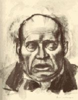
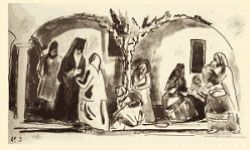
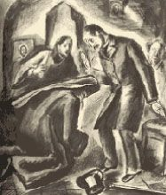
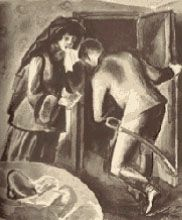
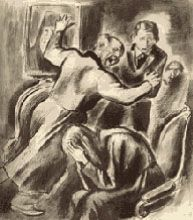
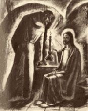
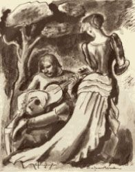

| カラマーゾフの兄弟 １ | |
| ドストエフスキー | |
| (2012) | |
目次
一 フョードル・パーヴロヴィチ・カラマーゾフ
二 厄介ばらいされた長男
三 再婚と腹ちがいの子供たち
四 三男のアリョーシャ
五 長老
一 僧院に到着
二 道化じじい
三 信心ぶかい農婦たち
四 信仰心のうすい貴婦人
五 かくならせたまえ、かくならせたまえ
六 どうしてこんな人間が生きているのだ！
七 出世主義者の神学生
八 大騒ぎ
一 下男部屋で
二 リザヴェータ・スメルジャーシチャヤ
三 燃える心の告白。詩に託して
四 熱き心の告白。秘話に託して
五 燃える心の告白『まっさかさまに』
六 スメルジャコーフ
七 論争
八 コニャックを飲みながら
九 淫蕩な人たち
十 女ふたりいっしょに
十一 もうひとつ失われた名誉
一 フェラポント神父
二 父親の家で
三 小学生とのかかわりあいのはじまり
四 ホフラーコワ夫人の屋敷で
五 客間での激情の突発
六 小屋での激情の突発
七 そして清らかな大気のなかで
一 婚約
二 ギターをたずさえたスメルジャコーフ
三 兄弟、たがいに知りあう
四 反逆
五 大審問官
アンナ・グリゴーリエヴナ・ドストエフスカヤにささぐ
よくよくあなたがたに言っておく。
一粒の麦が地に落ちて死ななければ、
それはただ一粒のままである。
しかし、もし死んだなら、
豊かに実を結ぶようになる。
〔ヨハネによる福音書 第十二章二十四節〕
私はいま自分の主人公アレクセイ・フョードロヴィチ・カラマーゾフの伝記にとりかかるにあたって、ある疑惑を感じている。それはこういうことだ。私はアレクセイを自分の主人公と呼んではいるが、彼はけっして偉人ではないということは自分にもわかっている、したがって、こういったたぐいの質問をかならず受けるにちがいないという予想もついている。「あなたは彼を自分の主人公に選んだが、あなたのアレクセイにはどういう傑出した点があるのか？ 彼はどんなことをした男なのか？ どういう人たちに、またなにで知られている男なのか？ 読者の私は、なぜ彼の生涯の事実の研究などに時間をつぶさなければならないのか？」
なかでも最後の質問はいちばん致命的だ、それにたいしては、「多分、小説を読んでいるうちにおわかりになるでしょう」と答えるほかないからである、が、もし小説を読みおえても、そういうことがわかってもらえず、わがアレクセイが傑出しているという意見に賛成してもらえなかったら、どうしよう？ こんなことを言うのも、悲しいことながら、私にはそういう見とおしがついているからなのだ。彼は私にとって注目すべき人物なのだが、はたしてそれを首尾よく読者諸君に証明できるかどうか、それははなはだもって疑わしい。問題は、彼は多分活動家とは言えるだろうが、つかみどころのない、正体のはっきりしない活動家だという点にある。もっとも、現代のような時代に明瞭さを求めるほうがおかしいのかもしれない。ただひとつ、どうやらかなり確実といってよいのは、彼は変わった人間で、むしろ変人といってもいいくらいの男だということである。ところが、この風変わりとか奇癖とかいうものは、部分部分を結合して、混乱した全体のなかになにか普遍的な意味を見いださせるよりも、むしろそれをさまたげるものなのである、変人というものはたいていの場合特殊で孤立的なものだからだ。そうではあるまいか？
ここでもし諸君がこの最後の命題に賛成されずに、「それはちがう」とか、「かならずしもそうではない」などとお答えになるとすれば、私はおそらく、わが主人公アレクセイの存在意義という点では意を強うするにちがいない。というのは、変人は「かならずしも」特殊で孤立的であるとはかぎらないばかりか、かえって変人のほうが、ことによると、全体の中心となるものを内包していて、その時代のほかの者はひとりのこらず、なにかの風の吹きまわしで、どうしたわけか一時その変人から離れてしまうといったような場合もあるからだ......
もっとも、私はこんな、まったくおもしろくもない、あいまいな釈明などはじめずに、前置きぬきで、いきなり単刀直入に書きだしてよかったのである。気に入ったら、そのままでも読みとおしてくれるだろうから。ところで、困ったことには、この伝記はひとつだが、小説はふたつになっている。しかも、重要なのは第二の小説のほうで、――これは、すでに現代になってからの、つまり経過しつつある現在の主人公の活躍なのである。第一の小説のほうは、もう十三年も前の出来事で、ほとんど小説ともいえず、主人公の少年時代の初期の一時期を描いたものにすぎない。しかし、どうしてもこの第一の小説をはぶいてしまうわけにはいかない、というわけは、そんなことをしたら、第二の小説の多くの箇所がわからなくなるおそれがあるからだ。とはいえ、そうなると、私の最初の困惑はさらにこみいったものとなる。すでに私、つまり伝記作者からして、こんなつまらないあいまいな主人公のためなら小説ひとつでも余計だと思っているのに、二つにして出すということはどんなものだろう、それに自分の思いあがりをどう説明したものだろう？ ということになるからだ。
私はこういった問題の解決にいき悩んだあげく、なんの解決も与えずにすますことになった。無論、目敏い読者は、私が最初からそういう気持ちになりかけているものと、もうとっくから見ぬいてしまって、どうして作者はいたずらに駄弁を弄して貴重な時間をつぶすのだろうと、私に腹をたてておられたにちがいない。これにたいしては、はっきりとこう答えておこう。私が駄弁を弄して貴重な時間をつぶしたのは、第一には礼儀の気持ちからであり、第二には、「結局前もってある予防線を張っておいたのだ」と逃げを打とうというずるい考えからなのである。とはいうものの、私は、私の小説が「本質的には完全に統一されていながら」自然に二つの物語にわかれてしまったことを、むしろ喜んでいる。読者は第一の物語を読みとおされたなら、もう、第二の物語にとりかかる値うちがあるかどうかは自分できめてくれるだろう。もちろん、だれにしても、なんの束縛も受けるいわれはないのだから、第一の物語の二ページからでも本を投げだして、それっきり本をひらかなくてもそれはさしつかえない。しかしながら、過ちなく公正な判断を下すために、ぜひとも最後まで読みとおしたいとお思いになる神経のいきとどいた読者もいるはずだ。たとえば、ロシアの批評家などはみんなそうである。こういう人たちにたいしてはなんといっても気が軽い。こういった人たちはすこぶる几帳面だし良心的ではあるが、それでもここに、小説の最初の挿話あたりで本を投げだすこの上なく正当な口実を彼らに与えておくことにする。そんなものは無用だという意見には私も同感だが、もう書いてしまったのだから、このまま残しておくことにしよう。
では、いよいよ本題にとりかかることにする。
一 フョードル・パーヴロヴィチ・カラマーゾフ
アレクセイ・フョードロヴィチ・カラマーゾフはわれわれの郡の地主フョードル・パーヴロヴィチ・カラマーゾフの三男であるが、この父親のフョードルはいまからちょうど十三年前に悲劇的な変死をとげたことで当時（どころか、いまでもわれわれの郡内では思い出話の種になっているが）なかなか有名な男だった。この事件についてはいずれ適当な所で語ることにして、いまはさしあたり、この「地主」（われわれの郡の者は彼をそう呼んでいたが、彼は一生涯ほとんど自分の持ち村で暮らしたことはなかった）については、風変わりなタイプ、とはいってもよく見かけるタイプ、つまりやくざで淫蕩なばかりでなく、同時にわからずやだが、そのくせおなじわからずやでも、自分の財産上のこまごました仕事なら立派にやってのけられる、そしてそれだけの能しかないように見えるタイプの男だったとだけ言っておこう。たとえば、このフョードルはほとんど裸一貫から身をおこして、地主とはいってもごくちっぽけな地主だったので、あちこち走りまわってよその食事にありついたり、折りあらば居候に転がりこんだりすることばかり考えていたのに、いざ死んでみると、現なまで十万ルーブリからの金をのこしていたことがわかった。それでいながら彼は結局、一生涯を郡内きっての気ちがいじみたわからずやのひとりとして終始したのである。もう一度言っておくが、この点では間抜けたところはなかった。こうした気ちがいじみた人間はたいてい利口で抜け目がないものである、――つまりわけがわからないとは言っても、さらに一種特別な、わが国民独特のわけのわからなさなのである。

彼は二度結婚して、三人の息子があった。――長男のドミートリイは先妻から生まれ、あとの二人のイワンとアレクセイはのち添いの子であった。フョードルの先妻は、やはりわれわれの郡の地主であるミウーソフという、相当の資産家で名門の士族の出だった。持参金つきで、しかも美人でその上、このごろこそわが国でもそれほどめずらしくはないが、はやくもひと昔前にもぼつぼつあらわれ始めていた、活発で頭のいい娘のひとりである彼女が、どうしてこんなつまらない、当時みなから「役立たず」といわれていた男のところへ嫁づくことになったのか、それについては余計な説明はしないことにする。私は、まだ過去の「ロマン主義」時代といわれた時代の娘で何年もある紳士に不可解な恋をささげたあげく、いつでもきわめて平穏無事にその男のもとに嫁入りできる身でありながら、結局、どうにも越えられない障碍なるものを自分で勝手に考えだして、ある嵐の夜、絶壁のような高い岸からかなりふかい急流に身をなげて、完全に自殺をとげたが、それがなんと、ただシェイクスピアのオフェリアに似せたいばっかりに、自分の気まぐれからしたのであって、彼女がずいぶん前から目をつけて惚れこんでいたその絶壁がそれほどの絶景ではなくて、かわりに散文的な平坦な岸ででもあったら、おそらくそんな自殺などまったく起こらなかったくらいだったという事実を知っている。これはまぎれもない実話だが、しかしわがロシア人の生活には、ここ最近二、三世代のあいだに、こういう、あるいはこういったたぐいの事実がすくなからず起きたものと考えなければならない。おなじようにアデライーダ・イワーノヴナ・ミウーソフの行動も、疑いもなく、他国の思潮の影響であり、また思想にとらわれたためのいら立ちでもあった。彼女は、あるいは、女性の自主的力を発揮し、社会的束縛に、自分の親戚や家族の専制に抵抗しようという気になったのかもしれないし、おせっかいな空想のおかげで、たとえつかの間にせよ、フョードルという男は、身分こそ居候にはちがいないが、それでも万般にわたって改善されようとする過渡期のこの上なく大胆不敵でこの上なく冷笑的な連中のひとりだと思いこんでしまったのかもしれない。その実、彼は腹黒い道化者以外の何者でもなかったのだが。その上刺激的だったのは、事が駆け落ちで運ばれたことで、これにアデライーダは大いに魅了されてしまったのである。
フョードルのほうは、その社会的地位から言っても、そのころそういう事件を待ちかまえていたようなものだった、なぜといって、どんな手段に訴えてでも、出世の道を切りひらきたくてたまらなかった矢先だったからである。立派な門閥の者にとり入って持参金をせしめるということははなはだもって魅惑的だったわけである。おたがいの愛情といったようなことになると、これは、嫁のほうにも、また彼のほうにも、アデライーダが大変な美人であったにもかかわらず、まったくなかったようである。したがって、女にちょっと色目をつかわれただけでも、どんな女であろうとたちまちそれにまつわりつこうとする、淫蕩この上もない男として一生をとおしたフョードルにとって、この事件は、おそらく、一生を通じて唯一の例外だったろう。とにかく、彼に情欲の面でなんら特別な感銘も与えなかった女はこの女だけだったのである。
アデライーダは駆け落ちするとすぐに、自分は夫にたいして軽蔑以外なんにも感じていないことに気づいた。そんなわけで、結婚の結果が見る見るうちに露呈してきた。実家のほうではかなりはやばやとこの事件にあきらめをつけて、家出娘に持参金もわけてやったのに、夫婦のあいだには、はやくもこの上ない乱脈な生活といつ果てるともないいざこざがはじまっていた。人の話によると、新妻はこの際フョードルとは比較にならないくらい上品かつ高尚なところを見せたのにたいして、フョードルは、いまでは人も知るところだが、そのとき、妻の手に二万五千ルーブリにものぼる金がはいるやいなやそれを一挙にぜんぶ巻きあげてしまい、そのためその何万もの金が彼女にとってそのとき以来まるで水に捨てたも同然になっていたということである。また、同様彼女の持参金のうちにはいっていた小さな村とかなり立派な家屋も、彼はなにやら適当な証書を行使して自分の名義に書きかえることに、長いこと全力をかたむけて努力をかさねた。彼は毎分毎秒恥知らずなゆすりや哀願で妻に、自分にたいする、いわゆる疑惑と嫌悪をよびおこしていたので、彼女は精も根もつきはてて、もうつきまとうのだけはやめさせたいという気持ちになっていたくらいで、それだけでまちがいなく手にはいるところだった。ところが、さいわいにも、アデライーダの実家が介入して、横領を阻止してしまった。夫婦のあいだにしょっちゅうつかみあいのけんかがおこなわれていたことはそれこそ周知の事実だが、言いつたえによれば、なぐったのはフョードルのほうではなくて、のぼせ症で、顔の浅黒い、癇性で、すばらしい体力にめぐまれたアデライーダのほうだったという。あげくのはてに、彼女は家を捨てて、三つになる息子のミーチャ〔ドミートリイの愛称〕をフョードルの手もとにのこしたまま、貧窮に餓死しかけていた神学校出の教師と駆け落ちしてしまった。フョードルはわが家でたちまちハーレム同然の暮らしと、飲めや歌えの乱痴気騒ぎをはじめ、その合い間合い間にほとんど全県内を馬車でまわって、だれかれかまわず、自分を捨てたアデライーダのことを涙ながらにこぼして歩き、しかも夫として口にするのも恥ずかしいような自分の結婚生活をこまごまと披露におよんだものである。
ここで肝心なことは、恥をかかされた夫という滑稽な役割を人前で演じてみせ、自分が顔をつぶされた話を粉飾までほどこして詳細に描いてみせるのが、彼にはまるで愉快どころか、うれしくてたまらないように見えたことである。「いや、フョードルさん、あなたは、地位を得たことを思えば、そういう悲しいことはあったにしても、満足でしょう」などと皮肉屋は彼に言ったものである。それにつけ加えて多くの者は、あの男は道化者のよそおいを新たにして人前に出られるのがうれしいのだ、わざと一層滑稽に見せるために自分の滑稽な立場に気づいていないようなふりをしているのだなどと言っていた。が、しかしだれにもわからないことだが、ことによると、それは彼の天真らんまんなところだったのかもしれない。ついに彼は出奔した妻の行くえを突きとめることができた。あわれな妻は例の神学校出の男といっしょにペテルブルクへたどり着くと、そこで自由奔放な解放的生活にひたりはじめたのである。フョードルはさっそくあたふたとペテルブルクへ出かける支度をはじめた、が、なんのためかは、むろん、彼自身にもわかっていなかった。たしかに、そのとき彼は出かけたはずなのだが、いざ出かけようと腹をきめたあとですぐに、自分には、門出の景気づけに、あらためて野放図な、痛飲をこころみる至極当然な権利があると思った。ところが、ちょうどその矢先に妻の実家のほうへペテルブルクで彼女が死んだという知らせがとどいたのである。妻はどこかの屋根裏部屋で急死してしまったのだが、一説では死因はチフスだと言い、また一説では餓死らしいとも言われていた。フョードルが妻の情報に接したのは酔いしれていた最中だったが、人の話では、通りを走り出して、喜びのあまり両手を天にむかってさしのべて、「いまこそ解き放たれぬ」とわめきだしたとも言うし、また別の人の話によると、小さな子供のように、泣きじゃくっていて、いつもはいやなやつだと思いながらも、このときばかりは見るもあわれなくらいだったという。それもこれも大いにありそうなことだ、つまり自分が自由の身になったことを喜ぶのと、解放してくれた妻を思って泣くのといっしょだったということも、大いにありそうなことである。たいていの場合、人間は、たとえ悪人であろうと、われわれが一般に思っているよりもはるかに無邪気で正直なものなのだ。われわれにしてもおなじことである。
二 厄介ばらいされた長男
もちろん、こういう人間がどんな養育者であり、父親であったかは、容易に想像できよう。父親として彼は、まさにやりそうなことをやった。つまり彼はアデライーダとのあいだにもうけた自分の息子をそれこそすっかり見捨ててしまったのだが、それも息子を憎んでいたからでもなければ、なにか顔に泥をぬられた夫の気持ちから発したのでもなく、ただ単に息子のことをすっかり忘れてしまっていたからにすぎなかったのである。彼がみんなをうんざりさせるほど泣いたりこぼしたりする一方、自分の家を倫乱の巣と化していたあいだ、三つの子供のミーチャを引きとって養っていたのはこの家の忠僕グリゴーリイで、その頃この男がその面倒を見てやらなかったら、おそらく、子供にシャツの着がえをしてやる者もいなかったことだろう。その上、子供の母親の実家でもやはり、はじめのうち子供のことを忘れてしまったようなぐあいだった。子供の祖父、つまりアデライーダの父親である当のミウーソフ氏はそのころはもう他界し、ミーチャの祖母にあたる未亡人のその妻は、モスクワへひき移ってからどっと病みつき、姉妹は嫁づいてしまっていたため、ミーチャはほとんどまる一年も下男のグリゴーリイの手もとにあって、その下男小屋で暮らさなければならなかったのである。もっとも、たとえ父親が息子のことを思いだしたところで（ほんとうのところは、彼も息子の存在を知らないはずはなかったろうから）、自分のほうからまた子供を小屋へ追いやってしまったことだろう、子供はなんといっても自分の乱行の邪魔になったからである。
ところが、そのころたまたまパリから、亡くなったアデライーダのいとこのピョートル・アレクサンドロヴィチ・ミウーソフが帰ってきた。これはその後長年ずうっと外国暮らしをつづけた人だが、このころはまだごくわかい、それでいてミウーソフ一族のなかでも一風変わって、教養のある、都会人で、異国的で、しかも一生涯ヨーロッパ人でとおし、晩年には四〇年代、五〇年代の自由主義者となった人である。彼は花々しく活躍していたあいだじゅうロシアでも外国でも当時のもっとも自由主義的な人たちと交遊があり、プルードンやバクーニンも個人的に知っていて、その漂泊生活のおわりごろには、とくにこのんで四八年のパリの二月革命の三日間の思い出話をしては、自分もそのバリケード戦の参加者になりかねなかったようなことをほのめかしていた。それは自分の青春時代のいちばん楽しい思い出のひとつであったのだ。彼は昔式に言えば約千人の農奴に匹敵する独立の財産を持っていた。そのすばらしい所有地はいまでもわれわれの町の出はずれにあって、土地の有名な僧院の土地と境を接していて、ミウーソフは遺産をもらった当座の、まだごくわかい年ごろからたちまちこの僧院を相手どって、真相のほどはわからないが、なにか川の漁獲権か森林伐採権のことでいつ果てるともしれぬ訴訟をおこした。彼は「僧権拡張論者ども」を相手どって訴訟をおこすことを、自分の市民としての、また文明人としての義務であるとまで思ったのである。むろん、おぼえてもいたし、かつて、心をひかれたことさえあったアデライーダの話を耳にし、ミーチャという遺児がいることを知ると、彼はフョードルにたいして若者らしい義憤と軽蔑をおぼえたにもかかわらず、この問題に介入することにした。
彼がフョードルと面識を得たのはこのときが初めてだが、彼はいきなり、子供の養育を引き受けたいと申し入れた。彼がその後、いかにもフョードルの面目躍如としている話として長いこと語り草にしていたところによると、彼がフョードルにむかってミーチャの一件を切りだしたとき、相手はしばらくのあいだ、どこの子供の話なのかまったく合点がいかないといった顔つきをしていて、自分の家のどこかにそんな小さな子供がいたのかと、むしろ驚いたような様子だったということである。このミウーソフの話には、たとえ誇張があるにもせよ、やはりどこか真相に近いところがあるにちがいない。それにしても、実際、フョードルは一生涯このんで、人前でなにか人の思いももうけないような芝居をうってみせた人で、しかもその場合肝心なのは、ときにはなんの必要もないのに、たとえばこの場合のようにまったく自分には損になることであってもそれをやってのけるという点であった。もっとも、こういった傾向はたいていの人間が、すこぶる賢い人間でさえ生まれつき持ちあわせているもので、フョードルだけに限ったことではない。ミウーソフは熱心に事を運んで、子供の後見人にまで（フョードルといっしょに）指定された、というのは、母親の死後もなお小さな持ち村や家屋や土地がのこっていたからである。ミーチャはこうして実際にこの従叔父の家へ移ったが、ミウーソフは、家族がなかったので、自分の持ち村からあがる金を受けとる方法をうまく取りきめて、そのほうは大丈夫ということになると、さっそくまた長く滞在するつもりで急いでパリへとって返したため、子供はミウーソフの従叔母にあたるさるモスクワの貴婦人のもとにあずけられた。ところが、このミウーソフもパリに住みつくと子供のことをすっかり忘れてしまうようなことになった。わけても、彼に強烈な印象を与え、以後一生涯忘れられなかった例の二月革命に見舞われたときがそうだった。その後モスクワの貴婦人の没後、ミーチャはその娘のひとりの嫁入り先に移された。彼はそのあとさらに四度めの宿変えをしたらしい。が、そのことについてはここでは詳説しないことにする、ましてフョードルのこの長男についてはまだいろいろ語らなければならぬことがあるのだ。で、いまは、これを抜きにしては小説も書きだせないという、彼にかんする必要欠くべからざる消息だけを書きとめておくことにする。
まず第一に、このドミートリイは、フョードルの三人の息子のなかで、自分にはなににしても多少財産があるから、成年に達すれば独立できるという信念をいだいて生い育ったただひとりの息子であった。少年期と青年期はふしだらな生活のうちに過ぎ去った。中学も最後まで出ないうちに、ある陸軍の学校にはいり、それからコーカサスへ行って、任官するまで勤めあげたが、決闘をして兵卒におとされ、また任官はしたものの、さかんに遊んで、相当多額の金を浪費した。そんなわけで、フョードルから仕送りを受けるようになったのは成年に達してからだが、それまでにずいぶん借金ができていた。父親のフョードルにはじめて対面して知ったのもすでに成年に達してからで、父親と自分の財産のことで話をつけにわざわざ当地へ乗りこんできたときのことである。どうやら、そのときも彼は父親が気にいらなかったらしい。彼は父の家にはちょっとのあいだしか滞在せず、父親からなにがしかの金をもらい、以後自分の持ち村からのあがりの送金方法について父親とのあいだにある取り決めができると、そのときはその収人額も値段もフョードルから聞き出さずに（この事実は注目に値する）、早々に引きあげていってしまった。フョードルはそのとき最初会っただけで（これも銘記しておかなければならない）、ミーチャが自分の財産のことでは誇張した不確実な考えしか持っていないことに気がついた。フョードルがそのことで大いに満足したのは、格別な思惑があったからである。彼は、この若者は思慮があさくて、狂暴で、情欲がつよく、気みじかで、遊び人だから、しばらくいくらか握らせておけば、むろん、一時のことだろうが、すぐにおとなしくなってしまうだろうとこう断定した。そこでフョードルはさっそくその搾取にとりかかった、つまり捨て金を与え、臨時の送金をすることでごまかしはじめたのだが、あげくのはてにこういうことが出来した。というのは、四年ほどした頃ミーチャが堪忍袋の緒をきって、今度こそ父親との問題にすっかり決着をつけようと、一度われわれの町へ乗りこんできてみると、彼の大いに驚いたことには、突然、自分のものはきれいになんにもなくなっていて、計算もむずかしいくらいで、自分はすでにフョードルから自分の全財産の価格に相当する金をのこらず引きだしてしまっていて、ことによると、さらに親父に借金をしているかもしれない、しかもこれこれの時期にとり結んだかくかくの取り決めによってこれ以上なんにも要求する権利さえなくなっているということが判明したのである。青年は愕然として、嘘ではないか、だまされているのではないかと疑い、ほとんどわれを忘れてしまい、途方にくれてしまったようなぐあいだった。この事情こそ、私の第一の序説的小説の主題、というよりもむしろその外部を形成する破局へとみちびいたものなのである。しかし、その小説に移る前に、さらにフョードルのほかのもう二人の息子である、ミーチャの弟たちについても語り、かつ彼らがどこから姿をあらわしたかも説明しておかなければなるまい。
三 再婚と腹ちがいの子供たち
フョードルは、四歳のミーチャを手もとから追いはらったあと、すぐに二度めの妻をめとった。二度めの結婚生活は八年ほどつづいた。その後妻はこれまたごくわかい娘で、ソフィアといったが、彼がこの後妻を得たのは、あるちょっとした用件で、どこかのユダヤ人とつれだって他県へ出張したときのことである。フョードルは遊びもし飲みもし乱痴気騒ぎもしたが、けっして自分の資本の運用をなおざりにしたことはなく、やり方はむろん、たいていきたなかったとはいえ、いつもこまごました仕事をうまく処理していた。ソフィアはある素性の知れない補祭の娘で、幼時から親兄弟のない、いわゆる「身なし子」のひとりで、恩人でもあり養い親でもあると同時に迫害者でもあった有名なヴォローホフ将軍の老未亡人の豪勢な屋敷で生い育った。くわしいことは知らないが、このおとなしい、悪気のない、従順な養女が一度物置きのなかで釘になわをかけて首をくくりかけたところを助けおろされたという話だけは聞いている。それほど彼女には、その、見たところは意地悪そうでもないが、することがないためにひどく癇癪持ちになっていた女暴君の老夫人のわがままと絶えまない口小言がつらかったのである。フョードルが結婚を申しこむと、先方は身もとを調べた上で彼を追いはらってしまった。そこで彼はまた、初婚のときとおなじように、身なし子の娘に駆け落ちをしようと言いだした。これがもし彼女がいい折りに彼の素性をくわしく聞き知っていたら、万々、絶対にこんな男のところへ嫁にいく気にはならなかったに相違ない。ところが、なにぶんよその県のことではあったし、それに十六やそこらの娘になにもわかろうはずはない、それでなくとも恩人の家にいつづけるよりは川へでも身を投げたほうがましだと思っていた矢先なのだ。そんなわけであわれな娘は女の恩人を男の恩人に見かえてしまったわけなのである。
フョードルはこのたびはびた一文ももらわなかった、というのは、将軍夫人が怒って、なんにもくれなかった上に、二人をのろったくらいだったからである。もっとも、彼もこのたびは金などを当てこんでいたのではなくて、ただ清純無垢な少女のすばらしい美貌に魅せられただけで、ここで肝心なのは、それまでは罪ぶかくも荒んだ女の美しかこのまなかった好色漢の彼が彼女のけがれを知らぬ容貌に胸を打たれたという点である。「わしはあのときのけがれのない目にまるでかみそりででも胸をざっくりやられたような気持ちでしたよ」と彼はその後、彼独特のいやらしいくすくす笑いをもらしながら言っていたものである。とはいうものの、極道者にはこれも肉欲的な魅力にすぎなかったのかもしれない。なんの報酬も受けなかったフョードルは妻にたいして遠慮会釈なくふるまい、彼女が彼にたいして、いわば「負い目を感じて」いることを、彼が彼女を「首つりなわから助けおろしてやった」も同然であることをいいことにして、その上彼女のまれに見る従順で柔和な性格につけこんで、ごく世間並みな夫婦間の礼儀さえ足で踏みにじるようなことまでしてのけた。そうした家のなかへ素性のいやしい女どもが集まってきて、よく飲めや歌えのばか騒ぎがもよおされていた。
ここで変わったこととしてお伝えするが、陰気くさい愚直で頑固な屁理屈やの下男のグリゴーリイは前の奥さんのアデライーダのときは彼女を目の敵にしていたのに、今度はあたらしい奥さんの肩を持って、奥さんをかばい、奥さんのことで下男としてあるまじき態度でフョードルと悪態のつきあいをし、あるときなど馬鹿騒ぎと集まった無作法者どもを腕ずくで退散させたことすらあった。その後、ほんの子供の時分からおびえきって育ったこの不幸なわかい婦人に、よく田舎の庶民の女どもに見られる、狐つきとよばれる一種の婦人特有の神経症が起きた。病人はおそろしいヒステリーの発作をともなうこの病気のために、ときに理性を失うことすらあった。
それでも、彼女はフョードルとのあいだに二人の息子をもうけた。上の子は結婚した年に、下の子は三年後に生んだのである。彼女が死んだとき、男の子のアレクセイは数え年四つで、これは奇妙なことだが、彼はその後一生涯母親をおぼえていたということを私は知っている。もっともぼんやりとおぼえていただけであることはいうまでもないが。母親の死後、少年は二人とも、長男のミーチャとそっくりおなじような目に遇った。二人は父親にすっかり忘れられ、放擲され、やはりおなじグリゴーリイの手に移され、おなじように彼の小屋へ引き取られたのである。子供たちの母親の恩人であり養い親であった例の女暴君の老将軍夫人がこの二人の子供とはじめて顔をあわせたのもこの小屋であった。彼女はまだ生きていて、その八年のあいだ片時も、自分が受けた屈辱が忘れられず、「うちのソフィア」の暮らしぶりについては、その八年のあいだ、この上なく確実な情報をこっそりと入手して、ソフィアがわずらっているという話や、彼女のまわりでひどい醜態が演じられているという話を耳にすると、一度ならず二度三度と、声に出して自分の家の居候の女たちにこう言ったという。「それが当然さ、あの子は恩知らずの罰があたったんだよ」
ソフィアが死んでからちょうど三ヵ月たったある日、将軍夫人が突然みずからわれわれの町へ姿をあらわし、いきなりフョードルの家に乗りこんで、町にはせいぜい三十分くらいしかいなかったのに、そのあいだにいろんなことをしでかして行った。それは夕刻のことだった。八年間絶えて顔をあわせたことのなかったフョードルはほろ酔い機嫌で彼女の前にまかり出た。人の話によると、夫人は、彼の顔を見るやいなや、なんの話しあいもせずに、いきなり彼にぱんぱんと二つ音のいいびんたを張り、ぐいぐいと三度ばかり相手の前髪を下へ引っぱっておいて、それからひと言も口をきかずに二人の少年のいる小屋へまっすぐ足をむけた。子供たちが体をふいてももらえず、きたない下着を着せられているのをひと目で見てとると、彼女はたちまちまたグリゴーリイにまでびんたをくれて、子供は二人とも自分の家へ引き取ると言いわたした。それから二人を着のみ着のままでつれだして、厚い毛布にくるみ、馬車にのせて、自分の町へつれ去った。グリゴーリイは忠僕のようにそのびんたを耐えしのんで、ひと言も乱暴な口はきかず、そして老夫人を馬車まで見送りに出たときには、低く腰をかがめてお辞儀をし、「身なし子のことで神さまのお報いがございますよ」としんみりするような調子で言った。が、将軍夫人は、「それにしてもやっぱりお前はでくの坊だよ！」と、馬車で発ちしなに、彼にむかって叫んだ。フョードルは諸般の事情を考えあわせた結果、これはなかなかけっこうな話だと思ったので、その後将軍夫人の手もとで子供たちを養育してもらう件について正式に承諾を与えた際にも、一ヵ条も異議をとなえなかった。一方、びんたの一件については、自分から町じゅうにふれ歩いた。
ところが、この将軍夫人もその後間もなく他界することになった。が、それでも遺言状には二人の子供にそれぞれ千ルーブリずつ与えるむね言いおき、「それを二人の教育費にあてて、全額かならず二人のために使用さるべきこと、ただしちょうど成年に達するまでにそれで足りるようにすること、なぜならこんな子供たちにはこれくらいの供与でも十分すぎるくらいだから。もっとも篤志の方があれば、ご散財はご勝手である」等々といったようなことを書きのこしてくれた。私は自分でその遺言状を読んだわけではないが、聞くところによると、たしかにそのとおりそういった種類の変わった、ひどく独特な書きかただったとのことである。しかし、老夫人の主な相続人はエフィーム・ペトローヴィチ・ポレーノフという、当県の県士族会長をしていた誠実な人だった。彼はフョードルと手紙のやりとりをしてみて、この男からはとても子供の養育費など引き出せるものではないと即座に見きわめをつけると（もっとも相手は一度もそれをあからさまにことわったことはなく、ただこういう場合にはいつでも話をのびのびにして、ときにはくどくど泣き言などをならべたりするだけだったが）、親身になって孤児たちの面倒を見ることにし、とりわけ下のほうのアレクセイをかわいがり、そんなわけでアレクセイはその後長いことその家庭で生い育ったと言ってよいくらいだった。私は読者諸君に最初からこのことを心にとめておかれるようお願いしておく。
そんなわけで、もしもこのふたりの青年にとって、その養育と教育の点で、一生涯恩を感じなければならぬ者がいたとすれば、それはまさに、このまれに見るこの上なく高潔でヒューマニスティックなポレーノフ氏でなければならない。彼は将軍夫人が残していった千ルーブリずつの金を子供たちのために手をつけずにそっくり保管しておいてやったため、ふたりが成年に達する頃には利息に利息がついて、それぞれ二千ルーブリにも達した。それに養育費のほうは自分の金でまかなっていて、その支出は、もちろん、ひとりにつき千ルーブリをはるかに越えていた。ふたりの少年時代と青年時代のくわしい話はここでもまた当分お預けということにして、重要な事柄だけを摘記することにする。もっとも、上の子のイワンについては、こういうことだけお伝えしておこう。
彼は長ずるにしたがってなんとなく陰気くさい、自分のなかに閉じこもりがちな少年になった。とはいってもおどおどしているのともまったくちがって、まだ十ぐらいのときから、自分たちはなんといっても他人の家に、他人のお情けで育ったのだ、自分たちの父親はなにか口にするのもきまりが悪いような人間なのだといったようなことを悟っているような様子だった。この少年はずいぶんはやくから、ほんの幼少の頃から（すくなくとも、人の伝えるところでは）、学問にたいするあるなみなみならぬ輝かしい才能を発揮しはじめた。正確なところは知らないが、彼は十三になるかならぬかでポレーノフ一家から離れて、ポレーノフのおさな友だちのある経験ゆたかで当時有名だった教育家が経営していたモスクワの全寮制中学校へ進学した。イワン自身がのちに語ったところによると、すべてはポレーノフ氏の、いわゆる「善事にたいする燃えるような情熱」から生じたことで、ポレーノフ氏はその頃、天才的な少年は教育も天才的な教育家のもとで受けなければならぬという思想に心酔していたとのことである。しかし、青年が中学を卒業して大学へはいった頃には、ポレーノフ氏も、その天才的な教育家ももう生きてはいなかった。ポレーノフ氏の管理がまずかったため、例の暴君の将軍夫人がのこしてくれた、すでに利子がつもって二千ルーブリにもなっていた子供たち所有の金の払いもどしが、わが国ではどうにも避けられないいろんな形式や手続きの遅滞のせいでのびのびになっていたため、青年は大学在学の最初の二年間は大変つらい思いをしなければならなかった。というのはそのあいだずうっと自分で自分の身を養いながら同時に勉強もしなければならなかったからである。ここで注意すべきことは、彼がそのとき父親と手紙で交渉することなどしてみようとも思わなかったことである、――それは、ことによると、傲慢さから、父親にたいする侮蔑から来ていたのかもしれないし、また冷静に常識的に判断してみてもどうせ親父からはちょっとでもまともな援助などなにひとつ期待できないと思ったためかもしれない。それはともかく、青年はいっこう途方にも暮れず、結局なんとか仕事にもありつき、最初は一回二十コペイカの家庭教師の仕事を得、やがてそのうち新聞社の編集部を駆けずりまわって『目撃者』という署名で、市井の出来事をつたえる十行記事を提供するようになった。その記事は、人の話では、いつもなかなかおもしろく、かつ刺激的に書かれていたため、たちまちひろく読まれるようになったということで、すでにこの一事だけでも青年は、いつも貧窮にあえいでいる大多数のあわれな男女のわかい学生から、実際的な面でも知的な面でも一頭地をぬいていたことがわかる。そういう、両首都〔ペテルブルクとモスクワ〕に住む学生たちはたいてい朝から晩までいろんな新聞社や雑誌社にお百度を踏んで、いつも変わらぬフランス語からの翻訳や筆写の仕事をくりかえし頼みまわる以外に、いっこういい知恵もうかばないようなありさまなのである。イワンはほうぼうの編集部に渡りをつけたあとも、ずうっと手を切らずにいて、大学の高学年になるとさまざまな専門的なテーマの本に関する才気あふれる書評を発表しはじめたため、文学団体のあいだにも名前が知られるようになった。とはいうものの、彼がたまたまずっと広範囲の読者層の特別な注意をひくようになったのは、ついごく最近のことであって、それ以来それこそ大勢の人にいっせいに注目され、記憶されるようになったのである。それはかなり興味のある出来事だった。すでに大学を出て、例の二千ルーブリで外国へ行く準備をしているうちに、イワンは突然ある大新聞に一編の変わった論文をのせ、それが素人からまで注意を引くことになったのだが、肝心なことは、そのテーマが理科出身だった彼の専門外のことであったことである。
その論文は、当時いたるところで問題になっていた宗教裁判について書いたものであった。彼は、この問題についてすでに発表されていたいくつかの説を検討しながら、自分の所見も述べたのである。重要な点はその論調とそれこそ人の意表をつく結論にあった。ところで、教会派の大多数の者は断然筆者をわが党の士と見た。ところが、急に彼らとならんで市民権派ばかりでなくほかならぬ無神論者までがそちらからも拍手喝采しはじめたのである。が、とどのつまり何人かの具眼の士が、この論文は要するに人を食った笑劇であり嘲弄にすぎないと断定した。この事件についてとくにここで言及したのは、当時起こっていた宗教裁判一般にかんする問題に関心を持っていたこの町の郊外の僧院にも、ちょうどこの論文が持ちこまれて、――持ちこまれると同時に完全な疑惑をよびおこしたからである。また筆者の名前がわかって、それがこの町の出身者で、「例のフョードルの息子だった」ということにも興味をそそられたのである。そうしたところへ、その筆者自身がこの町へ姿をあらわしたわけである。
なんのためにあのときイワンはこの町へ乗りこんできたのだろう、私はあの頃でさえすでになにやら不安にちかい気持ちをいだきながらこうわれとわが胸に問いかけたことをおぼえている。あれほどのさまざまな事件の端緒となったあのまことに宿命的な彼の帰郷は、私にとってその後も長いことほとんどいつも不可解な謎だった。だいたい考えてみれば、あれほど学問のある、見たところあれほど誇りを持った、警戒心のつよい青年があんな父親のあんな乱脈な家へ突然姿をあらわしたということがそもそも不思議なことである。一生涯イワンを無視し、彼を知りもしなければおぼえてもいず、たとえ息子が無心に来たところで金など絶対にやるはずもないのに、息子のイワンとアレクセイもやはりいつかそのうちやって来て金をせびるのではあるまいかと一生涯びくびくのしどおしだった父親の家へあらわれたのだ。ところが、青年はそういう父親の家に住みついて、ひと月またひと月といっしょに暮らしながら、しかもふたりはこの上なく仲よくやっているのである。
これには私ばかりでなく、ほかの多くの人も不思議に思った。先妻の関係でフョードルの縁つづきにあたる前述のミウーソフ氏はその頃たまたま、すっかり永住の地ときめていたパリから舞いもどって、また町の郊外の持ち村に引っこんでいたのだが、私の記憶では、この人がだれよりもいちばん驚いていたようであった。この男は青年と近づきになるとたちまち彼に異常な関心をおぼえ、ときにはひそかに苦痛をおぼえながら青年と学識の競いあいをしたこともあった。「あの男は自尊心はつよいし」と彼はその頃私たちにむかってイワンのことをこう言っていた。「小銭くらいならいつでも稼ぎだせる腕も持っているのだし、外遊の金ぐらいいまだってちゃんと用意しているのだから――なにもこんな所へやって来ることはなかろうと思うがねえ！ 親父のところへ来たのは金が目当てじゃないってことは、だれの目にも明らかだ、どんなことがあろうと金を出すような親父じゃないからね。酒も女遊びも好きな相手じゃないのに、じいさん、あの息子がいなけりゃ夜も日もあけないありさまじゃないか。こんなにうまが合うとはねえ！」
まったくそのとおりだった。青年は老人にたいして明らかに影響力さえ持っていた。老人はときにひどく、意地悪なくらいわがままになることもあったかわりに、ときにはほとんど息子の言うなりになっているように見えることもあった。ときには身持ちさえ前よりよくなってきたように見えることもあった......
これはあとでやっと明らかになったことだが、イワンの帰省の理由のひとつには、兄のドミートリイから依頼された用事があったのである。彼が生まれてはじめて兄の存在を知り、はじめて兄に会ったのも、ちょうどこの頃、つまりこの帰郷のときのことだったのだが、むしろドミートリイのほうに関係のふかいある重大な出来事のことで兄と文通をはじめたのは、まだ彼がモスクワから帰郷する前のことだった。それがどんな出来事だったかは、いずれ時が来れば読者諸君にもおわかりになるはずである。それにしても、この特別の事情を知ってからでも、私にはどうもイワンはやっぱり謎の人物のように思えてならず、彼の帰省もやはり不可解であった。
さらにつけ加えておくが、イワンはそのときは、その頃父親を相手に大げんかをもくろんで父親にたいして正式の損害賠償要求をしようと企んでいた兄ドミートリイと父親とのあいだの仲裁者兼調停役といった立場にあったのである。
もう一度言っておくが、この家族が全員そろって落ちあったのはこのときがはじめてで、なかには生まれてはじめて顔を見た者さえいた。ただ末弟のアレクセイだけはすでにその一年ほど前からこの町に暮らしていた。そんなわけで彼は兄弟のなかでいちばんさきに町へ来たことになる。ところでこのアレクセイこそ、彼をこの小説の舞台に登場させる前に、現在の序論的物語のなかで語ることのいちばんむずかしい男なのだ。とはいえ、すくなくとも前もってあるすこぶる変わった点、というのは未来の主人公を最初の場面から僧服を着た修道僧として読者諸君に紹介しなければならないという点なのだが、それを解明するためにも、彼についても序論を書いておかなければなるまい。たしかに、彼はその頃もうかれこれ一年もこの町の僧院に暮らしていて、一生涯その僧院に閉じこもる覚悟のように見受けられたのである。
四 三男のアリョーシャ
彼はその頃せいぜい二十歳だった（当時兄のイワンは二十四歳に、上の兄は二十八歳になっていた）。まず最初に言っておくが、この青年アリョーシャ〔アレクセイの愛称〕は、けっして狂信者ではなかったし、私の見るところでは、すくなくとも、まるっきり神秘主義者でもなかった。前もって私の忌憚のない考えを述べさせてもらえば、彼は単になりたての博愛主義者にすぎず、僧侶の道に突き進んだのも、当時この道以外に彼を感動させたものはなく、それが彼の目に、いわば愛の光明をもとめて俗世間の憎悪の闇からのがれ出ようとする彼の魂のいきつくべき理想と映じたからにすぎない。それに、その道が彼を感動させたのも、その道で彼がその頃まれに見る人物と見た――当地の名声高いゾシマ長老にめぐりあい、渇えた心の、初恋にも似た情熱のすべてをかたむけてこれに傾倒したからにすぎない。もっとも、アリョーシャがまだ揺籃時代からすでにそうだったが、その頃も非常に変わった男であったということについては、私も異議をとなえる者ではない。ついでながら、これはすでに言っておいたことではあるが、彼が母親に死別したのはやっと四つになったばかりの頃だったのに、その後生涯母親のおもかげや愛撫を、「まるで母が生きて目の前に立ってでもいるように」まざまざと記憶していた。こうした思い出は（これもだれ知らぬ者もないことであるが）もっとはやい年頃のものでも、二歳頃のものでも、記憶に残るものだが、ただそれは、一生涯、まるで闇のなかの明るい一点のように、また画面ぜんたいが消えてしまったのにその一角だけがのこっている大きな絵のなかの切りとった一隅のように、ぽかっと心にうかび出てくるものなのである。彼の場合もそれとまったくおなじだった。彼がおぼえていたのは、ある夏のひっそりした夕暮れどきで、あけはなたれた窓からは斜めに入り日がさしこみ（この斜光がいちばん記憶に残っていた）、部屋の片隅には聖像がおいてあり、その前には燈明がともっていて、聖像の前に膝まずいて、ヒステリーでもおこしたように金切り声でわめきたてながらすすり泣いている自分の母が彼を両手でつかんで痛いほどぎゅっと抱きしめては、わが子のゆく末を聖母に祈り、聖母の庇護をもとめるように、両腕で抱きしめたわが子を聖像のほうへさし出している......とそこへ突然乳母が駆けこんできて、びっくりしている彼女から子供をもぎ取るという、そういう光景なのだ！ アリョーシャはその瞬間の母の顔までおぼえていた。彼の話によれば、その顔は狂った顔ではあったが、彼の記憶するかぎりではじつに美しかったという。が、しかし彼はめったに人にこの思い出を打ち明けなかった。少年時代、青年時代の彼はあまり感情をおもてへ出さず、口数もすくないほうだったが、それは人を信じないためでもなければ、内気とか気むずかしい人づきの悪さのためでもなく、むしろまったくその反対で、なにかほかの理由、つまり他人には関係のない、まったく個人的な、だがそのために他人のことはまるで忘れたようになるくらい彼にとって重大な、なにかひそかな心配事のようなものがあったせいである。
それでいながら、彼は人間を愛していた。彼は一生涯完全に人間を信じながら生きとおしたようであった、がそれでいてだれにも一度としてお人よしとも単純な人間とも思われたことはなかった。彼にはどこか、自分は人を裁く人間にはなりたくない、そして人を批判するようなことはしたくないから絶対に人をとがめ立てしないのだと、そう感じさせるようなところがあったのだ（それにその後も一生を通じてそうだったのである）。彼はたびたびひどく悲嘆にくれることはあったが、すこしも人を非難せず、なんでも大目に見てやるようにさえ見えた。そればかりでなく、その意味ではだれも彼をおどろかすことも威しつけることもできないところまで行ってしまっていた、しかもそれがごくおさない頃ですらすでにそうだったのである。
二十歳のとき、完全にけがらわしい淫蕩の巣と化していた父親の家へあらわれたときも、純潔無垢な彼は、どうにも見ていられなくなると、ただ黙って席をはずすだけで、たとえ相手がだれであろうと毛ほども軽蔑や非難の色を見せるようなことはなかった。かつて居候をしたことがあり、したがって侮辱にたいしては感じやすくてデリケートな父親ははじめうさん臭そうな気むずかしい態度で彼を迎えた（「ばかに口数がすくないが、腹のなかじゃいろいろ考えているんだろう」ぐらいに思って）が、結局、二週間もたたないうちに、しょっちゅう息子を抱いて接吻をはじめるようなことになってしまった。それはたしかに、一杯機嫌の酔っぱらったまぎれの空涙にはちがいなかったが、息子を心からふかく愛しはじめたことは明らかで、そういうことは、むろん、だれをも愛したことのない彼のような男には絶対になかったことなのである......
それどころか、この青年は、どこへ行こうと、だれにでも愛されたものである、しかもごくおさない頃からそうだったのだ。自分の恩人であり養い親であったポレーノフの家に引きとられたときも、彼はその家族全員の愛情を一身にあつめ、まったく実の子同様にあつかわれていた。ところで、彼がその家にはいったのはまだそれこそ幼少の頃のことだったから、そんな年頃の子供に打算的な悪知恵とか、取り入ったり気に入られようとしたりする術策や技巧、自分を愛させようとする能力など絶対にあろうはずはない。だから、自分にたいして特別な愛情を呼びおこす才能は、いわば生まれつき、自然に、本能的にわが身に備えていたわけである。学校でも彼はまったくおなじだった、とはいえ、彼はたしかに、自分に級友の不信や、ときには嘲笑を、ひょっとすると憎悪さえよびおこすような子供のひとりではなかったかと思われる。たとえば、彼は物思いにふけって、みんなから孤立しているように見えることもあったし、またごく幼少の頃から隅へひっこんで本を読むのが好きな子だった、が、それでいて学友からは、学校にいるあいだずうっとみんなの人気者といえるくらい好かれていた。彼はめったに腕白でもなければ、めったにはしゃぐことすらなかったが、みんなには、彼をひと目見ただけで、それは全然どこか気むずかしいところがあるせいではない、それどころか彼はおだやかで明るい気分なのだということが立ちどころに見てとれるのだった。おなじ年頃の子供のなかにいて彼はけっして自分を目立たせようとするようなことはしなかった。あるいは、そうだったからこそ彼はだれをもけっして恐れなかったのかもしれないが、それでいて子供たちには、この男は自分の勇気をまるっきり鼻にかけていない、ただ自分には勇気があるし恐怖というものを知らないことがわかっていないように見えるだけだと即座に見ぬいてしまった。また、彼は侮辱を根に持つということもけっしてなかった。よく、侮辱されて一時間もすると、もう自分を侮辱した相手に返事をしたり、自分のほうから話しかけたりすることがあって、しかもそれが人を信じきったような明るい顔つきで、まるで二人のあいだにまったくなんにもなかったような様子をしているのである。しかも、それが、侮辱されたことをたまたま忘れてしまったとか、その侮辱をわざと許してやったとかいう顔つきではなくて、ただ単にあんなことは侮辱とも思っていないといった様子なので、子供たちはその点にすっかり魅せられ、屈服させられてしまっていたのである。
ところが、彼にはひとつだけ風変わりなところがあって、低学年から高学年にまでおよぶ中学校の全クラスの生徒にいつもひとつあいつをからかってやれという気持ちをおこさせていた。とはいってもそれは意地悪な嘲弄の気持ちからではなくて、みんなにはそれがおもしろかったからなのである。彼のその風変わりな点というのは、奇怪な、気ちがいじみたはにかみと潔癖さとだった。彼は女にかんするある種の言葉や会話が平気で聞いていられなかったのだ。ところがこうした「ある種の」言葉や会話は、不幸にも、どこの学校でも根絶できないものである。魂も心も清らかな少年たちが、ほとんどまだ幼児といってもいいくらいなのに、兵隊でさえそんなにいつも口にしないような事柄や場面や姿かたちなどを、教室内で好んでたがいに大声で話しあう。それどころか、兵隊でも、わが国の上流のインテリ階級のまだまったくおさない子供たちがすでに知っているこの種のことで、知らないし、わかってもいないことが多いものなのだ。この場合精神的堕落といったようなものは、おそらくないだろうし、シニシズムにしてもほんものの、堕落した、内面的なものはなくて、あるのは表面的なものだけだが、これが彼らのあいだでは往々にして、なにかデリケートで微妙な、男らしい、そして見ならう価値のあるもののように見なされているのである。彼らは、「その話」が出るたびに「アリョーシャ・カラマーゾフ」がすばやく耳を指でふさぐのを見ると、ときにはわざとそのまわりにむらがり寄って、むりやりその耳から手をもぎ離して、彼の両方の耳もとで下品なことをわめきたてる、すると相手は床に突っ伏して、両手で頭をかくしてしまい、そのあいだじゅう彼らにひと言も口をきかず、食ってかかりもせずに、黙って侮辱を耐えしのんでいるのである。が、しまいには彼をそうっとしておくようになり、「女の子」などと言ってからかわなくなったばかりではない、その意味では彼を同情の目で見るようになった。ついでながら、彼はいつも学科にかけてはクラスでも優等生のひとりだったが、一番になったことはただの一度もなかった。
ポレーノフ氏が亡くなったあと、アリョーシャはさらに二年間、県立中学校に在学した。ポレーノフ氏の未亡人は悲しみのあまり、夫の死後ただちに長滞在のつもりで、全員女ばかりの家族をひきつれて、外国へ発っていってしまったため、アリョーシャはポレーノフ氏の遠縁にあたるとかいう、それまで一度も会ったことのない、さるふたりの婦人の家に引き移ったが、どういう条件で引き取られたかは、本人にもわからなかった。もうひとつ、大いにといってもいいくらい、これまた風変わりな彼の性分のひとつは、自分がだれの金で暮らしているのかということを、けっして心にかけたことがなかったという点である。その点、彼は、兄のイワンが大学の最初の二年間窮乏生活を送って、自分の働きで糊口をしのぎ、ごくおさない頃から、自分は恩人の家に厄介になって暮らしているということを痛感していたのとはまったく正反対であった。が、しかしこうしたアレクセイの性格の風変わりな点をあまり厳しくとがめてはならないようだ。というわけは、彼の人柄をほんのすこししか知らない者はだれでも、そういった疑問が生じた場合すぐに、アレクセイはきっと神がかり〔奇矯な言行や予言をし、民衆から尊敬されていた宗教的放浪者〕といったたぐいの青年のひとりで、突然莫大な金がはいったところで、無心でもされたら、さっそくなんのためらいもなくくれてやったり、慈善事業に寄付してしまったり、ただ単に達者な詐欺師にでも引っかかって巻きあげられてしまったりするような人間にちがいないと思いこんでしまうだろうから。それにだいたい、彼は、無論文字どおりの意味ではないが、まるっきり金の価値を知らないらしかった。自分のほうから小遣いをねだることはけっしてなかったが、小遣いをもらうと、彼は何週間でも使い道がわからず困っていることがあるかと思えば、金をまったく大事にせず、またたく間になくしてしまうこともあった。金とブルジョア的誠実さにかけては神経のこまかい人間であったミウーソフ氏が、のちに、アレクセイを見慣れた頃に、あるとき彼のことでこういう警句を吐いたことがある。「あれは、もしかすると、いきなりひとりっきりで金も持たずに人口百万の見知らぬ町の広場にほうり出されても、絶対に餓え死にも凍え死にもしない、世界でたったひとりの人間かもしれんな。人がすぐに養ってくれたり身のふりをつけてくれたりするだろうからな、人がしてくれなかったら、すぐに自分で身のふりをつけるだろうし。それでいて彼にはなんの努力もいらんし、へいへいする必要もない。それに身のふりをつけてやる者もそれをちっとも苦にしないどころか、かえってうれしく思うかもしれないんだ」
彼は中学校の課程を終了せず、まだまる一年のこっているというときに、急にふたりの婦人にむかって、ある用事を思いついたから、父のところへ行ってくると言いだした。ふたりの婦人は彼と別れるに忍びず、はじめは放したがらなかった。旅費はあまりかからなかったので、恩人の遺族が外国へ発つ前においていってくれた自分の時計を質に入れようとしたが、婦人たちはそうはさせずに、旅費をたっぷり持たせ、新調の服や下着までととのえてくれた。それでも、彼は、どうしても三等車で行きたいからと言って、金を半分返してしまった。町へ着くと、彼は父親から「いったいどうして学校を中途にして帰ってきたんだ？」とまっさきに問いつめられたが、なんともはっきりとは答えずに、例によって物思いに沈んでいたという話である。が、そのうち間もなく、彼が母親の墓をさがしていることが知れた。彼は帰郷したとき、じつはそれが目的で帰ってきたのだと白状しようかと思ったのだった。しかし、彼の帰省の理由がそれで全部だったとはとても考えられない。いちばんたしかなのは、彼の心に俄かに湧きおこって、あるあたらしい未知の、だがすでにどうにも避けられない道へと彼を有無を言わさず誘い出したものが、いったいなんであったのか、その頃は自分にもわからなかったし、どうしても説明がつかなかったというところだろう。フョードルは、自分の後妻をどこに埋葬したのか教えてやれなかった。というのは、棺に土をかぶせて以来、一度も妻の墓まいりをしたことがなかったし、なにぶん遠い昔のこととて、当時どこへ埋葬したのか、とんと記憶がなかったからである。
ついでだから、ここでちょっとフョードルのことも話しておこう。彼はその前長いこと町を留守にしていた。後妻の死後三、四年もしたころ南ロシアにむけて発ち、しまいにオデッサにあらわれて、そこに何年か引きつづき暮らしていた。はじめはそこで、彼自身の言いぐさを借りれば、「老若男女を問わずおびただしいジューども」と知りあいになったが、しまいにはジューばかりではなくて、「ヘブライ人の家へも出入りできるようになった」〔ジューはユダヤ人の卑称。ヘブライ人は尊称。つきあいの範囲が下層から上層へのびていったことを意味する〕。彼が金もうけで特別な腕前をみがきあげたのは生涯のこの時期であったと考えなければならぬ。彼が最後にまたわれわれの町へ舞いもどってきたのは、ぜいぜいアリョーシャが帰省する三年くらい前のことである。
古馴染みは彼がひどく老いこんでしまったように思った。が、彼はまだまだけっしてそれほど老人ではなかった。彼の挙措ふるまいは以前より上品になるどころか、妙にずうずうしくさえなっていた。たとえば、この昔の道化者に、今度はほかの者まで道化に仕立ててやろうという不敵な野望が頭をもたげた。女遊びの乱行は相変わらず好きだというよりも、むしろさらにいやらしさを加えてきたようであった。間もなく、彼は郡内一円にたくさんあたらしい飲み屋を開いた。見たところ、彼はおそらく十万ルーブリか、でないとしてもそれをやや下まわるくらいの金を持っているらしかった。町うちや郡部の住人で彼からさっそく金を借りる者も多勢いたが、この上なく確実な担保をつけた上であったことは言うまでもない。ごく最近は、なんとなく皮膚がたるんでき、気持ちの平らかさや自制心を失ってきて、妙に軽はずみにさえなり、やることが首尾一貫せず、しまりがなくなり、大酒をくらって酔っぱらうこともますます頻繁になってきたので、同様このころにはだいぶ老いぼれてしまっていた、昔ながらの下男のグリゴーリイがときどき目つけ役といったかっこうで彼を見張っていてやらなかったら、あるいは、フョードルもこれといった心配事もなしに暮らすことはできなかったかもしれない。
アリョーシャの帰省は、精神的な面でも彼にある作用を及ぼしたらしく、そんな年でもないのに老いこんでしまったこの男の心のなかにも、もうずいぶん前に消えてしまっていたものでなにか目覚めたものがあったらしかった。「え、お前」と彼はよくアリョーシャの顔をつくづく見ながらこんなことを言い言いした。「お前はあれに似ているぞ、あの狐つきに」彼は自分のいまは亡き妻、アリョーシャの母親をそう呼んでいたのである。その「狐つき」の墓のありかを教えてくれたのは、結局下男のグリゴーリイだった。彼はアリョーシャを町の墓地へつれていって、彼に鋳物の、金はかかってはいないが、小ぎれいな墓標を指さして見せた。それには故人の名、身分、年齢、没年まで刻まれ、その下には中流階級の墓によく使われる古風な墓碑銘用の詩句まで彫りつけてあった。おどろいたことに、その墓標はグリゴーリイの手に成ったのだった。それは彼が自腹を切って自分であわれな「狐つき」の墓に建てたもので、建てたのは彼に何度となくその墓のことを持ちだされてうんざりしてしまったフョードルが、墓ばかりでなく思い出まできれいさっぱりと振り捨てて、とうとうオデッサへ立ち去ったあとのことだった。アリョーシャは母の墓前では特別感傷的なところなど一切見せなかった。彼はただグリゴーリイのもったいぶった、もっとも至極な、墓標建立の話を聞いて、うなだれたまま、たたずんでいただけで、ひと言もものを言わずに行ってしまった。それ以来、おそらく、まる一年も墓参には行かなかったろう。ところが、この小さなエピソードもまたフョードルに一種の作用を、それもすこぶる風変わりな作用をおよばした。彼はやにわに千ルーブリの金をつかんで僧院へ持ちこみ、妻の回向を頼んだのだが、その回向というのがまた、後妻、つまりアリョーシャの母親の「狐つき」のためではなくて、自分をさんざんなぐった先妻のアデライーダのためだったのである。そしてその晩方にはしたたか酒を飲みくらって、アリョーシャにむかって修道僧たちの悪口をたたいていた。この男は信仰などとはおよそ縁の遠い人間で、聖像に、おそらく五コペイカのろうそく一本あげたこともなかったろう。こういう人間にかぎって、突発的な感情や突発的な思いつきの奇妙な衝動にかられるものなのである。
彼はひどく皮膚がたるんでしまっていたということは、もう前にも述べておいた。その人相は、その頃には、なにか自分が送ってきた暮らしの特徴や本質をはっきり立証するような様相を見せてきていた。いつも厚かましそうで疑りぶかそうで冷笑しているような小さな目の下にできている長いぶよぶよの袋や、小さいが脂ぎった顔にきざまれた無数のふかいしわなどもそうだが、それら以外にさらに、とがったあごの下には財布のようにだぶだぶしたやや長い大きなのど仏がさがっていて、それが彼になんとなくいやらしい好色そうな外見を与えていた。それに、淫乱そうな大きな口、はれぼったい唇、そのかげから見える、黒い、ほとんど腐りかけている歯の小さな残骸などをつけ加えてみるがよい。彼には話しだすたびに唾を飛ばす癖があった。もっとも、本人も自分の顔をこのんで笑い草にはしていたが、どうやら、依然としてその顔に満足しているらしかった。とくに、彼はあまり大きくもない、ひどく細い、ぐっと出ている鉤っ鼻を指さしてこう言ったものである。「これこそほんとうのローマン・ノーズってやつだよ。これとこののど仏がいっしょになって、頽廃期の古代ローマ貴族の顔ができあがっているわけだ」どうやらそれが彼の自慢の種らしかった。
さて、アリョーシャは母の墓を発見して間もなく、だしぬけに父にむかって、自分は僧院にはいりたい、修道僧がいつでも見習い僧として入れてやると言っているなどと言いだした。そしてそのとき、これは自分のたっての望みだから、父親として正式に許しを与えてほしいのだと説明した。老人は前々から、自分の「おとなしい子供」が僧院の庵室で魂の救いの祈祷に精進しているゾシマから特別な感銘を受けたことを知っていた。
「あの長老は、もちろん、あそこじゃいちばん心の清らかな坊さんだ」彼はアリョーシャの言うことを黙ってなにか思いふけりながら聞きおわると、そう言ったが、息子の願いにはさほど驚いたような様子もなかった。「ふむ......じゃ、お前はあそこへ行きたいというんだな、うちのおとなしい子供が！」彼は一杯機嫌だったが、不意に例の、いつまでもつづく、一杯機嫌とはいえ、ずるさと酔っぱらい特有の狡猾さを失わぬ笑いを浮かべて、「ふむ......わしにもそういう予感はあったよ、お前は結局なにかそんなふうなことをしでかすんじゃあるまいかという予感が。お前には想像もつかなかったろうがな？ お前はまさにあそこを狙っていたわけか。が、まあ、それもよかろう、お前は自分の金を二千ルーブリ持っている、といったわけであれがお前の持参金ということになるわけだ、それにわしだってお前をけっして見捨てるようなまねはしないぞ、今度だってむこうが出せと言や、お前のために、むこうで要るだけのものは持っていってやるよ。しかし、出せと言わなかったら、なにもこっちからむりに頼むこともないだろう、な、そうだろう？ お前の金の使いかたときたら、カナリヤもおなじで、一週間に穀粒二つくらいしか使わんからな......ふむ......あのな、これはある僧院の話だが、ある町はずれに村里がひとつあってな、その辺の連中はだれでも知っていたが、そこには『僧院妻』しか住んでいないのさ、そこではそんなふうな呼びかたをしていたよ。そうさな、女が三十匹もいたろうか。......わしはそこへ行ってみたことがあるが、なかなかおもしろかったぞ、無論、それはそれなりの、目先が変わっているという意味でのおもしろさだがね。ただ鼻持ちならないのは、大変な国粋主義でな、フランス人の女なんかまるっきりいやしないんだ、いたら、どえらい金儲けになるんだが。そのうち嗅ぎつけて――やって来るだろうけどな。ところが、ここの僧院ときたら、なんにもありゃしない、僧院妻もいやしない、坊主は二百匹もいるというのに。道心堅固で、精進に励む連中ばかりでな。正直言って......ふむ......じゃ、お前は坊主の仲間入りがしてみたいってわけか？ ところが、わしはまったく、お前を手放すのが惜しいんだよ、アリョーシャ、ほんとうだとも。信じちゃくれまいが、わしはお前に情が出てきたんだよ......それにしても、これはちょうどいい機会だ、わしら罪ぶかい者のために祈ってもらおうか、もう、この世でずいぶん罪なまねもしちらしてきたからな。わしはいつもこう考えてきたんだ、いつかそのうち、だれかわしのために祈ってくれる者がいるだろうか？ この世にそんな人がいるのだろうか？ とな。な、お前、わしはこういうこととなると、まったくのばかなんだよ、お前は多分信じちゃくれまい？ まったくひどいものなんだ。実はな、わしはばかはばかなりに、しょっちゅうこんなことを考えているんだよ、しょっちゅう考えているんだ、とは言っても、無論、ときどきさ、しょっちゅうというわけじゃない。わしが死んだら、悪魔のやつらはよもやわしを鉤にひっかけて地獄へ引きずりこむのを忘れることはあるまい、とこう考えているんだ。そこで、またこう考える。鉤か？ しかし、やつらはどこからそんなものを手に入れて来るんだ？ それにそれはなんでできているんだろう？ 鉄だろうか？ だとしたら、いったいどこでそんなものを鍛えるんだろう？ やつらのとこにはなにか工場のようなものでもあるんだろうか？ あの僧院の坊主どもはきっと、たとえば、地獄には天井があるんだなんて考えているかもしれない。が、わしはまあ、地獄があることぐらいは真に受けてもいいが、天井だけはなしにしてもらいたいな。そのほうがなんだか優美で、文明的で、つまりルター式なものになって来るからな。しかし、ほんとうは、天井があろうがなかろうが、おんなじことじゃないか？ ところがいまいましい問題の所在はここなんだよ！ まあ、天井がないとすれば、したがって鉤もないことになる。もし鉤もないとすれば、なにもかも雲散霧消、つまり――またなにもかも怪しくなって来る。そうなったらだれがこのわしを引きずっていくのだ、だって、だれかわしを引きずっていく者がいないとしたら、そのときはどうなる、この世の真理はいったいどこにあるということになるじゃないか？ そこで、その鉤をわざわざわしのために、わしひとりのためにも Il faudrait les inventer 〔それを創り出さなければならない〕ことになる、なにしろ、お前は知らんだろうが、アリョーシャ、わしはひどい恥知らずな男だからな！ ......」
「あの世には鉤なんかありませんよ」と、アリョーシャは父の顔をまじまじと見ながら、真顔でおだやかにそう言った。
「そうとも、そうとも、あるのは鉤の影だけさ。わかっているよ、わかっているとも。あるフランス人が地獄のことをこう書いているが、そのとおりだよ。J'ai vul'ombre d'un cocher, qui avec l'ombre d'une brosse frottait l'ombre d'un carrosse.〔私は見た、ブラシの影で馬車の影を磨く御者の影を〕とな。それにしてもお前は、鉤なんかないってことをどうして知っているんだ、お前？ まあ、坊主どものあいだでほんのしばらく暮らしただけでも、そんな口はきかなくなるだろうけどな。が、まあ行くがいい、あそこで真相をつかんで来い、そして帰ってきて話してくれ。あの世ってどういう所か、しっかりつかんでおいたほうが、おなじあの世へ行くにも気楽だろうからな。それに、坊主どものところにいたほうが、うちで酔っぱらいのじじいや娘っ子どもといっしょにいるよりも身のためになるだろう......もっとも、お前は、天使とおなじで、どんな汚れにも染まることはないだろうけどな。まあ、おそらく、あそこへ行ってもお前はどんな汚れにも染まることはあるまい、だからこそわしはお前に許可を与えるのだぞ、つまりわしはそれを当てにしているわけだ。お前の知恵はまだ悪魔の餌食にはなっていない。ぱっと燃えて、それが消えて、病気がなおったら、また帰ってくるがいい。わしはお前の帰りを待っているからな。まったくわしは感じているんだ、お前は、わしを爪はじきしなかったこの世でただひとりの人間だってことを、かわいい子供、わしはそれを感じているんだ、またそれを感じないでいられるものか！ ......」
こう言うと、彼はすすり泣きさえしはじめた。彼は感傷的になっていたのである。ひねくれてはいたが、同時に感傷的にもなっていたのだ。
五 長老
ことによると、読者諸君のなかには、この青年は病的で、陶酔におちいりがちで、精神的発育の未熟な、青白い夢想家で、ひよわな、やせこけた人間と考える人もいるかもしれない。が、実際はその反対で、アリョーシャはそのころ体のがっしりした、赤い頬をし、すずしい目つきをした、はちきれそうに健康な十九歳の青年だったのである。彼はその頃、むしろすこぶる美男子で、体つきもすらりと均整がとれ、背も中背よりやや高く、髪は栗色で、顔はやや面長だが、輪郭の端正なたまご型で、目の色は暗灰色、左右に間隔のひらいている、すこぶる瞑想的で、見たところまことにおだやかそうに見える男だった。人は、ことによると、頬が赤いからといって狂信家や神秘主義者でないということにはならないと言うかもしれない。しかし、私には、アリョーシャはむしろだれよりもリアリストだったように思われてならない。もちろん、僧院にはいってからは彼も奇蹟というものを信じるようになったろうが、私に言わせれば、リアリストは奇蹟などにけっして困惑を感じるものではない。リアリストを信仰に傾かせるのは奇蹟ではないからだ。真のリアリストは、もしも彼が信心家でなければ、つねに奇蹟をも信じまいとする力と能力を自分は持っていると思うだろう、がもし奇蹟が否定しえない事実として自分の目の前にあらわれたとすれば、その事実を認めるよりもむしろ自分の感覚を信じないだろう。たとえそれを認めるとしても、自然現象として、ただしそれまで自分の知らなかった自然現象として認めるはずである。リアリストの場合は、奇蹟から信仰が生まれるのではなくて、信仰から奇蹟が生まれるのだ。リアリストがいったん信仰を持ったならば、彼はほかならぬ自分のリアリズムにしたがってどうしても奇蹟をも認めずにはいられないものである。使徒トマスは、この目で見ないうちは信じないと言明したが、いざ見たとき、「わが主よ、わが神よ！」と言った。彼を信仰させたのは奇蹟だろうか？ いちばんたしかなのは、そうではなくて、彼は信仰を持ちたいと望んでいたからこそ信仰したのであって、まだ、「見ないうちは信じない」と言ったときですら、自分の心の奥底ではすでに完全に信仰していたのかもしれないということである。
人は、あるいは、こう言うかもしれない、アリョーシャは頭のにぶい、知能の遅れた男だったのだ、学校も卒業しなかったではないかなどと。彼が学校を出なかったことは、これはたしかだが、頭がにぶいとか、ばかだとか言ったら、それは大変な誤りである。私はただ、前に述べたことをこうくり返すだけだ。彼がこの道にはいったのは、当時この道以外に彼の心を打ったものはなく、それが彼の目に、光明をもとめて闇黒からのがれ出ようとする自分の魂の行きつくべき理想と映じたからにすぎないのだと。それにもうひとつ、彼はある点ではすでにわが国の現代の青年であったということもつけ加えていただきたい、つまり生来誠実で、真理を求め、真理を探求してそれを信じ、いったん信じたならば即刻自分の全精神力をかたむけてその真理の運動に加わって、一刻もはやく大事業を成しとげたいと望み、その大事業のためにはあらゆるものを、生命さえも犠牲に供することを切望してやまない青年であったということである。ただ不幸なことに、こういう青年は、命をささげるなどということはこうした多くの場合あらゆる犠牲のうちでいちばんたやすい犠牲なのかもしれないということを、たとえば、自分の情熱に沸きたつ青春の五年なり六年なりを困難な、つらい勉強や学問にささげるということは、――よしんばその目的が、自分の特別愛し成就しようと思う真理や事業に奉仕するための力を十倍にすることだけであったにしても――そうした犠牲は例外なくそういう青年の多くの者にとってとても手に負えないことだということを理解していない場合が多い。アリョーシャはただみんなとは正反対の道を選んだだけで、一刻もはやく偉業を成就したいという熱望には変わりはなかった。彼は真剣に考えぬいて、不死と神は存在するという信念にふかい感動をおぼえると同時にごく自然にこう自分に言いきかせた。「不死のために生きたい、中途半端な妥協は受けつけないぞ」これとまったくおなじこと、もしも彼が不死と神は存在しないと断定したならば、ただちに無神論者や社会主義者になったはずである（なぜなら、社会主義は単に労働問題、つまり第四階級の問題であるばかりでなく、主として無神論の問題、無神論を現代的に肉づけした問題、地上に天国を実現するためではなくて天国を地上へ引きおろすために、まさに神なくしてバビロンの塔をうち建てようとする問題であるからだ）。アリョーシャには、これまでの生き方はむしろ奇怪で不可能なことにさえ思われた。聖書にも、「もしあなたが完全になろうと思うなら、すべてを分かち与え、そしてわたしに従ってきなさい」〔マタイによる福音書第十九章二一節〕とあるではないか。そこでアリョーシャはこう自分に言いきかせた。「おれは『すべて』を与えないで二ルーブリを与えたり、『わたしに従ってきなさい』を実行しないで祈祷式だけに出るというようなことはできない」もしかすると、彼の幼時の思い出から、なにか町の僧院へ母につれられて祈祷式にかよった思い出でものこっていたのかもしれない。また、もしかすると、これには、「狐つき」の母が彼を両手で聖像のほうにさし出したときの聖像の前の落日の斜光も作用していたかもしれない。あのとき彼が物思いに沈みながらこの町へやって来たのも、あるいは、ここではすべてを捧げているか、それとも二ルーブリしか捧げないか、ただそれだけを見きわめに来たのかもしれない。そして僧院であの長老にめぐりあったのである......
その長老というのは、すでに前にも述べたとおり、ゾシマ長老のことだが、ここで、一般にわが国の僧院における長老とは何者かということについても、二言三言話しておかなければなるまい。ところが残念なことに、私はこの方面には十分に通じてもいないし、確実な知識も持っていないような気がする。しかし、手短に外面的な叙述を試みよう。まず、権威ある専門家の主張するところによると、わが国に、わが国の僧院に長老や長老制度が出現したのはごく最近のことで、百年もたっていない、ところがギリシャ正教を奉ずる東方諸国、とくにシナイやアトスにはすでに遠く一千年も前から存在していたという。また、彼らの主張するところによれば、わが国にも、古代には長老制度が存在していた、もしくは存在していたはずだが、ロシアの国難――つまり蒙古人の支配や動乱やコンスタンチノープル陥落による、それまであった東方との交通の途絶等の結果、その制度が忘れさられて、長老も跡を絶ったのだという。それがわが国にふたたび復活を見たのは、前世紀の末からで、偉大な苦行者（とそう呼ばれていた）のひとりであるパイーシイ・ヴェリチコーフスキイとその弟子たちの力によるものであるが、それからほとんど百年後の今日でも、まだそれが存置されているのはごく少数の僧院にすぎず、ときには、ロシアでは前代未聞の新制度として、ほとんど迫害に近い目にさえ遇ってきている。わがロシアでこの制度がとくに隆盛を見たのは、有名なコゼーリスカヤ・オープチナにおいてである。われわれの町の郊外の僧院にこの制度がいつ、まただれによって設置されたかは、私には言えないが、ここでは長老はすでに三代を数え、ゾシマ長老がその最後だった。が、その彼ももう老衰と病気で死にかけているというのに、だれをその後継者にするかということさえわかっていなかった。この問題はこの僧院にとって重大だった、というのはこの僧院にはこれまでにこれといってなにひとつ有名なものがなかった、つまり聖者の遺体もなければ、奇蹟にまつわる霊験あらたかな聖像もないし、国史に関係のあるすばらしい伝説もなく、またこの僧院の歴史的な功績とか祖国にたいする貢献を挙げることもできなかったからである。この僧院が栄え、ロシア全土にその名がとどろいたのは、ほかならぬこの歴代の長老のおかげで、その長老に会いその声を聞こうものと巡礼たちがロシア全国から千里の道を遠しとせずにこの町へ群れをなして集まってきていた。
では、その長老とはいったいなになのか？ 長老とは――これはわれわれの魂を、われわれの意志をとらえて、自分の魂と意志に同化してしまう者なのである。長老を選んだならば、われわれは自分の意志を放棄して、完全な自己放棄によってその意志を完全に彼にしたがわせることになる。その覚悟をした者は、自分に打ち勝ち自分を支配する長い修業のはてに、ついにはこの一生涯の服従によって、もはや完全なる解脱に、つまり自分自身からの解脱に到達して、一生生きても自分のなかに自分を見出だせない人たちがたどる運命が避けられるようになるという希望をいだいて、すすんでその修業を、そのおそろしい人生学校をわが身に引き受けるのである。この発案、つまり長老制度は理論的なものではなくて、東方諸国で、いまではもう千年にもおよぶ実際的経験から創りだされたものなのである。長老にたいする義務は、わがロシアの僧院にもつねにあった普通の「服従」とは趣を異にしている。ここに認められるのは、長老に仕えるすべての人の生涯にわたる懺悔と、結ぶ者と結ばれる者との不壊の絆である。
たとえば、こういう話がある。かつて、原始キリスト教の時代に、あるそういう新発意が、その長老に課された服従の義務を果たさずに長老のもとを去って、他国へ、シリアからエジプトへ行った。そしてその国で長いあいだかけて大事業をなしとげたあげく、ついに拷問に耐え、信仰に殉じて殉教者として死ぬことになった。教会がすでに彼を聖徒とあがめて遺体を葬ろうとしたとき、突然「祝福されぬ者は外へ出よ」という補祭の叫び声がしたとたんに、その棺がなかに納めた殉教者の遺体もろともその場から飛んで寺院の外へほうり出され、それが三度に及んだ。そこで人はついにやっと、その尊い殉教者は服従の戒律をやぶって自分の長老のもとを去ったので、長老の許しがなければ、あれほどの大事業を成しとげても、罪が許されないのだということがわかった。そこで、呼び迎えられた長老がその戒律を解くに及んで、やっとその葬儀を行なうことができたというのである。むろん、これはみな大昔の伝説にすぎないが、ここにこういう最近の話もある。現代のロシアの修道僧のひとりがアトスで魂の救いをもとめて祈っていたところ、突然長老が彼に、彼が聖地として、それに静かな隠棲の地として心底から愛着をおぼえていたアトスを去って、はじめエルサレムへ聖地もうでに行き、それからロシアへ帰って北国のシベリアへ行け、「お前のおるべき場所はそこであって、ここではない」と命じた。おどろいて悲しみにうちひしがれた僧は、コンスタンチノープルの総主教のもとに出頭して、おのれの服従の義務を解いてくれるよう嘆願した。ところが、総主教は彼にむかって、それを解くことは、総主教である自分にもできないばかりでなく、世界じゅうにだれひとりできる者はいない、それにいったん長老が課した服従の義務を解く権力は、それを課した長老自身のそれをおいてほかにはありえないのだと返答した。こういったわけで、長老には、ある場合には無限の、理解を絶する権力が授けられているのである。だからこそ、わが国の多くの僧院でこの長老制度がはじめのうち迫害に近い抵抗に遇ったわけなのである。が、しかしそのうち長老は民衆からたちまち絶大な尊敬を払われるようになった。たとえばわれわれの町の長老のもとへも一般庶民からきわめて高貴な人たちまでぞくぞくと押しかけてきたが、それはその前にひれ伏して、自分の疑いや罪や悩みを告白して忠言と訓戒をもとめるためだった。反長老派はこれを見て、いろんな非難をあびせるとともに、ここでは懺悔の秘儀が勝手にかるがるしくあつかわれているなどと、叫びたてた、――ところが、修道僧や俗人が長老にたいして常住おこなっていた魂の懺悔はけっして秘儀としておこなっていたわけではないのである。が、しかし結局、長老制度は維持されて、すこしずつロシアの僧院に根をおろしてきた。もっとも、この試験ずみの、すでに千年の歴史をもつ、人間を奴隷状態から自由と道徳的完成へと精神的に更生させるための道具も双刃の凶器と変わりうるものであって、そのためなかには、従順と徹底的な自制へとみちびかれるかわりに逆に極端な悪魔的傲慢さ、つまり自由ではなくて、くさりへとみちびかれる者も出ることがあるということも、おそらくたしかなことだろう。
ゾシマ長老は、年は六十五、六で、出身は地主だったが、かつて、ごくわかい頃は軍人で、コーカサスに尉官として勤務していたことがあった。彼が持ち前の一種独特な風格でアリョーシャに強烈な感銘を与えたことは疑いない。アリョーシャは長老の庵室に寝起きしていた。長老に大変かわいがられて、そこに住むことを許されていたのである。ここでことわっておかなければならないが、アリョーシャはそのころ僧院で暮らしてはいても、まだなんの束縛も受けず、どこでも好きなところへ幾日でもぶっつづけに外出でき、僧服をまとっていても、それは、僧院内で目立たないように、自発的にしていただけのことなのである。とはいえ、本人もそれが好きだったことはいうまでもない。ことによると、アリョーシャの青年らしい想像力に強烈な作用をおよぼしたのは、不断に長老の身をとりまいていたあの権力と栄誉であったのかもしれない。ゾシマ長老のことで多くの人が言っていたことだが、彼はそれこそ長年のあいだ、彼のところへ心の懺悔に来て彼から忠言や心をいやす言葉をぜひとも聞きたいと思う者に接して、いろんな打ち明け話や嘆きや告白をそれこそおびただしく自分の心に受け入れてきたため、しまいにはじつにするどい読心力を身につけて、自分を訪れる未知の人の顔をひと目見ただけで、その人がどんなことで来たのか、その人にはなにが必要なのか、はては良心がどういう種類の苛責に苦しんでいるのかということまで見ぬくことができるようになり、ときには来訪者がものも言わないうちにその秘密を言いあてて相手の度胆をぬいたり、まごつかせたり、ほとんどおびえさせたりするようになった。が、そんなときアリョーシャはたいていいつでも気がついていたのだが、はじめて長老の庵室へふたりきりで話をしに来る者でもみな、そこから出てくるときはほとんどきまって明るいうれしそうな顔つきをし、この上なく暗かった顔が幸福そうな顔に変わっていた。アリョーシャはまた、長老がまったく厳格でなく、それどころか人と応対するのにほとんどいつでも愉快そうにしていたことにも、ことのほか感動していた。修道僧たちは長老のことを、長老さまはたしかに人一倍罪ぶかい者に愛情をお感じになるのだ、いちばん罪ぶかい者をいちばんお愛しになるのだと言い言いしていた。修道僧のなかには、長老の生涯がいよいよ最後にちかづいたこの頃でも、彼を憎む者やそねむ者はいた。が、もうその数もすくなくなって、この頃はみんななにも言わなくなっていた、もっとも反対派のなかには非常に名の知れた、僧院内の大物も何人かいた。たとえば、偉大な沈黙の行者で、人なみすぐれた精進家である最古参の修道僧のひとりなどがそうだった。とは言うものの、大部分の者はすでに疑いもなくゾシマ長老の味方で、そのうちの大多数は心底から熱烈に誠心誠意彼を愛していたくらいで、なかには狂信的といってもいいくらい彼に熱をあげている者もいた。そういう連中は、公然とではないにしても、長老さまは聖者だ、これにはもはや一点の疑いもないなどと声に出してはっきり言い、長老の死期も切迫しているという予想から、ただちに奇蹟さえもあらわれ、長老の永眠によってごくちかい将来に僧院に偉大な栄誉がもたらされるものと期待していた。
アリョーシャも長老の奇蹟力については絶対に信じきっていた。それはちょうど例の、棺が教会から飛びだしたという話を絶対に信じていたのとまったくおなじ理由だった。彼は、身内の大人や子供の病人をつれてきて、病人に手をあてて祈祷してほしいと長老に頼みこむ者がたいてい間もなく、人によってはその翌日あたりまたやって来て、長老の前に涙とともにひれ伏して、病人がなおったと言って長老に礼を言っている姿を何度も目撃していた。ほんとうに病気がなおったのか、それとも単に病気が自然に快方にむかっただけなのかというそんな疑問はアリョーシャには存在しなかった。それは、すでに自分の師の精神力をすっかり信じきっていて、師の声望をまるで自分自身の勝利のように思っていたからである。とりわけ、彼が胸をときめかせ、顔じゅう照りかがやくばかりになるのは、長老をおがんで彼から祝福を受けるためにロシア全国からわざわざ集まってきた一般民衆から成る巡礼の群れが庵室の門のあたりで長老のお出ましを待っているところへ長老が出ていくときだった。彼らは長老の前にひれ伏して、泣きながらその足に接吻をし、長老の立っている地面に接吻して、号泣し、女どもは子供たちを彼のほうへ差し出したり、病気の狐つきをそばへつれてきたりする。長老は彼らと言葉をかわし、彼らに短い祈りをとなえてやり、祝福してやって、彼らを引きさがらせる。この頃は病気の発作のためにときおり大変体が弱って、ほとんど庵室の外へ出られないことがあったが、巡礼たちはときによると何日でも僧院のなかにとどまって長老のお出ましを待っているのだった。
アリョーシャには、どういうわけで彼らは長老をこんなに慕っているのか、どういうわけで長老の顔を遠くから見かけただけでも、ひれ伏して感動して泣くのかといったようなことには、なんの疑問もなかった。たしかに、労苦と悲哀に、とりわけ日常の不正と、自分や世界のふだんの罪に苦しみ悩むロシアの一般庶民の温順な魂にとって、聖なるものや聖者を発見して、その前に倒れ伏し拝むほどの強烈な欲求や慰めはないということが、彼にはよくわかっていたからである。「たとえわれわれに罪や虚偽や誘惑があろうと、そんなことはどうだっていい、この地上のどこかに神聖で無上の方がおられるのだ。そのかわりその方は真理を握っておられ、真理をわきまえておられる。ということはつまり、この世で真理は亡びていない、したがっていつかは真理がわれわれの手に移って、神さまの約束どおり、全地上を支配するにちがいない」民衆はまさにこう感じているだけでなく、こう判断しているということを彼は知っていたし、そう解してもいた。しかもこの長老こそまさにそのほかならぬ聖者であり、一般民衆の目から見ればその神の真理の守護者であるという――そのことについては、あの涙を流す百姓や、自分の子を長老のほうへさし出す病める女どもとおなじこと、彼は一点の疑いもいだいてはいなかった。
長老が永眠したならば、僧院に大変な栄誉がもたらされるにちがいないという信念はアリョーシャの心をも支配していたが、その信念はむしろ僧院内のだれよりも強かったかもしれない。それにだいたいこのところずうっと、なにやら焔のようなふかい内心の歓喜が彼の心にますます烈しく燃えさかってきていた。彼はすこしも当惑を感じないで、やはりあの長老をおいてほかに自分の前に立つ真理の保持者はいないのだと信じこんでいた。『どっちみち、あの人は聖者なのだ。あの人の胸には万人を更生させる秘訣が、ついにはこの世に真理を樹立する力がひそんでいる、――だから、だれもが聖らかな人間になり、たがいに愛しあい、貧富の別も、貴賤の別もなくなり、だれもが神の子のようになって、真のキリスト教国が訪れるにちがいない』これが、アリョーシャが心に描いていた夢だったのである。
それまで全然知らなかったふたりの兄の帰郷には、アリョーシャはまたとなく強烈な印象を受けたらしかった。長兄のドミートリイはもうひとりの兄（自分と同腹の）よりも遅れて帰郷したのに、彼は長兄とは次兄とよりも、ずっとはやく親密になった。彼は兄のイワンの人柄を知ることに大いに興味をおぼえたが、これでもうふた月も暮らして、かなりたびたび顔をあわせていたにもかかわらず、やっぱりまだどうしても親密になれなかった。アリョーシャのほうも口数はすくないほうだったし、いつもなにか待ち受けているような、なにかきまり悪そうなふうだったし、一方兄のイワンのほうもはじめのうちこそアリョーシャも気づくくらい長くじっと好奇の目をそそいでいたのに、そのうち弟のことなど考えることさえやめてしまったような様子だった。アリョーシャはそれに気づいていささか不安をおぼえた。彼は兄の冷淡な素振りを年齢の相違、とくに教養の相違のせいだろうと思ったが、またこうも考えた。自分にたいするイワンの好奇心や関心がこんなに薄いのは、ことによると、自分にはまるでわからないなにかべつの事情があるからではあるまいかと。また彼にはなぜかこんなふうに思われてならなかった、イワンはなにかに、なにか心内の重大な問題に心を奪われているのだ、兄はある目的を、もしかすると非常に達成の困難な目的を目ざしているのだ、だからおれどころではないのだ、これが、おれを上の空で見る唯一の原因にちがいないと。
また、アリョーシャはこんなことも考えた、これには、なにか、自分のような愚かな見習い僧にたいする学識ある無神論者の侮蔑といったようなものもあるのではあるまいかと。兄が無神論者であることは、アリョーシャもよく承知していた。しかしそういう侮蔑がたとえあったにしても、彼はそれにたいして腹をたてるわけにはいかなかった。がそれでもやはり自分自身にもわからない不安をおぼえながら、兄がもっと自分のほうへ接近するつもりになるときを待っていた。
長兄のドミートリイは、弟のイワンのこととなると、ふかい尊敬をこめて口にのぼし、一種特別なしみじみとした調子で噂をするのだった。アリョーシャが、ここ最近ふたりの兄をおどろくほど緊密に結びつけるようになった重大な問題の詳細を知ったのも、この兄の口からだった。弟のイワンの話となるとドミートリイが有頂天になるその話しぶりは、兄のドミートリイが、イワンと比べてほとんど無教養といっていいくらいの人間で、ふたりをいっしょに並べてみると、ふたりは個性といい、気性といい、ひょっとするとこれ以上似かよったところのないふたりの人間など考えおよばないくらい明確な対照をなして見えただけに、アリョーシャの目には一層奇妙なものに映じた。
ちょうどこういったときに、この乱脈な家族の全員の顔あわせ、というよりも家族会議が長老の庵室でもよおされ、アリョーシャに大変な影響を与えることになったのである。この会議開催の口実は、実のところ、はなはだ怪しいものであった。そのころちょうど、ドミートリイと父親のフョードルとの遺産相続と財産分配をめぐる不和は、どうやらどうにもならないところまで行っていたらしい。ふたりの関係は緊迫化して、なんとも耐えられないものになっていた。そこで、どうやら、フョードルがまっさきに、それも冗談半分に、ひとつみんなでゾシマ長老の庵室に集まってみようじゃないかという案を持ち出したもののようである、とはいっても、直接長老になかにはいってもらおうというのではなくて、なんとかもっと品よく話をつけよう、あそこなら長老の地位と顔が物を言って、なにかもっと示唆的な妥協的な結果が生まれるかもしれないというわけだったのである。
ドミートリイは、長老を訪ねたことはまだ一度もなかったし、会ったことさえなかっただけに、さては長老を出しに使っておれを威かす魂胆だなと思ったことは言うまでもない。しかし、彼はここ最近父親との口論でずいぶんと目立って乱暴なふるまいに出たことで内心気がとがめていた矢先だったので、この呼びだしに応ずることにした。ついでにことわっておくが、彼はイワンのように父の家に同居していたのではなくて、べつの町はずれに別居していたのである。そのときたまたま、このころ町に滞在していたミウーソフ氏がそのフョードルの案に特別肩を入れだした。四〇年代、五〇年代の自由主義者で自由思想家の無神論者であった彼は、退屈しのぎのためか、軽はずみな気なぐさみのつもりか、この問題に異常な関心を示したのである。彼は急に僧院と『聖人』を見てやろうという気になった。というのは、僧院相手の古くからの係争はいまなおつづいており、両者の土地の境界とか、なにか森林伐採権とか、川の漁獲権等にかんする訴訟事件がいまなお延び延びになっていたので、なんとかこの係争事件を穏便に片づけるわけにいかないものか、こちらから僧院長とひとつ談合してみたいというのを口実に、急遽これをうまく利用しようとしたわけなのである。こういう善意の意図をもった訪問者なら、無論、僧院のほうでも単なる物好きの客よりも気を使って、すこぶる親切に迎えてくれるかもしれなかった。それに、こうした事情を考えあわせてみれば、このころは病気のためにもうほとんど庵室を出ることもなく、普通の訪問者さえことわるようにしていた病人の長老に、僧院の内部からもなんらかの働きかけがあるかもしれないというわけだったのである。で、結局、長老は承諾を与えることになり、日取りもきまった。彼はただ「わしをあの人たちのあいだに割って入らせたのはだれかな？」とにこにこしながらアリョーシャに言っただけだった。
アリョーシャはこの会合の話を聞いたとき、ひどく胸さわぎをおぼえた。これら、訴訟をおこして相争っている連中のなかで、だれかこの寄りあいをまじめに見ることのできる者がいるとすれば、それは、疑いもなく、長兄のドミートリイだけで、ほかの者はみな、長老を侮辱することになるかもしれない軽薄な目的をもってやって来るのだ――とこうアリョーシャは考えた。兄のイワンとミウーソフは、あるいは無作法きわまる好奇心からやって来るのだろうし、父は父で、なにか道化芝居のひと幕を演じるためにやって来るのかもしれない。たしかに、アリョーシャは口にこそ出さなかったが、すでに自分の父親の人柄を相当ふかく知りぬいていたのだ。何度もくり返すようだが、この少年は、みなが考えるほどお人好しではけっしてなかったのである。彼は重苦しい気分で予定の日の来るのを待っていた。疑いもなく、彼は、この家庭内の不和がすっかりなんとか解決してくれればいいがと、心ひそかに思い悩んでいたのである。
それにしても、彼がなによりも心配していたのは長老のことだった。彼は長老のことを思い、その名誉のことを思ってぞっとし、長老にたいする侮辱が、とくにミウーソフのデリケートで慇懃な嘲笑と学者のイワンの見下したような無口が心配で、そういう光景がはっきりと彼の目に浮かんでくるのだった。彼はいっそのこと思いきって長老にあらかじめ警戒させ、来ることになっている連中についてなにか予備知識でも与えておこうかとさえ思ったが、考えなおして、口をつぐんでしまった。ただ、予定の日の前日に、ある知人を通じて長兄のドミートリイに、自分は兄さんを非常に愛している、だから約束を守ってもらえるものと思っていると伝えておいた。ドミートリイはどういう約束をしたのか、いっこうに思いだせなかったので、考えこんでしまったが、「卑劣なことをされても」全力をあげて自分をおさえるつもりだ、自分は長老と弟のイワンをふかく尊敬してはいるが、これにはなにか自分にしかけた罠か、つまらない茶番でも用意されているものと確信しているという返事だけは書いてやった。「それにしても、たとえ舌を噛みきっても、お前がこれほど尊敬している尊い聖者にたいして失礼なまねはしないつもりだ」とこうドミートリイはその短い手紙を結んだ。が、アリョーシャはその手紙に接してもあまり気分が引き立たなかった。
一 僧院に到着
その日はすばらしい、晴れわたった暖かい日だった。八月末のことである。長老との面会は、お昼間近の祈祷式のあと、だいたい十一時半ごろということになっていた。しかし、わが僧院の客たちは祈祷式には出ないで、ちょうどその終わりごろに到着した。彼らは馬車を二台つらねてやってきた。値打ちものの一対の馬をつけた、先頭のしゃれた半幌馬車には、ミウーソフ氏が、自分の遠縁の、ごくわかい、二十くらいのピョートル・フォミーチ・カルガーノフという青年といっしょに乗ってきた。この青年は大学入試の準備中だった。ミウーソフは、ある事情で自分の家にあずかっていたこの青年を、いっしょに外国へ、チューリヒかイエナへでも行って、そこの大学を卒業してきたらと、しきりにそそのかしていたのだが、青年はその決心がつきかねていたのだった。彼には、考えこみがちで、どこか放心しているようなところがあった。顔は好感が持て、体格は頑丈そうで、背はかなり高かった。目はときおり妙に動かなくなることがあった。よく放心する人の例にもれず、彼は人に長いことじっと目をこらしていながら、じつはまるっきり見ていないようなことがときどきあった。それに、無口で、いくぶんぎごちないところがありながら、それでいてよく、とは言ってもだれかと一対一でさし向かいの場合にかぎられるが、急にひどくおしゃべりになり、夢中になり、ときにはなにがおかしいのか、やたらに笑ってばかりいることもあった。しかし、そういうふうに活気をおびるのも急激なように、それがなくなるのも急激だった。身なりはいつも立派で、むしろ凝っているくらいだった。彼にはすでにいくらか自分持ちの財産があったが、さきへいってさらにもっと遙かに巨額の財産をにぎることになっていた。アリョーシャとは友だちの間柄だった。
ミウーソフの半幌馬車からだいぶ遅れて、二頭立ての葦毛の老いぼれ馬にひかれた、ひどく古ぼけた、がたがたではあったが席はひろい辻馬車に乗って、フョードルも息子のイワンといっしょにやって来た。ドミートリイにはすでに前の日にちゃんと時間も期限も知らせてあったのに、彼は遅刻した。訪問者たちは塀がこいのそばの宿泊所に車を乗りすてて、歩いて僧院の門をくぐった。フョードルは別として、あとの三人はまだ一度もどこの僧院も見たことがないらしく、ミウーソフにいたっては、おそらくこれでもう三十年も教会にすら足を踏み入れたことがなかったので、いくぶんめずらしげにあたりを見まわしていたが、多少の磊落さをよそおっているようなところもなくはなかった。が、しかし本堂と庫裏の建物、それもごくありふれたものだったが、そういったもの以外に、僧院の陣内でなにひとつ彼の観察眼に訴えるものはなかった。会堂からは、最後にのこっていた人たちが、帽子をとって十字を切りながら出てきた。一般庶民にまじって、もっと上流階級の遠来の参拝者である、二、三の貴婦人とひとりのずいぶん年寄りの将軍の姿も見受けられた。この人たちはみな、宿泊所に宿をとっていたのである。乞食たちがさっそくわが訪問者たちのまわりをとりまいたが、だれひとり施しものをやる者はいなかった。ただカルガーノフだけは、がま口から十コペイカ玉をひとつ取りだしたが、どうしたわけか、すっかりあわてふためいて、ひとりの女乞食にそれをにぎらせて、「等分に分けるんだよ」と早口に耳打ちをした。連れのなかにはそれについてだれひとりなんにも気づいた者はいなかったのだから、べつにあわてることもなかったのだが、それに気づくと、彼はなおいっそううろたえてしまった。
それにしても、どうも様子が変だった。本来ならば、彼らの到着は当然待ち受けられてしかるべきであり、ことによっては多少敬意をはらって迎えられるのが当然だった。ひとりはついこのあいだ千ルーブリも寄進におよんだ男だし、もうひとりは大変な資産家の地主で最高の教養人で、いわば、訴訟の経過いかんでは川の漁獲権にかんしてこの僧院内の者をある程度その一存でどうにでもできる人間なのである。それなのに、おおやけの人間でだれひとり彼らを出迎えた者はいなかった。ミウーソフは会堂のまわりの墓石をぼんやり眺めて、こういう墓はきっと、こんな「神聖な」場所だからその権利だけでも埋葬者には高いものについたことだろうな、と言いかけたが、口をつぐんでしまった。単なる自由主義的な皮肉がほとんど憤怒にちかい感情に変わりそうになったからである。
「ちえっ、それにしてもこんなごちゃごちゃした所じゃだれに聞きようもないじゃないか......まずそれを決めなくちゃ、これじゃ時間がたつばかりだ」と彼は出しぬけにひとり言のような口調でそんなことを言った。そのとき不意にみんなのところへ、だぶだぶの夏外套を着、あまったるい目つきをした、ひとりの頭のはげかかった年配の紳士が近寄ってきた。その男はちょっと帽子をあげて、あまったるくシュをスュと発音しながら、だれにともなくみんなにむかって、自分はトゥーラ県の地主のマクシーモフという者ですと名乗って、すかさず一行の心配事に割りこんできた。
「ゾシマ長老さまは庵室にお住まいでございますよ、僧院から四百歩ほど行った庵室にひっそりとね、林のむこうの、林のむこうのね......」
「それはわしも存じていますよ、林のむこうだってことは」とその男にフョードルが答えた。「だけど、その肝心な道をよくおぼえてないんですよ、もうだいぶ来てないもんですから」
「ほら、あそこの門をくぐって、まっすぐ林をぬけて......林をぬけてまいりますんですよ......ごいっしょしましょう。もしなんでしたら......このわたしも......このわたしも......さあ、こちらで、こちらでございます......」
一行は門を出て、林のなかを歩きだした。地主のマクシーモフは六十年配の男で、歩くというよりもむしろわきをほとんど走るようにしながら、落ちつきのない、癇にさわるような好奇心をむきだしにしてみんなをじろじろ見るのだった。その目は好奇心に飛びだしそうだった。
「いいですか、私どもは長老のところへ自分たちの用事で行くんですからね」とミウーソフがきつい調子できめつけた。「いわば、まあ、『あの方に』謁見を許されたわけですから、道案内をしてくれるのはありがたいが、いっしょにはいってもらうわけにはいきませんよ」
「私は行ってまいりましたよ、行ってまいりました、もう行ってまいりましたよ......。Un chevalier parfait!〔申し分のない紳士ですな！〕」と言って地主は空に向けて指をぱちりと鳴らした。
「その chevalier〔騎士〕というのはいったいだれのことです？」とミウーソフが聞いた。
「長老でございますよ、あのすばらしい長老さま、長老さまのことですよ......僧院の名誉であり栄誉であるゾシマさまですよ。あれは大した長老で......」
しかし、そのときそのとりとめのない話が、一行に追いついた、僧侶頭巾をかぶった、背のあまり高くない、顔色のすこぶる悪い、やせこけた修道僧によってさえぎられた。フョードルとミウーソフは足をとめた。修道僧がすこぶるていねいな、最敬礼にちかいお辞儀をしてこう言ったからである。
「庵室のご訪問がおすみになったあとで、僧院長があちらで皆さまにお食事をさしあげたいと申しております。刻限は一時でございます、それよりおそくなりませんよう。あなたもどうぞ」と彼はマクシーモフにむかって言った。
「それはもうかならずそのとおりにしますとも！」とフョードルはその招待にこおどりせんばかりになって叫んだ。「かならず。それにじつはですな、われわれ一同、ここでは言動をつつしむよう約束ができておりますんでな......ところであなたは、ミウーソフさん、あなたもいらっしゃいますか？」
「そりゃもう、行かないでどうしますか？ ここの習わしをのこらず見ないことには、私がここへ来た甲斐がないじゃありませんか。ただ困ったことがひとつあるんですがね、それはほかでもない、あなたといっしょだということですよ、フョードルさん......」
「それはそうとドミートリイがまだ来ませんな」
「そりゃあの男が来て、へまでもやらかしたら、こんなけっこうなことはありませんよ。いったいお宅のこのごたごたがわたしには愉快だとでも思っているんですか、おまけにあなたと同行するんですからな。じゃ、お食事にまいらせていただきます、僧院長さんにお礼を申しあげてください」と彼は修道僧にむかって言った。
「いいえ、私は皆さんを長老の庵室へご案内申しあげなければなりませんので」と修道僧は答えた。
「それでは、私は僧院長のほうへ、そのあいだに直接僧院長のほうへ行っていることにしましょう」とマクシーモフはしゃべりだした。
「僧院長はただいま体がふさがっておりますが、どうぞご随意に......」と修道僧はためらいがちに言った。
「おしつけがましいじじいだな」と、地主のマクシーモフが僧院のほうへ駆け足でとって返してから、ミウーソフが声に出してそんなことを言った。
「フォン・ゾーン〔当時世を騒がした殺人事件の被害者、女を餌に遊び場に誘い込まれて殺された〕に似ていますね」と急にフョードルが言った。
「あなたはそんなことしか知らない......あの男のどこがフォン・ゾーンに似ているんです？ あなたはその目でフォン・ゾーンの顔を見たことでもあるんですか？」
「写真で見たんですよ。べつに顔のかっこうは似ているわけじゃないが、どこか言うに言えないところがね。正真正銘、フォン・ゾーンの複製ですよ。わしには、いつでも顔つきを見ただけでこういうことがわかるんですよ」
「ああ、そうでしょうとも。あなたはその道の通ですからね。ただ、フョードルさん、あなたはたったいまこうおっしゃったでしょう、われわれには言行をつつしむという約束ができているんだなんて、おぼえていますね。言っておきますけど、自重してくださいよ。私は、あなたにおどけたまねなどはじめられてあなたと同類になんか見られたくありませんからね......そういう人なんですよ」と彼は修道僧にむかって言った。「私はこんな人といっしょに立派な方々の前に出るのが心配でしてねえ」
修道僧の青ざめた血の気のない唇に、一種のずるさのまじった微妙な無言の微笑がうかんだが、当人はなんとも答えなかった。その沈黙が自分の威厳をそこなうまいという気持ちから来ていたことは明瞭すぎるくらい明瞭だった。ミウーソフはさらに一段と顔をしかめた。
『やい、こん畜生めら、上べこそ時代がかった様子をしているけど、中身は欺瞞と出たらめだけじゃないか！』という考えが彼の頭をかすめたのである。
「さあ、ここが庵室だ、着きましたぞ！」とフョードルが叫んだ。「囲いはめぐらしてあるし、門もしまっている」
そう言って、彼は、門の上や門のわきに描いてある聖徒の像にむかって大げさに十字を切りはじめた。
「郷に入れば郷に従えって言うが」と彼は言った。「この庵室では全部で二十五人もの聖者が魂の救いを祈ったり睨めっこをしたりキャベツを食べたりしておられる。それに、この門は女人禁制ということになっている、これこそ注目すべき点でしてな。それがまた実際にそのとおりなんですからな。ただ、長老さまはご婦人方に面会なさるという話ですが、これはどういうことなんでしょうかな？」と彼は不意に修道僧にむかって聞いた。
「平民の女性でしたら、いまも来ております、ほら、あそこに、小廊下のそばに寝て、待っているでしょう。それに上流の貴婦人のためには、こちらの回廊に、とは言っても囲いの外ですが、小部屋がふたつ建てましてあります。ほら、あれがその窓でございます。長老はお加減のよろしいときは、内側の通路をとおってお出ましになります、というのはやはりかこいの外へ出られるわけです。ただいまも、奥さまがおひとり、ハリコフの地主で、ホフラーコワというお方が病気で弱っておいでのお嬢さまとごいっしょに待っておられます。多分、お出ましになるというお約束をなすったのでしょう、このところめっきりご衰弱の様子で、一般の方々のところへもほとんど姿をお見せにならないのですが」
「するとなんですな、やっぱり庵室から奥さま方のところへ通ずる抜け穴がこしらえてあるわけですな。神父さん、わしがなにか妙なことを考えているなんて思わないで下さいよ、わしはただなんの気なしに言っただけですからな。ときに、こういうことをお聞きおよびですかな、アトスでは婦人の参詣が禁じられているばかりでなく、女と名のつくものなら、どんな雌の生きものでも、雌鶏であろうと、雌の七面鳥であろうと、雌の子牛であろうと、まかりならんということになっているそうじゃありませんか......」
「フョードルさん、私はあなたひとりをここへおいてきぼりにして帰ってしまいますよ、あなたなんか、私がいなかったら、両腕をつかんでつまみ出されちまいますよ、いまからあなたに予言しておきますがね」
「だけどわしはなんにもあなたの邪魔をしているわけじゃないでしょう、ミウーソフさん。ごらんなさい」と、彼は庵室のかこいのなかにひと足踏み入れたとたんに、突然こう叫んだ。「ごらんなさい、ここの連中はまるでばらの谷間に暮らしているようなもんじゃありませんか！」
なるほど、いまはばらの花こそなかったが、めずらしい、すばらしい秋の草花が、植えられるかぎり、いたるところに無数に植わっていた。その面倒を見ている者は、明らかに、手馴れた人らしかった。会堂のかこいのなかや墓のあいだには花壇がしつらえてあった。長老の庵室のある、入り口の前に回廊のついている、木造の平屋のまわりにも、やはり花が植わっていた。
「こういうものは先代の長老のワルソノーフィさまのころにもあったんでしょうかね？ あの方は優美なものは大嫌いで、貴婦人方にまでおどりかかって杖で打ちすえられたという話ですが」と、フョードルが表階段をのぼりながら言った。
「ワルソノーフィ長老はたしかにときたま神がかりのようになることもおありでしたが、ずいぶんばかげたことも噂されているようです。杖で打つなどということは、だれにもただの一度もなさったことはありませんでしたよ」と修道僧は答えた。「では、みなさん、しばらくお待ちのほどを。みなさんのお出でをお知らせしてまいりますから」
「フョードルさん、もうこれで最後ですよ、いいですか。言行をつつしんで下さいよ、でないと、お返しにひどい目にあわせてあげますからね」とミウーソフが、機をのがさず、もう一度そうつぶやくように言った。
「どうもさっぱりわかりませんな、どうしたわけでそんなにえらく興奮なさるのか」とフョードルがあざけるような調子で言った。「それともわが身の罪がおそろしいんですかな？ あの方は、目を見ただけで、相手がなんの用で来たか見ぬいてしまうそうですからな。それにしても、あなたみたいな、ちゃきちゃきのパリっ子で、進んだ頭の持ち主ともあろう者が、これはまたずいぶんあの連中の思惑を重視するもんですな。こいつにはわしも驚き入るばかりですわい！」
が、ミウーソフがこの皮肉を受けて立つ暇もないうちに一同、なかへ招じ入れられた。で、彼はいくぶんいら立った気分でなかへはいった......。
『さあて、おれにはもう自分がどうなるか、いまからわかっているぞ、こういら立ってるようじゃ、けんかをおっぱじめるにちがいない......そしてかあっとなって男も下げれば、自分の思想の値打ちも下げちまうだけだ』という考えが彼の頭にひらめいた。
二 道化じじい
彼らは長老とほとんど同時に部屋へはいった。彼らがあらわれるとすぐに長老も寝室から姿をあらわしたのである。僧房にはまだ彼らの来る前から、庵室の修道司祭がふたり、長老のお出ましを待っていた。ひとりは司書の神父で、もうひとりは、まだ老人というほどではないが病身の、だが人の話では大変な学者だという噂のパイーシイ神父であった。そのほかにもうひとり部屋の隅に立って（その後もずうっと立ちっぱなしで）待っていた者がいたが、それは、見たところ二十二、三歳の、普通のフロックコートを着た若者で、神学生で、未来の神学者というわけだが、どういうわけか、僧院と修道僧たちの庇護を受けている青年であった。背はかなり高く、顔はみずみずしくて、頬が張っており、利口そうで注意深そうなほそい褐色の目をしていた。その顔にはいかにもうやうやしい態度があらわれていたが、それも礼儀どおりのもので、媚びへつらうようなところは見られなかった。部屋にはいってきた客にたいして、彼はお辞儀で歓迎の意を表明することもしなかったが、それは、自分はみなさんとは対等の人間ではない、それどころかみなさんの監督下に従属する人間なのだといったような態度だった。
ゾシマ長老は見習い僧とアリョーシャを従えてはいってきた。ふたりの修道司祭は立ちあがって、指が床にふれるくらいの低いお辞儀をして長老をむかえ、それから祝福をして、長老の手に接吻をした。長老はふたりに祝福を与えると、そのめいめいに、おなじくらい低い、指が床につくくらいのお辞儀をかえして、そのひとりひとりに自分にも祝福してくれるよう頼んだ。礼式は終始すこぶるまじめに、ほとんど一種の感情さえこめておこなわれ、毎日のなにかの儀式のようなところは全然なかった。しかし、ミウーソフには、すべてがわざとらしい思わせぶりのように見えた。彼はいっしょに部屋へはいった仲間の先頭に立っていた。だから、彼は――これはもうゆうべのうちに熟慮をかさねたことなのだが、――どんな思想を持っていようと、ただ単なる礼儀の上から言っても（ここではそれが習わしになっているのだから）、せめて長老のそばへ行って祝福ぐらいは乞うべきだった、たとえ手に接吻はしないまでも祝福ぐらいは乞うべきであった。ところが、いま修道司祭のそうしたお辞儀や接吻をする様を見たとたんに、たちまち決心をひるがえしてしまい、もったいぶった、まじめそうな顔つきでかなりひくい世間流のお辞儀をして、椅子のほうへ引きさがってしまった。
フョードルもこのたびはまったくミウーソフの猿まねをして、それとまったくおなじ仕草をした。イワンはいとももったいぶった、ていねいなお辞儀をしたが、これまた両手はぴたりとズボンの縫い目につけたきりだったし、カルガーノフにいたっては、ひどくどぎまぎしてしまって、そのお辞儀さえまるっきりしなかった。長老は祝福してやろうと思ってあげかけた手をおろして、彼らにもう一度お辞儀をしてから、一同に着席を乞うた。アリョーシャは頬にさっと血がのぼった。きまりが悪くなったのである。不吉な予感が的中してきたのだ。
長老は皮ばりのすこぶる古風なマホガニー製の小さな長椅子に腰をおろし、ふたりの修道司祭をのぞく客たちを、四人がずらりと並ぶようにして、反対側の壁ぎわにあった、ひどくすり切れている黒皮を張ったマホガニー製の四脚の椅子につかせた。修道司祭たちは両側に、ひとりは戸口に、ひとりは窓ぎわに、座を占めた。神学生とアリョーシャと見習い僧は立ったままだった。僧房ぜんたいが大変狭くて、なんとなく沈んだ感じだった。調度や家具類は粗末で貧弱で、それこそほんとうの必需品ばかりだった。窓には草花がふた鉢おいてあり、部屋の隅には聖像がたくさん並んでいた――そのうちのひとつは聖母像だが、じつに大きなもので、おそらく、教会分裂〔十七世紀中葉のロシア正教の分裂〕のはるか以前に描かれたものであろう。その前には燈明があげてあった。そばには輝く衣をまとった聖像がもう二つ、それからまたそのそばにはケルビムや陶製の卵や、Mater dolorosa〔輝きの聖母〕が抱く象牙のカトリック風の十字架や、過去数世紀にわたるイタリアの名匠の手に成る外国製の版画が数枚かけてあった。これらの典雅で高価な版画のそばには、どこの定期市でも数コペイカで売っている、聖徒や殉教者や高位聖職者のもっとも庶民的なロシア製の石版画が何枚か麗々しくかかげてあった。それに、現在や過去のロシア大主教の石版肖像画も何枚かあったが、それらはべつの壁にかけてあった。ミウーソフはそういった『型どおりの様式』にさっと目をくれた上で、長老に食い入るような視線を当てた。彼は自分の見解を過重に見るという欠点を持っていたが、いずれにせよ、この欠点は、彼がもう五十にもなっていることを考慮に入れれば、まずは許さるべきことであった、――このくらいの年齢ともなれば、賢い、世なれた、暮らしになに不自由ない人間はたいてい、ときにはその気もなく、自尊の気持ちを持つようになるものなのだ。
彼は最初の瞬間から長老が気にくわなかった。実際、長老の顔にはなにか、ミウーソフではなくてもたいていの人に気に入られそうもないようなところがあった、それは、足の非常に弱っている、背の高くない、腰のまがった小柄な人で、やっとまだ六十五にしかなっていないのに病気のせいでずっと年とって見え、すくなくとも十は老けて見える人だった。すっかり干からびているその顔は一面、小じわだらけで、とりわけ目のあたりに多かった。目は大きくはなく、色は薄色で、動きがすばやくて、ぎらぎら光るふたつの点のように輝いていた。白髪はすこしばかりこめかみのあたりにのこっているだけで、あごひげはちっぽけで毛がすくなく、くさび形をしていて、しょっちゅう笑みをふくんでいる唇はひものように細かった。鼻は長いとは言えないが、鳥のくちばしのようにとがっていた。
『どう見ても意地悪で高慢ちきなやつにちがいない』という考えがちらりとミウーソフの頭をかすめた。だいたい、このとき彼は虫の居所が非常に悪かったのである。
時をうつ時計の音が話の緒をつくってくれた。分銅のついた安物の小型の柱時計がせかせかした調子で正十二時を告げたのだ。
「ちょうどきっかり約束の時間ですな」とフョードルが叫んだ。「それなのに、伜のドミートリイがまだまいりません。伜にかわってお詫び申しあげます、聖なる長老さま！（アリョーシャはこの『聖なる長老さま』に、全身ぶるっと身ぶるいした）こう申すわしはいつも時間はきちょうめんで、一分一秒たがえたことはございません、正確は王者の礼儀と心得ておりますんでな......」
「しかし、あなたは、すくなくとも、王者じゃないでしょう」と、ミウーソフは一挙に我慢しきれなくなって、つぶやいた。
「ええ、そりゃそうですとも、王者じゃありませんよ。そりゃもう、ミウーソフさん、そんなことぐらいわしだって知ってましたよ、まったくの話！ わしはこんなぐあいにいつでも見当ちがいなことを言いだすんですよ！ 長老さま！」と彼はとたんに一種の感激調の大声を発した。「あなたさまの御前におりますのは道化でございます、まぎれもない道化でございます！ とまあ、こう自己紹介させてもらいますよ。悲しいかな、これが昔からの癖でございまして！ ところで、わしはときどき見当ちがいなでたらめをぬかしますが、これは目的があってのことなんです、人を笑わせて愉快な人間になろうという目的がね。愉快な人間になるってことは必要なことですからな、そうじゃありませんか？ 七年ほど前に、ある田舎町へ乗りこんだことがありました、そこにちょっとした用事がありましたんでね。で、わしは何人かの小商人と仲間になりまして、いっしょに警察署長のところへ出かけていきました、ちょいとお願いの筋があったんで、ひとつお呼びしてご馳走してやろうと思いましたもんですからね。署長が出てまいりましたが、見れば、背の高い、でっぷり肥えた、ブロンドの気むずかしそうな男じゃありませんか、つまりこういう場合物騒千万な手合いでしてな、癇癪持ちなんですよ、癇癪持ちなんです。わしはずかずかとそばへ寄ってですな、いいですか、世慣れた人間らしいくだけた調子で、『署長さん、ひとつわれわれ仲間の、いわゆるナプラーヴニク〔一九世紀のロシアのオペラ作曲家で指揮者〕になっていただけませんかな？』とこう言ったわけです。すると、相手は『ナプラーヴニクとはいったい何者だね？』とこう来ましたね。わしはもう初っぱなから、こいつはしくじったなと見てとりました、むこうはまじめくさった顔をして突っ立ったまま、じっとこっちを見つめているきりなんですからな。そこで『わしはちょっと座興にと思って冗談口をたたく気を起こしたまでです、ナプラーヴニクさんといえば有名なロシアの指揮者でしょう、で、わしらにもわしらの仕事のハーモニーのためにやっぱりそうした指揮者のようなものが必要だと思ったもんですからね』とこう言ってやったんです......なかなかうまい理屈をこねて、なぞらえてみせたでしょう、そうじゃありませんか？ ところが、相手は、『そう言っちゃなんだが、私は警察署長です、私の官職を地口に仕立てるとは、もってのほかだ』とこう言いすてて、踵をかえして、出ていこうとするじゃありませんか。で、こっちはそのうしろから、『そのとおりです、そのとおりです、あなたは警察署長で、ナプラーヴニクじゃありませんでした』と叫んだんですが、むこうは、『いや、いったんそう言われた以上、わたしはナプラーヴニクということになるんだ』と言う。それでどうなったと思います、われわれの仕事はすっかりおじゃんになってしまったわけですよ！ わしはしょっちゅうこうなんですよ、いつでもこうなんです。愛嬌をふりまいてはいつもきまって損ばかりしているわけです！ あるとき、もう何年も前のことですが、ある権勢家のひとりにこういうことを言ったことがあります。『あなたの奥さまはくすぐったがりでございますね』――つまり、貞操観、いわゆる道徳的質の点で神経過敏だという意味で言ったわけですが、先方はそれにたいしていきなり『じゃ、あなたは家のやつをくすぐったことがあるんでしょう？』とこう突っ込んできた。こっちは急にこらえきれなくなって、よし、ひとつお愛嬌を言ってやれと思ったもんですから、『へえ、くすぐったことがございます』と言ってのけました。ところがその場でわしはその人にさんざんくすぐられちまったんですよ......ただし、これはもうずいぶん前のことでして、ですからお話ししたところでもうきまり悪いこともございません。わしはいつもこんなふうに損ばかりしているんですよ！」
「いまだって、しているでしょう」とミウーソフがいやらしいといった顔つきでつぶやいた。
長老は無言のままふたりの顔を見くらべていた。
「そうですかね！ ところが、どっこい、そんなことだってわしは承知していましたぜ、ミウーソフさん。それどころじゃありませんや。自分がしゃべり出したとたんに、またやるぞという予感があったばかりじゃない、きっとあなたがまっさきにそういうことを言いだすぞという予感さえしていたんですからね。長老さま、わしは、きょうはどうもうまい洒落が出てこないなと思うと、とたんに両方の頬っぺたが歯ぐきにくっついて干からびたようになって、まるでけいれんでも起こしたみたいになるんですよ。これは、まだわしがわかかった頃、士族屋敷に居候に転がりこんで、その居候でその日その日の糧にありついていた時分からの癖でございまして。わしは根っからの、生まれついての道化者でしてね、長老さま、神がかりも同然なんでございますよ。それは、ひょっとするとお前の体に悪魔でも乗り移っているのかも知れないぞと言われても、しかたがありません、が、それにしても大した悪魔じゃございません、もっと偉いやつなら、もうすこしましな宿を選ぶでしょうからな、もっとも、ミウーソフさん、あなたじゃありませんぜ、あなたのお宿もそうましなほうじゃありませんからね。が、そのかわりわしは信仰を持っております、神さまを信じております。つい先だっては疑問を持ちましたが、それでもいまはじっとして、偉大なお言葉を待っております。わしは、長老さま、哲学者のディドロみたいなもんでしてね。長老さま、あなたさまもお聞きおよびでございましょう、哲学者のディドロがエカテリーナ女帝時代にプラトーン大司教のところへ現われたって話を。はいって来るなり、ずばりと『神は存在せず』と言いきったものです。すると、それにたいして偉い大司教が指をあげて『愚人はおのが心に神なしと言う！』と答えたところ、相手はいきなりその足もとに平伏して『信仰します、洗礼を受けます』と叫んだそうです。そして言ったとおりその場で洗礼をほどこしてもらったんだそうです。ダーシコワ公爵夫人〔エカテリーナ女帝の親友で女流文学者。科学アカデミー会長〕が教母になり、ポチョームキン〔海軍元帥。エカテリーナ女帝の寵臣〕が教父になったということです！ ......」
「フョードルさん、それはひどい！ 自分でも、でたらめを言っている、そのばかげた逸話が嘘だってことは承知しているくせに。なんのためにそんなもったいをつけた話をするんです？」とミウーソフがもう完全に自分がおさえきれなくなって、声をふるわせながらそう言った。
「一生涯そういう予感はありましたよ、嘘だという予感は！」とフョードルは熱狂したように叫んだ。「皆さん、そのかわり今度は嘘いつわりのない話を申しあげます。偉大な長老さま！ お許し下さい、いまのこの、ディドロが洗礼を受けた話は、たったいま、このわしが話をしている最中に創作してつけ加えたものなんでして、これまでにただの一度も頭にすら浮かんだことはございません。話をおもしろくするために、創作してつけ加えたものなんでございます。わしがこんなもったいぶったことをするのはですね、ミウーソフさん、自分をもっと愛嬌のある男に見せようと思うからなんですよ。もっとも、ときには自分でも、なんのためにするのかわかっていないこともありますがね。ところで、あのディドロの話ですがね、あの『愚人は』ってやつは、あれはまだわしがわかかった時分に、土地の地主の屋敷に厄介になっていた頃、二十回も聞かされた話でしてね、ミウーソフさん、あなたの叔母さんのマーヴラさんからも聞いたことがありますよ。あの連中は、この無神論者のディドロが神のことを議論をしにプラトーン大司教のところへ乗りこんできたという話を、いまだに信じこんでいるんですよ......」
ミウーソフはすっくと立ちあがった。我慢がならなくなったばかりでなく、前後の見境もなくしてしまったのである。彼には、狂い立ってはいたものの、そのために自分が滑稽に見えるという意識はあった。実際、この庵室ではまったくありうべからざることが起こったのである。このほかならぬ庵室には、ことによるともう四、五十年にもなるだろうが、すでに何代も前の長老時代から、訪問者が詰めかけて来ても、いつもふかい敬虔の念以外の気持ちをいだいてはいった者はいなかった。ここへ入室を許された者はほとんどひとりのこらず、それだけで大変な恩恵に浴しているという自覚を持っていたものである。たいていの者はひざまずいて、そこにいるあいだじゅう膝を立てようともしなかったものである。『上流階級』の者でさえ、またこの上ない学識をそなえた者でさえ、それどころか自由思想の持ち主でさえ、なかには、好奇心からか、さもなければ別の動機からここを訪れて、みんなといっしょか、ふたりきりの面会を許されてこの庵室へはいる際には、ひとりの例外もなく、面会のあいだじゅうふかい尊敬とデリケートな心使いを見せるのを自分の第一の義務と心得ていたものである、ましてやここでは金などは問題にならず、ここにあるものは、一方は愛と同情、他方はなにか精神的難問や自分の精神生活を打開したいという熱意と懺悔だけなのだからなおさらだったわけである。そんなわけで、フョードルが見せた、いまの場所柄もわきまえぬ、こうした傍若無人な、おどけた態度はなみいる人々に、すくなくともそのうちの何人かに、怪訝とおどろきを呼びおこした。それでも、ふたりの修道司祭はすこしも顔色を変えずに、長老はなんと言うだろうかと、まじめな顔つきで注視していた、とは言えミウーソフ同様いまにも立ちあがりかねない様子ではあった。
アリョーシャは泣きだしそうな顔をして、うなだれて立っていた。彼にとってなによりも不可解に思われたのは兄のイワンで、これは彼が期待をかけていた唯一の人物で、父にたいして、父にやめさせることができるほどの影響力を持っているただひとりの人間なのに、目をふせたまま、まったく身動きもせずに、自分の椅子に腰かけたきりで、一種貪欲な好奇心を見せて、事態ははたしてどういう結末をつげるかと待ち受けているその様子が、まるで自分はここではまったくの局外者だとでもいわんばかりなのである。アリョーシャは同様、自分のよく知っている、親密な仲といってもいいくらいのラキーチン〔神学生〕にも目をやることができなかった。彼の考えていることがよくわかっていたからである（とは言っても、それがわかっていたのは、僧院じゅうでアリョーシャひとりきりだった）。
「どうぞご容赦を願います......」とミウーソフが長老にむかって口を切った。「ひょっとすると、あなたに私はこの下らない悪ふざけの共謀者と見られているかもしれません。いくらフョードルさんみたいな人でも、これほど尊敬すべき方をお訪ねするときぐらいは自分の義務をわきまえる気になるだろうと信じてしまったのが、私のまちがいでした......まさかこの人と来たためにお詫びを申しあげるような羽目になろうとは、思っても......」
ミウーソフは最後まで言いきらぬうちに、すっかりとり乱して、いまにも部屋を出ていきそうにした。
「どうぞ、そんな心配はなさいませんように」長老が突然弱りはてた足で席から立ちあがったかと思うと、ミウーソフの両手を取って、ふたたび椅子につかせた。「どうぞ、ご安心くださるよう。とくにあなたにはお客になってもらいたいと思いますのでな」と言うと、頭を下げると同時に、向きを変えて、また自分の小さな長椅子に腰をおろした。
「偉大な長老さま、おっしゃって下さい、わしがあんまり威勢がよすぎるんで、お腹立ちなのではありませんか？」と、フョードルがひじかけ椅子の腕木を両手でつかんで、そう叫びだしたが、まるで、返答次第ではいつでも椅子からとびだすぞとでも言いそうな様子だった。
「切にお願いします。ご心配もご遠慮もなさらぬように」と長老は彼に諭すように言った。「遠慮は、ご無用、まったくお家におられるようなつもりでいて下され。肝心なことは、そんなふうに自分自身を恥ずかしく思わぬことです、万事それがもとですからな」
「まったく家におるようなつもりで？ というと、つまり自然のままにということですな？ いや、それはあんまり、あんまりもったいなさすぎます、が、まあ、ありがたくお受けいたしましょう！ ですけれどね、ありがたい長老さま、自然のままになどとおっしゃってわしをけしかけないでください、物騒なことになりますからね......自然というようなところまでは、このわしなどにはとても行きつけません。ま、これは、あなたさまの身を思って、前もって申しあげているのでございます。まあ、それ以外のことはどれもこれもまだ未知の闇に属しますからね、もっともなかにはわしを誇張して見たがる者もいますがね。これは、ミウーソフさん、あなたに当てつけて言っているんですよ、しかしあなたさまには、神聖この上もないお方、あなたさまには歓喜の情を披瀝すると、こう申しあげます！」彼は立ちあがるや、両手をあげて、こう述べたてた。「『なんじを宿したる母胎はさいわいなり、なんじを養いたる乳首もさいわいなり』とくに乳首がそうです！ あなたさまはただいま、『そんなに自分自身を恥ずかしく思わぬことです、万事それがもとですから』とご注意下さいましたが、その言葉であなたさまはわしをずぶりとお刺しになり、腹のなかを読みとられたわけです。まさにそのとおり、わしは人なかへはいりますときはいつでも、わしは人よりも卑しい、人はみんなわしを道化者あつかいしているというような気がしてなりません、そこで、『ようし、そんならこっちもほんとうに道化になってやれ、きさまらのおもわくなんか恐くはないぞ、だって、きさまらはひとりのこらずこのわしより卑しい人間じゃないか！』とこう思い、それでわしは道化者になったわけです。恥ずかしい気持ちがもとで道化者にね、偉大な長老さま、恥ずかしい気持ちがもとだったんでさあ。ただただ猜疑心から暴れまわっているわけです。これがもし、人なかにはいっていくとき、みんながたちまちこのわしをなかなか愛すべき、まったく頭のいい人間だと見てくれるという自信さえ持てたら、――いやまったく、このわしもそのときはどんなにいい人間になったかしれやしません！ お師匠さま！」彼はいきなりひざまずいた。「永遠の命をさずかるには、わしはいったいどうしたらいいんでしよう？」
今度も、彼はおどけているのか、それともほんとうに感激しているのか、なんとも判定が困難だった。
長老は彼に目をあげると、微笑を浮かべてこう言った。
「どうせねばならぬかは、ご自分でもとっくにご存じのはずです、分別は十分おありですからな。飲酒にふけらず、言葉をつつしみ、女色に、とくに拝金におちいらぬことです。それからお宅の酒場を、全部が無理なら、せめて二つなり三つなりたたんでしまうことですな。が、肝心なことは、肝心なことは嘘をつかぬことです」
「というのはつまりディドロのことでしょうか？」
「いや、ディドロのことというわけではない。大事なのは、自分自身に嘘をつかぬことです。自分自身に嘘をつき、自分自身の嘘に耳をかたむけておるうちに、自分のうちにあるものも、周囲にあるものも、まったく真実の見わけがつかなくなり、ひいては自分にたいする尊敬も、他人にたいする尊敬も失ってしまうことになる。だれをも尊敬しないことになれば、人を愛することもやめ、愛がなければ、暇をつぶし気をまぎらすために、情欲や野卑な快楽に耽溺して、ついにはまったく畜生同然の悪業をかさねることになるが、それもこれもみな、もとは人にも自分にも絶えず嘘をつくことから来るのです。自分自身に嘘を言う者はだれよりも腹を立てもする。腹を立てるということは、ときには愉快なものですからな、そうではありませんかな？ それでいてそういう人は、自分を侮辱した者などだれひとりいない、自分で勝手に侮辱なるものを捏造し、飾りをつけるためにやたらにでたらめを言い、事を誇張して一幅の絵に仕上げ、他人の言葉にいいがかりをつけ、針小棒大なまねをしでかしてることを承知しておる、――自分でもそれを承知していながら、やはりまっさきに腹を立て、腹を立てることによって不愉快になり、大なる満足を味わおうとする、そしてそのことからついにはほんとうの敵意までいだくようになるのです......さあ、お立ちになって、おかけなされ、切にお願いいたします、それもやはりいつわりの仕草ですからな......」
「ありがたい聖人さま！ お手に接吻をさせて下さい」フョードルはぱっと跳ね起きると、長老のやせた手にすばやくちゅっと接吻をした。「たしかに、たしかに腹を立てるということは愉快なものです。じつにうまいことをおっしゃいましたね、わしはこれまでにこんなことは耳にしたこともございません。たしかに、たしかにわしは一生涯腹を立てては愉快がっていたものです。美しく飾りたてるために腹を立ててきたものです、なぜって、侮辱をおぼえるということは愉快なばかりか、ときには美しいものですからね。あなたはこいつをお忘れになりましたね、長老さま、この美しいということを！ これは手帳に書きこんでおきましょう！ わしは嘘をつきもついたり、それこそ一生涯、毎日、毎時、嘘のつきどおしでした。まことに嘘は嘘の父なり、でさあ！ いや、嘘の父なりではないかもしれませんな、わしはしょっちゅう原文の文句をまちがえるんでね、まあ、嘘の子ということにしても、それで事は足りるでしょう。しかし......天使のような聖人さま......ディドロの話もときにはいいもんですよ！ ディドロは害になりませんからね、なかにはちょっとした言葉でも害になるものもありますけどね。偉大な長老さま、ちょうどいい折りです、あぶなく忘れるところでした、じつは、もうこれで三年ごしここへ問いあわせてみよう、こちらへ参上して得心のいくまでお聞きしてみようと心にきめていたことがございます。ただ、ミウーソフさんに話の腰をおらせないようお申しつけください。うかがいたいのはこういうことでございます。偉大な長老さま、『殉教者伝』のどこかにこういうことが語られていると言いますが、これはほんとうなんでございましょうか――奇蹟をおこなうある聖者が信仰のことで迫害を受けて、ついに首をはねられたところが、その聖者は立ちあがって自分の首をひろいあげると、『愛しげに首に接吻せり』というんですがね、そして長いことそれを持ち歩いて、『愛しげに首に接吻せり」というんですよ。これはほんとうなんでしょうか、どうでしょう、長老さま？」
「いや、ほんとうのことではありません」
「『殉教者伝』にはそんな話は全然のっていませんよ。そんなふうに書かれているっていったいどの聖者のことなんです？」と司書の修道僧が聞いた。
「どの聖者のことかは、わしも知らないのです。いっこうに存じません。みんなは、かつがれたんだなんて言ってますがね。人から聞いた話なんですが、だれからそんな話を聞いたとお思いです？ ここにおられるミウーソフ氏なんですよ、たったいまディドロのことで腹を立てたこの人なんです、話してくれたのはまちがいなくこの人なんですよ」
「私はただの一度もあなたにそんな話をしたおぼえはありませんよ、それにあなたとはこれまでに全然話しあったことなんかないんですからね」
「なるほど、あなたはわしにむかってその話をしたことはありません。しかし、わしも同座したその席で話したことはあるでしょう、もう足かけ四年も前のことですがね。わしがこんな話を持ち出したのは、わしはこの滑稽な話で自分の信仰をぐらつかされたからですよ、ミウーソフさん。あなたはこんなことはなんにもご存じなかったろうけれど、わしは信仰を動揺させられて帰宅して、それ以来ますますぐらつく一方なんですからね。そうなんですよ、ミウーソフさん、あなたはわしの一大堕落のもとになったんですよ。こうなったらもうディドロどころの騒ぎじゃありませんよ！」
フョードルはパセティックに激してしまったが、彼がまたしても芝居を打っているということは、もはやだれの目にもまったく明瞭だった。それにしてもやはりミウーソフはひどく気分を害してしまった。
「なんてばかげたことを、そいつは全部でたらめだ」と彼はつぶやいた。「私は実際、いつかそんな話をしたことはあるかもしれません......が、ただあなたにじゃありませんよ。この私だって人から聞いたんですからね。私はその話をパリであるフランス人から聞いたんです、ロシアでは祈祷式のときに『殉教者伝』のなかにそういう一節を朗読しているとか言ってね......その人は大変学問のある人で、ロシアの統計を専門に研究していて......ロシアに長いあいだ住んでいたこともある人です......私自身は『殉教者伝』なんか読んでもいないし......これからも読むつもりはありません......食事の最中にはよくいろんなばか話をするじゃありませんか？ ......私たちはあのとき食事をしていたんですからね......」
「ええ、そりゃあなたはあのときは食事をしていたんでしょうが、わしはこのとおり信仰をなくしてしまったんですよ！」とフョードルはまぜっ返した。
「あなたの信仰なんか、こっちの知ったこっちゃない！」とミウーソフはどなりかけたが、ぐっとこらえて、さげすむようにこう言った。「あなたは手にふれるものにはなんでも文字どおり泥を塗らずにはおかない人だ」
と不意に、長老が席を立った。
「失礼ですが、みなさん、しばらく、ほんの数分間中座させてもらいます」と彼は来客一同にむかって言った。「あなたがたよりさきに来られた人たちが待っておりますのでな。ところで、あなたはやはり嘘をつかぬことですな」と彼は、フョードルに愉快そうな顔を向けて、そうつけ加えた。
長老が庵室を出ると、アリョーシャと見習い修道僧は、階段を助けおろしてやるために、飛びだしていった。アリョーシャは息をきらしていた。部屋をあとにできることも嬉しかったのだが、長老が憤慨したふうもなく、楽しそうにしていることも嬉しかったのだ。長老は、自分を待ち受けている人たちを祝福してやるために、回廊へと向かった。が、しかしフョードルはそれでも庵室の戸口で長老を引きとめて、
「神聖きわまる長老さま！」と感情をこめて叫んだ。「もう一度お手に接吻をさせて下さいまし！ いや、あなたはなかなか話せるお方だ、いっしょに仲よく暮らせるお方です！ わしをいつでもこうしてでたらめを言って道化を演じてみせている男とばかりお思いでしょう？ ところがいいですか、わしはずうっとわざと、あなたを試してみるために、あんな芝居を打っていたんですよ。あれはね、あなたとは仲よくやっていけるかどうかと、ずうっとあなたの脈をさぐっていたわけなんですよ。あなたの誇り高いお心のそばにわしのつつましやかな気持ちの居場所があるかどうかとね。賞状をさしあげますよ。あなたとならいっしょに仲よくやっていけますとも！ しかしこれでもう黙ります、これからはずうっと口をつぐんでいます。椅子に腰かけて、黙りましょう。さあ、今度は、ミウーソフさん、あなたが口をきく番ですよ、今度はあなたが主賓ですからな......十分くらいのあいだは」
三 信心ぶかい農婦たち
かこいの外壁にとりつけられた木造の回廊のそばに、このときは女ばかりの一団が、二十人ほどの農婦がむらがっていた。いよいよ長老がお出ましになるという知らせがあったので、彼女たちはここに集まって、待ち受けていたのである。やはり長老を待っていた地主のホフラーコワ親子も回廊に出てきたが、これは上客用に当てられた部屋にいたのだった。それは母親と娘のふたりづれだった。母親のホフラーコワ夫人は、裕福な、趣味のいい身なりをした婦人で、年はまだかなりわかくて、顔色はやや悪いが、非常に生き生きとしたほとんど真っ黒といえるような目をした、すこぶる美しい顔形の女だった。彼女は三十二歳を越していないのに、未亡人になってからもうかれこれ五年になる。十四歳になるその娘は足部麻痺をわずらっていた。不幸な少女はもう半年も歩行ができず、車つきの安楽椅子で運ばれていた。その美しい顔は病気のせいでいくぶんやせてはいたが、陽気そうだった。まつ毛の長い黒っぽい大きな目にはなんとなくいたずらっぽそうなひらめきがあった。母親はすでに春頃から娘を外国へつれて行くつもりだったのだが、夏に領地を整備しなければならなかったため、遅れてしまったのである。親子はもう一週間もこの町に、お参りのためよりもむしろ用事で滞在していた。すでに一度三日前に長老を訪ねてきていながら、きょうも、長老はもうほとんど全然だれも引見できないのを承知の上で、突然またやって来て、もう一度『偉大な治療者に拝顔の仕合わせ』に浴させてくれと、しつこく頼みこんだのである。長老のお出ましを待ち受けながら、母親は娘の安楽椅子のそばの椅子に腰をかけていたが、彼女から二、三歩離れたところには、ここの僧院の者ではない、どこか遠い北国のあまり知られていない僧院からはるばるやって来た老僧が立っていた。この男も同様、長老の祝福を受けようと思って来たのである。

しかし、回廊に姿をあらわした長老は、そこを通りぬけてまずまっすぐに人群れのほうへ進み出た。群衆は、ひくい小廊下と広場をつなぐ三段の階段にむかってつめ寄った。長老は上の段に立って、肩帯をかけて、彼のそばへひしめき寄ってきた女どもに祝福を与えはじめた。狐つきの女がひとり両手をつかんで長老の前へ引き出された。女は、長老の姿をひと目見たとたんに、突然、なにか愚かしげな悲鳴をあげて、しゃっくりをはじめ、ひきつけでも起こしたように、全身をわなわなふるわせはじめた。長老が女の頭の上に肩帯をおいて、上から短い祈りの言葉を唱えてやると、彼女はたちまち静かになり、おとなしくなってしまった。この頃はどうかわからないが、私は子供の頃によく村や僧院でこういう狐つきの女を見聞きしたものである。彼女たちは祈祷式につれて来られると、堂内いっぱいにひびきわたるようなけたたましい叫びを発したり、犬のような吠え声を放ったりするが、聖体が運ばれてきて、その前につれて来られると、たちまちぴたりと『狂乱状態』がやんで、病人はしばらくおとなしくなるのが常だった。子供の私はこれには大いにおどろきもし、不審にも思ったものである。しかし、当時私が何人かの地主やとりわけ町の学校の先生たちにいろいろ質したところでは、あれは仕事を怠けるための狂言で、適当な厳しい処置をとればいつでも根絶できるものだと言って、それを裏書きするためにいろんな実話を引用したものである。が、その後私は専門の医者から聞いておどろいたのだが、これはまるっきり狂言などではなくて、どうやら主にわが国にしかないらしい、おそろしい婦人特有の病気で、わが国の農村婦人の運命が悲惨であることを、立証するものだとのことで、なんら医術の助けをもかりずに正常でない難産をしたあとであまりにもはやくから過重な労働に従事するために起こる病気だということであった。そのほか、かよわい女性の常として、ある女にはやはり耐えられないような絶体絶命の不幸とか殴打等からも起きるという話だった。荒れ狂って、もがいている女が、聖体の前につれ出されたとたんにぴたりとなおってしまう不思議な事実についても、あれは狂言だ、それどころか、『教権拡張論者ども』が仕組んだ手品だというふうな説明を私は聞かされたが、これもやはり、おそらくごく自然に発生することなのにちがいない。彼女を聖体の前につれ出す女どもも、また肝心な病人自身も、彼女が、その病人が聖体の前につれ出されて、聖体にむかって頭をさげれば、病人にとりついている悪魔は絶対に踏みとどまれないものと、牢乎たる真理のようにすっかり信じこんでいる。だから、聖体に向かって拝跪したとたんに、神経過敏になっている、無論やはり神経病患者である女の体内に、かならず奇蹟的治癒が見られるという期待と、それはきっと起こるにちがいないという全き信念が呼びおこす体の全組織の戦慄のようなものがかならずつねに起こるのであった（また当然起こるべきはずなのだ）。そしていまもそれが、たとえほんのつかの間とはいえ、起こったのである。それとまったくおなじことがいまも、長老が病人に肩帯をかぶせるやいなや、起きたのだ。
長老のそばにひしめき寄っていた大部分の女たちは、その瞬間の効験によってひき起こされた感激と随喜の涙にくれていた。ある者は長老のせめて衣服のはしになりと接吻しようとして飛びだし、ある者はなにやら題目を唱えだした。長老は一同に祝福を与え、数人の者と話をまじえた。彼はすでにその狐つきの女のことはよく知っていた。その女はあまり遠くない、僧院からせいぜい六キロほどの村からつれて来られたもので、前にもつれて来られたことがあったのである。
「そちらは遠方からおいでの方ですな！」と彼は、まだまるっきり年寄りでもないのに、ひどくやせこけてやつれはてた、日に焼けてもいないのに全体が真っ黒な顔をした女を指さして言った。その女はひざまずいて、じっと据わった目で長老を見つめていたのである。その目つきにはどこか気ちがいじみたところがあった。
「遠方からですとも、あなたさま、遠方からですよ、ここから三百キロもさきの。遠方からですとも、あなたさま、遠方からですとも」と女は、手のひらで頬をささえて、首をゆらゆらさせながら、歌うような調子で言った。その口のききようは、まるですすり泣きながら訴えているような調子だった。民衆のあいだには無言の、耐えに耐えた悲しみがある。それは内心にこもって外にあらわれぬ悲しみである。が、また破裂してしまった悲しみもある。それはいったん涙となって噴き出すとその瞬間から愚痴の形をとる。これはとくに女に多い。だが、この悲しみも無言の悲しみよりも楽なのではない。愚痴はこの場合、愚痴によって心がなお一層掻きむしられ痛めつけられてはじめて癒やされるのである。この種の悲しみは慰めを望まず、癒やされない欲求を餌食とする。愚痴は絶えず傷口を刺戟しようという苦しみにほかならないのである。
「町家のかたらしいの？」と長老はめずらしそうに彼女に瞳をこらしながら語をついだ。
「町の者でございます、神父さま、町の者で。出は百姓ですが、いまは町の者で、町に住んでおります。あなたさまをひと目拝もうと、神父さま、こうしてやってまいりました。お噂を聞きましてねえ、神父さま、聞きましたもんですからねえ。小さなせがれを葬って、巡礼に出たのでございます。僧院を三つお参りしましたら、こう教えてくれました。『ナスターシヤ、こちらへも、というのはつまりあなたさまのところですがね、こちらへも行ってみるがいい』ってね。で、こうしてやって来て、きのうは宿屋へ一泊して、きょうはあなたさまのところへ出かけてきたようなわけでございます」
「なにを悲しんでおられるのだ？」
「せがれが不憫でなりません、あなたさま、三つの男の子でした、あとたったふた月で三つになるところでした。そのせがれのことを思って苦しんでいるのでございます、そのせがれのことを思ってね。ひとりだけのこった末っ子でしたからねえ。わたしとつれあいのニキータとのあいだに四人子供がおりましたが、うちでは子供が育たないのでございます、育たないのですよ、あなたさま、育たないのでございます。上の三人の子をなくしたときは、それほど不憫とも思いませんでしたが、あの末っ子をなくしてからは、その子のことが忘れられませんのです。まるで目の前に立っていて、離れようとしないのでございます。心ももう干あがってしまいました。あの子のちっちゃな肌着やちっちゃなシャツやちっちゃい靴を見ると、おいおい泣けてくるのでございます。あの子がのこしていったものを、あの子の物を残らずひろげて見てはおいおい泣いております。わたしはニキータに、自分のつれあいに、お前さん、わたしを巡礼に出しておくれと申しました。わたしのつれあいは御者をしておりまして、わたしどもは貧乏暮らしじゃございません、神父さま、貧乏暮らしはしておりません、自前の馬車は動かしておりますし、なにもかも自分のものを持っております、馬でも、馬車でも。でも、いまとなってはそんな財産がなんになりましょう？ わたしがこうして家を留守にしているあいだに、あの人は、うちのニキータはきっとぐれだしてしまっています、きっとそうにちがいありません、前にもそうでしたもの。わたしがちょっとでも目を離そうものなら、じきあの人はたががゆるんでしまうんですからね。でも、いまはあの人のことも頭にはありません。もうこれで家を出てから三月めですけどねえ。わたしは忘れてしまいましたわ、なにもかも忘れてしまって、思い出す気もありません。いまさらあの人といっしょにいたところでどうなりますか？ わたしはあの人との縁はもう切ってしまったんですよ、切ってしまったのです、だれとも縁を切ってしまったのです。わたしはいまでは自分の家も、家財も見たくはありません、それこそなにひとつ見たくはありません！」
「まあお聞き、おかみさん」と長老は言った。「むかし、ある偉い聖者が会堂のなかで、お前さんとおなじように、やはり神さまに召されたわがおさな子を、ひとり息子を思って泣いておる母親の姿をごらんになったことがある。聖者はその女にこうおっしゃった。『お前さんは、そういうおさな子が神の御座の前でどれほどわがままいっぱいに暮らしておるか知らんと見えるな？ 天国ではおさな子ほど気ままにふるまっている者はいないのだ。子供たちは神さまにむかって、神さま、あなたは命をさずけてくださったけど、世のなかをちょっぴりのぞかせてくださっただけで、また命を取りあげてしまわれた、などと言って、神さまに、いますぐ天使の位を授けてくれなどと駄々をこねてねだったり、せがんだりしておるのだ。だから、おかみさん、喜ぶがよい、泣くことはない、お前さんの子供もいまでは神さまのおそばで天使の仲間入りをしておるのだからな』むかし、聖者が泣いておった女にそうおっしゃったというのだ。その方は偉い聖人だったのだ、だからまちがったことをおっしゃるはずはない。まあ、そんなわけで、おかみさん、お前さんの子供もきっといま頃は神さまの御座の前に立って、嬉々として遊び興じたり、お前さんのことを神さまに祈ってやったりしておるものと思うがよい。だから、お前さんも泣かないで、喜ぶことだな」
女は片手で頬をささえて、目をふせたまま、その話を聞いていたが、やがてふかい溜め息をもらした。
「うちの人もおなじようなことを言ってわたしを慰めてくれました、あなたさまがおっしゃったのとそっくりおなじでした。『お前はばかだなあ、なにを泣いているんだ、うちの坊やはきっといま頃は神さまのおそばで天使といっしょに讃美歌でも歌っているよ』なんて言っていましたわ。あの人はわたしにそんなことを言っていながら、見れば、わたしとおなじように泣いているじゃありませんか。で、わたしはこう言いました。『そりゃわたしだって知ってるよ、あんた、神さまのおそばでなくて、どこにいるものかね、でもあの子はいまここには、あんた、わたしたちのそばにはいないじゃないか、前のようにここに坐っていないじゃないか！』ってね。せめて一度でもいいからわたしはあの子の顔が見たい、たった一度でいいから、もう一度あの子の顔が見たい、あの子のそばへ行って、なにか言えなくてもいい、隅に隠れてでもいい、ほんのちょっとでもいいから、あの子の姿を見、あの子の声が聞きたい。あの子は外で遊んでいては家へ帰ってきて、よく、かわいい声で『かあちゃん、どこにいるの？』などと呼んだものでした。せめて、あの子が部屋のなかをあの小さなあんよで歩く足音を一度でいい、あとにもさきにもたった一度でいいから、あの小さなあんよでとことこ歩く足音を聞きたい。忘れもしない、あの子はよく、ほんとによくわたしのそばへ駆け寄ってきては、きゃあきゃあ喚いたり笑ったりしたものです。あの足音が聞こえさえしたら、足音を聞きさえしたら、すぐにあの子だとわかるのに！ あの子はいないんですよ、あなたさま、いないんですよ、あの子の声が二度と聞けないんですよ！ ほら、ここにこのとおりあの子の帯があるのに、あの子はいないんですよ、もう二度とあの子の姿も見れないし、あの子の声も聞けないんですよ！ ......」
彼女はふところから自分の息子の小さいモールの帯を取りだして、それをひと目見るなり、両手で目をおさえて、いきなり身をふるわして泣きだし、その指のあいだから不意に涙がほとばしり出て流れ落ちた。
「それは」と長老は言った。「それは、『ラケルがその子らのために嘆くのである。子らがもはやいないので、彼女はその子らのことで慰められるのを願わない』〔エレミヤ書三十一章〕とあるその昔のラケルとおんなじだ、それがこの世でお前さんたち母親に課された運命なのだ。慰めをもとめなさるな、お前さんは慰めをもとめるにはおよばぬ、慰めをもとめずに泣きなされ、ただ、その都度絶えずこういうことを思いおこすがよい、お前さんの息子は天使のひとりになって、あの世からお前さんを見おろし、お前さんを見、お前さんが泣いておるのを見て喜び、神さまに指さしてみせておるということをな。これからもまだまだ長いこと母親のお前さんの大いなる嘆きはつづくだろうが、その嘆きもついにはおだやかな喜びに変わり、お前さんのつらい涙もただ静かな感動の涙と心を清める涙となり、罪が清められて救われることになるのだ。では、お前さんの子供の供養をしてあげよう。子供さんの名前はなんというのかな？」
「アレクセイという名前でした、長老さま」
「いい名前だ。神の使いアレクセイ〔婚礼の日に嫁と家を捨てて隠遁し、十七年後、身をやつして生家に帰り善行を積んだローマ貴族〕にあやかったのだな？」
「はい、長老さま、神の、神の、神の使いアレクセイにあやかったのでございます！」
「ほんとに尊いお子だ！ 供養してあげるぞ、おかみさん、供養してな、そしてお前さんの悲しみもお祈りのなかで唱えてあげようし、ご亭主の無事息災も祈ってあげよう。ただ、ご亭主を放りっぱなしにしておくのは罪なことですぞ。ご亭主のもとに帰って、大事にしておやり。お前さんの子供が天国から、お前さんがあの子のおとうさんを捨てたのを見て、おふたりのことを思って泣くにちがいない。どうしてお前さんは子供の仕合わせをぶちこわすようなことをするのだ？ あの子は生きておるんじゃないか、生きておるんだよ、魂は永遠に生きておるものなんだからな、あの子は家のなかにはいなくとも、目には見えないながら、お前さん方のそばについておるのだよ。お前さんが、自分の家がいやでたまらなくなったなどと言っておるようでは、あの子は家へ帰ろうにも帰れないではないか？ 家にお前さん方ふたりが、父親と母親がいなかったら、あの子はいったいだれのところへ行ったらいいのだ？ いまお前さんはあの子を夢に見て、苦しんでおるが、家へもどればあの子がお前さんにおだやかな夢を送ってくれるぞ。ご亭主のところへお帰り、おかみさん、きょうにもお帰り」
「帰ります、あなたさま、お言葉に従って帰ることにします。あなたさまはわたしの心を開いてみせてくれました。わたしの亭主のニキータ、ニキータ、あんたはわたしを待っていてくれるんだね、あんた、待っていてくれるんだね！」と女はかき口説きにかかったが、長老はすでに、巡礼姿ではなく町方の者らしい身なりをした、かなり年のいっている老婆のほうを向いてしまっていた。その目つきから見て、その老婆はなにか用事があって、なにかを告げに来たことは明らかだった。彼女が名乗ったところでは、下士官の後家で、遠方から来たのではなくて、この町の者だとのことだった。息子のワシーリイはどこかの兵站部に勤務していたが、そのうちシベリアのイルクーツクへ出かけていった。息子はそこから二度ほど手紙をよこしたが、その後ふっつりと便りがなくなってからこれでもう一年にもなる。息子の消息をあちこちに問いあわせてもみたが、正直なところ、どこへ問いあわせたらいいのかもわからないというのであった。
「ところが、先だってステパニーダ・ベドリャーギナが、この人は商人のかみさんで、金持ちなんでございますか、こんなことを申します。『お前さん、プローホロヴナ、息子さんの名前を過去帳に書きこんで、教会へ持っていって、供養してもらうといいよ。そうすれば、息子さんの魂が恋しがって、手紙をよこすようになるから。これは確かなことで、もう何度も経験ずみなんだから』とこうステパニーダは言うんですよ。ですけど、わたしゃどんなものかと思いましてねえ......長老さま、これはほんとうなんでしょうか、どうなんでしょう、うまくそんなぐあいにいくものなんでしょうか？」
「そんなことは考えてもならんぞ。そんなことは聞くのも恥ずかしいと思わなければならん。それに、生きておる人間を、それも生みの母親が供養するなどということが、どうしてできると思う！ それは大罪だぞ、妖術にもひとしいことだ、ただお前さんの無知から出たことだから許してはもらえるだろうがな。それよりも、即座にお前さんの味方をし守って下さる聖母マリアさまに、息子さんの無事息災を、それにお前さんがまちがった考えを持った罪をお許し下さるよう、お祈りするがよい。それからもうひとつお前さんに言っておくがな、プローホロヴナ、息子さんはちかいうちにお前さんのところへ帰ってくるか、でなければきっと手紙をよこすにちがいない。そのつもりでおるがよい。家へ帰って、これからは安心して暮らすことだ。息子さんは達者でおるぞ、わしはお前さんに言っておくがな」
「お情けぶかい長老さま、あなたさまにも神さまのお恵みがございますように。あなたさまはわたくしどもの恩人でございます、わたくしどもみんなのために祈って、わたくしどもの罪を消してくださるお方でございます......」
が、長老はすでに、群衆のなかから自分のほうに、燃えるような二つの瞳がじっとそそがれているのに気づいていた。それは、見たところ、まだわかいのに肺病やみらしい衰弱しきった農婦の眼差しだった。その女は無言のままじっと見つめて、その目でなにかを訴えているような様子だったが、それでいてそばへ寄るのを憚っているようにも見えた。
「お前さんはなんの用件で来られたのかな？」
「わたしの心のしこりを解きほぐして下さい、長老さま」こう彼女はひくい声でゆっくりと言うと、ひざまずいて、長老の足もとにひれ伏した。
「まちがいをしでかしまして、長老さま、自分の罪がおそろしくてなりません」
長老が下の段に腰をおろすと、女はひざまずいたままそばへ寄ってきた。
「わたしは後家になって、これでもう三年めになります」と彼女は半ばささやき声で切り出したが、体はぶるぶるふるえているらしかった。「嫁入りしてからは辛いことずくめで、つれあいは年寄りでしたが、わたしはさんざんなぐられたものでした。つれあいは病気で寝こんでいたのですが、わたしはその顔を見ながらこう思いました。これがすっかりよくなってまた起きだしたら、どうなることだろうってね。そのとき、ふとわたしの胸にあの考えがうかんだのでございます......」
「ちょっとお待ち！」と長老は言って、自分の耳をじかに相手の口もとへ持っていった。女は相変わらずひくいひそひそ声で話しだしたため、ほかの者にはほとんどなにひとつ聞きとれなくなった。彼女は間もなく話しおえた。
「もうこれで三年めになるのか？」と長老が聞いた。
「はい、三年めになります。初めのうちはなんとも思いませんでしたが、この頃病みついてから、気がふさいでまいりました」
「遠くからおいでかな？」
「ここから五百キロほどさきでございます」
「懺悔式のときに話されたかな？」
「ええ、話しましたとも。二度も話しました」
「聖餐式に出ることは許されたか？」
「許されました。わたしは恐ろしいのです。死ぬのが恐ろしいのでございます」
「なんにも恐がるにはおよばない、けっして恐がることもなければ、くよくよすることもないぞ。ただ、お前さんの懺悔の気持ちさえ衰えぬようにしておればよいのだ――そうすれば、すべて神さまが許して下さるからな。第一、真に懺悔しておるのに、神さまがお許しにならぬというようなそんな罪はこの世にはないのだし、またありえないのだ。それに、そのような大それた罪を犯せる者でも、無限の神の愛に浴せなくなるということはないのだ。それとも、神の愛を凌駕するほどの罪があるとお思いかな？ たゆみなくただ懺悔だけを心にかけて、恐怖心をすっかり追いはらってしまうがよい。神さまはお前さんには考えられもしないような愛し方でお前さんを愛してくださっておる、たとえお前さんに罪があろうともその罪のままに愛してくださっておるのだと信ずるがよい。むかしから、十人の正しい者よりも、ひとりの悔いあらためた者にこそ天の喜びはある〔ルカによる福音書第十五章七節の要約〕と言われておるではないか。さあ、帰るがよい、恐れることはないぞ。世間の人の言うことなぞ苦にせず、侮辱されても腹を立てるでない。亡くなったご亭主がお前さんに加えた侮辱は残らず許してあげて、ご亭主とほんとうに仲なおりをするがよい。懺悔すれば、愛しておることになる。また、愛するようになれば、お前さんはもう神の子だ......どんなことでも愛によってあがなわれ、どんなことでも救われるのだ。このわしのような、お前さんとおなじように罪ぶかい人間がお前さんの身の上に心を動かしてお前さんをあわれに思うくらいだから、神さまならなおさらのことではないか。愛はこの上なく尊い宝物で、これをもってすれば全世界でも買いとれるし、自分の罪ばかりでなく他人の罪まであがなえるのだからな。家へ帰るがよい、恐れるのではないぞ」
長老は彼女に三度十字を切ってやり、自分の首から小さな聖像を外すと、それを相手の首にかけてやった。女は無言のまま頭が地につくほどひくいお辞儀をした。長老は腰をあげると、乳飲み子をだいた健康そうなひとりの農婦を楽しげに眺めやった。
「ヴィシェゴーリエからまいりました、長老さま」
「しかし、あそこはここから六キロもあるじゃないか、赤子をだいてきたのではずいぶん疲れたろうに。なんのご用かな？」
「おめえさまをひと目拝みたくてやってめえりました。わたしはおめえさまのとこへ何度も来たことがあるのに、忘れなすったかね？ 忘れなすったとすれば、おめえさまはあんまり物覚えのええほうじゃねえね。村の者の噂じゃ、おめえさまはわずらっているっていうんで、ようし、そんならひとつこの目で見てきてやるべえと思ったもんですからね。ところが、こうしてお顔を見たところ、病気どころか、まあだ二十年は生きられますよ、まったくの話が。どうか達者でいてくだされや！ おめえさまのことをお祈りしている者はたんといるんですから、おめえさまがわずらうはずはありませんよ」
「いろいろありがとう。おかみさん」
「ついでにちょっとお願えがあるんですがね。ほら、ここに六十コペイカありますから、ひとつこれを、わたしよりも貧乏な女にやっておくんなせえ。ここさ来てから、長老さまに頼んで渡したほうがええ、長老さまは、だれにやったらええか、ご存じだべえと思いましたんでね」
「ありがとう、おかみさん、ありがとうよ、おかみさん。わしはその心がけが気に入ったぞ。かならずそのとおりにしてあげよう。抱いていなさるのは女のお子さんかな？」
「女子でごぜえますよ、あなた、リザヴェータと申します」
「お前さん方おふたりに、お前さんにも、赤子のリザヴェータにも神さまのお恵みがありますように。お前さんのおかげで、気分が晴れましたわい。さようなら、皆の衆、さようなら、大事にな、かわいい皆の衆」
長老は一同に祝福を与え、一同に丁寧に頭をさげた。
四 信仰心のうすい貴婦人
よその土地の貴婦人は、長老と庶民の話のやりとりや祝福の光景を終始眺めながら、さめざめと涙を流しては、ハンカチでぬぐっていた。それは、多くの点でたしかに善良な傾向を持った、涙もろい上流の婦人だった。長老が最後に彼女のそばへあゆみ寄ると、彼女は歓喜にあふれた様子で彼を迎えた。
「わたくし、ただいまの感動的な光景をすっかり拝見しまして、もうとても、とてもこらえきれなくなって......」彼女は興奮のあまりしまいまで言いきれなかった。「ああ、わたくしにはわかりますわ、あなたは民衆に愛されているんですわ、そういうわたくしも民衆が好きですのよ、好きになりたいと思っているんですの、あの偉大ななかにも素朴ですばらしいロシアの民衆をどうして好きにならずにいられましょう！」
「お嬢さんのお加減はいかがですかな？ あなたはもう一度このわしとお話をしたいとかいうことでしたな？」
「ええ、わたくし無理にお願いしたんですの、拝みたおすようにしましてね、わたくし、あなたが入れて下さるまで、お窓の前に三日でもひざまずいたきりでいるくらいの覚悟でしたわ。わたくしどもは、偉大な治療者の長老さま、自分たちのこの喜びにみちた感謝の気持ちをのこらず述べさせていただくために、あがったのでございます。だってあなたはうちのリーザの病気をなおして下さったんですもの、すっかりなおして下さったんですもの、しかもそのなおし方といったらただ、木曜日にこの子のためにお祈りをなすって、この子の頭にお手をのせられただけだったんですものねえ。わたくしどもはそのお手に接吻をして、自分たちの気持ちと祝福の言葉を述べさせていただくために、急いで駆けつけたのでございます！」
「なおしたとはどういうことでしょう？ お嬢さんは相変わらずまだ安楽椅子に寝ておられるじゃありませんか？」
「でも、あの夜なかの発熱はあの木曜日からすっかりおさまって、これでもう二昼夜になりますのよ」と婦人は神経質に急きこんで言いだした。「そればかりではございません。足もしっかりしてまいりましたの。けさ起きたときなど、とても元気でしたわ、ゆうべは夜どおしぐっすり眠りましたもんですから。ごらんなさいな、この子の血色を、この子の目の輝きを。前にはしょっちゅうめそめそしていましたのに、いまはにこにこして、愉快そうに、嬉しそうにしていますわ。きょうはまた、立たせてくれと言ってきかないんですの、そしてまる一分間もなににもつかまらないで立ってましたわ。この子は、あと二週間もしたらカドリールを踊るんだなんて言って、わたくしと賭けをしたくらいですのよ。この町のお医者さんのゲルツェンシュトゥーベさんをお呼びしましたら、肩をすくめて、不思議だ、信じられないなんて申しておりましたわ。それなのにあなたは、わたくしたちがお邪魔をして、ここへ飛んで来てお礼などを言ってもらいたくないなんて思っていらっしゃるんですのね？ リーザ、お礼を申しあげるんですよ、お礼を！」
リーザのかわいらしい笑顔が急にまじめな顔つきになったかと思うと、彼女は安楽椅子の上にできるだけ上体を起こし、長老の顔を見つめながら、長老にむかって自分の小さな手をあわせたが、どうにもこらえきれなくなって、いきなり笑いだしてしまった......
「あたしが笑ったのはあの人のことよ、あの人のことなのよ」と言って彼女はアリョーシャを指さしたが、自分がこらえきれずに笑いだしてしまったことに子供じみた腹立たしさをおぼえている様子だった。だれか長老から一歩さがって立っていたアリョーシャの顔を見ていた者がいたとしたら、その顔が見る見る紅潮して、一瞬その頬が赤くなったことに気づいたにちがいない。彼は目をきらりとさせて、伏せてしまった。
「この子はあなたにお渡しするものをあずかって来ているんですのよ、アレクセイさん......ご機嫌はいかがですか？」と夫人は不意にアリョーシャのほうをふり向いて、手袋をはめた優美な手を彼のほうにさし出しながら、話しつづけた。長老はふり返って、不意にアリョーシャの顔を注意ぶかく見つめた。アリョーシャはリーザのそばへ行くと、なんだか妙な、ばつの悪そうな微笑を浮かべながら、彼女にも手をさしのべた。リーザはしかつめらしい顔つきになった。
「カテリーナさんがあたしからあなたにこれを渡してくれということでしたの」彼女は相手に小さな手紙を渡した。「それにね、はやく、なるべくはやく来てくれるように、だまさずに、きっと来てくれるようにということでしたわ」
「あの人が僕に来てもらいたがっているんですって？ あの人のところへ、ぼくに......なんでだろう？」と、アリョーシャはひどくけげんそうな顔をしてつぶやいた。彼は急にひどく心配そうな顔になった。
「ああ、それはきっと、ドミートリイさんのことやら......最近のいろんな事件のことでお話があるんですわ」と夫人はかいつまんで説明を加えた。「カテリーナさんはいまある覚悟をきめているんですの......けど、そのためにはどうしてもあなたにお会いしなければならないんですって......そのわけは、もちろん、わたくしにはわかりませんけど、なるべく来てくれるようにとのことでしたわ。そして、あなたはそうして下さいますわね、きっとそうして下さいますわ、だってそれはキリスト教的感情の命ずるところですものね」
「僕はあの人にはたった一度しかお会いしていないんですけどねえ」と、アリョーシャは相変わらず腑に落ちないといった様子で言いつづけた。
「ほんとうにあの人は心の気高い、それこそ得がたい方ですわ！ ......あの苦しみだけをとってみてもねえ......ま、考えてもごらんなさい、あの人がどんな苦しみに耐えていらっしゃったか、いまも耐えていらっしゃるか、それにこのさきどんなことがあの人を待ち受けているか、それを考えてごらんなさいな......どれもこれも恐ろしいことばかり、恐ろしいことばかりじゃございませんか！」
「いいです、行くことにしましょう」と、アリョーシャは簡単な謎めいた文面の手紙に目を走らせてから、そうきめた。手紙にはぜひとも来てくれという頼み以外に、なんの説明もなかった。
「ああ、そうしてあげたらほんとうに美しい、すばらしいことをしたことになるわ」リーザが突然、すっかり元気づいて、そう叫んだ。「だって、あたし、ママにこう言っていたとこなんですもの、あの人は絶対に行ってくれやしない、いま修業中なんだからって。あなたってほんとうに、ほんとうにすばらしい人だわ！ あたしはいつも、あなたってすばらしい人だと思っていたのよ、いまあなたにこう言ってしまってよかったわ！」
「リーザ！」と夫人はたしなめるように言ったが、たちまち笑顔を見せてしまった。
「あなたはわたくしたちのほうもお見限りですのね、アレクセイさん、ちっとも家へいらっしゃる気におなりにならないじゃありませんか。ところが、リーザは二度もわたくしに言いましたけど、この子が気分がいいのはあなたとごいっしょのときだけなんですって」アリョーシャは伏せていた目をあげると、またもや急に顔を赤らめ、またしても、なぜという意識もなく、ふとにやりと笑ってしまった。もっとも、長老はもう彼を見つめてはいなかった。前にも述べたようにリーザの椅子のそばで長老が出てくるのを待っていた例の遠来の修道僧と話しこんでいたのである。それは、見たところ、ごく普通の、つまり身分のひくい修道僧のひとりで、不完全ではあるが確固不動の人生観をいだいた、信仰心のあつい、一種独特の頑固さを持った男だった。彼が名乗ったところでは、どこか遠い北国のオブドールスクとかいう土地の、修道僧が全部で九人しかいないある貧弱な僧院、聖シリヴェストル寺院の者だということだった。長老はその男に祝福を与え、折りを見て自分の庵室を訪ねてくれるようにと言った。
「あなたはどうしてあんな思いきったことをなさるんです？」と、修道僧は、たしなめるような厳粛な面持ちでリーザを指さしながら、出しぬけにそう質した。少女の『治療』のことをほのめかしたのである。
「これについてかれこれ言うのは、むろん、まだ早いでしょう。病状が軽くなったとは言ってもまだ完全になおったわけでもなし、なにかほかの原因でこうなったのかもしれませんからな。が、もしなにか起きたとすれば、それはだれの力によるのでもない、神の御業ですよ。なにごとも神意から出ておるわけですからな、どうかお立ち寄り下され」と長老はつけ加えて言った。「でないと、いつでもというわけにはまいりませんのでな。現在病気中で、余命いくばくもないこともわかっておりますので」
「いいえ、いいえ、神さまがわたくしたちからあなたをお取りあげになるようなことがあってたまるものですか、まだまだ長生きなさいますわよ」と母夫人は叫んだ。「それに、いったいどこがお悪いんですの？ こんなに愉快そうで、お丈夫そうで、仕合わせそうなご様子でいらっしゃるというのに」
「きょうはめずらしく気分がよい。が、これもせいぜいほんのしばらくのあいだだということは、わしにももうわかっておるのです。あなたの目にわしがそんなに愉快そうに見えるとしたら、ほんとうに、そう言っていただくほど嬉しいことはありません。なぜかというと、人間は仕合わせに暮らすために創られたもので、真に幸福な者は自分にむかって『わたしはこの世で神のおきてを果たした』とほんとうに言いきれる人だからです。心正しき者はみな、聖人はみな、殉教者はみな、ひとりのこらず仕合わせだったわけですからな」
「まあ、ほんとうにいいことをおっしゃいますわ、ほんとうに雄々しいことを、高遠なことを」と母夫人は絶叫した。「お言葉をお聞きするたびに、まるで肺腑を貫かれる思いがしますわ。それにしても、仕合わせって、仕合わせって――どこにあるのでしょう？ だれか自分のことを、わたしは仕合わせだなんて言いきれる人がいるんでしょうか？ ああ、あなたはご親切にもきょうもう一度お目にかかることをお許し下さいましたけれど、ご親切ついでに、この前申しあげきれなかったことを、大変思い悩んでいる、それももうずいぶん前から思い悩んでいるんですけど、勇気がなくて申しあげられなかったことを、すっかりお聞きとり下さいませ！ わたくし、悩んでいるんですの、こんなことを言ってはなんですけど、わたくしほんとうに悩んでいるんですの......」
こう言うと彼女はなにか情熱的に激しい発作にかられたらしく長老にむかって手をあわせた。
「とりわけどういうことに悩んでおられますのかな？」
「わたくしは信じられなくて......悩んでいるのでございます......」
「神さまが信じられなくて？」
「いいえ、とんでもない、そんなことは考えようとしたこともございません、ですけど、来世というものが大きな謎なのでございます！ だれひとり、ほんとうにだれひとりこの問題に答えてくれないんですものねえ！ どうぞ聞いて下さいまし、あなたは人の心を癒やして下さるお方、人間の心に通じておられるお方なんですから。わたくしは、もちろん、あなたに一から十まで信じていただこうなどという大それたことは望んでおりませんけれど、わたくしはいま軽はずみな考えからこんなことを申しあげているのでないということは、大見得切って誓ってもよろしゅうございます。わたくしはこの死後の来世の考えに苦しいくらい心を掻き乱されているんですの、おそろしいくらい、ぞうっとするくらい......そして、だれにうかがったらいいのかわからず、これまでずうっとうかがえずに来ました......そんなわけで、こうしていまわたくし、思いきってあなたにおうかがいするのでございます......まあ、どうしましょう、あなたはこのわたくしをどんな女とお思いになるかしら！」と言って彼女は両手をぱんと打ちあわせた。
「わしの思わくなど気にかけることはありません」と長老は答えた。「あなたの悩みが真実から出たものと、信じきっておりますからな」
「まあ、ほんとうにありがたいことですわ！ じつはこうなんですの、わたくし目をつぶって、よくこんなことを考えるんですの。みんなが信仰を持っているとしたら、それはどこから生じたのかしらって。ところが、そんなものはみな最初、おそろしい自然現象にたいする恐怖心から生じたのであって、そんなものはまったく存在しないのだと説く者がおります。それなら、わたくしが一生信じていたところで――死んでしまったら、不意になんにもなくなって、ある作家の本で読んだように『墓にはごぼうが生える』だけだとしたら、どうなのかしら、とこんなことをわたくしは考えるんですの。これはおそろしいことですわ！ ね、どうやって、どうやって信仰を取りもどしたらいいのでしょう？ もっとも、わたくしが信仰を持っていたのは、ほんの小さな子供の時分だけで、ただ機械的に、なんの考えもなしに信じていたんですけど......では、どうしたら、どうしたら来世があるということが証明できるんでしょう、わたくしがここへあがったのも、あなたの前にひれ伏して、この点をお聞きするためだったのでございます。それこそこの機会をのがしたら――わたくしにはもう一生涯だれひとり答えてくださる方いないんですもの。どうしたら証明できるんでしょう、どうしたら確信が得られるのでしょう？ ほんとうに、わたくし不幸を背負った女ですわ！ 立ってぐるりを見まわしてみるのに、みんな、たいていみんな、そんなことどうでもいいといった顔をして、だれひとり今どきそんなことを気に病んでいる者はおりません、こういうことが耐えられずに苦しんでいるのはわたくしひとりでございます。これは死ぬほど辛いことですわ、死ぬほど辛いことですわ！」
「疑いもなく、死ぬほど辛いことでしょう。しかし、それを証明するなどということはとうていできません、が、信念を得ることはできます」
「どうしたら？ どんな方法で？」
「実行をともなった愛の体験によってです。自分に身近な人たちを、行為にあらわして、うまずたゆまず愛するように心がけることです。その愛の努力が成功をおさめるにつれて、神の存在も、ご自分の魂の不滅も信じられるようになる。そして、もしも身近な者に完全な献身的愛がささげられるところまで到達できれば、そのときはもはや疑いもなく信仰が得られるわけで、いかなる疑惑もあなたの心に忍び入ることはありえません。これはもう実験ずみで、まちがいのないところです」
「実行をともなった愛？ それがまた問題でございます、しかも大問題でございます、大問題ですわ！ ようございますか。わたくし、人間を大いに愛しておりますわ、ほんとうになさらないでしょうけど、ときには持っているものをなにもかもほうり出して、リーザも棄てて、看護婦にでもなってしまおうかと空想することさえあるくらいですの。目を閉じて考えたり空想したりしておりますと、その瞬間わたくしは身うちにおさえようもない力が湧きおこるのを感じます。どんな傷であろうと、どんな化膿した潰瘍であろうと、そんなものにわたくしはびくともしないような気がします。わたくしはこの自分の手で包帯をしてやったり、傷口を洗ってやったりして、そういう苦しんでいる人たちの看護人にもなれそうな気がし、そのただれた傷に接吻しかねないような気持ちにもなるんですの......」
「あなたがほかのことでなくてそういうことを空想なさるとすれば、それだけでもう十分です、立派なことです。いや、そのうち、ひょっとして、ほんとうになにかよいことをするようになるかもしれませんからな」
「ええ、ですけど、わたくしにはそういう生活が長いこと辛抱しとおせるでしょうか？」と婦人は熱をおび、ほとんど夢中になって話しつづけた。「これがいちばん肝心な問題ですわ！ これがいちばんわたくしが悩んでいる問題中の問題なのでございます。わたくしは目をつぶって自分で自分に、はたしてお前はそういう道に長いこと耐えられるのか？ と聞いてみます。もしもお前が潰瘍の傷口を洗ってやっている患者がすぐにその場でお前に感謝をもって答えないどころか、逆にお前の博愛的奉仕をありがたいとも思わないし認めもしないで、わがままを言ってお前を苦しめたり、お前に食ってかかったり、無茶な要求をしたり、その上だれか上の者に告げ口までしたりしたら（こういうことはひどく苦しんでいる者によくあることですものね）、――そのときはどうする？ それでもお前は愛しつづけられるかどうか？ そこで――どうだったとお思いになります、わたくしはこう断定したときほんとうに慄然としましたわ。もしここに、わたくしの『実行をともなった』人間愛をたちまち冷ましてしまうものがあるとすれば、それはただひとつ他人の忘恩だというふうに。要するに、わたくしは報酬を当てにする労働者ということになります。わたくしはすぐにも報酬を、つまり自分にたいする賞讃と愛にたいする愛の支払いを要求するんですものね。わたくしはだれにたいしてもそれ以外の愛しかたはできないのです！」
彼女はこの上なく真摯な自責の衝動に襲われて、話しおえると、いどむような決然たる顔つきで長老に目をそそいだ。
「それは、わたくしにある医者が語ったのとまったくおなじですな、もっともそれはもうだいぶ前の話ですが」と長老は言った。「もう年配の、議論の余地もなく賢い人でしたが、その人があなたとおなじように腹を割った話をしてくれたのです。もっとも冗談でしたがな、それにしても悲しい冗談でした。その人の言うことには、『私は人類を愛していますが、われながら不思議なことに、人類一般にたいする愛が強くなればなるほど、個々の人間を、つまり個別的な人間としてべつべつに愛する程度が弱くなるのです。空想しているあいだは、人類にたいする奉仕の考えが情熱的なものになることもめずらしくない、ひょっとすると、なにかのひょうしで急にそれが必要だということになれば、人々のために実際に十字架につくこともやりかねないくらいなのですが、それでいてだれとも二日とひとつ部屋で暮らすことはできないということは、経験からよくわかっているのです。人がそばにいると思っただけでもうその個人に自分の自尊心と自分の自由が圧迫されるような気がするのです。相手がどんなに立派な人間でも、たった一昼夜のうちに私はその人に憎しみをおぼえることだってできます。ある人は食事が長いからというので、またある人は鼻かぜをひいてのべつ鼻をかむという理由で。私は、ほんのちょっと人に触れられただけでも、その人の敵になることがあります。そのかわり、いつでも、個々の人間が憎くなればなるほど、私の人類一般にたいする愛のほうはますます熾烈さをましてくるのです』ということでした」
「では、どうしたらいいんでしょう？ そういう場合、どうしたらいいんでしょう？ そんなだったら、絶望するほかないじゃありませんか？」
「いや、そんなことはありません、どうしてかといえば、あなたがそのことで心を傷めておられるだけで十分だからです。できるだけのことをなさい、そうすれば、その報いはあります。あなたはすでに多くのことをしておられる、ということは、あなたはそれほどふかく真剣に自分で自分が認識できたからです！ これがもしあなたがいまわしとこれほど真剣にお話しなすったのも、単にいまの話のようにわしからご自分の誠実さにたいする賞讃を得んがためであったとすれば、無論、実行をともなった愛という点ではそれはなんの功徳にもなりません。すべては従前どおり単に空想の域にとどまって、一生がまぼろしのようにひらめき過ぎるだけです。そうであったら、当然、来世のことも忘れてしまい、ついにはなんということなく自ずと小成に安んじてしまうわけです」
「わたくしはあなたにめちゃめちゃに打ちくだかれてしまいましたわ！ いまやっと、たったいまあなたのお話をうかがって、はじめてわかりました、わたくしほんとうは、恩知らずには耐えられないとお話し申しあげたとき、自分の真摯さをほめていただけるものとばかり思っていたのでございます。あなたはわたくしに、わたくしがどういう人間か、それとなく教えて下さったわけですわ、あなたはわたくしをとらえて、わたくしにわたくしの正体を説明して下さったわけですわ！」
「あなたは本気でそう言っておられるんでしょうな？ よろしい、あなたがそう告白されたからには、あなたは誠実で、心根は善良な方だと信じましょう。たとえ幸福には到達していなくても、つねに、自分は立派な道を歩んでおるのだということを記憶にとどめて、その道を踏みはずさぬよう心がけるんですな。大事なことは、嘘を避けることです、あらゆる嘘を、とくに自分自身につく嘘をな。自分の嘘に注意をおこたらず毎時毎分嘘を監視していることです。他人にたいしても自分にたいしても好き嫌いというものも避けるがよい。自分の内心にあるもので汚らわしいと思われるものは、自分のうちにそれがあったことに気づいたということだけで、すでにそれは清められておるのです。恐怖もやはりしりぞけることですな、もっとも恐怖などというものはあらゆる嘘の所産にすぎませんが。愛の成就という点で自分自身が臆病であろうとけっしてそんなことにおどろくことはない、その際自分の行動がよくなかったとしても、たいしておどろくことはありません。これ以上あなたを喜ばせるようなことはなにひとつ言ってあげられぬのが残念です、なにぶん実行をともなう愛というものは空想だけの愛にくらべて無慈悲でおそろしいものなのでな。空想だけの愛というものは功績がてっとり早く達せられて速やかに満足が得られることを渇望し、みんなに注目されることを望むものです。こうなるとほんとうに、まるで舞台上のことのように、あまり手間どらずに、なるべくはやく成就して、人の注目を浴び、人から賞賛されさえすれば、命さえ投げだしてもいいくらいの気持ちにまでなる。ところが、実行をともなう愛のほうは――これは勤労と忍耐でしてな、ある者にとっては、おそらく、そのままで立派な学問になるかもしれない。それにしても、前もって言っておくが、あなたが一所懸命努力しても自分は目標にむかって前進していないばかりか、目標から遠ざかったように見えるそのときこそ――ほかならぬそのときこそ、あなたに前もって言っておきますが、あなたは忽然としてその目標に到達でき、あなたを終始愛しつづけ終始ひそかにお導きくださった神の奇蹟的な力を歴然とご自分の上に見ることができるのです。相すみませんが、もうこれ以上あなたといっしょにおるわけにはまいりません。待っておる人がおりますので。では、さようなら」
婦人は泣いていた。
「リーザを、リーザを、この子を祝福してくださいませ、祝福してください！」と、彼女はぱっと飛びあがって叫んだ。
「ところが、この方は愛を受ける値うちもありませんのでな。わしは見ておったのだが、お嬢さんは初めから終わりまでふざけどおしだった」と長老はおどけて言った。
「あなたはどうしてのべつアレクセイをからかっておいでだったのだ？」
事実、リーザはずうっとそうしたいたずらに夢中だったのだ。彼女はもうだいぶ前から、すでにこの前のときから、アリョーシャが彼女にたいしてはにかんで、彼女の顔をなるべく見ないようにしているのに気づいて、それがおもしろくてたまらなかったのである。彼女は一心に待ちかまえて彼の視線をとらえようとする。すると、アリョーシャは自分に執拗にそそがれた視線に耐えられずに、制しきれない力にひかれてこちらもついその気もなく彼女のほうにひょいと目をやってしまい、すると相手はすかさず、ひたと彼の目を見すえながら勝ちほこったような微笑をうかべる。アリョーシャはあわてて、なおいっそう腹が立ってくる、といったようなあんばいだった。とうとう彼はすっかり顔をそむけて、長老のかげにかくれてしまった。が、何分かした頃、またもやおなじ制しきれない力にひかれて、自分のほうを見ているかどうかと、ふり返ってみると、リーザは椅子からほとんど身を乗りだすようにして、彼のほうを横からのぞいて、彼がこちらを見るのを一所懸命待っている。こうして、彼の視線をとらえると、けたたましく大声で笑いだしたため、さすがの長老もこらえきれなくなってこんなことを言った。
「あなたはどうしてそうやってこの男を恥ずかしがらせるのです、おてんばさん？」
リーザは急に、まったく思いがけず、ぱっと顔を赤らめ、目を輝かした。そしてその顔がおそろしくまじめそうな顔になったかと思うと、彼女はのぼせてむっとしたような不平顔になって、神経がぴりぴりしたような調子で早口にこうしゃべりだした。
「じゃ、どうしてこの人はむかしのことをすっかり忘れてしまったのかしら？ あたしが小さかった頃、この人はあたしを抱っこして歩いたり、いっしょに遊んでくれたりしたのよ。あたしに読み書きを教えに来てくれたのもこの人なのよ、そんなこと、あなたはご存じないでしょう？ この人は二年前にお別れに来たとき、けっして忘れないよ、ふたりはいつまでも親友でいようね、いつまでも、いつまでも、って言っていたのよ！ それなのに、急にいま頃になってあたしを恐がったりして、あたしは取って食べちゃうわけでもないのにさ。どうしてそばへ来ようとしないのかしら、どうして話をしようとしないのかしら？ どうしてこの人は家へ来る気がないのかしら、あなたが外へ出してあげないからかしら。でも、あたしたちちゃんと知ってますけど、この人はほうぼう歩きまわっているじゃないの。こちらからお呼び立てするのは失礼だから、もし忘れているんでなかったら、この人のほうから思いだしてくれるべきじゃないかしら。でも、だめね、いまは修業中なんですものね！ この人にこんな裾の長い僧服なんか着せたのはあなたなんでしょう......走ったら転ぶでしょうに......」
こういうと彼女は突然、こらえきれなくなって、片手で顔をかくしておさえきれずに笑いだしたまま、神経的な、体じゅう震わせながら声をたてずに笑うその笑いをいつまでもつづけていた。長老はにこにこしながら彼女の話を聞きおえると、やさしく彼女に祝福してやった。ところが、彼女は長老の手に接吻をする段になったとき、その手を自分の目におしあてて、わっと泣きだしてしまった。
「あたしに腹をおたてにならないで、あたしばかなんですの、なんの取り柄もない女なんですの......こんなおかしな娘のところへなぞアリョーシャさんが来てくださらないのも、あたり前かもしれないわ、ほんとうにあたり前かもしれないわ」
「きっと行かせますよ」と長老は断定的に言った。
五 かくならせたまえ、かくならせたまえ
長老が庵室を留守にしていたのはだいたい二十五分くらいのあいだだった。もう零時半をすぎていたが、一同はドミートリイのために集まったはずなのに、その当人がいまだに姿を見せていないのである。が、しかしみんなは彼のことなどほとんど忘れてしまったようなかっこうで、長老がふたたび庵室へはいってきたときは、来客同士のあいだですこぶる活気をおびた話がかわされていた。
その話を牛耳っていたのはイワンとふたりの修道司祭であった。ミウーソフも、見たところ、ひどくむきになってこの話に割りこもうとしているらしかったが、今度もうまくいかず、明らかに彼は主役をはずされて、返事さえろくにしてもらえず、そのためその新たな局面に、鬱積してきていた彼の癇癪がますますつのるばかりだった。というのはつまり、彼は前からイワンとはいくぶん学識の点で張りあうような気味があったところへ、いまも相手が自分を多少いい加減にあしらうようなところが見えることが我慢がならなかったということなのである。『すくなくともいままでは、おれはヨーロッパのありとあらゆるもので最先端のトップを切っていたはずなのに、このあたらしい世代の若造め、われわれを完全に無視してやがる』と彼は腹のなかで思っていた。坐ったきりで口をつぐんでいると自分から約束したフョードルは、たしかにしばらく沈黙をまもってはいたが、人を小馬鹿にしたような薄笑いをうかべてとなりのミウーソフをじろじろ眺めながら、見たところ、彼がいら立っているのを喜んでいるような様子だった。そして、もうさっきからなにかで彼に仇を取ってやるつもりでいたので、いまのこの機会を逃す気になれず、とうとうこらえきれなくなって、となりの肩先へ体をまげるようにして、小声で相手をもう一度からかった。
「あんたはさっき『愛しげに接吻せり』のあとで帰らずに、こんな不作法な連中のなかに踏みとどまったのはいったいどういうわけです？ これはきっと、侮辱され踏みつけにされたような気がしたので、その仕返しにひとつ頭の切れるところを見せてやろうと思って居のこったんでしょう。もうこうなったら、連中に頭のいいところを見せないうちは、帰りっこないね」
「またそんなことを！ 冗談じゃない、すぐにも帰ってみせますよ」
「だれよりもあとから、だれよりもあとから帰りますさ！」とフョードルはもう一度ちくりと突っついてやった。それは長老がもどってきたのとほとんど同時だった。
議論は一瞬ぴたりとやんだが、長老は先ほどの席に腰をおろすと、愛想よく、さあ話をおつづけくださいと言わんばかりに、みんなの顔を見まわした。長老の顔の表情をほとんど究めつくしていたアリョーシャには、長老がひどく疲れていて、自分に打ち勝とうと努めているのがありありとわかった。彼は病を得てから最近、体力を消耗するとよく失神をおこすことがあった。いまも失神前とほとんど変わらない青白い色がその顔一面にひろがって、唇も血の気がなくなっていた。それでも彼は明らかに会合を解散させたくないらしく、それになにか目的があるらしく見えた、――が、それはどんな目的なのだろう？ アリョーシャはじっと長老の様子を見まもっていた。
「この方の大変おもしろい論文の話をしているところです」と、司書の修道司祭のイオシフが長老に向かって、イワンを指さしながら言った。「いろいろあたらしい結論は出ているようですが、理念のほうはどうもあいまいなような気がします。教会的社会裁判とその権利の範囲の問題のことで、この方が雑誌の論文で、この問題について一冊の本を書いたある僧職の人に答えているのですが......」
「残念ながらあなたの論文は拝見しておりませんが、話には聞いております」と、長老はじっと鋭くイワンを見すえながら答えた。
「この方はなかなかおもしろい観点に立っておられまして」と司書の神父は語をついだ。「教会的社会裁判の問題では教会を国家から分離することを完全に否定しておられるのです」
「それはおもしろいですな、が、しかしそれはどういう意味あいですかな？」と長老はイワンに尋ねた。
やがてそれにたいしてイワンは返事をしたが、その調子は、アリョーシャがすでに前の晩から心配していたような、慇懃無礼なものではなく、つつましく控えめで、懇切丁寧で、見たところ、すこしも底意を秘めたようなところはなかった。
「僕は、このふたつの要素の混同、つまり教会と国家という個々別々なものの本質の混淆は、もちろん、永久につづくだろうという立場から出発しているのです。もっともそういう混淆の状態は実際にはありえないし、そういう混淆を正常どころか、いくらかでも調和した状態にすら導くことは絶対にできないことですがね、というのはその根底には虚偽が横たわっているからです。こういう問題、たとえば裁判の問題における国家と教会とのあいだの妥協などは、僕に言わせれば、その純然たる本質から言ってありえないことなのです。僕が反駁した相手の僧職の人は、教会は国家のなかで厳正な一定の地位を占めていると主張していますが、僕は逆に、教会のほうが自分のなかに国家をそっくり包含すべきであって、国家のなかのある一隅しか占めないようなことであってはならない、もし現在なにかの理由でそれが不可能だとしたら、物の本質上、それは疑いもなく、キリスト教社会が今後発達する上の最も主要な直接の目的となるべきものであるとこう反駁したのです」
「まったくそのとおりです」と、口数のすくない博学な修道司祭のパイーシイ神父が毅然と、いらいらした調子で言いきった。
「純然たる法王全権論〔ラテン語のウルトラモンタニスムスは「山の彼方」の意から出た。アルプスの南、イタリアを指す〕じゃないですか！」とミウーソフがじれったそうに足を組みかえながら叫んだ。
「いや、なあに、わが国には山などありゃしませんからね！」とイオシフ神父は叫んでおいて、長老にむかってこう話をつづけた。「この方は、なかんずく、ご自分の論敵であるその僧職の人、いいですか、僧職の人ですよ、その僧職の人の、つぎのような『根本的かつ重要な』命題に反駁を加えられたのです。その第一の命題は、『いかなる社会的団体も、その成員の市民的政治的権利を支配する権力を所有することはできないし、また所有すべきではない』というのです。それから第二の命題は、『刑事ならびに民事の裁判権は教会に属すべきではない、それは宗教的機関であり宗教的目的を有する人々の団体であるという教会の本来の性質と両立しない』というのであり、第三は『教会はこの世の王国ではない』というのです......」
「僧職の者にあるまじき言葉の遊戯です」とパイーシイ神父がこらえきれずに、また口をはさんで、「わたしはあなたが反駁されたあの本を読んで」とイワンにむかって言った。「僧職にある人間が『教会はこの世の王国ではない』と言っているその言葉におどろいてしまいました。この世のものでないとすれば、つまりこの世には教会など全然ありえないということになるじゃありませんか。聖書のなかでは『この世のものではない』というこの言葉はそういう意味に使われているのじゃありません。こういう言葉をもてあそぶなどもってのほかです。われらの主イエス・キリストはまさにこの世に教会を設立するためにお出でになったのじゃありませんか。天国は、もちろん、この世のものではなくて、天上にあるわけですが、天国にはいるには、この世に設立され打ちたてられた教会を通過する以外に方法はありません。ですから、その意味で俗世間的な言葉の遊戯などもってのほかですし、あるまじきことなのです。教会こそまさに王国であり、支配すべく定められたもので、最後には全地上の王国となるべきものなのであって、これは神が約束してくださっているところです......」
彼は突然自制したようにぴたりと口をつぐんでしまった。イワンはつつしんで注意ぶかくその話を聞きおえると、長老のほうを向いてすこぶるおだやかな調子で、がしかし相変わらず身を入れた誠実そうな態度で話をつづけた。
「僕の論文の要旨はこういうことです。古代キリスト教が発生してから最初の三世紀のあいだに、キリスト教はこの世に単なる教会として出現し、また単なる教会にすぎませんでした。ところが、ローマという異教国家がキリスト教国になろうとしたとき、どうしてもこういうことにならざるをえなかった。つまりキリスト教国にはなったものの、教会を国家のなかに抱きこんだだけで、国家自体はじつに多くの点で依然として異教国家のままだったのです。また実際、当然そういうことにならざるをえなかったわけです。しかし、国家としてのローマには、異教的な文明や学問の遺物があまりにもたくさんのこっていました、たとえば国家の目的や基礎からしてそうだったのです。一方、キリスト教会のほうは、国家の組織内にはいっても、疑いもなく、自分の基礎に自分が立っている土台石からなにひとつ譲歩できず、神自身がしっかりと定め指し示した目的を追求する以外に道がなかったのです。なかでも重要なのは、全世界を、したがって古代の異教国家全体を教会にしてしまうという目的でした。こういったわけで（つまり将来の目的という点では）、教会は『あらゆる社会団体』のように、もしくは『宗教的目的を有する人々の団体』のように（これは、僕が反駁している相手の著者が教会について使っている表現ですが）、国家のなかに一定の居場所を求めるべきではなくて、逆に、あらゆる現世的国家のほうがやがては完全に教会に変貌して、教会以外のなにものでもなくなり、教会の目的と一致しない目的はすべて棄てさるべきなのです。そういうことをしたからといって、国家の威厳を傷つけたり、偉大な国家としての体面や、栄光や、国家の統治者の栄誉を失うことにはならず、ただ単に国家を虚偽のいまだに異教的な誤った道から正しいまことの道へ、永遠の目的を達することのできる唯一の道へと向け変えるだけのことです。ですから、あの『教会的社会裁判の原理』という書物の著者がその原理を探求し提唱するにあたって、それを、まだ罪にみちている不完全な現代にはどうしても必要な、一時的妥協案であってそれ以上のものではないと見ているとすれば、その判断は正しいということになります。ところが、その原理の著者が、彼がいま提唱している原理、その一部をただいまイオシフ神父が挙げられましたが、その原理は確固不動の自然発生的な永久不変の原理であるなどと口はばったいことを広言しているとすれば、すでに教会と教会の神聖な永久不変かつ確固不動の使命に逆らっていることになるわけです。これが僕の論文のすべてであり、その要旨の全貌です」
「つまり、簡単に言えば」とパイーシイ神父が一語一語に力をこめながら、またこう言いだした。「現代の十九世紀になってとくに明瞭になってきたある説にしたがえば、教会は、低次のものから高次のものへと生まれ変わるように、国家のなかに同化され、科学や時代精神や文明に席をゆずって国家のなかに解消すべきであるということになります。そしてもしそれはいやだと言って抵抗すれば、教会には国家のなかにあるほんの一隅しか当てがわれず、しかも監視がつくということになります。これは現代のヨーロッパ各地のいたるところに見られる現象です。しかし、ロシア式に理解し希望するところでは、教会は、低次のものが高次のものに変貌するように国家のなかで生まれ変わるべきではなくて、逆に、国家のほうが究極において、もっぱら教会になるべきであって、それ以外のものになってはならないのです。かくならせたまえ、かくならせたまえ！」
「いや、実を言いますと、みなさんのいまのお話をうかがって、私もいくらか元気づきましたよ」ミウーソフはまた足を組みかえて、にやりと笑った。「私の理解するかぎりでは、これはつまり、無限に遠い将来、キリスト再臨の頃にでも、実現する理想のようなものですな。ま、それは勝手ですが、これは戦争や外交官や銀行などが消滅するという美しいユートピア的空想ですな。なんだか社会主義に似ているようなところさえあるじゃありませんか。ところが、最初私は、あの話をまじめにとって、教会がこれから、たとえば刑事事件の裁判などをして、笞刑だの懲役だの、ことによったら死刑まで宣告するのかと思っていましたよ」
「しかし、いまでも教会的社会裁判しかないとしたら、現在でも教会は人を懲役や死刑に追いやるようなことはしないでしょう。そのときは犯罪や犯罪にたいする見方も疑いもなく変わってくるにちがいありません。無論急激にというのでも、いますぐにというのでもなくて、すこしずつでしょうけどね、しかしかなり早い時期にでしょうね......」とイワンがおだやかに、まばたきひとつせずに言った。
「あなたは本気なんですか」ミウーソフはじっと彼の顔を見つめた。
「もしもすべてが教会一本になったとしたら、教会は犯罪者や反抗的分子を破門はするが、首をはねるようなことはしないでしょう」とイワンは語をついだ。「ここでひとつうかがいますが、破門された者はいったいどこへ行ったらいいんでしょう？ そうなったら、その男はいまみたいに人間社会から離れるばかりでなく、キリストからも離れなければなりません。その男は罪を犯すことによって人間ばかりでなくキリスト教会にも反逆することになります。いまでも、もちろん、厳密な意味ではそうにちがいないんですが、それでも公然とそう言いわたされるわけじゃありませんから、今日の犯罪者はそれこそしばしば自分の良心と妥協して、『おれは盗んだことは盗んだが、教会にそむいたわけでもないし、キリストの敵になったわけでもないんだ』とこう、のべつ自分に弁解をしています。ところがこれで教会が国家にとってかわったあかつきには、この世の教会という教会を全部否定しないかぎり、なかなかそんなことを言うわけにはいきますまい。『みんながまちがっているんだ、みんながわき道にそれてしまっているんだ、嘘っぱちの教会ばかりだ、人殺しで泥棒のこのおれだけが正しい教会なのだ』などとは自分にむかってなかなか言えないでしょう。それを言うには、大変な条件を、めったにないような状況を必要とするでしょう。他方、教会自体の犯罪にたいする見方というと、教会は今日の、ほとんど異教的と言ってもよい見解をあらためて、今日社会保護のために行なっている、病毒におかされた四肢を機械的に切断するようなやり方から、人間を新たに生まれかわらせ、復活させ、救済するという理想を目ざして、徹底的に、いつわりなく正真正銘、姿を変えるべきではないでしょうか......」
「ということは、つまり、どういうことなんですか？ 私はまたわからなくなってしまいました」とミウーソフが話の腰を折った。「また夢物語めいてきましたね。なにか雲をつかむような話で、わけがわかりませんな。その破門とはいったいなになんです、どんなことなんです？ どうも、あなたはただおもしろがってそんなことを言っているような気がしてなりませんがね、イワンさん」
「いや、実際はいまでもおなじことですよ」と不意に長老が言いだしたので、一同いっせいに彼のほうを向いた。「いまでもキリスト教会がなかったとしたら、犯罪者には悪事を抑制するものがまったくなくなってしまい、やがては悪事にたいする処罰、つまりこの方がいま言われたような機械的な、そして大部分の場合心をいら立たせるだけの処罰ではなくて、ほんとうの処罰、唯一無二の真の処罰、自分自身の良心の意識内で行なわれる、人をおののかせ、かつやわらげる処罰すらなくなってしまうにちがいありません」
「どうしてそうなるんでしょう、お聞かせ願えないでしょうか？」とミウーソフが旺盛な好奇心を見せてそう聞いた。
「それはこういう次第です」と長老は話しはじめた。「そういった徒刑とか、むかしは笞刑もそうでしたが、そういうものではなんびとをも矯正できるものではありません。とくに大事なことは、ほとんどいかなる犯罪者をも恐れさせることができないことで、そのため犯罪の数は減少するどころか、年を追ってますます増加の一途をたどっております。これにはあなたも同意されるにちがいありません。で、社会はこういうやり方ではまったく保護されないことになります、と申すのは、有害分子が機械的に切り離されて、遠くへ、目にふれないところへ流されたところで、かわりにすぐさま別の犯罪者が、もしかするとひとりどころか二人も出現しますからな。もしもこうした現代でも社会を守り、また犯罪者自身をも矯正して別の人間に生まれかわらせるなにかがあるとすれば、これまたやはりただひとつ、自然の良心的意識にあらわれるキリストの掟だけではありますまいか。犯罪者は、キリストの社会の子、つまり教会の子として自分の罪を意識するときはじめて、社会そのものにたいする、すなわち教会にたいする罪をも意識するわけです。こんなわけで現代の犯罪者に自分の罪が意識できるのは、ただ教会にたいしてだけであって、国家などにたいしてではありません。ここに、かりに裁判権が教会たる社会に属しているとすれば、社会はだれを追放から返してふたたび社会の一員に加えたらよいか、わかるはずです。ところが、現在教会はなんら実際的な裁判権を持たず、ただ精神的な罪の制肘を加えることができるだけですから、みずからも犯罪者に効果的な処罰を加えることもできなくしているわけです。つまり、教会は犯罪者を突きはなすことなく、ただ父としての監督の目を放さぬだけのことなのです。それどころか、つとめて犯罪者とあらゆるキリスト教的、教会的交渉を保つようにして、教会の祈祷式や聖餐式にも出席させ、施しものも与えて、罪人というよりもむしろ悪魔に魅せられた者としてあつかっておる。これがもしキリスト教的社会、つまり教会が罪人を、ちょうど俗世間の法律がはねつけ、切り棄てるようにして排斥したならば、罪人はどういうことになるでしょう。おそろしいことです！ またもしも教会も国法による処罰の跡をつけるようにしてその都度すぐさま犯罪者を破門をもって罰するようなことをしたならば、どういうことになるでしょう？ すくなくともロシアの罪人にはこれ以上絶望的なことはありますまい、というのは、ロシアの犯罪者はまだ信仰を持っておりますからな。しかし、これはだれにもわからぬことですが、そうなったらおそろしいことが起きないともかぎりません、――罪人の絶望的になった心に信仰の喪失が起こるかもしれません、そうなったらどうしますか？ ところが、教会は、愛情を持ったやさしい母親のように、みずから実際の処罰を加えることを避けておる。それでなくとも罪人は国の裁判によってあまりにも手ひどい罰を受けておるわけですからな、せめてだれか憐れんでやる者がいなければならない道理です。このように教会が処罰を避ける主な理由は、教会の裁判はこれのみがうちに真理を包含する裁判であって、その結果その他のどんな裁判とも、たとえ一時的な妥協であろうと、相結ぶことは本質的にも精神的にもできないということにあるのです。この点ではもはや協定を結ぶようなことはできません。人の話によると、外国の犯罪者には改悛する者がめったにいないということだが、それは肝心な現代の学問までが罪人に、お前の犯罪は犯罪ではなくて、不正な圧力にたいする反抗にすぎないのだという考えを鼓吹しておるからです。社会は罪人を制圧してしまう力で完全に機械的に罪人を社会から切り離し、しかもその隔離には憎悪がともなうのです（すくなくとも、ヨーロッパでは彼ら自身が自分たちについてそう言っておる）、――憎悪と、自分たちの同胞である罪人の将来の運命にたいする完全な無関心と忘却がともなうのです。そんなわけで、すべて、教会の側からいささかの憐憫も受けずに行なわれる。というわけは、外国ではたいていの場合もはや教会というものが全然なくなっていて、ただ僧職と壮麗な教会の建物だけが残っていて、教会それ自体はもうずいぶん前から低次のものである教会から高次のものである国家へと移行して、国家のなかに完全に解消してしまう形勢にあるからです。すくなくとも、ルター派の国々ではそんなぐあいらしいですな。ローマにいたってはすでに千年も前から教会のかわりに国家が謳歌されておる。そのため、犯罪者自身、すでに自分は教会の一員であるという意識がなくなっておるから、追放されれば、絶望におちいることになる。またたとえ社会へ復帰しても、往々ふかい恨みをいだいて帰るため、まるで今度はその社会のほうから爪はじきされるようなぐあいになる。これがどういう結果におわるかは、みなさんご自身で判断がおつきのことと思います。多くの場合、わが国でもおなじことではないかというふうに思われるかもしれないが、じつはそこが問題なのであって、わが国には国法によって制定された裁判所以外にさらに、けっして罪人との交渉を絶たないで、かわいい、やはり大事な息子のようにつきあってやる教会もあるし、その上、たとえいまのところは観念のなかにしかないにしても、教会裁判が、現在は活動はしていないが将来のためにいまだに生きている教会裁判が、空想のなかだけでも存在もしているし保存もされていて、それを犯罪者自身も、疑いもなく、本能的に認めておる。ただいまここで申されたことも至極もっともで、かりにもし実際に教会裁判なるものが登場して、完全にその力を揮うときが来たならば、つまり社会ぜんたいが教会だけになるようなことがあったならば、教会裁判は犯罪者の矯正に、今日では絶対に見られないような影響力をもつばかりでなく、ことによると、実際に犯罪そのものも信じられないような割合に減少するかもしれません。それに教会のほうでも、これは疑いもないことだが、未来の犯罪者や未来の犯罪には多くの場合いまとはまったくちがった見方をするようになって、追放された者はこれを呼びもどし、悪企みをいだく者には警告を与え、堕落した者はこれを更生させることができるようになるにちがいありません。なるほど、いまのところ」長老はにやりと笑って、「キリスト教社会はそれ自体まだ準備がととのっておらず、七人の義人によって支えられているにすぎないが、その義人たちの力はまだ衰えておりませんから、ほとんどまだ異教的な団体にすぎない協会から単一の全世界を支配する教会へと完全に変貌することを期して、いまなお確固として存続しております。これだけはかならず実現することに定まっておりますので、たとえ永劫の末であろうと、かくならせたまえ、かくならせたまえ！ そして、別に時間や期限のことで心を悩ますことはありません。時間や期限の秘密は神のお知恵と、神の予見と神の愛のなかにあることですからな。人間の計算ではまだまだずっとさきのことであっても、神の定めでは、もしかすると、すでに出現の前夜にあり、その戸口まできておるのかもしれません。かくならせたまえ、かくならせたまえ」
「かくならせたまえ！ かくならせたまえ」とパイーシイ神父はうやうやしくもおごそかに唱和した。
「奇怪だ、奇っ怪千万だ！」とミウーソフは口走ったが、その様子はかあっとのぼせあがったようなふうではなくて、なにか憤懣を秘めているといったかっこうだった。
「いったいなにがあなたにはそんなに奇怪に感じられるんです？」と、イオシフ神父が気をつかいながらたずねた。
「いやまったく、これはいったい何事です？」と、ミウーソフが突然堰でも切っておとしたように、絶叫した。「地上の国家を排除して、教会が国家の段階にのしあがるとは！ これはもう法王全権論どころじゃない、超法王全権論だ！ こんなことは法王グリゴーリイ七世だって夢にも考えなかったことじゃないですか！」
「あなたの解釈はまったくさかさまですよ！」とパイーシイ神父は厳然と言い放った。「教会が国家になるわけじゃありません、ここのところをわかって下さい。それはローマとローマの空想です。それこそ悪魔の第三の誘惑というものです！ そうじゃなくて、逆に、国家が教会に変貌するのです、教会の高さにまでのぼって、全世界の教会になるんですよ、――これは法王全権論とも、ローマとも、あなたの解釈ともまったく正反対で、地上におけるギリシャ正教の使命にほかなりません。この明星は東方より輝きはじめるのです」
ミウーソフは印象ぶかく黙りこんでいた。その姿かっこうぜんたいに尋常一様でない自尊心があらわれていた。上から見下したような微笑がその唇にあらわれた。アリョーシャは胸を高鳴らせながら一部始終を見まもっていた。その会話ぜんたいが彼の心を根底からゆすぶったのである。彼がふとラキーチンを見やると、相手は戸口の、最前からの自分の場所にじっと立ちつくして、目こそ伏せてはいたが、注意ぶかく耳をすまし、目をこらしていた。それでも、アリョーシャには、頬の生気をおびた紅潮から見て、ラキーチンも自分に劣らず興奮しているものと察しがついた。アリョーシャには、彼がなにに興奮しているのか、わかっていた。
「みなさん、ひとつ、小さな挿話を披露させてください」と、急にミウーソフが印象的な口調で、特別もったいぶった様子をしながら切りだした。「数年前の、十二月の異変〔一八五一年にルイ・ナポレオンが行なったクーデター〕の直後、パリである日、私は、かねて知りあいの、あるすこぶる重要な地位を占めていた、当時の有力な人物を訪問したことがありましたが、そのときその屋敷でたまたまあるすこぶる興味ある紳士に出遇いました。その人物はただの密偵ではなくて、政治的秘密探偵の一隊を指揮していた男で、――ですからそれはそれでかなり勢力のある職務にあった人です。私はふとした切っかけから異常な好奇心にかられるままに、その男とすっかり話しこんでしまいました。ところでその人は知人として面会に来ていたわけではなくて、下役としてある種の報告をたずさえて来ていたのですが、その上役の家の者の私にたいする応対ぶりを見て、私にかなり、ざっくばらんな態度を見せてくれました、――とは言っても、それはもちろん、ある程度の話で、つまりざっくばらんというよりも慇懃とでも言うべきでしょうか、フランス人は慇懃な態度をとるすべを心得ていますが、あの例の調子なんです、まして私を外国人と見たわけですからなおさらのことです。私にはその男の話がたいへんよくわかりました。やがて話は、当時いちばん官憲の追及を受けていた社会主義の革命家のことに及びました。その話の肝心なところは抜きにして、ただ、その紳士がなに気なくもらしたあるすこぶる興味ぶかい言葉だけ引用しましょう。その男はこんなことを言ったのです。『われわれはだいたいあの無政府主義的社会主義者とか無神論者とか革命家なんかはまったく危険視してはおりません。われわれは連中に目をつけている関係で、その手口もわれわれにはわかっていますからね。ところが、連中のなかに、数こそすくないが、若干毛色の変わったのがいるんです。それは神を信仰していてクリスチャンなんですが、同時に社会主義者でもあるという連中なんです。われわれがいちばん危険視しているのはこういった連中なのです、これはおそろしい人たちですよ！ クリスチャンの社会主義者は無神論者の社会主義者よりも恐いものですよ』この話にはあのときもぎょっとしましたが、いまこうして皆さんの話を聞いているうちに、なんのはずみか、ふっと思い出しましたよ......」
「つまり、あなたはそれを私たちに当てはめて、私たちを社会主義者に見立てようというんでしょう？」とパイーシイ神父がいきなりずばりと聞きとがめた。が、しかしミウーソフ氏が返事の考えをまとめているうちに、ドアがあいて、ひどく遅刻したドミートリイがはいって来た。実際のところ、彼を待っていたことなど忘れてしまっていたようなぐあいだったので、彼の唐突な出現は、最初の瞬間、いくぶん怪訝な気持ちをおこさせたくらいだった。
六 どうしてこんな人間が生きているのだ！
ドミートリイは、年は二十八、背は中背で、気持ちのいい顔立ちの青年だが、年よりはずっと老けて見えた。筋肉の発達した男で、非凡な体力の持ち主だということはひと目で察しがついたが、それでいながら顔にはなにやら病的なものがあらわれていた。顔はやせ気味で、頬はこけてその色は一種不健康な黄色味をおびていた。出目気味のかなり大きな黒ずんだ目は、見たところじっと執拗に見つめているようでありながら、なんとなく視点が定まらないのだった。興奮して、いら立って話をしているときでさえ、その視線は心のなかの気分どおりに従わず、なにかべつの、ときにはその場にまったくそぐわないような表情をおびるのだった。『あの男はなにを考えているのか、容易にわからないね』と、彼と話をまじえた連中がそんな批評をしたこともあった。また、人によっては彼の目になにか物思わしげな気むずかしげなところが見られると思っていた矢先に、突然彼の爆笑におどろかされた者もいたが、これは、彼がそういう気むずかしげな目つきをしているときこそ、彼の頭には陽気なふざけた考えがうかんでいる証拠なのであった。
しかし、いまの彼の頭にいくぶん病的なところが見えたのも当然かもしれない。だれもが見聞きして知っていたことだが、彼はここ最近われわれの町ですこぶる落ちつきのない『放蕩』生活に耽溺していたし、同様にだれ知らぬ者もないことだったが、問題の金のことで父親と喧嘩をしてひどくいらいらした気分になっていたからである。このことではすでに町じゅうにいくつか噂話が流れていた。もっとも、彼が生まれつきかんしゃく持ちで、町の治安判事のカチャーリニコフ氏がある集まりの席上でいみじくも彼を批評したように、『衝動的で常軌を逸した頭脳の持ち主』であることはたしかだった。
ドミートリイは、フロックコートのボタンもきちんとかけ、黒手袋をはめ、シルクハットを手にして、一点非のうちどころもない粋なかっこうではいって来た。退役して間もない軍人らしく、口ひげだけは立てていたが、あごひげはまだ剃っていた（当時は軍人だけはあごひげをたくわえなかった）。栗色の髪は短く刈りこんで、こめかみのあたりはちょっと前のほうへとかしつけてあった。歩きっぷりは軍隊式に活発で大股だった。彼は敷居の上に一瞬足をとめたが、みんなに一瞥を投げて、ここのあるじはこの人だなと見当をつけると、ずかずかと長老の前へ進んだ。そして長老にひくいお辞儀をして、祝福を乞うた。長老は腰をあげて、彼を祝福してやった。ドミートリイは長老の手にうやうやしく接吻してから、ひどく興奮した、ほとんどいら立ったような調子でこう言った。
「大変お待たせいたしまして、まことに相すみません。親父さんがよこした下男のスメルジャコーフに時間のことを念をおして聞いたんですが、二度ともいやにきっぱりと、一時ということになっているとの返事だったものですから。ところが、急にいまになって......」
「ご心配にはおよびません」と長老が相手をさえぎって言った。「なんのこともない、ちょっと手間どっただけのこと、大したことではありません......」
「まことにありがたいことで、ご親切は大いに期待していましたが」こうぶっきらぼうに言うと、ドミートリイはもう一度会釈をし、それからひょいと自分の『親父さん』のほうへ向きを変えて、これにもおなじようにうやうやしいひくいお辞儀をした。このお辞儀のことは彼もあらかじめとっくり考えて、これで自分の敬意と善良な腹のなかを見せるのが自分の義務であると思い、これを心から思いついたことは明らかだった。フョードルは不意をつかれて面くらったが、とっさに彼らしい思いつきがうかんだ。ドミートリイのお辞儀にこたえて、ひょいと椅子から立って、息子に相手とまったくおなじひくいお辞儀をかえしたのである。その顔は急にもったいぶった、しかつめらしい顔つきになったが、しかしそのためかえってまったく人の悪そうな相貌をおびることになった。ドミートリイはついで部屋にいあわせた者全部に黙礼をしてから、例の威勢のいい大股な足どりで窓のそばへ行くと、パイーシイ神父の近くにひとつだけのこっていた椅子に腰をおろして、全身前へ乗りだすようにして、自分が中断した話のつづきを聞く身がまえをした。ドミートリイの出現は二分かそこらしか時間をとらなかったのだから、話のよりがもどっていいはずだった。ところが、さっきパイーシイ神父がほとんど癇が立ったような調子でくいさがってきたのにたいしてミウーソフは今度はもう返事をする必要を認めなかった。
「この問題はもう打ち切りということにさせていただきましょう」と、彼は世慣れた、いくぶんぞんざいな調子で言った。「それにこれはなかなか厄介な問題ですからな。ほら、イワンさんがわたくしたちを見てにやにやしていますよ。きっと、今度もなにかおもしろい説を用意しているにちがいない。ひとつ、あの人に聞いてごらんなさい」
「ちょっとした感想以外に、べつになんにもありませんよ」とイワンは即座に答えた。「それは、だいたいヨーロッパのリベラリストは、わが国の自由主義的ディレッタントですらそうですが、往々にして、それにもうずいぶん前から社会主義の究極の結果をキリスト教のそれと混同しているということなのです。こうした奇怪な結論は、むろん、彼らの特色を示すものなんですが、社会主義とキリスト教を混同しているのは、お話からわかったところでは、リベラリストやディレッタントばかりじゃなくて、憲兵もいっしょな場合が多いようです、とは言っても、もちろん、外国の憲兵ですけどね。あなたのパリのエピソードはなかなか意味深長ですよ、ミウーソフさん」
「あらためてお願いしますが、だいたいこの問題はもうやめにしていただきたいですな」とミウーソフ氏はくり返した。「がそのかわり、皆さん、もうひとつ今度はこのイワン君にかんする、興味津々たる、きわめて風変わりなエピソードをお話ししましょう。まだ五日にもならない前のことですが、当地の、おもに婦人ばかりの集会の席上で、この人は議論のさなかに堂々とこんなことを言明されたのです。この地上には、人間に自分と同じ人間にたいする愛を強制するようなものはなにひとつないし、人間は人類を愛さなければならないといったような自然の法則もない――そんなものはまったく存在しない、でもしこれまでにこの世に愛というものがあったとすれば、それは自然の法則によるものではなくて、人間が自分の不死を信じていたからにほかならない、というのです。イワン君はその際、括弧にはさむような形でこんなことをつけ加えました。これこそ自然の法則のすべてである、だから人類の持つ、自分は不死だという信念を絶滅してしまえば、たちまち人間の愛どころか、現世の生活をつづけるための一切の生命力も枯渇してしまう、そればかりでなく、そのときはもう不道徳といったようなものはなにひとつなくなり、なんでも許され、人食いでさえも許されるようになるというのです。しかもその上この人は話の結びに、たとえば現在のわれわれのように神も不死も信じない各個人にとって、自然の道徳律は従来の宗教的道徳律とはまったく逆な方向に即座に変わるべきであり、また罪悪行為と言ってもよいくらいの利己主義も人間には許さるべきであるばかりでなく、むしろわれわれの立場として絶対不可欠でこの上なく合理的で、この上なく高尚といえるくらいの帰結と認めらるべきであると主張したのです。こういう逆説的論法からして、みなさん、わが愛すべき、風変わりな男にして逆説家のイワン君がなにを唱道し、さらに、ことによると、なにを唱道するつもりでおられるか、容易に推論できるじゃありませんか」
「ちょっと待って下さい」と突然思いがけなくドミートリイが大声をあげた。「聞きちがいのないようにおたずねしますが、『あらゆる無神論者の立場からすれば悪事は許さるべきであるばかりでなく、むしろ絶対不可欠でこの上なく賢明な道として認めらるべきである』というんですね？ そうなんでしょう、そうじゃないんですか！」
「まさにそのとおりです」と神父パイーシイが言った。
「おぼえておきましょう」
こう言うと、ドミートリイはぴたりと口をつぐんでしまったが、その口のつぐみ方が、話のなかへ飛びこんできたのとおなじようにまったく唐突だった。一同、彼に好奇の目を向けた。
「ほんとうにあなたはそういうふうに、人間が自分の魂の不滅の信仰を失ったら、そういう結果になると信じておられるんですかな？」と突然長老がイワンに聞いた。
「ええ、僕はそう主張したんです。不死がなければ善行もないとね」
「そういうふうに信じておられるとしたら、あなたは幸福な人か、でなかったら大変不幸な方だ！」
「どうして不幸なんでしょう？」イワンはにやりと笑った。
「なぜかといえば、あなたは十中八九、ご自分の魂の不死も、教会と教会の問題についてお書きになったことさえも信じておられぬように見受けられるからです」
「あるいは、おっしゃるとおりかもしれません！ ......しかしそれでも僕はまるっきり冗談を言ったわけでもないんです......」とイワンは妙な白状のしかたをしてしまった、もっともぱっと顔を赤らめたことは赤らめたが。
「まるっきり冗談を言ったわけでもない、それはほんとうでしょう。その思想はまだあなたの心のなかで解決されずに、あなたの心を苦しめているはずです。しかし、受難者でさえときには、やはり絶望のあまりなんでしょうが、このんで自分の絶望を楽しむようなことがある。あなたもいまのところ絶望のあまり――雑誌に論文を書いたり社交界で議論をしたりして、楽しんでおられる、が、そのくせ自分で自分の弁証法が信じられずに、胸に痛みをおぼえながらそれを腹のなかで冷笑しておられる......あなたの心のなかでその問題はまだ解決されていない、そこにあなたの大きな悲しみがある、なぜというに、執拗に解決を迫られているからです......」
「この問題は僕の心のなかで解決されることがあるでしょうか？ それも肯定的な方向に？」イワンは相変わらず妙な質問をしながら、なんとも説明のつかない微笑をうかべて長老の顔を見つめていた。
「肯定的な方向に解決されることがないとすれば、否定的な方向へも絶対に解決されることはありません、そういうあなたの心の特性は、あなたご自身がご存じのはずです。そこにあなたの心の苦しみの一切があるのです。しかし、創造主がこうした苦しみに悩むことのできる高尚な心をあなたに恵んで下さったことを感謝するがよい、『高きを思い、高きを求めよ、われらの住み家は天国にあれば』どうか、この世におられるあいだにあなたの心の解決が得られますように、そしてあなたの進む道に神の祝福がありますように！」
長老は片手をあげて、その場からイワンにむかって十字を切ってやろうとした。ところが、相手は急に椅子から腰をあげると、長老のそばへ歩み寄って、その祝福を受け、その手に接吻をして、無言のまま自分の席へもどった。毅然とした、まじめな顔つきだった。この仕草と、それに先立つイワンのような男としては思いもよらないような長老との会話が謎めいていて、一種の厳粛ささえおびていたのに、どうしたわけか一同度胆をぬかれ、そのためみんな一瞬声をのみ、アリョーシャの顔には驚愕にちかい表情があらわれた。が、ミウーソフは突然肩をすくめ、それと同時にフョードルはいきなり椅子から腰をあげた。
「神々しい聖者の長老さま！」と彼は叫びだしてイワンを指さした。「これはわしの伜、わしの肉をわけた肉、わしの最愛の肉でございます！ これはわしの尊敬おくあたわざる、いわば、カルル・モールでして、こちらの、ただいま参じました伜のドミートリイ、あなたさまにお裁きを願っておりますこれなる男は、これは、まったく尊敬に値せぬフランツ・モールで、二人ともシラー作『群盗』中の人物、さてこうなりますとわしは、このわしはさしずめ Regierender Graf von Moor〔領主のモール伯爵〕というところでしょうか！ よろしくご判断の上、お救いくださいますよう！ わしどもはあなたさまのお祈りばかりでなく、あなたさまの予言をも必要としているのでございます」
「そんな白痴じみたまねはぬきにして物を言ってもらいたい、それに最初から家族の者を侮辱するようなことを言うものではありません」とこう、長老はよわよわしい疲れきった声で答えた。彼は明らかに疲れてきているらしく、時間がたつにつれて目に見えて元気がなくなってきていた。
「下らんどたばた喜劇だ、ここへ来る途中で予感したとおりだ！」とドミートリイが憤然と叫んで、これまた椅子から立ちあがった。「勘弁してください、長老さま」と彼は長老にむかって言った。「僕は無教育者で、あなたをなんとお呼びしたらいいのかさえわかりませんが、あなたはだまされたのです、われわれにここへ集まることをお許しになるなんて、あなたはあまりにも人がよすぎました。親父に必要なのはばか騒ぎだけなんです、なんのためかは親父の胸のうちにあることです。親父はいつでも胸算用しているんですからね。しかし、どうやらいまになって、その目的がわかってきたような気がします......」
「みんなでわしを悪者にしようとしている、みんなして寄ってたかって！」と今度はフョードルがわめきたてた。「このミウーソフさんも責めている。責めましたよ、ミウーソフさん、ええ、責めましたとも！」彼はミウーソフ氏が話の腰を折ろうなどとは考えてもいないのに、急にミウーソフ氏のほうをふり向いてそう言った。「みんなしてわしが子供たちの金を長靴のなかに隠して猫ばばをきめこんだなんて責めたてているんですよ。が、裁判所だってないわけじゃないでしょう？ 出るとこへ出りゃ、ドミートリイ、お前さんの書きつけだの手紙だの契約書だので、お前さんのお金はいくらあったか、いくら使ったか、いまいくらのこっているか、ちゃんと計算してくれまさあ！ ミウーソフさんはどうして裁判に持ちこむのを嫌がるんでしょう？ この人はドミートリイと通じているからですよ。みんながわしに食ってかかるのはそんなわけなんだが、しめてみればドミートリイはかえってわしに借りがある、それもちょっとやそっとの金じゃなくて、何千という額でさあ、それについちゃわしのほうにゃちゃんと証文がありますからね！ なにしろ、こいつの放蕩ときたら町じゅうその噂で割れ返らんばかりですものね！ それに、こいつが前に勤務していた土地でも、純潔な生娘をたらしこむのに千の、二千のという大金を使っているんですからな。ドミートリイ、そんなことはこちとらにはちゃんと筒ぬけなんだからな、こまごました秘中の秘まで。証拠だってあげてみせるぜ......聖人さま、あなたはほんとうになさるかどうかわかりませんが、この男は、家柄もとびきりいいし財産もあるという良家の娘さんを、自分の元上官で勲功をたてて聖アンナの首飾り十字剣章をもっていた、剛勇のきこえ高い大佐のお嬢さんを自分になびかせ、その娘さんに結婚なんか申しこんで娘さんに恥をかかしたんでございます。その方はいまは親をなくして、この町に住んでいらっしゃいます、この男の婚約者ということでね、こいつはそういう人がありながらその目もはばからず、この町に住むあばずれ女のところへかよっているんでございますよ。もっとも、このあばずれ女はもとある立派な男と、いわば内縁関係にあったとは申せ、気性のしっかりした、だれがかかっても難攻不落の要塞でして、正妻もおんなじことです、なにしろ貞操のかたい女ですからねえ、――ええ、そうなんでございますよ！ 神父さま方、その女は貞操のかたい女なんです！ ところが、このドミートリイはその要塞を黄金の鍵であけようってんですからね、いまわしにむかって威張りかえって、わしから金をふんだくろうとしているのもそのためなんですよ、なにしろ、いまじゃそのあばずれ女に何千という金をつぎこんでしまっていますんでね。そのためにのべつ借金ばかりしているんです、なかでもだれから借りているとお思いになります？ 言っちまおうかね、どうだい、ミーチャ〔ドミートリイの愛称〕？」
「お黙んなさい！」とドミートリイはわめきだした。「僕が出ていくまで待ちなさい、僕の前であの素性のれっきとした令嬢の顔をつぶすようなことは言わないでもらいたいね......おとうさんなんかにひと言口にのぼされただけでも、あの人は顔をつぶされたことになるんだ......ぼくは断じて許さんからね！」
彼は息をはずませていた。
「ミーチャ！ ミーチャ！」とフョードルは気が弱そうに、むりに涙をしぼりだすようにして叫びたてた。「じゃ、親の祝福はなんのためなんだ？ これでわしがのろってやったら、どういうことになると思うんだ？」
「恥知らずの猫っかぶりめ！」とドミートリイは荒れ狂ったようにどなりつけた。
「父親にむかって、父親にむかってこんなことをぬかすんですよ！ 相手が他人だったら、なにをしでかすか知れたもんじゃない！ 皆さん、じつはこんなことがあるんですよ。この町に退職大尉で、貧乏ではあるが尊敬すべき人がいます。災難に見舞われて退職はしましたが、べつにおおやけに軍法会議に付されたわけでもないので、体面は十分に保てたわけですが、家族を大勢かかえて苦労しております。ところで、三週間ほど前にこのドミートリイは飲み屋でその男のあごひげをひっつかみ、つかんだまま往来へ引きずりだして、往来で公衆の見ている前でぶんなぐったんですよ、その理由は、その男が内証でわしのあるちょっとした事件の代理人を勤めたというだけのことなのにね」
「そいつは全部嘘だ！ うわべはほんとうでも、中身は嘘だ！」ドミートリイは憤怒に総身をふるわせていた。「おとうさん、ぼくは自分の行為にたいして弁解はしませんよ。ええ、みんなの前で白状します。僕はその大尉にたいしてけだものじみた振舞いにおよび、いまはあんなけだものじみた怒り方をしたことを後悔して、自分に愛想をつかしています。しかし、じつはその大尉、つまりおとうさんの代理人は、いまおとうさんがあばずれ女だなんて言っていたその婦人のところへ出かけていって、その人におとうさんからの申しこみだと言って、もしミーチャがあんまりうるさく財産の清算を迫ってくるようだったら、自分が握っているミーチャの手形を引き受けて、ミーチャを相手に訴訟をおこして、その手形を種に伜を監獄へぶちこんでくれと頼んだんじゃありませんか。おとうさんはいま、僕がその婦人に気があるようなことを言って僕を非難したけど、あの女をそそのかして僕を誘惑させようとしたのはそう言うおとうさんじゃありませんか！ これはあの女が僕に面とむかってじかに話してくれたことですよ、本人がおとうさんのことを笑いながら、ぼくに語ってくれたんだからね！ おとうさんがぼくを監獄へぶちこみたがる理由は、あの人のことでぼくにやきもちをやいているからにすぎないんだ、だっておとうさんは自分もあの女に言い寄りだしたんだもの、こんなことだってやっぱり僕の耳にはいってるんですからね、このことでもあの人はやっぱり笑っていましたよ、――いいですか、――おとうさんのことを笑いながらくり返しくり返し話してくれたんですぜ。まあ、そういうわけで、神父さん方、これが、この人が放蕩息子を非難している父親なんですよ！ 神父さん方、どうかむかっ腹をたてたことをお許しください、それにしても僕の予感したとおり、このたぬきじじいがわれわれ一同をここへ呼び集めたのはやっぱりこういうばか騒ぎをおこすためだったのです。僕は、もしも親父が僕に手をさし出したら、なにもかも水に流してやろう、水に流してこっちも許しを乞おうと思ってやって来たのです！ それなのにこの親父はたったいま僕ばかりでなく、僕が尊敬の気持ちから名前さえやたらに口にすることをはばかっている名家の令嬢まで侮辱したものですから、この男の手のうちを公衆の目の前ですっかり暴露してやる気になったわけです、この人は僕の親父じゃあるけどね......」
彼はそれ以上言葉をつづけることができなかった。目はぎらぎら光り、息づかいも苦しそうだった。が、庵室にいあわせた者もひとりのこらず興奮していた。長老以外の者はみな不安にかられて席を立った。ふたりの修道司祭はけわしい目つきで睨みながらも、長老の意見の表明を待っていた。その長老はすでに顔面蒼白のまま坐っていた、がそれは興奮したためではなくて、病気による衰弱のためだった。哀願するような微笑がその唇にあらわれていた。彼は狂い立ったふたりを制止しようとでもするように、ときたま片手をあげた。むろん、この場の騒ぎをやめさせるにはこの身ぶりだけでも十分なはずだった。が、その彼はまるでさらになにかを待ち受けているような様子で、まだなにか腑に落ちぬことがある、なにかまだ突きとめたいことがあるといったかっこうで、じっと目をこらしていた。ついにミウーソフも、自分は踏みにじられ恥をかかされたのだと身にしみて感じた。
「このぶざまな騒ぎの責任はわれわれみんなにあるんだ！」と彼はかあっとなって言いだした。
「それにしても私はやっぱり、ここへ来るときは、まさかこんなことになろうとは夢にも思っていませんでした、もっとも、相手がどんな男かってことはわかっていましたけどね......こんなことはすぐにもやめさせなくちゃ！ 長老さま、どうか信じてください、私はいまここで暴露されたこまごました事実のこまかいところは一切知らなかったんです。あんなことは真に受けるつもりもなかったんですが、いま初めて知ったようなわけです......父親が身持ちのいかがわしい女のことで息子にやきもちをやいて、そのろくでなしの女と共謀して息子を監獄へぶちこもうとするなんて......私はこのとおりこんな連中の巻きぞえを食ってここへむりやり引っぱりだされたわけです......私はだまされたんです、みなさんにはっきり申しあげておきますが、私はみなさんとおなじこと、いっぱい食わされたわけなんです......」
「ドミートリイ！」と突然フョードルが別人のような声でわめきだした。「お前がわしの子でなかったら、いますぐにも決闘を申しこむところだぞ......ピストルでな、距離は三歩で......ハンカチをかぶせてな、ハンカチをかぶせて！」と彼は地だんだをふんで言葉をむすんだ。
こういう、一生涯芝居のしどおしだった、嘘つきの老人にも、興奮のあまりほんとうに身をふるわせて泣くほど真に迫ったところを見せる瞬間があるものなのだ。もっとも、その瞬間ですら（でなくともわずか一秒もたてば）、『きさまは嘘をついているじゃないか、恥知らずの古だぬきめ、いまだって、《神聖な》怒りだの《神聖な怒りの瞬間》なんていくら言ったところで、やっぱり芝居をうっているんじゃないか』などと自分にささやくぐらいのことはあったにちがいないのだが。
ドミートリイはおそろしくまゆをしかめて、なんとも言えないような侮辱をこめて父親を睨んだ。
「僕は......僕は」と彼は妙に静かなおさえたような口調で言いだした。「自分の心の天使ともいうべきいいなずけといっしょに故郷に帰って、親父の老後をなぐさめてやりたいと思っていたんだ、それなのにその親父がこんな放埒な色気ちがいで、卑劣きわまる道化役者だったとは！」
「決闘だ！」と、老人はまたもやあえぎあえぎ、ひとことごとに唾をとばしながらわめきたてた。「お前さん、ミウーソフさん、よく心得ておきなさいよ、たったいまお前さんが厚かましくもろくでなしなんて言ったあの女より高尚で純潔な、いいですか、純潔なですぞ、あれほど純潔な女は、おそらく、お前さんのご一門にもひとりだっていやしないし、いもしなかったはずですぜ！ それに、ドミートリイ、お前は自分のいいなずけをその『ろくでなし』に見かえたところを見ると、これは、自分でも、自分のいいなずけをその女の靴底ほどの値うちもないものと見きわめをつけたってわけだ。そのろくでなしの女ってえのはそれくらいのしろものなんですぜ！」
「すこしは恥というものを知るものだ！」という叫びが不意にイオシフ神父の口をついて出た。
「まったく恥ずかしい、汚らわしいことだ！」と突然、子供らしい、興奮にふるえた声で、顔を真っ赤にして叫んだのは、終始沈黙をまもっていたカルガーノフであった。
「どうしてこんな人間が生きているんだ！」と、ドミートリイはもう憤怒にほとんど狂乱の態でひくい声で吠えるように言ったが、そのときなんだかひどく肩を怒らしたため、猫背のように見えた。「もうだめだ、どうですか、皆さん、この男にこの上さらに大地をけがすようなまねをさせていいんでしょうか」彼は老人を片手でさししめしながら、一同を見わたした。その口のききようはゆっくりとして、よどみがなかった。
「お聞きになりましたか、お聞きになりましたか、お坊さん方、父親殺しの言いぐさを」フョードルは今度はイオシフ神父に食ってかかった。「これがあなたの『恥というものを知るものだ』というお言葉にたいする返答ですよ！ なにが恥だ？ あの『ろくでなし』は、あの『身持ちのいかがわしい女』は、もしかしたら、そういうあなた方より聖らかかもしれませんぜ、修行をつんでおられる司祭さん方！ あの女はわかいころ環境に毒されて堕落したかもしれないが、『ずいぶん愛し』ましたぜ、大いに愛した女をキリストだってお許しになったじゃありませんか〔ルカ伝第七章四七節参照〕......」
「キリストがお許しになったのはそういう愛のためじゃありませんよ......」と、おとなしい神父のイオシフもついにこらえきれなくなって思わずそう口走った。
「いや、そういう愛のためですよ、お坊さん方、ほかでもない、その愛のためですよ、その愛ですとも！ あなた方はここでキャベツなんか食べて行をして、戒律に忠実な人間だと思っておられる！ 小かますなんか食べて、日に一匹ずつ食べて、その小かますで神さまが買収できるなんて思っているんだ！」
「けしからん、じつにけしからん！」という声が庵室の四方から起こった。
だが、この醜態の極に達した騒動はまったく意外な結末をとげた。不意に長老が席から立ちあがったのである。師を思い一同を慮っての恐怖にほとんど途方にくれてしまっていたアリョーシャは、それでもなんとか長老の腕をささえるのに間にあった。長老はドミートリイのほうへ一歩足をふみだして、相手のすぐ間近まで歩みよると、くずおれるようにひざまずいた。アリョーシャははじめ、長老が体の衰弱のために倒れたのかと思ったが、そうではなかった。長老はひざまずくと、ドミートリイの足もとでお辞儀をしたが、それは明らかに意識的な完全なお辞儀で、額が床にふれるくらいのお辞儀だったのである。アリョーシャはあっけにとられて、長老が立ちあがろうとしたとき、助けおこすのも忘れていたほどだった。よわよわしい微笑がかすかに長老の唇のあたりにあらわれていた。

「お許し下され！ みなさん、お許し下され！」と彼は言いながら、四方の客にむかってお辞儀をした。
ドミートリイはしばらくは、まるで衝撃を受けたように棒立ちになっていた。おれの足もとにお辞儀をした――これはどういうことなんだろう？ が、ついに突然「ああ！」と叫ぶなり、顔を両手でおおって、部屋をとびだしてしまった。そのあとを追ってほかの客もみな、あわてふためいたためあるじに暇乞いもお辞儀もせずに、なだれるように出ていった。ふたりの修道司祭だけがもう一度祝福をもとめに長老のそばへ歩み寄った。
「長老が足もとにお辞儀をしたのは、あれはいったいなんだろう、あれはなにか象徴だろうか？」と、なぜか急におとなしくなってしまったフョードルが話の糸口をつくろうとして、だれか個人に話しかける勇気もなかったので、だれに言うともなくそう言った。それはちょうど一同庵室のかこいの外へ出ようとしていたときだった。
「私は気ちがい病院だの気ちがいどもには責任はもちませんからね」とミウーソフがすぐさまぷりぷりした調子で応じた。「もうこれ以上あんた方とのつきあいはごめんこうむらしてもらいますよ、フョードルさん、しかも、いいですか、永久にですぞ。あのさっきの坊さんはどこへ行ってしまったんだろう？ ......」
しかし、『あの坊さん』、つまりさきほど彼らを僧院長宅での会食の招待にきた修道僧は待つ間もなく、彼らが長老の庵室の表階段をおりるやいなや、まるでさっきから待ち受けてでもいたように、さっそく客を迎えに出た。
「まことに恐縮ですが、神父さん、僧院長さんに私の深甚な敬意をお伝えくださった上で、急に思いがけない事情が生じましたので、おうかがいしたいのは山々ですが、どうしてもご饗応にあずからしていただくわけにいかないと、僧院長さんに私ミウーソフからのお詫びの言葉を申し伝えていただきたいのですが」と、ミウーソフがいらいらした口調で修道僧に言った。
「ところが、その思いがけない事情っていうのはこのわしのことなんですよ！」とフョードルがさっそくあとを引きとって言った。「いいですか、神父さん、ミウーソフさんはわしといっしょにのこりたくないんですよ、でなかったら二つ返事であがりたいところなんでしょうがね。いいから、行ってらっしゃったら、ミウーソフさん、僧院長のところへ行っていらっしゃいよ、――たんとご馳走になっていらっしゃい！ いいですか、そちらよりもこちらがごめんこうむりますよ。わしは食事は家でやりますよ、家で、家でね、ここじゃそんな気になれませんのでな、うちのいちばん親しい親類のミウーソフさん」
「私はお前さんの親類じゃありませんよ、これまでだって親類だったこともないし、まったく見下げはてた男だ！」
「怒らせてみようと思ってわざとそう言ったんですよ、あなたは親類といわれるのをばかにいやがるんですね、いくらごまかしたって、やっぱり親類は親類なんだけどね、教会暦でだって証明できまさあね。それに、イワン、お前もなんならのこったらいい、時間を見はからって馬車を迎えによこすから。ミウーソフさん、あなたは礼儀から言ってもいま僧院長のところへ顔を出すべきですよ、そしてあそこでわしとふたりでさんざん騒いだことをお詫びしなけりゃ......」
「帰るって、ほんとうですか？ 嘘じゃないんでしょうね？」
「ミウーソフさん、あんなことがあったあとで、どうして残れますかね。つい夢中になってしまって、ごめんなさい、みなさん、夢中になってしまって！ そうでなくとも、気が転倒していたもんですから！ いやまったく恥ずかしいことで。みなさん、人によってはマケドニアのアレクサンドル大王のような心臓を持っている者もいれば、またフィデルコの犬みたいな心臓の持ち主もいましてな。わしのはそのフィデルコの犬のほうで、すっかり気おくれしちまいましてね！ あんな突飛なまねをやらかしておいて、その上食事に招ばれて、僧院のソースをなめるなんてことがどうしてできますか？ きまり悪くて、とてもできたもんじゃありませんよ、失礼しますよ！」
『まったく得体の知れないやつだ、ひょっとしたらいっぱい食わす気かもしれないぞ！』ミウーソフは遠ざかっていく道化者の姿をいぶかしげに見送りながら、思案顔で立ちどまった。むこうはふり返ってみてミウーソフがうしろ姿を見まもっているのに気づくと、投げキッスをしてよこした。
「ところで君のほうは僧院長のところへ行きますか？」とミウーソフはイワンにぶっきらぼうに聞いた。
「もちろん、行きますとも！ おまけに僕はすでにきのうから僧院長の特別な招待を受けているんですからね」
「どうもまずいことに、わたしもじつはあのいやな食事にどうも出なくちゃならないような気がしているんですよ」と、ミウーソフは修道僧が聞いているのもかまわずに、相変わらずにがにがしげないらいらした調子で話しつづけた。「せめてあそこへでも出て、ここでしでかしたことをあやまって、あれはわれわれのせいじゃないってことを明らかにしなくちゃね......君はどう思います？」
「そりゃ、あれは僕たちのせいじゃないってことを明らかにする必要がありますよ。おまけに、親父が出ないんだし」とイワンが言った。
「この上君の親父さんといっしょじゃたまったもんじゃない！ まったくいまいましい会食だ！」
それでも、みんなは歩いて行った。修道僧は黙って話を聞いていた。ただ一度、途中林をぬけるとき、僧院長はもうだいぶ前からお待ちしている、もう三十分以上遅刻しているとだけ言った。だれもそれに返事をした者はなかった。ミウーソフはにくにくしげにイワンを睨んで、
『まるで何事もなかったような顔をして会食に出ようとしている！』と思った。『鉄面皮とカラマーゾフ的良心てやつだ』
七 出世主義者の神学生
アリョーシャは長老を寝所へつれていって、寝台に腰をかけさせた。それは、最小限必要な家具だけを備えつけたすこぶる小ぢんまりした部屋だった。寝台は鉄製で幅が狭く、上には布団のかわりにフェルトが一枚しいてあるきりだった。隅の聖像の前には経机がおかれ、それには十字架と福音書がおいてあった。長老はぐったりと寝台に腰をおろした。その目はぎらぎらと光り、息づかいは苦しそうだった。彼は腰をおろすと、なにか思いめぐらしてでもいるように、じっとアリョーシャの顔を見た。
「行きなさい、お前、もう行きなさい、わしのことならポルフィーリイだけでたくさんだから、お前ははやく行くがいい。お前はあそこにいなくてはならない人間なのだ、僧院長のところへ行って、食事の給仕をしてあげなさい」
「お願いですから、ここにこのままいさせてください」とアリョーシャは嘆願するような声で言った。
「お前はあそこのほうが余計必要な人間なんだ。あそこは不穏な空気だからな。給仕をしてあげれば、役に立つこともあるだろう。騒ぎが起きたら、お祈りをするんだ。それに、いいか、せがれ（長老はこのんで彼をこう呼んでいた）、そのあともここはお前のおるべき所じゃない。このことをおぼえておきなさい。わしが神さまに召されたらすぐに――僧院を出るのだ。これっきり出てしまうんだぞ」
アリョーシャはぶるっと身ぶるいした。
「お前、どうしたんだ？ 当分ここはお前のおるべき所じゃない。俗界での一大修業のためにお前を祝福してあげよう。お前はまだまだ大いに遍歴をかさねなければならぬ。結婚もしなければならぬ、どうしてもな。ここへ来るまでに、ずいぶんいろんなことに耐えなければならんぞ。なすべきこともたくさん出てくるはずだ。しかし、お前は大丈夫だと思えばこそ、わしはお前を送り出すのだ。お前にはキリストがついておられる。いつまでもキリストを奉侍するがよい、そうすればキリストが守ってくださるからな。大きな悲しみにも会うだろうが、そういう悲しみに会いながらもお前は仕合わせでいられるはずだ。いいか、これがお前への遺言だ、悲しみのなかに仕合わせを求めるのだぞ。働きなさい、うまずたゆまず働きなさい。このわしの言葉をきょうから心に刻んでおくがよい、またお前と話をかわすことはあるかもしれぬが、わしの命ももう日数どころか、時間で数えるほどになっておるのでな」
アリョーシャの顔にまたもや激しい動揺があらわれた。唇の端がぷるぷるふるえていた。
「どうしたのだ、またしても？」長老はおだやかにほほ笑んだ。「俗人は亡くなった者を涙で送ってもよいが、われわれここにおる者はこの世を去っていく神父を喜んで送るものだ。喜んでその冥福を祈ってやるものなのだ。わしをひとりにしてくれ。祈らねばならぬでな。急いで行きなされ。兄さんたちのそばについておるのだぞ。それもひとりではなくて、ふたりの兄さんについていてやるのだぞ」
長老は手をあげて祝福してやった。アリョーシャは居のこりたいのは山々だったが、言葉をかえすわけにはいかなかった。また、兄のドミートリイにしたあのひくいお辞儀はどういう意味だったのかも聞いてみたかった、それどころかその問いが口をついて出そうだったが、聞いてみる勇気はなかった。もしも言ってよいことだったら、長老は聞かれるまでもなく解説してくれるはずだということが彼にはわかっていたからである。してみると、長老にはその意志がなかったことになる。それにしても、あのお辞儀はアリョーシャには大変なおどろきだった。彼は、あのお辞儀には神秘的な意味が秘められているものと盲目的に信じていた、神秘的な、そしてもしかするとおそろしい意味が。
僧院長の部屋でおこなわれる午餐に間にあうようにと（無論、食事の給仕をすることだけが目的だったのだが）、庵室のかこいを出たとき、急に胸がぎゅっとしめつけられる思いがして、彼はその場に立ちすくんでしまった。自分の死がすぐ間近にせまっていることを予言した長老の言葉がふたたび耳もとにひびいたような気がしたのである。長老が予言したことは、しかもあれほど正確に予言したことはかならず起こるにちがいない、とこうアリョーシャは絶対に信じていた。しかし、長老が亡くなってひとりとりのこされたら、いったいどうなるのだろう、その姿も見られず、声も聞けなくなったら、どうしたらいいのだ？ それにどこへ行ったらいいのだろう？ 泣かずに僧院を出て行けとおっしゃっているが。ああ！ アリョーシャはもう久しいことこんなわびしい気持ちを経験したことはなかった。彼は庵室と僧院をへだてている森のなかを急ぎ足に歩きだしたが、自分の想念に耐えられないくらいおしひしがれた気分だったので、森の小道の両側にそびえ立つ老松を眺めはじめた。その間道は長い道のりではなく、五百歩もなかった。こんな時刻にはだれにも出遇うことはあるまいと思っていたのに、小道の最初の曲がり角でふとラキーチンの姿が目にとまった。彼はだれかを待ち受けていたのだ。
「僕を待っていたんじゃないのかい？」と、アリョーシャは肩をならべたとき聞いた。
「そのとおりだよ」ラキーチンはにやりと笑った。「急いで僧院長のところへ行くところなんだろう。僕は知ってるんだ。あそこで会食があるんだろう。大主教とパハートフ将軍を接待した会食、おぼえてるだろう、あのとき以来の大ご馳走だよ。僕は出ないが、君は行って、ソースでも配ってやるがいい。ひとつ聞きたいことがあるんだがね、アレクセイ、あの夢みたいな話は、あれはどういう意味なんだ？ 僕はこれが聞きたかったんだ」
「夢みたいな話ってなにさ？」
「君のドミートリイ兄さんにしたあの床につくようなお辞儀のことさ。なにしろ、おでこをこつんとぶつけたものな！」
「ゾシマ長老のことかい？」
「そうさ、ゾシマ長老のことだよ」
「おでこをかい？」
「あれ、こいつは失礼なことを言っちまったな！ まあ、いいや、失礼なことだって。それで、あの夢みたいな話はどういう意味なんだね？」
「知らないよ、ミーシャ〔ミハイルの愛称〕、どういう意味なのかは！」
「長老が君にあのことを説明してくれないだろうってことはちゃんとわかっていたよ。あれにはなにも不思議なことはないさ、どうやら、いつものまじめくさった無意味な仕草にすぎないらしいよ。しかし、あれはわざと仕組んだ手品だぜ。いまに見ててごらん、町の信心家どもがみんなして騒ぎだして、県下一帯に噂をひろめるから。『あの夢みたいな話はどういう意味なんだろう？』って。僕の見るところ、あのご老人、ほんとうに目が鋭いぜ。犯罪を嗅ぎつけたんだよ。君の家はちょっと臭いものな」
「犯罪ってどんな？」
ラキーチンは明らかになにか言いだしたいような様子だった。
「君の一家に起こるんだよ、その犯罪が。君の兄さんたちと小金を持った君のおとうさんのあいだに起こるんだよ。そこでゾシマ長老がこれからの万一に備えておでこをこつんとやっておいたわけさ。あとでなにか起きたときに、『ははあ、あの聖人が予告したとおりだ、あれは予言だったのだ』とこう言わせようと思ってね、――おでこをこつんとやったところで、あんなことは予言でもなんでもないのに。いや、あれは表情だったのだとか、諷喩だったんだとか、なんだ、かんだと騒ぐわけさ！ そして、犯罪を予知なすっただの、犯人を見わけただのって、いろんな噂をひろめたり、つたえたりするわけだよ。神がかりっていつもあんなことをするものなんだ。酒場にむかって十字を切ったり、お寺に石を投げたりしてね。君の長老もその口で、正直者を棒で追っぱらったり、人殺しの足もとにお辞儀をしたりしているじゃないか」
「犯罪ってどういう犯罪？ 人殺しってだれのことなんだ？ なにを言ってるんだね？」アリョーシャは釘づけになったように立ちどまり、ラキーチンも足をとめた。
「だれのことだって？ 白ばっくれて！ 僕は賭けをしてもいい、君だってもうそのことは考えてるはずだ。ちょうどいい、こいつはおもしろいぞ。いいか、アリョーシャ、君はいつでも両股かけるようなところはあるけど、嘘はつかない男だから聞くがね、君はそういうことを考えたことがあるだろう、どうだい、返事をしろよ」
「あるよ」アリョーシャはひくい声でそういう返事をしたので、さすがのラキーチンもちょっと面くらった。
「なんだって？ ほんとうに君も考えたことがあるのかね？」と彼は叫んだ。
「僕は......僕はべつに考えたことがあるというわけでもないんだが」とアリョーシャはつぶやいた。「そうやって君がいまあんまり妙な話の切りだし方をしたもんだから、僕まで考えたことがあるような気がしてきたんだよ」
「ほうらね（君はばかにはっきりと言ってしまったじゃないか）、ほら、どうだい？ きょう、おとうさんとミーチャ兄さんのすることを見ているうちに、犯罪のことが頭にうかんだんだろう？ つまり、僕の目に狂いはなかったわけだろう？」
「待ってくれ、待ってくれよ」とアリョーシャはあわててさえぎった。「なにをもとにして君はそんな見方をするんだい？ ......それにどうして君はそんなことを気にするんだね、これが第一の問題だ」
「そのふたつの疑問はそれぞれべつべつなものだが、もっともな疑問だ。じゃ、ひとつひとつべつべつに答えよう。まず、どうしてそう見るかってことだが、もしもきょう僕に、ドミートリイという男が、君の兄さんがどういう人間か、一瞬のうちに見ぬけなかったら、その正体がすっかりいっぺんにぱっと見ぬけなかったら、僕にだって全然そんなふうには見えなかったさ。あるちょっとした特徴から、あの人の人間全体をいっぺんにぱっとつかんじまったんだ。ああいうまったく正直一途だけど情欲のさかんな人間には、踏み越えちゃならない一線があるんだ。それさえなかったら――それさえなかったら、おとうさんだってナイフでぷすりとやっちまうよ。一方、おとうさんのほうは呑んべえで野放図な道楽者で、何事でも絶対に限度というものを知らないときている――だからふたりとも自分の抑えがきかなくなったが最後、いっしょにどぶへどぶんさ......」
「いや、ミーシャ、そうじゃないよ、それだけのことだったら、僕も安心だよ。そこまでは行きっこないから」
「じゃ、君はなんだってそんなにぶるぶるふるえてるんだい？ 君には事情がわかっているのかね？ あの人は、ミーチャという男はたとえ正直な人間ではあっても（あの男はばかだけど、正直だからな）、淫蕩な男だよ。これがあの人にたいする定義だし、内的本質の全部なんだ。これは父親から下劣な情欲を受けついだものなんだよ。ただ、アリョーシャ、君だけは不思議だなあ。どうして君だけがそんなに清純無垢なんだろう？ 君だってカラマーゾフ家の者じゃないか！ 君の家庭じゃ色欲が爛れるとこまで行ってるじゃないか。ところで、いまあの三人の女好きがたがいに相手をつけ狙っているところなんだ......長靴にナイフをひそませてな。そしていま三人が鉢あわせをしたところさ、もっとも君は四人めの好き者かもしれないけどね」
「君はあの女のことじゃ誤解しているぜ。ドミートリイ兄さんはあの人を......軽蔑してるんだよ」
と、アリョーシャはなぜか体をふるわせながら言った。
「グルーシェンカをかい？ いや、なあに、君、軽蔑なんかしているもんか。自分のいいなずけを公然とあの女に乗りかえてしまったくらいだもの、軽蔑なんかしていないさ。これにはね......これには、君、いまの君にはわからないようなある事情があるんだぜ。男が女のどこか美しいところ、女の肉体とか単に肉体の一部分にでも惚れこんだが最後（こういうことは女好きならわかることだけどね）、その女のためなら、自分の子供だって人にやっちまうし、親父でもおふくろでも、ロシアであろうと祖国であろうと売りわたしちまうものなんだ。正直者だろうと盗みも働くし、おとなしい男だろうと刃物で人殺しもするし、忠実な男だろうと人を裏切りもするものなんだ。女性の足のことを歌ったプーシキンは女の足を詩でたたえているが、ほかの者だってたたえこそしないけど、女の足を見て身ぶるいせずにはいられないものなんだぜ、もっとも足だけにかぎらないけどね......そんなわけでこの場合、君、たとえあの男がグルーシェンカを軽蔑していたところで、だめだよ。軽蔑していたって、離れられやしないさ」
「それは僕にもわかるよ」とアリョーシャは不意に口をすべらしてしまった。
「ほんとうかね？ そうやってのっけから、僕にもわかるなんて口走ってしまったところを見ると、つまり君にはほんとうにこういうことがわかるらしいな」とラキーチンは意地悪な喜びを見せて言った。「君は思わず口走ってしまった、口をついて出てしまった。それだけにその告白は余計価値があるわけだ。つまり、これは君にはもう馴染みぶかいテーマなわけだ、もうそれも、その肉欲のことも考えたことがあるってわけだ！ いや、これはとんだ清純無垢な男だ！ アリョーシャ、君がおとなしい聖らかな男だってことには僕も異存はないが、君はおとなしい男でいながら、なにを考えているかわからんね、どんなことでも知っているじゃないか！ 童貞のくせに、そんな深いところまで究めているとはねえ、ぼくは君を観察してもうだいぶになるんだけどなあ。君もやっぱりカラマーゾフだな、完全にカラマーゾフだよ――ということはつまり、血統だの遺伝てものもなにか意味があるわけだ。じいさんからは色好みを、おふくろさんからは神がかりを受けついでいるわけだものな。なんだってふるえているんだい？ ほんとうのことを言われたからかい？ ところでね、僕はグルーシェンカに頼まれてるんだ、『あの人を（つまり、君のことだけどね）つれてきてちょうだい、あたし、あの人の僧服をぬがせちゃうから』って。それも、つれて来てちょうだい、つれて来てちょうだいって、大変な頼みようなんだ。そこで考えたね、君のいったいどこがそんなにあの女の興味をそそるんだろうって。な、おい、あれもただの女じゃないぜ！」
「よろしく言ってくれ、行けないからって」アリョーシャは苦笑した。「ミーシャ、切りだした話をしまいまで言いたまえ、僕はあとで自分の考えを言うから」
「なにをしまいまで言うことがある、なにもかも明白じゃないか。こんなことはみんな、君、言いふるされたことだよ。君の体内にも色好みがひそんでいるとすれば、おなじ腹から生まれた君の兄さんのイワンはどうだと思う？ あの男だってカラマーゾフじゃないか。君たちカラマーゾフ一家の問題はこの一点にあるんだ。色好みと強欲と神がかりにな！ 君の兄さんのイワン君はいま、自分は無神論者のくせに、なにか愚にもつかない、だれにもわからない腹づもりから冗談半分に神学論文などを発表している、しかもそれが卑劣なことだってことは自分でも承知してるんだ――それが君の兄さんのイワン君なんだよ。それだけじゃない、兄貴のミーチャからいいなずけを横どりしようとしているんだ、まあこの目的は達せられると思うけどね。それもどうやってかと言えば、本人のミーチャの承諾を得た上なんだからなあ、それというのも、ミーチャのほうから弟に自分のいいなずけを譲って、その束縛からのがれて一刻もはやくグルーシェンカのところへ走りたいからなんだ。しかも一方にまったく高潔で無欲なところがありながら、そんなことをするんだ、この点に注目してもらいたいね。まったくあの連中は実に因果な連中だよ！ こうなってくると、君たちはわけがわからなくなってくるね。自分で自分の下劣さは承知の上で、自分のほうからその下劣さにはまりこんでいこうっていうんだから！ まあ、さきを聞くがいい。いまミーチャの行く手をさえぎっているのはじいさんだ――親父さんだ。その親父さんは近頃急にグルーシェンカにのぼせあがってしまって、女の顔を見ただけでも、よだれをたらすような始末だ。さっき庵室であんなぶざまなことをしでかしたのも、その原因はあの女だけにつきるじゃないか、ミウーソフ氏がずけずけと彼女のことを身持ちの悪いろくでなしなんて言ったからにすぎないじゃないか。さかりのついた猫より悪いや。あの女は前にはなにか怪しげな飲み屋かなんかでつまらない仕事をして給料をもらいながら親父さんの下で働いていただけなのに、親父さん、このごろ急に女の器量に気づき、それがわかって来たらしく、たちまちのぼせあがって、口説きおとしにかかった。その口説が真心から出たものでないことはもちろんだ。こうなったら、ふたりは、親父と息子は、いずれはこの道で衝突するにきまってるさ。ところでグルーシェンカのほうはいまのところまだどっちにもなびかずに、ふたりをじらしながら、どっちが得かと、様子を見ている、というのは、親父さんのほうからは金はたんまりしぼれるかわりに結婚はしてもらえない、その上、ひょっとすると、しまいには例のジューぶりを発揮して、財布のひもをしめてしまうかもしれない。そうなると、ミーチャもそれはそれなりの値打ちが出てくる。金こそないが、そのかわり結婚はできるからね。そうなんだ、結婚ができるものな！ いいなずけの、比較にならないくらい美人のカテリーナさんを、金持ちで士族で大佐の令嬢をすてて、年とった商人で道楽者で百姓じみた町長のサムソーノフのかこい者だったグルーシェンカと結婚しようっていうんだからな。これだけの条件がそろえば、まちがいなく刑事事件的衝突もおころうっていうものじゃないか。君の兄さんのイワン君はそいつを待っているんだよ、そうなったらあの男は賭け金をのこらずさらいこめるわけだものな。身もほそる思いで恋いこがれているカテリーナさんも手にはいれば、六万の持参金もしぼり取れるって寸法だ。あの男みたいな小者で文なしにとっちゃ、まず手初めとしては、よだれの垂れるような話じゃないか。それに、こういう点にも注目してもらいたいね。それがミーチャを怒らすことにならないばかりか、かえって死ぬまで恩に着せることができるわけなんだ。僕は確実に知っていることなんだが、ミーチャはつい先週、飲食店でジプシー女ども相手に酔っぱらって、自分のいいなずけのカテリーナにふさわしいのはおれじゃなくて、弟のイワンのほうだなんて大声でわめいていたって言うぜ。カテリーナさんだって、もちろん、あんなイワン君のような魅力のある男を最後までつっぱねられるもんじゃないよ。現にいまでももう、ふたりのあいだに立って迷っているくらいだもの。それにしても、あのイワン君はどうやって君たちみんなをたぶらかしちまったんだろう、君たちはみんなあの男を崇め奉っているじゃないか？ ところが、むこうは君たちをせせら笑っているぜ。こっちは賭け金を全部さらいこんで、そっちの勘定でひとつご馳走にありつこうかってとこだものな」
「どうして君はそんなことを知っているんだい？ どうしてそんなにはっきりと言いきれるんだね？」とだしぬけにアリョーシャが顔をしかめてつっけんどんに聞いた。
「じゃどうして君はいまそう聞きながらも僕の返事に恐れをなしているんだい？ それはつまり、君自身、僕の言うとおりだと認めていることになるじゃないか」
「君はイワン兄さんが嫌いなんだろう。あの兄は金なんかにまよわされるような男じゃないよ」
「どうだかね。じゃ、カテリーナさんの器量は？ この場合問題は金だけじゃないからな、もっとも六万ルーブリと言えばまんざらでもないけどね」
「イワン兄さんはもっと高いところに目をつけているんだよ。イワン兄さんは金が何万だろうとまよわされやしないさ。イワン兄さんが求めているのは金でもないし、気楽な暮らしでもない。ひょっとしたら、苦悩をもとめているのかもしれないんだ」
「これはまた、とんだ夢物語じゃないか？ いや、君たちは......やっぱり士族さまだよ！」
「ちぇっ、ミーシャ、あの人は荒れさわぐ魂の持ち主なんだよ。兄はいまある思想にとりつかれているんだ。あの人は偉大な未解決な思想をかかえているんだよ。兄は、金だったら数百万だっていらないが、思想だけは解決せずにはいられないといった人間のひとりなんだ」
「それは剽窃だよ、アリョーシャ。君は長老の言葉を言いかえているだけだ。イワン君も君たちにとんだ謎をかけたもんだ！」ラキーチンははっきりと憎悪をこめてそう言った。顔つきまで変わり、唇はゆがんだ。「しかも、その謎たるやばかげきったもので、解くほどのこともないようなものだ。ちょっと頭を働かせればわかることじゃないか。論文といったって滑稽な愚にもつかないものだ。さっきあの男のばかげた理論を聞かされたけどな、『霊魂の不死がなければ、善行もない、ということはつまりなにをしても許されるということだ』とかいうやつを（ところで、兄さんのミーチャが、ね、おぼえているだろう、『おぼえておこう！』なんてどなったじゃないか）。あの理論は下劣なやつらにとっちゃ......これじゃ悪口を言っていることになるな、こいつはいかん......下劣なやつらじゃなくて、『解決できないくらいふかい思想』を持った小学生的大ぼら吹きにとっちゃ魅力的だものな。あれは大風呂敷さ、要点は結局、『一方から見れば、これも認めないわけにはいかないが、他方から見ればあれも認めないわけにはいかない！』というだけのことだもの。あの人の理論は卑劣の一語につきるよ！ 人類はたとえ霊魂の不滅が信じられなくたって、善行のために生きる力を自分のなかに見いだすよ！ 自由平等にたいする愛だの同朋愛などに見いだすさ......」
ラキーチンは激してしまって、ほとんど自分をおさえきれなかった。が、そのうちなにか思いだしたらしく、ぴたりと話をやめてしまった。
「まあ、これくらいにしておこう」彼はさっきより一層唇をゆがめてにやりと笑った。「なにを笑ってるんだい？ 僕を俗っぽい男だとでも思ってるんだろう？」
「いや、君が俗っぽい男だなんて考えてもいなかったよ。君は頭のいい男だ、が......まあ、よそう、うっかり笑ってしまったんだ。君が興奮するのもわかるよ、ミーシャ。君の熱中ぶりから気がついたんだけど、君もカテリーナさんに気があるんじゃないか、僕は、君、もうだいぶ前からそうじゃないかと思っていたんだぜ、だから君はイワン兄さんが嫌いなのさ。君は妬いてるんじゃないのか？」
「それに彼女の金のことでも嫉妬しているって言いたいんだろう？ そうつけ加えたらどうだい？」
「いや、僕は金のことなんかつけ加える気はないよ、君を侮辱したくはないからな」
「まあ信じておこう、君がそう言うんだから。しかし、君たちだの君のイワン兄さんなんかどうともなりやがれだ！ 君らのだれにもわかりゃしないさ、カテリーナさんのことは抜きにしてもあの男のことがどうしても好きになれないわけがあるんだけど。またどうしてあの男を好きにならなきゃならないんだ、畜生め！ むこうでもこっちの悪口を言ってくれているんじゃないか。それなのにどうしてこっちはむこうの悪口を言う権利を持っちゃいけないんだい？」
「僕は、兄が、いい噂だろうと悪い噂だろうとなにか君の噂をしたのを一度だって聞いたことはないよ、兄は君のことなんかまるっきり言ってないぜ」
「ところが、こっちの耳にはいったところじゃ、あの男はおとといカテリーナさんの家で僕のことをこっぴどくこきおろしたんだそうだ、それほど、このおとなしい下僕の僕に興味を持っているわけだよ。こうなったら、君、どっちがどっちを妬いているのか、僕にもわからなくなるじゃないか！ なんでもこういう考えを表明されたそうだ、もし僕がきわめて近い将来に管長になる夢を棄てて、剃髪することを断念したら、きっとペテルブルクへ出て、どこかの大きな雑誌社に、それもかならず批評部門にもぐりこんで、十年ほど書きつづけて、結局その雑誌を乗っ取ってしまうんだってさ。そのあともやはり雑誌の発行をつづけるが、きっと自由主義的無神論的傾向に社会主義的ニュアンスをつけ、つまりちょっぴり社会主義的色あいを持たせるが、耳だけはぴんと立てて、つまり実際は敵にも味方にも注意をおこたらないようにして、ばかどもの目をくらますのだそうだ。そして僕の立身出世の行きつく先は、君の兄さんの解釈によれば、こうなるんだって。僕は社会主義的ニュアンスに反しようと、雑誌の予約金を当座預金にくり入れておいて、チャンスと見ればだれかジューかなんかの指導のもとにそれを回転して、ついにはペテルブルクに豪壮なビルディングを建て、そこへ編集部を移して、あとの何階かを貸しアパートにするんだって。しかも、そのビルの場所まで名ざしたっていうんだからね。それが、いまペテルブルクで計画中だという、リティナヤ街とヴィボルクスカヤ街をつないでネワ川にわたす新カーメンヌイ橋のたもとなんだそうだ......」
「いや、ミーシャ、そいつは、ひょっとすると、まったくそのとおり実現するかもしれないよ、そっくりそのまま！」と突然アリョーシャがこらえきれなくなって愉快そうにくすくす笑いながら叫んだ。
「君まで、皮肉を言いだすのかい、アレクセイ君」
「いやいや、冗談だよ、勘弁してくれ。僕は全然べつなことを考えていたんだ。しかし、ちょっと聞きたいんだが、いったいだれが君にそんなくわしい話をつたえたんだろう、いったいだれから君はそんな話を仕入れて来たんだね？ 兄がカテリーナさんの家で君の話をしたとき、当人の君がそこにいたはずはないからね？」
「僕はいなかったさ、そのかわりドミートリイさんがいたんだよ、僕はそのドミートリイさんからこの耳で聞いたんだ、つまり、知りたければ言ってしまうけど、ドミートリイさんが僕に話してくれたわけじゃなくて、僕が立ち聞きしたのさ、むろん、そんなつもりはなかったんだけどね。というのはだね、僕はグルーシェンカの家の寝室にこもったきり、ドミートリイさんがつぎの部屋にいるあいだじゅう出られなかったからなんだ」
「ああ、そうだったな、僕は忘れていたよ、あの人は君の親戚だったんだっけね......」
「親戚？ あのグルーシェンカが僕の親戚だっていうのかい？」ラキーチンが顔を真っ赤にして、不意にそう叫んだ。「君は気でもちがったんじゃないのか？ 頭がどうかしてるぜ」
「じゃ、なんなんだ？ 親戚じゃなかったのか？ そんなふうに聞いていたんだけどな......」
「どこからそんなことを聞いてきたんだ？ なんだい、君たちカラマーゾフ一家はなにかお偉い家柄の古い士族を気どっているようだが、君の親父は道化役なんかしてあちこちよその食卓をめぐり歩いておなさけで台所の片隅においてもらっていたんじゃないか。そりゃ、僕は坊主の伜で、君たち士族の前へ出りゃゴキブリみたいなものかもしれないけど、そんなにおもしろがってかろがろしく侮辱することはやめてもらいたいね。僕にだって体面というものがあるんだからな、アレクセイ君。グルーシェンカなんかの、あんな淫売なんかの親戚であってたまるもんかい、頼むからよくおぼえておいてくれよ！」
ラキーチンは猛烈にかんしゃくを起こしていた。
「頼むから勘弁してくれ、こんなことになろうとは思っていなかったんだ、それにあの人は淫売やなんかじゃないじゃないか？ それともほんとうにあの人は......そんな女なのかね？」アリョーシャはぱっと顔を赤らめた。「くどいようだけど、僕はそう聞いていたんだよ、親戚だって。君はちょいちょいあの人のところへ行ってるし、それに君自身僕に、あの人とは恋愛関係なんかないんだって言っていたじゃないか......まさか君がこんなにあの人を軽蔑しているとは夢にも思っていなかったよ。だけど、ほんとうにあの人はそう言われてもしかたがないのかね？」
「僕があの女を訪ねていくからには、それだけの理由があるのかもしれないじゃないか、いや、もう君と話をするのはごめんだ。親戚といえば、君の兄さんか、むしろおとうさんがさきに、僕じゃなくて君をあの女の親戚にしてくれそうじゃないか。さあ、着いたぞ。君は台所のほうへまわったほうがいいよ。おや！ あれはなんだろう、何事だろう？ 来方が遅かったんだろうか？ しかし、こんなにはやく会食がすむはずはないんだがな。それともここでもまたカラマーゾフの連中がなにかやらかしたんだろうか？ きっとそうだ。ほら、君の親父さんも出てきたし、つづいてイワン君も出てきたじゃないか。あれは僧院長のところから飛び出してきたんだ。ほら、イシードル神父が表階段の上からふたりにうしろからなにかどなっているぞ。それに君のおとうさんもどなって手をふっているじゃないか、きっと悪態をついてるんだ。おや、ほら、ミウーソフも馬車で逃げだしたじゃないか、ほら見ろ、乗っていくから。ほら、地主のマクシーモフも駆けていく――きっとあそこでひと騒ぎあったんだな。とすると、会食はなかったわけか！ 僧院長をなぐったわけじゃあるまいな？ それとも、あの連中がなぐられたのかな？ それくらいの目にあわされてもいい連中だけど......」
ラキーチンが声を張りあげたのもむりはない。事実、前代未聞の、思いもかけない騒動が持ちあがったのである。すべては『インスピレーションのせいで』起こったのだった。
八 大騒ぎ
ミウーソフはイワンといっしょにすでに僧院長の住まいにはいろうとしたとき、真実上品でデリケートな紳士らしく、彼の心に急激にある一種微妙な変化が生じた。腹を立てているのがきまり悪くなったのである。彼は腹のなかで、あのやくざなフョードルは実際、まったく尊敬に値しない男なのだから、さっき長老の庵室でしたように、こちらまで冷静さをうしなって、取り乱すにはおよばない、とこう思ったのである。『すくなくとも、坊さんたちにはこの場合なんの罪もないのだ』と、彼は僧院長の住まいの表階段で俄かにこう判断を下した。『もしもここの連中も立派な人たちであるとすれば（あのニコライ僧院長も士族の出だというし）、その連中にたいして好もしい、愛想のいい、慇懃な態度で接して悪いはずはあるまい？』......『議論などせずに、むしろ相槌をうつくらいにして、愛想のよさでみんなを惹きつけるようにしよう、そして......そして......結局、連中に、自分はあのイソップの、あの道化の、あのピエロなどの仲間ではない、自分もみなさんとまったく同様あいつのためにひどい目にあったのだというところを証明してやることだ』......
係争中の森林の伐採権やあの漁獲権も（その所在は自分にもわかっていなかったのだが）、きょうにもこれっきりきれいさっぱりと譲歩してしまおう、ましてあんなものはどれもこれも大した値打ちはないのだから、そして僧院相手の賠償請求もぜんぶ取り下げてしまおうと決心した。
この殊勝な決意は、一同が僧院長の食堂へはいったとき、さらに一段とつよまった。食堂とはいっても、実際のところ僧院長の住まいには部屋はふた間しかないのだから、食堂と言えるようなものはなかったのである。部屋は、なるほど、長老の庵室よりもずっとひろびろとして便利そうだったが、部屋の装飾にはやはりこれといって楽しい気分になるようなところはなかった。家具類は皮張りだったりマホガニー製だったりして、二〇年代の旧式なものばかりで、床まで白木だった。そのかわり、なにもかも清潔に、てかてかするほど磨きあげられ、窓には高価な花がたくさんのせてあった。しかし、この場合いちばんぜいたくだったのは、当然なことながら、豪勢に用意された食卓であった、とは言っても、この点も比較的の話である。テーブルかけもきれいだったし、器もぴかぴか光っていた。見事に焼けたパンは三種類もあり、そのほかぶどう酒が二本に、すばらしい僧院製の蜂蜜のびんが二本、それに近東に知れわたっている僧院製のクワス〔麦芽、裸麦の粉でつくる発泡性清涼飲料〕のはいっている大きなガラス製水差しなどが出ていた。ウォッカは全然出てなかった。ラキーチンがあとで語ったところでは、このときの食事は五品用意されたのである。チョウザメ入りのスープに、魚肉入りのピロシキ、なにか特殊なすばらしい調理法でこしらえた煮魚に、紅魚でこしらえたコロッケ、それにアイスクリームに砂糖漬けの果物、そして最後にブラマンジェふうのフルーツゼリーといったようなものだった。こういったことはみな、ラキーチンがこらえきれずに、やはり前から関係のついていた僧院長の調理場をわざわざのぞきに行って、嗅ぎ出してきたのである。彼はどこにでも関係がついていて、どこからでも聞き出してくるのだった。彼はすこぶる落ちつきのない、嫉みぶかい心の持ち主だった。自分の人なみすぐれた才能を完全に意識していたが、それをうぬぼれから病的に誇張して考えていた。彼は、自分は一種の事業家になれるものと信じこんでいたが、彼に大いに友情をおぼえていたアリョーシャのなやみの種は、親友のラキーチンが不正直なくせにそれを自覚しないばかりか、自分はテーブルの上の金を盗まないからこの上ない正直な男だとすっかり思いこんでいることであった。が、こういうことはもう、アリョーシャにかぎらず、だれにもなんともしようのないことではあった。
ラキーチンは末輩だったので、会食にはよばれず、そのかわりイオシフ神父とパイーシイ神父が、それにもうひとり修道司祭がいっしょに招待されていた。彼らが僧院長の食堂ですでに待ち受けていたところへ、ミウーソフとカルガーノフとイワンがはいってきた。それからわきのほうには地主のマクシーモフもひかえていた。僧院長は、客を迎えるために、部屋の中央に進みでた。それは、背の高い、痩身ではあるが、まだまだ頑丈そうな老人で、黒い毛にはだいぶ白髪がまじり、面ながで脂気のない、もったいぶった顔つきをしていた。彼は客たちに黙礼をしたが、今度は客のほうが祝福を受けにそばへ寄っていった。ミウーソフは思いきって手に接吻までしかけたが、僧院長はどうしたのかうまく手を引っこめてしまったため、接吻は成立しなかった。かわりに、イワンとカルガーノフが今度は完全に、つまりこの上なく素朴な庶民的なやり方で手にちゅっと音をたてて接吻をして、祝福を受けた。
「僧院長さん、私どもはふかくお詫びを申しあげなければなりません」とミウーソフは、愛想よく白い歯を見せながら、それでもやはりもったいぶって、うやうやしげに切りだした。「ご招待をいただきました私どもの連れのフョードルさんをともなわずにまいりましたことをお詫び申しあげなければなりません。あの人はいささかわけがございまして、あなたからのご饗応をおことわりしなければならなくなりました。ゾシマ長老の庵室で、息子さんとの悲しむべき内輪喧嘩に逆上のあまり、ふた言三言まったく場所柄もわきまえぬ......ひと言で言えばまったく礼を失するような言葉を吐いたのでございます......このことは多分（と言って修道司祭たちに目をやった）すでに僧院長さまのお耳にも達しているかと思います。そんなわけで、自分でもその非を認め、心から後悔し、恥じ入っておりまして、その気持ちがおさえきれず、私ども、私とご子息のイワン君にことづけて、心から遺憾に思い、悲嘆にくれ、悔悟しているむね、あなた様に申しあげてくれと申しておりました......要するに、本人は後ほどすべて償いをいたすつもりではおりますが、いまはさしあたり、あなたさまの祝福を乞い、さきほど出来したことをお忘れになっていただきたいと申しております......」
ミウーソフは口をつぐんだ。この長広舌の最後の言葉を述べおわったとき、彼はすっかり自分に満足してしまって、胸のなかにはついさきほどのいら立ちなどその痕跡すらのこっていなかった。そして、またもやすっかり心から人類愛をいだく人間になっていた。僧院長は、壮重な顔つきで相手の話を聞きおえると、軽く頭をさげて、その返事にこんなことを言った。
「お帰りになった方のことは、心から残念に思います。いっしょに食事をしているあいだに、ちょうどわれわれがその方を愛しておるように、その方もわれわれを愛するようになられたかもしれませんのにな。ではどうぞ、みなさん、召しあがってください」僧院長は聖像の前に立って、声に出して祈祷をはじめた。一同はうやうやしく頭を垂れ、地主のマクシーモフにいたっては、特別敬虔な気持ちから合掌して、ことさら前へ体を乗りだしたほどだった。フョードルが最後の無作法なまねをやってのけたのは、まさにこのときだった。ここでひと言ことわっておかなければならないが、彼はほんとうに家へ帰るつもりだったし、長老の庵室であんな恥ずべき行為におよんだ以上、僧院長のところへ、素知らぬ顔をして、のこのこ食事をよばれに行くわけにはいかないという気にほんとうになっていたのである。それは、大いに恥じ入っていたというのでも、悪いと思っていたというのでもなかった。あるいは、むしろまったくその逆だったかもしれない。それにしてもやはり、会食の席に出るのは不作法な気がしていたのである。ところが、例のがた馬車が宿屋の玄関先にまわされて、いざこれから乗りこもうとしたとたんに、彼は急に思いとどまってしまった。さっき長老のところで自分が吐いたつぎのような文句が思い出されたのである。『わしはどこか人なかへはいりますときはいつでも、自分は人よりも卑しい、人はみんなわしを道化者あつかいしているというような気がしてなりません、そこで――ようし、そんならこっちもほんとうに道化になってやれ、だってきさまらはひとりのこらずこのわしよりばかで卑しいんじゃないか、とこう思ったもんでございます』彼はみんなに自分自身の醜悪なふるまいの復讐をしてやろうという気になったのである。彼はちょうどこのときふとこんなことも思い出した。いつかずっと前に、人に彼はあるとき、「あんたはなにを根に持ってだれそれのことをそんなに憎んでいるんです？」と聞かれたことがあった。するとそのとき彼は、持ち前の道化的恥知らずの発作にかられて、こう答えたものである。「こういうことがあるからですよ。あの男はたしかにわしにはなんにもしなかったが、そのかわりこっちがあの男にあるひどく破廉恥な醜行為をやらかしてしまった、それをやってしまったとたんに、たちまちそのことであの男がにくらしくなったんです」彼はいまそれを思い出すと、一瞬物思いにふけりながら、ひそかににやりと毒々しい薄笑いをうかべた。目はきらりと輝き、唇までぴくぴくしはじめた。『乗りかけた舟だ、とことんまでやっちまえ』と、彼は急にそう腹をきめてしまった。この刹那彼の心の奥底にうかんだ気持ちを表現すれば、こういう言葉になるだろう。『もうこうなったら名誉回復なんかできっこないんだ、ようし、ひとつあいつらにもっとこっぴどく唾を吐きかけてやれ。きさまらに遠慮なんかするもんか、それだけのことだ！」
彼は御者に待っているように言いつけると、急ぎ足で僧院へとってかえし、まっすぐ僧院長の住まいへと向かった。彼にはまだ、なにをしでかすかはわかっていなかったが、もはや自分にたいしておさえがきかず、一触即発――たちまちなにか醜行為のぎりぎりのところまで行ってしまうことはわかっていた、――もっともそれは醜行為というだけのことで、なにか犯罪とか、裁判所から処罰されるようなひどいふるまいになることはまずないのだ。そうした場合彼はつねに自分を抑制することができ、ときにはそのことで自分で自分を不思議に思うくらいだった。彼が僧院長の食堂にあらわれたのは、ちょうどお祈りがおわって、一同が食卓へむかったときだった。彼は敷居の上に立ちどまると、一座の者をひとわたり見わたしておいて、ずうずうしくみんなの顔をじろじろ眺めながら、長い、人を食った意地悪そうな声をたてて笑いだした。
「みんなは、わしが帰ったものと思っていたようだが、ほら、このとおりここにおりますぜ！」と彼は広間じゅうにひびきわたるばかりの大声で叫んだ。一瞬、みんなは声をのんで、まじまじと彼の顔を眺めていたが、急に、これはいまにもなにかいやらしい、ばかげた事件が持ちあがるぞ、きっと大騒動が起きるぞと直感した。ミウーソフはこの上なく柔和な気分からこの上なく凶暴な気分にがらりと変わってしまった。胸のなかで消えかけ、鳴りをひそめかけていたものが全部いっせいによみがえり、もりかえしてきた。
「だめだ、もう我慢がならん！」と彼はわめきだした。「まったく我慢がならん......どうしても我慢がならん！」
血がどっと頭にのぼり言葉までもつれだしたが、もはや言葉どころではなかった。彼はいきなり帽子をひっつかんだ。
「いったいなにが我慢ならないんです？」とフョードルは叫んだ。「『どうしても我慢がならない、絶対に我慢がならない』？ 僧院長さま、はいっていいでしょうか、それともいけませんかな？ ご相伴におまねきくださった男を入れさせてくださいますか？」
「心からそうしていただきとうございます」と僧院長は答えると「みなさん！ 恐れいりますが」とこう急につけ加えた。「みなさんに心からのお願いがございます、どうか一時の仲たがいをお忘れになって、このなごやかな会食のあいだに、神さまにお祈りをささげながら、愛と血縁的和合でむすばれますように......」
「だめです、だめです、それは不可能です」と、ミウーソフはわれを忘れたように叫んだ。
「ミウーソフさんが不可能だと言うんでしたら、わしも不可能です、わしも帰ることにしましょう。わしはそのつもりで帰ろうとしていたんですから。わしはこうなったらどこへでもミウーソフさんと行動をともにしますよ。ミウーソフさん、お帰りになるんでしたら、わしも帰りますし、ここにのこられるんでしたら――わしも残ります。僧院長さま、あなたがいま血縁的和合とおっしゃったのがいちばんこの人の胸にこたえたんですよ。この人は自分をうちの親戚とは思っていないんですから。そうでしょう、フォン・ゾーン？ ほら、そこにフォン・ゾーンが立っていますよ。こんにちは、フォン・ゾーン」
「それは......私のことで？」と、驚いた地主のマクシーモフがつぶやいた。
「むろん、お前さ」とフョードルが叫んだ。「でなくて、だれなんだね、まさか僧院長さまがフォン・ゾーンなわけはないだろう？」
「ですけど、私はフォン・ゾーンじゃありませんよ、私はマクシーモフですよ」
「いや、あんたはフォン・ゾーンだ。僧院長さま、フォン・ゾーンとは何者かご存じですか？ そういう刑事事件がありましてねえ。そいつは淫乱の巷で殺されたんです――あなた方お寺さんではああいう所を、たしかこんなふうに呼んでいましたね――殺害され、身ぐるみ剥がれて、年甲斐もなく、箱詰めにされて、名札をつけられて、貨車でペテルブルクからモスクワへ送られたものなんです。釘を打ちつけるときは、遊び場の踊り子たちが歌を歌ったり、グースリ、つまりロシア琴を鳴らしたりしたそうですがね。フォン・ゾーンとはまさにそういった男なのでございます。その男が生きかえったと見えます、そうなんだろう、フォン・ゾーン？」
「これはいったいなんたることだ？ よくもまあこんなことが」といった声が司祭の群れのなかからした。「帰ろう！」とミウーソフはカルガーノフに声をかけた。
「いや、まあ、お待ちなさい！」と、フョードルが部屋のなかへさらに一歩踏みこんで、甲高い声でさえぎった。「お待ちなさい、しまいまで言わしてもらいましょう。むこうの庵室で、無礼なふるまいをしたとかで、つまり小カマスのことをわめきたてたというので、わしは評判を悪くしました。わしの親戚のミウーソフ氏は話のときに plus de noblesse que de sincerite〔真摯さよりも品のよさ〕をお好みのようですが、わしは反対に話のときは plus de sincerite que de noblesse〔品のよさよりも真摯さ〕を好むほうでしてな！ noblesse〔品のよさ〕なんてくそくらえですよ。そうだろう、フォン・ゾーン？ 失礼ですが、僧院長さま、わしは道化者で、道化役ばかり演じてはおりますが、名誉を重んずる騎士ですので、思うことははっきり言わしていただきます。そうなんです、わしは名誉を重んずる騎士なんでございます、ところがミウーソフさんの腹には傷つけられた自尊心以外なんにもないのです。わしがきょうこちらへうかがいましたのも、しかと見とどけて、はっきりと考えを述べるためだったのかもしれませんぞ。ここでは伜のアレクセイが修業をしておりますんでな。わしは父親ですので、伜の身の上が気になります、また、気になるのが当然でございます。わしはこれまでずうっと聞き役にまわったり芝居をやったりしてひそかに様子を見てまいりましたが、この辺でみなさんに最後のひと幕をごらんに入れようかと思います。さて、わが国の現状はいかがでしょうか？ わが国では倒れるものはすでに倒れたままになっております。いったん倒れてしまったものはもう永久に倒れているがいいということになっております。どうしてこのままでなくてはならないのでしょう？ わしは立ちあがりたいのです。尊い神父さん方、わしはあなた方に憤慨しているんですよ。懺悔は一大秘儀でございまして、これにたいしてはわしも敬虔の念をいだいており、ひれ伏すことも辞しません、ところがどうです、あそこの庵室ではだれもがひざまずいて、声に出して懺悔をしているじゃありませんか。声に出して懺悔をするなどということがはたして許されているのでしょうか？ 懺悔は耳もとでささやくようにするものと尊い神父さん方がお定めになっており、それだからこそあなた方の懺悔が秘儀となるわけで、これは昔からそういうことになっているんでございます。でなかったら、たとえばわしがみんなのいる前で神父さんに、わしはこうこういうわけなんです......まあ、つまりこうこうなんです、いいですか、などとどうして説明ができますか？ ときには口にするのもはばかられるようなことだってありまさあね。これじゃまったく醜態じゃありませんか！ だめですよ、神父さん方、みなさんといっしょにいたら、それこそ鞭身教〔十七世紀に栄えた、禁欲と苦行によってキリストになれると信じた分派〕にでも引き入れられちまいまさあ......おりがあったら、わしはさっそく宗務省へ上申書を出すつもりです、そして伜のアレクセイは家へつれ帰りますよ......」
ここでちょっとことわっておくが、フョードルは世間の噂についてはいたって早耳だった。かつて悪意の噂（この町の僧院ばかりでなく、長老制の設けられていた他の僧院にもかんする）が流れて、大僧正の耳にまで達したことがあったが、それは、長老があまりにも世人の尊敬をあつめるようになった結果、僧院長の威信までそこなわれるにいたったとか、なかんずく、長老が懺悔の秘儀を悪用しているなどといったたぐいのものだった。この非難はばかげたものだったから、それはこの町でも、どこでも、適当な頃合いに自然に立ち消えになってしまった。ところが、このときフョードルをとらえて、その神経の高ぶるにまかせてどこかますますふかい恥ずべき行為へと駆りたてていく愚かな悪魔がフョードルの耳にこの昔の非難を吹きこんだのである。そのくせ、本人のフョードルはその非難の意味など頭からわかっていなかった。また、それを誤りなく言いあらわす能力もなかった。ましてこのときは長老の庵室でだれひとりひざまずいて声に出して懺悔をしていた者などいなかったのだし、フョードルは自分の目でそういったものをなにひとつ見たわけでもなかったのであって、ただ古い噂や中傷をどうにかこうにか思いだすままにしゃべったにすぎなかったのである。しかし、彼はこのばかげた話を口にのぼしてしまってから、ばかげた下らないことを言ってしまったものだと感づいたので、急に、さっそく聞き手に、それよりいちばん自分自身に、自分がいま口にしたのはけっしてばかげた話などではないぞということを証明しようと思い立った。そして、そのさきひと言つけ加えるごとに、すでに口をすべらしてしまったばかばかしい話になおいっそうばかばかしさを加えるだけだということは自分でも承知でいながら、もう自分がおさえきれなくなり、急坂をころげ落ちるに身をまかせるようなぐあいになってしまったのである。
「まったく下劣きわまる！」とミウーソフが絶叫した。
「失礼なことを申すようですが」と突然僧院長が言った。「昔からこう言われております。『人々われにさまざまなる言葉をあびせ、はては悪しざまなることまで口にす。されど、われそれを聞き、心に言う。これはキリストの医薬にして、わが虚栄に満てる心をいやさんがために送られたるものなり、と』ですから、われわれもあなたにつつしんでお礼を申しあげますぞ、大事なお客さん！」
こう言って彼はフョードルに最敬礼をした。
「ちぇ、ちぇ、ちぇ！ 偽善と古くさいきまり文句だ！ 古くさいきまり文句に古くさい仕草！ 古くさい嘘に形式的な最敬礼！ そんなお辞儀なんか先刻ご承知でさあ！ シラーの『群盗』に出てくる『口に接吻、胸には剣』ってやつでさあね。神父さん方、わしはごまかしは嫌いでさあ、ほしいのは真実ですよ！ ですけど、真実は小カマスなんかにあるんじゃありませんぜ、これはさっきも言ったことですがね！ 神父さん方、あなた方はなんだって精進なんかしているんです？ なんだってそれにたいして天国でむくいがあるなどと思っているんですかね？ ほんとうにそういう報いがあるものなら、わしだって精進ぐらいはじめまさあ！ だめですよ、尊いお坊さん、あんたは僧院に閉じこもって人がこしらえてくれたパンを食べて、天国でのむくいを待つよりも、実生活で善行をほどこして、社会のためになるようなことをしたらどうです、――そのほうがよっぽど骨がおれますぜ。わしだって、僧院長さん、なかなかうまいことが言えるじゃありませんか。ここじゃどんなご馳走をこしらえてるんです？」と言って彼は食卓に近づいた。「ファクトリーの古いポートワインにエリセーエフ兄弟商会の蜂蜜酒か、やあ、こいつは驚いた！ 小カマスどころの騒ぎじゃない。これはまただいぶ酒びんを並べましたなあ、へ、へ、へ！ ところで、だれがこういうものをここへ持ってきたと思います？ ロシアの百姓ですぜ、勤勉な百姓がまめだらけの手で稼いだ金を一コペイカ二コペイカと、家族や国庫へ入れる分から割いて、ここへ持ちこんでくるんですぜ！ 神父さん方、あなた方はまさに民衆の生き血を吸っているんだ！」
「これは、あなた、まったくひどすぎますぞ」とイオシフ神父が口走った。パイーシイ神父はぶっつづけに黙りこくっていた。ミウーソフは部屋から外へ駆けだし、カルガーノフもそのあとを追った。
「それじゃ、神父さん方、わしもミウーソフさんについて行きます！ もうこれっきりここへは来ませんからね、膝をついて頼まれたって、来やしませんから。この前わしが千ルーブリここへ寄進したんで、また目を皿にして待っていたんでしょうがね、へ、へ、へ！ だめだめ、もう寄進の追加はしませんよ。わしは過ぎ去った青春時代の復讐をしているんでさあ。あのころ受けた侮辱の復讐を！」彼は自分が作りあげた感情の発作にかられて、拳でテーブルをどしんとたたいた。「このちっぽけな僧院もわしの生涯にとっちゃ大変な意味を持っていたんだ。この僧院のせいでわしはどんなににがい涙を流したことか！ わしの女房の狐つきをわしに手向かわせたのもお前さんらだ！ 七寺院会議でわしをのろって、近在に触れまわったのもお前さんらだ！ もういい加減にしたほうがいいですよ、神父さん方、いまは自由主義の時代、汽船と鉄道の時代ですからな。千ルーブリはおろか、百ルーブリだって、百コペイカだって、わしから取れるもんかってんだ！」
ここでまたことわっておくが、この僧院が彼の生涯にそんな特別な意味を持ったことはけっしてなかったし、この僧院のせいで彼がにがい涙を流したこともまったくなかったのである。それなのに、彼は自分がでっちあげた涙話に夢中になりすぎたため、一瞬、自分でも自分の言っていることを信じそうになり、それどころか感涙にむせびそうにさえなった。が、そのとたんに、もう引きあげるべき頃合いだと気がついた。僧院長はその悪意にみちた嘘八百に頭をさげると、またさとすようにこう言った。
「また、こうも言われております。『なんじに降りかかる辱しめを喜びもて耐えしのび、かつなんじを辱しめたる者を憎むことなく、いたずらにおのが心を乱すことなかれ』とな。われわれもそのようにふるまいましょう」
「ちぇ、ちぇ、ちぇ、寝言だ！ 埒もないたわ言だ！ 神父さん方、好きなように寝言を語っているがいい、わしは帰りますから。伜のアレクセイは親の権力でこれを最後にここからつれ帰りますよ。イワン、わしの尊敬する息子、お前さんにもわしについて来いと命令させてもらうかな！ フォン・ゾーン、あんたもなにもこんなとこにのこっていることはないだろう！ さっそく町のわしの家へ来なさい。わしんとこはおもしろいぞ。せいぜい一キロかそこらだ、精進油なんかじゃなくて、麦がゆをかけた子豚の丸焼きを出してやるぜ。いっしょに食べようや。コニャックも出そう、それからリキュールもな。木いちご酒もあるぞ......おい、フォン・ゾーン、幸運を取りにがすなよ！」
彼は身ぶり手まねをしてわめきながら、外へ駆け出した。ラキーチンが彼が出てくるところを見かけてアリョーシャに指さしてみせたのはちょうどこのときだったのである。
「アレクセイ！」父親は遠くから息子を見かけると、彼にこう声をかけた。「きょうにも家へすっかり引っ越してくるんだぞ、枕も、布団もひっかついでな、ここにはお前の匂いひとつのこさないようにな」
アリョーシャは釘づけになったように立ちどまって、無言のまま注意をこらしてその場の光景を眺めていた。そのあいだにフョードルは馬車に乗りこみ、そのあとからイワンも、アリョーシャのほうをふりかえって別れのあいさつもせずに、むっつりと不機嫌そうな顔をして馬車に乗ろうとした。ところが、このときさらに、きょうのエピソードを補うように、道化芝居的な、ほとんど信じられないようなひと幕がおきた。馬車のステップのそばにぬっと地主のマクシーモフがあらわれたのだ。彼は遅れまいとして、息せき切って駆けつけたのである。ラキーチンとアリョーシャは彼が駆けてくるのを見ていたが、彼はあまり急いでいたため、まだイワンが左足をかけているステップに、待ちきれずに、すでに片足をかけ、車体につかまって、馬車のなかへ跳びこもうとした。
「私も、私もいっしょに！」と、彼は跳びあがりながらそう叫び、小きざみな愉快そうな笑い声をたて、満面に喜色をみなぎらして、なんでもやってのけそうな意気込みだった。「私もつれて行って下さい！」
「ほうら、だから言わないこっちゃない」とフョードルは大喜びで叫んだ。「やっぱりこいつはフォン・ゾーンだ！ あの世から生きかえってきたほんもののフォン・ゾーンだ！ それにしてもよくもまあ、あそこからずらかって来たもんだ。あそこでどんなフォン・ゾーンぶりを発揮したのかわからんが、よくまああの会食をすっぽかしてこられたもんだ。よっぽど面の皮が厚くなくちゃできない芸当だぜ！ おれの面の皮も相当なもんだが、お前さんの面の皮にも恐れ入るよ！ 飛び乗れ、はやく飛び乗れ！ そいつを入れてやれよ、ワーニャ〔イワンの愛称〕、にぎやかになっていいじゃないか。その辺の足もとにどうにか横になれるくらいの場所はあるだろう。横になるか、フォン・ゾーン？ それとも御者台に御者といっしょに乗せてやるかな？......御者台に飛び乗れ、フォン・ゾーン！」
ところが、すでに座席におさまっていたイワンが、口もきかずに、いきなり力いっぱいマクシーモフの胸を突き飛ばしたため、相手は二メートルほど吹っとんだ。倒れなかったのは、偶然にすぎなかった。
「馬車を出せ！」とイワンがにくらしそうに御者にむかってどなった。
「おい、お前はどうしたんだ？ お前はどうしたんだ？ どうしてお前はそんなことをするんだ？」フョードルはどなりつけたが、馬車ははやくも駆けだしていた。イワンは返事もしなかった。
「いやまったくお前って男は！」と、フョードルがしばらく黙ってから、息子を横目で見やって、また言いだした。「この僧院の寄りあいなんか計画したのはお前じゃないか、自分でそそのかしたり賛成したりしておきながら、なにをいまになって怒っているんだい？」
「もういい加減にばかを言うのはよしなさいよ、せめていまぐらいひと休みしたらいいでしょう」とイワンは荒っぽい口調できめつけた。
フョードルはしばらく、おし黙ってから、「こんなときはコニャックでもやったらいいんだがなあ」と警句めいた口調で言った。が、イワンは返事をしなかった。
「家へ着いたら、お前も一杯ひっかけるんだな」
イワンは相変わらず口をつぐんだきりだった。
「アリョーシャのやつは、やっぱり僧院からつれもどすぞ、お前はいやだろうけどな、尊敬すべきカルル・フォン・モール」
イワンはさげすむようにひょいと肩をすくめると、顔をそむけて、道路を眺めはじめた。あとはもう家へ帰り着くまで、ふたりは口をきかなかった。
一 下男部屋で
フョードルの屋敷は、町の中心とはいえないが、かといって完全な町はずれともいえないような所にあった。家はかなり古ぼけてはいたが、見た目はよかった。中二階づきの平屋で、ねずみ色に塗ってあって、屋根は赤色の鉄板でふいてあった。古ぼけているとはいえ、まだまだずいぶん長くもちそうだし、ひろびろとして住み心地もよさそうだった。いろんな納戸やら、いろんな隠し部屋やら、思いがけない小階段などがたくさんあった。ネズミもずいぶんいたが、フョードルは、「まあ、とにかく夜ひとりのときにさびしくなくていいわい」などと言って、それほど苦にもしていなかった。実際、彼は夜になると召使どもを離れに下げてしまって、母屋に自分ひとりでひと晩じゅう閉じこもってしまうのが慣いになっていた。その離れは庭にあって、ひろびろとして、作りもがんじょうだった。台所は母屋にもあったが、フョードルはその離れにも台所をつけさせた。そして、彼は台所のにおいが嫌いだったので、食べ物は冬でも夏でも中庭をとおって運ばせていた。だいたい、この家は大家族むきに建てられていたので、主人の家族も召使もいまの五倍は収容できた。ところが、この物語の当時、母家にはフョードルとイワンが、下男用の離れにはたった三人の召使、つまりグリゴーリイ老人と、老妻のマルファと、それにまだわかい下男のスメルジャコーフが住んでいるだけだった。
この辺でこの三人の奉公人についてもうすこしくわしく語っておかなければなるまい。もっとも、老僕のグリゴーリイ・ワシーリエヴィチ・クトゥーゾフのことはすでにかなり話してある。これは、いったんなにか理由があって（それは往々おどろくべき非論理的な理由だったが）自分の目ざす一点が疑う余地のない真理だと思いこんだが最後、それに向かって執拗に一直線に突き進む頑として屈することを知らぬ男だった。概して、彼は正直で買収のきかない男であった。女房のマルファは一生涯言葉ひとつかえさずに亭主の意志に屈伏してきていながら、ときに亭主にひどくうるさく迫ることがあって、たとえば、農奴解放〔一八六一年〕直後のときなど、フョードルから暇をもらってモスクワへ出て、なにか小商いでもはじめようとしきりにくどいたものだった（夫婦のふところにはいくらか小金ができていたのである）。ところが、そのときグリゴーリイは、女ってばかなことばかり言う「女なんてみんな不正直だからだ」、昔から仕えてきたご主人がどんな人間であろうと、暇をとるという法はない、「それがいまのわしらの義務というものだ」ときめつけてしまった。
「お前は義務ってなんだか知っているのか？」と彼はマルファに言った。
「義務はわかっているけどさ、お前さん、いまここにいつまでも頑張っているってことがどうして義務なのか、そこんとこがさっぱりわからないよ」とマルファはきっぱりと答えた。
「わからねえならわからねえでいい。もうこれっきりつべこべ言うな」
で、結局そのとおり、夫婦は主家を去らず、フョードルは小額ながらふたりの給金をきめてやり、それをちびちび支払ってやることになった。それに、グリゴーリイは自分が主人に疑いもなく影響力を持っていることを承知していた。そしてそう感じていたのは誤解ではなかった。抜けめのない意地っ張りな道化者のフョードルは、彼自身の表現を借りれば「生活上のある事柄では」すこぶる気がつよかったが、あるべつの「生活上の事柄」になると、自分でも不思議なくらいまるで気弱だった。しかも、それがどういう事柄か、よくわかっていて、わかっていただけにいろんなものを恐れていた。生活上のある事柄にかんしては警戒をおこたらぬようにしなければならなかったので、だれか忠実な人間がついていてくれなければとても心ぼそくていられなかったのだが、その点グリゴーリイは忠実無比な人間だった。フョードルはこれだけの身代を築きあげるあいだには何度もぶちのめされそうな目に、しかも手ひどくぶちのめされそうな目に遇ったが、いつもグリゴーリイの手で救い出されたものだった。もっともその都度そのあとで説教は聞かされたが。とは言うものの、フョードルはなぐられるということだけならそれほどおびえることもなかったはずだが、その上、それ以上にすこぶる微妙で複雑な場合があって、そんなときにはフョードル自身にさえ、おそらくわけがわからないのだろうが、ときおりふと瞬間的に、なんとはなしに忠実で身近な人間にそばにいてもらいたいという異常な欲求をおぼえることがあった。それはほとんど病的ともいえるような場合で、そんなときにはときおり、酔っているさなかなどに、この淫蕩のかぎりをつくした、肉欲の点ではしばしば害虫のように残忍になるフョードルが俄かに精神的恐怖と道徳的不安動揺をおぼえて、それが彼の心に、言わば肉体的反応さえ呼びおこすのだった。
「そんなとき、わしの心はまるでのどのあたりでふるえているみたいなんだ」などと彼は言い言いした。彼が、自分の身近に、自分とおなじ部屋でなくともいい、離れであってもいいから、忠実でしっかりした、自分とはまるっきりちがった、道楽者でない人間にいてほしいと思うのはそういうときだった。その人間はそうしたふしだらな行状を全部目にし、秘密という秘密を知りつくしていながら、忠義の念からそういったことをのこらず見のがして、逆らわず、これはいちばん大事なことだが、現世のことや来世のことを持ちだして自分を責めたり威かしたりせず、必要とあれば自分を護ってくれるような人間であってほしかった。――それにしてもだれから護ってもらおうというのか？ だれかはわからないが、おそろしい危険な人間からである。要するに、どうしてももうひとり、古風な親しい人間がいて、病的なときにその人間を呼びよせて、ただその男の顔に見入り、ことによったらほんのひと言ふた言言葉をかわし、それもなにかなんの関係もないようなことをしゃべって、もし相手が平然として腹を立てなければ、なんとなく気が安まるし、腹を立てれば、まあ、そのときは余計憂うつになるくらいのところでいいのである。
ときには（とは言ってもごくたまにだが）、こういうこともあった。フョードルが夜なかなのに離れへ出かけていってグリゴーリイを起こして、ちょっと来てくれと言う。グリゴーリイが行くと、フョードルはまったく愚にもつかない話をはじめ、じきに引きさがらせるのだが、その際、ときにはひやかしたりふざけたりする。そして本人は、つばをぺっと吐いて、寝たかと思うと、もう罪もけがれもない人間のように眠っているのだった。アリョーシャが家へ帰ったときも、それに類したことがおきた。アリョーシャがただ『いっしょに暮らして、なにもかも見ていながら、なにひとつ非難めいたことを言わない』ということだけで、彼は息子に『胸を突きさされる』ような気持ちがした。その上、アリョーシャは彼がまだ経験したこともないようなものを持ちこんできた。つまり、年寄りの彼に軽蔑した態度などまったく見せないばかりか、そうされる値打ちもない彼にいつもやさしく、まったく自然ですなおな愛情を見せるのだった。こういったことは、家庭のない年寄りの道楽者にはまったく思いがけない贈りものであり、それまで『醜いこと』しか好まなかった彼にしてみればまったく予期していなかったことだった。アリョーシャが僧院へはいったあとで彼は、いままでわかろうとも思わなかったあることがわかってきたと心ひそかに自認したものだった。
私はすでにこの物語の冒頭で、グリゴーリイが、フョードルの先妻で長男ドミートリイの母親のアデライーダをにくみ、それとは反対に、後妻の狐つきのソフィアをかばって、自分の主人だろうと、彼女のことで軽はずみな悪口をたたく気などおこす者ならだれだろうと、それに立ち向かったことは述べておいた。この、不幸な女にたいする同情はなにやら神聖化されてきて、そのため二十年を経たいまでも彼は、だれの口から出たにしろ、彼女のことをちょっと当てこすったようなことを聞いただけでも我慢がならず、即座にその侮辱した者をやりこめるのだった。その容貌から見ても、グリゴーリイはひややかな、もったいぶった男で、口数もすくないし、口にする言葉もおもおもしくて、軽率なところなどみじんもなかった。同様にして彼が、口答えをしない、おとなしい女房を愛していたかどうかは一目見ただけではわからなかったが、実際は女房を愛していたし、相手も、むろん、それを知っていた。このマルファはばかどころか、ことによると夫よりも利口かもしれず、すくなくとも実生活の事柄にかけては夫よりも分別があるくらいなのに、いっしょになったそもそもの初めから、不平も言わなければ口答えもせずに夫に服従し、夫を精神的に自分よりすぐれている者として文句なしに尊敬していた。注目すべきことには、このふたりは一生涯、絶対必要な日常のこと以外、たがいに口をきくことはごくまれだった。おもおもしくどっしりかまえているグリゴーリイは自分の仕事や心配事はなにによらずいつもひとりで思案するようにしていたので、マルファはもうとうの昔から、夫は自分の助言などまったく必要としないのだとのみこんでしまっていた。そして、夫は自分が無口なところが値打ちなのだと見てくれ、そこが自分の利口なところなのだと認めてくれているのだと彼女は感じていた。彼は妻をなぐったことはけっしてなかった。もっとも一回だけ、それも軽くひっぱたいたことがあった。アデライーダとフョードルが結婚した年に、村であるとき、当時はまだ農奴だった村の娘や百姓の女房どもが地主屋敷に呼びあつめられて、歌を歌ったり踊ったりしたことがあった。『草原で』の歌がはじまったとき、そのころまだわかかったマルファがいきなり合唱団の前に跳びだしたかと思うと、一種変わった踊り方で、百姓がやるような田舎風の踊り方ではなくて、彼女が金持ちのミウーソフ家で小間使いをしていたころに、モスクワから呼びよせられたダンスの教師が地主の家庭劇場の俳優たちに教えてくれたとおりの踊り方で踊ってのけた。グリゴーリイは女房の踊りを見ていたが、一時間ほどして自分の小屋へ帰ってから、ちょっとばかり髪の毛を引っぱって、女房をこらしめてやった。が、しかし手をあげたことは永久にこれが最後で、一生に二度とくりかえされなかったし、それにマルファのほうもそれ以来踊りは誓ってふっつりとやめてしまった。
ふたりは子供が授からず、赤ん坊がひとりできたが、それも死んでしまった。グリゴーリイは子供が好きらしかったが、それを隠すふうもなかった、つまりその気持ちをおもてに出すことを恥ずかしがらなかった。アデライーダが駈け落ちしたときも、彼は三つの男の子のドミートリイを手もとに引きとって、一年ちかくもその面倒を見てやり、自分で髪もとかしてやれば、たらいで行水までつかわせてやった。その後イワンの世話もしアリョーシャの面倒も見、そのためびんたをくらったこともあった。もっとも、こういうことはすでに前にも話したことだが。自分の子供の出生には彼も大喜びだったが、それは単なるあだ望みにすぎず、マルファがまだ妊娠していたあいだだけのことで、いざ生まれてみると、悲しみとおどろきに胸もつぶれんばかりだった。というのは、生まれたときその男の子は六本指だったからである。グリゴーリイはそれを見たとたんにすっかり打ちしおれてしまって、洗礼の日までむっつりと黙りこんでいたばかりでなく、口をきくのがいやさにわざと庭へ出たきりだった。そして、ちょうど春のことだったので、三日間ぶっつづけに庭の野菜畑の畝をおこしていた。三日めに赤ん坊の洗礼をすることになっていたが、グリゴーリイはそのときまでにすでになにか思いさだめたらしかった。彼は、教会の僧侶たちも集まり、お客も来、最後にフョードルまでが名づけ親の格でわざわざ姿を見せていた小屋へはいるなり、だしぬけに「子供を洗礼する必要などまったくありません」と言ってのけた、――それも大声で言ってのけたわけでもなければ、ながながと述べたてたわけでもなく、やっとぽつりぽつりと、そう言いながら鈍い目つきで司祭の顔をじっと見ていただけなのである。
「それはまたどうしてね？」と司祭は陽気そうなおどろきを見せて聞いた。
「こいつは......竜だからです......」とグリゴーリイはぼそぼそ言った。
「なに、竜だと、竜とはなんのことだね？」
グリゴーリイはしばらく黙っていたが、
「自然界に混乱がおきたんです......」と、すこぶる不明瞭だが、非常にしっかりした口調でつぶやいただけで、どうやらそれ以上は語りたくない様子なのである。
みんなは一笑に付して、あわれな幼児に洗礼をしてやったことはいうまでもない。グリゴーリイは洗礼盤のそばで一心に祈祷をあげていたが、生まれた子供にかんする自分の考えは変えなかった。かと言って、べつに邪魔立てもしなかった、が、ただその病気がちな子供が生きていた二週間ものあいだずうっとほとんどその子に目もくれず、目にとまるのもいやらしい様子で、だいたい小屋から出てばかりいた。が、しかし子供が二週間後に鵞口創で死ぬと、子供を自分の手で小さな棺におさめ、ふいに悲しみをこめてその死に顔を見つめていたが、小さな浅い墓に土をかぶせたときは、ひざまずいて、その墓にむかって地面に額をつけてお辞儀をした。そのとき以来、彼は長い年月一度も自分の子供のことを口にのぼしたことはなかった。それにマルファも彼の前で一度も子供の話を持ち出すようなことはなく、たまたまだれかとのあいだに自分の『赤ん坊』の話が出ても、そこにグリゴーリイがいあわさないのに、小声で話すといったふうだった。マルファが目にしたところでは、彼は墓場から帰るともうもっぱら『宗教的な問題』だけに凝りだして、『殉教者伝』を、多くはひとりで、その都度大きな銀ぶちの丸眼鏡をかけて、黙読していた。声に出して読むことはめったになく、朗読するのは大斎期のときくらいだった。このんで『ヨブ記』を読み、どこからか『われらが神の体得者イサーク・シーリン〔シリヤのイサーク。六世紀の伝道者〕』の箴言集や説教集の抜粋を手に入れてきて、それを何年も何年も辛抱づよく読んでいた。書いてあることはほとんどなにひとつわからなかったのだが、ことによると、わからなかったからこそ、その本をありがたがって愛読していたのかもしれない。ここ最近は、近所で聞く機会があったため、鞭身教の説教に耳を傾け、これに凝りだして、感動もしていたらしいが、宗旨変えするほどの気持ちにはなれなかった。『宗教的なもの』に読みふけったことが、当然のことながら、彼の人相になお一層壮重さをつけ加えた。
ことによると、彼はもともと神秘主義的傾向があったのかもしれない。ところがそこへ、わざとのように、六本指の子供の誕生とその死という事件がちょうどもうひとつの奇怪な、思いがけない、ちょっと類のない事件とかさなって、彼自身がその後あるときつかった表現を借りれば、それが彼の心に『刻印』をおしたのである。事件とはこういうことだった。六本指の赤ん坊を埋葬した当日の夜なかに、マルファがなにか生まれたての赤ん坊の泣き声らしい声を聞きつけたのである。彼女はびっくりして夫を起こした。夫は聞き耳をたててから、あれは泣き声じゃなくて、だれかが呻いているのだ、「どうも女のようだ」と言った。彼は起きだして、服をつけた。かなり暖かい五月の夜ふけのことだった。表階段に出て耳をすましてみると、明らかに呻き声は庭のほうから聞こえてくる。しかし、庭には夜は内側から錠がおろしてあったのだが、庭のぐるりにずうっと頑丈な高塀がめぐらしてあったから、その入り口以外にそこへはいりこむことはできないはずだった。グリゴーリイは家へとってかえすと、ちょうちんに灯をともして、庭の鍵を持って、自分の妻がヒステリックに怯えて、自分には子供の泣き声が聞こえるが、あれはきっと死んだ子供が泣いて呼んでいるのだとなおも言い張ってきかないことなど気にもかけずに、黙って庭へ出ていった。そのときになって、その呻き声は庭の耳門からあまり離れていない湯殿から聞こえてくるということと、呻いているのはまちがいなく女だということがはっきりわかった。彼は湯殿をあけてその場の光景を目にしたとたんに、立ちすくんでしまった。町の通りをうろついていて、町じゅうの者にリザヴェータ・スメルジャーシチャヤ〔悪臭を発する女の意〕という通称で知られていた神がかりの女がこの家の湯殿にはいりこんで、たったいま赤ん坊を生みおとしたところだったのである。赤ん坊は母親のそばにころがり、母親はそのそばで死にかけていた。そして、なんとも口をきかなかった、というのはほかでもない、唖で口がきけなかったからである。だが、これについては特別に説明を加えなければなるまい......
二 リザヴェータ・スメルジャーシチャヤ
これにはある特別な事情があって、その事情があったためにグリゴーリイはこのときはげしい衝撃を受け、前々からいだいていたある不愉快で虫酸が走るほどいやな疑惑が完全に氷解したのである。このリザヴェータはひどく背のひくい娘で、彼女が死んでからも町の信心ぶかい老婆たちの多くが彼女のことを「一メートルそこそこだったねえ」などと、しんみりした調子で追想したものだった。二十歳になるその女の顔は健康そうで、血色がよくて、幅がひろかったが、完全に白痴じみていた。目つきは、おとなしそうではあったが、じっとすわっていて、気持ちのいい目つきではなかった。一生涯、夏であろうと冬であろうと、はだしで、粗末な麻のシャツ一枚で歩きまわっていた。ほとんど真っ黒な髪の毛はふさふさして、羊の毛のようにちぢれていて、頭の上に、まるでなにか大きな帽子のようなかっこうでのっかっていた。おまけに、いつも土や泥にまみれ、葉っぱや木切れやかんな屑をつけていた、というのはいつも地べたや泥の上に寝ていたからである。父親というのは、イリヤーという落ちぶれた宿なしのひどい飲んだくれで病身の職人で、すでに長い年月、やはりこの町の裕福な棟梁の家に下働きのようなことをして暮らしていた。リザヴェータの母親はもうとっくに亡くなっていた。しょっちゅう病気がちで意地の悪いイリヤーは、リザヴェータが家へ帰るたびに、娘を残酷になぐりつけていた。もっとも、彼女は家にはめったに寄りつかなかった。というのは、神がかりの女として町じゅう渡り歩いていたからである。イリヤーの主家の者も、イリヤー自身も、おもに商人やその女房である、町の思いやりある連中までが一度ならず、リザヴェータにシャツ一枚というようななりでなく、もうすこしちゃんとしたかっこうをさせようとし、冬にさしかかる頃にはいつも羊皮の外套を着せたり足に長靴をはかせたりしたものだったが、彼女はたいてい、逆らいもせずになんでも着せられるままにしていながら、そこを立ち去ると、どこかおもに教会の上がり口あたりでかならず恵んでもらったものを、スカーフであろうとスカートであろうと外套であろうと長靴であろうと、そっくりその場に脱ぎ捨てて、もとどおりシャツ一枚にはだしといったかっこうで立ち去るのだった。一度こんなことがあった。われわれの県の新任の知事がわれわれの町を車で視察してまわったときにリザヴェータを見かけて、ひどく感情をそこね、なるほどこれは町の者の報告どおり『神がかりの女』にちがいないと納得はしたものの、それにしても、わかい娘がシャツ一枚でうろつくのは風紀を乱すものであるから以後そのようなことのないようにと注意を与えた。が、県知事が立ち去ると、リザヴェータはもとのままに放置された。そのうちとうとう父親も死んだため、彼女は町の信心ぶかい人たちみんなから身なし子としてなお一層かわいがられるようになった。実際、彼女はだれからも愛されていたといってもよいくらいで、男の子、とくに小学校の児童というものはすぐにけんつくを食らわす手合いなのに、その悪童どもでさえ彼女をからかったり怒らせたりすることもなかった。彼女はよく知りあいでもない家へあがりこむことがあったが、だれも彼女を追い出さないばかりか、反対にだれもがやさしくしてやったり小銭を恵んでやったりする。ところが彼女は小銭をもらうと、すぐさまそれを教会か刑務所の喜捨箱へ持っていって入れてしまう。また、市場で輪パンや三日月パンなどをもらえば、かならず最初にいき遇った子にその輪パンなり三日月パンなりをやってしまうか、おなじようにだれか町でも選りすぐった金持ちの奥さんを呼びとめて、その奥さんにやってしまうかする。そして、その奥さんも喜んでそれを受け取るのだった。それでいて自分は黒パンと水以外に口に入れなかった。彼女はよく大きな店などにはいって坐りこんでいることがあって、その辺に高価な品物がおいてあったり、金さえおいてあったりしても、家の者はけっして彼女を警戒するようなことはなかった。彼女のそばにたとえ何千ルーブリおき忘れようと、彼女はそのうちの一コペイカといえども盗む気づかいはないということがわかっていたからである。教会へはいることはめったになかったが、夜は教会の上がり口か、さもなければどこかの編み垣を乗りこえて（われわれの町にはいまでも塀のかわりに編み垣をめぐらしている家が多い）どこかの野菜畑で寝ていた。自分の家へは、つまり死んだ父親が住みこんでいた主家へは、だいたい週に一度くらい姿を見せ、冬になると毎日でもやって来たが、夜寝とまりに来るだけで、玄関か牛小屋にとまっていくのだった。みんなは彼女がそんな暮らしに耐えているのに驚いていたが、彼女はもうそういう暮らしに馴れっこになっていたのである。彼女は背こそひくかったが、体格は並みはずれてがっしりしていた。町の旦那衆のなかには、彼女はそういうことを単なる見栄からしているにすぎないのだと主張する者もいたが、どうもそれではつじつまがあわぬところがあった。彼女はひと言も口がきけず、ときたまなにか舌を動かしてうなるだけだった、――これでは見栄もへちまもあったものではない。
そのうちにこんなことがあった、あるとき（それはだいぶ前のことだったが）、明るくてあたたかい九月のある満月の夜、この町としてはもうずいぶんおそい刻限に、遊びほうけて酔っぱらった町の紳士たち、意気盛んな連中が五、六人、クラブから『裏町づたいに』めいめいわが家をさして帰ろうとしていた。横町の両側には編み垣がつづき、編み垣のむこうには隣りあった家々の野菜畑がのびていた。その横町を行けば、町の者がときに小川と呼びならわしている悪臭のただようほそ長い水溜まりに渡した小橋に出られるようになっていた。この町の紳士の一行がふと編み垣のそばのいらくさや山ごぼうの茂みのなかに眠っているリザヴェータを見つけたのである。酔っぱらった紳士たちは彼女を見おろすようにしてげらげら笑いながら足をとめると、ありとあらゆるみだらな冗談を言いはじめた。が、ふとあるわかい紳士の頭に、許しえないテーマの奇矯きわまる疑問がわいた。それは『たとえだれでもいい、こんなけだものを、たとえばいまこの場ででも、女としてあつかえる者がいるだろうか』という疑問だった。みんなは、虫酸が走るといったような矜持ありげな表情で、そんな者はいないと断定した。ところが、この一団のなかにたまたまフョードルがいあわせて、ぱっとみんなの前に跳びだすなり、女としてあつかうことなんかわけはない、そんなことは至極易々たることだ、それどころかこういうことには一種ぞくぞくするような快感が味わえるものだなどと断言した。たしかにこのころの彼はことさら無理にでも道化の役を買って出て、このんでみんなの前に跳びだしては紳士連の気分を引きたてるのが好きだったが、もちろん、見かけは対等づきあいをしているようではあっても、実際は完全に彼らの下司下郎でしかなかったのである。それは、ちょうど彼がペテルブルクから先妻のアデライーダが死んだという通知を受けたばかりで帽子に喪章をつけたまま飲み歩き、乱行のかぎりをつくして、そのため町の札つきの遊び人までが、彼の姿を見て眉をひそめるくらいだった頃のことである。一行がこの思いもかけない意見に大笑いをしたことは言うまでもない。だれかそのなかのひとりなどは、フョードルをけしかけまでしたくらいだったが、ほかの者はなおも相変わらずひどくはしゃいだ様子を見せながらも、いっそう小馬鹿にして、しまいに一同はそこを離れてそれぞれ帰路についた。その後フョードルは、あのときは自分もみんなといっしょにあそこを引きあげたのだと誓言までして言い張っていたが、あるいはたしかにそのとおりだったのかも知れない。だれにもそんなことはしかとはわからないし、絶対にわかるわけのものでもない。ところが、五、六ヵ月もしたころ、リザヴェータが大きな腹をして歩いていると、町じゅうの者が心から大いに憤慨した面持ちで噂しはじめ、だれがそんな罪なことをしたのだろう、だれが凌辱を加えたのだろうと、問いただしたり調べたりした。そのうち俄かに町じゅうに、凌辱を加えたのはあのほかならぬフョードルだという奇怪な噂が流れだした。
この噂はいったいどこから立ったのだろう？ 例の遊び仲間の紳士のうちそのころちょうど町にのこっていたのはたったひとりきりで、しかもそれは相当の年配の尊敬すべき五等官で、家庭も持っていたし、年頃の娘もいるような男で、たとえなにかあったにしても、けっしてそんな噂を言いふらすような人ではなかった。それに、五人ほどのほかの仲間はそのころはちりぢりに散ってしまっていた。それなのに、その噂はじかにフョードルを名指したものだったし、いまだにそれは変わっていない。もちろん、当人はそれにたいしてさして弁解するようなふうもなかった。たかが小商人や職人風情に答える気もしなかったのだろう。そのころの彼はお高くとまっていて、自分が大いに太鼓持ちをつとめていた官吏や士族の仲間とでなければ口もきかないというふうだったのだ。グリゴーリイが精力的に、全力をあげて自分の主人をかばって立ちあがり、そういった誹謗にたいして主人を弁護したばかりでなく、主人のために喧嘩や議論までして、多勢の考えを変えさせたのは、まさにこのときのことである。「ほかでもねえ、あの下司女が悪いんだ」と彼は断言して、加害者は『ねじ釘のカルプ』以外のだれでもないと言いきった（それは、当時町でだれ知らぬ者もないおそろしい囚人で、そのころ県の監獄から脱走して町にひそんでいた男の名前だった）。この憶測はいかにもほんとうらしく思われた。人々はカルプのことをおぼえていた。つまり秋もちかいあのころ夜な夜な彼が町なかを徘徊して、三人の通行人に追い剥ぎを働いたことをおぼえていたからである。それでも、こうした事件もこうした噂も、あわれな神がかりの女にたいする一般の同情を阻害しなかったばかりか、みんなは前にもまして彼女を大事にし保護するようになった。コンドラーチエワという裕福な商人の後家にいたっては、はやくも四月の末からリザヴェータを自分の家へ引き取って、お産がすむまで外へ出さないように取りはからったくらいだった。そして、厳重に見張っていたのだが、それほど厳重に見張っていたにもかかわらず、いよいよあすがお産というその前夜、リザヴェータは突然ひそかにコンドラーチエワの家をぬけだして、ひょっこりフョードルの屋敷の庭に姿をあらわしたのである。
彼女がそんな体で庭の高い頑丈な塀をどうやって乗りこえたかは、いまだに一種の謎とされている。ある者は、だれか人に『運びこまれた』のだと言い張り、またある者は『超自然的な力によってはこばれた』のだと主張した。が、すべてはすこぶる困難ではあるが自然な手順でおこなわれたというのがいちばん確実らしい。つまり、リザヴェータはよその家の野菜畑で眠るために編み垣をよじ登ることにたくみだったので、フョードルの塀もどうにか這いあがって、体にさわるとは知りながら、身重な体にもかかわらず、塀の上から庭へ跳びおりたものらしい。グリゴーリイはマルファのもとに飛んで帰ると、女房をリザヴェータのところへやって介抱させ、自分はうまいぐあいにちかくに住んでいた年寄りの産婆を迎えに飛んでいった。しかし、赤ん坊は助かったが、リザヴェータは明け方ちかくに息を引きとった。グリゴーリイはみどり子を抱いて家へつれ帰ると、女房を坐らせて、その胸にぴったりかかえさせるようにしてその膝の上にのせてやった。「身なし子ってえのは神さまの子で、だれにとっても身内のようなもんだが、わしら夫婦にとっちゃなおさらだ。この子は家の死んだ子供から送られてきて、悪魔の申し子と信心ぶかい女とのあいだに生まれた子だ。この子を育ててやることにして、これからはもう泣くのはよせ」そこでマルファは赤ん坊を育てることにした。子供は洗礼を受けて、パーヴェルと名づけられ、父称は、だれ言うともなくフョードロヴィチと呼ばれるようになった〔父称は父親の名前をとってつけられる。従って、人は暗黙のうちに赤ん坊がフョードルの子であることを認めたことになる〕。フョードルはそういうことには格別反対も唱えず、これはおもしろいくらいに思っていたが、極力一切の責任を負うことをこばみつづけていた。彼が捨て子を引きとったことは、町の連中の意にかなった。後に、フョードルは捨て子に苗字までつくってやり、母親のスメルジャーシチャヤという綽名にちなんでスメルジャコーフと命名してやった。このスメルジャコーフこそ、フョードルの二人めの下男となった男で、この物語のはじまり頃にはグリゴーリイとマルファの老夫婦といっしょに、離れに暮らしていたのである。彼は調理人として使われていた。この男についても、とくに、二、三どうしても述べておかねばならぬこともあるが、こんなありふれた下男風情に読者諸君の注意をあまり長くそらすのも気がひけるし、それにスメルジャコーフについては今後物語が進行するにつれてなにかのおりに自然にふれることもあろうと思うので、この辺で物語の本題に移ることにする。
三 燃える心の告白。詩に託して
アリョーシャは、父が僧院をあとにしたとき馬車のなかから自分にむかって大声で発した命令を耳にすると、大いに当惑してしばらくその場に立ちつくしていた。とは言っても、棒のように立ちつくしていたというわけではない。彼はそんなことになる男ではなかった。それどころか、彼はひどく不安にかられながらも、すぐさま僧院長の住まいの調理場へ駆けつけて、自分の親父がそこの二階でなにをしでかしたのか、くわしく聞きだしてきたくらいだった。が、しかしそのあとで、自分がなやんでいる問題は町へ行く途中ででもなんとか解決はつくだろうと思って、町へ出かけていった。
ここで前もって、ことわっておくが、彼は『枕と布団をかついで』家へ帰ってこいという父親のわめき声や命令など、すこしも恐いとは思っていなかった。ああした聞こえよがしの見せかけだけの大声で発した、帰ってこいなどという命令は、『激情にかられた』ため、いわば、むしろ飾りをつけるためのものにすぎないことは知りすぎるほど知っていた、――たとえてみれば、つい最近彼らの町のある商人が自分自身の命名日に大いに食べ酔ったあげく、もうウォッカはあげませんと言われたのに腹を立てて、客のいる前で自分の食器をたたき割ったり、自分の服や女房の服を引き裂いたり、家具をたたきこわしたり、しまいには家のガラスまで割りはじめたが、これまたみんな飾りをつけるためにすぎなかったのであって、言うまでもなく、いま親父にもこれとおなじことが起きたわけなのだ。その乱酔した商人がその翌日、酔いがさめてから、割った茶碗や皿が惜しくなったことは言うまでもない。アリョーシャは、老人もあしたになればきっと自分をまた僧院へ帰らしてくれる、いや、きょうにも帰らしてくれるかもしれないということを承知していたのである。それに彼は、父はほかの者ならいざ知らず、自分を怒らす気になるはずはないとかたく信じこんでいた。またアリョーシャは、世界じゅうに自分をだれひとり侮辱しようなどと思う者は絶対にいない、それどころかいないばかりでなく、だれもそんな気はおこせないと信じていた。そういうことは彼にとって自明の理であり、とうからきまっていて論議の余地のないものであった。彼はそういう意味ではなんの動揺もなく勇往邁進する男だった。
とはいえ、たったいま彼の胸にはそれとはまったく別種のある恐怖心がうごめいていて、しかも自分にもその正体がつかめないだけになおさらやりきれない気がした。それはほかでもない、女にたいする恐怖、つまりさっきホフラーコワ夫人が自分の手にわたした手紙で、用があるから来てくれとあんなにしつこいくらい頼んできているカテリーナにたいする恐怖だった。この強っての願いとどうしても行かなければならないという気持ちが、たちまち彼の胸に一種なやましい気分をおこさせて、そのあとつづいて僧院で、またいまは僧院長宅でいろんな出来事や事件などがおきたにもかかわらず、午前中を通じて、時間がたつにつれて彼の胸はますますはげしくうずいてきていたのである。彼が恐かったのは、彼女が彼になにを言いだすかわからず、彼のほうも彼女になんと答えていいか、それがわからないからではなかった。また、全体に女としての彼女が恐かったのでもない。むろん、彼は女をあまり知らなかった、がしかしそれでもごく幼いころから僧院へはいる直前までずうっと女とばかり暮らしてきていたのだ。彼が恐れていたのは例のあの女、つまりカテリーナという女だったのである。彼が彼女を恐れはじめたのは、そもそも最初に会ったときからだった。彼女に会ったのはたった一度か二度、多くとも三度くらいのものだったが、一度など彼女と偶然に二言三言言葉をかわしたこともあった。彼女の姿は、美人の、誇りたかい権高な娘として彼の記憶にのこっていた。が、しかし彼をなやましたのは彼女の美貌ではなくて、なにかほかのことだった。この、自分の恐怖の説明がつかないということが、いま彼の恐怖をつよめていたのである。あの娘の目的はじつに見上げたものであって、それは彼にもわかっていた。彼女は、自分にたいしてすでに悪いことをしていた彼の兄のドミートリイを救おうとしていた、しかもただ単に寛大な気持ちから救おうとしていたのである。で、いまも、それを意識し、そうした美しい寛大な気持ちは正しいと見ないわけにいかないと思いながらも、彼女の家へと近づくにつれて、背すじにぞうっと寒気をおぼえるのだった。
彼の想像では、彼女ときわめて親密にしている兄のイワンが彼女の家に来ているはずはなかった。兄のイワンはいまごろきっと父といっしょのはずである。ドミートリイが来ていないということはなおいっそう確実だった。彼にはなぜかそんな予感がしていた。してみれば、ふたりの会談はさしむかいで行なわれるはずである。この運命を決するような会談の前に、彼は無性に兄のドミートリイのところへ立ち寄って、ひと目会っておきたかった。手紙は見せないまでも、兄となにか話をまじえることぐらいできるはずだと思った。だが、兄のドミートリイの住んでいる所は遠かったし、それに多分いまごろは、やはり家をあけているにちがいない。一分ほどその場にたたずんでから、彼はついに最後のほぞを固めた。そして、手馴れた忙しそうな手つきで十字を切ると、たちまちなにかににっこりとほほ笑んで、しっかりした足どりでおそろしい婦人の家をさして歩きだした。
彼女の家は知っていた。しかし、大通りを出て、それから広場などを横ぎったりして行ったら、相当遠道になるはずである。町は小さいわりに、人家がひどくばらばらに散在しているため、道によってはかなりの距離になることがあるのだ。それに、父も彼の帰宅を待っていて、ことによるとまだ自分の命令を忘れずにいて、わがままを言いださないともかぎらないから、あちこち間にあわせようとするには、急がなければならない。こんなことをいろいろ思いあわせた末、彼は裏道を通って、近道をすることにした。町内のそういう抜け道なら五本の指のように彼は知っていた。裏道を通ると言っても、ほとんど道らしい道もなく、荒れはてた垣根にそって、ときにはよその家の編み垣を越えたり、よその中庭をぬけたりすることになるが、そういった家の者はみんな彼を知っていて、彼とあいさつをかわす間柄だった。そういう道を通れば、大通りへ出るのに道が倍も近くなるのである。途中、一ヵ所、父の家から目と鼻のところを、つまり父の家の庭と隣りあわせの窓が四つある、古ぼけて傾きかけている小さな家の持ち庭を通らなければならなかった。この小屋の持ち主は、アリョーシャの承知しているところでは、町の町人で娘とふたり暮らしの足の悪い老婆だった。娘は首都で女中奉公をしたことのある開けた女で、つい最近までずうっと将軍の屋敷などを転々としていたが、もう一年ほど前に、老婆が病みついたため家へ帰って、粋な服などを着こんでめかしこんでいた。この老婆と娘は貧窮のどん底に落ちこんで、隣のフョードルの家の台所へ毎日スープとパンをもらいにかよっていたくらいだった。マルファは喜んでその親子にスープを分けてやっていた。ところが、娘はスープをもらいになど来ているくせに、服一枚売ろうとはせず、ひどく長い引き裾のついたのまで持っていた。こんなことをアリョーシャが知っているのは、むろん、まったく偶然に、町のことならそれこそなんでも知っている親友のラキーチンの口から聞いたことがあったからで、聞くそばから忘れてしまったことは言うまでもない。しかし、いま隣の庭にさしかかったとたんに、ふとその引き裾のことを思いだして、物思いに沈んでうなだれていた頭をひょいとあげたとたんに、まったく思いがけない男とばったり出遇った。
編み垣のむこうの隣の庭に、兄のドミートリイがなにかによじのぼって立っているらしく、胸のあたりまでこちらへ体を乗りだすようにしながら、さかんに手で合図をして、彼を手まねきしているのだが、その様子がどうも大声どころか、言葉さえ口に出して人に聞かれるのをはばかっているようなかっこうなのである。アリョーシャはさっそく編み垣のそばへ駆け寄った。
「お前のほうがふり返ってくれてよかった、でなかったらあぶなくお前に声をかけるところだったよ」とドミートリイは嬉しそうに急きこむようにしてささやいた。「こっちへ這いあがって来いよ！ はやく！ いや、お前が来てくれて、ほんとによかった。つい今もお前のことを考えていたところなんだよ......」
アリョーシャのほうも嬉しかったのだが、ただどうやって編み垣を越えたものかと、しばらく迷っていた。ところが、『ミーチャ』がたくましい腕で彼のひじをささえて、跳びこすのを助けてくれたので、アリョーシャは僧服の裾をからげると、町のはだしの悪戯小僧よろしくひじをつかって編み垣を跳びこえた。
「よし、うまくいったぞ、行こう！」と有頂天になったミーチャのささやき声がその口からもれた。
「どこへ」とアリョーシャもささやき声で言いながら、四方を見まわしたが、自分がいるところはまったくがらんとした庭で、そこにはふたりのほかにだれひとりいなかった。庭は小さかったが、持ち主の家はそれでもふたりのところから五十歩以上はあった。「ここにはだれもいないのに、兄さんはどうしてそんなひそひそ声で話しているんだね？」
「どうしてひそひそ声で話しているかってか？ やれやれ、畜生め」ドミートリイは突然声を張りあげて叫んだ。「いやまったくなんだって、おれはひそひそ声で話していたんだろう？ ほらね、このとおり、人間て突然わけのわからんことをやりだすものなんだ。おれはここにこっそり隠れて、人の秘密を見張っているんだよ。そのわけはあとで話すけどな、秘密だ秘密だと思っているうちに、急に話しっぷりまで秘密じみてきて、必要もないときまで、ばかみたいにひそひそ声で話していたってわけさ。さあ、行こう！ あそこだ！ その時が来るまで黙っていろよ。おれはいまお前を接吻してやりたいんだ！
この世の神に栄えあれ、
内なる神に栄えあれ！......
おれはこれをいま、お前が来るまで、ここに腰かけて、何度も口ずさんでいたんだ......」
庭は約一ヘクタールかそれよりちょっと多いくらいの広さだった。木は四方の垣根にそった庭のぐるりにしか植わってなかったが、リンゴや、カエデや、ぼだい樹や、白樺などが植えてあった。庭の中央はがらんとした草地になっていて、夏には乾し草が何十キロか刈り取られた。春になると、持ち主はこの庭を何ルーブリかで貸していた。エゾイチゴや、スグリや、黒イチゴなどの床もあったが、これまたみな垣根にそってつくられていた。家のすぐそばには幾畝かの野菜畑もあったが、これはつい最近起こしたばかりなのである。ドミートリイは弟を家からいちばん離れている庭の片隅につれていった。そこへ行くと、こんもりと茂ったぼだい樹や、スグリ、ニワトコ、スイカズラ、ライラック等の古い灌木のあいだに忽然としてなにやら古色蒼然とした緑色のあずまやの残骸のようなものが現われた。それはもう傾いて黒ずんでいて、壁は格子のように骨ばかりになっていたが、屋根がついているので、まだ雨宿りぐらいはできそうだった。そのあずまやはいつごろ建ったものか不明だったが、言いつたえによれば、五十年ほど前に、当時の家の持ち主であったフォン・シュミットとかいう退役中佐が建てたものらしかった。しかし、もうなにもかもぼろぼろになって、床は腐り、床板はぜんぶぐらぐらで、木材からはじめじめした匂いがしていた。あずまやのなかには木作りの緑色のテーブルが、足を地面に埋めて立っており、そのまわりにはやはり緑色のベンチがめぐらしてあって、まだそれに腰かけることができた。アリョーシャは立ちどころに兄がすこぶる上機嫌なのに気がついたが、あずまやにはいってみると、テーブルの上にコニャックの小びんと杯がおいてあった。
「これはコニャックだよ！」ミーチャは笑いだした。「『また飲っているな？』といったような顔つきをしているじゃないか。幻影なんか信じるなよ。
愚かな偽れる大衆を信ずるな、
おのれの猜疑を忘れよ......
〔ネクラーソフの詩の一節〕
おれは酔っぱらっているわけじゃない、お前の親友のラキーチンの豚野郎の言い草じゃないが、『ちょいとたしなんでいる』だけなんだ。あいつはそのうち五等官にでもなって、しょっちゅう『ちょいとたしなんでいる』なんてぬかすことだろう。まあ、掛けなよ。おれはな、アリョーシャ、お前をつかんで、ぎゅっと胸に抱きしめてやりたいくらいなんだ、それもつぶれるくらいに、だって世界じゅうに......ほんとうに......ほんとうに......（わかってくれ！ わかってくれ！）おれが好きなのはお前だけなんだ！」
彼は最後の文句をほとんど無我夢中で言い放った。
「お前だけなんだ、いや、もうひとりいる。『下劣な』女に惚れこんじまって、それでおれは身をほろぼしてしまったんだ。だけど、惚れるのと愛するのとは意味がちがうぞ。惚れるほうは憎みながらだってできるからな。いいか、おぼえておけよ！ おれが愉快に話せるのは、いまのうちだけなんだ！ 掛けろよ、このテーブルにむかって。おれはお前の横に腰かけて、お前の顔を見ながら、洗いざらい話して聞かせるから。お前はずうっと黙って聞いているんだぞ、洗いざらい話して聞かせるからな、その時期が到来したんだ。それはそうと、いいか、おれはさっきほんとうに小声で話さなければならないと思ったんだ、だってここだと......ここだと......まったく思いもよらないようなやつが聞いていないともかぎらんからな。なにもかも説明して聞かそう、いわゆる、あとは次回のお楽しみってやつだ。どうしておれはお前のところへ飛んで行きたかったと思う、どうしてここ数日ずうっと、いまも、たったいまもお前を待ちこがれていたと思う？ （おれはここに錨をおろしてからもう五日になるんだぜ）ここ数日ずうっとなんだ、それは、お前にだけなにもかも話してしまおうと思ったからなんだ、それが必要だからなんだよ、お前が必要だからなのさ、あしたおれは雲の上から跳びおりるようなことをしでかすからなんだ、あしたおれの人生は終わりをつげて、また新規まきなおしということになるんだ。お前は、山の上から穴の底へ落ちるような気持ちを経験したことがあるかね、そういう夢を見たことがあるかね？ ところが、おれはいま夢のなかじゃなくて実際に飛びおりるような気持ちなんだ。だけど、おれは恐くはないぜ、だからお前も恐がることはないさ。とは言っても、恐いことは恐いんだが、いい気持ちなんだよ。いや、いい気持ちなんてものじゃない、歓喜の絶頂ってとこだよ......えい、ちくしょう、どうだっておなじことじゃないか。つよい精神だろうと、よわい精神だろうと、めめしい精神だろうと、――なんであろうとな！ 自然を讃美しよう。見るがいい、このゆたかな日光を、空の澄んでいることといったら、木の葉は一面に青々として、まるでまだ夏みたいじゃないか、それに午後の三時すぎだというのにこの静けさ！ お前はどこへ行くとこだったんだ？」
「おとうさんのところへ、だけどまずカテリーナさんのところへ寄ってみようと思っていたんだ」
「あの女のところと親父のところへ！ へえ！ 偶然の一致だね！ いやまったく、おれがお前を呼んだのはなんのためだったかわかるかい、おれが心の隅々どころか肋骨にいたるまですべてを挙げてお前の来るのを望んでいたのはなんのためだか、渇望し熱望していたのはなんのためだかわかるかい？ お前におれのかわりにその親父のところへ、それから彼女、カテリーナのところへ行ってもらって、それで両方とも片をつけてしまおうと思ったからなんだぜ。天使のような人間に行ってもらう必要があったんだ。だれをやってもよかったわけだが、天使のような人間に行ってもらう必要があったのさ。それが、このとおり、そのお前が彼女と親父のところへ出かけるところだったとはな」
「ほんとうに兄さんは僕をやるつもりだったの？」と、アリョーシャは顔に病的な表情をうかべてそう口走った。
「待て、お前は知っていたんだな。どうも見たところ、お前はなにもかも一ぺんに察してしまったらしいが、口をきくな、しばらく口をきくな。同情なんかして泣くんじゃない！」
ドミートリイは立ちあがって、額に指をあてて考えこんでしまった。
「彼女のほうからお前を呼びつけたんだろう、彼女がお前に手紙かなにかよこしたんで、それでお前は出かけてきたんだろう、でなかったらお前が自分から出かけるはずはないものな？」
「これがその手紙です」アリョーシャが手紙をポケットから取り出すと、ミーチャはさっと文面に目をとおした。
「それにしてもお前が裏道をやってきたとは！ おお、神さま！ 弟に裏道を行かせて、私に出遇わせて下さってありがとうございました、まるでおとぎ話の金の魚が年とったばかな漁師の網にかかったようなものだ。聞いてくれ、アリョーシャ、聞いてくれ、弟。おれはいますっかり話してしまうつもりなんだ。どうせだれかに話さなけりゃならないんだからな。天上の天使にはもう話してしまったけど、地上の天使にも話しておく必要があるんだ。お前が地上の天使さ。お前に話を聞いてもらって、判断して、許してもらいたいんだ......おれは、だれか上の者に許してもらうことが必要なんだ。いいか、もしもふたりの人間が突然地上の一切のものとの絆を絶ちきって、異常な世界へ飛び去ろうとする、でないとしてもすくなくともそのうちのひとりが飛び去ろうとするその前に、飛び去るか死ぬかするその間際に、べつの男のところへやって来て、こうこういうことをやってくれと、絶対にだれにも頼まないようなことを、臨終の床にあるときでもなければ頼めないようなことを頼んだとしたら、その男ははたしてその頼みを聞いてくれないだろうか！ ......もしもそれが親友だったとしたら、もしも兄弟だったとしたら？」
「僕なら聞いてあげるよ、でも、何なのか言ってごらん、はやく言ってごらんよ」とアリョーシャは言った。
「はやくか......ふむ。ま、急くなよ、アリョーシャ。お前はいやに急いて気をもんでいるじゃないか。こうなったらなにも急ぐことはない。いまや世界があたらしい道に出たわけだからな。ちぇっ、アリョーシャ、お前はよくよく考えて喜びの心境に達しなかったとは残念だったな！ しかし、おれはいったいこの男になにを言っているんだ？ お前のような男がよくよく考えなかったなんて！ 間抜けめ、おれはなにを言っているんだ。
人は心を清く持て！
〔ゲーテの詩『Das Goetlich』の一節〕
これはだれの詩の文句だっけ？」
アリョーシャは腰をすえて待つことにした。彼は、ことによると、いま自分のやるべきことは全部ここにしかないのかもしれないと思ったのである。ミーチャはテーブルにほお杖をついたまま、ちょっと考えこんでしまった。ふたりともしばらく無言だった。
「アリョーシャ」とミーチャが言った。「お前だけは笑ったりしないだろう！ おれは......自分の懺悔を......シラーの喜びの讃歌で切りだしたいんだ An die Freude でな！ とは言っても、おれはドイツ語は知らないんだけどな、知っているのは An die Freude くらいのものだ。それから、おれのことを酔っぱらって無駄口をたたいているなんて思わないでくれよ。おれは全然酔ってなんかいないんだから。コニャックはあることはあるが、おれは酔っぱらうには二びん要るんだ、――
赤ら顔のシレーン〔酒神バッカスの従者シーレーノス〕
つまずいた驢馬にうちまたがって、
ところが、おれはひとびんの四分の一も飲んじゃいないから、シレーンまでは行っちゃいない。シレーンじゃないけど、シリョーン〔ロシア語で「強い」の意〕だ、断固たる決意をしたんだからな。お前、おれはこんな語呂あわせなんかやっているけど、大目に見てくれよな、お前にはきょうは、こんな語呂あわせどころか、まだまだいろんなことを大目に見てもらわなくちゃならないんだ。心配するな、おれは話に尾ひれをつけてしゃべっているわけじゃない、おれは本筋の話をしているんだ、すぐに本題にはいるよ。ぐずぐず話をのばすようなことはしないから。待てよ、あれはどうだったかな......」
彼は頭をあげて考えこんだかと思うと、いきなり歓喜あふれるような調子でこう朗誦しはじめた。
臆病で裸の野蛮な穴居の民は
断崖のほら穴に身をひそめ、
遊牧の民は野原をさすらって、
野原をことごとく荒らしまわり......
狩人は槍や弓をたずさえて、
形相険しく森を馳せまわる......
あわれ、休らうところない岸辺へと
波に打ちあげられた者どもよ！
母のケーレースはオリンポスをおりて
奪われた娘プロセルピナの跡を追う。
目の前にあるは荒寥たる世界。
女神には身をおくところなく、
もてなしてくれる家もない。
いずこの神殿にも
神を祭れるしるしもない。
野の果実、あまいぶどうの房も
酒宴の卓を飾ることなく、
血まみれの祭壇に
死体の残骸が煙るばかり。
ケーレースは悲哀のまなこもて
どこを見ようと、
いたる所、深い堕落の底に沈む
人の姿を見るばかり！
突然、ミーチャの胸からすすり泣きの声がもれた。彼はアリョーシャの手を取った。
「お前、お前、堕落の底に沈んでいるんだよ、堕落の底に、いまでも人間はこの世でおそろしいほどいろんな不幸な目を見るものなんだ、おそろしいほど不幸な目をな！ どうか、このおれのことを、コニャックなどを飲んで放蕩三昧にふけっている、将校の肩書きを持った下等な人間にすぎないなんて思わないでくれよ。おれは、お前、ほとんどいつでもこのことばかり考えているんだぜ、この堕落した人間のことばかり、おれがでたらめを言っているんでないとすればな。いまとなってはもうでたらめを言ったり自慢したりなんて真っ平だ。おれがこの人間のことを考えるのは、おれ自身がそういう人間だからなんだよ。
人間は堕落の底から立ちあがるため、
母なる古い大地と
永遠にむすびあった。
ところが、ここで問題なのは、おれはどうやって大地と永遠にむすびあうかということなんだ。おれは大地に接吻もしなければ、大地の胸を掘り起こすこともしていない。このおれにどうして百姓だの羊飼いになれるかね？ おれはこうして歩んではいながら、自分は悪臭と汚辱のなかにはまりこんでいるのか、それとも光明と歓喜の世界にふみ入っているのか、わかっていないんだ。こいつが困りものなんだよ、なにしろこの世はすべて謎なんでな！ だからおれは、ふかい底なしの堕落の汚辱のなかにはまりこむようなときには（もっともおれはそういうことばかりしてきたが）、いつでもこのケーレースと人間の詩を口ずさんだものだった。それでおれは矯正されたかといえば、そんなことは一度もなかった！ だっておれはカラマーゾフだもの。どうせ奈落の底へ飛びこむんなら、いっそ頭からまっさかさまに落ちるがいいと思うし、そういう堕落した状態になること自体に満足さえおぼえ、それは自分から見れば美だと思ってしまうからなんだ。そしてそうした汚辱のただなかにあるときに、突然神への讃歌を歌いだすわけなんだ。たとえ私はいまわしい男であろうと、たとえ下劣で賤しい人間であろうとも、神さま、私にもあなたがまとっておられる衣の端になりと接吻させて下さい。たとえそう願いながら悪魔に追随しようとも、私もやっぱりあなたの子です、私はあなたを愛してもいますし、世界が存立するのになくてならない喜びも感じているのです、とな。
永遠につづく喜びは
神の子の心をうるおし
醗酵の奇しき力もて
生の杯を燃え立たす。
小草をも光へとまねき、
混沌の闇も太陽と化し、
星占い師も手に負えぬ
あまたの星は空間に満ちる。
恵み多い自然の胸から、
生けるものみな喜びを飲む。
人もみな、民もみな
喜びのあとを慕う。
不幸なときはわれらに友を恵み、
ぶどうのつゆと美神の冠を与え、
虫けらには色欲を授け......
天使は神の御前に立つ。
しかし、詩はもうたくさんだ！ おれはつい涙を流してしまったが、すこしは泣かせてくれ。こういうことはばかげたことで、みんなは笑うだろうけど、お前は別だ。ほら見ろ、お前の目も輝いているじゃないか。詩はこれくらいでいい。おれはお前にひとつこれから『虫けら』の話を、神さまが
虫けらには色欲を！
と言って、色欲をお授けになった『虫けら』の話をしようと思っているんだ。いいか、お前、おれがその虫けらなんだよ、これはとくにおれのことを言ったものなんだ。おれたちカラマーゾフ一族はみんなそうなんだ、天使みたいなお前の体内にもこの虫けらが住んでいて、お前の血のなかで嵐を起こすはずだぜ！ これは嵐だよ、だって色情ってやつは嵐だもの、いや嵐以上だ！ 美ってやつは――これはぞっとするほどおそろしいものだ！ なぜおそろしいかと言えば、規定できないからなんだ、――じゃなぜ規定できないかと言うと、神さまが謎ばかりかけているからなんだ。美のなかでは二つの岸がいっしょになり、あらゆる矛盾が共存しているのだ。お前、おれはほんとうに無教養な男だが、これについちゃずいぶん考えたんだぜ。神秘的なことがものすごくたくさんあるんだ！ 多すぎるくらいの謎に地上の人間は苦しんでいるんだよ。お前にもわかっているだろうが、この謎を解けというのは、濡れずに水から出てこいっていうようなものだ。美！ それに我慢がならないのは、この上なく気高いくらいの心栄えの、高い知性の人間でも、往々はじめはマドンナの理想をいだきながら最後はソドムの理想におわることがあるってことだ。いや、それよりもっとおそろしいのは、すでに胸にソドムの理想をいだいていながらマドンナの理想をも否定せずに、そのマドンナの理想に心を燃やしている、しかもほんとうに、ほんとうに、まるで汚れのない青春時代のように、燃やしているってことだ。いや、人間はひろいよ、ひろすぎるくらいだ、おれはできたら狭めたいね。なにがなんだかさっぱりわからんじゃないか、こいつばかりは！ 頭では汚辱と見えるものが、心には完全に美と見えるんだからな。ソドムのなかに美があるんだろうか？ ほんとうだぞ、お前、それこそ大多数の人間にとって美はソドムのなかにひそんでいるんだ、――お前はこの秘密を知っていたかい、どうだい？ ぞうっとするじゃないか、美はおそろしいばかりでなく、神秘的なものなんだぜ。そこでは悪魔が神と戦っている、そして戦場は人間の心なんだ。それにしても、人間て、自分の関心のあることしか話さないもんだな。聞いててくれ、いよいよ本題にかかるから。
四 熱き心の告白。秘話に託して
おれは向こうじゃずいぶん遊んだものだった。さっき親父が、おれのことを娘たちをかどわかすのにその都度何千ルーブリという金を使ったなんて言っていたが、あれは豚の想像で、そんなことは一度もなかった。実際のところ、だいたい『そんなこと』に金なんかいりゃしなかったんだ。おれには金なんてアクセサリーにすぎない、心の熱源、小道具にすぎないんだ。きょうは貴婦人がおれの恋人でも、あしたは街の淫売がそれに取ってかわるってふうだった。そして、そのどっちも楽しませてやり、金は鷲づかみにして投げてやり、音楽にどんちゃん騒ぎにジプシー女といった遊び方だった。必要とあれば、女にもくれてやる、金となるとみんな夢中になって拾うからな、この事実はおれも認めなくちゃならん、それでみんなはほくほくだし、感謝もするわけだ。奥さん連中にもおれは好かれたね、だれにもというわけじゃないが、そういうこともちょいちょいあったよ、ちょいちょいな。だけど、おれはいつも路地が好きだった、広場の裏にある、人けのない暗いひっそりした路地が、――そういう所には猟奇的な事件がある、そういう所には思いがけないことがある。そういう所には泥のなかに天然の金塊が隠されているんだ。え、おい、おれは比喩的に言っているんだぜ。おれたちの町にはそういう形を備えた路地はなかった、精神的な路地があっただけだ。しかし、もしもお前がおれだったら、お前にもこれがどういう意味か、わかってもらえるはずだけどなあ。おれは放蕩が好きだった、放蕩の恥も好きだった。残忍な仕打ちも好きだった。これじゃおれはまったく南京虫じゃないか、害虫じゃないか！ さっきも言ったとおり――カラマーゾフだものな！ あるとき町ぐるみのピクニックがあって、七台のトロイカで繰り出したことがあった。冬のことだが、暗いそりのなかでおれは隣にかけていた娘の手を握りはじめ、その娘から、その官吏の娘、かわいそうな、かわいい、おとなしい、従順な娘から接吻を奪ってしまった。娘は許した、暗闇のなかでいろんなことをさせてくれた。かわいそうに、その娘はおれがそのあした出かけてきて結婚を申しこんでくれるものと思っていたんだ（なにはともあれ、おれは婿がねと見られていたんだからな）。ところが、おれはその後彼女とひと言も口をきかなかった、五ヵ月ものあいだただの一言半句も口をきかなかったんだ。よく舞踏会の最中に（あの町じゃしょっちゅう舞踏会が催されていたんだが）、見ると、広間の隅から彼女の瞳がおれを追っていて、それが火のように燃えている――つつましやかに怒りの炎を燃やしているんだ。が、こうした遊戯は、おれが自分の体内に養っていた虫けらの色情をそそるばかりだった。五ヵ月もした頃、彼女はある官吏のところへ嫁づいて、町を立っていった......おれに腹をたてながら、そしておそらくは相変わらずおれを愛しつづけながら。いまごろその夫婦は仕合わせに暮らしているだろう。ここで注意してもらいたいんだが、おれはだれにもこんな話はしたこともないし、ふたりの顔に泥を塗るようなこともしたことはないんだぜ。おれは欲望にかけちゃ下劣だし、下劣なことは好きだが、不誠実な人間じゃないんだ。お前は顔を赤らめているじゃないか、目が輝きだしたじゃないか。お前にはこんな汚らわしい話はもうたくさんだろう。が、まあ、こんなことはただそれだけのことで、ポール・ド・コック〔十九世紀のフランスの作家。主にパリ下層社会の情痴の世界をあつかった〕的序の口にすぎない、もっともその残忍な虫けらはおれの心のなかですでに成長し、はびこってきてはいたがね。これだけでも、お前、思い出のアルバムがまるまる一冊もできるくらいだぜ、願わくばあのかわいらしい娘たちに達者でいてもらいたいね。おれは喧嘩別れはしたくなかった。だから、ただの一度も相手を裏切ったこともなければ、だれひとり相手の顔をつぶすようなこともしたことはない。しかし、もうこういう話はよそう。お前は、おれがこんな愚にもつかない話をしたいばっかりにお前をここへ呼びこんだなんて思っているんじゃないかい？ とんでもない、もっとおもしろい話を聞かしてやるよ。それにしても、兄貴のやつ、恥ずかしい顔ひとつせずに、まるで嬉しそうな顔つきまでしているじゃないかなんて呆れないでくれよ」
「そんなことを言うのは、僕が赤い顔をしたからでしょう」と不意にアリョーシャが口を入れた。「僕は、兄さんの話に赤い顔をしたんでもないし、兄さんがやったことに赤い顔をしたんでもない、僕も兄さんとおなじだと思ったからなんだよ」
「お前がかい？ いや、それはちょっと見当ちがいじゃないか」
「いや、見当ちがいじゃないよ」とアリョーシャはむきになって言った（明らかに彼はもうだいぶ前からそういう考えをいだいていたものらしかった）。「おなじ階段に立っているんですよ。僕はいちばん下の段にいるけど、兄さんはどこか上のほうの十三段めあたりにいるだけなんだ。僕はこの問題をそんなふうに見ているんだ、しかしどっちにしてもおんなじなんだ、まったく同質なんだよ。いちばん下の段に足をかけた者は、どっちみち、かならずいちばん上の段までのぼることになるんだからね」
「じゃ、全然足をかけないことだな？」
「そうできる者は全然足をかけないがいいさ」
「じゃ、お前にはできるかね？」
「おそらく、できないでしょう」
「もう言わないでくれ、アリョーシャ、言わないでくれ、お前、おれはお前の手に接吻がしたいんだ、なんのことはない、感激のあまりさ。あの悪者のグルーシェンカは人間についちゃ通だが、その彼女がおれにいつか言っていたよ、そのうちアリョーシャをものにしてみせるって......いや、もう言うまい、もう言わないよ！ 蝿でよごれた原っぱからいよいよおれの悲劇へと移ることにしよう、もっともこれまた蝿、つまりありとあらゆる下劣さでよごれている原っぱだけどな。それはつまりこういうことなんだ、さっきうちのじじいがおれのことを、純真な娘を誘惑したなんて出まかせを言っていたけど、実際、おれの悲劇にはたしかにああいうことが、たった一回きりだけど、あったんだよ、もっともそれもうまくいかなかったがね。じいさんはありもしない話でおれを責めやがったけど、あの事件についちゃなんにも知っちゃいないんだ。おれはこれまでだれにも話してないんだ、だからいまお前に話すのが初めてなんだ、もちろん、イワンは例外だよ、イワンは全部知ってる。お前よりずうっと前から知ってるんだ。だけど、イワンは墓石みたいに口が固いからな」
「イワン兄さんは墓石みたいに口が固いのかね？」
「そうだよ」
アリョーシャは大いに身を入れて聞いていた。
「おれはあの部隊、第一線部隊で見習い士官をしていたんだが、まるで看視されているもおなじで、徒刑囚かなんぞのようだった。が、その小さな町の連中はおれをおそろしく優遇してくれたよ。おれは金をどしどしばらまくもんだから、みんなはおれが金持ちだと思いこんでいた、おれまでがそう思いこんでいたくらいだからな。それにしても、なにかほかに、おれにはきっとみんなに気に入ったところがあったんだろうな。連中は首をひねりながらも、実際、かわいがってくれたからな。ところが、大隊長の中佐のやつ、これはもう老人なんだが、おれを急に毛嫌いしはじめてな。おれになにかと言いがかりをつけてくるんだが、おれには後ろ楯はあるし、それに町じゅうの者がおれの味方をするもんだから、むこうはそうひどく突っかかってくるわけにもいかなかった。こっちも悪かったんだ、わざとそれ相応の敬意を払わなかったんだものな。傲然と構えていてさ。この頑固じじいは、根はどうして悪い人間じゃなかったし、すこぶる気のいい客好きな男だったんだが、むかし二度結婚して、二度とも妻君に先立たれてしまっていたんだ。ひとりは、つまり先妻のほうは平民の出で、娘をひとりのこして死んだんだが、その娘もやはり平民ふうの女だったな。おれがいた頃はもう二十四、五になっていて、父親と、それに死んだ母親の妹にあたる叔母といっしょに暮らしていた。その叔母というのは口数のすくない純情な女だったが、姪、つまり中佐の長女のほうはおなじ純情でもてきぱきした娘だったよ。おれは人を追憶するときは人のことを悪くは言わないほうだがね、お前、おれはあの娘ほど気立てのいい娘にはまだ一度もお目にかかったことがないね。アガーフィヤっていう名前だった、いいかい、アガーフィヤ・イワーノヴナ〔平民に多い名前〕っていうんだ。それに顔立ちも、ロシア風で、悪くはなかった、背が高くて、肉づきがよくて、むっちりした体つきで、顔つきは品こそなかったが、目はすばらしかったね。縁談は二度ばかりあったけど、嫁にいかずに、ことわってしまった、それでいて快活さはうしなわなかった。おれはその娘と仲よしになったとは言っても変な意味じゃないぜ、どうしてどうして、実に清らかなものだった、まあいわば親友同士のつきあいといったようなものだったんだ。
おれはよくいろんな女とまったく清らかな友だちづきあいをしたものだったよ。彼女を相手にそれこそひやりとするような露骨なこともしゃべり散らしたものだが、彼女はただ笑っているだけだった。たいてい女って露骨な話が好きなもんだぜ、おぼえておけよ、おまけに彼女は生娘ときていたんで、なおさらおれにはおもしろかったわけさ。それにもうひとつこういうことがある、彼女はどう見てもお嬢さんといえるような人じゃなかったってことだ。彼女は叔母といっしょに父親の家に暮らしていたんだが、どうしたわけか自分から卑下して、ほかの社交界の連中と対等につきあおうとはしなかった。それでいて彼女はみんなから好かれてもいたし、重宝がられてもいたんだ、それは仕立て仕事のほうで大した腕を持っていたからなんだ。腕前は立派なものだったが、親切心からやっていたことなので、手間賃をとろうとはしなかった、もっとも先方がくれる場合は、ことわらなかったけどね。中佐のほうは、これはそんなものじゃない！ 中佐はその地方切っての名士のひとりで、暮らしむきも豪勢で、やれ晩餐会だ、やれ舞踏会だと、町じゅうの人を招待していた。おれがそこへ着いて部隊にはいった頃、近々首都からその町へ中佐の次女がやって来るという噂で町じゅう持ちきりだった。それは美人中の美人で、ついさきごろ首都の貴族高等専門学校を出たばかりだとのことだった。この次女というのが例のあのカテリーナで、中佐の後妻の子だったわけだよ。もうとっくに亡くなっていたこの後妻は、名門の、ある立派な将軍の家から来た人だが、確かな筋から知ったところでは、中佐のところへ嫁づくのにこれまた持参金を全然持ってこなかったんだそうだ。つまり、親類筋は立派ものだというだけのことで、なにか先に当てはあるとはいうものの、現金はまったくないというわけだ。それはそうとして、その専門学校出の令嬢がやって来たときは（しばらく滞在するだけで、居っきりというわけではなかったんだがね）、町じゅうがまるで面目一新してしまって、まず町の第一級の名流婦人である将軍夫人ふたりに大佐夫人ひとりが、ついでそれにならって有象無象がたちまち彼女に関心を持ちはじめて、彼女をとりまいてしまい、なんとかして彼女を喜ばしてやろうというので、舞踏会やピクニックの女王に祭りあげたり、女家庭教師救済のための活人画の会をもよおしたりといった騒ぎさ。が、こっちは、黙って遊びまくっていた。
おれが町じゅう大騒ぎになるほどの事件をおこしたのはちょうどその頃のことだったんだ。あるとき、見ると、彼女がおれをためつすがめつ見たことがあった、それは砲兵中隊長の家でだったと思うがね、しかしおれはそばへは寄らなかった。お近づきなど願わなくともけっこうというわけでね。彼女に近づいたのはそれからしばらくしてからで、やはり夜会のときだったが、こっちから話しかけてみると、むこうはろくに目もくれないで、人を小馬鹿にしたように口を結んだきりじゃないか、でこっちは、待ってろよ、いまに仕返ししてやるからなと腹のなかで思ったね！ おれはその頃たいていの場合この上なしの無作法者でとおしていた、また自分でもそうだと感じていたんだ。いちばんおれが感じていたのは、『カーチェンカ』〔カテリーナの愛称〕はただの無邪気な女学生といったようなものじゃなくて、気性のしっかりした、誇りを持った、ほんとうに貞潔な女性で、なにはさておき頭もあれば教養も備えている、ところがこのおれにはそのどっちも欠けている。お前は、おれが結婚を申しこみたいと思っていたなんて思っているんだろう？ そんな気持ちは毛頭なかった、おれはただ、おれがこんなに立派な男なのに、あいつそれを認めてくれないってんで、仕返ししてやりたいと思っていただけだよ。が、さしあたりは遊興とばか騒ぎに明け暮れていた。そしてしまいに中佐に三日間営倉にぶちこまれてしまった。ちょうどこの頃だよ、親父がおれのところへ六千ルーブリ送ってよこしたのは。おれが正式の相続権放棄証を送って、これでもうわれわれは『清算』しよう、もうこれ以上はびた一文請求しないと言ってやったんでな。その頃のおれはなんにもわかっちゃいなかったんだ。おれはな、お前、ここへ来るまで、それどころかここ四、五日前まで、いや、ひょっとするときょうの日までかもしれない、親父とのこの金銭上のいざこざについちゃなにひとつわかっていなかったんだよ。が、まあそんなことはどうでもいい、いずれあとで話すことにしよう。ところで、その六千ルーブリの金をもらった頃、おれは突然友だちがよこした手紙から、ある自分にとって興味ある事実を知ったんだ、というのはつまり、われわれの隊の中佐が綱紀紊乱の疑いで、当局から不興を買っているっていうんだ、ま、要するに反対派が設けたわななんだがね。で、ほんとうに師団長が乗りこんで来て、こっぴどくしぼりあげ、それからしばらくして辞表を出せと言ってきた。そのいきさつの詳細がどうだったかは語ってきかさないことにするが、奴さんには実際敵がいたんだ。ただ町の者が急に奴さんと家族にたいして冷淡になって、まるで突然潮が引いたようなぐあいだった。おれの最初のいたずらが始まったのは、まさにこのときだったんだ。ふだんずうっと仲よくしていたアガーフィヤに出遇ったとき、おれはこう言ってやった。『じつはおとうさんが保管していた四千五百ルーブリの官金が紛失したんです』『まあ、なんですって、どうしてそんなことをおっしゃるの？ このあいだ将軍がいらっしゃったときは、全部ありましたわよ』――『あのときはあったけど、いまはないんですよ』相手はひどくびっくりした様子で、『どうかおどかさないで、だれから聞いたんですの？』――『ご心配にはおよびません、だれにも言いませんから、ご承知のとおり、私はこういうことでは墓石みたいに口の固い男ですから、ただこのことでいわゆる『万一の場合』をおもんぱかってこういうことをつけ加えておきたいんです。おとうさんがその四千五百ルーブリの金を出せと言われて、それがないということになると、これは軍法会議ものです、それからあのお年で一兵卒におとされることにもなるんですよ、それよりいっそのことお宅の女学生をこっそりおよこしなさい。私のところにちょうど送金があったばかりなんで、多分四千ルーブリはさし上げられると思います、誓って秘密もまもりますよ』『まあ、あなたってなんて卑劣な人なんでしょう！（彼女は実際そう言ったんだ）――あなたってほんとうに卑劣な悪党だわ！ よくもまあそんなことが言えたものね！』こう言って彼女はぷんぷん怒って行きかけたんで、おれはそのうしろからもう一度、秘密は絶対にまもって、けっして破りませんよとどなってやった。このふたりの女、つまりアガーフィヤとその叔母さんは、これはあとの話だが、この事件中ずっと清らかな天使のようにふるまったそうだ、その高慢ちきな妹のカーチャを真実崇め奉って、その前ではへり下って女中みたいにかしずいていたよ......ただし、アガーフィヤはこの一件を、つまりおれとの話を、妹につたえてしまった。おれはあとでそういうことをのこらず隅々まで突きとめたんだけどね。彼女は隠し立てしなかったんでな、ところがこっちは、無論、そこがつけめだったわけさ。
そのうち突然、新任の少佐が大隊を受けとりに乗りこんで来て、引きつぎがはじまった。老中佐は急病にかかって、動くこともできないと言いだして、二昼夜も家にこもったきりで、いっかな官金を引き渡そうとしなかった。隊つきの軍医のクラフチェンコも保証して、ほんとうに病気だと主張していた。ただおれだけはもうずいぶん前からこっそり詳細に嗅ぎつけていたんだが、その金は、上官の監査がおわり次第、四年この方ずうっと、その都度しばらく消えてなくなっていたんだ。それを中佐はすこぶる確かなある男、トリーフォノフという、あごひげを生やして金縁眼鏡をかけた、年とったやもめの、町の商人に浮き貸ししていたわけなんだ。この男は定期市へ行っては、そこでなにか自分に必要な取引をすますと、さっそく中佐に耳をそろえて金を返すと同時に、定期市からみやげものを、みやげものといっしょに利子も持ってくるようにしていた。ところが、そのときにかぎって（おれはそのころそういったことをそれこそ偶然に、トリーフォノフの息子であとつぎの、よだれたらしの若僧で、世にも類のない放蕩息子から聞きだしたんだがね）、いいかい、そのときに限ってだよ、トリーフォノフのやつ、定期市から帰ったのに、いっこう金を返しに来ない。中佐が彼のところへ飛んでいってみると、『わしはあなたからなんにも借りたおぼえはありませんよ、それに借りるはずもないじゃありませんか』とこういう返事なんだ。こうなると、中佐はそのまま家にひきこもって、頭にタオルで鉢まきをして、家の者三人がかりで脳天に氷をあてがう始末さ。そこへ突然伝令が帳簿と『即刻時を移さず二時間後に官金を提出せよ』という命令をたずさえて来たので、中佐は署名して承認した、おれはあとでその帳簿の署名を見たがね、――中佐は起きだして、軍服を着にいくと言いおくなり、自分の寝室へ駆けこんで、二連発の猟銃を取って、火薬をつめ、兵士用の弾丸をこめて、右の長靴をぬいで、銃口を胸にあてがって、片足で引き金をさぐりはじめた。ところが、かねてどうもおかしいと思っていたアガーフィヤが、おれがあのとき言ったことを思いだして、忍び寄り、ちょうどいいときにそれを盗み見たものだから、なかへ飛びこんで、中佐のうしろから飛びかかって、抱きとめたため、銃は上の天井に向かって発射され、だれひとり傷を負わずにすんだ。つづいてほかの者も駆けこんできて、中佐をとらえ、銃を取りあげて、両腕をおさえてしまった......こういったことはあとでくわしく聞き出したことなんだ。その頃おれは家にいたんだが、たそがれ時で、いまにも外出しようと思って、服を着かえ、髪もなでつけ、ハンカチに香水をふりかけて、軍帽を手にしたそのとたんに、いきなりドアがあいたかと思うと、おれの前に、おれの部屋に、カテリーナが姿を見せたじゃないか。
不思議なこともあるもので、そのとき、彼女がおれのところへ来る姿を通りで見かけた者はだれひとりいなかったんだ、でそのため、このことは町の者には知られずじまいだったわけさ。おれはふたりの官吏の未亡人ですごく旧弊な婆さんから部屋を借りていて、ふたりに世話を見てもらっていたんだが、この婆さんたちはおれに敬意を払っていて、なんでもおれの言うなりになっていたくらいだったから、おれの言いつけどおり、その後ふたりとも鉄柱かなんぞのように口をつぐんでいてくれた。もちろん、おれは即座に事の次第を悟ったさ。彼女ははいって来るなり、まともにおれの顔を見つめているのだが、その黒っぽい目は決然とした、むしろ大胆なくらいの見つめ方だ、もっとも唇と口もとにはためらいの色が見えていたけどね。
『姉からうかがったんですけど、わたしが取りに来れば......自分でお宅へ来れば、四千五百ルーブリのお金を下さるということでしたので、わたくし、まいりましたんですの......お金をいただきたいんです......』彼女はそこまで言ってあとは言えずに、声がつまり、おびえたらしく、声がとぎれてしまい唇の両はしと唇のまわりの筋肉がふるえだした。――アリョーシャ、聞いているかい、それとも眠っているのかい？」
「兄さん、僕は兄さんがすっかりありのまま話してくれるにちがいないと思っているよ」とアリョーシャは興奮して言った。
「そうさ、おれはそのありのままの話をしようと思っているんだ。ありのままということになると、そのいきさつはこういうことになるんだ、おれは自分のことだって容赦せずに話を進めているんだぜ。最初うかんだ考えはカラマーゾフ的な考えだったよ。おれは昔、ムカデに噛まれて、二週間も熱を出して寝たことがある。が、そのときもそういうふうに突然ムカデに胸のあたりをぱくりと噛みつかれたような気がしたね、例の害虫にさ、わかるかい？ おれは彼女をじろじろ見まわした。お前は彼女を見たことがあるかね？ 美人だろう。ところがあのときの彼女の美しさはああいう美しさじゃなかった。あの瞬間の彼女が美しく見えたのは、彼女は崇高な女なのにおれは下劣な男だったからなんだ、彼女は大らかな気持ちから父親の犠牲になろうとしている点、偉いのにひきかえて、おれは南京虫にすぎなかったからなんだ。しかもいまや、その彼女のすべてが、心も体も一切が、南京虫で卑劣漢のおれの一存でどうにでもなるんだ。彼女はそういう立場におかれているのだ。おれはお前に率直に言うけど、おれの心はそういう考えに、そういうマムシじみた考えにむんずととらえられてしまって、そのなやましさだけでも溶けて流れそうだったね。こうなったらもうどんな内心の闘いもありえないと思うだろう。だって、まさに南京虫みたいに、毒を持ったふくろ蜘蛛みたいに同情なんか一切抜きにして行動すればいいんだから、......おれは息もとまる思いだったね。それに、いいかい、おれは、むろん、あしたにも出かけていって結婚を申しこんで、この問題をすっかり、いわゆるあくまで上品なやり方で片づけてしまい、したがってだれにも知られずに、だれにもわからないようにすることもできたわけなんだからな。だって、おれは卑しい欲望をもった人間かもしれないが、誠実な男だものな。ところが、そのときとたんに、だれかに耳もとでこうささやかれたような感じだったんだ。『あした、お前が結婚の申しこみにいったら、この女はお前のまえに顔も出さないで、御者にお前を屋敷から突き出すように言いつけるかもしれないぞ。勝手に町じゅうふれまわるがいい、あんたなんか恐くないわ、なんて言って』おれは娘にちらりと目をやった。いまの声はでたらめじゃない、無論そうだ、そうなるにきまっている。おれは襟首をつかんで追いだされるだけだ、それはいまの顔を見ただけで判断がつく。すると、おれの胸に憎悪の念がわきたって、卑劣この上もない、豚の子か商人じみた悪戯がしてみたくなってきた。つまり、ばかにしたような目つきで相手を見やって、相手がこうして目の前に立っているあいだに、小商人でもなければ言えないような口調で相手をこうどやしつけてやりたくなったわけさ。

『へえ、四千ルーブリねえ！ あれは冗談ですよ、なにをおっしゃる？ お嬢さん、そりゃちょっと計算があますぎやしませんかね。二百やそこらの金なら、私だって喜んで、大喜びでさしあげもするかもしれないが、四千の金ともなりゃ、お嬢さん、これは、そんな軽率なことに投げだせるような金額じゃありませんぜ。むだなご足労でしたね』
お前にもわかるだろうけど、こんなことを言ったらおれは、もちろん、元も子もなくしちまうよ、彼女は逃げだしちまうからな、だけどそのかわり悪魔的だし腹癒せにもなり、一切をつぐなってあまりあるってわけだ、たとえあとで一生後悔しようとも、とにかくいまはこういったばかげたことを言ってみたくてたまらないといった気持ちだったね！ ほんとうにはしないだろうけど、おれはそれまでどんな女もひとりとして、そういうときにそんなふうに憎悪をおぼえて眺めたことはなかったね、――おれは誓って言うけど、そのときはあの女を三秒か五秒のあいだおそろしい憎悪にかられてにらんでいたんだよ――恋心と、気ちがいじみた恋心と紙一重といったような憎悪の念にかられてな！ おれは窓に近寄って、凍りついた窓ガラスに額をおしつけた。おれはおぼえているが、額が火にでも焼かれるみたいに、窓ガラスの氷にさえ焼かれるような気がしたよ。まあ、心配するな、おれは長いこと待たせたわけじゃない、くるりと振り向くと、机のそばへあゆみ寄って、引き出しをあけ、なかから五千ルーブリの無記名五分利つき債券を取りだした（おれはそれをフランス語の辞典のなかにはさんでおいたんだ）。それから無言のままそれを彼女に見せると、たたんで渡し、自分で玄関のドアをあけて、一歩さがって、ふかぶかとうやうやしく、心のこもったお辞儀をしたんだ、ほんとうだよ！ 彼女は体じゅうぶるっと身ぶるいをして、一秒ほどじっとおれの顔を見つめていた、そしてその顔はそれこそまっ青になった、まるでテーブルクロスみたいにな。そして突然、これまたひと言も口をきかずに、突発的でなく、それこそもの柔らかに、ふかぶかと静かに、まっすぐおれの足もとに全身をかがめるようにして――額が地面にとどくくらいの、女学生ふうでなく、ロシア式のお辞儀をした！ そして、ひょいと身をおこすなり駆けだしていってしまったんだ。彼女が駆けだしたとき、おれは軍刀をつけていたんだが、その軍刀を引きぬきざま、その場で自分を突き刺そうとした、なんのためかは自分でもわからない、もちろん、ひどくばかげたことにはちがいないが、きっと感激のあまりだったんだろうな。お前にはわかるかい、ときには感激のあまり自殺することだってあるんだぜ。しかし、自殺はしなかった、ただ軍刀に接吻して、またもとのさやにおさめただけだったよ、――もっとも、こんなことはお前に話すこともなかったな。それに、どうやら、おれはいま、こうして内心の闘いを語っているうちに、いくらか話に尾ひれをつけて、自慢したような節もあったようだ。が、まあいいや、それはそれでいいことにしよう、人間の心のなかのスパイなんかどこかへ吹っ飛んじまえ！ これが例の、おれとカテリーナのあいだに起こった『事件』の全貌だよ。さあ、これでこれを知っているのは、弟のイワンと、それにお前だけということになる」
ドミートリイは急に立ちあがると、興奮の態で一、二歩歩きだし、ハンカチを取りだして、額の汗をぬぐい、それからまた腰をおろしたが、今度はいままで掛けていた場所ではなくて、反対側の壁ぎわのベンチだったため、アリョーシャはそちらへまったく向きを変えなければならなかった。
五 燃える心の告白『まっさかさまに』
「これで」とアリョーシャは言った。「僕はこの事件の前半を知ったわけだね」
「うん、その前半がわかったわけだ。これはドラマで、あの町で起こったことなんだ。ところが、その後半は悲劇で、それはこれからここで起きようとしているんだよ」
「その後半についちゃ僕はいまだになんにもわかってないんだよ」
「じゃ、おれはどうだというんだ？ おれにはわかっているとでも言うのかい？」
「待って下さい、兄さん、ひとつ大事なことで聞きたいことがあるんだ。どうなんだね、兄さんは婚約しているのかね、婚約を、いまでも？」
「おれが婚約したのはあの直後じゃなくて、あれから三ヵ月後のことなんだ。あのことがあったあくる日、おれは自分にこう言い聞かせた。あの事件はすっかり解決して、終わりを告げてしまったんだ、もうあのつづきはないんだとな。結婚の申しこみにいくなんて、おれには卑劣なような気がしたんだ。彼女のほうも、そのあと六週間も町に滞在していながら、ひと言も自分のことを知らせてよこさなかったんだ。たしかに一度だけ例外はあったけどな。彼女が訪ねてきた日の翌日、あそこの家の女中がおれの部屋へこっそりはいってきて、ひと言も口をきかずに、包みを渡していったんだ。包みにはだれだれ様と宛て名が書いてある。――あけてみると例の五千ルーブリの債券の釣り銭なのさ。入り用な金は全部で四千五百ルーブリだったんだが、五千ルーブリの債券を売るのに二百ルーブリ余の口銭を取られたわけなんだ。それでおれのところへとどけて来たのは、よくはおぼえてないが、たしか全部で二百六十ルーブリかそこらだったと思う、それにはいっていたのは金だけで、手紙もなけりゃ、書きつけも、説明もありゃしないのさ。なにか鉛筆でしるしでもしてないかと包みのなかをさがしたが――なんにもありゃしない！ しかたがないんで、おれは当分残りの金で遊び暮らしたもんだから、とうとう新任の少佐もおれにやむなく譴責をくわしたほどだった。それはそうとして、中佐が官金を無事に引き渡したのには、みんなも驚いてしまった、なにしろ中佐の手もとに金がそっくりあるなどとはだれひとり予想していなかったものね。が、金は引き渡したものの、中佐は病気になって寝こんだまま、三週間ほど床についていたあげく、突然脳軟化症をおこして、五日で死んじまった。葬式は軍葬ということになった、まだ辞職願いがとどいていなかったからなんだ。カテリーナと姉と叔母は、葬式がすむと、十日もたつかたたないうちにモスクワへ引きあげていってしまった。いよいよこれから出発というその当日（おれは彼女たちには会いもしなかったし、見送りにも行かなかったのだが）、小さな封筒を受けとった。なかには透かしの紙がはいっていて、それに鉛筆で一行だけ、『そのうちお手紙をさしあげます、お待ち下さい、Ｋ』って書いてあったよ。ただそれだけさ。
そのさきは手みじかに話そう。モスクワへ行ってからは彼女たちの事情が稲妻のような速さでアラビアン・ナイトのような思いがけない変転をとげたんだ。彼女のおもだった親類の例の将軍夫人がいちばん近い相続人でいちばん身近な姪をふたりともいっぺんになくしてしまっていたんだ――ふたりとも天然痘でおなじ週のうちに死んでしまったのさ。大変な衝撃を受けた婆さんは実の娘みたいに、救いの星のようにカーチャ〔カテリーナの愛称〕の出現を喜び、カーチャに飛びついていって、さっそく彼女の得になるように遺言状を書き変えたが、それは将来のこととして、いまさし当たりということで、じかに八万ルーブリの金をくれて、さあ、これはお前の持参金だよ、どうなりと好きなようにおつかいと言ってくれた。ヒステリー性の女なんだ、おれもその後モスクワで観察したけどな。それにしてもその頃おれは突然かわせで四千五百ルーブリ受けとったときは、もちろん、腑に落ちずにびっくり仰天し、唖然たるありさまだったね。それから三日たって、例の約束の手紙も来た。それをおれはいまでも持っている、いつも肌身離さず持っているよ、死ぬときも持っているつもりだ、――なんなら見せてやろうか？ ぜひ読んでくれ。嫁になりたいと言ってきてるんだ、自分から申しこんできているんだよ、『気ちがいのように恋しています、たとえあなたが愛してくださるまいとかまいません、ただわたくしの夫になってくださればいいのです。びくびくすることはありません――どんなことでも、あなたを束縛するようなことはしませんから。わたくし、あなたの道具になります、あなたが踏んでお歩きになる絨毯にでもなります......永久にあなたを愛してあげたいのです、あなたをいまのご自分から救ってあげたいのです』ってな。アリョーシャ、おれはあの手紙の文句をおれの卑しい言葉づかいやおれの卑しい口ぶりで、おれには絶対になおせないいつも変わらぬこの卑しい口ぶりでつたえる資格さえないんだ！ この手紙にはいまでも胸を突き刺される思いがするんだ、おれはいま気楽だと思うかい、きょうだっておれは気楽でいると思っているかい？ あのときおれはさっそく彼女に返事を書いた（どうしてもモスクワへこっちから出かけていくわけにいかなかったもんだからね）。おれは涙を流しながらそれを書いたよ。ただひとつ、いつまでも恥ずかしくてならないことがあるんだ。あなたはいまでは金持ちで持参金まであるのに、私は乞食同然の成りあがり者にすぎませんなんて筆にのぼしてしまったことだ、――金のことなんか書いてしまったことなんだ！ そんなことは書くのをひかえるべきだったのに、つい筆がすべってしまったのさ。そのとき、さっそくおれはモスクワのイワンあてに手紙を書いて、手紙で事の次第をのこらずできるだけくわしく説明してやった、便箋を六枚もつかってな、そしてイワンに彼女のところへ行ってもらったんだ。なんでそんなに見るんだい、なんだってそんなにおれの顔を見るんだい？ そりゃたしかに、イワンは彼女に惚れこんでしまったよ、いまでも惚れこんでいるよ、おれは知ってるんだ、おれはばかげたことをやったもんだ、お前たちから見りゃね、世間の目から見りゃな、だけど、もしかしたら、ここでそのばかげた振舞いにおれたちみんなが救われるかもしれないんだぜ！ ああ！ お前には、彼女がイワンをどんなに敬愛し、どんなに尊敬しているか、わからないのかい？ おれたちふたりを比較してみたら、彼女にはおれみたいな男が好きになれるはずはないじゃないか、ましてここであんなことが起こった以上は？」
「僕の信ずるところじゃ、あの人が好きなのは、兄さんみたいな人で、イワン兄さんのような人じゃないよ」
「彼女が好きなのは自分の善行であって、おれじゃないさ」不意にドミートリイの口からそういう言葉が思わず、ほとんど憎々しげに吐きだされた。彼は笑いだしたが、そのあとたちまち目がきらりと輝き、顔じゅうまっ赤になって、拳固で力まかせにテーブルをどんとたたいた。
「おれは断言するよ、アリョーシャ」と彼は自分に腹の底からすさまじい憤怒をおぼえて絶叫した。「お前が信じてくれようと信じてくれまいとどうでもいい、おれは神聖な神にかけて、主キリストにかけて断言するよ、おれはたったいま彼女の気高い気持ちを嘲笑したが、おれは精神的に彼女より百万倍も下劣だ、彼女のあの立派な気持ちは、天使のそれのように真心こもったものだってことは、おれだって承知しているんだ！ おれはそれを確実に承知している、そこに悲劇もあるわけなんだ！ そりゃ人間ひとりがちょっぴり演説口調でものを言ったからって、なんのこともないさ！ おれはたしかに演説口調でものを言っているよ。しかし、おれは真剣だぞ、真剣なんだ。ところで、イワンはどうかというと、あれはいま物を、のろわしい気持ちでしか見られないってことも、おれにはよくわかるよ、しかもあれだけの頭脳の持ち主なんだもの！ それなのに、選ばれたのはだれだ、またなににたいしてだ？ 選ばれたのはこのひとでなしじゃないか、この町でも、すでに婚約者でありながら、みんなが見ている前で自分の乱行がおさえられない、――それも自分のいいなずけの前でだよ、いいなずけの面前でおさえられないような男じゃないか！ こんな、おれのようなやつが選ばれて、イワンははねつけられたんだ。しかも、それはなんのためかといえば、娘が感謝の気持ちから自分の一生の運命をむりやり変えてしまおうと思っているせいなんだ！ ばかばかしい話じゃないか！ おれはイワンにこんな意味のことはなにひとつ、まだ一度だって話したことはないよ。イワンにしても、むろん、おれに一度だってひと言ももらしたことはないし、ほんのちょっぴりでもほのめかしたことすらない。だが、いずれは運命の定まるところ、資格ある者はその位置につき、資格のない者はきたない路地裏に、自分の好きな、自分にふさわしい路地裏に身をかくして、路地裏の泥と悪臭のなかで満足しながら自分から身をほろぼすのさ。おれはなにやらでたらめを言いちらしたようだな、おれの言ったことはみんな言い古されたことばかりだ、どうも出放題に並べたてているようではあるが、おれがいま決めたようになるのさ。おれは路地裏にうずもれて、彼女はイワンのところへ嫁にいくことになるんだよ」
「兄さん、ちょっと待っておくれ」とアリョーシャがまたひどく不安そうな面持ちで話の腰を折った。「兄さんはやっぱりいまだに明らかにしてくれていない問題がひとつあるよ。兄さんは婚約者なんだろう、やっぱり婚約者なんだろう？ だったら、あの人が、いいなずけがいやだというのに、兄さんのほうから結婚を破棄しようったってだめじゃないか？」
「たしかにおれは正式に祝福を受けた婚約者だ、式は全部おれがモスクワへ行ったとき、盛装して堂々と聖像の前で行なわれたんだ。将軍夫人が祝福してくれて、ほんとうだよ、カーチャにお祝いまで言ったくらいなんだ、お前はいい婿さんを選んだじゃないの、わたしにはこの人なら腹の底までわかるよなんてね。それにこれも事実なんだ、イワンは夫人に好かれず、お祝いも言ってもらえなかったんだ。おれはモスクワでカーチャといろんなことを話しあって、彼女におれという人間を隅から隅まで、正確に、真心こめて堂々と説明してやったんだ。彼女は最後まで聞いていたよ。
愛らしいとまどいに、
やさしい言葉......
いや、言葉つきには厳然としたところもあったな。そのときおれは彼女に、身持ちをあらためるという一大誓約をさせられたよ。おれは約束したがね。ところがこうして......」
「こうしてどうだというの？」
「こうしてきょうおれはお前を呼びとめて、ここへ引っぱりこんだのは、しかもきょうという日にだよ、――おぼえていてくれよ！ ――それは、お前にカテリーナのところへ行ってもらって、それもこれまたきょうのうちにだぞ、そして......」
「そしてどうするんだね？」
「彼女にこう言ってもらいたかったからなんだ、おれはもうこれっきり二度と行かないとな、よろしく言ってくれということでしたってな」
「そんなことが言えるかな？」
「言えないからこそ、かわりにお前に行ってもらうんじゃないか、どうしておれの口からそんなことが言えるかい？」
「それで兄さんはどこへ行こうっていうの？」
「路地裏へさ」
「というとグルーシェンカのところへ！」アリョーシャはぱんと両手を打ちあわせて悲しげに叫んだ。「ほんとうにラキーチンの言ったとおりじゃないか。僕はまた、兄さんがああしてあの人のところへかよっていたのも一時のことで、もうやめてしまったのかと思っていたのに」
「あそこへ行くなんて婚約者のすることじゃないさ。そんなことは不可能じゃないか、ましてあんないいなずけがいるっていうのに、人の目もあるっていうのに？ おれだって廉恥心くらい持っているものな。だから、おれはグルーシェンカのところへかよいだしたとたんに、婚約者になることも立派な人間になることもあきらめちまったわけさ、そんなことはおれにだってわかっているよ。なんだってそんなにじろじろ見るんだい？ だいたい、おれは最初はあの女をなぐってやろうと思って出かけたんだぜ。おれは、親父の代理人をしている例の二等大尉がグルーシェンカにおれの名義の手形を渡して、おれに尻尾をまいて手を引くように告訴させようとしたってことを聞きこんだからなんだ、おれはもういまじゃその事実を確実につかんでいるんだ。おれをおどかそうとしたわけさ。そこでおれはグルーシェンカをなぐってやろうと思って出かけていったわけだ。おれは前にも彼女の姿をちらっと見かけたことがあったが、別に心を動かされもしなかった。老いぼれの商人のことも知っていたよ、そのじいさんはいまではおまけに病気で、すっかり衰弱して寝こんでいるんだが、それでも彼女に莫大な金をのこしていくつもりでいるらしいってことも。それにまた、彼女は金もうけが好きで、ひどい高利で金を貸して金をふやしているってことも、ずるい女で、詐欺師で、冷酷無情な女だってことも知っていた。で、おれはあいつをなぐりに行ったのに、そのままあいつのところに居坐っちまったわけさ。雷に打たれちまったんだ、ペストにやられちまって、感染したきり、いまだに感染したまんまなのさ、もうなにもかも終わりだ、絶対にこれ以外になりようはないってこともわかっているんだ。ひとつの周期が完了したわけだ。まあ、こういった次第なんだ。ところが、あのとき偶然わざとみたいにおれのような乞食のポケットに三千ルーブリの金があったんだ。で、おれは彼女をつれてここを発って、ここから二十五キロさきのモークロエへ乗りこんで、ジプシーをあつめたりシャンパンを取り寄せたりして、そこで全部の百姓にシャンパンをさんざん飲ました、百姓の女房だの娘どもにもな、そして何千という金をばらまいたわけだ。三日後には丸裸になったが、鷹みたいに意気軒昂だったね。お前、それでその鷹がなにか思いを達したとでも思うかね？ どうして、どうして、遠くから姿を拝ましてももらえないのさ。あれはな、お前、曲線美ってやつだよ。あのならず者のグルーシェンカのやつには、ひとつ肉体のすごい曲線美ってやつがあるんだよ、それが足にもあらわれているどころか、左足の小指にまで現われているんだ。おれはそれを見て接吻したが、それだけのことさ――まったくそうなんだぜ！ あいつはこんなことを言いやがるんだ。『あんたは乞食も同然だけど、来てもらいたいって言うんなら、嫁に行かないものでもないわ。お前をぶつようなことはしないし、お前のやりたいことはなんでもやらしてやるって言ってごらん、そうしたら、嫁にいくかもしれないわ』なんてな、――そして笑いやがんのさ。それに、いまでも笑っているんだ！」
ドミートリイはまるで狂憤に駆られたようになって座を立ち、急に酔っぱらいのようになり、目は見る見る血走ってきた。
「で、兄さんはほんとうにあの人と結婚するつもりなのかね？」
「むこうにその気さえありゃ、すぐにもな、だけどその気がなけりゃ、このままさ。あいつん家の門番にでもなるよ。お前......お前、アリョーシャ......」彼は不意に弟の前に立ちどまったかと思うと、相手の肩をつかんで、いきなりゆさぶりはじめた。「お前のような無邪気な少年は知るまいけれど、あれはみんな悪夢だよ。無意味な悪夢なんだ、なにしろこいつは悲劇なんだからな！ いいか、アレクセイ、おれは下等な最低の情欲をもった卑しい人間かもしれないが、このドミートリイ・カラマーゾフは絶対に泥棒だのすりだの掻っぱらいにはなれない男なんだ。ところが、いまこそ打ちあけるが、おれはそのこそ泥なんだ、おれはすりなんだ、掻っぱらいなんだ！ ちょうどおれがグルーシェンカをなぐりに出かける前、そのおなじ日の朝、カテリーナがおれを呼びつけて、当分だれにも知られないように、ごく秘密に（なんのためかは知らないが、そうする必要があったらしいんだ）、おれに県庁所在地の町へ行って、その町からモスクワの姉さんのアガーフィヤのところへ三千ルーブリ送ってきてくれと頼んだんだ、その町へ行ってというのは、この町の者に知られたくないからなんだって。おれはその三千ルーブリを懐にしてグルーシェンカの家へ乗りこんで、その金でモークロエへ繰りだしたわけだ。そのあとで、おれはその町へ急いで行ってきたようなふりをして、かわせの受領証も見せずに、送金してきたが、受取りはこのつぎ持ってくると言っておきながら、いまだに持っていってないんだ、忘れましたとか言ってな。そこで、どう思う、お前がきょうこれから彼女のところへ行って、彼女に『あなたによろしくということでした』と言ったら、彼女はお前に『で、お金は？』と言うだろう。できたら、お前はさらにこう言えばいい。『あの男は見下げはてた女好きなんです、感情をおさえることのできない劣等の動物なんです。あの男はあのときあなたのお金を送らずに、使いはたしてしまったのです、それというのも、下等動物の常として、自分がおさえきれなかったからなんです』とな、しかしそれにしてもこうつけ加えてもいいんだぜ。『そのかわりあの男は泥棒じゃありませんから、ほらこのとおりあなたの三千ルーブリを返してよこしました。ご自分でアガーフィヤさんにお送りください、当人からはよろしくとのことでした』ってね。すると今度は彼女は、『どこにお金がありますの？』って聞くだろう」
「兄さん、兄さんは不幸な人だ、まったく！ しかし、それでも兄さんが考えているほどじゃないんだから、――絶望して苦しむことはないよ、苦しむことなんかないさ！」
「じゃ、お前はどう思っているんだ、渡すべき三千ルーブリがこしらえられなかったら、ピストル自殺でもすると思っているのか？ 問題はそこなんだよ、おれは自殺なんかしないよ。いまはできないんだ、そのうちやらないともかぎらんけどな、が、いまはグルーシェンカのところへ行くことにするよ......あとは野となれ山となれだ」
「あそこへ行ってどうするのさ？」
「あいつの亭主になるんだよ、亭主にならしてもらうんだ、色男が来たら、ほかの部屋へ出ていってやるよ。あいつの男友だちの泥だらけのオーバーシューズも磨いてやろうし、サモワールの火もおこしてやろうし、使い走りだってしてやるさ......」
「カテリーナさんはなにもかもわかってくれるよ」とアリョーシャは不意に厳然と言いきった。「この悲しい出来事を底の底まで理解して、仲なおりしてくれるよ。あの人はずばぬけた頭を持っているからね。兄さんより不幸な人はいないってことを、あの人ならわかってくれるよ」
「あの女はどんなことでも妥協なんかしやしないさ」ミーチャは歯を見せて笑った。「こういう場合、どんな女でも妥協できないことがあるものなんだよ。だったら、どうしたらいちばんいいと思う？」
「どうしたらいいのかねえ？」
「三千ルーブリを返しちまうのさ」
「でも、どこでこしらえて来るんだね？ ねえ、こうしたら。僕は二千ルーブリ持っているし、イワン兄さんだって千ルーブリくらい出してくれるだろうから、それで三千になる、それを持っていって返しちまいなよ」
「だけど、それはいつはいるんだい、お前のその三千ルーブリは？ お前はおまけにまだ未成年者じゃないか、いや、お前にきょうじゅうに彼女のところへ行って彼女によろしくと言ってもらうことがどうしても、どうしても必要なんだ、金は持っていこうといくまいとな、だっておれはこれ以上延ばせないもの、事態はもうそこまで来てるんだ。あしたじゃもう遅いんだよ。じゃ、親父のところへ行ってきてもらおう」
「おとうさんのところへ？」
「そうだよ、彼女のところへ行く前に親父のところへ行って、親父に三千ルーブリくれって頼んでもらいたいんだ」
「でも、兄さん、おとうさんはくれやしないよ」
「もちろん、よこすはずはないさ、くれないことはわかっているよ。だけど、お前知ってるかい、アレクセイ、絶望ってどういうことか？」
「知ってるよ」
「いいか、おい。そりゃ法律的には親父はおれに一文の負債もないよ。おれは親父からぜんぶ取ってしまったんだからな、ぜんぶな、そんなことはおれにだってわかっているよ。だけど、道徳的には親父はおれに負債があるはずなんだ、そうだろう、そうじゃないか？ おふくろの二万八千ルーブリの元手からはじめて、十万の金をこしらえたんだからな。おれにその二万八千ルーブリのうちからたった三千ルーブリくれたら、たったの三千ルーブリだぜ、おれを地獄の苦しみから救いだしてくれることにもなるし、親父自身にはこれまでかさねてきた罪のつぐないにもなるわけじゃないか！ おれはその三千ルーブリで、お前にはっきり約束するが、――これでもうおしまいということにして、おれのことはこれっきりなんにも親父の耳にはいらないようにするよ。つまり、父親たるべき最後の機会を与えてやるわけだ。親父にそう言ってくれ、この機会は神さまご自身がお授けくださったのだってな」
「兄さん、おとうさんは絶対にくれやしないよ」
「くれないことはわかっているさ、そんなことは百も承知だ。いまはとくにな。それどころじゃない、おれはさらにこういうことまで知っているんだぜ、ついこの頃、ほんのたった二、三日前に、いや、ひょっとしたらきのうかもしれない、親父のやつ初めて、グルーシェンカがほんとうに、冗談でなく、思いきっておれと結婚するかもしれないということを、真剣に（いいかい、真剣にだよ）探りを入れて嗅ぎつけたことまでな。親父はあの女の気性は知っているわけだよ、あの牝猫のことはな。してみれば、自分自身彼女にうつつをぬかしているというのに、なにもおまけにおれに金までくれて、結婚の機会をつくってやるようなことをするはずはないじゃないか？ しかも、そればかりじゃない、おれはもっと大変なことをお前の耳に入れることだってできるんだ。おれは知っているが、親父はもう五日も前から三千ルーブリ取り出して、それを百ルーブリ札にかえ、大きな包みにして、五つも封印した上に、その上から赤いひもで十文字にからげたのを用意しているんだぜ。どうだい、ずいぶんこまかいことまで知っているだろう！ その包みには、『もしわが天使グルーシェンカが来る気になるならば、これをあれに』と上書きしてあるが、これはしんとした夜なかに、自分でこっそりと書いたものなんだ。親父がこんな金を隠しているってことは、下男のスメルジャコーフ以外にだれも知ってやしないんだ、親父がその正直さを自分自身とおなじくらい信用しきっているスメルジャコーフ以外にはな。こうして親父はこれでもう三日も四日もグルーシェンカを待っているんだ、包みをもらいに来るものと思ってな、そして彼女に知らせてやったところが、『行くかもしれない』という返事があったんだ。だから、もしもあいつが親父のところへ来るようだったら、おれはあの女と結婚できなくなるわけさ。さあ、これでわかったろう、どうしておれがこんな所にこっそり陣どって、なにを見張っているのか」
「あの人をでしょう？」
「そうなんだ。この家のあるじのふしだらな母子からフォマーという男が小部屋を借りているんだ。この男は土地の人間で、兵隊あがりでな、ここに雇われて夜警をしているんだが、昼間は山鳥を撃ちに出かけて、それで暮らしているんだよ。おれはこうしてそいつのとこにはいりこんでいるわけだが、そいつも家主の母子もこの秘密を、つまりおれがここで見張っているってことを知らないんだ」
「スメルジャコーフしか知らないわけかね？」
「うん、あいつしか。あいつは、あの女がじじいのところへ来たら、おれに知らせることになっているんだ」
「紙包みのことを教えてくれたのもあの男なんだろう？」
「うん、あいつさ。こいつは一大秘密なんだよ。イワンでさえ、金のことも、なんにも知ってやしないんだからな。じじいはイワンを二、三日チェルマーシニャへやろうとしているんだ。八千ルーブリで森の木を切り出そうという買い手があらわれたんで、奴さんは『ひとつ助けると思って行ってきてくれ』なんてイワンを口説いているのさ、つまり二、三日の予定でということなんだが、これはイワンの留守中にグルーシェンカに来てもらおうという算段なんだよ」
「そうすると、おとうさんはきょうもグルーシェンカの来るのを待っているわけだね？」
「いや、きょうは来ないだろう、そういう兆しがあるんだ。きっと来ないよ！」とミーチャが不意に叫んだ。「スメルジャコーフもそのつもりでいるんだ。親父はいま頃イワンとテーブルにむかって酒を飲んでいるだろうから、アレクセイ、ひとつ行って、親父にあの三千ルーブリのことを聞いてみてくれ......」
「兄さん、どうしたんだね！」とアリョーシャがぱっと席を立って、ドミートリイの気ちがいじみた顔を見つめながら叫んだ。一瞬彼は、兄が発狂したのではないかと思ったのだ。
「どうしたんだ？ おれは気なんか狂っちゃいないよ」とドミートリイは妙にまじめくさった目つきでじっと弟の顔を見ながらそう言った。「そりゃおれはお前に親父のところへ行ってもらおうとはしているが、自分がなにを言っているかぐらいわかっているよ。おれは奇蹟を信じているんだ」
「奇蹟を？」
「神慮の奇蹟をさ。神さまにはおれの胸のなかがわかっておいでなんだ。神さまはおれが絶望している様子をのこらず見ておられる。神さまはこの光景をずうっと見ていてくださっているんだ。おそろしいことが起こるのを神さまがそのまま見過ごされるわけはないだろう？ アリョーシャ、おれは奇蹟を信じているんだ、行ってきてくれ！」
「じゃ行ってくるよ。兄さんはここで待っていてくれるだろうね？」
「待っているよ、すぐには帰って来れないこともわかっているよ、はいっていって、いきなりというわけにもいくまいからな！ 親父はいまごろ酔っぱらっているだろうから。三時間でも、四時間でも、五時間でも、六時間でも、七時間でも待つよ、ただこれだけは心得ていてくれよ、きょうじゅうに、たとえ夜なかになろうと、お前はカテリーナのところへ行って、金を持っていこうと、いくまいと、行って、よろしくということでしたと言うんだぞ。おれはどうしてもお前に、『よろしくということでした』という文句を言ってもらいたいんだ」
「兄さん！ だけど、グルーシェンカがきょう不意にやって来たら......きょうでなくて、あしたでも、あさってでも？」
「グルーシェンカがか？ 見張っていて、踏んごんで、邪魔してやるさ......」
「だけど、もしも......」
「もしものときは、殺してやる。このままじっとこらえてなんかいるもんか」
「だれを殺すのさ？」
「じじいをさ。彼女のほうは殺さないよ」
「兄さん、なんてことを言うんだね？」
「おれにはわからないよ、わからないんだ......ことによったら、殺さないかもしれないし、殺すかもしれない。いざというときに、親父の面が急ににくらしくなりゃしないかと、それが心配なんだ。おれはあいつののど仏が、あいつの鼻が、あいつの目が、あいつのふてぶてしいせせら笑いが憎らしくてたまらないんだ。肉体的な嫌悪をおぼえるんだよ。おれはそれが心配なんだ。こいつばかりは我慢がならないんでな」
「じゃ行ってくるね、兄さん。神さまは、そんなおそろしいことのないように、うまくはからってくれるものと信じているよ」
「じゃ、おれはここに腰かけて、奇蹟を待っている。しかし、奇蹟が生じなかったら、そのときは......」
アリョーシャは物思いがちに父の家をさして出かけていった。
六 スメルジャコーフ
行ってみると、なるほど、父はまだ食卓にむかっていた。食事はいつものしきたりで広間に用意されていた。この家にはほんとうの食堂もあったのに、その広間は家のなかでいちばん大きな部屋で、妙に古めかしく見せかけた家具が備えつけてあった。家具はひどく古風で、白い木部に赤い古びた絹の混紡のきれがはってあった。窓あいの壁には鏡がはめこんであったが、その縁も同様白い木部に金をあしらい、旧式な彫刻がほどこしてあった。もうあちこち白い壁紙のやぶけている壁には、大きな肖像画が二枚麗々しく飾ってあるが、――一枚は、三十年くらい前にこの地方の総督だったある公爵の肖像画で、もう一枚は、これまたもうだいぶ前に死んでいる僧正のそれだった。正面の一隅には聖像がいくつか安置されていて、夜はその前に燈明があがっていたが......これは信心のためというよりも、むしろ夜なかの部屋の照明が目的だった。フョードルは寝るのが大変おそく、朝方の三時か四時頃で、それまでいつでも部屋のなかを歩きまわったり、ひじかけ椅子にかけて考え事をしたりしていた。それが癖になっていたのである。
召使を離れにさげて、母家にまったくのひとりぼっちで寝ることもめずらしくなかったが、たいていは夜、下男のスメルジャコーフがいっしょにこちらにのこって、控えの間の大櫃の上に寝ていた。アリョーシャがはいっていったときは、すでに食事もすっかりすんで、ジャムとコーヒーが出ていた。フョードルは食後、あまいものでコニャックを呑むのが好きだったのである。イワンもおなじ食卓にむかって、やはりコーヒーを飲んでいた。下男のグリゴーリイとスメルジャコーフは食卓のそばに立っていた。あるじたちも下男たちも、明らかにひどく陽気な気分になっているらしかった。フョードルは大声で笑ったり、笑顔を見せたりしていた。アリョーシャはまだ玄関にいるうちから父親のかん高い、前から聞き慣れている笑い声を聞きつけ、その笑い声からすぐさま、父親はまだとても酔っぱらうというほどではなく、いまのところはせいぜい一杯機嫌といったところだというふうに結論を下した。
「ほうら、来た、来た！」フョードルはアリョーシャが来たことを大喜びに喜んで、そう叫びたてた。「さあ、仲間入りして、ひとつコーヒーでも飲め、精進のコーヒーだぞ、精進のな、ただし熱い、すてきなコーヒーだ！ コニャックはすすめないぞ、お前は坊主だからな、それともほしいかな、ほしいかい？ いや、それよりお前にはリキュールを出してやろう、すばらしいやつだぞ！ ――スメルジャコーフ、戸棚から持ってこい、二段めの棚の右のほうにあるから、ほら、鍵だ、はやいとこ頼むぞ！」
アリョーシャはリキュールもことわろうとした。
「どうせ出させるんだ、お前のためではないとしてもわしどものために」フョードルは顔を輝かしていた。「待てよ、お前、食事はすんでいるのか、どうなんだ？」
「すみました」とアリョーシャは言ったが、じつは僧院長の家の台所でパンをひときれ食べてクワスを一杯飲んできただけだった。「熱いコーヒーなら喜んでいただきます」
「いいやつだ！ 感心感心！ こいつはコーヒーを飲むんだとさ。温めなくていいかな！ いやいやまだ煮立っている。すばらしいコーヒーだぞ、スメルジャコーフ式のな。コーヒーだの大型ピロシキにかけちゃ、わしんとこのスメルジャコーフは名人だからな、それに魚肉スープにかけてもな、まったくの話。いつかそのうち魚肉スープを食べに来るんだな、前もって知らせるんだぞ......待て、待て、わしはさっき、きょうじゅうに布団と枕をかついで帰ってこいとちゃんと言いつけたはずだが、布団をひっかついで来たか？ へ、へ、へ！......」
「いいえ、持ってきません」アリョーシャもにやりと笑った。
「え、びっくりしたろう、さっきはびっくりしたろう、さぞびっくりしただろうな？ いや、お前、このわしにお前を侮辱するなんてことができるもんかね！ な、おい、イワン、わしはこの子がこうしてわしの目をのぞきこむようにして笑っているのを見ると、もうたまらんのだよ、たまらんのだ。腹の底から笑いがこみあげてくるんだ、こいつはかわいいよ！ アリョーシャ、お前に父親の祝福をさせてくれ」
アリョーシャは立ちあがったが、フョードルはそのあいだに考えを変えてしまった。
「いやいや、いまはただ十字を切ってやるだけにしておこう、さあこれでいい、腰をかけろ。さて、これからお前が喜ぶような話をしてやろうかな、それもまさにお前の専門の話題だ。お前はきっと大いに笑うぞ。うちのバラムのロバ〔旧約聖書、民数記略に出てくる、バラムの不幸を人間の言葉で警告したロバ。転じて、普段は無口なのに、突然意見を言い出す人の意〕が口をききだしたんだ、しかもその話しっぷりときたら、大したもんなんだ！」
バラムのロバとは、下男のスメルジャコーフのことだった。彼はまだわかくて、せいぜい二十四くらいだが、おそろしく人づきが悪く、無口な男だった。それも人間嫌いだとか、なにかきまり悪がっているというのではなくて、それどころか性格が傲慢で、どんな人でも見下すようなところがあった。ところで、こうなったからには、この男についてせめてひと言でも、いまここで触れずにすますわけにはいくまい。この男を育てあげたのはマルファとグリゴーリイだが、少年は、グリゴーリイの言いかたを借りれば『まったくの恩知らず』に育って、人馴れない、隅のほうから世間を白い目でにらんでいるような子だった。子供の頃、彼は猫をくびり殺して、そのあとでその葬式をするのが大好きだった。彼はその葬式用に敷布をひっかけて僧衣に見たて、猫の死骸の上でなにかを香炉でもふりまわすようにふりまわしながら葬式の歌を歌うのだが、それはこっそりと、それこそ秘めやかにおこなわれるのだった。グリゴーリイが一度その葬式をとりおこなっている最中に彼をつかまえて、こっぴどく笞で仕置きをしたことがあった。すると彼は部屋の隅にひっこんで、一週間ばかりそこから白い目でにらんでいた。「こいつは、わしらふたりを好かねえんだ、この捨て子は」などグリゴーリイはマルファに言っていた。「それどころかだれのことも好かねえ。お前はそれでも人間か」と彼はだしぬけにまともにスメルジャコーフにむかって言った。「お前は人間じゃねえ、お前は湯殿の湿気から湧いて出た虫なんだ、お前はそういうやつさ」......あとでわかったことだが、スメルジャコーフはこのひと言が絶対に容赦できなかったらしい。グリゴーリイは彼に読み書きを教え、十二歳になったころには聖書の物語を教えはじめた。が、これはたちまち失敗に帰してしまった。いつかあるとき、授業がやっと二度めか三度めの頃に、少年が不意ににやりと笑ったことがあった。
「どうした、お前？」とグリゴーリイは眼鏡ごしにこわい目つきでにらみつけながら聞いた。
「なんでもありません。神さまは最初の日にこの世をおつくりになって、四日めに太陽と月と星をおつくりになったとすると、最初の日にはどこから光が射していたんです？」
グリゴーリイは唖然としてしまった。少年は先生を嘲るような目つきで見ていた。その目つきにはなにやら横柄じみたところさえあった。グリゴーリイはこらえきれなくなって、「ここから射していたんだ！」と叫びざま、狂ったように教え子の頬っぺたをひっぱたいた。少年はひと言も言葉をかえさずにびんたをこらえたが、またもや幾日も部屋の隅にひきこもってしまった。ところが、ちょうどたまたま一週間後に、生まれてはじめて癲癇の発作がおこり、それが生涯の持病となったのである。フョードルはこのことを知ると、少年にたいする考えを一変したようなぐあいになった。以前は、けっして小言など言ったことはなかったし、顔をあわせるたびにいつも一コペイカくらいはやるようにしていたとはいえ、子供にどことなく無関心な態度をとっていた。それでも、機嫌のいいときなど、ときおり食卓からなにかあまいものを少年に送りとどけることもあった。ところが、病気のことを聞きおよんだとたんに、すっかり親身になって心配しはじめ、医者を呼んで、治療をする気になったが、根治の見こみがないことがわかった。
発作はならして月に一回くらい起き、その期間はまちまちだった。発作の程度もいろいろで、――軽度である場合もあれば、ひどく激烈な場合もあった。フョードルはグリゴーリイにたいして、少年に体刑をくわえることを厳重に禁止し、子供に自分のところへ出入りすることを許した。なんであろうと物を教えることもこれまた当分さしとめることにした。ところが、少年がもう十五歳になった頃、あるときフョードルは、彼が本棚のあたりをうろついて、ガラスごしに本の題名などを読んでいるのに気づいた。フョードルのところにはかなりの本が、百冊余にものぼる本があったが、いまだかつてだれひとり、当人の彼が読書をしている姿を見た者はいなかった。フョードルはさっそくスメルジャコーフに本棚の鍵を渡して、「さあ、読むがいい、庭などほっつきまわっているよりも、図書係にでもなって、坐って、本を読んでいるがいい。ほら、これでも読め」と言って、彼に『ディカーニカ近郷夜話』〔ウクライナに取材したゴーゴリの処女作短編集〕を抜きだしてやった。
少年は読むことは読んだが、結局おもしろくなかったらしく、一度もにこりともしないどころか、読みおえたときは渋い顔さえした。
「どうしたんだ？ おかしくないのか？」とフョードルがたずねた。
スメルジャコーフはおし黙ったきりだった。
「返事をしろ、ばか」
「嘘ばかり書いてありますね」とスメルジャコーフは薄笑いを浮かべながら、ぼそぼそ言った。
「よし、そんなら勝手にしろ、根性の下司な野郎だ。待て、それじゃこのスマラーグドフの『世界史』を貸してやろう、これにはそれこそほんとうのことばかり書いてあるぞ、読んでみろ」
が、しかしスメルジャコーフはスマラーグドフも十ページと読まなかった。つまらなかったのだ。こうして本棚はふたたび閉じられてしまった。やがてそのうち、マルファとグリゴーリイが、スメルジャコーフにすこしずつおそろしく癇性なところが出てきたと報告した。スープを飲みにかかっても、さじを取って、さかんにスープのなかをさぐったり、かがみこんで調べたり、ひとさじすくっては明かりにかざしてみたりするというのである。
「油虫でもはいったのかい？」とグリゴーリイが聞く。
「蝿かもしれないよ」とマルファが口を入れる。
急にきれい好きになった青年は一度も返事をしなかったが、パンだろうと、肉だろうと、どんな食べものでもおなじことをする、つまりひときれフォークにさして明かりのそばへかざして、まるで顕微鏡ででも見るように長いことためつすがめつしてから、覚悟をきめて、思いきって口へはこぶといったふうなのである。「いやはや、とんだご大家の坊っちゃんになったもんだ」とグリゴーリイはそれを見てつぶやいた。
フョードルはスメルジャコーフにそういうあたらしい性癖があらわれたことを聞くと、即座に、彼をひとつコックに仕立てようと思いたって、モスクワへ見習いに出した。スメルジャコーフは何年か修業に行って、ひどく面変わりして帰ってきた。どうしたわけか急にひどく老けこんで、年に似あわず、顔にしわが寄り、顔色も黄ばんで、去勢された男のようになっていた。性質のほうは、帰ってきてからも、モスクワへ発つ前とほとんどおなじだった。やはりおなじように人づきが悪く、相手がだれであろうと、すこしもつきあう必要を感じていなかった。のちに人がつたえたところによると、彼はモスクワでもやはり黙りこんでばかりいたとのことである。だいたいモスクワという町がなぜか彼の興味をひくところきわめてすくなく、したがって市中のこともほんのわずかしか知らず、それ以外のことには注意さえ払わなかった。一度芝居に行ったこともあったが、むっつりと不満そうな顔をして帰ってきた。そのかわり、モスクワからわれわれの町へ帰ってきたときは立派な身なりをして、きれいなフロックにきれいな下着を着ていた。そして、自分の服に日に二度はかならず自分でブラシをかけ、子牛のなめし皮のしゃれた長靴を特殊な英国製のワックスで磨くのが大好きだったから、いつも鏡のように光っていた。コックの腕前はすばらしかった。フョードルは彼に給料をきめてやったがスメルジャコーフはその給料をほとんどぜんぶ着るものやポマードや香水などにつかっていた。しかし男性同様女性をも軽蔑していたらしく、女性にはもったいぶった、ほとんど近寄りがたい態度を見せていた。が、フョードルは彼をいくぶんちがった観点からも見るようになった。というのは、彼の癲癇の発作がはげしくなってきて、そういう日にはマルファが食事の用意をしていたが、それがまったくフョードルの口にあわなかったからである。
「どういうわけでお前の癲癇はこう頻繁になってくるんだろう？」と彼はときにあたらしいコックの顔を横目でじっと見ながら厭味を言うことがあった。「お前はだれかと結婚でもしたら？ なんなら、世話をしてやろうか？......」
が、スメルジャコーフはそう言われても腹立たしさにまっ青になるだけで、なんとも返事をしなかった。フョードルはあきらめて立ち去るのだった。が、なによりも重大なことは、彼がこの青年の正直さを信じ、この男はけっして物を取りもしなければ盗みもしないと、絶対に信じきっていたことである。一度、フョードルが酔っぱらって、わが家の庭のぬかるみに、手にはいったばかりの虹色の札〔百ルーブリ〕を三枚落として、あくる日になって初めて気がつき、あわててポケットをさがしにかかったとたんに、ふと見るとすでにテーブルの上に三枚ともそっくりのっていたことがあった。どこから出てきたのか？ スメルジャコーフが拾って、きのうのうちに持ってきていたのだ。
「いや、お前、お前みたいな人間は見たことがないぞ」そのときフョードルはそうはっきり言って、十ルーブリくれてやった。ここでつけ加えておかなければならないのは、彼はこの男の正直さを信じきっていたばかりでなく、なぜかこの男が好きだったということである。それでいて、この若者は彼にたいしても、ほかの者にたいするように、冷たい目つきで見、いつもむっつりしていて、自分から口をきくようなことはめったになかった。もしもそんなときだれかがその顔を見ながら、いったいこの若者はなにに興味を持っているのか、いちばん多くこの男の頭にやどる考えは何なのかひとつ聞いてみようかと思っても、その顔を見ただけでは、その疑問の解決はまったく不可能だったにちがいない。ところが、彼はどうかすると家のなかでも、庭先でも、通りでも、足をとめて、物思いにふけったまま、ものの十分も立ちつくしていることがあった。そんなときに人相見がその顔を観察したとしたら、この男には思索もなければ思想もなく、あるのは一種の黙想みたいなものだけだと言うだろう。画家のクラムスコイに『黙想にふける人』という題名の非凡な絵がある。冬の森が描かれているのだが、その森の道に、遠く人里離れた森のなかで道をふみまよった百姓が破れほうだいの百姓外套にわらじといったかっこうで、ひとりぽつねんと立って、物思いにふけっている様子だが、なにも考えているわけではなく、なにか『黙想にふけっている』のである。この男をとんと突いたとしたら、この男はぶるっと身ぶるいをして、目がさめたようにこちらを見ることだろうが、なにがなにやら合点がいかないような顔をするにちがいない。たしかに、はっとわれに返るだろうが、いったいなにを突っ立って考えていたんだと聞かれても、おそらくなにひとつ思いだせないにちがいないのだが、そのかわりきっと、黙想にふけっているあいだに受けた印象は胸の底ふかくたたんでいるにちがいないのである。彼にとってそうした印象は貴重なもので、彼はおそらくそういう印象を、人知れず、無意識に蓄積していくのだろうが、――なんのために、なぜ蓄積するのかということも、むろん、彼にはわかっていない。そしてことによると、そうした印象を多年にわたって蓄積したあげく、突然なにもかも打ち捨てて、救いを求めてエルサレムへの放浪の旅にのぼったり、あるいはだしぬけに生まれ故郷の村を焼きはらったり、またそういったことを同時にやってのけたりするかもしれないのだ。こういう黙想する人間は民衆のなかにかなりたくさんいる。スメルジャコーフもおそらくそうした黙想する人間のひとりで、おそらくは、これまた同様、自分でもまだなんのためかはほとんどわからずに、貪欲に自分の印象を蓄積している最中だったのに相違ない。
七 論争
ところが、このバラムのロバが急に口をききはじめたのである。その話題がまた変わっていた。グリゴーリイが早朝ルキヤーノフ商店へ買い出しにいったとき、そこの主人からあるロシア兵の話を聞いてきたのだが、そのロシア兵はどこか遠い国境のあたりでアジア人の捕虜になり、ただちにむごたらしい死刑にかけるぞとおどかされてキリスト教を捨てて回教に改宗するよう迫られながら、改宗を拒み、拷問を甘受して、キリストをたたえながら、生き皮をはがれて死んでいったというのであって、――この美談はちょうどその日の新聞にものっていた。その話をいま食事の時間にグリゴーリイが持ちだしたのである。フョードルは前から、食後のデザートのときに、たとえ相手がグリゴーリイであろうと、愉快な話をしてひと笑いするのが好きだった。このときはとりわけ浮きたつような、気持ちよい、のうのうとした気分になっていた。彼はコニャックをちびりちびり傾けながらそのニュースを聞きおえると、そういう兵士はすぐにも聖徒の列に加えて、その剥がれた皮はどこかの僧院へ送るべきだ、「それこそ参詣人がおしかけてきて、お賽銭もあがるこったろう」と言った。グリゴーリイは、フョードルが感動した様子ひとつ見せず、いつもの癖で罰あたりなことを言いだしたのを見て、渋い顔をした。
とそのとき不意に、戸口に立っていたスメルジャコーフがにやりと笑った。スメルジャコーフは、前からちょいちょい、食事のおわり頃に食卓のそばに立つことを許されていたのである。しかも、イワンが町へ姿をあらわしてからというものは、ほとんど毎回食事の席に姿を見せるようになっていた。
「お前はどうしたわけだ？」フョードルがたちまちその薄笑いに気づき、当然、これはグリゴーリイにたいする笑いだなと見てとって、そう詰問した。
「こういうことでございます」とスメルジャコーフが突然思いがけなく大声でこんなことを言いだした。「その感心な兵隊がやったことはたしかに大変偉いことかもしれませんが、わたしの考えでは、そういう危急のときにキリストの御名と、自分の洗礼を否定したところで、やっぱりなんの罪にもならないんじゃないかと思います、そうすることで命びろいをして、いろいろよいことをし、それによって長年のあいだに自分の臆病な行動のつぐないをすればいいわけでございますからね」
「それがどうして罪にならないんだ？ でたらめ言うな、そんなことを言ったらお前はまっすぐ地獄へ落ちて、そこで羊肉みたいに火あぶりにされるぞ」とフョードルがすかさず反駁した。
ちょうどそのときアリョーシャがはいって来たのである。フョードルは、さっきも述べたように、アリョーシャの出現をひどく喜んだ。
「お前の専門の話題だ、お前の専門の話題なんだよ！」彼はひひひと嬉しそうに笑いながら、アリョーシャに話を聞かせようとして席につかせた。
「羊肉だなんて、そんなはずはございませんよ、そういうことを言ったところで地獄でそういう目にあうはずはございません、そんなことになるはずはございませんよ、どう公平に見ても」とスメルジャコーフはしっかりした口調で言った。
「どう公平に見てもとはどういう意味だ？」と、フョードルはますます愉快そうに叫んで、アリョーシャをひざでつついた。
「こいつ、この下司野郎め、こいつはこういう野郎なんだからなあ！」と突然グリゴーリイが吐きだすように言った。彼は憤怒に燃える目でスメルジャコーフの顔をまともに睨みつけた。
「下司野郎なんていう言葉はもうしばらく控えていてくださいよ、グリゴーリイじいさん」とスメルジャコーフはおだやかに控えめに反駁した。「それより自分で判断してみたらどうです、私がキリスト教徒の迫害者どもの手に落ちて、神の御名をのろって自分の神聖な洗礼を否定しろと脅迫されたとしても、それをどう判断するかということでは私は完全な権利を持っているはずです、こういう場合には罪なんて絶対にありゃしませんよ」
「それはもうすでに言ったことじゃないか、くどくど余計なことを言わないで、それを証明してみろ！」とフョードルが叫んだ。
「このへぼコックめ！」とグリゴーリイが軽蔑したようにつぶやいた。
「そのへぼコックというのも、しばらくひっこめておいてください、そんなにがみがみ言わずに、よく考えてみてくださいよ、グリゴーリイじいさん。だってそうでしょう、私がその迫害者どもに、『いや、私はキリスト教徒じゃないから、自分のほんとうの神さまをのろいます』とこう言ったとたんに、私はすぐさま最高の神の裁きによって、たちまち特別に破門を宣告され、神聖な教会から追放されてしまって、異教徒とまったくおなじことになってしまうでしょう、その瞬間と言ってもいいくらいで、――そう言ったとたんにどころか、そう言おうと思ったとたんにですよ、ですからその場合は四分の一秒もたたないうちに、私は追放されてしまうわけですよ、――そうでしょう、そうじゃありませんか、グリゴーリイじいさん？」
彼は明らかに悦に入りながらグリゴーリイにむかってしゃべっていたが、実際はフョードルの問いに答えていただけであって、しかもそれは百も承知でいながら、わざとグリゴーリイから質問されているようなふりをしていたのである。
「イワン！」とだしぬけにフョードルが叫んだ。「ちょっと耳をかせ。あれはみんなお前のために演じているんだぞ、お前にほめてもらおうと思ってな。お前、ほめてやったら」
イワンは父親が大喜びで耳打ちするのをまじめくさった顔つきで聞きとった。
「待て、スメルジャコーフ、しばらく黙ってろ」とまたフョードルが叫んだ。「イワン、もう一度耳を貸してくれ」
イワンはまたもや大まじめな顔つきをして上体をかしげた。
「わしは、アリョーシャ同様、お前も好きなんだぞ。お前を嫌っているなんて思わないでくれよ。コニャックはどうだ？」
「いただきます」
『しかし、ご当人はもうだいぶ酔っぱらってるじゃないか』と思いながら、イワンは父親の顔をじっと見た。彼はスメルジャコーフには異常な好奇心をおぼえながらその様子を観察していた。
「手前はいまだってもう破門されたろくでなしじゃねえか」と出しぬけにグリゴーリイが癇癪を破裂させた。「それなのに、下司野郎め、よくもそんな理屈がこねられたもんだ......」
「そうがみがみ言うなよ。グリゴーリイ、がみがみ言うのはよせ！」とフョードルがさえぎった。
「まあ、待ってくださいよ、グリゴーリイじいさん、せめてほんのちょっとのあいだでも、そしてさきを聞いて下さいよ、全部言い終えたわけじゃないんですから。そんなわけで、わたしが即座に神さまにのろわれると同時に、それこそ間髪を入れないその瞬間に、私はもう異教徒も同然になり、洗礼も取りのぞかれて、なんの義務も負わないことになるでしょう、これはそのとおりでしょう？」
「おい、はやく結論を言え、結論を」と、フョードルが楽しそうにグラスからひとすすりすすってそう急きたてた。
「で、もし私はすでにキリスト教徒でないとすれば、迫害者どもに『お前はキリスト教徒なのか、キリスト教徒じゃないのか？』と聞かれたとき、私は嘘をついたことにはならないでしょう、だって迫害者どもにひと言も言わないうちに、ただ心に思ったということだけで、私はすでに神さまからキリスト教徒たる資格を剥ぎとられてしまっているわけですからね。こうしてすでに資格を奪われた以上、私はあの世でどうやって、どんな正義にもとづいて、キリスト教徒なみに、私がキリストを否定した罪を問われるんでしょうかね、だって私はまだ否定もしないうちにただ心に思っただけで、すでに私の洗礼は取り消されているんですからね。すでにキリスト教徒でないとすれば、私にはキリストを否定することもできないはずです、だってそのときは私には否定すべきものがないんですもの。異教徒のタタール人が、たとえ天国へ行ったとしても、そこでだれが、お前はなぜキリスト教徒に生まれなかったのだなどと問いただす者がいますかね、グリゴーリイじいさん、だれがそれを理由に罰を加えますかね、牛一頭からは二枚の皮はとれないことぐらいだれだって知っていますからね。それに、全能の神さまだって、タタール人が死んだときに訊問なさるとしたら、異教徒の両親から異教徒としてこの世に生まれたからといってそのタタール人には罪はないとこう判断なさって、なにかほんのちょっとした罰を加えるだけだろうと思いますよ（だってまるっきり罰を加えないというわけにもいきますまいからね）。また神さまだって、むりにタタール人をつかまえて、お前もキリスト教徒だったのだなどと言いくるめるわけにもいかないでしょう？ そんなことを言ったら、全能の神さまがまっ赤な嘘をつくということになりますからね。天地を統べたもう全能の神さまが、たとえなにかひと言でも、嘘をおつきになるなどということがありうるものでしょうか？」
グリゴーリイは唖然として、目を皿のようにして弁士の顔を見つめていた。彼には話の内容がよくのみこめなかったけれども、その下らないたわ言のなかに、なにか、はっと思いあたるものがあったらしく、ごつんと額を壁にぶつけた人のような顔つきをして突っ立っていた。フョードルはグラスを飲みほすと、かん高い笑い声を爆発させた。
「アリョーシャ、アリョーシャ、どうだい！ いよう、大した詭弁家じゃないか！ こいつはきっとどこかのイエズス会にはいっていたんだぞ、イワン。やあ、お前、臭気ふんぷんたるイエズス会員、だれから仕込まれてきた？ ただし、お前の言っていることはでたらめだぞ、詭弁家、出たらめの、でたらめの大でたらめだ。泣くな、グリゴーリイ、わしらがこいつをたったいま木っぱみじんに粉砕してやるから。さあ、ひとつわしに返事をしてみろ、ロバめ。よしんばお前は迫害者どもにたいしてはまちがいないとしてもだ、お前自身やっぱり腹のなかで自分の信仰を否定したろう、お前は自分から、そのとたんに破門されるなんて言っているんだからな、しかしいったん破門された以上は、地獄でだれも、お前はよく破門されてきたと言って頭をなでてくれやしないぞ。この点、お前はどう考えているんだ、うちのご立派なイエズス会員？」
「自分から腹のなかで否定したことは疑いもございませんが、それでもだからと言って特別罪があるというわけでもないでしょう、たとえ罪があったとしても、それこそごくありふれた罪でございますよ」
「どうしてごくありふれた罪でございますなんだ？」
「でたらめぬかせ、こうの野郎」とグリゴーリイがつぶれたような声でどなった。
「ご自分でよく考えてごらんなさい、グリゴーリイじいさん」スメルジャコーフは勝利を意識しながらも、敗れた敵を寛大にあつかうような調子で語をついだ。「自分でよく考えてごらんなさいよ、グリゴーリイじいさん。聖書にもこう書いてあるでしょう、もしからし種ひと粒ほどの信仰でもあって、この山に海へ移れと言えば、最初の命令一下、いささかの猶予もなく、海へ移るだろうって。どうです、グリゴーリイじいさん、私は不信心者だが、あなたは私にがみがみ食ってかかるくらいに信仰心が篤いというんだったら、ひとつ試しにあの山にむかって、海にとは言わないが（ここから海までじゃ遠すぎますからね）、せめて家の臭いどぶ、ほらあの家の裏を流れているあのどぶにでも移れと言ってみたら？ そうすればすぐにもわかりますよ、いくらあなたがわめいたところで、なんも移りはしない、なにもかもそっくりそのままだってことがね。これはつまり、グリゴーリイじいさん、あなたもそれ相当に不信心者のくせに、他人に、ああだ、こうだと、食ってかかってばかりいるってことですよ。しかし、これもよく考えてみればしかたがありません、だっていまの人はだれだって、あなたにかぎらず、上はいちばん偉い人たちから下は最低の百姓にいたるまで、それこそだれひとり山を海のなかへ突きおとせる者なんかいないんですからね、もっとも世界じゅうにだれかひとりか、多くともふたりくらいの例外はあるでしょうがね。とは言ってもそれも、もしかすると、どこかエジプトあたりの砂漠でひそかに修業をしているでしょうから、とても見つけだせやしないでしょうけどね。もしそうだとしたら、それ以外の者はみんな不信心者だとしたら、だれかそのふたりくらいの隠者はべつとしてそれ以外の者はみんな、つまり世界じゅうの人間が、あれほど慈悲ぶかくていらっしゃることで知れわたっている神さまからのろわれて、だれひとり許してもらえないものなんでしょうかね？ と言ったわけで、私は、一度くらい神さまを疑ったところで、悔悟の涙さえ流したら、許してもらえるものと信じているんですよ」
「待て！」とフョードルがすっかり夢中になって金切り声をあげた。「するとお前はやっぱり、山を動かせるような人間がふたりはいると考えているわけだな？ イワン、よくおぼえて、書きつけておけよ。いかにもロシア人的なところが出ているじゃないか！」
「まったくおっしゃるとおりです、たしかにこれは信仰上のロシア人的特色です」とイワンはたしかにそうだと言ったような微笑を浮かべて同意した。
「同感か！ つまり、お前が同感なら、それにちがいないということだ！ アリョーシャ、そのとおりじゃないか？ 完全にロシア的な信仰だろう？」
「いや、スメルジャコーフのは全然ロシア人的な信仰じゃありません」とアリョーシャは真顔できっぱりと言ってのけた。
「わしが言っているのはこの男の信仰のことじゃないぜ、その特色のことだよ、そのふたりの隠者のことだよ、その特色のことだよ。こいつはロシア的だろう、ロシア的じゃないか？」
「ええ、その特色はまったくロシア的です」アリョーシャはにっこり笑った。
「お前のいまの言葉は金貨一枚の値打ちはあるぞ、ロバ、お前のところへきょうにもとどけるからな、しかしそれ以外のことでお前の言っていることはやっぱりでたらめだぞ、でたらめだ、でたらめだとも。いいか、ばかめ、この世でわれわれみんなが信仰を持っていないのは、ものを深く考えないからにすぎないんだ、われわれには暇がないからな、第一、仕事に忙殺されているし、第二に神さまが時間をすこししか授けてくださらず、せいぜい一日が二十四時間ときまっているようじゃ、悔い改めることは愚か、十分に眠る暇もないからだ。ところがお前が迫害者の前でキリスト教を否定したときは、信仰をおいてほかになにひとつ考えることもないようなときじゃないか、まさに自分の信仰に忠実かどうか示さなけりゃならんときじゃないか！ え、おい、それはそういうことになるだろう？」
「それはそういうことになることはなるでしょうが、よくよく考えてごらんなさい、グリゴーリイじいさん、そういうことになれば、ますますもってこっちの気が楽になるというものです。もしもそのとき私が信仰の要求どおりにそれこそほんとうに信仰を持っているのに、自分の信仰のために責め苦を受けずに汚らわしいマホメット教なんかに改宗したとしたら、それはたしかに罪になるでしょう。しかし、この場合は責め苦を受けるところまでいかずにすみます、というのは、その瞬間に山にむかって、動いて迫害者をおしつぶせと言いさえすれば、山は動きだして、たちまち迫害者をゴキブリみたいにおしつぶしてしまい、私は、何事もなかったように、神の栄光をたたえながら引きあげるでしょうからね。これがもし私がそのおなじ土壇場にそういったことをやってみて、わざとその山にむかって、この迫害者どもをおしつぶせと叫んでみたところで、山がおしつぶしてくれなかったとしたら、どうして疑いをおこさずにいられましょう、しかもそんな、絶体絶命の、肌に粟を生ずるほどおそろしい場合なんですからねえ？ そうでなくとも、私にはすでに、完全に天国へは到達できないとわかっているのに（だって私が言ったところで山は動かなかったってことは、天国では私の信仰なんか大して信じてはもらえない、あの世には大した褒美が待っているわけでもないということになりますものね）、さらにその上なんの得にもならないのに、なんのために自分の生き皮をひんむかせなければならないんでしょう？ だって、すでに自分の皮が半分も背なかから剥がれているときでも、私が声をかけてもわめいても山はさっぱり動いちゃくれないんじゃありませんか。そんなときは疑いがおこりかねないどころか、恐怖のあまり分別までなくしかねませんよ、だから判断を下すことすら全然できなくなるわけです。してみると、この世でもあの世でも得なこともないし褒美ももらえないということがわかっていたら、せめて自分の皮ぐらい守ろうとしたところで、なにも特別私が悪いということにはならないでしょう？ そんなわけで、私は神さまのお慈悲を大いに当てにして、なにもかも許していただけるという希望をいだいて生きているわけなんです」
八 コニャックを飲みながら
議論はおわったが、不思議なことに、あれほどはしゃいでいたフョードルがおわりちかくになって急に顔をしかめだした。顔をしかめて、コニャックを一杯あおったが、これはすでにまったく余分な一杯だった。
「お前たちイエズス会員はもうあっちへ引きあげろ」と彼は下男どもをどやしつけた。「行け、スメルジャコーフ。きょうじゅうに約束の金貨をとどけるから、お前も出ていけ。泣くんじゃない、グリゴーリイ、マルファのところへ行けば、あれがお前をなぐさめて、寝かしつけてくれるよ。ろくでなしめら、食事のあとで静かに坐らせておいてもくれない」命令一下下男たちが出ていったとたんに、彼はいまいましそうに荒っぽい調子でこう言い放って、「スメルジャコーフのやつ、このごろ食事のたびにここへはいりこんで来やがるが、あいつはお前によっぽど興味があるらしいな、お前はどんな手であいつをあんなに手なずけたんだ？」とイワンにむかって言い足した。
「手なんてなんにもありゃしませんよ」と相手は答えた。「勝手に僕を尊敬する気になっただけですよ。あれは下郎ですよ、下司野郎です。もっとも、時期が来れば、前衛的肉弾くらいにはなるでしょうけどね」
「前衛的とは？」
「ほかのもっとましな連中も出てくるでしょうが、ああいうのも出てくるんですよ。最初はあんなのが出てきて、そのあとからもっとましなのが出てくるわけです」
「で、その時期っていうのはいつなんだね？」
「そのうちのろしがあがりますよ、だけどそののろしもおそらくしまいまで燃えきらないでしょう。民衆はまだいまのところあんなやくざなコック風情の言うことには大して耳を傾けようとはしませんからね」
「そこだよ、お前、ああいうバラムのロバがああやっていろいろ考えているうちに、どんなことを考えつくか知れたもんじゃないぜ」
「さぞ思想をたんと蓄積することでしょうよ」と言ってイワンはにやりと笑った。
「いいかい、わしにはちゃんとわかっているんだが、あいつはだれのこともそうだが、わしのことも我慢がならないんだ、お前のことだってまったく同様だぞ、お前は、あいつ僕を『急に尊敬する気になった』なんてのんきなことを言っているけどな。アリョーシャのことだったらなおさらだ、あいつはアリョーシャなんか軽蔑しているよ。しかし、あいつは物を盗らない、そこがいいところだ、それにおしゃべりじゃない、いつも黙ったきりで、家のなかの内緒事を外へ持ちださないし、魚肉のパイなど焼かしたら大したもんだ、が、しかしあんなやつはどうだっていいや、まったくの話あんなやつのことは話す値打ちもありゃしないものな？」
「むろん、そんな値打ちはありませんよ」
「ところで、あいつひそかになにを考えだすかということを考えるとだな、一般的に言って、ロシアの百姓ってやつはひっぱたかなきゃいかんねえ。わしはつねづねそう主張してきているんだ。ロシアの百姓はペテン師だ、憐れむ値打ちなんかありゃしない、いまでもときどきひっぱたかれるから、まだいいんだよ。ロシアの国は白樺でもっているんだ。森を切りつくしたら、ロシアの国は消滅してしまうさ。わしは知恵ある者の味方だ。われわれは百姓どもをなぐることをやめてしまった、あまり知恵がありすぎたんでな、ところがやつらは相変わらず仲間同士でなぐりあっているじゃないか。これはけっこうなことだよ。おなじ量りで量られるだったか〔マタイによる福音書第七章二節に「あなたがたが裁くその裁きで自分も裁かれ、あなたがたの量るそのはかりで自分にも量り与えられるだろう」とある。因果応報の意〕、それともどうだったかな......まあ要するに、量られているわけさ。それにしても、ロシアは豚の国だよ。おい、お前、お前は知るまいが、わしはどんなにロシアを憎んでいることか......と言っても、ロシアじゃなくて、こうしたすべての悪だがね......いや、ひょっとしたら、ロシアも、かもしれないな。Tout cela c'est de la cochonnerie.（それはみんな豚小屋だ）。じゃ、わしが好きなのはなんだか知っているか？ わしが好きなのは機知だよ」
「また一杯あけちまいましたね。もういい加減になすったら」
「まあ、待て、わしはもう一杯飲んで、さらにもう一杯あけて、それでやめにするよ。モークロエでわしは通りすがりにあるじいさんに聞いてみたんだが、こういう返事だった。『わしらは女っ子どもをひっぱたいて仕置きをするのがなによりも大好きでな、いつも若え衆にひっぱたかせることにしてるんでさあ。そのあとで、きょうひっぱたいたその女っ子を、そのあしたはその若え衆が嫁にとるってなことになるんで、わしらんとこの女っ子どもにもそれが楽しみってえことになってるんでさあ』どうだい、このサド侯爵〔嗜虐的性欲倒錯を描いてサディズムという名称を生んだフランスの十八世紀の作家〕どもは、え？ アリョーシャ、お前赤くなったんじゃないか？ なにも恥ずかしがることはないじゃないか、坊や。さっき僧院長のとこの食事に出て、坊さんどもにモークロエの娘たちの話をしてやらなかったのは残念だったな。アリョーシャ、腹を立てないでくれよ、わしはさっきお前のとこの僧院長をさんざん侮辱したけどな。ついむらむらっと来たからなんだよ、お前。もしも神がいるとしたら、存在するとしたら、――そりゃ、もちろん、そのときはわしが悪いんだから、その責任はとるよ、が、神がまったくいないとしたら、やつらを、お前のとこの神父どもをああしておくわけにはいかない。そのときはやつらの首をはねるくらいのことじゃすまされないぞ、だってやつらは進歩を阻んでいるんだからな。お前は信じてくれるかな、イワン、わしの心をさいなんでいるのはこのことなんだ。だめだ、お前は信じていないらしい、お前の目を見りゃわしにもわかる。お前は人の言うことなぞ真に受けて、わしをただの道化にすぎないと思っているんだろう。アリョーシャ、お前は、わしがただの道化じゃないってことを信じてくれるかね？」
「ただの道化じゃないと信じていますよ」
「わしも、お前が信じてくれているし、心からそう言ってくれているものと信じるよ。目つきもまじめだし、物を言うにも本心から言っているものな。ところが、イワンはそうじゃない。イワンは傲慢だ......それはそうと、わしはお前のはいっている僧院とは手を切ってしまいたいよ。ロシア全土のああいう神秘主義の巣をぜんぶ一挙に根絶やしにして、徹底的にばか者どもの目をさましてやればいいんだ。そうすれば、金銀がどれほど造幣局へ流れこんで来るかしれやしない！」
「しかし、なんのために根絶やしにしようっていうんです？」
「なるべくはやく真理の光を輝かそうという、そのためさ」
「だけど、その真理の光が輝きだすときは、まず最初おとうさんたちの財産がぜんぶ没収されて、それから......根絶やしにされるでしょうね」
「いやはや、たしかに、お前の言うとおりかもしれない。やれやれ、わしもロバだったか」フョードルは自分の額を軽くぽんとたたいて、こう叫んだ。「よし、お前のいる僧院はあのままにしておくさ、アリョーシャ、そういうことならな。そしてわれわれ頭のいい者はぬくぬくと温かい部屋にこもって、コニャックでもきこしめしているんだな。え、イワン、これは神さまご自身が、きっと、わざとこういうふうに仕組んだんじゃないのかな？ イワン、言ってみろ、神はあると思うか、ないと思うか？ 待て、しかと言うんだぞ、本心から言うんだぞ！ なんでまた笑う？」
「僕が笑っているのは、さっきおとうさんが、この世に山を動かせる隠者がふたりはいるというスメルジャコーフの信念のことで、なかなか気がきいた批判をされたからですよ」
「じゃ、いま言ったことがあれに似ているとでもいうのかい？」
「ええ、とってもね」
「そうすると、つまり、わしもロシア的な人間だし、わしもロシア人的特色を持っているってわけか。しかし、哲学者のお前にだってやはりそういったたぐいの特色があるのを指摘して見せられるぞ。なんなら、指摘してみせようか。きっと、あしたじゅうに指摘してみせるぞ。それはそうと、言ってみろ、神はあるのか、ないのか？ ただし、まじめにだぞ！ わしはいままじめに言ってもらいたいんだ」
「いや、神はありません」
「アリョーシャ、神はあるか？」
「神はあります」
「イワン、じゃ不死はあるかい、たとえどんなのでもいい、たとえちょっぴりでも、ほんのちょっぴりでもいいんだ？」
「不死もありません」
「どんな不死もか？」
「どんな不死もです」
「ということはつまり、それこそまったくのゼロかなんかということだな。もしかしたら、なにかあるんじゃないのか？ やっぱり無ということはないんじゃないか！」
「まったくのゼロですよ」
「アリョーシャ、不死はあるかい？」
「あります」
「神も、不死もか？」
「神も不死もです。神のなかに不死もあるんですよ」
「ふむ。どうも、イワンのほうが正しいらしいな。いやはや、考えてみただけでもおそろしい、人間はこの空想にどれほど信仰をささげ、どれほどの力をむだにしてきたことか、しかもそれは何千年ものあいだなんだからなあ！ いったいだれがこんなに人間を愚弄するんだろう？ イワン！ 最後に、きっぱりと言ってくれ。神はあるのか、ないのか？ これが最後の質問だ！」
「僕もこれが最後の返答です、ありません」
「じゃ、だれが人間を愚弄しているんだ、イワン？」
「悪魔でしょう、きっと」イワンはにやりと笑った。
「じゃ、悪魔はいるわけか？」
「いや、悪魔もいませんよ」
「そいつは残念だ。ちくしょう、そうしたらわしは、最初に神を考え出したやつをどうしてやったらいいんだろう！ ヤマナラシの木にかけて縛り首にしても飽きたらん」
「神を考え出さないようだったら、文明なんか全然なかったでしょう」
「なかった？ 神がなかったらか？」
「ええ。コニャックだってなかったでしょうよ。それはそうと、もうコニャックは取りあげなくちゃ」
「待て、待て、待てよ、おい、もう一杯だけだ。わしはアリョーシャを侮辱してしまった。お前は怒っていはすまいな、アレクセイ？ わしのかわいいアレクセイ、アリョーシャ！」
「いや、怒ってなんかいませんよ。僕はおとうさんの考えはわかっています。おとうさんは、頭より心のほうがいい人なんですよ」
「わしは頭より心のほうがいい人間だって？ ああ、しかもそう言ってくれるのがこの子なんだからなあ。イワン、お前はアリョーシャが好きかい？」
「好きですよ」
「かわいがってやってくれ（フョードルはだいぶ酔いがまわってきていた）。――な、おい、アリョーシャ、わしはさっきお前んとこの長老に不作法なまねをしたが、あれは気が立っていたからなんだ。ところで、あの長老は機知に富んでいるじゃないか、イワン、お前どう思う？」
「まあ、富んでいるでしょうね」
「富んでいるよ、富んでいる il y a du Piron la-dedans （あの男にはピュロンめいたところがある）〔ピュロンはギリシアの哲学者〕あれはイエズス会員だ、とはいってもロシア式のだけどな。育ちのいい人間てみんなそうだが、あの男はむりして......聖人のまねなどをしてみせなければならないんで、胸に煮えくりかえるような憤懣を秘めているわけさ」
「でも、長老は神を信じているじゃないですか」
「ちっとも。じゃ、お前は知らなかったんだな？ あの男は自分からみんなにそう言っているぜ、みんなとは言っても、訪ねて来る利口な人間にだけどな。知事のシュリツにも率直にはっきりとこう言ったそうだよ『credo（信じてはおる）が、なにを信じておるのかわかっていない』とな」
「まさか？」
「まったくそのとおりなんだよ。とは言っても、わしはあの男を尊敬しているよ。あの男にはなにやらメフィストフェレス的なところが、というよりも『現代の英雄』のなかの......アルベーニン〔レールモントフの小説『現代の英雄』の主人公ペチョーリンをおなじ作者の戯曲『仮面舞踏会』の主人公アルベーニンと混同している〕、いや、どうだったかな......が、まあ、そういったようなところがある、つまり、あの男は女好きなんだ。あいつはひどい女好きなんで、わしは自分の娘か女房でもあいつのところへ懺悔に行ったとしたら、心配でならないんじゃないかと思うくらいだよ。あいつがどんな話をやりだすか知ってるかい......おととしのことだが、あの男がわしたちをお茶とリキュールの会に招んだことがあったが（リキュールは奥さん連があの男のところへつけとどけしたものなんだ）、そのときあの男が昔話をはじめるやいなや、みんな抱腹絶倒したね......わけてもおもしろかったのは、あの男がある体のよわった女を治してやったときの話だ。『足さえ痛くなかったら、あなたにひとつ踊りを踊ってあげるんですがな』とこう言ったんだとさ。どうだい？ 『わしもわかい時分にはずいぶんわるさをやったもんだった』だってさ。あの男は商人のデミードフから六万ルーブリくすねたこともあるんだ」
「えっ、盗んだんですか？」
「その商人があの男を親切な男と見こんで、『ひとつ、お前さん、預かっておいておくんなさい、あした家宅捜索をされるんでね』と言って金を持って来たんで、あいつが預かったわけさ。ところが、あとで言うには『お前さんは教会へ寄付なすったんじゃないのか』だってさ。で、わしはあいつに言ってやったね。きさまは卑劣なやつだ、とな。すると、やつは、いや、わしは卑劣な男じゃない、わしは大らかな人間なんだ、とこう来たね......いや、しかしこれはあの男じゃないぞ......これは別の男だったわい。話がべつの男の話にそれちまっていたのに......気がつかなかったわけだ。さあ、もう一杯飲んで、それでやめにしよう。びんを片づけてくれ、イワン。わしは出まかせを言っていたのに、お前はどうしてとめてくれなかったんだ、イワン......でたらめを言っていると、なぜ言ってくれなかったんだ？」
「おとうさんは自分からやめるだろうと思っていたからですよ」
「嘘つけ、それはわしが憎いからなんだ、ただ憎いからにすぎないんだ。お前はわしを軽蔑している。お前はわしの家へ来て、わしの家に住んでいながらわしを軽蔑していやがる」
「僕はもう引きあげますよ。おとうさんはコニャックに飲まれてしまっているんだ」
「わしはお前に、どうかチェルマーシニャへ行ってきてくれと頼んでいるじゃないか......一日でも、二日でもと、それなのにお前は行っちゃくれない」
「あした出かけますよ、そんなにしつこく言うんなら」
「行くもんか。お前はここにいてわしを見張っていたいんだ、お前はそうしていたいのさ、意地悪、だからお前は出かけないんだろう？」
老人はなかなか静まらなかった。酒飲みにはそれまでおとなしくしていたのに急に気が大きくなって自分の力のほどを見せたくなる一線があるのだが、彼はそこまで酔いがまわってしまったのである。
「なんでわしを睨んでいるんだ？ なんだ、その目つきは？ わしを睨んでいるその目はわしに、『どうだい、その酔っぱらい面は』とでも言っているみたいだ。お前のその目は猜疑心のつよい、人を見下げたような目だ......お前はなにか魂胆があってやって来たんだろう。ほら、ああしてアリョーシャも見て、目を輝かしているが、アリョーシャはわしを見下してなんかいないぞ。アレクセイ、このイワンなんか好きになることはないぞ......」
「兄さんに腹を立てないでください！ 兄さんを侮辱するようなことはやめて下さい」とアリョーシャが急にくいさがるように言いだした。
「いや、なんのこともないんだ、よかろう。ああ、頭が痛い。コニャックを片づけてくれ、もう三度も言っているじゃないか」彼は考えこんだかと思うと、不意にゆっくりとずるそうににたりと笑った。「イワン、この老いぼれの脳足りんに腹を立てないでくれ。お前はわしが嫌いだということはわしもわかっているが、まあとにかく腹を立てないでくれ。わしが人に好かれるわけはないものな。チェルマーシニャへ行ってくれれば、わしはあとから土産を持って行くよ。わしはお前にむこうでひとりいい娘を見せてやるぞ、もうずいぶん前から目をつけていたんだ。いまのところはまだはだしでとびまわっているけどな。はだしだからって、びっくりすることもないし、ばかにすることもない――すてきな女だぜ！......」
こう言うと彼は自分の手にちゅっと接吻をした。
「わしにとっては」彼は自分の好きな話題に移ったとたんに一時に酔いがさめたように、急に元気づいてしまった。「わしにとってはな......おい、子供たち！ 子供も同然、子豚も同然のお前たち、わしにはな......一生を通じて、醜い女なんていなかった、これがわしの法則なんだ！ お前たちにはわしの言うことがわかるかな？ お前たちにはとてもわかるまい。お前たちの体にはまだ血じゃなくて乳が流れているし、まだ尻に殻がついているんだからな！ わしの法則によれば、どんな女にもほかの女にはない、どえらい興味が見出だせるものなんだ、――ただしそれを見つけるには腕が要るんだぜ、これが問題なんだよ！ こいつは才能なんだ！ わしにとっては不器量な女というものは存在しなかったね。それが女だというだけですでに、興味の半分は備わっているんだ......こいつはお前たちにはとてもわかるまい――オールドミスにさえ、そういう女にさえ、ときには、どうして世間のばかどもはそういう女にむざむざ年をとらせて、いままでそれに気づかなかったかとひどくおどろくようなところが見つかるもんだよ！ はだしの女だの不器量な女にたいしてはまず最初度胆をぬかなければならんのだ――これがそういう女に手をつけるこつなんだよ。お前は知らなかったろう？ その女の度胆をぬいて、わたしみたいな虫けら同然の女をこんな旦那が惚れてくれたってんで、うっとりするやら、はっとするやら、恥ずかしくなるやら、といった気持ちにさせなくちゃならないんだ。この世に召使と主人がいまもこれからもつねに存在するかぎり、そういう下女とそういう主人の関係もなくならないとは、まことにすばらしいことじゃないか、実際人生の幸福のために必要なものといえばこれをおいてほかにないものな。ええと、なんだっけ......おい、いいか、アリョーシャ、わしはいつもお前の死んだおふくろの度胆をぬいてやったものだったぞ、もっともやり方はこれとはちがっていたけどな。ふだんはけっしてかわいがるようなこともないのに、潮どきを見はからって――急にちやほやあれの機嫌をとったり、膝をついてはいずりまわったり、相手の足に接吻をしたりして、しまいにはいつもきまって、――つい今しがたのようにおぼえているが、――あれを笑いころげさせてしまったもんだ、それはじつに小さな笑い声で、小刻みな、大きくはないが、よくとおる神経的な、一種独特な笑い方だったよ。あれはそういう笑い方しかしなかったものなんだ。毎度のことで、わしにはわかっていたが、それがあれの病気のはじまりで、そのあしたは狐つきになってわめきだす、だからいまそうやって小さな笑い声をたてているからといってそれはけっして喜びの印じゃないんだ、が、しかし本物ではないにしても、いかにもうれしそうなんだ。どんな女にもそれなりの特色を発見する腕というのは、つまりこういうことなんだ！ あるときベリャーフスキイが、――この町にそういう美男子で金持ちの男がいて、これがお前のおふくろのあとを追いまわしてわしの家へもしょっちゅう来ていたんだが、――そいつがわしの家でいきなりわしにびんたをくれやがったんだ、しかもあれのいる前でだよ。すると、あの羊みたいにおとなしい女が――そのびんたのことでわしをぶんなぐるんじゃないかと思ったほどの権幕でわしに食ってかかったもんだ。『あんたはいまぶたれたのよ、ぶたれたのよ、あんたはあいつからびんたをもらったのよ！ あんたはわたしをあいつに売ろうとしたんだわ......よくもあいつ、わたしの前であんたをなぐれたもんだわ！ もうわたしのそばへは絶対に、絶対に寄せつけないから！ いますぐ追いかけていって、あいつに決闘を申しこんできてちょうだい』とな......そこでわしはあれの気を静めてもらうために僧院へつれていって、偉い神父さん方におはらいをしてもらったよ。しかしアリョーシャ、わしはお前に誓って言うが、わしはうちの狐つきをけっして侮辱したことはないぞ！ いや、たった一度だけあった、それはまだ結婚した最初の年だったが、その頃あれはお祈りに凝っていて、とくに聖母マリアの祭日を守って、そんなときはわしを書斎へ追っぱらっちまうようなありさまだった。で、わしは、よし、ひとつあいつの頭からあの迷信をたたき出してやろうとこう思って、こう言ってやった。『ほら見ろ、ここにお前の聖像がある、ほら、ここに。いまこいつを外すぞ。見てろよ、お前はこれを霊験あらたかなものと思っているようだが、いまこいつにお前の目の前でつばをひっかけてやるからな、そうしたからっておれの身になんにも起こりゃしないから！』......そうしたら、いやそのこっちを見ている形相といったら、わしはいまにも殺されるかと思ったよ、ところがあれはぱっととびあがっただけで、ぱんと手を打ちあわせ、それから突然両手で顔をかくしたかと思うと、ぶるぶるふるえだして、床の上へたおれてしまった......どさりとぶったおれてしまったのだ......アリョーシャ、アリョーシャ！ お前どうしたんだ！」

老人は胆をつぶしてさっと立ちあがった。アリョーシャは父親が母親の話をはじめたときから、顔色が変わりはじめていたのである。顔は赤くなり、目は燃えだし、唇はぷるぷるふるえだした......酔っぱらった老人はしきりに泡をとばしてしゃべりながら、最後のぎりぎりまでなんにも気づかずにいたが、そのうち突然アリョーシャの身になにやら奇体なことが起こった。つまりたったいま父親が『狐つき』について語ったのとそっくりおなじことが突然再現されたのである。アリョーシャは急にさっとテーブルを離れると、いまの母親の話と寸分たがわず、両手を打ちあわせ、それから両手で顔をおおって、なぎ倒されたように、椅子の上に倒れて、思いがけぬ、声をともなわない驚きの涙にヒステリックにむせびだし、突然体じゅうがたがたふるえだしたのだ。それが母親とあまりにも似ているのに、老人はことのほかぎょっとした。
「イワン、イワン！ 早く水を持ってきてやれ。これはあれとおんなじだ、あれにそっくりだ、あのときのこれのおふくろに！ 水を口にふくんで吹っかけてやれ、わしはあれにそうしてやったもんだ。こいつは自分の母親のことで、自分の母親のことで......」と彼はイワンにむかってつぶやいていた。
「しかし、こいつの母親は僕の母親でもあったと思いますがね、おとうさんはどう考えているんです？」と突然イワンが、激発した軽蔑がおさえきれずに、そう口走った。老人はイワンのぎらぎら光りだした目に、ぶるっと身ぶるいした。しかし、このとき、たしかに一秒くらいのあいだではあったが、なんとも奇怪なことが生じたのである。実際に、老人の頭から、アリョーシャの母親はイワンの母親でもあったという考えが吹っ飛んでしまっていたらしいのだ......
「どうしてお前の母親がそういうことになるんだ？」と彼は腑に落ちずにつぶやいた。「お前はどうしてそんなことを言うんだ？ お前はだれの母親のことを言ってるんだ？ ......まさかあれが......あれ、ちくしょう！ たしかにあれはお前の母親でもあるわけだ！ えい、ちくしょう！ いや、これは、お前、ついぞないくらい頭がぽうとしていたぞ、ごめんよ、わしはちょっと、イワン......へ、へ、へ！」彼はふとここで言いやめてしまった。酔いどれの妙に長い、意味のない薄笑いがその顔にひろがった。と、ちょうどそのとき突然玄関のほうですさまじい物音がして、狂暴な怒号が聞こえたかと思うと、ドアがばたんとあいて、広間のなかへドミートリイがおどりこんで来た。老人はおびえあがってイワンのそばに駆け寄った。
「殺される、殺される！ わしを守ってくれ、守ってくれ！」と彼は、イワンのフロックコートの裾にすがりついてわめいていた。
九 淫蕩な人たち
ドミートリイのすぐあとから広間へグリゴーリイとスメルジャコーフも駆けこんできた。ふたりは玄関で彼ともみあって彼を通すまいとしていたのである（それはすでに数日前に当のフョードルから出ていた指令によるものであった）。グリゴーリイは、ドミートリイが広間へ闖入して、瞬間立ちどまってあたりを見まわしているすきを利用して、テーブルをすばやくぐるりとまわると、奥の部屋へ通ずる、入り口とは反対の両開きのドアを閉めきり、その閉めきったドアの前に大手をひろげて立ちはだかって、いわゆる最後の血の一滴を流すまで入り口を守ってみせるぞと身構えた。これを見ると、ドミートリイは叫び声というよりも悲鳴とも言えるような声をあげて、グリゴーリイに飛びかかっていった。
「するとつまり、あの女はそこにいるんだな！ あいつをそこへかくまったんだな！ どけ、この野郎！」彼はグリゴーリイをぐいと押しのけようとしたが、相手に突きとばされてしまった。憤怒にわれを忘れたドミートリイは手をふりあげて、力まかせにグリゴーリイをなぐりつけた。年寄りがなぎ倒されたようにぶっ倒れると、ドミートリイはそれを跳びこえて、戸口から押し入った。スメルジャコーフは広間のむこう端に立って、真っ青になってふるえながら、フョードルにぴったりと寄りそっていた。
「あの女はここへ来ているんだ」などとドミートリイはわめいていた。「おれはたったいまこの目で見たんだ、あの女が家のほうへまがったのを。追いつけなかっただけだ。あいつはどこだ？ あいつはどこにいるんだ？」
この「あの女はここへ来ているんだ」という絶叫はフョードルに玄妙不可思議な作用をおよぼした。恐怖もなにもどこかへ吹っ飛んでしまったのである。
「取りおさえろ、そいつを取りおさえろ」と彼はわめきたてて、ドミートリイのあとを追って飛びだした。グリゴーリイはそのあいだに床から立ちあがったが、まだ自分を取りもどしていない様子だった。イワンとアリョーシャは父親のあとを追って駆けだした。三つめの部屋から、突然なにか床に落ちて、がちゃんと割れる音がした。それは大理石の台にのせてあった大きなガラス製の花瓶で（大して高価なものではなかったが）、ドミートリイがそばを駆けぬけながら引っかけたのである。
「あいつをつかまえろ！」と老人はわめいた。「助けてくれ！」
イワンとアリョーシャはそれでもやっと老人に追いついて、力ずくで広間へつれもどした。
「なんだって追いかけていったりするんです！ それこそ殺されちまいますよ！」とイワンは腹立たしげに父親をどなりつけた。
「イワン、アリョーシャ、すると、あれはここへ来ているわけだよ、グルーシェンカはここにいるわけだ、駆けこんだのを、あいつは自分の目で見たというんだから......」
彼は息を切らしながらしゃべっていた。まさかこんなときにグルーシェンカが来ようとは思っていなかっただけに、ここへ来ているという知らせに、一ぺんにわれを忘れてしまったのである。彼は体じゅうわなわなふるえて、まるで気でも狂ったみたいだった。
「あの女が来ていないってことは、おとうさん自身見ていて知っているでしょうが！」とイワンは叫んだ。
「しかし、あっちの入り口からはいったかもしれないじゃないか」
「あそこは鍵で閉めきってあるじゃありませんか、鍵はおとうさんが持っているんだし......」
そこへドミートリイがまたぬっと広間へ姿をあらわした。彼にも、むろん、むこうの入り口に鍵がかかっていることがわかったのだ。事実、錠をかけた入り口の鍵はフョードルのポケットのなかにあったのである。部屋という部屋の窓にもぜんぶ、錠がかかっていた。したがって、グルーシェンカはどこからもはいれなかったし、どこからも跳びだせなかったはずなのだ。
「あいつを取りおさえろ！」ふたたびドミートリイの姿を見るがはやいか、フョードルが金切り声でわめきだし、「あいつはわしの寝室から金を盗んできたんだ！」とこう言って、イワンの手をふりもぎって、またドミートリイに飛びかかっていった。すると、相手は両手をあげて、老人のこめかみのあたりに残っていた髪の毛をやにわにひっつかんで、相手を引きよせたかと思うと、大音響もろとも床にたたきつけた。その上、転んでいる相手の顔をかかとで二、三度蹴とばした。老人はきゃっと鋭い悲鳴をあげた。イワンは、兄のドミートリイほどの腕力はなかったが、両腕で兄をかかえて、あらんかぎりの力で老人からもぎ離した。アリョーシャも前から兄にだきついて、かよわい力をふりしぼって、彼に手を貸した。
「気ちがい、殺しちゃうじゃないか！」とイワンが叫ぶと、
「こんなやつはそうされるのが当たり前だ！」とドミートリイが息をはずませながら叫んだ。
「これで死ななかったら、また殺しに来てやるからな。かばえるものならかばってみろ！」
「ドミートリイ兄さん！ いますぐここを出ていっておくれ！」とアリョーシャは威猛高に叫んだ。
「アレクセイ！ お前だけでも教えてくれ、お前の言うことだけは信用する。あの女はいまここへ来たのか、来なかったのか？ おれはあいつをこの目で見たんだ、あいつがたったいま編み垣のそばを通って路地からこっちへするりとはいりこんだのを。おれが声をかけたら、逃げだしやがったんだ......」
「絶対にあの人はここへは来なかったし、ここにいる者はだれもあの人が来るなんて夢にも思っていなかったよ！」
「だけど、おれはあいつを見たんだ......そうすると、あいつは......よし、あいつがどこにいるか、いますぐ突きとめてみせるから......じゃ、さようなら、アレクセイ！ こうなったらあのイソップの親父には金のことはひと言も言うんじゃないぞ、カテリーナのところへはこれからすぐ行って、ぜひ、『よろしくと言ってました、よろしくと。たしかにくれぐれもよろしくと言ってました！』と言ってくれ。それに、この騒ぎもくわしく話してやってくれ！」
そのあいだにイワンとグリゴーリイは老人をだき起こして、ひじかけ椅子にかけさせた。老人の顔は血まみれだったが、気はたしかで、ドミートリイの叫び声にむさぼるように聞き入っていた。彼はまだ、グルーシェンカがほんとうに家のどこかにいるような気がしていた。ドミートリイは帰りしなに彼ににくにくしげな一瞥をなげて、
「きさまの血を流したからって、後悔なんかしていないぞ！」とどなった。「用心しろよ、じじい、せいぜい自分の空想を大事にするこったな、おれにだって空想があるんだからな！ きさまのことなんかこっちからのろって、すっぱり縁を切ってやらあ......」
こう言うと彼は走って部屋を出ていった。
「あれはここへ来ているんだ、あれはたしかにここへ来ているんだ！ スメルジャコーフ、スメルジャコーフ」と老人はスメルジャコーフを指でまねきながら、やっと聞こえるくらいのかすれ声で言った。
「あの女はここには来ていませんよ、来ていませんたら、わけのわからないじいさんだ」とイワンが意地悪そうに相手をどなりつけた。「あれっ、気絶したぞ！ 水だ、タオルだ！ はやくしろ、スメルジャコーフ！」
スメルジャコーフは水をとりに駆けだした。とうとう老人は服をぬがされ、寝室にはこばれて、寝床に寝かされ、頭にぬれ手拭いがまかれた。彼はコニャックとはげしいショックと殴打によわりはてていたため、頭を枕につけるかつけないかに、たちまち目をとじて、前後不覚の眠りに落ちてしまった。イワンとアリョーシャは広間へとってかえした。スメルジャコーフは割れた花瓶のかけらをはこびだし、グリゴーリイは暗然と目をふせたまま、テーブルのそばに突っ立っていた。
「お前も頭にぬれたものを当てて、やはり床に寝たら」とアリョーシャがグリゴーリイにむかって言った。「おとうさんの介抱はここで僕たちがやるから。兄さんはずいぶんひどくお前を......お前の頭をぶったからな」
「わしにあんなことをするなんて」とグリゴーリイは暗い顔をして一語一語区切るようにして言った。
「お前どころじゃない、父親にまで『あんなこと』をしたんだからなあ！」とイワンが口をゆがめながら言った。
「行水までつかわせてやったのに......そのわしにあんなことをするなんて！」とグリゴーリイはくりかえした。
「勝手にしやがれ、おれが兄貴を引きはなさなかったら、おそらく、親父をあのまま殺しちまったはずだ。このイソップじじいなんかやっつけるのは造作ないからな」とイワンがアリョーシャにささやいた。
「なんてひどいことを」とアリョーシャが叫んだ。
「どうしてなんてひどいことだ？」とイワンはにくらしそうに顔をゆがめて、相変わらずささやき声で言いつづけた。「毒蛇が毒蛇を食い殺すだけじゃないか、ふたりの行きつく先はそんなところさ」
アリョーシャはびくっとした。
「もちろん、人殺しなんかさせやしないよ、いまだってそうだったろう。ここにいてくれ、アリョーシャ、ちょっと庭を歩いてくるから、頭が痛くなってきたんだ」
アリョーシャは寝室にいる父親のところへ行って、衝立てのかげの枕もとに一時間ほど坐っていた。老人はふと目をあけると、長いこと黙ってアリョーシャを見つめて、なにかを思いだし考えあわせているような様子だったが、突然その顔にただならぬ興奮の色があらわれた。
「アリョーシャ」と彼は心配そうにささやいた。「イワンはどこへ行った？」
「庭です、頭が痛いんですって。見張りをしてくれてるんです」
「鏡を取ってくれ、ほら、そこに立ててあるだろう、取ってくれ」
アリョーシャは、箪笥の上に立ててあった小さな折りたたみ式の丸鏡を取ってやった。老人は鏡をのぞいた。鼻が相当ひどく腫れあがり、額の、左の眉の上にかなり目立つ紫色のあざができていた。
「イワンはなんと言っている？ アリョーシャ、わしのかわいいたったひとりの伜、わしはイワンがこわいんだ。イワンはあいつよりこわい。こわくないのはお前だけだ」
「イワン兄さんだってこわがることはありませんよ、イワン兄さんは怒っているけど、きっとおとうさんを守ってくれますよ」
「アリョーシャ、ところであいつはどうした？ グルーシェンカのところへ駆けつけたのか？ かわいい伜、ほんとのことを言ってくれ、さっきグルーシェンカが来たのかい、どうなんだ？」
「だれひとり見かけた者なんかいませんよ。あれは錯覚です、来やしませんよ！」
「たしかにミーチャのやつ、あれと結婚するつもりなんだな、結婚を！」
「あの人は兄さんと結婚なんかしませんよ」
「結婚なんかしないって、しないってか、しないってか、しないってか、けっしてしないってか！......」老人は嬉しくて体じゅうぞくぞくし、まるでいまの場合これ以上うれしい言葉は聞けないといったような様子だった。彼は有頂天になってアリョーシャの手をつかむと、自分の胸にぎゅっとおしあてた。目には涙さえきらりと光った。
「聖像を、聖母の像を、ほら、さっきわしが話したあれをお前にやるから、持っていくがいい。僧院へ帰ることも許してやる......さっきのは冗談だ、怒らないでくれ。頭が痛い、アリョーシャ......アリョーシャ、わしを安心させるために、いい子だ、ほんとうのことを言ってくれ！」
「おとうさんの聞きたいことはやっぱり、あの女が来たか来なかったかってことでしょう？」とアリョーシャは悲しそうに言った。
「いや、ちがう、ちがう、そのことならお前の言ったことを信用しているよ、そういうことじゃなくて、こういうことなんだ。お前に、グルーシェンカのところへ行ってくるか、それともなんとかしてあれに会って、はやいとこ、なるべくはやいとこあれに問いただして、自分の目で判断してもらいたいのだ、あれはどっちへ嫁にいく気なのか、わしのほうか、それともあいつのほうかを。え？ どうだ？ できるかい、それともできないか？」
「あの人に会ったら、聞いてみましょう」とアリョーシャは当惑顔でつぶやいた。
「いや、あの女はお前には言わないだろう」と老人はさえぎって言った。「あいつはお天気やなんだ。お前にキスなんかして、あんたのところへ嫁きたいわなんて言うかもしれない。あいつは嘘つきなんだ、恥知らずなんだ、いや、お前はあんなやつのところへ行っちゃいかん、行っちゃいかんぞ！」
「それに、そんなことをしたっていいことはありませんしね、おとうさん、全然いいことはありませんからね」
「やつはさっきどこへお前を使いにやろうとしていたんだ、出ていくときに『行ってきてくれ』なんてわめいていたけど？」
「カテリーナさんのところへ行ってくれって言われたんです」
「金を借りにだろう？ 金の無心だろう？」
「いいえ、金を借りるためじゃありません」
「あいつは金を持ってないんだ、びた一文持ってないんだ。いいか、アリョーシャ、わしはひと晩寝て、よく考えるからな、お前はもう行ってもいいぞ。ひょっとしたら、お前はあの女にも会うかもしれないな......ただし、あした朝はやくかならずわしのところへ来てくれな、かならずだぞ。わしはお前にあしたほんのひと言話したいことがあるんだ......来てくれるだろうな？」
「来ます」
「来たら、自分から来たような、見舞いに来たようなふりをしていてくれよ。わしが呼んだなんて、だれにも言うんじゃないぞ。イワンにはひと言も言っちゃならんぞ」
「ええ、いいですよ」
「じゃ、さようなら、お前、さっきお前はわしの味方をしてくれたが、一生忘れないぞ。お前にあしたほんのひと言だけ話したいことがあるんだ......ただもっと考えてからでないとな......」
「ところで、いま気分はいかがですか？」
「あしたは起きるよ、あした起きて出かけるところがあるんだ、すっかり元気だよ、すっかり。元気だ、すっかり！......」
庭を通っていこうとしたとき、アリョーシャは門のそばのベンチに腰かけていた兄のイワンに出遇った。イワンは腰をかけて、手帳になにか鉛筆で書きこんでいた。アリョーシャはイワンに、老人が目をさまして、いま正気にかえっていることや、僧院へ行って寝てもいいと言って出してくれたことなどを伝えた。
「アリョーシャ、あしたの朝お前に会えたらこんなうれしいことはないんだけどなあ」とイワンは立ってきて愛想よくそんなことを言った。そんな愛想のいい態度はアリョーシャにはまったく思いがけないことだった。
「あしたはホフラーコワ親子のところへ行くことになっているんだよ」とアリョーシャは答えた。「ことによったら、あしたもカテリーナさんのところへ行くことになるかもしれないしね、これから行って会えないようだったら......」
「じゃ、これからやっぱりカテリーナさんのところへ行くわけなんだな？ 例の『よろしく、よろしく』ってやつだろう？」イワンが不意ににやりと笑ったので、アリョーシャは照れてしまった。
「僕はさっき兄貴がわめいていたこともすっかりわかったし、以前のこともいくらか読めてきたようだ。兄貴はきっとお前に彼女のところへ行って、まあ......まあ......要するに『よろしく』とつたえてきてほしいと頼んだわけなんだろう？」
「兄さん！ おとうさんとドミートリイ兄さんとのあのおそろしい一件はどういうことになるんだろうね？」とアリョーシャが叫んだ。
「確かな推測はできないよ。ことによったら、なんとなくうやむやになってしまうかもしれないな。あの女はけだものだよ。ま、ともかく、親父は家に引きとめるようにして、兄貴は家へ入れないようにすることだな」
「兄さん、もうひとつ聞きたいんだけど、だれにしろ、他人にたいして、だれそれは生きる資格があるが、だれそれは生きる資格がないなどときめる権利があるものだろうか？」
「なんでそんな問題に資格の決定なんか持ちこむんだね？ そういう問題は、全然資格なんかできめるんじゃなくて、ほかのもっとずっと自然な理由で、人間の心のなかできめられる場合がいちばん多いんじゃないかな。権利ということだったら、だれだって望む権利は持っているはずだよ」
「でも、他人の死を望む権利じゃないでしょう？」
「それがたとえ他人の死であったってしかたがないじゃないか？ だれもがそういう生き方をし、おそらくはそういう生き方しかできないんだとしたら、なにも自分で自分に嘘をつくことはないさ。お前は、僕がさっき『二匹の毒蛇が食いあっている』と言ったことに関連させてそんなことを聞いてるんじゃないのか？ そんならひとつお前に聞くがね、お前は、僕も兄貴同様、イソップじいさんの血を流しかねない男と、つまり親父を殺しかねない男と見ているんじゃないのか、え？」
「なにを言うんだね、兄さん！ 僕はそんなことは考えたこともないよ！ それにドミートリイ兄さんのことだってそんなふうに......」
「いや、それだけでもありがたいよ」イワンはにやりと笑った。「おぼえていてくれ、おれはいつでも親父を守ってやるつもりなんだ。ただ、望みという点では、この場合、自分は完全に自由でいたいんだ。じゃ、またあした。おれを責めたり悪者あつかいしたりしないでくれよ」と彼はにこにこしながらつけ加えた。
ふたりはたがいにこれまでになかったくらいかたい握手をかわした。アリョーシャは、こうして兄のほうから進んでこちらに一歩歩み寄ってきたからにはなにかあるのだ、かならずなにか下心があるのだという気がしてならなかった。
十 女ふたりいっしょに
父の家を出たときアリョーシャは、さっきはいっていったときよりももっと打ちひしがれ圧しつぶされたような気分になっていた。思考力もやはりこなごなに打ちくだかれてばらばらになったような感じで、同時に自分でも、そのばらばらになったものを継ぎあわせて、その日自分が経験したいろんな苦しい矛盾から共通の考えを取りだすのが恐いような気持ちだった。この場合、なにやら絶望と紙一重ともいうべきものが感じられたが、こんなことはまだ一度もアリョーシャの心に起こったことはなかった。あらゆる問題の上に山のようにそびえ立っていたのは、父と兄のドミートリイとの、あのおそろしい女をめぐる争いはどういう結末をとげるのだろうという、いちばん重要で宿命的な、解決困難な問題であった。いまではもう彼自身がその目撃者であり、彼自身そこにいあわせて、たがいに相対峙しているふたりを見ているわけなのだ。とはいえ、不幸に見えるのは、どう見てもおそろしく不幸に見えるのは、ドミートリイのほうだけだった。疑問の余地もない災厄が彼を待ち受けているにちがいないのだ。それに、このほかにもこの事件に関係のある人たちがいて、しかもその人たちはアリョーシャが考えているよりもずっとふかい関係を持っているのかもしれないのだ。なにか謎めいたものすら現われてきた。兄のイワンは彼のほうへ一歩近づいてきたが、これはアリョーシャが前々から望んでいたことでありながら、その彼にさえいまではなぜか、この一歩近づいてきたことがおそろしく感じられるのだった。では、あの女たちは？ 不思議なことに、さきほどカテリーナの家へ出かけようとしたときはあれほどつよいためらいを感じたのに、いまはなんのためらいも感じない。それどころか、まるで彼女のところへ行けばなにか指示でも得られるみたいに、いそいそと急いでいるのである。とはいうものの、彼女に言伝てをつたえることは、明らかに、さっきより辛いような気がした。三千ルーブリの件はもう完全にだめときまってしまった以上、兄のドミートリイはいまや自分を恥ずべき人間と思って、すでに一切の望みをうしなっているだろうから、もちろん、どんな堕落の前にももはや踏みとどまろうとはしないだろう。おまけに、兄はカテリーナに父の家でたったいま起きた騒ぎのことまでつたえろと命じているくらいではないか。
アリョーシャがカテリーナの家にはいっていったときはもう七時で、あたりはたそがれかけていた。彼女は大通りにすこぶる広壮な住み心地のよさそうな家を一軒借りていた。彼女がふたりの叔母といっしょに暮らしていることは、アリョーシャも知っていた。叔母とは言っても、その叔母のひとりは、ただ姉のアガーフィヤにだけ叔母にあたる人だった。この人は、カテリーナが専門学校を卒業して家へ帰ったとき、父の家で姉といっしょに彼女の身のまわりの世話をしてくれた例の無口な女だった。もうひとりの叔母は、生まれは貧乏なのに、気どって、もったいぶっているモスクワの婦人だった。噂では、ふたりとも万事カテリーナの言うなりになっていて、ただ世間体から姪につきそっているにすぎないのだということだった。カテリーナが頭があがらないのは、恩人の例の将軍夫人だけで、この人は病気でモスクワにのこっているので、この人には自分の近況を知らせる手紙を週に二通ずつ出さねばならぬことになっていた。
アリョーシャが控えの間へはいって、ドアをあけてくれた女中に取り次ぎを頼んだときは、明らかに広間のほうにもう彼の来訪が知れているらしかったのに（ひょっとすると、窓からでも見かけたのかもしれない）、ただアリョーシャは不意になにか物音を耳にし、なにやら女の走る足音と衣ずれの音が聞こえただけだった。それは女が二、三人広間から走って逃げだしたものらしかった。自分が来たからといってこんな騒ぎがおきるはずはないのにと、アリョーシャは不審に思った。それでも、彼はすぐに広間へ案内された。それは、ふんだんに優美な家具を配した大きな部屋で、田舎くさいところはまったくなかった。ソファや枕つき寝椅子や、小型ソファや、大小さまざまなテーブルなどがたくさんあり、壁には絵が何枚もかけてあり、小さいテーブルには花瓶やらランプやらがのっており、草花もたくさんあれば、窓ぎわには観賞魚用の水槽までおいてあった。
夕暮れのこととて部屋のなかはやや薄暗かった。明らかにいまのいままでソファに人がかけていたらしく、ソファの上に絹のマンチリヤ〔婦人用マント〕がほうり出してあり、ソファの前の卓の上には飲みかけのココアの茶碗がふたつと、ビスケットと、青い乾しぶどうを入れたカットグラスの皿と、もうひとつ砂糖菓子のはいった皿がおいてあるのにアリョーシャは気がついた。だれか客が来ていたのだ。アリョーシャは客のいるところへ飛びこんだことに気づいて、顔をしかめた。が、そのとたんに、ドアの厚いカーテンが引きあげられて、カテリーナが嬉しそうな、歓喜にあふれた微笑をうかべ、両手をアリョーシャのほうへさしのべながら、はやい忙しげな足どりではいってきた。と同時に、女中が灯をともしたろうそくを二本持ってきて、テーブルの上においた。
「まあ、よかったこと、とうとう来て下さって！ わたし、一日じゅうあなたのことばかり神さまに祈っておりましたのよ！ どうぞ、おかけになって」
カテリーナの美しさには、アリョーシャはこの前もはっとしたのだった。それは、三週間ほど前にカテリーナ自身のたっての望みで、兄のドミートリイがはじめて彼女のところへつれてきて、紹介し引きあわせてくれたときのことだった。その顔あわせのときは、しかし、ふたりのあいだにどうも話がうまくはずまなかった。カテリーナは、アリョーシャがひどくはにかんでいるものと思って、彼をいたわるかのように、そのときは終始ドミートリイとばかり口をきいていた。アリョーシャはずうっと黙りこんでいたが、いろんなことをとっくりと見とどけておいた。彼を一驚させたのは、高慢な娘の高圧的な態度と、見下すようなさばけた態度と、それに自負心だった。しかも、それらは疑いの余地のないところで、アリョーシャはけっして自分は大げさに見ているわけではないと思っていた。彼はさらに、彼女の大きな黒い燃えるような目が大変美しくて、その青白い、やや黄色味さえおびている少々長めな顔に、ことのほかよくうつることも発見した。だが、その目には、その美しい唇の輪郭もそうだが、むろん、兄があるおそろしく惚れこんでしまいそうなところがあると同時に、もしかすると長くは好きになれないのではないかと思われるところもあった。彼は、その訪問のあとでドミートリイから、自分のいいなずけを見てどんな印象を受けたか、隠さずに言ってくれとしつこく聞かれたとき、兄にこうした自分の考えをほとんどあけすけに表明してしまった。
「兄さんはあの人といっしょになれば仕合わせにはなれるだろうけど、でもひょっとすると......それは平穏な幸福じゃないかもしれないね」
「そこなんだよ、お前、ああいう女はどこまでもあのままで通して、運命にあまんじるということができないんだ。じゃ、お前はおれがあの人を永久に愛しつづけられないと思っているんだな？」
「いや、そうじゃない、兄さんは永久に愛しつづけるかもしれないけど、多分、あの人といっしょではいつも幸福でいるというわけにはいくまいと思うのさ」
アリョーシャはそのときそういう意見を述べるのに顔を赤らめ、兄のたっての願いに負けて、そんな『ばかげた』考えを口にしてしまった自分をいまいましく思ったのだった。というのは、その意見を口に出したとたんに、われながらそれがおそろしくばかげたものに思われたからである。それに、彼は自分のような者が女についてそんな高飛車な意見を吐いたことが恥ずかしくもなったのだ。そういうことがあっただけに、いま自分のほうへ走り寄ってきたカテリーナの姿をひと目見たときの彼のおどろきはなおさら大きく、ひょっとしたらあのときの判断はまったくまちがっていたのかもしれないと思ったほどだった。このときの彼女の顔は作りものでない無邪気な人のよさとひたむきな燃えるような真心に輝いていた。あのときあれほどアリョーシャをおどろかした以前の『高慢な思いあがった態度』からいまうかがえるのは、勇敢な気高いエネルギーとある明るいたくましい自信だけであった。アリョーシャは、彼女をひと目見ただけで、言葉をひと言聞いただけで、自分がこれほどまでに愛している男との関係から生じた自分の立場の悲劇性など彼女にはすっかりわかっているのだ、ことによると彼女はすでになにもかも、なにからなにまですっかり承知しているのかもしれないと直感した。しかもそれでいて、その顔にはあふれるばかりの光と、将来にたいする信念がみちあふれていたのである。アリョーシャは急に自分が彼女にたいして意識的に重大な罪をおかしているような気がした。彼はたちまち征服され、ひきつけられてしまった。こういったこと以外に彼が彼女の最初のひと言を聞いたときから気づいたのは、彼女が一種の興奮状態にある、もしかしたら彼女としてはきわめて異常な、ほとんど一種の恍惚境にちかい興奮状態にあるということであった。
「わたしがこんなにあなたを待ちこがれていたのは、いますっかりほんとうのことが聞けるのはあなたからだけで、ほかのだれからも聞けないからなんですのよ！」
「僕がお宅へあがったのは......」とアリョーシャはまごつきながら、つぶやいた。「僕はその......兄の使いで来たのです......」
「ああ、兄さんのお使いでいらっしゃったのね、わたしもそうだろうと思っていましたわ。いまではわたし、なにもかも承知してますのよ、なにもかも！」とカテリーナは急に目を輝かしながら叫んだ。「ちょっとお待ちになって、アレクセイさん、わたしさきにあなたに、どうしてわたしあなたをこんなにお待ちしていたか、そのわけをお話ししておきますわ。ねえ、わたし、ひょっとしたら、あなたよりもずっといろんなことを知っているのかも知れませんわよ。わたしがあなたからうかがいたいのは情報じゃないんですの。わたしがお聞きしたいのはこういうことですわ。わたしは、あなたがあの人から最近受けた、あなたご自身の個人的印象を知りたいんですの。わたしは、この上なく率直な、飾りけのない形で、無作法なくらいでもいいから（ええ、どんなに無作法であってもかまいませんわ！）――あなたご自身いまあの人をどう見ていらっしゃるか、それにきょうあの人にお会いしたあとのあの人の状態をどんなふうに見ていらっしゃるか、それを話していただきたいんですの。そのほうが、あるいは、わたしがわたしのところへもう来まいと思っているあの人と個人的に話しあうよりいいんじゃないかと思うんですの。これで、わたしがあなたになにを望んでいるか、おわかりになったでしょう？ さあ、それではあの人はなんの用であなたをわたしのところへ使いによこしたのか（わたしには、あの人があなたを使いによこすだろうということはちゃんとわかっていましたわ！）それを簡単にお話しくださいな、そのいちばん最後の言葉をおっしゃって下さい！......」
「兄はあなたに......よろしくと言ってくれ、もうこれからは二度とこちらへはあがりませんと言ってきてくれ......そしてあなたによろしくつたえてくれということでした」
「よろしくって？ あの人がそう言ったんですの、そういう言いかたをしたんですの？」
「そうです」
「ひょっとしたら、なんの気なしにうっかり間違えてそんなことを言ってしまったのかもしれませんわね、つかうべきでないような言葉をつかってしまったのかも？」
「いいえ、そのとおり、『よろしく』という言葉を伝えろということだったのです。忘れないでつたえてくれと三度も念をおしていました」
カテリーナはぽっと顔を赤くした。
「ここでひとつわたしに力を貸してくださいな、アレクセイさん、わたしにあなたのご助力が必要なのはいまなんですのよ。わたしこれからあなたに自分の考えを申しあげますから、あなたはわたしにそれにたいして、わたしの考えが当たっているか、いないか、そのことだけおっしゃってくださいな。いいですか、これがもしあの人がわたしによろしくと言ってくれとなに気なく言って、ぜひその言葉をつたえろとしつこく言ったのでもないしその言葉を強調したのでもないとしたら、これでもうおしまいですわ！ ......そのときはもう万事休すですわ！ ですけど、あの人がとくにこの言葉にこだわっていたとしたら、そしてそのよろしくという言葉を忘れずにつたえてくれととくに頼んでいたのだったら、――それは、つまり、あの人が興奮していたということに、ひょっとしたら前後の見境がなくなっていたということになりませんかしら？ そう覚悟はきめたものの、その覚悟におどろいているといったかっこうでしょう！ わたしのそばからしっかりした足どりで立ち去ったのではなくて、山からでも駆けおりたようなものですわ。その言葉を強調したのは一種の虚勢かもしれませんわ......」
「そのとおりです、そのとおりです！」とアリョーシャは夢中になって相槌をうった。「僕もいまになってみればそんな気がします」
「そうだとしたら、あの人はまだだめになったわけじゃありませんわ！ あの人はただやけになっているだけのことですから、わたし、まだあの人を救ってあげられますわ。あ、そうそう。あの人はなにかお金のことを、三千ルーブリのことをあなたに話しておりませんでした？」
「話したどころじゃありません、いちばん兄が悩んでいるのはそのことかもしれないんですよ。兄は、もう名誉は失われてしまったのだ、もうこうなったらどうなろうとおなじことだなんて言ってました」とアリョーシャは熱をおびた調子で答えたが、それは自分の胸に希望が流れこんでくるのを心ぜんたいで感じ、あるいは兄にとってほんとうに脱出と救済の道があるのかもしれないという気がしてきたからだった。「それはそうと、あなたは......あの金のことをご存じなんですか？」と彼は言いそえて、急に口をつぐんでしまった。
「ずいぶん前から知ってましたわ、それも確実に。モスクワへ電報で問いあわせて、お金がとどいていないってことはだいぶ前から知っていましたわ。あの人は送金してくれなかったけど、わたし黙っていましたのよ。先週わたしはじめて知ったんですけど、あの頃あの人はお金が入り用だったんですの、いまでもまだ入り用でしょうけどね......そこでわたしはこういうことでひとつだけ目的を立てたんですの、あの人に自分はだれのところへ帰るべきか、だれが自分のいちばん誠実な友だちかということを知らせてやろうという目的をね。そうです、あの人は、自分にとっていちばん誠実な友だちはわたしなのだということを信じようともしないし、わたしという人間を知ろうという気もないのです、わたしをただの女としか見ていないのです。わたしはここ一週間ずうっとすごくなやみとおしたんですのよ、あの人にあの三千ルーブリの使いこみのことでわたしに恥ずかしい思いをさせないようにするにはどうしたらいいかって。つまり、他人には恥ずかしいと思うのはいいとしても、わたしには恥ずかしいなんて思わせまいというわけですの。だってあの人だって神さまになら、恥ずかしがらずに、なんでも打ち明けるじゃありませんか。それなのに、わたしはあの人のためならどんなことでも辛抱できるということが、あの人にはどうしていまだにわからないのかしら？ どうして、どうしてわたしの気持ちがわかってもらえないのかしら、どうしてあの人は、あんないろんなことがあったのにわたしの気持ちを知ろうとしないんでしょう。わたしは永久にあの人を救ってあげたいのです。わたしはあの人のいいなずけだということをあの人に忘れられようと、そんなことはかまいませんわ！ それなのに、あんなにあの人は自分の名誉がどうのとか言ってわたしを恐れているなんて！ あなたになら、アレクセイさん、あのとおり恐れずに打ち明けたくせにね。どうしてわたしはいまだにそれだけのことがしてもらえないのかしら？」
この最後の言葉を彼女は涙ぐんで口にした。涙が彼女の目からあふれ出たのである。
「あなたのお耳に入れなければならないことがあるんです」とアリョーシャがやはり声をふるわせて言った。「たったいま兄と父のあいだに起こったことなんですが」こう言って彼はさきほどのひと幕をすっかり語って聞かせた。自分が金をもらいにやらされたことから、兄が飛びこんできて父親をなぐったことや、そのあとで特別しつこくもう一度自分に、アリョーシャに「よろしく」と言ってきてくれと頼んだことなどを語った......そしてアリョーシャは「兄はあの女の人のところへ出かけていったのです」とつけ加えた。
「じゃあなたは、わたしがその女の人を嫌っているものと思っていらっしゃるのね？ お兄さんも、あの女を虫酸が走るほど嫌っていると思っているんでしょう？ でも、お兄さんはあの女と結婚なんかするもんですか」彼女は突然神経的な笑い声を立てた。「だいたいカラマーゾフ家の人間があんな情熱をいつまでも燃やしていられると思って？ あれは情欲っていうもので、恋じゃありませんわ。お兄さんは結婚なんかしませんわよ、だってあの女だってお兄さんのところへお嫁に行く気はないんですもの......」と言ってカテリーナは不意にまた妙な笑い方をした。
「でも、ひょっとしたら、兄は結婚するかもしれませんよ」とアリョーシャは目をふせたまま悲しげに言った。
「お兄さんは結婚はしませんて！ あの女の人はあれは天使のような人ですわ、あなたご存じ？ あなたはご存じですか！」とカテリーナは突然異常な熱をこめて叫んだ。「あの人は変わった人のなかでもとりわけ変わった人ですわ！ わたしはあの人が男をまどわす人だということも知っていますけど、あの人は気のいい、しっかりした、立派な方だということも知っていますわ。どうしてわたしをそんな目でごらんになるの、アレクセイさん？ 多分、わたしの言うことが信じられないのね？ アグラフェーナさん、あなた！」と彼女がだしぬけに、つぎの部屋をのぞきながら、だれかにむかって声をかけた。「こちらへいらっしゃいな、いい人がいらっしゃるのよ、アリョーシャよ、わたしたちのことをなにもかもご存じの方よ、お顔を見せてあげて！」
「わたしカーテンのかげで、はやく呼んでくださらないかと、そればかり待っていましたのよ」というやさしい、いくぶんあまったるそうな女の声がした。
と、カーテンがあがって......当人のグルーシェンカが嬉しそうににこにこしながらテーブルのそばへ歩みをはこんできた。アリョーシャはなにかぴくりとけいれんでも起きたような気がした。彼は、目が彼女に釘づけになったきり、その目をはなすことができなかった。これがあの女なのだ、あのおそろしい女、――三十分ほど前に兄のイワンが口をすべらして『けだもの』と言った女なのだ。ところが、彼の前に立っているのは、見ようによっては、一見ごくありふれた普通の女、――人のよさそうな、愛くるしい女で、たとえ美人にはちがいないとしても、ほかの一般の『普通の』美人と大して変わりのないただの女だった！ たしかに彼女はじつに美しかった、じつにと言ってもいいくらいだった、――たいていの男が熱をあげるくらい好きになるようなロシア風の美人だった。それはかなり背の高い、とはいってもカテリーナよりはややひくく（こちらはまたすこぶる背の高い女だったから）、肉づきがよくて、身ごなしもまるで感じられないくらい柔軟で、その声と同様、これまたまるで一種特別なあまったるい感じがするくらいなよやかな女だった。そばへ寄ってくるにも、カテリーナのように力強い活発な足どりではなくて、それとは反対に、音もなく歩み寄ってくるのである。その足は床にふれてもまったく音をたてなかった。彼女は豪華な黒色の絹のドレスのやわらかい音といっしょに、ふんわりと椅子に腰をおろして、まっ白なむっちりした首とゆたかな肩を高価な黒い毛織りのショールでたおやかにつつんだ。年は二十二で、顔つきもちょうどその年齢にぴったりだった。顔の色は抜けるように白く、頬にはくっきりと薄紅色がさしていた。顔の輪郭は幅がひろすぎるくらいで、下あごはほんの心持ち前へ出ていた。上唇は薄かったが、下唇は受け口ぎみで、倍も厚く、まるでぷっくりと腫れて見えた。しかし、まことにすばらしく、まことにゆたかな暗褐色の髪と、黒ずんだ黒貂の毛のような眉毛と、まつ毛の長い、すばらしい灰色をおびた空色のひとみは、この上なく無関心で注意力の散漫な男がどこか人混みのなか、雑沓のなかをそぞろ歩いていても、その面前でぴたりと足をとめさせ、長いこと記憶にとどめさせずにはおかないものを持っていた。その顔でなによりもアリョーシャをおどろかしたのは、その子供っぽい無邪気そうな表情であった。物を見る目つきも子供っぽければ、なにかうれしそうにしているその様子も子供っぽかった。テーブルのそばへ歩き寄るにも『うれしそうにして』、まるでいまにもなにかあるのではないかといかにも子供らしく待ちきれずに物めずらしげに信じきって待ち受けているような様子なのである。その目つきには人の心を浮きたたせるようなところがある、――それをアリョーシャは感じとった。彼女にはさらになにか、彼にもまだはっきりと理解できない、もしくは理解する力はないが、彼にも意識的に感じとれそうなものがあった。それは例のものやわらかさ、身ごなしのしなやかさであり、そういう動作が猫のように音をたてないことであった。が、それでいてそれは力のみなぎった豊満な肉体だったのである。ショールの下には、幅のある肉づきのいい肩や、盛りあがっているまだまったくわかわかしい乳房が隠されているのが感じられた。もしかすると、その体はゆくゆくはミロのヴィーナスのようなものになるのかもしれなかった。もっともその釣り合いはどうしてもすでにいまでもいくぶん誇張したものになってはいるが、しかしそういったものは予感された。だが、ロシア的美人の通ならば、グルーシェンカを見れば、こうあやまちなく予言できたはずである、つまりこのみずみずしそうな、まだわかわかしい美人も三十にむかう頃にはその調和をうしなって、ぶくぶくふとりだし、肝心な顔も皮膚がたるみ、目のふちや額にははやくも小皺があらわれ、顔の色つやもなくなり、場合によっては赤紫色を呈するかもしれない、――要するに、これはまさしくロシアの女にじつにしばしば見られるつかの間の美、うつろいやすい美であると。
いうまでもなく、アリョーシャはそんなことを考えたわけではなかった、がしかし、彼は彼女に魅せられながらも、ある不愉快な感じとともに、なにか残念なような気もしながら、いったいどうしてこの人はこんなに言葉を引きのばしたりして自然な言いかたができないんだろうなどと自問していた。彼女がそんなことをするのは、明らかに、そんなふうに言葉をひきのばして故意にあまったるいニュアンスを出すことが美しいのだと思っているからに相違なかった。これは、もちろん、悪趣味にすぎず、彼女の育ちのいやしいことを、子供時分から身につけた礼儀作法にたいする理解が俗悪なことを証明しているにすぎなかった。が、それにしても、そうした発音や抑揚は、アリョーシャには、例の子供っぽい無邪気なうれしそうな顔の表情や、例のおだやかで赤児のように幸福そうな目の輝きとはちょっと考えられないくらい矛盾しているように思われた！ カテリーナはさっそく彼女をアリョーシャと向かいあった肘かけ椅子にかけさせて、相手の笑みをうかべた唇に夢中になって何度も接吻した。その様子はまるで相手を恋してでもいるみたいだった。
「わたしたち、今度はじめて会ったんですのよ、アレクセイさん」と彼女は夢中でそう言った。
「わたし、この方を知りたいと思い、お会いしたいと思って、お訪ねしようと考えていたのに、さっそくわたしの願いをいれてご自分から足を運んでくだすったんですの。ふたりいっしょだったらなんでも、どんなことでも解決できる、とわたし思っていましたわ！ そういう予感がしていたんですの......わたしみんなから、そんなことはやめるようにってしつこく言われたんですけど、わたしこういう結果を予感していましたの、そしてその予感はまちがっていませんでしたわ。グルーシェンカさんがわたしにすっかり打ちあけてくださいましたの、ご自分の計画をのこらず。この方は天使のように飛んできて、慰めと喜びをもたらしてくださったんですわ......」
「あなたはあたしみたいな者でも軽蔑なさらなかったわね、おやさしい立派なお嬢さんですわ」とグルーシェンカは相変わらず愛くるしい嬉しそうな微笑を浮かべながら、歌でも歌うように言葉を引きのばして言った。
「まあ、わたしにそんなことをおっしゃるもんじゃないわ、男を迷わすような魅惑的な方でしょうに！ そのあなたを軽蔑するなんて！ ほら、わたしもう一度あなたの下唇に接吻しますわよ。あなたの下唇って、まるでぷっくりふくれているみたいだけど、こうしてもっとぷっくりふくれるようにね、もっと、もっと......ごらんなさい、どうでしょう、この笑顔、アレクセイさん、この天使みたいな人を見ていると、心が浮き浮きしてきますわ......」アリョーシャは赤い顔をして、ほとんどわからないくらい小刻みに体をふるわせていた......。
「あなたはそんなにやさしくしてくださるけどね、お嬢さん、あたしは、ひょっとしたら、まるっきりそんなにかわいがっていただく値打ちなんかない女かもしれませんわよ」
「値打ちなんかないんですって！ この人にそんな値打ちがないんですって！」カテリーナはまたもや、おなじ熱のこもった口調で叫んだ。「いいですか、アレクセイさん、この人は風変わりな人で、気まぐれですけど誇り高い、非常に誇り高い心を持った方ですのよ！ この人は、アレクセイさん、とても立派な心の広い方なんですの、ご存じですか？ この人はただ不幸だっただけですのよ。つまらない、と言って悪ければ軽薄な男にあらゆる犠牲をはらうつもりになるのが早すぎたんですわ。ある、これまた将校ですけど、ある男がいて、その男を恋して、男にすべてを捧げてしまったのです。それはもうだいぶ前、五年も前のことですわ、ところが男はこの人のことなど忘れてしまって、結婚してしまいました。それがこの頃になって奥さんをなくしたもんだから、こっちへ来るって手紙で言ってよこしたんですって――いいですか、この人はひとりの男を、ひとりの男だけをいまだに愛しているし、一生愛してきたんですのよ！ その人が来れば、グルーシェンカさんもまた仕合わせになるでしょうけど、この五年間ずうっと不仕合わせだったんですのよ。だったら、だれだってこの人を責められやしないじゃありませんか、それにこの人の愛情を手に入れたと自慢できる人もいないはずですわね！ たったひとり足腰の立たない年寄りの病人がいますけど、――あの人はむしろこの人の父親か、親友かパトロンみたいなものですわ。そのおじいさんはそのとき愛していた男に棄てられて絶望して苦しんでいたこの人にめぐりあったんですの......まったくそのときこの人は身投げをしようと思っていたところをその年寄りに助けられたんですのよ、助けられたわけなんですの！」
「お嬢さま、あなたはあたしをずいぶん弁護して下さいますのねえ、お嬢さん、あなたはなにごとでもずいぶん気がお早いんですのねえ」とグルーシェンカがまた引きのばすようにして言った。
「弁護ですって？ まあ、わたしなんかに弁護なんてできるもんですか、わたしにこんなときに弁護をするなんて大それたことができるとお思いですの？ グルーシェンカさん、ちょっとお手を貸して下さいな、ごらんなさい、アレクセイさん、このふっくらした小さな、すばらしい手を。あなた、ごらんになったでしょう、この手がわたしに幸福をもたらしてくれ、あたしを蘇らせてくれた手なんですのよ、ですからわたしいまこうして接吻をしますわ、甲にも手のひらにも、ほらほら、このとおり」
そして彼女は夢中になって、たしかにすばらしい、ふっくらしすぎるくらいのグルーシェンカの手に三回接吻した。相手はその小さな手をさし出したまま、神経的な、響きのいい美しい笑い声をたてながら『お嬢さん』のすることを見まもっていた。彼女は、見たところ、そうやって自分の手に接吻されるのが気持ちよさそうだった。『あんまり夢中になりすぎているんじゃないかな』という考えがアリョーシャの頭をかすめた。彼は顔を赤らめた。なぜか怪しい胸さわぎが終始つづいていた。
「あたしに恥をかかせないでくださいな、お嬢さん、アレクセイさんの目の前でわたしの手にそんなふうに接吻なんかなすって」
「わたしがこんなことをしてあなたに恥をかかせようなんて思うはずはないでしょう！」とカテリーナはちょっとおどろいたようにそう言った。「まあ、あなたには、ちっともわたしの気持ちがわかっていただけないのね！」
「あなただってやっぱりあたしという人間が大しておわかりになっていないかもしれませんわよ、お嬢さん。あたしは、もしかしたら、あなたがごらんになっているよりずっと悪い女かもしれなくってよ。あたし、根性のまがった、身勝手な女ですわ。かわいそうなドミートリイさんのことだって、あのときただからかってやろうと思って迷わしただけですのよ」
「でも、いまはあの人を救おうとしていらっしゃるじゃありませんか。そうお約束なすったでしょう。あなたはあの人に事をわけて話して、わたしにはずうっと前からほかに好きな人がいて、その人からいま結婚を申しこまれているってあの人に打ち明けるんだって......」
「あら、ちがうわ、あなたにそんな約束をしたおぼえなんかありませんわ。それはあなたのほうが勝手にお話しになったことで、あたし、そんな約束はしていませんわよ」
「じゃ、わたしの思いちがいかしら」とカテリーナは小声で言ったが、その顔はかすかに青ざめていた。「約束なすったようだったけど......」
「あらまあ、ちがいますわよ、お嬢さん、あたしなんにもお約束したおぼえなんかありませんわ」とグルーシェンカは相変わらず愉快そうな罪のなさそうな表情をして、おだやかな落ちつきはらった態度で、相手をさえぎって言った。「ほらねえ、これでおわかりでしょう、お嬢さん、あたしあなたにくらべたらどんなにいやらしい得手勝手な女かってことが。あたしは、やりたいと思ったら、思ったとおりなんでもしてのける女なんですの。さっきはなにかお約束したかもしれないけど、いまはまたこう考えているんですもの、急にまたあの人が、あのミーチャが好きになるかもしれないなんて、――だって一度あの人が好きでたまらなくなったことがあるんですもの、ほとんどまる一時間も好きだったことが。ですから、ひょっとしたら、これからいますぐ帰ってあの人に、きょうからわたしの家にずうっといつづけなさいって言わないともかぎらないわ......あたしって、こういう移り気な女なんですのよ......」
「さっきおっしゃっていたのとは......まるっきりちがうわ......」とカテリーナはやっとのことでそうつぶやいた。
「そりゃさっきはね！ でも、あたしは気のよわい、ばかな女ですからねえ。あの人があたしのためにどんな苦しい思いをしたかと思っただけでもたまりませんわ！ 家へ帰ってから急にあの人がかわいそうになったら、――そのときはほんとうにどうしようかしら？」
「わたし、思いもよらなかったわ......」
「ほんとうに、お嬢さん、あなたはあたしなんかとくらべたら、なんて気立てのいい気品のある方でしょう。こうなってみると、あなたもさぞかし、あたしみたいなこんな性分のばか女には愛想をおつかしでしょう。あなたのかわいいお手をお貸しくださいな、お嬢さん」こう彼女はしとやかに頼むと、さもありがたそうにカテリーナの手を取った。
「こうして、お嬢さん、あたしお手を取って、あなたがなすったとおり、接吻させていただきますからね。あなたはあたしに三回接吻してくださったけど、そのお返しをするには、あたし三百回も接吻しなければならないところですわ。そうしたら、そのあとは、神さまのおぼしめし次第で、事と次第ではあたし、すっかりあなたの召使になりきって、どんなことでもあなたのお気の召すままに奴隷のようにお仕えする気になるかもしれません。神さまのおきめになるとおりにお任せして、おたがいに取り決めとか約束とかいったようなことは抜きということにしましょうよ。まあ、このお手、あなたのお手はかわいらしいお手ですわねえ、このお手！ かわいいお嬢さんだこと、ちょっと類のない絶世の美人ですわ！」
彼女は接吻の『お返しをする』という風変わりな目的をはたすためにその手をそうっと自分の唇へ持っていった。カテリーナはその手を引っこめなかった。彼女は臆病な期待をいだきながら、これまたすこぶる風変わりな表現ではあったが『奴隷のように』お仕えするというたったいまの約束に耳をかした。彼女は緊張して相手の目を見つめたが、その目からは相も変わらぬ無邪気そうな信頼にみちた表情と相も変わらぬはれやかな浮き浮きした気分が見てとれた......『この人は無邪気すぎやしないかしら！』という考えがカテリーナの胸に希望となってひらめいた。グルーシェンカはそのあいだに、相手の『かわいらしい手』にうっとりしたような様子で、その手をそろそろと持ちあげて自分の唇へ持っていった。だが、唇間近まで持っていったところで、なにか思いまどうような様子で、急に二、三秒間その手をとめてしまった。
「ねえ、お嬢さん」と彼女は急に、いともやさしそうなじつにあまったるい声で言葉を引きのばすようにしてこう言いだした。「ねえ、あたし、こうしてお手を取らしていただいたけど、接吻はしないことにしますわ」こう言って彼女は小さな、いかにも愉快そうな笑い声をたてた。
「どうぞお好きなように......どうなすったんですの？」カテリーナは突然ぶるっと身をふるわせた。
「このことをよくおぼえておいてくださいね、あなたはあたしの手に接吻なすったけど、あたしのほうはあなたの手に接吻しなかったってことを」不意に彼女の目のなかでなにかがきらめいた。彼女は穴があくほどじっとカテリーナの顔を見つめた。
「まあ、ずうずうしい！」とカテリーナは、なにか不意に思いあたったらしく、突然そう言い放つと、顔をまっ赤にして、ぱっと席を立った。グルーシェンカもゆっくりと腰をあげた。
「ミーチャにもさっそく話してやりますわ、あなたはあたしの手に接吻なすったけど、あたしのほうは全然しなかったって。そうしたら、あの人、きっと大笑いするわ！」
「まあ、いやなやつ、出ていけ！」
「あらあら、まあよくも恥ずかしくないことねえ、お嬢さん、まあまあ、よくも恥ずかしくないこと、まったくあなたにも似あわない、そんなことをおっしゃるなんて、お嬢さん」
「出ていけ、売女！」とカテリーナはわめきたてた。すっかりゆがんだその顔の筋肉という筋肉がぷるぷるふるえていた。
「ええ、売女でけっこうよ。あなたこそ娘の身で闇にまぎれてお金をもらいに男のところへ足を運んだじゃありませんか、自分の美しいお顔を売りに出かけたじゃありませんか、あたしはちゃんと知ってるんですからね」
カテリーナはひと声叫んで相手に飛びかかろうとしたが、アリョーシャにありったけの力で抱きとめられてしまった。
「一歩も出ちゃいけません、ひと言も言っちゃいけません！ なんとも言わないで、なんとも返事をしないでください、この人は帰りますから、いますぐ帰りますから！」
そのとたんに叫び声を聞きつけて部屋のなかへ、カテリーナのふたりの叔母が駆けこみ、女中も駆けこんできて、みんな彼女のそばへ駆け寄った。
「ええ、帰るわ」と、グルーシェンカはソファからマンチリヤを取りあげて言った。「アリョーシャさん、あたしを送ってくださいな！」
「帰ってください、はやく帰ってください！」アリョーシャは彼女にむかって手をあわせて頼んだ。
「アリョーシャさん、送ってちょうだい！ あたし、途中であんたに、とってもいい話をしてあげるわ！ これはね、アリョーシャさん、あんたのために仕組んだ芝居なのよ。送ってちょうだい、あんた、あとでよかったと思うわよ」
アリョーシャは手をもみながら、わきを向いてしまった。グルーシェンカは声高に笑いながら家を出ていった。
カテリーナは発作がおきた。彼女はすすり泣いて、けいれんにのどをつまらせていた。みんなはそのまわりをあたふた動きまわっていた。
「だから言わないことじゃないでしょう」などと年上の叔母は言っていた。「わたし、あんなことをするんじゃないってとめたじゃありませんか......あなたはのぼせやすぎますよ......こんな思いきったことをするって法がありますか......あなたはああいう連中を知らないでしょうけど、あの女は最低だって話よ......ほんとうにあなたは気まますぎますよ！」
「あれは虎だわ！」とカテリーナはわめきたてた。「どうしてあなたはわたしをとめたの、アレクセイさん、とめなければわたし思いきりぶってやったのに、思いきり！」
彼女はアリョーシャのいる前でも自分がおさえられなかった、あるいはおさえるつもりなどなかったのかもしれない。
「あんな女は笞でひっぱたいてやるべきだわ、刑吏の手をかりて、処刑台の上で、人の見ている前で......」
アリョーシャは戸口のほうへあとずさりした。
「それにしても、まあ！」とカテリーナは両手をぱんと打ちあわせて、突然わめきたてた。「あの人ったら！ あの男があんなに恥知らずに、あんなに薄情になるなんて！ あんな女に、あのおそろしい、一生のろっても飽きたらないあの日のことを話しちまうなんて！『美しい顔を売りに出かけた』だって！ あの女は知っていたんだわ！ あなたの兄さんは卑劣な人ねえ、アレクセイさん！」
アリョーシャはなにか言おうにも、言うべき言葉が見つからなかった。胸が痛いほどしめつけられる思いがした。
「帰ってください、アレクセイさん！ わたし、きまりが悪いわ、おそろしいわ！ あした......後生ですから、あした来てください。悪く思わないでね、ごめんなさい、わたし自分で自分をあつかいかねているくらいなんですから！」
アリョーシャはよろめくようにして外へ出た。彼は彼女同様泣きたいくらいだった。と不意に、小間使いが彼を追いかけてきた。
「お嬢さまがこのお手紙をあなたにお渡しするのを忘れていらっしゃったんですって、ホフラーコワの奥さまのお手紙で、お昼頃からおあずかりしていたんだそうですの」
アリョーシャは小さなバラ色の封筒を機械的に受けとると、ほとんど無意識にポケットにおしこんだ。
十一 もうひとつ失われた名誉
町から僧院までは一キロ余しかなかった。こんな時刻になると人気のなくなる道を、アリョーシャは急いで歩きだした。もうほとんど夜になっていて、すでに三十歩さきのものを見わけることも困難だった。道のりの半ばあたりに四つ辻があった。その四つ辻に一本だけぽつんと立っているやなぎの木の下に、なにか人影らしいものが見えた。アリョーシャの足が四つ辻にかかったとたんにその人影がその場から飛びだしたかと思うと、彼に襲いかかってきて、狂い立ったような声でこうどなった。
「命が惜しけりゃ金を出せ！」
「なあんだ、兄さんじゃないか！」アリョーシャはそう言いながらも、どきりとしてふるえあがったらしかった。
「は、は、は！ おどろいたか？ おれは、お前をどこで待ち伏せしてやろうかといろいろ考えたんだ。彼女の家のそばにしようか？ だけど、あそこは道が三本にわかれているから、お前を取り逃がさないともかぎらない。で結局、ここで待ち伏せすることにしたのさ、ここならかならず通るものな、ほかに僧院へ行く道はないんだから、さあ、ひとつ真相をぶちまけて、おれをゴキブリみたいにぶっつぶしちまってくれ！ ......どうしたんだ、お前？」
「なんでもないよ、兄さん......ただびっくりしただけなんだ。まったく兄さんたら！ さっきはあんなにおとうさんの血を流して（アリョーシャは泣きだした。もうさっきから泣きだしたかったのだが、いま急に胸が張り裂けそうになったのである）、おとうさんを殺しそうにして......おとうさんをのろうようなことを言っていたくせに......今度は......こんなところで......命が惜しけりゃ金を出せなんて......ふざけているんだもの！」
「なんだい、それがどうしたっていうんだ？ 不謹慎だとでも言うのかい？ この場にそぐわないって言うのか？」
「いやそんなことはないけどね......僕はただ......」
「まあ待て！ この夜景を見ろよ、どうだい、真の闇夜じゃないか、それにあの雲、おまけにすごい風が出てきたじゃないか！ ここのやなぎの下にひそんで、お前を待っているうちに、ふとこんな考えがうかんだんだ（ほんとうの話だぜ！）。なにをこれ以上なやんだり待ったりすることがあるんだ？ ほら、ここにやなぎの木があるじゃないか、ハンカチもあればシャツもある、これでひもだってすぐになえるじゃないか、おまけにズボンつりまであるんだ――もうこれ以上天地の荷厄介になって、下劣な生き方をして大地を汚すこともないじゃないか！ とこう考えていたところへ、足音が聞こえてきたんだ、お前がやって来る足音が――いやまったく、まるで突然おれの上になにかが降り立ったような感じだったね。そうすると、こんなおれにも愛する人間がいるってわけじゃないか、あれがそれだ、あれがその人間だ、この世でおれのいちばん愛している、おれの愛しているたったひとりのかわいい弟なんだ！ そう思ったらおれはお前がかわいくなってな、とたんに急にかわいくなって、いますぐ首っ玉にかじりついてやろうと思ったくらいだったよ。ところが、またそこへ『ひとつあいつをびっくりさせておもしろがらせてやろう』なんていうばかげた考えが浮かんだんだ。それでばかみたいに『金を出せ！』なんてどなったわけさ。ばかなまねをして悪かったな――あれはただの冗談で、腹のなかは......ちゃんとしているんだから......なあに、そんなことはどうだっていい、それより、あそこの様子を話してくれ。彼女はなんて言ったんだ？ おれをぶっつぶしてくれ、おれをがんとぶちのめしてくれ、容赦することはない！ 彼女は前後の見境もなくなったろう？」
「いや、そんなじゃなかったよ......全然そんなことは起こらなかったよ、兄さん。あそこに......あそこにたったいままでふたりがいたんだよ」
「ふたり？」
「カテリーナさんの家にグルーシェンカさんが来ていたのさ」
ドミートリイは唖然として棒立ちになった。
「そんなことってあるもんか！」と彼は叫んだ。「お前は寝ぼけてるんじゃないのか！ グルーシェンカがカテリーナのとこにいたって？」
アリョーシャは、カテリーナの家へはいったとたんから自分が見聞きしたことを、すっかり話して聞かせた。話は十分ほどかかった。淀みなく流暢にというわけにはいかなかったが、肝心な言葉や肝心な仕草は的確にとらえるようにし、ときにはちゃんとした素描で自分の気持ちをはっきりとつたえるようにして、どうやら、顛末を明確に描いてみせたようだった。兄のドミートリイは黙って耳をかたむけ、おそろしいほど微動だもせずに話し手に目をこらしていたが、彼がすでにのこるくまなく理解し、事実の意味ものこらずつかんだことは、アリョーシャにもはっきりわかった。が、しかし兄は、話が進むにつれて暗い顔になるというよりも、まるでおそろしい形相に変わってきた。眉根を寄せ、歯をくいしばり、すわった目はなおいっそう動かなくなり、凝然と、おそろしい目つきになってきた......それだけに、それまで怒りに燃えてすさまじかった顔つきが驚くべき速さで一ぺんにがらりと変わって、きっと結ばれていた唇が一度にひらいて、突然ドミートリイがどうにもおさえきれずに腹の底から大笑いに笑いだしたときは、なおさら意外だった。ドミートリイは文字どおり大笑いに笑いだして、そのためしばらくはものも言えない始末だった。
「それじゃ、そのまま手に接吻をしなかったってわけか！ そのまま接吻をしないで、逃げだしちまったってわけかい！」彼は一種病的な歓喜にかられてそう叫んだが、もしもその歓喜がそれほど自然でなかったら、これまた人を食ったような歓喜とも言えたかもしれない。「じゃ、あいつは、あれは虎だわってどなったわけか！ たしかに虎にちがいない！ そしてあいつを処刑台にのせなきゃならないってか？ そうとも、そうとも、そうすべきだよ、そうすべきだとも、おれもそうすることには賛成だな、ずっと前からそうすべきだったんだよ！ なあ、おい、処刑台にのせるのはいいとしても、その前にまずあいつの病をなおしてやるべきじゃないかな。おれにはあの傲慢不遜の女王の気持ちがわかるよ、あいつの面目がそこに、あいつの面目がのこらずその手の一件にあらわれているじゃないか、まさに毒婦だよ！ あれは、この世で想像できるかぎりの毒婦という毒婦の女王さ！ そういうことにも一種の喜びがあるものだよ！ じゃ、あいつは家へ走って帰ったわけか？ じゃ、いますぐおれも......よし......おれもあいつのところへ駆けつけてやるぞ！ アリョーシャ、おれを責めないでくれ、おれだって、あいつは絞め殺しても飽きたらないやつだってことでは、同感なんだからな......」
「じゃ、カテリーナさんのことは！」とアリョーシャは悲しそうな顔をして叫んだ。
「あの女もわかったよ、あの女のほうも底の底までわかったよ、こんなによくわかったことはこれまでになかったくらいだ！ こうなるとまったく四大州の、いや、五大州の発見にも比すべきだね！ じつに思いきったことを決行したものじゃないか！ あれはまさに女子学生時代のカーチャそのままだ、父親を救おうという大胆な考えから無考えで乱暴な将校のところへ駆けつけて、おそろしい辱しめを受ける危険をかえりみなかった彼女そのままじゃないか！ それにしても、あの誇り、冒険の欲求、運命への挑戦、はてしない挑戦はどうだ！ おまえの話だと、あの叔母さんが彼女をとめたんだって？ あの叔母さんは、大変なわがままな女なんだぜ、あれは例のモスクワの将軍夫人の実の妹でな、姉さんよりもっとお高くとまっていたんだ、ところが夫が官金横領の罪に問われて、なにもかも、領地からいっさいがっさいなくしてしまったもんだからさすがの高慢ちきな奥さんも急に低姿勢になって、それ以来小さくなっているわけなんだ。そうすると、その彼女がカーチャをとめたのに、カーチャは言うことを聞かなかったってわけか。『わたしならなんだって征服できるのよ、なんでもわたしの思いのままよ。その気になれば、グルーシェンカだってまるめこんでみせるわ』って腹だったわけだ――そして自分で自分を過信して、自分で自分に虚勢を張ったんだもの、ほかのだれが悪いわけでもないさ。お前は、彼女にずるい思惑があって自分のほうからわざわざグルーシェンカの手に接吻したんだと思うかい？ そうじゃないんだ、彼女は正真正銘、それこそ正真正銘グルーシェンカに惚れこんじまったんだよ、いや、グルーシェンカじゃなくて、自分の空想にな、自分の夢に、――『だってこれはわたしの空想なんだもの、わたしの夢なんだもの、どうして惚れこまずにいられますか？』ってわけさ。え、アリョーシャ、それにしてもどうやってお前はあいつらのところから、あんな連中のところから逃げのびて来たんだい？ 衣の裾をからげて逃げてきたのかい？ は、は、は！」
「兄さん、ところで兄さんはグルーシェンカさんにあの日のことを話してしまったために、どんなにカテリーナさんを侮辱したことになったか、そんなことまったく気にもとめていないようだね、グルーシェンカさんはさっきあの人に面とむかって、あなただって『ご自分の美しい顔を売りにこっそり男のところへ出かけていったことがあるじゃありませんか』なんて言ったんだよ。兄さん、これ以上の侮辱があると思う？」アリョーシャがいちばん心を痛めていたのは、兄がまるでカテリーナが屈辱をなめたことを喜んでいるようにさえ見えたことだった、もっとも、むろん、そんなことはありえようはずはなかったのだが。
「なるほど！」ドミートリイは急にひどくしぶい顔をして、手のひらで自分のおでこをぴしゃりとたたいた。彼はさっきアリョーシャからその侮辱の話も、カテリーナが「あなたの兄さんは卑劣な男ね！」と叫んだという話も、みんないっしょに聞かされたはずなのに、いま頃やっとそれに気がついたのである。「そうだ、ことによると、ほんとうにおれは、カーチャの言うとおり、グルーシェンカにあの『宿命的な日』の話をしたのかもしれないな。そうだ、そのとおりだ、話したよ、思いだしたぞ！ あれはあのときのことだ、モークロエへ行ったときのことだ、おれは酔っぱらっていた、そしてジプシーの女どもが歌を歌っていた......だけど、おれは泣いて、あのときは自分から泣いてひざまずいて、カーチャの面影を思いうかべながら祈りをささげたんだ、そしてグルーシェンカもわかってくれたんだ。あの女もあのときはなにもかもわかってくれて、いま思いだしたが、あいつも泣いてくれたんだ......ええい、ちくしょうめ！ しかし、いまとなってみればそうなるのが当然だったんだ......あのときは泣いたくせに、いまになって......いまになって『あいくちを胸にずぶり』とやる。これが女ってものだよ」
彼は目をふせたまま考えこんでしまった。
「そうだとも、おれは卑劣な男だ！ 疑いもなく卑劣な男だ」と彼は突然陰気な声で言った。「あのとき泣いたって泣かなくたって、おなじこと、やっぱり卑劣な男なんだ！ むこうへ行ったらこう伝えてくれ、もしそれで腹の虫がおさまるものなら、そういう名前もあまんじて受けるってな。いや、もういい、じゃ、さようなら、なにをおしゃべりなどすることがある！ おもしろくもないのに。お前は自分の道をすすむがいい、おれも自分の道を行くから。もうこれっきり会いたくないんだ、いよいよこれが最後というときになるまで。さようなら、アレクセイ！」
彼はアリョーシャの手をかたく握りしめると、相変わらず目をふせて顔もあげずに、ふりきるようにして足ばやに町をさして歩きだした。アリョーシャは、兄がそんなふうにしてふっつりと姿を消してしまうものとは信じられない様子で、そのうしろ姿をじっと見まもっていた。
「待ってくれ、アレクセイ、もうひとつ白状することがあるんだ、お前だけにな！」不意にドミートリイがもどってきて、そう言った。「おれを見ろ、じっと見ろよ。いいかい、ここだよ、ここにおそろしい恥ずべきことが用意されているんだ（『ここに』と言いながら、ドミートリイは自分の胸を拳でたたいたが、まるで恥ずべきことがその胸の上のどこか、ポケットのなかにでもしまってあるか、それとも縫いこんで首からぶら下げてあるとでもいったような妙な様子だった）。お前もすでに知っているとおり、おれは卑劣な男だ、人も認める卑劣漢だ！ しかし、覚えておいてくれ、おれが過去現在将来を通じてなにをしようと、まさにいま、まさにいまのいまこのおれの胸に、ここにある恥ずべき考えと卑劣さの点で比べられるものはなにひとつ、なにひとつありはしないんだ、それはいま決行されようとしているが、それを決行するも中止するも、完全におれの自由なんだ、これをひとつ心にとめておいてくれ！ それにこれもおぼえておいてもらおう、おれはそれを中止せずに決行するってこともな。おれはさっきお前になにもかも打ち明けたが、これだけは打ち明けなかった、いくらおれだってそれほど面の皮が厚くはないからな！ まだ思いとどまることはできるよ。そして思いとどまれば、あした失った名誉の半分は完全に回復できるんだ、だが、おれは思いとどまりはしない、その卑劣な計画を断行するよ、だからお前にこれから証人になってもらいたいんだ、これをおれは前もって言っておく！ 破滅と暗黒だ！ なにも説明することはない、いずれ時が来ればお前もわかってくれるだろう。悪臭ただよう路地裏と毒婦だ！ じゃ、さようなら。おれのことなんか祈るなよ、そんな値打ちはないんだから、それにそんな必要もまったくないんだから、まったくないんだよ......そんな必要は全然感じないんだ！ じゃ行くぜ！」
こう言うと彼は急にその場を離れて、今度こそほんとうに行ってしまった。アリョーシャは僧院をさして歩きだした。『どうして、どうしてこれっきりもう会えないというんだろう、兄さんはなにを言ってるんだ？』彼は不思議でならなかった。『あしたじゅうに兄さんにぜひとも会って、聞きださなくちゃ、なんのことを言っているのか、むりにも聞きださなくちゃ！』
＊
彼は僧院をぐるりとまわると、松林をぬけてまっすぐ庵室へ向かった。こんな時刻ではもうだれも入れてくれないのに、彼には戸をあけてくれた。長老の庵室へはいったとき、彼の胸はふるえていた。『どうして、どうしておれはここを出ていったのだ、またどうしてあの人はおれを「俗界へ」送りだしたのだろう？ ここには静寂があり、ここは清らかな所なのに、そしてむこうは混濁と闇の世界で、踏みこんだが最後たちまち自分を見うしない、道を踏みまよってしまう所だというのに』
庵室には見習い僧のポルフィーリイと修道司祭のパイーシイ神父がいあわせた。パイーシイ神父は一日じゅう一時間毎にゾシマ長老の容態を聞きにやって来ていたのだった。アリョーシャが聞いて慄然としたことには、長老の容態はますます悪化するばかりであった。習わしになっていた、教団員相手の晩の法話さえきょうはおこなわれずじまいだった。ふだんは毎晩、おつとめがすんだあと、就寝前に、僧院の教団員たちが長老の庵室にあつまって、だれもがきょう自分がおかした過ちや罪ぶかい妄想や考えや誘惑や、もしあった場合には仲間同士の争いごとまで、長老に声にだして懺悔していたのである。なかにはひざまずいて懺悔をする者もいた......長老は解決を与えたり、和解させたり、訓戒を与えたり、悔いあらためることをすすめたりした上、祝福を与えて、退出させるのだった。長老制反対論者たちはこうした教団員の『懺悔』に反対して、これは秘儀としての懺悔をけがすものであって、宗教冒涜にちかいものだと言いたてたが、それはまったく見当ちがいな議論だった。彼らはその上、そういう懺悔のしかたではよい目的を達しえないばかりでなく、実際、ことさらに罪や誘惑にみちびくものであると、監督管区長に申し立てたほどだった。事実、教団員の多くは長老のもとにかようのをわずらわしく思い、いやいやながら集まっていた。それもみんなが行くから行くだけのことで、それに思いあがった反抗ととられたくない気持ちもあったからなのである。人の話によると、教団員のなかには、夜の懺悔に出かける前に、「私はあんたに朝方腹を立てましたと言うから、うまく口裏をあわせておいてくれ」などと、あらかじめたがいに申しあわせておく者もいるという――これは、ただ一時のがれに、なにか懺悔の種をつくっておくためであった。アリョーシャは、実際にそういうことがときどきおこなわれていることを知っていた。彼はまた教団員のなかには、修道僧たちが受けとる肉親からの手紙でさえ、しきたりによってまず長老のもとに運ばれて、長老が受取人よりもさきに開封して読むことにも大いに憤慨している者がいるということも知っていた。いうまでもなく、こうしたことは自由に、かつ誠実に、真心をもって、自発的な服従と救済のための教訓の名のもとにおこなわれるべきであるということにはなっていたが、実際には、どうかするとすこぶる不誠実に、それどころか偽善的な、ごまかしのやり方でおこなわれることがあった。しかし、同朋中の経験に富んだ年長の人たちは、『真心をもって、魂の救いを願ってこの僧院にはいってきた者にとって、こうした服従や苦行は疑いもなく救いとなり大なる利益をもたらすはずである。ところが反対に、これを苦痛に思って不平を言う者は修道僧でないも同然で、僧院へはいったのもむだだ、そういう者の住むべき場所は俗界だ。罪や悪魔から身をまもることは俗界ばかりでなく僧院にいても容易ではないのだから、罪を大目に見ることはさらにない』と考えて、自説を固執していた。
「すっかり衰弱されてな、昏睡状態におちいっておられる」パイーシイ神父はアリョーシャを祝福してやってから、こう小声で教えてくれた。「お起こしするのもむずかしいくらいなのだ。もっとも、お起こしする必要もないけれどな。さきほど五分間ほどお目覚めになって、同朋の者にご自分の祝福をつたえてくれるように、それに同朋の者にはご自分のことを夜の祈祷式に祈ってくれるようにとお頼みになったよ。明朝もう一度聖餐をお受けになるおつもりらしい。お前のことも思いだされてな、アレクセイは、あれはここを出たかというお尋ねだったので、もう町へ行っておりますとこうご返事申しあげておいたぞ。『そのためにわしもあれに祝福してやったのだ。あれのおるべき場所はあちらで、いまのところここではない』――とこうお前さんのことを言っておられた。お前さんのことを、案じ顔で、愛情をこめて思いだしておられたぞ、お前さんはおわかりかな、大変な光栄だぞ。ただ、いったいどうして長老はお前さんに当分のあいだ俗世間に住むようにとおきめになったのかな？ これはつまり、お前さんの身の上のことでなにか予見されたことがあるのだろう！ 心得ておれよ、アレクセイ、たとえ一時還俗したとしても、それは長老がお前さんに課された服従の義務としてであって、けっしてむなしい軽挙妄動や浮き世の歓楽のためではないのだぞ......」
パイーシイ神父は庵室を出ていった。長老がたとえまだ一日二日は生きのびることはあっても、臨終がちかいということには、アリョーシャにも疑問の余地はなかった。父やホフラーコワ親子や兄やカテリーナとの約束はあるにしても――あすは僧院から一歩も出ないで、ご臨終まで長老のおそばにつきそっていようと、アリョーシャは情熱をこめてかたく決心した。彼の胸ははげしい愛情に燃えたち、たとえしばしにもせよ、町にあって、世界じゅうでいちばん尊敬していた人を僧院の臨終の床にのこしたまま忘れていられた自分をはげしく責めた。彼は長老の寝所にはいっていくと、ひざまずいて、眠っている人にむかって床にとどくくらいひくいお辞儀をした。長老は静かに、身動きもせずに、ほとんどわからないくらいの寝息をたてて、すやすやと眠っていた。その寝顔はいとも安らかであった。
別室、つまり朝方長老が客たちを引見した例の部屋へとってかえすと、アリョーシャはほとんど着がえもせずに、靴だけぬいで、皮張りのごわごわした幅のせまいソファに横になった。彼はもうだいぶ前から毎晩、枕だけ持ってきて、いつもこのソファの上で眠ることにしていたのである。最前父が大声でどなった例の布団も、もうだいぶ前から敷くのを忘れ、ただ僧服だけぬいで、それを毛布がわりにかけることにしていた。だが、眠りにつく前に彼はひざまずいて、長いあいだ祈りをあげた。熱烈な祈りのなかで彼が神に願ったのは神に自分の迷いを解いてもらうことではなくて、ただ、神をほめたたえたあとにいつも彼の心を訪れる喜びを、あの以前の感激を熱望しただけだった。彼の就寝前の祈りといえばいつもこれにかぎられていたのである。この、彼を訪れる歓喜はつねにかならず気楽で安らかな眠りをともなうのだった。いまもそういう祈りをあげているあいだに、彼はふとポケットのなかのあのばら色の小さな封筒に、路上で自分に追いかけてきたカテリーナの小間使いが渡していった例の封筒に手がふれた。彼はとまどったが、最後まで祈りをあげ、それからちょっとためらった後、開封してみた。なかにはリーザと署名をした彼あての手紙がはいっていた、それは、けさ長老のいる前でさんざん彼をからかった、例のホフラーコワ夫人のまだ年のいかない娘だった。
『アレクセイさま』と彼女は書いていた。『この手紙をさしあげることはだれにも内緒です、母にも内緒です。そして、こんなことはどんなによくないことかということも承知しています。でもあたし、自分の胸に芽生えた気持ちをお伝えせずには、もう生きていけません。が、このことは、時が来るまでは、あたしたちふたり以外のだれにも知られてはならないことです。けれど、自分の申しあげたいことをどうお話ししたらいいのかしら？ 紙は顔を赤らめないとか申します、でも請けあって、そんなことは嘘ですわ、紙も、いまのあたしとおなじように顔をまっ赤にしていますわ。愛しいアリョーシャさま、あたし、あなたが好きです、まだ子供だった頃から、モスクワ時代から、あなたがいまとはまるっきりちがっていらっしゃった頃から好きでした、そして一生涯愛しつづけますわ。あたしが自分の心であなたを選んだのは、あなたといっしょになって、ふたりいっしょに老いの生涯を閉じようと思ってのことなのです。もちろん、それはあなたに僧院から出ていただくという条件つきですのよ。ふたりの年のことでしたら、法律で定められている年まで待つことにしましょう。その頃までにあたしはかならず丈夫になって、歩いたりダンスをしたりできるようになりますわ。こんなことは言うまでもないことです。
これでおわかりのように、あたしずいぶんいろいろ考えたんですけど、たったひとつ考えおよばないことがありますの、それは、あなたがこの手紙をお読みになったとき、あたしのことをどうお考えになるかということです。だってあたしはいつも笑ったりふざけたりしているし、さっきだってあなたをすっかり怒らせてしまったでしょう、でも請けあって申しあげますけど、ただいま、ペンをとる前にあたし、聖母さまのお像にお祈りをしたんですの、それにいまだってお祈りをあげながら、ほとんど泣きださないばかりですわ。
もうこれであたしの秘密はあなたのお手に握られているわけです。あしたあなたがいらしったとき、あなたのお顔をどうやって見たらいいかわかりませんわ。ああ、アレクセイさま、もしまたばかみたいにこらえきれなくなって、さっきみたいに、あなたを見ているうちに笑いだしでもしたら、あたしどうしましょう？ そうしたらあなたはあたしを、いやらしい、からかうことの好きな女だと思って、あたしの手紙の文句などほんとうにしてくださらないでしょう。ですから、たってのお願いです、あしたはいっていらしったとき、あたしの顔をあんまりまともに見ないようにしてください、だってふたりの目が合ったら、あたしきっと突然噴きだしてしまうにちがいありませんもの、おまけにあなたはあんな長い服を着ていらっしゃるんですもの......いまでさえ、そのことを考えると、あたしぞうっとしてしまいますわ、ですから、おはいりになったら、しばらくのあいだあたしのほうを全然見ないようにして、母のほうか窓でも見ていてください。
とうとうあなたにラブレターを書いてしまいましたわ、ああ、なんということをしてしまったのでしょう！ アリョーシャ、あたしを軽蔑しないでください、もしも大変いけないことをしてあなたに心配をかけたようでしたら、お許しください。もうこれで、永久にうしなったかもしれないあたしの名誉の秘密は、あなたの手ににぎられているわけです。
あたし、きょうはきっと泣きますわ。さようなら、おそろしい再会のときまで。リーザ。
追伸。アリョーシャ、かならず、かならず、かならずいらっしゃってくださいね！ リーザ』
アリョーシャはおどろきをおぼえながら読みおえた。そして二度読んでから、しばらく考えていたが、不意にそうっと楽しそうな微笑をもらした。彼はびくっとした。その笑いが罪ぶかいものに思われたからである。しかし、つぎの瞬間には、またもやおなじようにそうっと、おなじように幸福そうな笑いをうかべていた。彼はゆっくりと手紙を封筒におさめると、十字をきって横になった。胸さわぎは急におさまってしまった。「神さま、さきほど会ってきたあの人たちにお慈悲をたれたまえ、あの不幸な、心に安らぎのない人たちをお守りください、そして進路を正してください。あらゆる道はあなたの御手ににぎられております。その道を示してあの人たちをお救い下さい。あなたは愛です。すべての者に喜びもお授けくださいますように！」とアリョーシャはつぶやいて、十字をきると、安らかな眠りに落ちた。
一 フェラポント神父
アリョーシャは朝はやく、まだ未明のうちに起こされた。長老が目をさまして、体がひどく衰弱していると感じながらも、床からひじかけ椅子に移りたいと言いだしたのである。意識はまだすこぶるたしかだった。顔はまったく疲れきっているようではあったが、明るくて、ほとんど嬉々としているともいえるくらいだったし、目つきもほがらかそうで、愛想よく、人を呼びよせるようであった。彼はアリョーシャに、「わしは、ことによると、きょう一日は生きていられないかもしれない」と言った。そしてそのあと、いますぐ懺悔をして聖餐を受けたいという希望を述べた。
長老の懺悔聴問僧の役はいつもパイーシイ神父がすることになっていた。これらふたつの秘儀がすむと、塗油式が開始された。修道司祭があつまり、庵室は次第に苦行僧でいっぱいになった。やがてすっかり夜があけると、僧院からも僧たちが来はじめた。式がおわったとき、長老はみんなに別れをつげたいと言いだして、みんなに接吻をした。庵室がせまかったので、さきに来た者は外へ出て、ほかの者に席をゆずった。アリョーシャは、もう一度ひじかけ椅子に移った長老のそばに立っていた。長老は力のおよぶかぎり話をし、教えをたれていた。その声はよわよわしかったが、まだかなりしっかりしていた。
「ずいぶん長い年月わしはみなさんに説教をしてきました、そんなわけであんまり長い年月声に出してものを言いつけてきたため、まるでものを言う癖がついて、口を開けば説教になり、それが高じて、黙っているほうが口をきくよりむずかしいくらいになりましたよ、神父や教団員のみなさん、こんなに弱り果てたいまになってもな」と彼は、自分のまわりにむらがった人たちを感動した面持ちで見まわしながら、そんな冗談口をたたいた。アリョーシャはその後、そのとき長老が言った言葉をいくつか思いだした。しかし、口のききようもはっきりしていたし、声もかなりしっかりしていたとはいえ、話はかなりとりとめのないものだった。彼はいろんな話をしたが、それは、死を目前にして、一生のあいだに言いつくせなかったことをすっかり言ってしまいたい、のこらずもう一度述べてしまいたいといった様子だった。しかもそれは単に教えさとすためというだけではなくて、自分の喜びや歓喜をみんなとわかちあいたい、生あるうちにもう一度胸のうちを吐露したいと熱望しているかのようであった......「みなさん、おたがいに愛しあってくだされ」と長老はこう（その後アリョーシャが記憶していたかぎりでは）教えさとした。「神の子たちを愛してくだされ。われわれは、ここへ来てこの僧院のなかに閉じこもっておるから俗世間の者よりきよいというのではない、それどころかここへ来た者はだれでも、ここへ来たというそのことですでに、自分は俗世間のだれよりも、また地上のだれよりも劣っておると悟ったことになるわけですからな......だから、修道僧はここへはいってのち自分の僧房に暮らすことが長ければ長いほど、いよいよ身にしみてこのことを悟らねばなりません。そうでなければ、わざわざここへ来る理由もないわけですからな。自分は俗界のだれよりも劣っておるばかりでなく、あらゆる人にたいしてありとあらゆる点で罪がある、人類の罪、世界の罪、個人の罪を負うておると悟ったとき、はじめてわれわれの一致和合の目的も達せられるというものです。なぜそうかと言えば、いいですかな、みなさん、われわれひとりびとりが地上のあらゆる人間にたいして疑いもなく罪を負うておる、それも単に人間共通の世界的罪悪という点でだけではなくて、めいめい個人個人があらゆる人にたいして、地上のあらゆる人間ひとりびとりにたいして罪を負うておるからなのです。この自覚は修道僧の修行の栄冠であり、かつ地上のあらゆる人間の栄冠なのです。なぜなら、修道僧といっても別にちがった人間ではなくて、地上のすべての人間のあるべき姿にすぎないからです。そうなったときはじめてわれわれの心はやわらいで、無限の、宇宙的な、飽くことを知らぬ愛に変わるのです。そうなればみなさんのひとりひとりが全世界を愛によってわがものにし、世界の罪を自分の涙で洗いきよめることもできるわけです。みなそれぞれ自分の心をいましめ、みなそれぞれ絶え間なく自分に懺悔をするがよい。おのれの罪を恐れることはない、その罪を意識したならば、ただ悔いあらためるだけでよろしい、神さまに約束などしてはなりませんぞ。もう一度言いますが――たかぶってはなりません。小人にたいしても、偉人にたいしてもたかぶってはなりません。自分を斥けようとする者をも、自分を侮辱する者をも、自分を誹謗する者をも、自分たちを中傷する者をも憎んではなりません。無神論者をも、悪を教える者をも、唯物論者をも、そのなかの善良な者ばかりでなく邪悪な者でさえ憎んではなりません、ことに現代においてはそういう者のなかにも善良な人間はたくさんおるのですからな。祈るときに彼らのことをこう唱えてやるがよい。『神よ、祈ってくれ手のないすべての者をお救いください、神に祈ろうとしない者をもお救いください』とな。そしてすぐにこうつけ加えるのだ。『神よ、傲りたかぶった気持ちからこんなことを祈るのではありません、この自分もだれにもまして汚らわしい者なのです』とな......神の子たちを愛して、羊の群れを侵入者どもに奪われぬようにしなければなりません、と申すのは、もしも懈怠や人を毛嫌いする傲慢や、わけても貪欲の眠りに落ちるようなことがあれば、四方から侵入されて、羊の群れを奪われてしまいますからな。どうか、たゆまず人々に福音書を説いてくだされ......暴利をむさぼることのないようにな......金銀を愛好して蓄財などをせぬことだ......信仰を守って、その旗を守ることだ。それを高くかかげることだ」......
長老の話はしかし、ここに記述したよりももっと断片的であって、これはのちにアリョーシャが書きとめたものによったものなのである。ときおり長老はすっかり話を中止して、新たに力をしぼりだそうとでもするように息をあえがせていることもあったが、その様子はいかにも歓喜にみたされているようであった。皆の者は感動してその話に聞き入っていた。もっともその言葉に奇異の感をおぼえ、そのなかに暗い影をみとめた者も多かった......彼らはあとになってその言葉をすっかり思いかえしたものである。アリョーシャは、たちまちちょっとのあいだ庵室を離れたとき、庵室のなかやまわりに群がっていた教団員たちのあいだに興奮と期待がみなぎっているのに驚かされた。その期待はある者のあいだでは不安にちかいものに、またほかの者のあいだでは勝利感にちかいものになっていた。ひとりのこらず、長老が死んだあとただちになにか偉大な奇蹟が起きることを期待していたのである。この期待はある観点からすれば軽率にちかいと言ってもいいようなものではあったが、最も峻厳な老僧たちでさえそれに影響されていた。いちばんむずかしそうな顔をしていたのは、修道司祭のパイーシイであった。
アリョーシャが庵室を離れたのは、町から帰ってきたラキーチンからある修道僧を介してこっそり呼びだされたからだった。ラキーチンはアリョーシャにあてたホフラーコワ夫人の風変わりな手紙をあずかってきたのである。夫人はアリョーシャに、ちょうどいいときにとどいた興味あるニュースを知らせてきたのだった。それはこういうことだった。きのう、長老を拝んで祝福してもらいに来た信心ぶかい平民の女どもにまじって来ていた者に、町の老婆で、プローホロワという下士官の後家がいた。この老婆が長老に、息子のワーセンカが勤務の関係で遠いシベリアのイルクーツクへ出かけていったきり、もう一年もなんの音沙汰もなかったのだが、死んだものとして教会で法要をいとなんでもいいだろうかと尋ねたところ、それにたいして長老はきびしい口調で返答をし、そのような供養は妖術にもひとしい所業だと言ってそれを禁じたが、そのあと、無知からきたこととして彼女を許してやり、『まるで将来を占う本でも見るようにして』（これはホフラーコワ夫人が自分の手紙のなかでつかっていた表現である）、お前さんの息子のワーセンカは疑いなく生きておる、近々のうちにむこうからお前さんのところへやって来るか、手紙が来るから、お前さんは家へ帰ってそれを待っているがよいという慰めの言葉も与えてやったのだった。『ところが、どうでしょう？』とホフラーコワ夫人は有頂天になってつけ加えていた。『その予言は文字どおり、いや、それ以上に実現したじゃありませんか』老婆は家へ帰るとすぐに、すでにとどいていたシベリアからの手紙を渡された。しかも、そればかりではない。道中エカテリンブルクから書いてよこしたその手紙で、ワーセンカが母親に、いま自分はある役人とつれ立ってロシア本国へ帰る途中だ、だからこの手紙が着いてから三週間もしたら、『おっかさんを抱きしめられるものと思う』と知らせてきていた。ホフラーコワ夫人はアリョーシャに、この新たに発生した『予言的中の奇蹟』を僧院長と教団員のみなさんにつたえてくれるようにとしつこく熱心に頼んできて、『みなさんに洩れなく知ってもらわなければなりません！』と絶叫するようにして手紙を結んでいた。その手紙は大急ぎであわてて書いたものらしく、その一行一行に書いた人の興奮が感じられた。が、しかしアリョーシャが教団員につたえるまでもなかった、すでにだれもがすっかり知っていたのである。ラキーチンはアリョーシャを呼びだしてくれるよう修道僧に頼んだとき、その修道僧に、そのほかにもうひとつ依頼した。それは、『パイーシイ神父さまに、私、つまりラキーチンが神父さまにある用件があるのですが、これは重大な用件で、お伝えすることを一刻も引きのばせないのです、無礼の段は幾重にもお詫びします』とつたえてくれというのだった。ところが、その僧がラキーチンの依頼をアリョーシャに話すよりもさきにパイーシイ神父につたえてしまったため、アリョーシャには、もとの席にもどったときは、単に手紙を読みあげて文書の形でパイーシイ神父につたえるほかなかった。ところが、この峻厳な容易に人の言うことを信じない人でさえ、顔をしかめてその『奇蹟』の報告を読んだあとで、内心の感情をおさえきれなかった。目は輝き、唇にも不意におごそかな偽りならぬ微笑が浮かんだ。
「われわれがこれから見るのはそれくらいのものじゃないぞ！」そんな言葉が不意に彼の口を突いて出た。
「われわれがこれから見るのはまだまだそんなものじゃない、まだまだそんなものじゃないぞ！」とまわりの修道僧たちがそれに和したが、パイーシイ神父はまたもや顔をしかめて、一同に時期が来るまではそのことを声に出してだれにも知らせないでほしいと頼んで、「さらにもっと確認されるまではな、なにぶん俗界の人たちには軽はずみなことを言う者が多いからな、それにこの出来事も自然にそういうことになったのかもしれんしな」と、あとで良心の苛責をおぼえずにすむように、用心してそう言いそえたが、自分でもその言い足した言葉をほとんど信じていないことは、それを聞いていた人たちにも非常によくわかった。がもちろん、その『奇蹟』は僧院内の者にも、礼拝式に出るために僧院へ来ていた多くの俗界の人たちにもたちまちのうちに知れわたってしまった。見たところ、この奇蹟の発生にだれよりも衝撃を受けたのは、きのう遠い北国のオブドールスクの小さな僧院『聖シリヴェストル僧院』からこの僧院へやって来た修道僧らしかった。その男はきのうホフラーコワ夫人のそばに立って、長老に会釈をして、『治療してもらった』その夫人の娘を指さしながら、長老に「どうしてあなたはそんな思いきったことをなさるのです？」と肺腑を突くような詰問をした修道僧だった。

ここで問題なのは、いま彼はある疑惑をいだきはじめて、なにを信じたらいいのか、ほとんどわからないようなありさまだったことである。まだきのうの夕方のことだが、彼は養蜂場の裏手に離れて建ててある庵室に僧院のフェラポント神父を訪ねて、その会見に一大衝撃を受け、尋常一様でない、すさまじい印象を受けたのだった。この老僧のフェラポント神父こそ、前にもすでに述べたことのある、ゾシマ長老の、とくに長老制度の反対者で、長老制度を有害で軽率な新制度と目していた、禁欲と沈黙の偉大な行者である、例の高齢の修道僧であった。この反対者は、沈黙の行者だったから、だれともほとんどひと言も口をきかなかったとはいえ、きわめて危険な人物であった。彼が危険であるという主な理由は、教団員の多くが彼にすっかり共鳴していたし、訪れる俗界の人たちのなかにも、彼を疑いもなく神がかりであると認めながらも、彼をかたく戒律をまもる偉大な苦行者として崇める者も非常に多かったからである。しかも、その神がかりであるということが、かえって人の心をひきつけていたのである。このフェラポント神父はゾシマ長老を訪ねたことは一度もなかった。彼は僧院に暮らしていながら、僧院の規律にとくにしばられるということはなかった。これまた、彼のすることなすこと神がかり的だったからである。彼はすくなくとも七十五歳くらいにはなっていたが、僧院の養蜂場の裏手にあたる石塀の一隅に建っている、ほとんどつぶれたような木造の庵室に寝起きしていた。その庵室はそこに遠い遠い昔、まだ前世紀の頃に、百五歳まで生きながらえたという、これまた禁欲と沈黙の偉大な行者であったヨナ神父のために建てられたものであって、このヨナ神父の事蹟についてはいまだに僧院内とそのかいわいに多くの興味に富んだ話が流布している。フェラポント神父が念願かなってついにこのすこぶるさびしい庵室に住まわせてもらったのは七年ほど前のことであった。これは庵室とはいってもただの小屋にすぎなかった。がしかし礼拝堂にすこぶる似ていた、というのは、そこにはじつにおびただしい数の人が寄進してくれた聖像がおさめてあり、その前には、これまた寄進にかかる燈明が永久に消えることなくともされていたからで、フェラポント神父はその燈明の番と灯をともす役をおびてそこに住まわされているようなかっこうだった。人の話によると（またそれは事実だったのだが）、彼は三日にせいぜい二フント〔約八百グラム〕くらいのパンしか口にしなかった。そのパンは、おなじ養蜂場に住んでいる蜜蜂飼いが三日毎に持ってきてくれるのだが、自分の用を足してくれるこの蜜蜂飼いともフェラポント神父はめったに口をきかなかった。この四フントのパンと、それに日曜日の夜の祈祷式のあとで僧院長からこの聖者にきちんきちんととどけられていた聖餅が、彼の一週間の食糧のすべてであった。コップに入れた水は毎日とりかえられていた。彼は祈祷式に出ることはめったになかった。参詣人はときおり、膝まずいたまま、わき目もふらずに、終日祈りを唱えとおしている彼の姿を見かけた。ひょっとしてそういう参詣人と話をまじえることがあっても、その話しぶりはあっさりして、ぶっきらぼうで、異様で、おおむね荒っぽかった。それでも、それこそめったにないことだったが、そういう彼でも参詣人と話をまじえることはあった。が、そんなときはたいていなにかひと言だけ奇怪な言葉をさしはさんで、いつでも客に大きな謎を投げかけ、そのあとはもう、いくら頼んでも、けっしてその説明をしてくれなかった。この男は僧位を持たぬ一介の修道僧にすぎなかった。きわめて無知蒙昧な人たちのあいだにではあったが、フェラポント神父は天上界の精霊と交渉をもっていて、聖霊とばかり話をしている、だから人間とは口をきかないのだという奇怪千万な噂がながれていた。オブドールスクの修道僧は、これまたいたって口数のすくない気むずかしい蜜蜂飼いの修道僧に教えられて養蜂場にたどり着くと、フェラポント神父の庵室の立っている一隅へと足をむけた。
「ひょっとしたら、よそからお出でになった人だというので、口をきいてくれるかもしれませんが、またひょっとしたら、あの人の口からはなんにも聞けないかもしれませんよ」と蜜蜂飼いの僧侶は前もって注意した。あとで修道僧自身が語ったところによると、彼はそれこそおそるおそる近づいていったとのことである。時刻はすでにかなりおそかった。フェラポント神父はそのときは庵室の戸口のそばのひくい小さなベンチに腰かけていた。その頭上では巨大なにれの古木がかすかに葉音をたて、夕暮れのすず風が吹きよせていた。オブドールスクの修道僧は聖者の前にひれ伏して、祝福を乞うた。
「おぬしはわしにもおぬしの前にひれ伏させたいのか？」とフェラポント神父が言った。「起きなされ！」
修道僧は立ちあがった。
「たがいに祝福をかわしたあとで、そばに腰をかけるがよい。どこから来たのだ？」
なによりもこのあわれな修道僧がおどろいたのは、フェラポント神父が疑いもなく偉大な断食生活をおくり、かつこれほどの高齢であるにもかかわらず、まだ見たところ、頑健そうで、背も高く、体つきもぴんとして腰もまがらず、顔つきも、やせているとはいえ、生気があり健康そうであったことである。体力も疑いもなくまだかなり残っていた。骨組みは力士のそれのようであった。それほどの高齢にもかかわらず、白髪も大して目立たず、以前はまっ黒だったにちがいない毛を頭にもあごにもふさふささせていた。目は灰色で大きくてぎらぎら輝いていたが、おどろくほどひどい出目だった。話すのにＯという母音につよいアクセントをつける癖があった。まとっていたものは、むかし囚人ラシャと呼ばれていた粗いラシャ地の赤茶けた長い百姓外套で、その上から帯のかわりに太いなわをまいていた。首と胸はむきだしだった。ほとんど真っ黒になっている、もう幾月もぬいだことのない、厚ぼったい麻地のルバーシカが百姓外套のかげからのぞいていた。人の話では、彼は百姓外套の下に重さ三十フントもある鉄枷をつけているということだった。履きものはといえば、素足にほとんど形がくずれてしまった古靴をはいていた。
「オブドールスクの聖シリヴェストルのささやかな僧院からまいりました」と遠来の僧は、きょろきょろした、好奇心にみちた、とはいえややおびえているような目つきで隠者を観察しながら、つつましく答えた。
「そのシリヴェストルのところなら行ったことがござる。厄介になったことがござる。あのシリヴェストルは達者かな？」
修道僧は返事をためらった。
「物わかりのわるいお人じゃ！ 精進はどのようにまもっておられるのじゃな？」
「私どもの食事は、僧院の古式にのっとって、こうなっております。四旬節について申しますと、月曜、水曜、金曜には食事は出ません。火曜と木曜には教団員に白パンと蜂蜜をかけた乾し果実、野生の黄いちごかキャベツのおしんこ、それにオートミルのかゆがつきます。土曜には白いキャベツ汁、えんどう入りそうめん、それに薄がゆが出て、これにはみなバターがはいります。日曜にはキャベツに乾魚とかゆがつきます。神聖週間〔四旬節の第五週〕には月曜から土曜の晩までの六日間はパンと水ばかりで、それに生野菜を食べるくらいのものですが、それも制限がございます。食べてよいとはいっても、毎日いただくというわけにはまいりません、が、これは第一週について申したとおりでございます。神聖金曜日にはなんにも食べません、同様にして神聖土曜日も二時すぎまで断食しまして、それからはじめてパン少々と水をいただき、ぶどう酒を茶碗に一杯ずつ飲みます。神聖木曜には油を使わない料理をいただき、ぶどう酒を飲むか、さもなければ汁気のない食べものを食べます。神聖木曜日にかんするラオデキア宗教会議でもこう言われておりますのでな。『四旬節の最後の週の木曜日の戒を破れば、四旬節を不浄に終始したるにひとし』と。以上が私どもの僧院のやり方でございます。しかし、神父さま、あなたさまにくらべましたら、これしきのことがなんでございましょう」と修道僧は勢いづいて言い足した。「なにせ、あなたさまにいたってはまるまる一年も、復活祭ですら、パンと水だけで身を養っておられ、私どもの二日分のパンがあなたさまの一週間分にもあたるわけですからな。まことに驚きいるほどの一大精進でございます」
「ではきのこは？」とフェラポント神父がたずねたが、そのｇの音はほとんど kh に近い気音で発音していた。
「きのこ？」と修道僧はけげんそうに聞きかえした。
「そうとも。このわしはやつらのパンもしりぞけようと思うとるのじゃ、あのようなものはまったく必要ないからの、森のなかへでもはいって、森のなかできのこか木の実で命をつないでいこうと思うとる、ところがここのやつらはパンを離したがらぬ、これはつまり悪魔と通じておるということじゃ。近ごろけがれたやからが、精進などはそれほどする必要はないなどと申しておるが、やつらのこうした考えはおごりたかぶった、けがらわしい考えというものじゃ」
「いや、まったくおっしゃるとおりで」修道僧は嘆息して言った。
「やつらに悪魔がたかっておるのが見えたか？」とフェラポント神父が聞いた。
「やつらとはだれのことで？」と修道僧はこわごわたずねた。
「わしは昨年の五旬節に僧院長のところへ伺候したが、それ以来行っておらぬ。わしはそのとき見たのじゃが、僧の胸に坐っておるやつもおれば、法服のかげにかくれてるやつもおってのう、角だけのぞかしておるのじゃ。また、ある僧のポケットからのぞいておるやつもおったが、目ざといやつらでの、このわしを恐がっておるのじゃ。また、ある僧の腹のなかに巣くっておるやつもおった、けがれた腹のなかにな。またある僧の首っ玉にぶらさがって、かじりついておるやつもおったが、当人はつれて歩いておりながら、気づいておらんのじゃ」
「あなたさまには......見えますんで？」と修道僧が問いただした。
「見えると言っておるじゃないか、見とおせるのじゃ。僧院長の家から出ようとして、ふと見ると悪魔が一匹、わしの目をさけてドアのかげにかくれおった。そいつがまた大きなやつでのう、背丈が一メートルかそれ以上もあろうというやつでの、尻尾も太くて長くて、茶色での、その尻尾のさきが戸の隙間にはいったところを、わしもまんざらばかではないによって、そのドアをいきなりばたんと閉めて、そやつの尻尾をしめつけてやったわ。すると、きゃあきゃあ悲鳴をあげて、もがきだしたのでの、わしはそやつに向かって十字を、それも三度切ってやった。とたんに、踏みつぶされたくものように、くたばってしもうた。いまごろはきっと隅のほうで腐りかけて、悪臭を放っておるはずじゃが、やつらには目にもはいらんし、匂いもわからんのじゃ。それからもう一年も行っておらん。おぬしは他国の者じゃによって、おぬしにだけ打ち明けるのじゃ」
「これはまたおそろしい話で！ ところでどうなんでしょう、神父さま」修道僧は次第に胆っ玉がすわってきた。「これはほんとうなんでございましょうか、あなたさまのことで、なにか聖霊とたえず交渉をおもちだとかいう大変なお噂が遠い国々にまでとどいておりますが？」
「飛んでくるぞ。ちょくちょくな」
「どうやって飛んでまいります？ どんな姿で？」
「小鳥になってじゃ」
「鳩の姿の聖霊でございますか？」
「聖霊だったり、精霊だったりする。精霊は別もので、これは鳩以外の小鳥になっておりてくることもある。あるときは燕に、あるときはカワラヒワに、あるときはヤマガラになっての」
「ヤマガラが精霊だということがどうしておわかりになります？」
「口をきくからじゃ」
「どんなふうに口をきくんです、どんな言葉で？」
「人間の言葉でじゃ」
「あなたさまにどんなことを言います？」
「きょうはこんな知らせがあったぞ、ばかが訪ねてきて、下らんことを聞くとな。まったくお前はいろんなことを聞くやつじゃのう」
「これはまたおそろしいお言葉で、神父さま」と言って修道僧は首をふった。とはいえ、おびえたようなその目には不信の色も見えていた。
「おぬしにはこの木が見えるかの？」と、フェラポント神父はしばらくおし黙ってから聞いた。
「見えます、神父さま」
「おぬしの目にはニレと映るじゃろうが、わしの目にはちがった光景が見えるのじゃ」
「どんな光景が？」修道僧はむなしく返事を待ちながら黙りこんでしまった。
「夜なかのことじゃがの。そこに二本の枝が見えるじゃろう？ 夜なかにそれが、キリストがわしのほうへ手をさしのべて、その手でわしを手さぐりしておるように、はっきりとそう見えるによって、ふるえてしまうのじゃ。おそろしい、いやまったくおそろしいことじゃ！」
「それがキリストさまご自身なら、なにもおそろしいことはございますまい？」
「つかまえて、天へつれていかれるのでの」
「生きながらですか？」
「精霊とイリヤーの栄光にいだかれてじゃ、耳にしたことはござらぬか？ かかえて、つれていかれるのじゃ......」
オブドールスクの修道僧はこんな話をかわしてから、教団員のひとりが住む、彼に割りあてられた庵室へもどったあとも、かなり強い疑惑にとらえられてはいたが、彼の心は疑いもなくやっぱりゾシマ長老よりもフェラポント神父のほうに傾いていた。オブドールスクの修道僧はなによりも精進を重く見るほうだったから、フェラポント神父のような偉大な苦行僧が『異様な光景を見る』としても怪しむには足りないと思ったのである。彼の言うことは、もちろん、ばかげたことのようではあるが、その言葉になにがふくまれているかは、まったくだれにもわからぬことで、それにだいたい神がかりの言行となるとまだまだこれどころではないものなのだ。悪魔の尻尾がはさまれた話なども、彼は、譬喩としてどころか、そのままの意味としてでも、心から喜んで信じたいくらいの気持ちだった。のみならず、彼は以前から、まだこの僧院へ来る前から、長老制にたいして大いに偏見をいだいていて、それまではその制度を話にしか聞いていなかったのに、ほかの多くの者にならってこれをまったく有害な新制度であるときめてかかっていたのである。すでにこの僧院で一夜をあかすにおよんで、彼は長老制度に不賛成な、考えの軽率な二、三の教団員がひそひそ話しあう不平不満の声にも気がついた。その上、彼は生来敏捷にどこへでも首をつっこむ、なにごとにも好奇心のさかんな僧侶だった。ゾシマ長老があらたに『奇蹟』を行なったという一大ニュースに彼が大いに疑いをいだいたのも、こうした理由にもとづくのである。アリョーシャはあとになってから、長老とその庵室へとむらがり寄ってきた修道僧にまじって、あちこちの人群れのなかをくぐりぬけて歩くこの好奇心のつよいオブドールスクの客僧の姿が目の前に何度も出没して、なんにでも耳を傾けたりだれにでも質問をしたりしていたのを思いだした。しかし、そのときはそんな男には大して注意を払っていたわけではなく、なにもかもあとになってから思いだしたにすぎなかった......それに、彼はそれどころではなかったのである。ゾシマ長老がまた疲労をおぼえて、またもや床にはいったが、すでに目をとじようとしたとき、ふと彼のことを思いだして、そばへ呼んでくれと頼んだため、アリョーシャはすぐさま駆けつけたのだった。そのとき長老のそばに侍していたのは、パイーシイ神父と、修道司祭のイオシフと、それに見習い僧のポルフィーリイだけだった。長老は疲れた目をあけると、アリョーシャの顔をじっと見つめてから、不意にこう聞いた。
「家の者がお前を待っておるだろう、お前？」
アリョーシャは口ごもった。
「お前に用があるんじゃないのかな？ きのうだれかに、きょう行く約束がしてあったろう？」
「約束してあります......父と......兄たちと......それにほかの者にも......」
「ほうら、ごらん。ぜひ行ってあげることだ。悲しむことはない。よいか、わしはお前のいるところでこの世の最後の言葉を言わずに死ぬようなことはないぞ。その言葉はお前につげるのだ、な、お前、お前にそれを言いのこすのだぞ。が、いまはまずさしあたり約束した人たちのところへ行ってくるがよい」
アリョーシャは、立ち去るに忍びなかったけれども、すぐさまその言いつけに従った。だが、その最後の言葉を聞かしてやるという、しかも彼、アリョーシャに遺言するという約束に、彼の胸は歓喜にうちふるえた。彼は町の用事をすっかりすまして、なるべく早く帰ってこようと急いだ。ちょうどそのときパイーシイ神父も彼にはなむけの言葉をおくり、その言葉に彼は思いがけぬすこぶる強烈な感銘を受けた。それは、ふたりがすでに長老の庵室を出てからのことだった。
「お前はこういうことをたえず記憶にとどめておくがよい（とパイーシイ神父はいきなり、なんの前置きもなくきりだした）、俗世の科学者たちはとくに前世紀にいたって、相寄って大きな力となって、われわれに天から授けられた聖書のなかで神が約束されたことをことごとく研究しつくし、容赦ない解剖分析の結果、従来神聖視していたもののうち徹底的になにひとつのこさぬほどに立ちいたった。が、しかし彼らは部分を究めたが、全体を見落としてしまっていて、そのめくらさ加減は驚嘆に値するくらいだ。ところが、全体は彼らの目の前に従前どおり厳然と小揺るぎもせず立っていて、地獄の門もこれを征服できずにいる。この全体ははたしてこの十九世紀のあいだ生きつづけてこなかったろうか、はたしていまも個々の魂の動きのなかに、また民衆の運動のなかに生きていないだろうか？ いっさいを破壊してしまった、そのおなじ無神論者の魂の動きのなかにすらその全体は従前どおり小揺るぎもせずに生きつづけているではないか！ なぜそうかといえば、キリスト教を否定してキリスト教に反旗をひるがえす者でさえ、本質的にはおなじキリストの風貌をおびていて、依然として変わっておらぬからだ、そしていまだに彼らの知恵も彼らの心の情熱も、昔キリストが示された以上に高い別の、人間とその尊厳の姿をつくりだすことができなかったからなのだ。そういう試みがなされたところで、不具同然のものしかできてこなかったのだ。このことをとくに記憶にとどめておきなさい、お前はいまこの世を去ろうとしておられる長老から俗世にもどるよう指示されている身だからな。多分、お前はこの偉大なる日を思いおこして、わしが心からお前のはなむけにおくったこの言葉を忘れずにいてくれることだろう、このはなむけの言葉をおくるのはお前はまだわかいのに、俗世の誘惑ははげしいから、それに耐えることはお前の力にあまることもあろうと思うからだ。さあ、では行くがよい」
こう言いながらパイーシイ神父は彼を祝福してくれた。アリョーシャは僧院を出ながら、この突然言われた言葉に思いをこらしているうちに、これまで自分にたいして厳格で峻厳であったこの修道僧があたらしい思いがけぬ友であり自分を熱愛してくれる指導者であることに、はっと思いあたった、――それはまるで、ゾシマ長老が死に臨んでこの男に彼を託したかのようであった。『ことによると、ふたりのあいだにはほんとうにそういうことがあったのかもしれないぞ』とアリョーシャはふとそんなことを思った。彼がたったいま聞いた、パイーシイ神父の思いがけぬ学者的な考察、これこそまさに、神父の心が情熱にみちていることを証明するものではなかろうか。彼はすでになるべくはやく青年の頭を誘惑とのたたかいにたいして武装させ、自分に託された青年の魂に、それ以上堅固なものは自分にも思いうかばぬくらいの防壁をめぐらしてやろうとしたのにちがいない。
二 父親の家で
まず最初にアリョーシャが出かけていったのは、父の家であった。家へ近づいたとき、彼は、きのう父が、イワンの目にふれないようになんとかしてこっそりはいって来いと、ひどくしつこく念をおしていたことを思いだした。『どうしてだろう？』という考えがいまごろになってふとアリョーシャの頭にうかんだ。『おとうさんになにか僕にだけそっと耳打ちしたいことがあるにしても、どうして僕がこっそりとはいっていかなければならないんだろう？ きっと、きのうは興奮していたんで、なにかほかのことを言おうと思っていたのを言いまちがえたんだな』と彼は判断した。それでいながら、耳門をあけてくれたマルファが（グリゴーリイはわずらって、離れで伏せっていたのである）彼の問いにたいして、イワンはもう二時間も前に外出したと教えてくれたときは、ひどくうれしかった。
「じゃ、おとうさんは？」
「もう起きていらっしゃって、コーヒーを召しあがっておられます」というマルファのなぜか素っ気ない返事だった。
アリョーシャがはいっていってみると、老人はスリッパをつっかけ、古外套を羽織って、ひとりでテーブルに向かって、気晴らしに、とはいっても大して身を入れている様子もなく、なにやら勘定書に目をとおしていた。彼はひろい屋敷にまったくのひとりぼっちだった（スメルジャコーフも昼食の食料の買いだしに出かけていたのである）。もっとも、勘定書などは彼にはどうでもいいのだった。朝早く床を離れて元気そうに見せてはいたものの、やはり疲れたような、よわよわしそうな様子だった。額には夜のあいだに大きな紫色のあざができていたため、赤い布をまきつけていた。鼻もやはりひと晩のうちにひどく脹れあがって、やはりいくつかそれほどひどいものではないが、あざができていて、それが顔ぜんたいにひどくなにか特別意地悪げな、いら立たしげな感じを与えていた。老人にはそれがわかっていたので、はいってきたアリョーシャのほうを無愛想に見た。
「冷たいコーヒーだから」と彼はつっけんどんな調子で叫んだ。「ご馳走はしないぞ。わしでさえきょうは、お前、精進料理の魚のスープですましているんで、だれも招ばずにいたんだ。なんの用でおいでなすった？」
「お加減はどうかと思いまして」
「そうか。それに、こっちもお前にきのう来いと言っておいたしな。が、あんなことはみんなでたらめだ。余計な気をお使いになったわけだ。もっとも、わしは、お前がさっそくのこのこやって来るだろうとは思っていたけどな......」
彼はひどく敵意を見せてそう言った。そしてそのあいだに席を立って、心配そうに鏡に自分の鼻を映して見た（朝からこれでもう四十回にもなるかもしれない）。それに額の赤い布きれのかっこうもなおしにかかった。
「赤いほうがいい、白いのだと、病院くさいからな」と彼は警句めいた口調で言った。「ところで、お前のほうはどうだ？ 長老はどんなぐあいだ？」
「ひどく悪いんです、もしかしたらきょうにもおなくなりになるかもしれません」とアリョーシャは答えたが、父親はろくに聞いてもいず、自分が聞いたことまでけろりと忘れてしまっていた。
「イワンは出かけたよ」とこう彼は突然言いだした。「あいつはミーチャのいいなずけを横取りしようと思って躍起になっているんだ、ここにいるのもそのためさ」と彼は憎々しげに言い足すと、口をひんまげて、アリョーシャの顔を見つめた。
「兄さんが自分の口からおとうさんにそんなことを言ったんですか？」
「もうだいぶ前にそう言っていたよ。お前はどう思うか知らんが、三週間も前にそう言っていたんだ。あいつまでわしをこっそり殺しにここへ乗りこんで来たわけじゃあるまいな？ いずれにしてもなにか目的があって来たんだろう？」
「なんてことを？ どうしてそんなことを言うんです？」とアリョーシャはひどく狼狽して言った。
「なるほど、あいつは金をせびりはしない、もっともどうせわしからはびた一文取れはしないがね。わしはな、アレクセイや、できるだけ長生きするつもりでいるんだ、これはお前さんにも承知していてもらいたいね、そんなわけでわしには一コペイカだって大切なんだ、長生きすればするほど大切になってくるわけだ」などと彼はしゃべりつづけながら、黄色い夏むきの薄ラシャ地でこしらえただぶだぶの脂じみた外套のポケットに両手をつっこんだまま、部屋を隅から隅へと歩きまわっていた。「いまのところわしはやっと五十五だからこれでもやはりまだ男だが、まだこれから二十年は男の戦列に加わっていたいのだ。ところがこっちは年をとってくるにつれてきたならしくなってくるから、そうなると女どもはむこうから進んで寄りつくこともなくなる、さてそうしたときに必要になってくるのはこの金なんだ。だからこそわしはこうしてますますできるだけ金をためこもうとしているわけだよ、それも自分だけのためにな、かわいい伜のアレクセイ、これもお前さんにご承知おき願いたいな、というのは、わしは最後まで自分の醜悪な世界に生きていたいからなのだ、これもひとつご承知おき願いたいね。醜悪な世界のほうが居心地がいいんだ。みんなはこの醜悪な世界を悪く言うが、やつらだってそういう世界に生きているんじゃないか、ただみんなはこそこそやっているが、わしはおおっぴらにやっているだけのことだ。こういうふうに率直だからこそ醜悪な連中が寄ってたかってわしを攻撃するわけなのさ。ところで、アレクセイ、わしはお前たちの天国へは行きたくないぞ、これも承知しておいてもらいたいな、第一、ちゃんとした人間にとっちゃお前のその天国だって行くべき所じゃない、たとえそんなものがあるとしても。わしの考えるところじゃ、眠りこんだきり目をさまさない、それっきりなんにもありゃしないのさ、供養する気がありゃ、供養してももらおうが、その気がなけりゃ、どうともしろってわけだ。これがわしの哲学なのさ。きのうここでイワンのやつ、うまいことをぬかしやがったよ、もっともわれわれはみんな酔っぱらっちゃったがね。イワンは天狗だよ、それになんの学識もあるわけじゃなし......教養だってとりわけなんにもあるわけじゃない、ただ黙って、人の顔を見ながらにやにやしている、――それがやつのずるい手なんだ」
アリョーシャは父の話を黙って聞いていた。
「なんだってあいつはわしに口をきかないんだ？ たまに口をきくかと思えば、もったいぶったことを言いやがる。まったくあのイワンのやつは卑劣な野郎だよ！ わしはその気にさえなりゃ、いますぐにでも結婚してみせるぞ。だって、金さえありゃ、ただその気さえおこせば、なんだってできないことはないんだからな、アレクセイ。イワンのやつはそれが恐いから、わしを見張って、わしに結婚させまいとしているし、そのためにミーチャをつっついて、グルーシェンカと結婚させようとしているんだ。そうやってあいつはわしのところへグルーシェンカを寄せつけないようにする一方（わしがグルーシェンカと結婚しなければ、わしがあいつに金を残すとでも思っているんだろうか！）ミーチャがグルーシェンカと結婚すれば、イワンのやつは兄貴の金持ちのいいなずけがせしめられる、これがやつの胸算用なんだ！ イワンというやつは卑劣な野郎だよ！」
「ずいぶん気が立っているようですね。これはきのうの一件のせいですよ。行ってすこしお寝みになったら」
「ほら、お前がそういうことを言っても」と老人は、いまはじめて頭に浮かんだような調子で、急にこんなことを言い出した。「そんなことを言っても、わしはお前には腹が立たないが、イワンには、それとおなじことを言われても、腹が立つにちがいないんだ。お前といっしょのときだけは、わしにも善良なひとときがあるんだ、でないときは、わしはたしかに意地の悪い人間だよ」
「意地悪な人間じゃなくて、性質がゆがめられた人間なんですよ」
「なあおい、わしはあの強盗のミーチャをきょう牢屋へぶちこんでやろうかと思って、いまもまだ、どうしようかとまよっているところなんだ。そりゃもちろん、流行を追ういまのような時代じゃ親父やおふくろを偏見のかたまりみたいに見るのが一般の傾向のようだが、いくらいまの時世でも、年寄りの親父の髪の毛をひっつかんで引きまわしたり、面を靴のかかとで蹴とばしたり、それも親の家でだよ、その上もう一度来て完全に息の根をとめてやるなんて息まいたりするようなことは法律でも許していないらしいからな――こういうことはみんな証人のいる前で行なわれたことなんだ。だからわしは、その気にさえなりゃ、やつをぎゅうぎゅういう目にあわせて、きのうの一件を理由にいますぐ牢屋へぶちこむことだってできるんだ」
「でも訴えるつもりはないんでしょうね、え？」
「イワンにとめられたからな。イワンなんか無視しちまったってかまわないんだが、こっちにもひとつ考えていることがあるんでな......」
こういうと、彼はアリョーシャのほうへ身をかがめるようにして、ひそひそ内緒話で話をつづけた。
「わしがあの卑劣な野郎を牢屋へぶちこんでみろ、あの女はあいつがおれにぶちこまれたと聞いたら、さっそくあいつのほうへ走っちまうにちがいない。ところが、あいつがわしを、このよわい年寄りを半殺しになるまでぶちのめしたときょうにも聞きつけたら、おそらく、あいつを棄てて、わしのところへ見舞いに駆けつけるだろうじゃないか......われわれ人間てものは生来そういう性質を持っているものなんだ――逆に、逆にと出ようとする性質をな。こちとらはあの女なんかちゃんとお見とおしさ！ ところで、どうだ、コニャックは飲まないか？ 冷たいコーヒーを持ってきな、杯に四分の一ほどたらしてやるぞ、こいつはなかなか味なもんだぜ」
「いや、けっこうです、どうもありがとう。くださるとしたら、こっちのパンをもらっていきます」とアリョーシャは言って、三コペイカのフランスパンを取って、法服のポケットに入れた。
「おとうさんはコニャックはもうやめたほうがいいんじゃないんですか」と彼は老人の顔をのぞきこみながら、こわごわ忠告した。
「お前の言うとおりだ、いら立ってくるだけで、気が休まるわけでもないからな。が、ほんの一杯だけだよ......ひとつ戸棚から......」
彼は『戸棚』を鍵であけると、杯についで、それを飲みほしたあと、戸棚に鍵をかけて、その鍵をまたポケットへ入れた。
「ま、これくらいにしよう、一杯ぐらいじゃくたばりゃしないよ」
「ほら。おとうさんは前よりも人がよくなったじゃありませんか」アリョーシャはにっこりしてそう言った。
「ふむ！ わしはコニャックを飲んでいないときでもお前は好きだよ、これが相手が卑劣なやつだったら、こっちも卑劣な人間になるけどね。イワンのやつ、チェルマーシニャへ行こうとしないが――なぜだと思う？ グルーシェンカがやって来たら、わしがあの女に大金をやるんじゃないかと思って、それを探る必要があるからさ。よくもこう卑劣なやつばかりそろったもんだ！ わしはイワンなんか全然問題にしちゃおらんが、あいつはどうもさっぱりわからんな。あいつ、いったいどこから出てきやがったんだ！ わしらとはまるっきり根性の出来がちがう。それでいてわしに財産を残してもらえるようなつもりでいやがるんだからなあ。わしは遺言なんかのこしゃしないぞ、これはお前さんにもご承知おき願うぜ。ミーチャなんぞは、ゴキブリみたいに踏みつぶしてくれるわ。わしはよく夜なかにあの黒いゴキブリをスリッパで踏みつぶしてやることがあるが、足で踏みつけると、とたんにぐしゃりとなる。お前のミーチャもこのぐしゃりの口だよ。お前のミーチャと言ったのは、お前はあいつが好きらしいからだ。お前はあいつを好いているが、お前があいつを好いていたところで、わしは心配しちゃいない。が、これがイワンがあいつを好いているとしたら、わしは、イワンのやつがあいつを好いているっていうんで、自分の身を気づかって心配するかもしれない。ところが、イワンはだれのことも好かない、イワンはわれわれの仲間じゃないんだ、イワンみたいなああいう連中は、あれは、お前、われわれの仲間じゃない、あれは舞いあがる埃さ......風がひと吹きすりゃ、埃は飛び去っちまう......きのうお前にきょうここへ来いと言ったとき、わしの頭にばかげた考えがうかんだんだ。つまり、お前を介してミーチャの腹を探ろうと思ったのさ、もしもいまあいつに千なり二千なり分けてやったら、あの恥知らずの乞食野郎め、ここをすっかり引きあげていってくれるだろうかとな、これから五年くらい、三十五年だったらなおさらけっこうだが、それでもグルーシェンカをつれずに、そしてもうあの女のことはきれいさっぱりあきらめるという条件でだ、え、どうだろう？」
「僕......僕、兄さんに聞いてみましょう......」とアリョーシャはつぶやいた。「そっくり三千ルーブリだったら、ひょっとすると、兄さんは......」
「ばか言え！ もうそんなことは聞く心要はない、なんにも聞く必要はないぞ！ わしは思いなおしちまったよ。きのうわしの頭にそういうばかげた考えがうかんだだけのことなんだ。なにひとつやるもんか、びた一文だって、こっちこそその金が入り用なんだ」と叫んで老人は手を振った。「そうでなくとも、あんなやつは、ゴキブリみたいに踏みつぶしてやろうと思っているんだ。あいつにはなんにも言うんじゃない、でないとすぐにまた当てにしやがるからな。それにお前はここにいてもまったくなんにもすることはないんだから、もう帰ったらどうだい。ところで、あのいいなずけのカテリーナだが、あの人を、あいつはばかに気を使って絶えずわしの目から隠そうとしているようだが、あの人はあいつと結婚するつもりなんだろうか、どうだろう？ お前はきのうあの人のところへ行ってきたんだろう？」
「あの人は絶対に兄さんを棄てるようなことはしませんよ」
「ああいうやさしいお嬢さんて、ああいった人間を好くものなんだ、道楽者だのごろつきをな！ お前に言っておくが、やくざなんだよ、ああいう顔色の悪いお嬢さんてえのは。そこへいくと......ちくしょう！ このわしにあいつのわかさと、それにあの頃のわしの顔があったら（なにしろわしの二十八の頃といったらあいつなんかよりよっぽど男っぷりがよかったからな）、わしもあいつに負けないくらい女どもをなびかせてみせるんだがなあ。あの悪党め！ グルーシェンカはどうしたってあいつになんかやりゃしないぞ、やるもんかってんだ......たたきつけて泥まみれにしてやるからな！」
彼はこの最後の言葉と同時にまたもや荒れだした。
「お前も帰れ、お前にはきょうはもうすることはないんだから」とこう彼はつっけんどんに言いはなった。
アリョーシャはいとまを告げるために歩み寄って、父の肩に接吻をした。
「どうしてそんなことをするんだ？」老人はちょっといぶかしく思ったのである。「まだ会えるじゃないか......それとも、もう会えないとでも思っているのか？」
「とんでもない、僕はただなんの気なしに」
「こっちもなんのこともないんだ、こっちもただその......」老人は息子の顔を見つめた。「おい、おい、ちょっと」と彼は息子の背後から声をかけた。「いつかまた近いうちに来いよ、魚のスープを食べにな、魚のスープをこしらえるから、きょうのとはちがう特製のやつをな、かならず来るんだぞ！ そうだ、あしたがいい、いいか、あしたまた来るんだぞ！」
そして、アリョーシャがドアのかげに消えるが早いか、また戸棚のそばへ行って、さらに杯に半分ほどぐいとあおった。
「もうこれっきりやらないぞ！」と彼はつぶやくと、のどをならして、また戸棚に鍵をかけ、その鍵をまたポケットにしまって、それから寝室に行き、ぐったりと寝床に横になったかと思うと、たちまち寝入ってしまった。
三 小学生とのかかわりあいのはじまり
『やれやれ、おとうさんにグルーシェンカさんのことを聞かれないでよかった』アリョーシャはアリョーシャで、父の家を出て、ホフラーコワ夫人の家にむかいながら、こんなことを考えていた。『でなかったら、きのうグルーシェンカと会った話をしなければならないところだった』アリョーシャは、喧嘩相手のふたりが夜のあいだにあらたに、元気をとりもどして、夜があけるとともにまた気持ちが硬化したことを痛感した。『おとうさんは怒りっぽくもなっているし、意地も悪くなっている。なにか思いついて、それをやるつもりでいるんだな。ドミートリイ兄さんのほうはどうだろう？ あっちも夜のあいだに意気軒昂になって、怒りっぽくなり、意地悪くなっているにちがいない、それにやはり、むろん、なにか目論んでいるにちがいない......ああ、どうあろうとぜひともきょうじゅうに兄さんを捜しださなくちゃ......』
しかし、アリョーシャはそんなに長く考え事をしている暇はなかった。途中で、ある出来事に遭遇したのである。それは一見たいして重大なことでもなさそうではあったが、彼はその出来事からつよい衝撃を受けたのだった。広っぱを横切って、どぶ川（町はいたるところ縦横にどぶ川が流れていた）を隔てて大通りと平行に走っているミハイロフ通りへ出ようと思って、横町へまがろうとしたとき、下の小橋の前に、いずれも十歳から十二歳くらいまでの年のいっていないひとかたまりの小学生が目についた。子供たちは学校からそれぞれ自分の家へ帰るところで、ある者はランドセルを背負い、ある者は革ひものついた皮の鞄を肩からぶら下げていた。ただ短い上着しか着ていない者もあれば、外套を着ている者もあり、また、裕福な父親にあまやかされている子供たちがとくに着飾って自慢したがる胴にひだのある長靴をはいている者もいた。その一団の小学生がなにか威勢よく話しあっていたのは、どうやらなにか相談をしているところらしかった。
アリョーシャは絶対に子供のそばをなんの関心も示さずに素通りできないたちだった。モスクワにいた頃もそうだった。彼がいちばん好きなのは三つかそこらの子だったが、十か十一くらいの小学生も好きだった。で、このときも、いろいろ気がかりなことがあったにもかかわらず、急に、子供たちのほうへ足をむけて話の仲間入りがしたくなった。そばへ行って、子供たちの血色のいい元気そうな顔を眺めるうちに、彼はふと、子供たちがみな手に手に石をひとつずつ持っているのに気がついた。なかにはふたつも持っている者もいた。ところで、どぶ川のむこう側にも、こちらの一団から約三十歩ほど離れた垣根のそばに、もうひとりの子供が、やはり小学生で、おなじように横に鞄をさげている、背かっこうから見て十くらいで、それより大きくも小さくもない、顔色のよくない、病的な感じの、黒目をぎらぎらさせた子が立っていた。アリョーシャは注意をこらして探るように六人の小学生の群れを観察したところ、彼らは明らかにもうひとりの子供とは学校友だちで、たったいまいっしょに学校から出てきたばかりなのだが、見たところ、その子とはいがみあっている仲らしかった。アリョーシャはそばへあゆみ寄ると、ほおの赤い、ブロンドでちぢれ毛の、黒い短い上着を着た少年を眺めまわして、こう話しかけた。
「僕が君たちみたいな鞄をさげていた頃には、右手ですぐものが出せるように、左側にさげていたよ。君は鞄を右側にさげているけど、それじゃものが出しにくいだろう」
アリョーシャは前もってうまい手などまったく考えずに、いきなりそういう実際的な注意で話のいとぐちをつくった。もっともおとながいきなり子供の、わけても子供の集団の信用を獲得すべきときには、これ以外の切りだしようはないわけだ。まじめな態度で、実際的な話を、しかも相手とまったく対等の位置に立って切りだすこと、まさにこれが大事なのである。アリョーシャは本能的にそれを会得していたのだ。
「だってこいつはぎっちょなんだもの」とすかさず別の、威勢のいい、健康そうな、十一くらいの子が答えた。残りの五人の少年はアリョーシャにじっと目をこらしていた。
「こいつは石だって左で投げるんだよ」と、もうひとりの少年が口をきいた。そのとたんにちょうど子供のむれ目がけて石が飛んできて、左ききの子供をかすめてそれた。が、その投げ方はなかなかうまいし、力もこもっていた。投げたのは、どぶ川のむこうの少年だった。
「やっつけろ、あいつにぶつけろ、スムーロフ！」とみんなが叫んだ。だが、スムーロフ〔左きき〕はそう言われるまでもなく、すぐさまその仕返しに、どぶ川のむこうの少年めがけて石をほうったが、うまく当たらずに、石は地面を打っただけだった。川むこうの少年がすぐにまたこちらのむれに石を投げると、今度はまともにアリョーシャにあたって、彼の肩をしたたか打った。川むこうの子供のポケットには用意してきた石がいっぱいつまっていた。それは三十歩離れたこちらからでも外套のポケットが石でふくらんでいるのでわかった。
「あれはあんたを、わざとあんたをねらったんだよ。あんたはカラマーゾフだもの、カラマーゾフだものね？」少年たちは笑いながらそう叫んだ。「さあ、みんな一斉にあいつを目がけて、投げろ！」
そして六つの石が一度に少年のむれから放たれた。ひとつが少年の頭に命中して、少年は倒れたが、ぱっと跳びおきると、死にもの狂いで石で応戦した。両方から絶えまない石の投げあいが開始された。見ると、こちらのむれの者もたいていポケットに用意の石をつめこんでいた。
「君たちはなにをする！ 恥ずかしくないのか、みんな！ 六対一じゃないか、君たちはあの子を殺しちまうじゃないか！」とアリョーシャが叫んだ。
彼は前へとびだして、飛んでくる石の前に立ちはだかって、どぶ川のむこうの少年を身をもってかばおうとした。三、四人の者が一瞬手を休めた。
「むこうから先にはじめたんだよ！」と、赤いルバーシカを着た少年がいら立った子供らしい声で叫んだ。「あいつは悪いやつなんだ。クラソートキンをペン・ナイフで突いて血を出さしたんだよ。クラソートキンは先生に言いつけなかったけど、あんなやつはひどい目にあわせてやらなきゃ......」
「なにが原因なんだね？ きっと、君たちのほうがあの子をからかったんだろう？」
「ほら、あいつ、またあんたの背中をねらって石を投げてきたぞ。あいつはあんたを知ってるんだよ」と子供たちが叫んだ。「あいつ、今度は僕たちじゃなくてあんたをねらってるぞ。さあ、みんな、またあいつにぶっつけろ、やりそこなうなよ、スムーロフ！」
こうしてまた石合戦がはじまったが、今度のはひどく悪質な石合戦だった。石がひとつ、むこう岸の少年の胸にあたった。彼はわあっと叫んで泣き出し、坂をのぼってミハイロフ通りに向かって駆けだした。こちらのむれは「やあい、恐くなって逃げていきやがったぞ、へちま野郎！」
「あんたはまだ知らないんだよ、カラマーゾフさん、あいつがどんなに悪いやつか、殺したって足りないくらいなんだ」と、短い上着を着た、目を血走らせた、見たところいちばん年かさらしい少年がくり返して言った。
「どういう子なんだ？」とアリョーシャが聞いた。「告げ口でもしたのかい？」
少年たちはばかにしたように目と目を見あわせた。
「あんたもあっちへ行くんでしょう、ミハイロフ通りのほうへ？」とおなじ少年がしゃべりつづけた。「だったら、あいつを追いかけていくといいよ......ほら、また立ちどまって、あんたを見て待っているよ」
「見ている、見ている！」と少年たちが相槌を打った。
「そうしたらあいつにこう聞いてごらん、風呂場のぼろぼろになったへちまが好きかって。いいかい、そう聞くんだよ」どっという笑い声が起こった。アリョーシャは彼らの顔を見、子供たちも彼の顔を見た。
「行かないほうがいいよ、怪我をするから」とスムーロフが大声で注意した。
「君たち、僕はへちまのことなんか聞かないよ、君たちはきっとそんなことを言ってからかっているんだろうから、それよりあの子に、どうして君たちがあの子をそんなに憎むのか、聞いてみるよ......」
「聞いてみるがいい、聞いてみるがいい」と言って少年たちは笑いだした。
アリョーシャは小橋を渡って、垣根ぞいに坂をのぼって、仲間はずれにされた子供のほうへまっすぐ歩いていった。
「気をつけたがいいよ」と子供たちはうしろから大声で注意した。「あいつはあんたのことなんか恐がりゃしないから。あいつ、いきなり隙を見てぷすりと刺すからね......クラソートキンを刺したみたいに......」
少年はその場から動かずに、アリョーシャを待っていた。アリョーシャがすぐそばまで行ったとき、彼の目に映った目の前の子供は、まだ十歳を出ていない、いかにもよわよわしそうな、背のひくい、色の悪いやせた面長の顔つきの少年で、大きな黒っぽい目でにくらしそうに彼のほうをにらんでいた。着ていたものは、かなり古ぼけた小さい外套で、体のほうが大きくなって不恰好になってしまっていた。むきだしの両腕が袖からにょっきり突き出ていた。ズボンの右ひざには大きなつぎがしてあるし、右の長靴には、爪先の、親指のあるあたりに大きな穴があいていて、インキがたっぷり塗りつけてあるらしかった。外套の両方のふくれあがったポケットには石ころがつまっていた。アリョーシャはその子の前方二歩くらいのところに立って、問いかけるような目をその子にあてた。少年はアリョーシャの目つきからすぐに、この人は自分をなぐるつもりはないと察しがついたらしく、自分も身がまえるのをよして、自分のほうからこう話しかけてきた。
「こっちはひとりだけど、むこうは六人なんだ......僕はひとりであいつらをみんなやっつけちゃうんだ」と、彼は目を輝かして、急にそう言いだした。
「石がひとつ、たしかに、君に猛烈に当たったね」とアリョーシャが言うと、
「僕だってスムーロフの頭にぶつけてやったじゃないか！」と少年は叫んだ。
「あの連中が言っていたけど、君は僕を知っていて、なにか理由があって僕に石を投げつけたんだって？」とアリョーシャが聞いた。
少年は陰気そうな目つきで彼を見た。
「僕は君を知らないんだけど、ほんとうに君は僕を知っているのかね？」とアリョーシャは問いつめた。
「うるさいな！」と少年はいきなり腹立たしげに叫んだ、がそのくせ相変わらずなにかを待ち受けてでもいるようにその場を動こうともせず、またもや憎悪に目を輝かしはじめた。
「じゃ、いいよ、僕は行くからね」とアリョーシャは言った。「ただ僕は君を知らないし、君をからかいもしないよ。あの連中は、君をからかってやるんだなんて言っていたけど、僕には君をからかう気なんかないんだ、じゃ、さようなら」
「坊主のくせにしゃれたズボンなんかはいて！」と少年は相変わらず憎悪をこめた挑むような目つきでアリョーシャを見送りながらそう叫んだが、アリョーシャが今度こそきっと自分に跳びかかってくるだろうと思ったらしく、ついでに身構えもした。が、アリョーシャはふり返って彼のほうを見ただけで、そのまま歩きだした。ところが、三歩も歩かないうちに、少年が投げた石が彼の背なかにぴしりとあたった。それは少年のポケットにはいっていた、いちばん大きな石だった。
「君はそうやってうしろからやるのかい？ そうすると、あの連中が君のことを、不意討ちをくらわすって言っていたけど、あれはほんとうなんだな？」アリョーシャはもう一度ふり返ってそう言った。少年は今度は狂い立ったようにまたもやアリョーシャに石を投げたため、すんでのところで顔にまともに当たるところだったが、アリョーシャが折りよく顔をおおったので、石はひじにあたった。
「そんなことをして、君はよくも恥ずかしくないもんだね！ 僕が君になにをしたっていうんだい？」と彼は叫んだ。
少年は黙ったまま喧嘩腰で、今度こそアリョーシャが自分に飛びかかってくるものと思って待ちかまえていた。が、相手は今度も飛びかかって来ないのを見てとると、小さい野獣のように、すっかり怒り狂って、いきなりその場からとびだしたかと思うと、自分のほうからアリョーシャにとびかかってき、こちらが身動きするひまもなく、頭をさげて彼の左手を両手でつかむがはやいか、彼の中指にきつく噛みつき、その指に歯を食いこませたまま、十秒ほど離さなかった。
アリョーシャは痛みに耐えかねて悲鳴をあげて、力いっぱい指を引きぬこうとした。と、ついに少年は指をはなすと、もとの距離まで飛びのいた。指は、爪のすぐそばのあたりを、深く、骨にとどくくらい、ひどく噛まれて、血が流れだしていた。アリョーシャはハンカチを取りだすと、それで傷ついた手をきつく巻いた。少年はその間じゅう突っ立って待っていた。やがて、アリョーシャが彼のほうへおだやかな目をあげた。
「さて、これでよしと」と彼は言った。「ほら、君はこんなにひどく僕の指を噛んだじゃないか、これでもう気がすんだろう、ね？ さあ、今度は言ってもらおう、僕は君になにをしたのかね？」
少年は驚いて彼の顔を見た。
「僕は君を全然知らないし、会ったのもはじめてだけど」とアリョーシャはやはりおなじおだやかな口調で話しつづけた。「僕が君になんにもしないはずはない、――だってただわけもなくこんなに僕をいじめるはずはないものね。だから、僕がなにをしたのか、君にたいして僕はどこがいけなかったのか教えてくれ」
返事をするかわりに少年は急に大声でわあっと泣きだすと、アリョーシャをおいていきなり駆けだした。アリョーシャはそのあとについてミハイロフ通りに向かって歩きだし、少年が歩度もゆるめず、ふり返りもせずに、おそらくはやはりまだ声に出して泣きながら、遠くのほうを走っていくうしろ姿を見送っていた。アリョーシャは、暇ができ次第どうしても少年をさがしだして、この大変な衝撃を受けた謎を解かなければと決心した。が、いまは彼にはそんなことをしている暇はなかった。
四 ホフラーコワ夫人の屋敷で
間もなく彼はホフラーコワ夫人の屋敷のちかくまで来た。それは夫人の持ち家で、二階だての美しい石造の家で、町でも立派な屋敷のひとつに数えられていた。ホフラーコワ夫人はたいがい、自分の領地のある他県か、自宅のあるモスクワで暮らしていたのだが、この町にも父祖伝来の自分の屋敷があったのだ。しかも、この郡にある領地は彼女の三つの領地のうちでいちばん大きかったのに、彼女がいままでこの県へ来ることはごくたまにしかなかった。彼女はアリョーシャがまだ玄関にいるうちからアリョーシャを迎えに出た。
「とどきましたの、あたらしい奇蹟の手紙はとどきました？」と彼女は神経質そうに早口に切りだした。
「ええ、いただきました」
「宣伝してくださいました、みなさんに見せてくださいました？ あの方は息子さんを母親のところへ帰らせてくださったんですのよ！」
「あの方はきょうおなくなりになります」とアリョーシャが言った。
「聞いておりますわ、存じていますわ、ああ、わたくしあなたとお話をしたくて、したくてたまりませんでしたの！ あなたとでなければほかのだれかとそういったいろんな話を。いや、やっぱりあなたとですわ、あなたとでなければいけませんわ！ それにしても、長老さまにお会いできないのが残念でなりませんわ！ 町じゅうが沸きたっていますのよ、だれもが期待していますのよ。でも、いま......うちにいまカテリーナさんがいらっしゃっていることをご存じ？」
「ああ、それはよかった！」とアリョーシャは叫んだ。「じゃあお宅であの人と会わせていただきます、あの人にきのう僕は、ぜひきょう家へ来てくれって言われていたんです」
「わたくし、なにもかも知っていますのよ、すっかり知っておりますの。一部始終をくわしくうかがいましたわ、きのうカテリーナさんのお宅でおきたことを......あの......あばずれ女とのおそろしい騒ぎもすっかり。C'est tragique〔ひどいじゃありませんか〕、わたくしがあの人だったら、わたくしがあの人だったら、どんなことをしでかしたか知れませんわ！ それにしても、あなたのお兄さんも、お宅のドミートリイさんもなんという人でしょう、――あら、まあ！ アレクセイさん、わたくし取り乱したりなんかして、まあ、どうしたんでしょう。いまむこうにあなたのお兄さん、とは言ってもあの恐いきのうのお兄さんじゃなくて、もうひとりのお兄さんのイワンさんがいらっしゃって、あの人とお話し中なんですのよ。その話がまた大変なお話でしてねえ......おふたりのあいだにいまなにが起こっているか、あなたには信じられないでしょうけど――信じたとしたらそれこそ大変なことですわ、あれは、あなたにはっきり言いますけど、激情の突発ですわ、あれは絶対に信じられないおそろしい話ですわ。おふたりとも、なんのためかわからないけど、ご自分の一生を台なしにしようとしている、しかも自分にもそのことがわかっていて、それを楽しんでいるんですものね。わたくし、あなたをお待ちしてましたのよ！ 待ちこがれていましたの！ 第一、わたくしにはあんなことは黙って見ていられませんもの。その話はいますぐいたしますからね、でも、その前にべつなお話を、いちばん肝心なお話をしなければなりませんわ――あらまあ、わたくし、これがいちばん肝心な話だったことまで忘れてしまって。ねえ、いったいどういうわけでリーザはヒステリーを起こしたんでしょう？ あの子は、あなたがいらっしゃったと聞いたとたんに、ヒステリーをおこしてしまったんですのよ！」
「ママ、いまヒステリーを起こしているのはママのほうで、あたしじゃないわよ」というリーザの声が不意にわきの部屋のドアの隙間から聞こえた。その隙間はごく小さな隙間だったし、声も、笑いたくてたまらないのに一所懸命こらえているときのにそっくりな、断続的な小さな声だったが、アリョーシャはすぐにその隙間に気がついた。しかしリーザは例の椅子にかけたままその隙間から彼をのぞいていることはたしかだったが、それは見きわめられなかった。
「不思議なことはないでしょう、リーザ、不思議なことは......お前の気まぐれのためにわたしまでがヒステリーをおこしたところで。もっともあの子は大変加減が悪いんですけどね、アレクセイさん、あの子はゆうべひと晩じゅうとてもぐあいが悪くて、熱にうかされて、呻きどおしだったんですのよ！ わたくし、朝方ゲルツェンシュトゥーベ先生が来てくれるのが待ちきれないくらいでしたわ。ところが、あの先生ったら、さっぱり見当がつきませんな、とにかく経過を見ないことにはね、なんておっしゃるんですよ。いつでもあのゲルツェンシュトゥーベ先生がいらしっておっしゃることったら、この、さっぱり見当がつきませんなばかりなんですからね。あなたが家のそばまでいらっしゃったとたんに、あの子はひと声叫んだと思ったらもう発作をおこしちまって、ここの自分の部屋へ運んでくれなんて言うんですの......」
「ママ、あたし、この人がいらっしゃったことなんか全然知らなかったのよ、だからあたしがこの部屋へ移りたくなったのは、この人のせいじゃないわよ」
「そんなでたらめを言って、リーザったら。ユーリアがお前のところへ駆けこんで、アレクセイさんがいらっしゃったって知らせに来たじゃないの、あの子がお前の見張り役だったんでしょう」
「ねえ、ママ、ママにしちゃずいぶん気がきかないことをおっしゃるのね。その取りかえしをつけるために、さっそくなにか大変気がきいたことをおっしゃりたかったら、ママ、いまはいっていらっしゃったアレクセイさんに、あんなにみんなにからかわれたきのうのきょういらっしゃる気になるなんて、それだけでももう気がきかない証拠だってそうおっしゃったら」
「リーザ、お前、ちょっと言葉がすぎやしない、おかあさんはきっぱり言っておくけどね、そんなことを言っていると、おかあさんだってしまいには厳しい処置をとらなければなりませんよ。だれもこの方をからかってなんかいないでしょう、わたくしは、この方が来てくださったことがとても嬉しいのよ、この方はわたくしに必要な、なくてならない方なんですからね。ああ、アレクセイさん、わたくしってほんとうに不幸な女ですわ！」
「いったいどうなすったの、ママ？」
「それそれ、そのお前の気まぐれですよ、その移り気、その病気、あのおそろしい発熱の夜、あのいやな、いつまでも縁のきれないゲルツェンシュトゥーベ先生、いちばんいやなのは、それがいつまでも、いつまでも、際限なくつづくことですわ！ そのほか、なんだ、かんだと......それに、しまいにはあの奇蹟でしょう！ まあ、ほんとうにおどろきましたわ、あの奇蹟にはほんとうに胸を打たれましたわ、ほんとうに心をゆさぶられましたわ、アレクセイさん！ それに、むこうの客間じゃあんな悲劇がもちあがっているじゃありませんか、あんな光景はわたくしにはとても見ちゃいられませんわ、わたくし前もってはっきり言っておきますけどね、とても見ちゃいられませんわよ。あれはもしかしたら喜劇かもしれませんわね、悲劇じゃなくて。どうなんですの、ゾシマ長老さまはまだあしたくらいまでは息がおありかしらね、生きていらっしゃるかしら？ ああ、ほんとうに！ わたくしどうしたのかしら、しょっちゅう目をつぶるたびに、なにもかもばからしい無意味なことに見えてしかたがありませんわ」
「折り入ってお願いがあるんですが」と不意にアリョーシャが話をさえぎって言った。「なにかきれいな布きれをくださいませんか、指に包帯をするんですが。指に大怪我をして、指がひどく痛んでいるんです」
アリョーシャは噛まれた指にまいたハンカチをほどいた。ハンカチはべっとりと血でよごれていた。ホフラーコワ夫人は悲鳴をあげて、目を閉じてしまった。
「まあ、ひどい傷だこと、ほんとうにおそろしい！」
ところがリーザは隙間からアリョーシャの指を見るがはやいか、いきなりぱっといっぱいにドアをあけはなった。「こっちへはいっていらっしゃって、はいっていらっしゃって」と彼女は強いるような命令口調で叫んだ。「こうなったらもうばかげた冗談は抜きよ！ まあ、なんだってあなたはこんなに長いことなんにも言わずに立っていらっしゃったの？ この人は出血でよわるかもしれなかったのよ、ママ！ どこでこんなことを、どうしてまたこんなことを？ なによりさきに水を、水をちょうだい！ 傷口を洗わなくちゃ、ただつめたい水のなかに入れて、そのままにしていればいいのよ、ずうっとそのままにしていればね、そうすれば痛まなくなるから......はやく、はやく、水を、ママ、うがい用の茶碗に入れて持って来さして。はやくよ」と彼女は神経の立ったような調子で言葉をむすんだ。彼女はすっかり仰天してしまっていた。アリョーシャの負傷にひどいショックをうけたのである。
「ゲルツェンシュトゥーベ先生を呼んだほうがよくないかしら？」とホフラーコワ夫人が叫んだ。
「ママ、ママはあたしを殺しちゃうつもりなのね。ママがひいきにしているゲルツェンシュトゥーベ先生なんか来たって、見当がつきませんななんて言うだけよ！ 水よ、水よ！ ママ、後生だから、自分で行ってユーリヤを急かしてきてちょうだい、あの女ったらどこかその辺にへばりついちゃったが最後、絶対にさっさと来てくれないんだからね！ はやくったら、ママ、でないとあたし死んじゃうわよ......」
「なあに、こんなこと大したことじゃありませんよ！」と、アリョーシャはふたりのおどろきようにびっくりして叫んだ。
ユーリヤが水を持って駆けつけ、アリョーシャは水のなかに指を入れた。
「ママ、後生だから、ガーゼを持ってきて、ガーゼを、それにあの切り傷につける鼻につんとくる濁った水薬、ほら、あれなんて言ったかしら！ 家にあるでしょう、あるでしょう、ね、あるでしょう......ママ、あのガラス瓶のおいてある所をご存じでしょう、ママの寝室の右手にある戸棚のなかよ、あそこに大きい瓶とガーゼがあるわ......」
「いますぐぜんぶ持ってくるから、リーザ、ただわめいたり気をもんだりだけはしないで。ほら、ごらん、アレクセイさんはご自分の災難をちゃんとこらえていらっしゃるじゃないの。それにしても、あなたはいったいどこでこんな大怪我をなすったんですの、アレクセイさん？」
ホフラーコワ夫人は急ぎ足で部屋を出ていった。リーザが待ち望んでいたのはその出ていってくれることだけだったのである。
「まず最初にこういう質問に答えてちょうだい」と彼女はアリョーシャにむかってこう早口に切りだした。「いったいどこでこんな怪我をなすったの？ それがすんだら、いっしょに全然別の話をしましょう。さあ、おっしゃいな！」
アリョーシャは、母親がもどって来るまでの時間は彼女にとって貴重なのだということが本能的にわかったので、急いで、あちこち抜かしたり端折ったりして、とはいっても明確に彼女に、小学生たちとの謎めいた出遇いの話をつたえた。リーザはその話を聞きおえると、両手をぱんと打ちあわせて、
「そんなことをしていいんですの、いいんですか、それもそんな身なりをしているあなたが子供の喧嘩などにかかわりあうなんて！」と彼女が憤然として叫んだその様子は、まるで相手にたいしてなにかそんな権利を持ってでもいるような調子だった。「そんなことをなさるようじゃあなたも子供じゃないの、それこそちっちゃな、ほんとうにちっちゃな子供だわ！ それにしても、そのいやらしい子供のことはなんとかぜひとも探りだして、すっかりわたしに話してくださいね、だってこれにはなにか秘密があるにちがいありませんもの。じゃ、今度はつぎのお話ね、だけどその前にひとつ質問があるわ。アレクセイさん、あなたはそんなに指が痛くても、いまほんとにつまらない話がおできになって？ とはいってもまじめに話さなければならないことですけど」
「ええ、できますとも、それにもう痛みもそれほど感じないし」
「それは、指を水のなかに入れていらっしゃるからよ。その水をすぐ取りかえなくちゃ、たちまち温くなっちまうからね。ユーリヤ、いますぐ穴蔵から氷のかけらを持ってきてちょうだい、それにあたらしいうがい茶碗に水を入れたのもね。さあ、これであの人も行っちまったら、本題にかかるわよ、ねえ、アレクセイさん、たったいますぐあたしにきのうさしあげた手紙を返してくださいな、――いますぐに、いまにもおかあさんが来るかもしれませんからね、あたし......」
「手紙はいま持っていないんですよ」
「嘘、持っていらっしゃるくせに。あたし、そういう返事をなさるにちがいないと、ちゃんとわかっていたわ。あなたのそのポケットにはいっているわよ。あたし、あんなばかなまねをしたことをひと晩じゅう後悔していたわ。いますぐ手紙を返してちょうだい、こっちへよこしてちょうだいな！」
「むこうへおいて来ちゃったんですよ」
「あなたは、あんなばかげた冗談を書いた手紙を受けとったら、あたしを小娘と、ほんの小さな小娘と思わないわけにはいかないでしょう！ わたし、あんなばかげたまねをしたことにたいしては謝るけど、手紙がいまほんとうに手もとにないんだったら、ぜひ持ってきていただきたいわ、――きょうにもぜひ、ぜひ、持ってきてくださいね！」
「きょうはどうしてもだめなんですよ、だっていったん僧院へ帰ったら、二、三日は、ひょっとしたら四日もお宅へは来られませんからね、なにしろゾシマ長老が......」
「四日も、そんなばかな！ ねえ、どうなの、あなたはさんざんあたしのことをお笑いになったんでしょう？」
「僕はちっとも笑いませんでしたよ」
「どうして？」
「なにからなにまですっかり信じてしまったからです」
「あなたはあたしを侮辱しているのね！」
「いや、ちっとも。僕はあれを読んだあとすぐに、なにもかもああなるんじゃないかと思いましたよ、だって、ゾシマ長老がおなくなりになったら、すぐに僕は僧院を出なければならないことになっているんですからね。それから、僕は復学して試験を受けます、そして法定の年齢に達したら、いっしょになりましょう。僕はあなたを愛しますよ。僕にはまだ考えている暇もなかったけど、あなた以上の妻は見つかるまいと思ったんですよ、それに結婚をしろという長老のお言いつけもありますしね......」
「でも、あたし片輪よ、椅子で運ばれているのよ！」リーザは頬をぽっとまっ赤にして笑いだした。
「僕があなたを椅子に乗せてはこんであげますよ、もっともあなたはきっとその頃までにはもとの体になっていらっしゃるだろうけどね」
「それにしても、あなたは気ちがいだわ」とリーザは神経が高ぶったような調子で口走った。
「あんな冗談を本気にしていきなりそんなばかげたことを言いだすんですもの！ ......あら、おかあさんだわ、でも、いいところへ来てくれたのかもしれないわ。ママ、どうしてママはいつもそんなに遅いのよ、どうしてそんなに手間どるの！ ほら、ユーリヤはもう氷を持ってきてくれたわ！」
「あらまあ、リーザ、大声を出さないで、とにかく――大声だけは出さないで。わたし、そういう大声を出されると......しかたがなかったのよ、そういうお前がガーゼをべつの場所へつっこんじまっていたんだもの......ずいぶんさがしたのよ......ひょっとしたら、お前はわざとあんなことをしたんじゃないのかしら」
「でもあたしに、この人が指を噛まれて来るなんてわかっているはずはないでしょう、わかっていれば、ひょっとしたら、ほんとうにわざとそうしたかもしれないけど。ね、ママ、ママったらずいぶん気がきいたことを言うようになったじゃないの」
「気がきいていようといまいとどうでもいいけどね、リーザ、アレクセイさんの指のことといい、いろんなほかのことといい、こんなに騒がれたらどういう気持ちになると思うの！ ああ、アレクセイさん、わたくしをなやましているのは、ひとつひとつのことじゃないんですのよ、ゲルツェンシュトゥーベ先生やなんかじゃないんですの、みんなひっくるめたぜんたいなんですの、これがわたくしにはやりきれないんですのよ」
「もういいわよ、ママ、ゲルツェンシュトゥーベ先生のことなんかもういいわよ」とリーザは愉快そうに笑って言った。「それより、はやくガーゼをちょうだいな、ママ、水も。これはただの酢酸鉛の湿布液よ、アレクセイさん、あたしいまやっと名前を思いだしたわ、だけどこれ、すばらしく効く水薬なのよ。ママ、まあ、どうでしょう、この人、ここへ来る途中往来で子供たちと喧嘩をしてきたんですって、そしてこれは子供のひとりに噛まれた傷なんですって、これじゃこの人こそちっちゃな子供じゃなくって、そんなことをしているようじゃ結婚なんかできるわけないじゃないの、ね、だってこの人、おどろくじゃない、結婚したいなんて言うんですよ、ママ。この人が結婚したところを想像してごらんなさい、ね、おかしくない、ぞっとしない？」
こう言ってリーザはずるそうな目つきでアリョーシャの顔を見ながら、例の神経的な小刻みな笑い声をたてていた。
「え、どうしてまた結婚だなんて、リーザ、それはどうしたわけなの、まったくとっぴょうしもないことを言いだして......その男の子はひょっとしたら狂犬病かもしれないというのに」
「まあ、ママ！ 狂犬病の子供なんてそうしょっちゅういるものかしら？」
「いないわけはないでしょう、リーザ、まるでわたくしがばかなことでも言ったみたいな口ぶりね。その子が狂犬に噛まれたら、狂犬病になって、今度はだれかまわりの人に噛みつくことになるんですよ。まあ、この子は上手に包帯をしましたわねえ、アレクセイさん、わたしにはとてもそんなふうには巻けませんわ。まだ痛みます？」
「もう大したことはありません」
「水は恐くありません？」とリーザが聞いた。
「もういい加減になさい、リーザ、実際わたしもあんまり先まわりして狂犬病の子供の話なんか持ちだしちまったかもしれないけど、お前はまたすぐにそういうことにしてしまったりして。カテリーナさんがね、アレクセイさん、あなたがいらっしゃったことを聞くとすぐに、わたしのところへ飛んでいらしって、あなたにとても会いたがって待ちこがれているんですのよ」
「あら、ママ！ ママひとりであっちへいらっしゃいよ、この人はいますぐには行けやしないわよ、痛みがひどいんですもの」
「全然痛くなんかありませんよ、いくらでも行けますよ......」とアリョーシャが言った。
「え！ じゃ、行っておしまいになるの？ じゃ、あなたは？ じゃ、あなたは？」
「なんということもありませんよ。むこうがすんだら、すぐにまたもどって来て、またいっしょにあなたの好きなだけお話しできるじゃありませんか。なるべくはやくカテリーナさんにお会いしたいですね、とにかくきょうはできるだけはやく僧院へ帰りたいと思っていますんでね」
「ママ、この人をはやくつれて行ってちょうだい。アレクセイさん、カテリーナさんにお会いしたあとでわざわざここへお寄りになるにはおよばなくってよ、そのまま僧院へお帰んなさい、あなたには結局あそこが手頃な居場所よ。あたし眠くなっちゃったわ、ゆうべはずうっと眠らなかったんですもの」
「まあ、リーザったら、それはお前にしてみれば冗談にすぎないだろうけど、ほんとうに寝たらどうなの」とホフラーコワ夫人が叫んだ。
「僕にはどうもわかりませんね、どうして僕が......いいです、僕はあと三分ほどいさせていただきましょう、なんなら五分でも」とアリョーシャはつぶやいた。
「五分でもですって！ この人をはやくつれてってちょうだい、ママ、この人は化け物なのよ！」
「リーザ、お前は気でもちがったのかい。行きましょう、アレクセイさん、あの子はきょうはひどくわがままなんですよ、わたし、あの子の神経をいらだたすのが恐いんですの。ああ、神経過敏な女を相手にするほど辛いことはありませんわよ、アレクセイさん！ それにしても、あの子はほんとうにあなたのお顔を見たら眠気がさしたのかもしれませんわね。まあ、よくこんなにはやくあの子に眠気をもよおさせてくださったこと、大助かりですわ！」
「あら、ママ、ママったらずいぶんうまいことを言うようになったのね、ご褒美に接吻してあげるわ、ママ」
「わたくしもお前にね、リーザ。ねえ、アレクセイさん」ホフラーコワ夫人はアリョーシャといっしょに出ていきながら、秘密めかしく、もったいぶった早口でこんなことをささやいた。「わたくしはあなたになにも自分の考えを吹きこむつもりもないし、あの幕をあげてみせる気もありません、ご自分ではいっていらっしゃれば、あそこで起きていることはすっかりおわかりになることでしょうからね、でもあれはおそろしい、まったくの幻想的喜劇ですわ。あの人ったら、イワンさんのほうが好きなのに、一所懸命、自分はドミートリイさんのほうが好きだというふうに信じこもうとしているんですのよ。これはおそろしいことですわ！ わたくし、いっしょにはいっていって、もし出ていってくれって言われないようだったら、おしまいまでいさせてもらうわ」
五 客間での激情の突発
しかし、客間では話しあいはもうおわりかけていた。カテリーナは決然たる顔つきはしていたが、ひどく興奮していた。アリョーシャとホフラーコワ夫人がはいっていったとき、イワンは腰をあげて、立ち去ろうとしているところだった。その顔色がいくぶん青ざめていたので、アリョーシャは不安そうにその顔を見やった。というのは、いまこの場でアリョーシャの疑問のひとつが、このあいだから彼がなやんでいたある不安な謎が解けそうだったからである。
ひと月ほど前から彼はもう何度もいろんな方面から、兄のイワンはカテリーナを恋していて、実際にミーチャから彼女を『横取りする』腹なのだという話を吹きこまれていた。つい最近までアリョーシャには、そんなことは荒唐無稽なことだという気がしていた、もっとも大いに不安は感じていたが。彼は兄をふたりとも愛していただけに、ふたりのあいだにそういう張りあいが起こるのが心配だったのである。そうこうするうちに、きのう本人のドミートリイが突然彼にむかって、自分はむしろイワンが競争相手になってくれてうれしいくらいだ、そうしてくれると自分、つまりドミートリイは大いに助かるのだと率直にうち明けた。どういう点で助かるというのだろう？ グルーシェンカと結婚できるからというのだろうか？ だが、それをアリョーシャはやけっぱちな捨て台詞と見ていた。そればかりでなく、アリョーシャはついきのうの晩まで、カテリーナのほうは熱烈なまでにひたすら兄のドミートリイを愛しているものと、疑いもなく信じこんでいた、――とはいっても、そう信じこんでいたのはきのうの晩までのことだった。その上、彼にはなぜか、彼女はイワンのような男が好きになるわけはない、彼女が好きなのはドミートリイ兄さんのほうだ、まさしくあのままのドミートリイが好きなのだ、そういう恋がいかに奇怪なものであろうと、そうにちがいないというような気がずうっとしていた。ところが、きのうグルーシェンカとのひと幕があったとき、彼の目に急に様子がちがって見えてきた。たったいまホフラーコワ夫人が発した『激情の突発』という言葉に、彼はほとんど身ぶるいにちかいものをおぼえた、というのは、まさにゆうべの夜あけ頃うつらうつらしていたときに、多分自分の夢にたいする解答のつもりだったのだろう、不意に「激情の突発だ、激情の突発だ！」と口走ったことがあったからである。
彼はゆうべはひと晩じゅう、きのうカテリーナの家であった騒動を夢に見ていたのである。そんなわけでいまホフラーコワ夫人の確信にみちた露骨な断言、カテリーナさんはイワン兄さんのほうが好きなのに、ただなにかの戯れ心から、『激情の突発』にかられて、自分で自分をあざむいて、なにか感謝めいた気分からドミートリイにたいするいつわりの恋で自分で自分を苦しめているのだという断言に、アリョーシャはぎくっとしたのだった。『そうだ、ひょっとしたら、ほんとうにあの言葉に完全な真実がひそんでいるのかもしれない！』しかし、だとしたらイワンの立場はどういうことになるのだろう？ アリョーシャがなにか本能のようなもので直感したのは、カテリーナのような気性の女は支配せずにはいられない、ところが彼女が支配できるのはドミートリイのような男だけであって、けっしてイワンのような男ではないということだった。なぜそうかというと、ドミートリイならば（たとえ長いあいだかかるにしても）ついには『自分の仕合わせのために』彼女に服従することはありうるだろうが（これはむしろアリョーシャの希望するところだった）、イワンのほうは彼女に服従することはありえないし、服従してもそれは彼に幸福をもたらすはずはないからである。アリョーシャはなぜか自然にイワンにかんしてそういう考えをつくりあげてしまっていたのである。
彼がいま客間へはいっていったときに、彼の頭のなかにきらりとひらめいた考えと心の動揺はそういったものだった。それにいまひとつこういう考えも、ふと、おさえようもなくひらめいた。それは、『もしも彼女がどちらも愛していないとしたら、どうだろう？』という考えである。ことわっておくが、アリョーシャはそういう考えを恥じるかのように、ここひと月、たまたまそういう考えがうかぶと、そのたびにそんなことを考える自分を責めていた。『恋だの女だのといったところでおれになにがわかる、おれなどにどうしてそんな断定が下せるんだ』と彼はそういった考えや臆測がうかぶたびに、そう考えては自分を責めていたのである。が、それでいながら、考えないでもいられなかった。例えば、いまやふたりの兄の運命から見ればこの張りあいはあまりにも重大な問題であり、あまりにもいろんなことがその張りあいの帰趨にかかっていることが、彼にも本能的にわかっていた。『二匹の毒蛇がたがいに食いあっている』と、きのう兄のイワンが気が立ったはずみに父とドミートリイのことで口をすべらしてそんなことを言ったが、してみると、兄のドミートリイは彼の目から見れば毒蛇なのだ、ことによると、もうずいぶん前から毒蛇だったのかもしれない。兄のイワンがカテリーナを知った頃からなのではあるまいか？ その言葉は、もちろん、きのうイワンの口から思わず飛びだしたのだろうが、思わず飛びだしただけになおさら重大だと言わなければならない。だとしたら、この場合どんな平和がありうるだろう？ それどころか、それは家族内の憎悪と敵意をあおるあたらしい動因とはならないだろうか？ だが、彼アリョーシャにとっていちばん大事なことは、どちらに同情したらいいのか、そしてそのひとりひとりになにを望んだらいいのかということである。彼は兄をふたりとも愛していたが、こういうおそろしい矛盾のなかにあってそのめいめいになにを望んだらいいのだろう？ こういう混乱のなかにいたら、だれしもすっかり途方にくれてしまうはずだ、だがアリョーシャの気持ちは不明のままにしておくことに耐えられなかった、というのは、彼の愛の性質はつねに実行的であったからである。消極的に愛するなどということは彼にはできなかった、愛したとなれば、彼はすぐさま援助の手もさしのべるのだった。が、そのためには目的を立てる必要があり、そのうちのひとりひとりにとってなにがいいのか、なにが必要なのかをしっかりと知る必要があった、そうすれば目的が正しいことが確かめられたとき、そのひとりひとりを自然に助けることもできるわけである。ところが、しっかりした目的どころか、すべてにわたって不明瞭と混乱しかなかった。いま『激情の突発』という言葉が出た！ が、しかしこの『激情の突発』という言葉でさえ、どう解釈したらいいのか？ この混乱のなかにあっては最初の言葉からして彼にはわからなかったのである！
カテリーナはアリョーシャの姿を見ると、すでに席を立って帰ろうとしていたイワンにむかって、嬉しそうに早口にこう言った。
「ちょっとだけ！ もうちょっとだけここにいらっしゃってください。わたし、心から信用しているこの方のご意見をお聞きしたいんですの。ホフラーコワの奥さま、あなたもあちらへいらっしゃらないでください」と彼女はホフラーコワ夫人にむかって言いそえた。彼女はアリョーシャをわきへかけさせ、ホフラーコワはイワンといっしょに向かいあわせに腰をおろした。
「ここにいらっしゃる方はみんな、わたしの親友ですわ、わたしの親しいお友だちばかりです」と彼女は声に熱をこめて切りだしたが、その声には心から苦しみなやむ者の涙のふるえが感じられた。すると、アリョーシャの気持ちはまたもや彼女のほうに一転してしまった。「あなたは、アレクセイさん、あなたはきのうあの......おそろしい事件に立ちあって、わたしがどんな様子だったかもごらんになっていらっしゃるわね。イワンさん、あなたはあれをごらんにならなかったけれど、この方はごらんになったのです。この方がきのうわたしのことをどうお考えになったかは――わたしにはわかりません、ただひとつわかっておりますのは、きょうまたあれとおなじことが起こったとしたら、わたしはきのうとおなじ気持ちを、――おなじ言葉を口にし、おなじようなことをするにちがいないということだけですの。あなたはわたしがどんなことをしたかおぼえていらっしゃるわね、アレクセイさん、だってあなたはそのひとつをとめて下さったんですものね......（こう言いながら、彼女は顔を赤らめ、その目は輝きだした）はっきり申しあげますけど、アレクセイさん、わたしはどんなことでも諦めることのできない女なんですの。ねえ、アレクセイさん、わたしはいまあの人が好きなのかどうかそれさえもわかっていないんですのよ。わたし、あの人がかわいそうになったのです、これは愛情としてはいい徴候ではありませんわね。これがもしあの人を愛しているのだったら、いまでも愛しつづけているのだったら、多分、かわいそうになんかならずに、かえって憎んでいるはずですわ......」
彼女の声はふるえだし、まつ毛には涙がきらりと光った。アリョーシャは内心ぎくっとした。『この娘さんは正直で誠実な人だ』と彼は思った。『それに......それに......この人はもうドミートリイ兄さんを愛していない！』
「それはそのとおりですわ！ そのとおりですとも！」とホフラーコワ夫人が絶叫しそうになった。
「お待ちください、ホフラーコワの奥さま、わたしまだ大事なことを言っていないんですの、ゆうべ決心したことをまだ最後まで申しあげていませんのよ。ひょっとしたら、わたしの決心はわたしにとっておそろしいことなのかもしれないという気もしますけど、こういう予感もするんですの、わたしはもうあの決心を絶対に、絶対に、一生涯ひるがえさない、そしてあのとおり実行するにちがいないという予感も。わたしの親しい、親切な、いつも変わらない寛大な相談相手で、人間の心をふかく知っていらっしゃる方で、世界じゅうにまたとないわたしの親友のイワンさんも、わたしに全面的に賛成して、わたしの決心をほめてくださっています......この方はその決心をご存じなんですの......」
「そうです、僕は賛成していますよ」とイワンは小声ではあったが、しっかりした声で言った。
「それでもわたしは、アリョーシャにも（あら、アレクセイさん、ごめんなさいね、あなたをアリョーシャなんて隔てのない呼びかたをしてしまって）――わたしはアレクセイさんにもいまわたしの親友のおふたりのいる前で――わたしの考えが正しいかどうか、おっしゃっていただきたいんですの。わたしには本能的な予感がするんですの、あなたは、アリョーシャ、わたしのかわいい弟だという予感が（だってたしかにあなたはわたしのかわいい弟ですもの）」と、彼女は自分の熱い手で相手の冷たい手を取って、またもや感激調でこう言った。「わたしにはこういう予感がするんですのよ、どんなにわたしが苦しんでいようと、あなたが決めてくださったら、あなたが賛成してくださったら、わたしの心は安らぐにちがいないという予感がね、あなたの言葉を聞けば気が静まるし、満足するでしょうからね、――わたしはそう予感しているんですの！」
「どんなことをおたずねになっているのか、僕にはわかりません」とアリョーシャは顔を赤らめて言った。
「僕にわかっているのは、僕はあなたが好きで、僕はいまあなたが仕合わせになることを自分が仕合わせになるよりも望んでいるということだけです！ ......しかし、こういうことになると、僕はほんとうになんにも知らないんですよ......」と彼はなぜか急いで言い足した。
「こういうことでね、アレクセイさん、こういうことでいまいちばん大切なのは名誉と義務ですのよ、それにもうひとつ、まだなになのかはよくわかりませんけど、それよりもっと高いもの、義務などよりもっと高いものとね。そういう止みがたい感情があることを心がわたしに教えてくれているのです、そしてわたしはそれに引きつけられるのですからどうしようもありませんわ。でも、すべてこういうひと言で言いつくせると思いますわ、わたしはもうこう決心しました。たとえあの人があの......淫売と（とこう彼女は厳然と言いはなった）、わたしには絶対に絶対に、許せないあのろくでなしと結婚したとしても、わたしはやっぱりあの人を見棄てないって！ いまのいまからわたしはもうけっして、けっしてあの人を見棄てやしませんわ！」と、なにか色あせた、無理にしぼりだしたような感激を爆発させたようにしてそう言った。「とはいっても、あの人をつけまわしたり、しょっちゅうあの人の目にふれるようにしたりしてあの人をなやまそうというのではありません、そんなことをするもんですか、わたしはどこへでもお望みの別の町へ行って、一生涯、一生涯うまずたゆまずあの人のことを見まもることにしますわ。そして、あの人があの女と暮らして不幸になるようだったら、きっとじきそうなるでしょうけど、そのときはわたしのところへ来ればいいわ、そうしたら親友であり妹であるわたしが迎えてあげるから......もちろん、それは妹にすぎないし、永久にそうなんですけど、あの人もついには、その妹がほんとうの妹だということを、自分を愛してくれ、一生涯自分に犠牲を払ってくれたということを認めてくれるものと思います。わたしはそれをしとげてみせます、そしてついにはわたしの本心を知ってもらい、恥ずかしがらずにわたしになにもかも打ちあけるようにさせずにはおかないつもりです！」と彼女はまるで前後の見境いもなくなったように絶叫した。「わたしはあの人の神になって、あの人に祈らせてみせるわ、――そしてそれは、あの人が自分の裏切りと、わたしがきのうあの人のためになめなければならなかったあの苦しみの償いに、あの人がわたしに負わなければならないせめてもの義務ですわ。そして、わたしは一生あの人に忠実で、自分があの人にいったん約束した言葉を守りとおしたのに、あの人は不実にも裏切ったということをあの人に一生かけて思い知らせるがいいんだわ。わたしは......わたしはあの人が仕合わせになるための単なる手段に（それともどう言ったらいいかしら）、あの人が幸福になるための道具に、機械になるつもりです、それもこれから一生涯ですのよ、一生涯、そしてあの人にそれを今後一生涯見せてやろうというのです！ これがわたしの決心ですの！ イワンさんは双手をあげてわたしに賛成してくれましたわ」
彼女は息をきらしていた。彼女は、あるいは、自分の考えをもっと立派に、もっとうまく、もっと自然に述べるつもりだったのだろうが、結果はあまりにもせっかちな、あまりにも露骨なものになってしまった。わかくて未熟なところも多かったし、多くは単にきのうのかんしゃくの余波か、見栄を張ってみたいという欲求かだった。そして彼女自身それに気がついていた。その顔はなんだか急に暗くなり、目つきもけわしくなった。アリョーシャは即座にそれに気づき、胸に同情の気持ちが動いた。ちょうどそのとき、兄のイワンがつけ加えるようにしてこう言った。
「僕は自分の考えを言ってみただけなんです」と彼は言った。「これがほかの女の人だったらだれであっても、こういったことはみなよわよわしい不自然なものになったでしょうが、あなたの場合はちがいます。ほかの女がそんなことを言ったらまちがっているけど、あなたなら正しいのです！ それをどう理由づけたらいいかは僕にもわかりませんが、僕の見るところでは、あなたはこの上なく真剣です、だからあなたは正しいのです......」
「でも、それはいまの瞬間だけでしょう......ところが、いまの瞬間とはなにかといえば、せいぜいきのうの侮辱くらいのことじゃありませんか、これがそのいまの瞬間のもつ意味でしょう！」と、ホフラーコワ夫人は急におさえきれずにそう言ってしまった。彼女は明らかに余計な口出しはしたくなかったのだが、どうにも自分がおさえきれなくなって、すこぶる的を射た考えをひょいと口に出してしまったのである。
「そうです、そうです」とイワンが、話の腰をおられたことがしゃくにさわったらしく、なんだか急にいら立ったような調子で相手の話をさえぎった。「そのとおりです、がしかしこれがほかの女の人だったら、この瞬間はたしかにきのうの印象の余波にすぎなかったでしょうし、ただの瞬間にすぎなかったでしょうが、カテリーナさんのような気性の人の場合はこのいまの瞬間は一生涯つづくのです。ほかの人には単なる約束にすぎないものが、この人にとっては永久につづく、ことによると苦しいし憂うつではあるかもしれないが、不退転の義務なのです。そしてこの人はこの義務をはたしたという気持ちに支えられて生きていくわけなのです！ カテリーナさん、あなたはいまのうちは自分の気持ちや自分の偉業や自分の悲哀を受難者的な目で見つめながら生きていくことでしょうが、やがてそのうちその苦悩もやわらげられて、あなたの生活はすでに、自分は確固たる誇らしい計画を断行したのだというあまい思いに変わるはずです、実際、その計画は思いあがった向こう見ずなものだとはいえ、あなたはそれに打ち勝ったわけですから、ついにはその意識にすっかり満足し、ほかのことはどうであってもよいという気持ちになられるにちがいありません......」
彼はこうずばりと、一種の恨みをこめて言いきったが、それはわざとそうしたものらしく、ことによると、自分の意図を、つまりわざと冷笑的な調子で言ってやろうという意図を隠そうとしなかったのかもしれない。
「まあ、とんでもないわ！」とまたホフラーコワ夫人が叫んだ。
「アレクセイさん、あなたもなにかおっしゃってくださいな！ あなたがなんとおっしゃるか、わたしはどうしても知りたいんですの！」とカテリーナは叫ぶなり、不意に涙にくれてしまった。アリョーシャはソファから腰をあげた。「なんでもありませんわ、なんでもありませんのよ！」と彼女は泣きながら語をついだ。「ゆうべいろんなことを考えたために頭の調子がおかしくなっているせいですわ、でもあなたやあなたのお兄さんのようなお友だちがふたりもついていてくださるんですもの、わたしまだまだ心丈夫ですわ......だってわたしにはわかっていますもの......おふたりはわたしをけっしてお見棄てにならないってことが」
「ところが、あいにく、僕は、ひょっとしたら、あしたにもモスクワへ発って、当分のあいだあなたを見棄てることになるかもしれないんですよ......しかもこれは、あいにくと、変更できませんのでね......」と不意にイワンが言いだした。
「あした、モスクワへですって！」突然カテリーナの顔がゆがんだ。「でも......でも、ああ、それこそ大助かりですわ！」と彼女は叫んだが、その声は一瞬のうちにがらりと変わり、涙も一瞬のうちに消えてしまって、その跡形も残っていなかった。つまり、一瞬のうちに彼女に驚くべき変化が起きたのである。これにはアリョーシャもびっくりしてしまった。たったいま一種の激情の発作にかられて泣いていた、辱しめられたあわれな娘が、完全に自制力をそなえた、それどころかなにか満足しきった、まるで突然なにか喜ばしいことにでも出くわしたといった様子の女に一変していたのである。
「いいえ、あなたがいなくなるから大助かりだという意味じゃありませんのよ、もちろん、そういうことじゃありませんわ」彼女は失言をとり返そうとでもするように急に愛想のいい社交的な微笑をうかべた。「もっとも、あなたのような親しいお友だちがそんなふうにお考えになるはずはありませんけどね。それどころか、あなたがいなくなるということは、大変な不幸だとさえ思っています（彼女はいきなりイワンのそばへ飛んでいって、相手の両手をつかんで、熱情をこめて握りしめた）。いま大助かりだなんて言ったのはこういうことなんですの、あなたがこれからモスクワへいらっしゃれば、あなたの口から直接叔母やアガーシャ〔アガーフィヤの愛称〕姉さんにわたしの近況を、いまのこのおそろしい状況をすっかり、姉にはすっかりありのままに、やさしい叔母にはあなたがおできになる範囲内で加減して、おつたえ願えると思ったからなんですの。あなたにはご想像もつかないでしょうけど、きのうからけさにかけてわたし、あのふたりにあのおそろしい手紙をどう書いたものかと思いまよって、ずいぶん苦しんだんですの......手紙じゃこんなことはどうしても絶対につたえられませんもの......ところが、こうなったらわたしも気軽に書けますわ、あなたに、あちらでふたりに会ってすっかり説明していただけるんですもの。ああ、こんな嬉しいことはございませんわ！ でも、嬉しいのはそのことだけなんですのよ、念をおすようですけど、ほんとうにそうなんですのよ。わたしにとってあなたという人は、もちろん、かけがえのない方なんですもの......さっそく急いで家へ帰って手紙を書くことにしますわ」彼女はふとそう言葉をむすんで、はやくも足を一歩踏みだして部屋を出ていきそうにした。
「じゃ、アリョーシャは？ アレクセイさんの意見は？ あんなに聞きたがっていらっしゃったじゃありませんか？」とホフラーコワ夫人が叫んだ。その言葉にはとげのある憤慨したような調子がひびいていた。
「わたし忘れてなんかいませんわ」と、カテリーナは急に足をとめて言った。「それにしてもどうしてこんなときにわたしをそんなに目のかたきになさるのかしら、ホフラーコワの奥さま？」と彼女は悲痛な激しい非難をこめて言った。「わたしは自分の言ったことはかならず実行します。この人の意見をぜひ聞きたいどころじゃありません、わたしはこの人にきめてもらいたいくらいなんですのよ！ この人のおっしゃるとおりにしますわ――それほどわたしはあなたの言葉を待ちこがれているんですよ、アレクセイさん......でも、あら、あなたはどうなさいましたの？」
「僕は夢にも思いませんでした、僕にはこんなことは想像もできません！」とアリョーシャは不意に悲しそうに叫んだ。
「なにがですの、なにが？」
「兄がモスクワへ行ってしまうというのに、あなたはうれしいなんておっしゃって――あれはわざとああおっしゃったんでしょう！ それからすぐあとで、うれしいのはそのことじゃない、それどころか......親友がいなくなるのが残念なくらいだなんて言いわけをなさっている、だけど、これもわざと芝居をしてみせたんだ......芝居を、喜劇を演じてみせたんですよ！」
「芝居を？ え？......それはどういうことですの？」と、カテリーナはふかいおどろきに打たれて、顔を真っ赤にし、眉をひそめて叫んだ。
「親友をなくすのは残念だといくらあなたが兄を言いくるめようとしたところで、あなたはやっぱり、兄が行ってしまうのはありがたいと、兄に面とむかって言っていることになりますよ......」とアリョーシャは言いきったが、なぜかすでにすっかり息をはずませていた。彼はテーブルに向かって立ったまま、腰をおろそうともしなかった。
「それはなんのことでしょう、わたしにはさっぱりわかりませんわ......」
「僕は自分でもわからないんですけど......ぱっと頭にひらめいたことがあるんです......こんなことを言っちゃまずいということは僕にもわかっているんですけど、やっぱりすっかり言ってしまいます」とアリョーシャはやはり途切れがちなふるえ声で話しつづけた。「ぱっとひらめいた考えというのはこういうことなんです、あなたは、もしかしたら、ドミートリイ兄さんを......そもそものはじめから......全然愛していなかったんじゃなかろうか......それにドミートリイ兄さんも、もしかしたら、やはりあなたを......そもそものはじめから......全然愛していなかった、ただ尊敬していただけだったのじゃなかろうかということなんです......僕は、どうしていまこんな思いきったことが言えるのか、自分でもまったくわからないんですが、だれかひとりくらいはほんとうのことを言わなければならないと思うんです......だって、ここにいる人で、だれひとりほんとうのことを言おうとする者がいないんですからね......」
「ほんとうのことってなんのことなんですの？」とカテリーナは叫んだが、その声にはなにかヒステリーじみた調子がひびきだしていた。
「こういうことなんです」とアリョーシャはまるで屋根からでも跳びおりるような気持ちでしどろもどろにしゃべりだした。「いますぐここへドミートリイ兄さんを呼んでください、僕、兄さんを見つけてきます、――そしてドミートリイ兄さんがここへ来たら、あなたの手を取らせ、それからイワン兄さんの手を取らせて、あなた方ふたりの手を結びあわせてもらうんです。というのは、あなたは、イワン兄さんを愛しているだけでもイワン兄さんを苦しめていることになるからです......じゃなぜ苦しめているかと言うとそれは、あなたのドミートリイ兄さんにたいする愛し方が発作的で......ほんとうの愛し方じゃないからです......というのは、自分にそういうふうに言い聞かせて......」
アリョーシャはぷつりと言葉を切って、黙りこんでしまった。
「あなたは......あなたは......小神がかりなんだわ、あなたはそういう男なのよ！」とカテリーナが、顔はまっ青になり唇は憎悪に引きゆがんで、だしぬけに乱暴にこう言いはなった。イワンは急に笑いだして、席を立ったが、その手には帽子がにぎられていた。
「お前の思いちがいだよ、アリョーシャ」と彼はこれまでにまだ一度も見せたことのないような表情をうかべて、こう言ったが、――それは一種のわかわかしい真剣さとおさえきれずに露わに見せてしまったはげしい感情の表出だった。「カテリーナさんはまだ一度も僕が好きになったことなんかないんだよ！ 僕はこれまでに一度もこの人にひと言だって自分の愛情を口にしたことはないけど、この人は、僕がこの人を好いているってことをずうっと知っていたんだ――知っていながら、僕を好きになってくれなかったんだよ。僕がこの人の親友だったことも一度だって、一日だってなかったんだ。気位の高い女には僕の友情なんか必要ないものな。この人が僕を手もとに引きとめておいたのは、絶えず復讐するためだったんだよ。この人は僕に、僕を使って、最初にドミートリイ兄さんから受けた侮辱の、ずうっと絶えず毎分毎秒耐えしのんできた侮辱の腹癒せをしていたわけなんだ......というのは、ふたりが最初に出遇ったときのことでさえこの人の心にはただ侮辱として印象づけられていたにすぎなかったんだからな。この人の心はそういったふうにできてるんだよ！ 僕はずうっとこの人からドミートリイ兄さんにたいする愛情の話ばかり聞かされていたんだぜ。僕はこれから出かけますが、いいですか、カテリーナさん、あなたがほんとうに愛しているのは兄貴だけなんですよ。そして兄貴の侮辱がひどくなるにつれて、それはますますつのってくるばかりなんだ。これがあなたの激情の発作の正体なんです。あなたが好きなのはまさに現在あるがままの兄貴なんですよ、あなたを侮辱する兄貴が好きなんです。ですから、兄貴の身持ちがよくなったら、あなたはすっかり愛想をつかして、たちまち兄貴をすててしまうにちがいない。ところが、じゃなぜあなたには兄貴が必要かと言えば、それは自分の操の固さに見とれながら兄貴の不実を責めるためなんです。そしてこういったことはみんなあなたの気位の高さから来ているんですよ。そりゃたしかにこの場合卑屈になったり卑下したりしなければならぬことも多いでしょう、が、それもこれもみんな気位の高さから来ているんですよ......僕はわかすぎたために、あまりにもはげしくあなたを愛しすぎたんだ。あなたにむかってこんなことは言うべきじゃなかったし、僕としてはいっそただあっさりとあなたから離れていったほうがずっと品位も保てるし、それにそのほうがあなたにたいしてもそれほど侮辱したことにならないということぐらい、僕も承知しています。が、しかし僕は遠くへ行ってしまって、もう二度と帰ってこないんですからね。これで永久のお別れになるんですからね......僕は激情の発作の巻きぞえをくうなんて真っ平です......しかしもうこれ以上は言えません、もう全部言ってしまいましたから......じゃ、さようなら、カテリーナさん、あなたは僕に腹を立てるわけにはいきませんよ、僕はあなたの百倍もひどい罰をくっているわけですからね。もうこれっきりあなたにお会いできないというだけでももう罰を受けているわけですから。じゃ、さようなら。握手は必要ありません。僕はあなたにあんまり意識的に苦しめられたんで、いまの僕にはあなたが許せないんです。そのうち許せるようにはなるでしょうが、いまは握手なんかしてもらいたくはありません」
Den Dank, Dame, begehr ich nicht.
〔夫人よ、私は感謝を求めているわけではありません〕
と、彼は口をゆがめて苦笑いしながらそう言い足したが、これはまったく意外なことに、彼もシラーなどを暗記するほど読めるような男だったことを証明するもので、前だったらアリョーシャにはとても信じられないことだった。彼はこの家のあるじのホフラーコワ夫人にすらあいさつひとつせずに、部屋を出ていってしまった。アリョーシャは両手をぱんと打ちあわせて、
「イワン兄さん」と途方にくれてそのうしろから声をかけ、「もどってください、イワン兄さん！ だめだ、だめだ、兄さんはこうなったらもう絶対にもどって来やしない！」と、またもや悲しい思いに打たれて絶叫した。「しかしこれは僕が、僕が悪いんだ、僕が口火を切ったんだもの！ イワン兄さんの言いかたは意地の悪い、よくない言いかただった。まちがった、意地の悪い言い方だったんだ......兄さんはもう一度ここへもどって来るべきなんだ、もどって、もどって......」アリョーシャは半狂乱の体で絶叫した。
カテリーナは不意につぎの部屋へ出ていってしまった。
「あなたはなんにもまずいことをしでかしたわけじゃありません、あなたの行動は天使のように立派なものでしたよ」とホフラーコワ夫人が悲嘆にくれているアリョーシャに感激した口調で早口にささやいた。「わたし、全力をあげて、イワンさんを発たせないようにしてみせますわ......」
その顔が喜びに輝いていることがかえってアリョーシャに無上の悲しみを誘うのだった。だが、そこへだしぬけにカテリーナがもどって来た。その手には虹色の百ルーブリ札が二枚握られていた。
「アレクセイさん、あなたにひとつ大変なお願いがあるんですの」と彼女はいきなりアリョーシャにむかって切りだしたが、その声はおだやかで、なめらかで、実際にいま何事もおきなかったかのような調子だった。「一週間、そう、たしか一週間ほど前でしたわ――ドミートリイさんが逆上したはずみにいけないことを、ひどく不様なことをしでかしたんですの。この町にあるよからぬ場所が、飲み屋が一軒あるんですけどね、そこで例の退役将校で、あなたのおとうさんがご自分の仕事でつかっていらっしゃった例の二等大尉と顔をあわせたんですって。ドミートリイさんはそのとき、なにかのことでその二等大尉に腹が立ったはずみに、その人のあごひげをつかんで、みんなの見ている前で相手の男をそういう屈辱的なかっこうのまま往来へ引きずりだして、往来をさらに長いこと引きずりまわしたんですって、それに、人の話ですけど、その二等大尉の息子でこの町の小学校へかよっているまだ小さな子供がそれを見て、絶えずそのそばを駆けずりまわりながら大声で泣き泣きおとうさんのかわりに謝ったり、みんなのそばへ飛んでいって、おとうさんに加勢してくれるように頼みまわったりもしたんですけど、だれも笑って相手にしてくれなかったんだそうですの。あなたには失礼ですけどね、アレクセイさん、わたし、あの人のこの恥ずかしいふるまいを思いだすたびに憤慨せずにはいられないんですの......こんな思いきったふるまいは、狂憤と......激情にかられたドミートリイさんでもなければできないことですわ！ わたしにはもうこれ以上話せませんわ、そんな気力はありませんもの......言葉の筋道も立ちませんわ。わたし、そのひどい目にあわされた人のことを調べてみたんですけど、その人はひどい貧乏人なんですって。苗字はスネギリョーフというんだそうです。なにか仕事の上で落ち度があって、首になったんだそうですけど、その事情はお話しできませんわ、でいまは家族をかかえて、病身の子供たちと奥さん、これは気ちがいらしいんですけど、そういう不仕合わせな一家をかかえて、おそろしい貧乏のどん底に落ちこんでいるんですの。その人はもうだいぶ前からこの町に住んで、なにか仕事をしていて、どこかの書記をしたこともあるそうですけど、この頃は、ぱったり収入の道がとだえてしまっているんですって。わたし、あなたのお顔を見て......それでつまり考えたんですけど――どう言ったらいいのかしら、なんだか考えがこんぐらかってしまって――ねえアレクセイさん、じつは、わたし、あなたにお願いしたいことがあるんですの、――ほんとうに親切なアレクセイさん、ひとつその人のところへ行って、なにか口実を見つけて、その一家、つまりその二等大尉の家へはいりこんで――まあ、困ったわ！――どうしてこうわたし、まごつくんでしょう――そしてデリケートに、慎重に、――つまりあなたでなくちゃできないようなやり方で（アリョーシャはぱっと顔を赤らめた）――この二百ルーブリの、生活の扶助料をわたしていただけませんかしら。その人はきっと取ってくれますわ......つまり、取ってくれるように説きふせるのね......もしだめだったら、どうしようかしら？ いいですか、これは示談のお金を払って告訴させないようにしようというんじゃなくて（だって、その人はいま告訴しようと思っているらしいんですもの）、ただほんの同情のしるし、援助してあげたい気持ちのしるしにすぎないんですのよ、わたしからのね、わたしからの、ドミートリイのいいなずけからの、本人からのじゃなくて......要するに、あなたならうまくやれるんじゃないかと思うんですの......ほんとうはわたしが行けばいいんですけど、あなたのほうがわたしよりずっとうまくまとめられますものね。その人はオーゼルナヤ通りのカルムイコワっていう女の商人の家に住んでいるんですの......どうかお願いしますわ、アレクセイさん、わたしのためにひとつやってみてください、これでわたしもう......もうわたしすこし......疲れましたわ。じゃ、またね......」
彼女があまりにもはやくひょいと身をひるがえして、ふたたびカーテンのかげに姿をかくしてしまったため、アリョーシャはなにか言いたかったのに、ひと言も言うひまがなかった。彼は詫び言を言ったり、自分の非を認めたり――とにかく、胸のなかがいっぱいで、なにか言いたくてたまらず、そうしないで部屋を出るのがいやでたまらなかったのである。ところが、ホフラーコワ夫人は彼の手をつかんでつれ出すと、控えの間でさっきとおなじようにまた彼の帰りをひきとめてしまった。
「あの人は気位の高い人だから、自分と戦っているんですよ、でも気立てのいい、魅力的な、心のひろい人ですわ！」とホフラーコワ夫人は半ばささやくようにして感嘆の声を放った。「ああ、わたくしほんとうにあの人が好きだわ、ときには大好きになることもあるくらいですわ、わたくしいまはまたなにもかも、なにもかもうれしくって！ ねえ、アレクセイさん、あなたはこんなことご存じなかったでしょうけど、じつは、わたくしたちみんなして――わたくしも、あの人の叔母さんたちも、――リーザまでが、それこそひとり残らず、もうここまるひと月というものこういうことをひたすら願いもし、祈りもしてきたんですのよ、それは、あの人があなたの好きなドミートリイ兄さんと別れて、イワン兄さんと結婚してくれたらということですけどね、だってドミートリイ兄さんのほうはカテリーナさんの人柄を認めようともしないし、ちっとも愛してなんかいないのにひきかえて、イワン兄さんのほうは教養のあるすばらしい青年ですし、カテリーナさんを世界じゅうのなにものよりも愛していらっしゃるんですもの。わたくしたちこのことですっかり陰謀をたくらんでいるんですよ、わたくしがここを発たないでいるのも、ひょっとしたら、ただそれがあるからかもしれませんわ......」
「だけど、あの人はいまも侮辱されたというんで泣いていたじゃありませんか！」とアリョーシャが叫んだ。
「女の涙なんか真に受けちゃいけませんわ、アレクセイさん――わたくしはこういうことではいつも女に敵対して、男の肩を持つんですよ」
「ママ、ママはこの人を堕落させて、だめにしちまっているんじゃないの」というリーザのほそい声がドアのかげから聞こえてきた。
「いや、なにもかももとをただせば、僕がいちばん悪いんですよ！」と、心慰まぬアリョーシャは自分の行為にたいするなやましいほどの羞恥にかられて恥ずかしさに顔をかくしてそうくりかえした。
「あべこべですよ、あなたの行為はまるで天使のようでしたわよ、ほんとうに天使の行為ですわ、わたくし、千万べんでもそうくり返しますわ」
「ママ、どうして天使のような行為だって言うの」とまたリーザの声がした。
「僕はあれを見ているうちに、どうしたわけか急に」とアリョーシャはまるでリーザの声など耳にはいらないような様子で言いつづけた。「あの人はイワンが好きなんだというような気がしてきたものですから、それであんなばかなことを言ってしまったんですよ......それにしても、これからどういうことになるんでしょうねえ！」
「いったいそれはだれのことなのよ、だれのことなの？」とリーザが叫んだ。「ママ、ママはきっとあたしを殺してしまうつもりなのね。あたしがいくら聞いても――返事もしてくれないなんて」
と、ちょうどそこへ女中が駆けこんできた。
「カテリーナお嬢さまがお加減が悪いようで......泣いていらっしゃいます......ヒステリーを起こして、身もだえしていらっしゃいます」
「まあ、なんてことかしら！」とリーザは叫んだが、その声はもうはらはらさせるような声になっていた。「ママ、ヒステリーがおきそうなのはあたしのほうよ、あの人じゃないわ！」
「リーザ、お願いだから、そんな大声を出して、わたしの寿命をちぢめるようなことをしないで。お前はまだそんな年なんだから、おとなが知っていることはなんでも知らなくちゃならないということはないんですよ、いますぐもどってきて、お前に知らせていいことはなんでも話してあげるからね。まあ、なんてことでしょう！ いますぐ行きますよ、いますぐ......ヒステリーは――これはいい徴候なんですよ、アレクセイさん、あの人がヒステリーをおこしているっていうことは、すばらしいことですわ。ほんとにこう来なくちゃ。わたくしはこういう場合はいつでも女には反対なんですよ、こういうヒステリーとか女の涙といったものにはね。ユーリヤ、お前駆けていって、わたくしがいまなおしてあげるからって言っておいで。イワンさんがああやって出ていらっしゃったのも、本人のカテリーナさんのせいじゃありませんか。でも、イワンさんはお出かけにはなりませんわよ。リーザ、後生だから、大きな声を出さないで！ あらまあ、大きな声を出しているのはお前じゃなくて、わたくしだったわね、堪忍してね、それにしてもわたくし、ほんとうに嬉しいわ、こんなうれしいことないわ！ それはそうと、アレクセイさん、あなたお気づきになって、さっきイワンさんが出ていかれたときの、言うだけのことをすっかり言って出ていかれたときのあのわかさにあふれた青年らしいご様子ったらどうでしょう！ わたくし、あの人って、とても学者くさいアカデミックな方かと思っていたのに、いきなりあんなに熱烈で、ざっくばらんで、わかわかしくて、世馴れないわかさにあふれたところを見せるんですものねえ、ああいうところは素敵ですわ、あなたとおなじように素敵ですわ......それにあのドイツ語の詩をくちずさまれたところなど、それこそあなたとそっくりじゃありませんか！ でも、はやく行かなくちゃ、はやく行かなくちゃ、アレクセイさん、大急ぎであの頼まれた用事をはたして、はやく帰っていらっしゃい。リーザ、なにか用はないの？ お願いだから一分でもアレクセイさんを引きとめないでちょうだいね、じきにお前のところへもどっていらっしゃるんだから」
ホフラーコワ夫人はやっと駆けだしていった。アリョーシャは出かける前に、リーザの部屋のドアをあけようとした。
「絶対だめよ！」とリーザが叫んだ。「いまはもう絶対だめよ！ そのままドア越しにお話しなさい。どんなことであなたは天使の仲間入りなんかできたの？ わたし、それだけが知りたいのよ」
「ひどくばかげきったことですよ、リーザ！ じゃ、さようなら」
「まあ、そんな帰り方をするなんて！」とリーザは叫んだ。
「リーザ、僕には重大な悲しいことがあるんですよ！ 僕はじき帰って来るけど、僕にはそれこそとても悲しいことがあるんです」
そう言って彼は部屋から駆けだしていった。
六 小屋での激情の突発
実際、彼には重大な悲しいことがあったのだ、それはついぞめったに味わったことのないような不幸だった。つい出しゃばって、『ばかなことを言ってしまった』のだ、――しかも事もあろうに、恋愛感情などで！ 『自分などにこういうことでなにがわかる、こういう問題でなにが理解できる？』彼は顔を赤らめながら、腹のなかで百ぺんもこうくりかえしていた。『なあに、恥ずかしいことぐらいならなんでもない、そんなものはおれにとって当然の罰でしかないんだ、ここで困るのは、これからも、まちがいなく、おれはつぎつぎとあらたな不幸の種をつくるにちがいないということだ......長老は、人を和解させ一致和合させるためにおれを世間へ送り出されたというのに、こんな一致和合のさせ方ってあるものじゃない』ここで彼はふとまた、『ふたりの手をつながせようとした』ことを思いだして、またまたたまらなく恥ずかしくなった。『あれはみんな真心からやったことなんだけど、これからはもっと利口にならなくちゃ』とこう彼は急に結論は下したものの、その結論にも微笑ひとつもらさなかった。
カテリーナに用事を頼まれた行き先はオーゼルナヤ通りだったのだが、兄のドミートリイが住んでいた所はちょうどその途中の、オーゼルナヤ通りからあまり遠くない路地裏だった。アリョーシャは、ともかく、二等大尉の家へ行く前に兄のもとに立ち寄ることにした。もっとも兄は留守だろうという予感はあった。兄は、ことによると、なにかわけがあってわざとこれから身を隠すかもしれないという疑いもあった――が、たとえどうあろうとも兄をさがしださなければならない。時はどんどん過ぎていく。長老はこの世を去ろうとしているという考えは、僧院を出たときから、一分一秒たりとも彼の念頭を去らなかった。
カテリーナから依頼されたことで彼の頭にちらりと浮かび、これまた彼の興味をひいたことがひとつあった。カテリーナが例の二等大尉の息子で小学生の小さな男の子が泣きわめきながら父親のそばを駆けずりまわっていたという話を口にのぼしたとき、ふとアリョーシャの頭に、その少年こそきっと、彼アリョーシャがさっき僕は君にどんな侮辱を加えたんだと問いつめたときに彼の指に噛みついたあの小学生にちがいないという考えがひらめいたのである。いまではもうアリョーシャは、自分でもなぜかはわからないが、てっきりそうにちがいないと思いこんでいた。こうして本筋とは無関係な考えにふけっているうちに、彼は気がまぎれて、たったいま自分がしでかしてきた『失敗』など『考える』のはよそう、後悔などで自分を苦しめることはない、それより用事をはたそう、どうせなるようにしかならないのだと覚悟してしまった。そう考えると、彼はすっかり元気づいてしまった。ついでに言っておくが、兄のドミートリイの家へ行く路地へまがるときに、彼は空腹をおぼえたので、父親からもらってきたフランス・パンをポケットから取りだして、道々それを食べ、それで体にも元気が出た。
ドミートリイは家を明けていた。一家の者、つまり建具屋の老人とその息子と、それに建具屋の女房の老婆は、うさんくさそうな目つきでアリョーシャを見た。
「家をあけてからこれでもう三日めになります、どこかへ行っておしまいになったんじゃありゃせんかね」老人はアリョーシャのしつこい質問に答えてそんなことを言っていた。アリョーシャは、言いふくめられたとおりに返事をしているんだなと感づいた。
「グルーシェンカさんのところへでも行っているんじゃないだろうか、それともフォマーのところにでも隠れているとか」と聞いてみると（アリョーシャはわざとそういうあけすけな言いかたをしてみた）、家じゅうの者がぎょっとしたような目つきで彼を見た。『この連中は兄さんが好きなものだから、その味方をしているわけだな』とアリョーシャは思った。『それはけっこうだ』
やっとのことで彼はオーゼルナヤ通りに女商人のカルムイコワの持ち家をさがしあてた、それは、すっかり傾いてしまった、通りに面して窓が三つしかない、古ぼけた小さな家だった。きたない中庭のまんなか辺に牝牛が一頭ぽつねんと立っていた。家へは中庭から玄関へはいるようになっていて――玄関からはいって左側には家主の老婆とこれまた年とったその娘が住んでいたが、ふたりともつんぼらしかった。二等大尉の住所を何度も聞かれて、そのひとりがやっと間借人のことかと合点したらしく、玄関越しに指さしてドアを教えてくれたが、それはまったく物置小屋といってもいいくらいの住居だった。
二等大尉の住居は事実ただの物置小屋にすぎなかった。アリョーシャは鉄の取っ手に手をかけてドアをあけようとしたが、ドアの向こう側がひどくしいんと静まりかえっているのにはっとした。が、カテリーナの話から、退役二等大尉は家族持ちだということを知っていたので、『家じゅうの者が眠っているか、でなければおれが来たのを聞きつけて、おれがあけるのを待っているかのどっちかだ。まずノックをしたほうがよさそうだな』と思って彼はノックをしてみた。返事はあったが、すぐではなくて、十秒もたったかと思われる頃だった。
「だれだい？」とだれかがひどく腹立たしげに大声でどなった。
そこでアリョーシャはドアをあけて、一歩敷居をまたいだ。小屋のなかへはいってみると、小屋はひろいことはかなりひろかったが、人間とありとあらゆる家財道具でいっぱいだった。左側には大きなロシア式のペチカがあった。ペチカから左側の窓へと部屋を横切ってなわが張ってあって、それにいろんなぼろきれがかかっていた。左右の壁ぎわには寝台がひとつずつおかれ、毛糸で編んだ毛布がかけてあった。片方の左手の寝台には更紗の枕が四つ、大きいのから順々に山のように積みかさねられていた。左手のもうひとつの寝台にはごく小さな枕がひとつ見られるだけだった。さらに手前のほうの片隅にはちいさな一角があって、そこははすかいに張ったなわにカーテンか敷布のようなものをかけて仕切ってあった。その仕切りのかげにも、横のほうにベンチに椅子をつぎ足してこしらえた寝床が目についた。白木の四角い無骨なテーブルがその手前の隅から中の窓のほうへ押しやってあった。それぞれの四枚の小さな緑色の、かびの生えたガラスのはまっている三つの窓はどれもこれもひどくくもっていて、ぴったり閉めきってあるため、室内はかなり息苦しく、それにそれほど明るくもなかった。卓の上には目玉焼きののこりのはいっているフライパンがおいてあったり、囓りかけのパンきれがころがっていたりして、その上地上の至福〔ウォッカ〕が底のほうにだけほんのちょっぴりのこっている小びんまでおいてあった。左側の寝台のそばの椅子には、更紗の服をまとった貴婦人然とした女が腰かけていた。顔はひどくやせていて、黄色いげっそりとこけている頬はひと目見ただけで病気であることがわかった。だが、なによりもアリョーシャがおどろいたのは、そのあわれな婦人の目つき――すこぶるもの問いたげであると同時におそろしく高ぶったような目つきだった。婦人自身はまだ口をきかず、アリョーシャと主人だけが話しあっているあいだも、ずうっと相変わらずもの問いたげに高ぶったような大きなとび色の目で双方の話し手をかわるがわる見くらべているだけだった。婦人のそばの、左手の窓際にはかなり器量の悪い、髪も赤毛で薄いわかい娘が、非常に小ざっぱりしているとはいえ見すぼらしい身なりをした娘が立っていた。彼女ははいって来たアリョーシャを気むずかしそうに見やった。右手の、やはり寝台のそばにも、もうひとり女性が腰をおろしていた。これは大変かわいそうな女で、二十歳くらいのやはりわかい娘だが、せむしで、あとでアリョーシャが聞いたところでは、両足とも萎えてしまったいざりなのである。そばの片隅の、寝台と壁のあいだには彼女の松葉杖が立てかけてあった。この不幸な娘は、一種おだやかな柔和さをたたえたすばらしく美しい善良そうな目で、アリョーシャを見つめた。
テーブルに向かって目玉焼きを食べおえようとしていたあるじは、年の頃は四十五、六で、背はあまり高くなく、やせ形で、体つきもよわよわしく、髪は赤みがかっており、あごひげも赤っぽくてまばらで、ぱさぱさした垢すりのへちまそっくりだった（この比喩、ことに『へちま』という言葉が、どういうわけか、ひと目見たとたんにアリョーシャの頭にひらめいた、そしてそのことをあとで思いだした）。さっき「だれだい！」とドアの向こうからどなったのは、明らかに、この男にちがいなかった、というのは部屋のなかにほかに男はいなかったからである。しかし、アリョーシャがはいっていくと、この男はまるで食卓にむかってかけていたベンチから弾かれたように飛びあがって、穴だらけのナプキンですばやく口のあたりを拭いながらアリョーシャのそばへ飛んできた。
「お坊さんが僧院の托鉢に来たのよ、お門ちがいだわ！」そのあいだに、左の隅に立っていた娘が大声でそう口走った。しかし、アリョーシャのところへ飛んで出た男は、かかとでくるりと彼女のほうへ向きなおって、興奮した一種のふるえ声でこう答えた。
「いや、ワルワーラ、それはちがいますよ、見当ちがいですよ。まずこちらからうかがわせていただきますが」と彼はまたアリョーシャのほうに向きなおった。「どうしたことであなたさまは......こんないぶせきわが家をお訪ね下さる気になられましたので？」
アリョーシャはじっと注意をこらして相手を見た。その男に会うのははじめてだった。この男にはどこか角ばった、せかせかしていら立っているようなところがあった。明らかに、たったいま一杯ひっかけたばかりらしかったが、酔っぱらってはいなかった。その顔はある極端なずうずうしそうな表情と同時に、――奇妙なことだが――いかにも臆病そうな表情をうかべていた。
その男には、長いあいだ人の下にあって、辛抱に辛抱をかさねてきたが、折りあらば突如立ちあがって自分が何者であるか見せてやろうと思っている人間のようなところがあった。あるいは、もっと適切な言い方をすれば、人をなぐりたくてたまらない一方、人からなぐられはすまいかとひどくびくびくしている人間のようなところがあった。話しっぷりとかなり徹る声の抑揚には、一種気ちがいじみたユーモアが聞きとれ、それがときには意地悪そうになったり、ときにはおどおどした調子になったりして、うまくいかないのだった。『いぶせきわが家』について聞いたときなど、彼は体じゅうぶるぶる震えたようになり、目をむいて、アリョーシャのそばへあまりにも間近に寄ったため、アリョーシャは機械的に一歩あとずさったほどだった。彼は黒ずんだ色の、すこぶる粗末な、つぎはぎだらけ、しみだらけの、南京木綿かなにかの外套を着ていた。はいているズボンは、この頃はだれもはかないような、ごく明るい色の格子じまで、生地がひどく薄っぺらだったので、下のほうがくしゃくしゃで、そのため裾が上へつりあがり、そこから、まるで、小さな子供のように、足がにゅっと突き出ていた。
「僕は......アレクセイ・カラマーゾフという者ですが......」とアリョーシャが相手の質問に答えて言いかけると、
「それはよく存じあげております」男はすかさずきっぱりそう言いきって、そんなことは言われずとも、だれであるかは承知しているということを悟らせようとした。「さてところで今度はこちらですが、手前は二等大尉スネギリョーフでございます。が、それにしても、いったいどういうことでいらっしゃるお気持ちになられたか、ひとつうかがわせていただきたいもので......」
「いやただちょっとなんということなく立ち寄っただけなんです。じつを言うと、こちらからひと言お話ししたいことがあるんです......もしもお許し願えれば......」
「そういうことでしたら、ここに椅子がございますから、どうぞご着席のほどを。この『どうぞご着席のほどを』ってやつは、これは昔の喜劇で使うせりふですな......」こう言うと、手早く空いていた椅子を（ただの無骨な、どこからどこまで木造りの、なにも張ってない椅子を）つかんで、それを部屋のほとんどまんなか辺においた。そしてそれから自分も腰かけるためにもうひとつおなじような椅子を持ってきて、アリョーシャの真向かいに、前と同様、ひざとひざがふれあわんばかりにぴったり寄りそうようにして腰をおろした。
「元ロシア帝国陸軍歩兵二等大尉ニコライ・イリイーチ・スネギリョーフでございます、身から出た錆で恥をさらしたとはいえ、やはり二等大尉にはちがいございません。スネギリョーフ二等大尉というよりも、ございます二等大尉と言ったほうが手っ取り早いようでして、と申しますのは、後半生にいたって手前、ございますを使うようになりましたものですからね。このございますというやつは、へり下ったときに用いるもののようでございますな」
「それはたしかにそのとおりです」とアリョーシャはにっこり笑って言った。「しかし、それはひとりでにそういう癖がついてしまったんですか、それともわざとですか？」
「誓って申しますが、ひとりでにそうなったんでございますよ。こんな言葉づかいは絶えてしておりませんでした、一生ございますなどという言い方はしていなかったんでございますが、突然がっくり行きまして立ちあがったときはもう、ございますになっていたんでございます。これは人間の力を越えた力によるものでしてな。お見受けしたところ、あなたは現代の問題に興味をお持ちのようで。それにしても、私のどんなところにそれほど好奇心をそそられたんでございますかな、このとおりお客さまのおもてなしもできないような暮らしむきでございますのに」
「僕は......例の事件のことでおうかがいしたんです......」
「例の事件のことでと申しますと？」と二等大尉はもどかしそうに口をはさんだ。
「あなたと兄のドミートリイが顔をあわしたときの事件です」とアリョーシャはぐあい悪そうにぽつりと言った。
「顔をあわしたときのとは、どういうことで？ それは例のあの一件のことじゃございませんか？ つまり、へちまの、垢すりのへちまの一件でございましょう？」彼はぐいとひざを乗りだしてきたため、今度こそほんとうにひざをアリョーシャのひざに打ちつけてしまった。唇は、なぜか特別きっとむすんだため、糸のようにほそくなってしまった。「へちまって、それはなんのことです？」とアリョーシャはつぶやいた。
「その人はね、パパ、僕のことをパパに言いつけに来たんだよ！」という、すでにアリョーシャには聞きおぼえのある、さっきの男の子の叫び声が隅のカーテンのかげから聞こえてきた。「僕がさっきその人の指に噛みついてやったからなんだよ！」カーテンがおしのけられて、さっきのアリョーシャの敵の姿があらわれた。少年は聖像の下の隅にある、ベンチと椅子をつぎ足した寝床に、自分の小さな外套と古ぼけた綿入りの布団をかけて寝ていた。明らかに、体のぐあいが悪いらしく、その燃えるような目つきから察するに、高熱があるらしかった。彼はいまはさっきとはちがって、べつに恐がる様子もなく、『ここは僕の家だから、どうにも手が出ないだろう』とでもいうように、じっとアリョーシャを見つめていた。
「なに、指に噛みついてやった？」二等大尉は腰をうかした。「うちの子があなたの指に噛みついたんでございますか？」
「ええ、僕の指にです。さっきこのお子さんが通りで大勢の子供たちを相手に石を投げあっていたんですよ。むこうは六人がかりで石を投げているのに、こちらはひとりなんです。僕がそばへ行くと、このお子さんは僕にも石を投げつけて、そのうちのひとつが僕の頭にあたりました。で、僕が、僕は君になにをしたというんだい？ って聞いたところが、いきなりかかって来て、どうしてかはわからないけど、僕の指にいやというほど噛みついたんですよ」
「いますぐひっぱたいてやります！ たったいまひっぱたいてやりますよ」二等大尉は今度はもう完全に椅子からさっと立ちあがった。
「僕はけっして言いつけに来たわけじゃありません、ただありのままを話しただけですよ――僕はお子さんをひっぱたいてもらいたいなんてまるっきり思っちゃいません。それにいまは、お見受けしたところ、ご病気のようですし......」
「じゃ、あなたは私がひっぱたくとでも思っていらっしゃったんですか？ 私が自分のかわいい伜を取っつかまえて、あなたの前で十分にあなたの気がすむようにこいつをひっぱたいてみせるとでも？ いますぐそうすべきだとおっしゃるんで？」二等大尉はまるでいまにもアリョーシャに飛びかかりかねない権幕でひょいとアリョーシャのほうへ向きなおって、こう口走った。「あなたの指のことはお気の毒とは思いますが、もしなんでしたら――伜をひっぱたく前に、私は自分の指を四本、たったいまあなたの目の前で、すっかりあなたのご満足のいくように、ほらここにあるこのナイフですっぱりと切りとってごらんに入れましょうか。指を四本というのであれば、ご自分の復讐欲をいやすに十分と思いますが、まさか五本めまでとはおっしゃいますまいね？」
ここで彼は息をつまらせたらしく、ぴたりと言いやめてしまった。顔の筋肉が一本一本動いたりひきつったりして、異様な挑戦するような目つきでにらんでいた。その様子たるや、さながら狂乱の態であった。
「僕はこれですっかり納得がいったようです」とアリョーシャは相変わらず坐ったまま、もの静かな悲しげな口調で答えた。「つまり、お宅のお子さんは心のやさしいお子さんで、おとうさんを愛しているからこそ、あなたを侮辱した男の弟である僕に飛びかかってきたわけなんです......それはもう僕にもわかりました」と彼は考えにふけりながらくり返した。「ですけど、兄のドミートリイは自分のしたことを後悔しています、それは僕にもわかっています、そして兄はお宅へおうかがいできたら、いや、それよりいちばんいいことは、あなたにおなじ場所で再会できるようだったら、みんなの見ている前であなたに謝罪するだろうと思います......もしもあなたがお望みでしたらね」
「そうしますとつまり、人のあごひげを引きむしっておいて、謝罪する......それですっかり片がついた、相手に気がすむようにしてやったと、そういうわけでございますかね？」
「いやいや、とんでもない、それどころか兄は、あなたのお望みどおり、なんでもしますよ、あなたのお好きなように！」
「それじゃ、手前があの方にあの例の飲み屋か――そこの名前は『みやこ』というんですが――でなければ広場ででも、手前の前にひざまずいてほしいと頼んだとしたらどうでしょう、そのとおりひざまずいてくれますかね？」
「ええ、兄はひざまずきもしますよ」
「いや、じいんと来ましたよ。涙をもよおすほど感激しました。あなたのお兄さまのひろいお心がひどく胸にしみるような気持ちでございます。ひとつ、ひとりのこらず紹介させていただきましょう。これが私の家族、娘ふたりと息子ひとり――私の子供でございます。私が死にでもしたら、いったいだれがこの子供たちをかわいがってくれるでしょう？ また、私が生きているあいだ、この子たち以外に、いったいだれがこんなうとましい私みたいな人間を愛してくれるでしょう？ 神さまは私のような人間ひとりひとりのためにこのような大いなる御業をお示し下さっているわけなんでございますよ。だって、私ごとき人間でもせめてだれかに愛してもらう必要がございますからな......」
「ええ、そりゃもうまったくそのとおりですとも！」とアリョーシャは叫んだ。
「もういい加減におどけるのはやめてちょうだい、だれかばかが来ると、すぐに恥さらしなまねをするんですからね！」と窓のそばにいた娘が父親のほうへ虫酸が走るといったような軽蔑した顔をふりむけて、出しぬけにそう叫んだ。
「まあ、もうちょっと待ってくれよ、ワルワーラ、せめてこの調子で最後までやらしてもらいたいね」と父親は叫んだ。その口調は命令的だったが、娘を見るその目はいかにもお前の言うとおりだと言わんばかりだった。「うちのこの娘はこのとおりの気性でございますんでね」と彼はまたアリョーシャのほうへ向きなおって言った。
「彼はこの世のなにものも
祝福する気はさらになし
〔レールモントフの叙事詩『悪魔』より〕
といったわけでしてな。いや、この場合は主語を女性にして、彼女は祝福する気はさらになし、としなければなりませんな。が、それはさておき、ひとつ家内も紹介させていただきましょう。こちらはアリーナで、足を失える貴婦人、年は四十三歳でございまして、歩けることは歩けるんでございますが、ほんの申し訳程度でございます。出身は平民でございます。アリーナや、そんなしかめっ面をするものじゃありませんよ。こちらはアレクセイ・フョードロヴィチ・カラマーゾフさんだ。お立ち願います、アレクセイさん」こう言うと彼は客の腕を取って、よもやこんな力がと思われるほどの力を出して、ぐいと相手を立ちあがらせた。「あなたは婦人に紹介されているんですから、お立ちにならなければなりません......かあさんや、この方はね、ふむ！ なにした例のカラマーゾフさんとはちがうんだよ、その弟さんのほうで、品行のご立派なおとなしいお方なんだよ。まず前もってちょっと、アリーナや、かあさんや、お前さんの手に接吻させていただきますよ」
こう言うと、彼は家内の手にうやうやしく、むしろやさしく接吻までしてみせた。窓ぎわにいた娘は憤然としてこちらに背を向けてしまった。妻の見下したような物問いたげな顔には突然異常なやさしい表情があらわれた。
「ようこそいらっしゃいました、どうぞおかけになってくださいまし、チェルノマーゾフさん」と彼女は言った。
「カラマーゾフさんだよ、かあさん、カラマーゾフさんだよ（なにぶん、手前どもは下賤な生まれなものでございますので）」と彼はまた耳打ちした。
「まあ、いいさ、カラマーゾフさんだろうとなんだろうと、わたしはいつもチェルノマーゾフで通しているですから――おかけなさいな、なんだってこの人はあなたを立たせたりしたんでしょうね？ この人は、足をうしなった貴婦人だなんて申しますけどね、足はちゃんとあるんですよ、ただ足が桶みたいにふやけちゃいましてね、体のほうは逆にやせほそっちまったんですよ。以前はとても肥えていたんですけど、いまはこのとおり針みたいにやせちまって......」
「手前どもは下賤な生まれでございましてな、下賤な生まれで」と大尉がもう一度小声で言った。
「パパ、パパったらほんとうに！」それまで自分の椅子にかけたまま黙りこくっていたせむしの娘が突然そう口走ると、不意に目をハンカチでおおってしまった。
「道化者！」と窓ぎわの娘が吐きだすように言った。
「ほらね、家はこのとおりなんですよ！」母親は娘たちを指さして、両手をひろげた。「まるで暗雲が低迷しているようなんですよ。暗雲が通りすぎようとしたとたんに、またいつもの騒ぎがはじまるんですからねえ。昔うちの人が軍人だった頃は、立派なお客さまが大勢いらっしゃったものでした。わたしは、あなた、なにもいまと比べているわけじゃありませんよ。だれかに愛されたら、こっちもその人を愛してやらなくちゃね。その頃補祭の奥さんが来てこんなことを言うじゃありませんか、『アレクサンドルさんはほんとに気立てのいい人だけど、ナスターシャさんときたら、悪魔の申し子だよ』ですって。そこでわたしはこう言いかえしてやったんですの、『そりゃ人によって尊敬する相手も尊敬のし方もいろいろだけど、お前さんは仲間も少ない上にいやな匂いばかりさせているじゃないか』ってね。すると、『お前さんみたいなやつはもっとおさえつけておかなきゃいけない』なんて言ったんで、こっちも言ってやりましたよ、『えい、この悪党め、だれに教えに来やがった？』って。すると向こうは、『わたしはきれいな空気を吸ってるけど、お前さんは不浄な空気を吸ってるじゃないか』と来たから、こっちは、『わたしの体に不浄な空気がはいっているかどうか、将校のみなさんに聞いてみるがいい』って言ってやりましたわ。それからこっちはそのことがあんまり心にひっかかってしかたがないもんですからね、このあいだ、こうしていまみたいにここにいたら、復活祭に来たことのある将軍がはいっていらしったから、『どうなんでしょう、閣下、上品な婦人が自由な空気など吸ってよろしいものでしょうか？』って聞いてみたんですよ。すると、おっしゃるには、『そうですな、お宅は通風窓かドアをあけるべきでしょうな、なんと言っても、お宅の空気は新鮮じゃありませんからな』なんて言うんですよ。それが、だれでもそう言うんですからねえ！ それにしてもどうしてみんなはわたしの空気なんかそんなに気にするんでしょうね？ 死人の匂いよりもっと悪いなんて。で、わたしは言ってやってるんですよ、『わたしはあんた方の空気をよごさないように、靴を注文して、よそへ行っちまいますから』って。ねえ、みんな、そんなにこの母親をとがめないでちょうだい！ あんた、おとうさん、わたしがあなたの気に入らないことでもしたっていうの、わたしの楽しみと言ったら、息子のイリューシャが学校から帰ってきて、やさしくしてくれることだけなんですよ。きのうだってりんごを持って帰ってくれたしさ。堪忍しておくれ、みんな、堪忍しておくれ、かわいい子供たち、この母親を、まったくひとりぼっちの母親を堪忍しておくれ、それにしてもどうしてみんなにわたしの空気がこんなにいやがられるようになったのかしら！」
そう言うとあわれな気ちがい女はわあっと激しく泣きじゃくりはじめ、涙が滝のようにほとばしり出た。二等大尉はまっしぐらにそばへ駆け寄った。
「かあさん、かあさん、お前、もういいよ、もういいよ！ お前はひとりぼっちじゃないんだよ。みんながお前を愛してくれているし、みんなが尊敬してくれているんだよ！」こう言って彼はまたもや妻の両手に接吻をし、妻の顔を手のひらでなでてやった。そして、ナプキンをつかんだかと思うと、急に彼女の顔の涙をぬぐいにかかった。アリョーシャには、そうしてやっている本人の目にも涙がきらりと光ったようにさえ見えた。「どうです、ごらんになりましたか？ お聞きになりましたか？」彼はあわれな頭のよわい女を指さしながら、不意に猛然とアリョーシャのほうをふりむいた。
「見ましたとも、聞きましたとも」とアリョーシャはつぶやくように言った。
「パパ、パパ！ ほんとうにパパはそんなやつと......そんなやつはほうっときなよ、パパ！」少年は寝床の上に身をおこして、燃えるような目つきで父親をじっと見ながら、不意にそう叫びだした。
「ねえ、もういい加減におどけてばかなまねをしてみせるのはよしてちょうだい、そんなことをしたってなんにもなりゃしないわ！」ワルワーラももうすっかりかんしゃくをおこして、やはりその隅からどなり、足で地だんだまでふんでいた。
「お前さんが今度こそ堪忍袋の緒を切らしたのも至極もっともですよ、ワルワーラ、だからもっぱらお前さんのご満足のいくようにしますよ。さあ、ご自分の帽子をおかぶりください、アレクセイさん、私はこれこの大黒帽を持ってまいりますから――そしていっしょに出かけましょう。あなたにひと言申しあげなければならない重大なことがございますんですが、この壁の外でないとね。ここに腰かけている娘はこれはうちの娘でニーナと申します、お引きあわせするのを忘れました――人間界に舞いおりてきた......肉体をそなえた天使でございます......この意味がおわかりになるかどうか......」
「あんなにぶるぶる体じゅうふるわせで、けいれんでもおこしたみたいじゃないの」とワルワーラはぷりぷりしながら言いつづけた。
「こちらのこの、いま足を踏み鳴らして手前を道化者呼ばわりした娘も――これまた肉体をそなえた天使でございましてな、道化者呼ばわりするのももっともな次第でございます。じゃ、出かけましょうか、アレクセイさん、始末をつけなければなりませんのでな......」
こう言うと彼はアリョーシャの腕をつかんで、部屋からそのまま通りへつれ出した。
七 そして清らかな大気のなかで
「澄んだ空気でございますなあ、わが家の空気は、どういう意味で言ってもまったく新鮮とは申せませんがね。ひとつ、ゆっくりとまいりましょう。無性にお聞かせしたいおもしろい話がございますんでな」
「僕のほうにもあなたに重大な用事があるんですけど......」とアリョーシャは言った。「ただ、どう切りだしたものか、見当がつかないでいるんです」
「手前にご用がおありなことぐらい、ちゃんとわかっておりましたよ。ご用がないのに手前の家などおのぞきになるはずは絶対にございませんでしょうからね。それとも、ほんとうに子供のことを言いつけにだけおいでになったんでございますかな？ そんなことはございますまい。ところで話のついでですから、あの子の話をしましょう。あそこではなにもかもお話しするというわけにはまいりませんでしたので、ここでひとつこれからあのときの模様をくわしくお耳にいれることにいたしましょう。これをごらんください、つい一週間ほど前にはこのへちまももっと多く生えていたんでございますよ――私が申しあげておりますのは私のこのあごひげのことでございましてな。私のこのあごひげにはへちまという綽名がついているんでございますが、そう言っているのはおもに小学生なんでございます。ところで、そのわけですがね、あのときあなたのお兄さんのドミートリイさんになんの理由もないのにこのあごひげをつかんで引きまわされたからなんでして、あの人が暴れだしていたところへ私がひょっこり現われたのが運のつきで、飲み屋から広場へ引きずりだされてしまいました、とちょうどそのとき小学生が大勢学校から出てまいりまして、そのなかにイリューシャも混じっておりました。あの子はそんなふうにいいようにされている私を見つけると、『パパ、パパ！』とわめきながら私のそばへ飛んできて、私にしがみつき、抱きついて、もぎ離そうとしながら、私の加害者にむかって、『放してやってよ、放してやって、これは僕のパパなんです、パパなんですから。パパを堪忍してやって』とこう叫ぶんでございます。まったくそのとおり叫んだんでございますよ、『堪忍してやって！』とね。そして、小さな手でお兄さんの手をつかんで、その手に、お兄さんのその手に接吻をするじゃございませんか......手前はおぼえておりますよ、あのときのあの子の顔を、忘れやしませんよ、これからだって忘れられるもんですか！」
「僕は誓って言います」とアリョーシャは叫んだ。「兄はあなたにそれこそ真心をこめて悔悟の情を披瀝しますよ、たとえ例のその広場でひざまずいてでもね......僕がそうさせてみせますよ、そうしなかったらもう兄でもなんでもありません！」
「へえ、それじゃそれはまだ計画中のことなんでございますか。あの人の直接の考えじゃなくて、あなたの燃えるような高貴な心から出たお考えなんでございますね。それならそうとおっしゃってくださればよかったのに。いや、そんなわけでしたら、ひとつお兄さんのすこぶる高潔な騎士道的将校的人柄について話させていただきましょうか、あのときあの方はそれをはっきりとお見せになったんでございますからな。あの方はついにへちまをつかんで私を引きずりまわすのをやめると、こう言って私を放してくれました。『きさまも将校なら、おれも将校だ――ちゃんとした介添人が見つかったら、よこすがいい――きさまはけがらわしい野郎だが、きさまの気がすむようにしてやるから！』とこうおっしゃったんでございます。これこそまことの騎士道的精神というものでございますよ！ 私はそのときイリューシャをつれてそこを立ちのいたんでございますが、わが家の系図に汚点をのこすようなその場の光景はイリューシャの心に永久に刻みこまれたものと思います。いやもうとても私どもなど、士族の風上にもおけたものではございません。それにご自分でもよくお考えになってくださいまし、あなたはたったいまわが家においでになって――なにをごらんになりました？ 婦人が三人おりましたが、ひとりは足のきかない頭のよわい女、もうひとりは足の立たないせむし、さらにもうひとりは足はあるが、頭のよすぎる女子学院の生徒で、もう一度モスクワへ飛びだしていって、ネワの岸辺でロシア婦人の権利を求めようとしているような女でございます。イリューシャのことは申しあげるまでもございますまい、年はやっとまだ九つ、たったひとりの男の子でございます、これで私が死んでしまったら――これら家族の者はどうなると思います。お聞きしたいのはこのことだけでございます。私がお兄さんに決闘など申しこんで、その上その場で殺されでもしたら、どういうことになりますか？ あれたち、家じゅうの者はどういうことになると思います？ それよりもっといけないのは、殺されないで、ただ片輪にだけされた場合でございます。働くこともできないのに、それでも口だけはのこっております、そうなったらいったいだれが養ってくれますか、私の口を、そうなったら家の者の口をだれが養ってくれますか？ それともイリューシャを学校へやらずに毎日袖乞いに出せとでもおっしゃるんですか？ お兄さんに決闘の申しこみをするということは私にとってこれだけの意味がございますんですよ、まったくばかばかしい話じゃございませんか」
「兄はあなたに謝罪しますよ、兄は広場のまんなかであなたの足もとにひれ伏しますよ」とまたもやアリョーシャは目を輝かして叫んだ。
「私はお兄さんを起訴しようかとも思いました」と二等大尉は語をついだ。「しかしわが国の法典をひもといてごらんなさいまし、自分が受けた侮辱にたいして加害者からどれだけ満足のいくようなことをしてもらえますかね？ そこへ持ってきて手前はだしぬけにアグラフェーナさん〔グルーシェンカ〕に呼びつけられて、こうどなりつけられました。『よくもまあそんな大それたことが考えられたもんだよ！ あの人を裁判所へ訴えでもしたら、わたしは、あの人がお前さんをなぐったのはお前さんが詐欺みたいなまねをしたからだって、世間の連中にすっぱぬいてみせるからね、そうしたら今度はお前さんのほうが裁判に引っぱり出されることになるんだよ』ってね。でも、だれが私にその詐欺みたいなまねをやらせたか、だれの命令でこんなしがない男である手前がそんなことをしたかは、神さまもご存じでございます――ほかでもない、あの人とフョードルさんの差し金によるものじゃございませんか？ それにつけ加えてこんなことを申すんでございます、『その上お前さんを永久にお払い箱にして、これからさきわたしのところでびた一文稼がしゃしないからね。それにうちの商人にもそう言ってやれば（あの人はあの年寄り〔サムソーノフ〕のことをうちの商人とそう呼んでいるんでございます）、あの人にも追っぱらわれちまうさ』ってね。そこで私はこう考えました、もしあの商人にまで追っぱらわれるようなことになったらいったいだれのところで稼がしてもらったらいいのだ？ とね。なにしろ私の稼ぎ場所でのこっている所といえばあの二人のとこしかないんでございますからな、と申しますのは、あなたのおとうさんのフョードルさんはあるべつの理由から私を信用しなくなっただけでなく、私の領収書をおさえて、私を裁判にかけようとしていらっしゃるような状態なんですからね。それやこれやで私も泣き寝入りしてしまい、あなたにわが家をごらんいただくような仕儀ともなったわけでございます。ところでお聞かせ願いたいんでございますが、さきほどあの子はあなたの指にひどく噛みついたものなんでございましょうか？ わが家ではあの子のいる前でこのことで立ち入った話をする気になれませんでしたので」
「ええ、ずいぶんひどくやられました、息子さんもひどく気が立っておられましたんでね。息子さんは僕がカラマーゾフだというので、あなたにかわって仕返ししたというわけなんですよ、僕にもそれはもうはっきりのみこめました。それにしても、息子さんが学校友だちと石合戦をしているところをあなたがごらんになったらねえ？ あれはじつに危険ですよ、殺されかねませんよ、連中は子供で、考えがないんですから、石が飛んできて頭を割ることだってありえますからねえ」
「それがもうすでに当たったんでございますよ、頭じゃなくて胸にね、心臓のちょっと上の辺でございますが、きょう石をぶつけられて、あざができておりました。帰ってきて、泣いたり、うめいたりしておりますうちに、あのとおり病みついてしまいましたので」
「しかもどうでしょう、息子さんはあそこで自分のほうからさきにみんなに攻撃をしかけていったんですよ、あなたのことでかあっとなってしまってね、それに話によると、クラソートキンという子の脇腹にナイフを突きさしたそうですよ......」
「それも聞いております、物騒なことでございますな。クラソートキンというのは町の役人ですから、その上面倒なことにならないともかぎりませんし......」
「ひとつご忠告申しあげますけど」とアリョーシャは熱をこめて話しつづけた。「息子さんをしばらくのあいだ全然学校へやらないほうがいいんじゃないんですか、そうすればそのうち気持ちもおさまって......息子さんのあの怒りも消えるでしょうから......」
「怒りもね！」と二等大尉は引きとって言った。「たしかに怒りでございますな！ 小さな子供にも大きな怒りがひそんでいるものでございます。あなたはいきさつの全貌をご存じないと思いますんで、この話をとくにくわしく説明申しあげましょう。事の次第はこうなんでございます、あの事件以後、学校で友だちがみんなしてへちま、へちまと言ってあれをからかいだしたんでございます。小学校へ行っている子供ってものは案外残忍なものでしてな、ひとりひとり離れているときは天使みたいでありながら、いっしょになると、とくに学校にいるときなどは、それこそ往々にして残酷になるものでございます。みんながイリューシャをからかいだしたとたんに、あの子の胸に崇高な精神がむらむらと頭をもたげてきたんでございますな。これが普通の男の子なら、めめしい息子なら――尻尾をまいてしまって、自分の父親を恥ずかしがりだすところでしょうが、あれはひとり敢然とみんなを向こうにまわして父親のために立ちあがったのでございます。父親のため、真理のため、真実のためにね。なぜといって、あなたのお兄さんの手に接吻をして、『パパを堪忍してあげて、パパを堪忍してあげて』と叫んだとき、あの子がどんなつらい思いをしたか、それを知っているのは神さまと私だけでございますものね。まあこんなふうにしてわれわれの子供たちは――つまりあなた方のじゃなくてわれわれの子供たちは、軽蔑されてはいるが心の気高い貧乏人の子供たちは、まだ生まれてから九年にしかならないのに地上の真理を知るのでございますよ。金持ちなんかにはとてもとても、一生かかったってあんな深いところまで究めつくせるものじゃございませんが、うちのイリューシャはあの瞬間、あの広場で、お兄さんの手に接吻をしたとたんに、あの瞬間にあらゆる真理に通じてしまったんでございますよ。そして、その真理があの子の血肉と化したとたんに、あの子はその真理のために永久に打撲傷を負ってしまったんでございます」と二等大尉は熱をおびた調子で、またもや無我夢中の態でそう言い、そう言うと同時に、息子のイリューシャが真理のために打撲傷を負った様子をまざまざと表現してみせようとしてか、右手で拳固をこしらえて左の手のひらをぴしゃりとたたいてみせた。「その当日、あの子は熱を出して、ひと晩じゅううわ言を言っておりました。その日は一日じゅう私とはほとんど口をきかない、というよりむしろまったく黙りこくっていたくらいでして、ただ私の気づいたところでは、部屋の隅からしきりと私の顔を見ておりましたが、そのうちだんだん窓のほうへ突っ伏すようにして学校のおさらいでもしているようなかっこうをしてはおるんでございますが、おさらいのことなどまるっきり頭にないことは私にもわかっておりました。そのあくる日は私一杯ひっかけたもので、あんまりおぼえがございません、まったく罪ぶかい男でございますよ、一杯ひっかけたのも憂さを晴らすためだったんですからなあ。かあさんもそのときは泣きだす始末でしてな――かあさんを私は大いに愛しているくせに――憂さをまぎらすために一杯ひっかけてしまったわけでございます、それもなけなしのお金をはたいてね。どうか、あなた、私を軽蔑しないでください。ロシアでは酒飲みがいちばん善良でございましてな。わが国ではいちばん善良な連中がいちばん酒飲みでもあるわけなんでございますから。そんなわけで私は寝ておりましたので、その日のイリューシャのことはろくにおぼえておりませんが、あの子が子供たちに朝から学校で、『やあい、へちま野郎、お前の親父はへちまをつかんで居酒屋から引きずりだされたじゃないか、そしてお前はまわりをうろうろ走りまわって、あやまっていたじゃないか』なんてはやしたてられて、嘲笑の槍玉にあげられたのはその日のことなんでございます。三日めにあの子はまた学校から帰ってまいりましたが、見れば――その顔色といったらございません、まっ青なんで。お前、どうしたんだ？ と私が聞いても、黙ったきりなんでございます。そりゃね、わが家じゃとても話をかわすことなどできたものじゃございませんよ、たちまちかあさんや娘たちが割りこんでまいりますからなあ――それに娘たちははやくももう最初の日からすっかり嗅ぎつけてしまっておりましたんでね。ワルワーラなどはもう、『道化者、ひょうきん者、いったいおとうさんのすることで理屈に合ったことなんかあったためしがないじゃないの？』などとぶつぶつ言いだす始末。で、私はこう言ってやりました、『まったくそのとおりだよ、ワルワーラ、まったくおとうさんのすることで理屈に合ったことってないね』とね。でまあそのときはそんなことを言って切りぬけました。ところでその夕方手前は男の子を散歩につれだしました。ここでちょっとおことわりしておきますが、手前は毎日夕方あの子とつれ立って、いまこうしてあなたと歩いているこの道を、家のあの木戸口から、ほらあそこに、編み垣のそばの道ばたに大きな石がひとつぽつんとおいてあるでしょう、あそこら辺まで散歩に出ることにしておりました。あそこから町の牧場がはじまるわけなんでございますが、ひっそり閑とした、すばらしい場所でございますよ。手前とイリューシャは、いつものように、手をつないで歩いていったんでございますが、あの子の手はちっちゃいし、指もほそいし、冷たいんでございます――胸をわずらっておりますもんですからな。
そのうちあの子が『パパ、パパ！』と言いますんで、『なんだい？』と言いながら見ますと、あの子の目がぎらぎら光っております。『パパ、あいつ、あのときはパパにずいぶんひどいことをしたねえ、パパ！』――『しかたがないよ、イリューシャ』と私は言いました。――『あんなやつとは仲なおりなんかしないでね、パパ、仲なおりなんかしないでよ。学校の友だちが、パパはあいつからあのことで十ルーブリもらったんだなんて言っているんだよ』――『いや、イリューシャ、こうなったらあんなやつからは金なんか絶対にもらわないよ』とこう私は言いました。するとあの子は体じゅうぶるぶるふるわせながら、私の手を小さな両手でつかんで、また接吻をしてこう言うじゃありませんか。『パパ、パパ、あいつに決闘を申しこんでちょうだい、学校の連中は、おとうさんは臆病者だからあいつに決闘が申しこめないんだ、そして十ルーブリもらってすましたんだなんてからかうんだよ』そこで私は『イリューシャ、おとうさんはあいつに決闘の申しこみをするわけにはいかないんだよ』と答えて、ただいまあなたにもお話ししたような事情をすっかりかいつまんで話して聞かせました。それを聞いてから『パパ、パパ、それでもやっぱり仲なおりはしないでね。僕、大きくなったら、あいつに決闘を申しこんで、殺してやるから！』とこう言っているあの子の目はぎらぎら光って燃えているんでございます。それにしても、なにはともあれ、私は父親である以上、真実の言葉を口にしなければなりません。そこで私があの子に、『たとえ決闘の上のことではあっても、人を殺すということは罪ぶかいことなんだよ』と申しますと、『パパ、パパ、おとなになったら、僕あいつを投げ倒してやるから、そして自分のサーベルであいつのサーベルをたたき落として、あいつに組みついていって、あいつを投げ倒してやるよ、そしてサーベルを振りかざしてこう言ってやるんだ。きさまをいますぐにでも殺せるんだけど、許してやるんだぞ、いいかって！』とこう言うじゃございませんか。いかがでございます、いかがでございます、あなた、あの子の小さな頭のなかでその二日のあいだにこれだけの計画が練られていたんでございますよ、あの子は夜昼そんなふうにサーベルで復讐をすることばかり考え、そして夜中にもきっとそういうことをうわ言にまで言っていたにちがいありません。ただ、あの子がひどくぶたれて帰ってくるようになったということを知ったのはついおとといのことなんでございます、まったくおっしゃるとおりでございます、もうこれっきりあの子を学校へはやりません。手前は、あの子がクラスじゅうの者を敵にまわして、自分のほうからみんなに戦いをいどみ、心臓に火でもついたようにいきり立っていると聞いたときは、あの子の身を思ってぎくりとしました。が、そのうちまた散歩に出たんでございますが、そのときあの子が『パパ、パパ、いちばん強いのは金持ちなの？』とこう聞くものですから、『そうなんだよ、イリューシャ、世のなかに金持ちより強い者はいないんだよ』と言いますと、『パパ、僕はうんと金持ちになるよ、そして僕、将校になって、みんなを打ち負かしてやるんだ、そして皇帝陛下からご褒美をいただいて、ここへ帰ってくるんだ、そうすればもうだれもあんなひどいことはしないものね』......そのあとしばらく黙っておりましたが、またこんなことも言うじゃありませんか、小さな唇は相変わらずぴくぴくふるえておりました。『パパ、この町はなんていやな町だろうね、ねえ、パパ！』――『うん、そうだね、イリューシャ、この町はそれほどいい町じゃないね』――『パパ、ほかの町へ、みんなが僕たちのことを知らないような、いい町へ引っ越そうよ』――『うん、引っ越そう、引っ越そうな、イリューシャ、――ただすこし金を貯めないとな』こっちはあの子の気を暗い考えからそらすのにいいチャンスだとばかり喜んで、ふたりして、どうやってほかの町へ引っ越そうかとか、馬と馬車を買おうといったような空想をはじめました。『かあさんとねえさんたちは馬車に乗せてな、馬車に幌をかけてやろうや、そしてふたりはそのわきについて行くんだ、ときどきはお前も乗せてやるよ、パパは横について歩いていくけどな、だって家の馬は大事にしなけりゃならないもの、みんなして乗っていくわけにはいかないだろう、そんなふうにして出かけることにしよう』あの子は有頂天になって喜びました、ことに家に馬がいて、自分がそれに乗っていけるんだということが嬉しかったんでございますね。ご承知のとおり、ロシアの子供は馬といっしょに生まれてくるようなものでございますからな。ふたりは長いことそんなことをしゃべっておりました、そしてありがたいことにこれでこの子の気もまぎらすことができたわい、慰めてやれたわいとこう私は思っておりました。
これはおとといの夕方のことでしたが、きのうの夕方になるともう様子がちがうんでございます。きのうの朝あの子は学校へ出かけていきましたが、暗い顔をして帰ってまいりました、ひどく暗い顔をしております。夕方、あの子の手を取って、散歩につれだしましたが、黙りこくって、口もききません。そのときはそよ風が立ちはじめ、日がかげりだして、秋めいた気配になった上に、あたりはもうたそがれてきました――歩いていても、ふたりは気が滅入ってなりません。で、私は『な、お前、どういうふうにふたりで旅の用意をしたものかな』などと言って、またきのうの話のほうへ持っていこうとしました。が、返事はありません。ただ、あの子の指が私の手のなかでぷるっとふるえたのが感じられただけでございます。おや、こいつはいかんぞ、なにかあたらしいことでも起こったかな、と私は思いました。そのうちふたりは、いまみたいに、ほら、そこにあるでしょう、その大きな石のそばまでやって来まして、私はその石に腰をかけました。空には凧がいっぱいあがっておりまして、ぶんぶんうなったり、ぴゅうぴゅう鳴ったりして、三十ほど凧が見られます。いまはちょうど凧あげの季節でございますものな。で私は『おい、イリューシャ、われわれももうあの去年の凧をあげてもいい頃じゃないか。パパがなおしてやろう、お前はどこへしまったんだい？』と言ってみたんでございますが、あの子はむっつりおし黙って、そっぽを向いて、横向きに立っております。とそこへ突然風がごうっと鳴って、砂ぼこりをまきあげました......すると、不意にあの子は飛びついてきたかと思うと、両手を私の首にまきつけて、私をぎゅっとだきしめるじゃございませんか。ねえ、あなた、無口で誇りをもった子供というものは長いことじっと泣くのをこらえているものでございますが、いったん大きな悲しみに見舞われると、涙がいちどに堰を切って、もうそうなったら流れるというようなものじゃございません、まるで滝のようにほとばしり出るもんでございます。そのあったかい涙のしぶきで私は顔じゅうびしょぬれになってしまいました。あの子はひきつけでも起こしたように体じゅうぶるぶるふるわせながら泣きじゃくりはじめて、石に腰かけている私に体をおしつけてまいります。そして『パパ、パパ、僕のやさしいパパ、あいつはパパに、なんてひどい恥をかかしたものだろうねえ！』とあの子が叫ぶものでございますから、私までおいおい泣きだしまして、ふたりで腰かけて抱きあったまま、ぶるぶるふるえておりました。『パパ、パパ』とあの子が言えば、私も『イリューシャ、イリューシャ！』と答える。そのときはだれひとりふたりを見ている者はおりませんでしたが、神さまだけがごらんになって、多分私を勤務表に書きこんでくださったものと思います。お兄さんによろしくお礼を言ってください。が、手前は自分の子供をひっぱたいてあなたの腹の虫がおさまるようにしてあげる気にはどうしてもなれませんからね！」
こう彼が語りおえたときは、またさっきの片意地な気ちがいじみたひねくれた言葉づかいにかえっていた。だが、アリョーシャは、相手は自分を信用してくれている、これがもし自分ではなくてほかの者が聞き手だったとしたら、この男はけっしてこんな『話し方』はしなかったろうし、いま話してくれたような話もしなかったろうという気がした。そういう考えに、それまで涙に胸がうちふるえていたアリョーシャは元気づけられて、
「ああ、僕はできたらなんとかあなたの息子さんと仲なおりしたいんですがねえ」と叫んだ。「あなたがそれを取り持ってくださったらいいんですけどねえ......」
「いやまったくでございます」と二等大尉はつぶやいた。
「ところで、べつの話なんですがね、まったくべつの話なんですが、いいですか」とアリョーシャはつづけて叫んだ。「ひとつお聞き下さい！ 僕はあなたに用事を頼まれてきたんです。じつは、兄のドミートリイは自分のいいなずけにも侮辱を加えたんですよ、その相手の人はじつに気立ての立派なお嬢さんで、あなたもきっとお聞きおよびと思います。僕にはあの人が侮辱を受けた話をあなたに打ち明ける権利がある、というよりもそうする義務があるくらいなんです、というのは、あの人はあなたが恥をかかされたということを聞き、あなたがいま不幸な身の上にあることを知って、たったいま......さっき......あなたにこの扶助料をとどけてくれと僕に頼んだからなんです......ただしこれはあくまでもあの人からであって、あの人を捨てたドミートリイ兄さんからじゃありません、けっしてそうじゃないんですよ、弟の僕からでもないし、ほかのだれからでもない、あの人から、あの人ただひとりの気持ちから出たものなんです！ あの人はあなたにこの援助をぜひ受け入れてもらいたいと願っています......だってあなたたちはふたりともおなじ男から侮辱を受けたわけですからねえ......そんなわけであの人があなたのことを思いだしたのも、あなたが兄から受けたのとおなじような（程度の点で）侮辱を受けたときなのです。ですから、これはいわば妹が兄に援助の手をさしのべているようなものです......僕はあの人から、あなたが大変お困りだということを知って、この二百ルーブリの金を妹からだと思って受け取ってくれるようあなたを説得してくれと頼まれてきたわけなんです。このことを知っている人はだれひとりいないわけですから、まちがった噂などけっして立つ気づかいはありません......ほら、これがその二百ルーブリです、ほんとうですよ――あなたはこれを受け取ってくださるべきです、でなかったら......でなかったら、つまり、この世ではだれもが、たがいにいがみあっていなければならないことになるじゃありませんか！ ところが、この世にも同胞はいるんですからね......あなたは気高い心の持ち主なんですから......このことを理解してくださらなければなりませんよ、理解してくださらなければ！」
こう言ってアリョーシャは相手に二枚のあたらしい虹色の紙幣をさし出した。彼らふたりはそのときちょうど編み垣のちかくの大きな石のそばに立っていたので、あたりにはだれもいなかった。二等大尉はその紙幣におそろしい感銘を受けたらしく、ぶるっと身ぶるいしたが、それもはじめは単なるおどろきのためらしかった。そんなことはなにひとつ考えてもいなかったし、そんな結果はまるっきり予期してもいなかったからである。だれかから援助が、それもこんな巨額の援助があろうなどとは夢にも思っていなかったのである。彼は紙幣を手に取ったが、しばらくはろくに返事もできず、その顔にはなにかまったくあたらしい表情がちらりとひらめいた。
「これを私に、私にくださるんで、こんな大金を、二百ルーブリも！ これはおどろいた！ 私はもう四年ごしこんな大金は見たこともございません、へえ！ それも妹からとおっしゃるんで......それはほんとうなんでございましょうか、ほんとうなんで？」
「誓って申しあげますけど、僕がいま言ったことはみんなほんとうなんですよ！」とアリョーシャは叫んだ。二等大尉は顔を赤らめた。
「ま、聞いてください、あなた、聞いてください。私がこれを受けとったら、私はあさましい男ということになりはしませんかね？ あなたの目から見て、アレクセイさん、浅ましい男に見えませんかね、あさましい男に？ いや、アレクセイさん、あなた聞いてくださいよ、しまいまで聞いてください」と、両手でアリョーシャにさわるようにしながら、ひっきりなしに急きこみながら言っていた。「あなたはそうやって、『妹』が贈ろうというのだなどとおっしゃって私になんとか受け取らせようとしていながら、私が受け取りでもしたら、内心では、腹のなかでは、私に軽蔑を感じるんじゃございませんか、え？」
「そんなことは絶対にありませんよ、ありませんて！ 命にかけても誓いますよ、そんなことはないって！ それにこれはわれわれ、僕とあなたと、あの人と、それからもうひとりあの人の大の仲よしの婦人以外に、だれにも絶対に知れっこないことなんですよ......」
「婦人なんかどうでもいい。聞いてください、アレクセイさん、しまいまで聞いてください、もういよいよ、最後までとっくり聞いていただかなければならない時が来たわけでございます、と申しますのは、いまの私にこの二百ルーブリがどんな意味を持っているか、あなたにはとてもおわかりにならないと思うからなんで」と、この不運な男は次第に一種取りみだした、無気味ともいえるくらいの歓喜の絶頂に達しながらしゃべりつづけた。まるでまごついてしまい、ひどく急きこんで、あわててしゃべるその様子は、まるでぜんぶ言わしてもらえないんじゃなかろうかと心配でもしているように見えた。「この金が大いに尊敬すべき神聖な『妹』から天地に恥じない方法で入手したものであることはべつにしても、ようございますか、あなた、手前はこのお金でいまかあさんとニーノチカを――せむしの天使であるうちの娘を治療できるんでございますよ！ ゲルツェンシュトゥーベ先生がご親切にも家へ来て、ふたりの体をまる一時間も診て下さったあげく、『さっぱりわかりませんな』とはおっしゃっていましたが、それでもこの町の薬局にあるミネラルウォーターがきっと効くにちがいないとおっしゃって（その処方を書いて下さって）、それに足湯用の薬も処方して下さったのでございます。ミネラルウォーターは三十コペイカもする上に、ひょっとすると四十本くらい飲まなければなりません。そんなわけで、処方箋はもらっておきましたが、聖像の下の棚の上におきっぱなしにしてございます。また、ニーノチカにはある薬をとかした大変熱い湯に、それも毎日朝晩つかるようにということでしたが、とても私どもにそんな治療ができたものじゃございません、わが家には女中もいなければ手伝い人もおりませんし、たらいも水もないようなありさまでございますからね。ニーノチカは全身リューマチでして、手前はまだこの話はしておりませんでしたが、毎晩右半身ぜんたいがうずきまして、大変な苦しみようなんでございますが、それがどうでしょう、あの天使は手前どもに心配をかけまいとしてじっと我慢をし、手前どもに目をさまさせまいとして呻き声もたてないんでございますよ。それに、手前どもは食べものは手にはいり次第なんでも食べてしまうのでございますが、あの子は、犬にでも投げてやるしかないような、いちばん悪いところを取って、『わたしはそんないいところを食べる資格はないのよ、そんなことをしたらみんなから取りあげてしまうことになるわ、わたしはみんなの足手まといなんですから』と、こうその天使のような目は言いたそうにしているのでございます。手前どもがあの子の世話をしてやると、あの子はそれがつらいんでしょう。『わたしはそんな値打ちはないのよ、そんな値打ちは。わたしはなんの取り柄もない、役立たずの片輪なんですからね』とこう申すんですが――ところが、どうしてどうして役立たずどころじゃございません、天使のような従順な気持ちで手前どもみんなのために祈ってくれているんでございますもの、あの子がいなかったら、あの子のもの静かな言葉が聞かれなかったら、家は地獄も同然でございますよ、ワーリャ（ワルワーラの愛称）の気持ちまでやわらげてしまったくらいでございますもの。しかし、ワルワーラのこともとがめないでくださいまし、これまた天使、侮辱を感じている天使なのでございますから。あの子は夏に帰省したんでございますが、そのときは十六ルーブリ持っておりました、家庭教師の仕事で稼いだお金で、九月に、つまりいま頃はペテルブルクへもどるつもりで、その旅費にのけておいたんでございます。ところが、手前どもがその金をもらって使いはたしてしまったため、いまのところ帰ろうにもその金がない、まあ、そんなわけなんでございます。その上もうひとつ帰れないわけがございます、と申しますのはあの子が一家のためにまるで囚人のように働いているからでして、実際私どもあの子を、まるで駄馬に馬車をつけ鞍をおいてこき使っているようなあんばいで、家族じゅうの世話は見る、つくろいものはする、洗濯はする、床は掃く、かあさんは寝床に寝かす、ところがそのかあさんが気まぐれで、涙っぽくて、気ちがい女と来ております！ ......そんなわけでこれからこの二百ルーブリで女中もやとえるわけでございます、おわかりでしょうが、アレクセイさん、かわいい家族の治療にとりかかることもできます、女子学院へ行ってる子もペテルブルクへ発たせられます、牛肉も買えるわけでございます、食生活の改善もできるわけでございます。いやまったく、夢じゃございますまいか！」
これほどの幸福をもたらしえたことが、それにこの不幸な男が仕合わせになることに同意してくれたことが、アリョーシャは無性に嬉しかった。
「お待ち下さい、アレクセイさん、待って下さい」二等大尉はまたもや、不意に頭にうかんだあたらしい空想に飛びついて、またもや無我夢中で早口にべらべらしゃべりだした。「ねえ、あなた、手前とイリューシャの夢はひょっとしたら、いますぐにも実現できるかもしれませんな。馬と幌馬車を買って、馬は黒馬にしてね、あの子が馬はどうしても黒馬にしてくれと申しておりますもんですから、そしておととい話しあった計画どおりに出発するのでございます。手前にはＫ県にひとり知りあいの弁護士がおります、これは子供時分からの友だちなんでございますが、手前のところへ確かな人を通じて、もし来てくれるようだったら、自分の事務所で事務員の職につけてやると申してきているんでございます、あの男なら、ほんとうにその職につけてくれないともかぎりません......そうしたら、かあさんを馬車にのせ、ニーノチカものせて、イリューシャを御者台に坐らせ、手前はてくてく歩いて、みんなをつれてまいります......ああ、もしもこれで踏みたおされた貸し金がひとつでもかえってきたら、こんなことぐらいには事欠かないんでございますがねえ！」
「事欠きはしませんよ、事欠きはしませんよ！」とアリョーシャは叫んだ。「カテリーナさんがまだまだほしいだけ送ってくれますよ、それに、いいですか、僕も金を持っていますから、兄弟か友だちからでも借りるように、必要なだけ借りてください、あとで返してくださればいいんですから。......（あなたは金持ちになります、金持ちになりますとも！）それに、ほかの県へ引っ越すなんて、これよりすばらしい考えなんかなかなか思いうかぶものじゃありませんよ！ そうすればあなたの一家は救われます、とくにあなたの息子さんが――ねえ、ですからできるだけはやく、冬が来ないうちに、寒くならないうちに引っ越すことですね、そしてむこうから手紙をください、いつまでも兄弟づきあいをしましょう......いや、これは空想じゃありませんよ！」
アリョーシャはいまにも相手を抱きしめようとした、それほど彼は満ち足りた気持ちだったのである。が、相手の顔をひと目見るなり、ぴたりとやめてしまった。相手は首をのばし、唇を突きだして、気ちがいじみたまっ赤な顔をして突っ立ったまま、なんだか口をもぐもぐさせて、なにか言いだしたそうにしているのである。声は出ないのだが、絶えず唇を動かしているのが、なんとも無気味だった。
「どうなすったんです？」アリョーシャはなぜかぶるっと身ぶるいをした。
「アレクセイさん......私は......あなたは......」と二等大尉はつぶやくようにぽつりぽつり言いだしたが、そのあいだ崖から飛びおりようと決意した人のような妙な異様な目つきで相手をじっと見つめると同時に唇には怪しげな薄笑いをうかべていた。「私は......あなたは......いかがなものでございましょう、ただいま手品をひとつごらんに入れましょうか！」と、不意に彼はしっかりした口調で早口にささやいたが、その言葉づかいはもう途切れ途切れではなかった。
「手品ってどういう？」
「手品でございます、こういう手品で」と二等大尉は相変わらずささやくように言った。口は左へひんまげ、左の目はほそめたまま、まるで吸いつけられたように、アリョーシャの顔をじっと見つめていた。
「いったいどうなすったんです、手品ってどんな手品です？」とアリョーシャはすっかり度胆をぬかれて叫んだ。
「こういうやつですよ、見ていてごらんなさい！」と二等大尉は頓狂な声をあげた。
そして、そのあいだじゅう、話をしているあいだじゅうずうっと右手の親指と人差し指で二枚いっしょに角のところをつまむようにして持っていた虹色の紙幣を相手に見せたかと思うと、やにわに奮然としてそれをひっつかみ、もみくしゃにして、左手のこぶしのなかにぎゅっと握りしめた。
「ごらんになりましたか、ごらんになりましたか！」と彼はまっ青な狂暴な顔をしてアリョーシャにむかって金切り声で叫ぶなり、いきなりこぶしを振りあげて、その二枚のもみくしゃになった紙幣を砂に力いっぱいたたきつけて、「ごらんになりましたか？」と、それを指さしながら、また金切り声で叫んだ。「さあ、このとおりでございます！」
そう言うと、いきなり右足をあげて、あらあらしく憎らしげにそれをかかとで踏みにじりはじめ、足でひとつ踏みつけるたびにかけ声をかけ、はあはあ息をはずませていた。
「ほら、あなたの金はこのとおり！ ほら、このとおり！ ほら、このとおり！ ほら、このとおりです！」こう言うなり彼はぱっとうしろへ飛びのいて、アリョーシャを前にして身をそらした。その様子ぜんたいになんとも言いようのない誇らしげな気持ちがあらわれていた。
「あなたを使いによこした人たちにつたえてください、へちまは自分の名誉を売るようなことはしないって！」と彼は片手を上へさしあげながら叫んだかと思うと、くるりと向きを変えて、駆けだした。が、五歩も走らないうちに体ごとふりかえって、突然アリョーシャに投げキッスをよこした。が、また五歩も走らないうちに、もう一度最後にふりかえった。だが、今度はもうその顔にはゆがんだ笑いも見られず、それどころか顔じゅう涙にぬれてぴくぴく引きつっていた。そして途切れがちな、むせび泣くような声で早口にこう叫んだ。
「あんな恥をかかされた代償にあなた方から金をもらいでもしたら、うちの息子になんと言いわけが立ちますか？」そう言いおわると、駆けだしたきり、今度こそもうふりかえらなかった。アリョーシャは言いようもない悲しみをいだいて、そのうしろ姿をじっと見送っていた。ああ、彼には、当人でさえ最後の土壇場まで、紙幣をまるめて投げつけようなどとは思ってもいなかったのだとわかっていた。走り去った男は一度もふりかえらなかったが、ふりかえらないだろうということもアリョーシャにはわかっていた。そのあとを追いかけて呼びとめる気にもなれなかった。
彼にはその理由がわかっていたからである。男の姿が見えなくなったとき、アリョーシャは二枚の紙幣をひろいあげた。紙幣はひどくもみくしゃになり、踏みつけられて砂のなかにめりこんではいたが、アリョーシャがひろげて、しわをのばしてみると、完全に無傷で、あたらしい札のようにぱりっという音さえした。彼はしわをのばすと、たたんでポケットへ突っ込み、頼まれた用件の首尾を報告するため、カテリーナの家をさして歩きだした。
一 婚約
ホフラーコワ夫人が今度も真っ先にアリョーシャを出迎えてくれた。彼女はあわてていた。なにか重大な事件がおきたにちがいない。カテリーナのヒステリーは最後に失神となり、そのあと大変なことになったのである。
「それこそおそろしい衰弱に襲われましてね、寝てから、目をつりあげて、うわ言を言いだしたんですの。今度は熱が出たので、ゲルツェンシュトゥーベ先生を呼びにやったり、叔母さんたちに来てもらったりしたんですの。叔母さんたちはもういらっしゃっていますけど、ゲルツェンシュトゥーベ先生はまだですのよ。みんなしてあの人の部屋に集まって、待っているんですけどね。なにか起きやしないかしら、あの人は意識不明なんですもの。熱病にでもなったらどうしましょう！」
こう叫びながら、ホフラーコワ夫人はひどくおびえた様子をしていた。そして、『これは重大なことですわ、重大なことですわ！』とひと言ごとにつけ加えるその口ぶりが、まるで前におきたことなどはどれもこれも重大なことではないみたいだった。アリョーシャは悲しそうにその話を聞きおえると、自分のほうにおきた出来事も相手に話そうとしたが、相手は、暇がないからとか言って、最初のひと言から話を断ちきってしまって、どうかリーザのそばにいてやってほしい、リーザの部屋で自分を待っていてもらいたいと頼んだ。
「リーザにはねえ、アレクセイさん」と彼女は彼の耳もとに口を寄せてささやいた。「リーザにはわたくし、ただいま妙にびっくりさせられましたのよ、でも感動もしましたわ、ですからあの子にはなにもかも許してあげたいような気持ちですの。まあ、どうでしょう、あなたが出ていかれるとすぐに、あの子は急に、きのうときょうあなたをからかったことを心から後悔しはじめたじゃありませんか。でも、ほんとうはからかったんじゃなくて、ふざけただけでしたのよね。それなのに、あんまり本気になって後悔して、涙まで流さんばかりだったものですから、わたくしびっくりしてしまいましたわ。前にはあの子は、わたくしをからかうようなときでも、一度も本気で後悔したことなんかなくて、いつも冗談にしてしまっていたんですのにねえ。ご存じのとおり、あの子はわたくしのことなんかしょっちゅうからかっておりますでしょう。ところが、今度は本気なんですの、なにもかもまじめなんですの。あの子はあなたのご意見を大変尊重しているんですのよ、アレクセイさん。ですから、できましたら、あの子に腹をたてたり、にがにがしく思ったりしないでくださいな。わたくしはいつも大目に見てやることにしているんですの、だってあの子はとても利口な子なんですもの――そうお思いになりません？ いまもあなたのことを、わたしの幼なじみで――『あたしの子供時代のいちばんまじめな親友なのよ』なんて言っていましたわ――それが、まあ、どうでしょう、『あたしのいちばんまじめな親友なのに、このあたしったら？』なんて考えるんですからねえ！ あの子はこういうことにかけてはとてもまじめな気持ちを、それにまじめな思い出を持っていて、なにより感心するのは、こういう文句や言葉が、まったく思いもよらないような言葉が、まさかと思うようなときにひょいと口から飛びだすことですわ。たとえばついこのあいだも梅の木のことでこんなことがありましたわ。あの子がまだほんの子供だった時分にうちの庭に梅の木がありましたの、おそらくいまでもあると思いますわ、ですからなにも過去形で言うこともないわけですけどね。梅の木は人間などとはちがって、いつまでも変わりませんものね、アレクセイさん。で、あの子はこんなことを言うんですの、『ママ、あのうめをゆめみたいに覚えてるわ』――つまり『うめをゆめみたいに』というんですけど――あの子の言い方はどこかもうすこしちがっていたようでしたわ、だってこれじゃどうもすっきりしていませんものね、梅の木なんてばかげた言葉ですけど、ただあの子がこのことでわたしに言ったその言い方にはどこか大変独創的なところがありましたのよ、わたくしにはとてもそのとおりお伝えできませんけど。それに、とんと忘れてしまいましたしね。じゃ、またね、わたくしショックがひどすぎて、ほんとうに気が狂いそうだわ。ねえ、アレクセイさん、わたくしこれまでに二度も気が狂って、お医者さまの手にかかったことがありますのよ。リーザのところへいらっしゃって、あの子を元気づけてやってくださいね、いつものあの見事な腕前でね。リーザ」と彼女は戸口のほうへ行きながらこう声をかけた。「お前があんな失礼なことをしてしまったアレクセイさんをおつれしたわよ、アレクセイさんはちっとも怒っていらっしゃらないわ、ほんとうよ、かえってお前がどうしてそんなふうに思ったんだろうって不思議がっていらっしゃるくらいよ！」
「メルシー、ママン〔ありがとう、ママ〕、おはいんなさい、アレクセイさん」
アリョーシャがはいっていくと、リーザはなんとなくきまり悪そうに見つめていたが、急に、ぽっと顔を赤らめた。彼女はなにか恥ずかしがっていることがあるらしく、こういうときはいつもそうなのだが、猛烈な早口でまるっきり無関係な話を切りだした。その様子はまるでいまのところ自分にはそういう無関係なことしか興味がないといったような調子だった。
「ママがね、アレクセイさん、たったいまあの二百ルーブリのことや、あなたが......あのかわいそうな将校さんのところへ用事を頼まれていらっしゃったって話をすっかりしてくれましたのよ......それに、あの人が恥をかかされたというあのおそろしい話もすっかりしてくれましたわ、ほら例のとおりママの話しっぷりときたらとてもわかりにくいでしょう......いつでも話が飛び飛びですものね......でもあたし、話を聞きながら泣かされちまったわ。どうしたの、どんなふうでしたの、お金を渡していらっしゃった、いまその不幸な方は、どうしていらっしゃるの？」
「それなんですがね、渡せなかったんですよ、話せばひとくさりの長い物語になるんですけどね」と、アリョーシャもその金を渡して来なかったことがいちばん気がかりなような顔つきで答えていながら、リーザの目にもはっきりわかったことだが、そのくせそっぽを見ながら、見たところ、やはりつとめて無関係な話をしようとしている様子なのである。アリョーシャはテーブルのそばに腰をかけて語りだすと、語りだしたとたんからきまり悪そうな様子はすっかりなくなって、今度は逆に話でリーザの興味をひきつけてしまった。
彼はまださきほどのはげしい感情と異常な印象に支配されていたので、見事にくわしく話すことができた。彼は以前まだモスクワにいた時分、リーザがまだ子供だった頃にも、好んで彼女のところへやってきては、たったいま自分の身におこったことや本で読んだことを語ったり、ふたりの幼時の思い出話をしたりしたものだった。ときにはふたりで空想をたくましくして、まとまった物語を、とは言っても大部分愉快で滑稽なものばかりだったが、何編も合作したことさえあった。いまのふたりは突然昔の、二年前のモスクワ時代に立ち帰ったような気がした。リーザは彼の話にふかい感動をおぼえた。アリョーシャは情熱をこめて彼女の眼前に『イリューシャ』の姿を首尾よく描きおおせた。あの不幸な男が金を踏みにじった情景を事こまかに語りおえたとたんに、リーザは両手を打ちあわせて、自分の気持ちがおさえきれずにこう叫んでしまった。
「じゃあなたはお金を渡して来なかったわけなの、そしてその人をそのまま逃がしちまったわけなのね！ まあ、あとを追いかけて、つかまえればよかったのに......」
「いや、リーザ、そのまま、追いかけないほうがよかったんですよ」とアリョーシャは言って椅子から立ちあがると、心配そうに部屋のなかを歩きだした。
「どうしてそのほうがいいの、なにがいいのさ？ いまその人たちは食べるものもないんですもの、死んじまうじゃないの！」
「死にゃしませんよ、どうせこの二百ルーブリはあの人たちのものになるんですから。どっちみち、あしたになればあの人はこれを受けとりますよ。あしたになればきっと受けとってくれますよ」アリョーシャはこんなことを言って、物思いにふけりながら歩きつづけていたが、「じつはね、リーザ」と、彼女の前に足をぴたりととめて、語をついだ。「僕はあのときひとつへまをやってしまったんですよ、もっともへまをやったことがかえって事態を好転させることにはなったんだけどね」
「へまをやったってどんなふうに、それにどうして好転させることになったんですの？」
「それはこういうことなんですよ、あの人は臆病で気のよわい人なんです。あの人はさんざん苦労をなめた、それでいて、いたって人のいい男なんですよ。僕はいまずうっと、どうしてあんなに急に憤慨して金を踏みにじったんだろうと考えているんですよ、だって、請けあってあの人には最後の土壇場まで、金を踏みにじろうなどという考えはなかったんですからねえ。いまにして思えばどうも、あのときあの人には、なんだかんだといろいろ腹が立つことがあったような気がするんですよ......あの人の立場としてそういう気持ちになるのが当然だったわけです......第一、あの人は、僕の前で金のことを喜びすぎた上に、それを僕に隠しもしなかったことにまず腹が立ったんですよ......これがもしたとえ喜んだとしてもあれほどでなく、そういう気振りも見せずに、ほかの人みたいにかっこうをつけて、金を受けとるにも渋い顔でもしたんだったら、まだどうにか我慢して受けとることもできたんでしょうけど、そうせずにあまりにも正直に喜んでしまったんで、それが腹立たしくてならなかったんですよ。いやまったく、リーザ、あの人は正直で気のいい人なんだが、こういう場合にはそれがいちばん困りものなんですよ！ あの人はあのときものを言っているあいだじゅうずうっととてもよわよわしい力のない声で、ものすごい早口でしゃべって、絶えず妙なくすくす笑いをしたり、かと思えば泣いたりしているんですからねえ......ほんとうに泣いていましたよ、それほどうれしくってたまらなかったわけです......そして自分の娘の話を持ちだしたり......ほかの町へ行ったら職にありつけるという話をしたりしていました......こうして腹のなかをさらけ出してしまったとたんに、今度は急に、そんなふうに僕に腹のなかを見せてしまったことが恥ずかしくなったんですね。そこでたちまち僕を憎みだしたわけなんですよ。あの人は大変恥ずかしがり屋の貧乏人のひとりなんです。なかでもいちばん腹が立ったのは、僕をあんまりはやく親友あつかいしたり、あんまりはやく僕の言うなりになってしまったりしたことなんです。僕に食ってかかって、威し文句をならべたのに、金を見たとたんに急に僕を抱きしめそうにしたわけですからねえ。僕を抱きしめようとして絶えず両手で僕の体にさわっていたんですもの。そういう状態だっただけに、あの人がああいう屈辱を感じたのも当然だったわけですよ、そこへ持ってきてちょうどそのとき僕が例のへまをやらかしたわけですからねえ、すこぶる重大なへまを。つまり、あの人にひょっとこんなことを言ってしまったんです、もしほかの町へ移転するために費用が足りないようでしたら、もっともらえるし、僕だって自分の金のうちからいくらでもご用立てしますなんてね。こいつがぐっとあの人の胸に来たわけですよ、なんだって、お前までがおれを助けに飛びだすんだってわけでね。あのね、リーザ、屈辱をなめた人にとって、みんなに恩人面をしてじろじろ見られることほどいやなことはないものなんですよ......これは人から聞いたんだけどね、長老が話してくれたことなんです。僕はどう表現したらいいかわからないんだけど、この目で見たことも何度もあります。それに僕自身もそれとまったくおなじことを感じますものね。が、ここで肝心なことは、あの人は最後の土壇場まで札を踏みにじろうとは夢にも思っていなかったとはいえ、やっぱりそういう予感はあったということです、これはもうかならずそうだったにちがいないのです。そういう予感があったればこそ、あの人の喜び方もあんなに強烈だったんですよ......ま、そんなわけですっかりまずいことになってしまったようだけど、結局事態は好転しますよ。それどころか僕は、事態はこれ以上望めないくらいよくなると思うし、これ以上いいことはありえなかったのだと思っていますよ......」
「どうして、どうしてこれ以上いいことはありえなかったということになるんですの？」とリーザはひどく驚いたような目つきでアリョーシャを見つめながら、そう叫んだ。
「だってそうでしょう、リーザ、もしもあの人があの金を踏みにじらずに受けとったとしたら、家へ帰って一時間かそこらたった頃、自分は恥をかかされたというんで泣きだしたと思うんです、かならずそういうことになったはずですよ。泣きだして、おそらく、あした夜があけるかあけないかに僕のところへやって来て、さっきしたように僕に札を投げつけて踏みにじるかもしれません。ところが、いまあの人は自分は『自殺にもひとしいことをしてしまった』とはわかっていながらも、意気揚々と勝ちほこって引きあげていった。とすれば、こうなったらもう、あしたにもこの二百ルーブリをあの人に受けとらせるくらい造作ないことはないはずです、だってあの人はすでに自分の身の潔白を証明してみせているんですからね、金を投げつけて、踏みにじっているんですから......まさかあの人はこの金を踏みにじったとき、僕があしたこれをまた持って来ようなどとは夢にも思っていなかったでしょうからね、ところが、この金はあの人にはおそろしく必要な金なんですよ。そりゃいまは誇らしい気分じゃいるだろうけど、それにしても自分はとんだ援助の手を失ってしまったものだと、きょうにも思いはじめるにちがいない。そして夜になればいよいよ強くそう思い、夢にまで見る、そしてあしたの朝はもう、おそらく、僕のところに駆けつけて許しを乞いたいくらいの気持ちになっていますよ。そこへこの僕が現われて、『いや、あなたは誇りを持った人です、あなたはもうそれを証明なさったわけです、さあ、今度こそ受けとって下さい、そして僕たちが悪かった点はお許しください』とこう言えば、その場ですぐ受けとってくれるじゃありませんか！」
アリョーシャがまるで有頂天になって『その場ですぐ受けとってくれるじゃありませんか！』と言ったとたんに、リーザは思わずぱんと手を打ちあわせた。
「そうねえ、まったくそのとおりだわ、あたし一ぺんにぱっとわかってしまったわ！ まあ、アリョーシャったら、どうしてそんなになんでもご存じなんですの？ そんなにわかいのに、よくそんなに人の心のなかがわかっていますわねえ......あたしだったらそんなこととても思いもつきませんわ......」
「いちばん大事なことは、たとえ僕たちから金を受けとっても、僕たちみんなと対等なんだということを納得させることなんですよ」とアリョーシャはなおも夢中になって話しつづけた。「対等どころか、自分のほうが一段上なんだと思いこませることなんです......」
「『自分のほうが一段上』ですって――すばらしいわ、アレクセイさん、でも話をつづけてちょうだい！」
「いや、僕の言い方はまちがっていたかもしれないな......自分のほうが一段上だなんて......しかしそんなことはかまいやしない、というのは......」
「ええ、かまいやしないわ、かまいやしませんとも、もちろん、かまいやしませんわよ！ ごめんなさいね、アリョーシャ......じつはねえ、あたしいままであなたをほとんど尊敬していなかったんですよ......いいえ、尊敬はしていたんですけど、対等の位置に立って尊敬していたの、でもこれからは一段上の人として尊敬しますわ......あなた、怒らないでくださいね、あたし『こんなしゃれを言っている』からって」と彼女はさっそく強い感情をこめて話をひきとって言った。
「あたしはおかしな小娘なのに、あなたは、あなたは......ねえ、アレクセイさん、あたしたちの、じゃない、あなたの......いいえ、やっぱりあたしたちのと言ったほうがいいわ。......あたしたちのこういう考えには、あの人を、あの不幸な人を軽蔑しているようなところはないかしら......あたしたち、いまああして高いところからあの人の心を解剖しているようなぐあいでしたけど、どうなのかしら？ あの人は金を受けとってくれるはずだなんて、てっきりそうなるものと決めてしまっているけど、どうなのかしら？」
「いや、リーザ、軽蔑しているようなところはありませんよ」と、アリョーシャはまるでそういう問いにはすでに用意ができていたようなぐあいに、きっぱりと答えた。「そのことはもうここへ来ながら僕も考えたんですよ。よく考えてごらんなさい、この場合軽蔑なんてあろうはずはないでしょう、僕たちだってあの人とおなじような人間なんだもの、みんなあの人とおなじ人間なんだもの。僕たちだっておなじような人間で、あの人よりすぐれてなんかいないんですからね。たとえすぐれたところがあったところで、あの人とおなじ立場に立ったら所詮おなじような人間になるんですからねえ......リーザ、あなたはどうか知らないけど、僕は自分のことを、いろんな点でけちくさい心を持った人間だと思っているんですよ。ところが、あの人の心はけちくさくないどころか、逆に非常にデリケートにできているんです......ちがいますよ、リーザ、この場合あの人にたいする軽蔑なんてちっともありゃしませんよ！ あのね、リーザ、僕のとこの長老があるときこんなことをおっしゃったことがあるんですよ、世間の人にたいしては、ちょうど子供の面倒でも見てやるようにしょっちゅう面倒を見てやらなければいけない、相手によっては、病院で病人の世話をするように世話をしてやらなければならない者もいるって......」
「ああ、そうだわ、アレクセイさん、ねえ、あなた、あたしたちも病人の世話をするように世間の人の世話をしましょうよ！」
「ええ、そうしましょう、リーザ、僕はそのつもりでいるんですよ、ただ僕のほうは心構えが完全にできているとは言えないんでねえ、僕はときどきとても気短になったり、またときにはものを見る目がなくなったりするんですよ。そこへいくと、あなたはちがいますけどねえ」
「あら、そんなことなくってよ！ アレクセイさん、わたしはほんとうに仕合わせですわ！」
「そりゃいいことですよ、そう言えるってことはね、リーザ」
「アレクセイさん、あなたはすばらしく立派な方だわ、でもときどき学者ぶって見えるときがありますわよ......それでいてよく見ると、全然学者ぶっているわけじゃないんですのね。ちょっと戸口へ行って見て下さいな、ドアをあけて見てくださいな、おかあさんが立ち聞きしていやしないかどうか」と不意にリーザが神経質そうに、あわててささやいた。
アリョーシャは立って、ドアをすこしあけてみて、だれも立ち聞きしていないと報告した。
「こっちへいらしって、アレクセイさん」とリーザはますます顔を赤らめながらしゃべりつづけた。「お手を貸してちょうだい、そう、それでいいわ、あのね、あたし、あなたに白状しなければならない大変なことがあるんですの。きのうの手紙ね、あれは冗談じゃなくて本気で書いたんですのよ......」
こういうと彼女は手で目をおおってしまった。明らかに、それを打ちあけるのが恥ずかしくてならないらしかった。彼女はだしぬけに相手の手をつかむと、すばやくその手に三回接吻した。
「ほう、リーザ、それはすばらしいね」とアリョーシャは嬉しそうに叫んだ。「僕はすっかり信じていましたよ、本気で書いたにちがいないって」
「信じていらしったって、まあどうでしょう！」彼女は彼の手を唇から離したが、その手は離さないで、おそろしくまっ赤になって、いかにも幸福そうな小さな笑い声をたてた。「あたし、手に接吻してあげたのに、この人ったら、『それはすばらしい』ですましているのね」
が、彼女の非難は当たってはいなかった。アリョーシャもやはり大いに狼狽していたのである。
「僕はいつでもあなたに気にいられたいと思っているんですけどね、リーザ、ただどうしたらいいのかわからないんですよ」と彼はどうにかつぶやきはしたものの、その顔はやはり赤かった。
「アリョーシャ、あなたは冷たい失礼な人だわ。そうでしょう。あたしを妻に選んでしまうと、もうそれで安心しておいでなんですもの！ 本気で書いたものと信じていたですって、まあどうでしょう！ でも、これは失礼ってものじゃないかしら――そうでしょう」
「僕がそう信じていたってことが、そんなにいけないことなんでしょうかねえ？」アリョーシャは不意に笑いだした。
「あら、アリョーシャ、あべこべよ、とてもいいことだわ」リーザは幸福そうにやさしい目つきで彼を見た。アリョーシャはひきつづき自分の手を相手の手にあずけたまま立っていたが、急に身をかがめて、じかに相手の唇に接吻した。
「まあ、なんてことを？ どうしたわけなの？」とリーザが叫んだ。アリョーシャはすっかり度を失ってしまった。
「ね、もしいけないことをしたのだったら、ごめんなさい......ひょっとしたら、僕ひどくばかげたことを......僕のことを冷たいなんて言うものだから、いきなり接吻なんかしてしまって......いまになってやっと、ばかげたことだったってことがわかりましたよ......」
リーザは急に笑いだして、顔を両手でかくしてしまった。「しかもそんな服を着たままで！」という言葉がその笑い声のあいだから洩れた。が、彼女はぴたりと笑いをやめたかと思うと、すっかりまじめくさった、きついくらいの顔つきになった。
「ねえ、アリョーシャ、あたしたち接吻はまだまだおあずけよ、だって、ふたりともまだそんな資格はないし、これからまだずいぶん長いこと待たなければならないんですもの」と彼女はだしぬけに結論を下した。「それより教えてちょうだいな、どうしてあなたはあたしみたいなばかな娘を、病身のばかな娘を嫁にする気になったのか、それこそ頭のいい、それこそ考えぶかい、それこそ気のつくあなたなのに。ああ、アリョーシャ、あたしとっても仕合わせよ、だってあたしはあなたに愛していただく値打ちなんかまるでない女なんですもの！」
「ないことがあるものですか、リーザ。僕は二、三日ちゅうにすっかり僧院を引きはらうつもりです。世のなかへ出たら結婚しなけりゃなりません。それは僕も承知しているんです。あの方にそうしろと言われているんです。嫁にもらうのにあなた以上の人はいないし......あなた以外に僕を選んでくれる者もいません。僕はこれについてはもうさんざん考えたのです。第一、あなたは僕のことを子供の頃からご存じだし、第二に、あなたは僕にまったくない能力をずいぶんたくさん備えているし。あなたは僕よりも気持ちが快活です。第一あなたは僕よりもけがれていません、ところが僕はあまりにもいろんなことに触れすぎている......いやまったく、あなたはご存じないでしょうけど、僕もカラマーゾフの一員ですからね！ あなたが笑おうと、茶化そうと、そんなことはなんでもありません、それどころか、僕のことを笑ったってかまいませんよ、僕はそうしてもらったほうが嬉しいんです。それにしても、あなたはうわべは小さな女の子のように笑っていながら、心のなかで考えていることは殉教者みたいですね......」
「殉教者みたいですって？ それどういうことなんですの？」
「そうでしょう、リーザ、さっきもあなたはこんなことを聞いたでしょう、あたしたちこうしてあの人の心を解剖しているのは、あたしたちにあの不幸な人にたいする軽蔑の気持ちがあるからじゃないかって――これこそ殉教者的な質問ですよ......ね、いいですか、僕にはどうもうまく表現できないんだけど、こういう疑問が湧くような人は、その人自身受難者的能力を持った人なんですよ。あなたは肘かけ椅子にかけていながら、すでにいまでもずいぶんいろんなことを考えているにちがいない......」
「アリョーシャ、手をお出しになって、どうして引っこめてしまうの」とリーザは幸福感に力がぬけてしまったように、妙に声を落としてこう言った。「ねえ、アリョーシャ、あなたは僧院を出たら、どんなものを着るおつもり、どういう服を？ 笑わないでちょうだい、怒らないで、これはあたしにとってとてもとても大事なことなんですもの」
「服のことなど僕はまだ考えていなかったけどね、リーザ、あなたの好きな服を着ることにしますよ」
「あたしはあなたに、ダークブルーのビロードの背広に、白の綾模様いりのチョッキを着て、グレイのやわらかい毛の帽子をかぶってほしいんですの......ねえさっきあたしがきのう手紙に書いたことはでたらめだって言ったとき、あたしはあなたを愛していないものとお思いになって？」
「いや、そうとは思いませんでしたね」
「まあ、いやな人、しようのない人ねえ！」
「じつはねえ、あなたは僕が......好きらしいということはわかっていたんだけど、嫌いだというあなたの言葉を真に受けたようなふりをしていたんですよ、そのほうがあなたには......都合がいいんだろうと思って......」
「それじゃなおいけないわ！ なおいけないと同時に、なによりいいことだわ。アリョーシャ、あたし、あなたが無性に好きですわ。あたしさっき、あなたがいらっしゃる前に、占いをしたのよ。あの人にきのうの手紙のことを聞こう、もしもあの人が落ちつきはらって手紙を出してあたしにかえしてしまうようだったら（あの人ならいつもやりそうなことだけど）、――あの人はあたしが全然好きじゃないし、なんとも思ってやしないんだわ、そしてあの人はただのばかなつまらない小僧っ子で、あたしはもうだめというわけでしたの。ところがあなたは手紙を庵室へおいていらっしゃったということだったので、あたしすっかり元気づいちまいましたわ。そうじゃないの、あなたが庵室へおいていらしったのは、あたしに手紙をかえしてくれって言われるだろうと思ったからなんでしょう？ 手紙をかえすのがいやだったからなんでしょう？ そうじゃなくって？ ね、そうなんでしょう？」
「いやいや、リーザ、まるっきりちがうんですよ、あの手紙ならいまでも持っているし、さっきだって持っていたんですよ、ほら、このポケットに、ほら、このとおり」
アリョーシャは笑いながら手紙を取り出して、遠くから彼女に見せた。
「ただしあなたには渡しゃしませんよ、そこから見るだけですよ」
「なんですって？ それじゃあなたはさっき嘘をおつきになったのね、あなたは坊さんなのに嘘をついたわけなのね？」
「ま、嘘をついたことにはなるでしょうね」とアリョーシャも笑って、「あなたに手紙を渡すまいと思って嘘をついたんですよ。この手紙は僕にとってとても大事ですからね」と、彼は急に強い感情をこめてこうつけ加えると、またぱっと顔を赤らめた。「これはいつまでも持っていて、だれにも絶対に渡さないつもりです！」
リーザは感きわまったような様子で相手を眺めていた。
「アリョーシャ」と彼女はまたささやき声で言いだした。「ドアのそばでおかあさんが立ち聞きしてやしないかどうか見てくださいな」
「いいですとも、リーザ、見てあげますよ、でも見ないほうがいいんじゃないんですか、え？ どうしておかあさんがそんな下劣なことをするかもしれないなんて疑うんです？」
「どうして下劣なことなのかしら？ どこが下劣なんですの？ おかあさんが娘のことを心配して立ち聞きするのは、おかあさんの権利で、下劣なことじゃないでしょう」とリーザはむっとして言った。「こう思ってください、アレクセイさん、あたしだって母親になってあたしみたいな娘を持ったら、かならず娘の話を立ち聞きしますからね」
「ほんとうですか、リーザ？ それはいけませんね」
「まあ、おどろいた、なにも下劣なことじゃないじゃありませんか？ これがもしなにか普通の世間話でも盗み聞くんでしたら、それは下劣なことかもしれないけど、この場合は自分の娘がわかい男と部屋にとじこもっているんですからねえ......ねえ、いいですか、アリョーシャ、あたしたち結婚式をあげたらさっそく、あたしもあなたの行動をひそかに看視するし、それにあなたの手紙も全部開封して、のこらず目をとおしますからね......このことは前もって含んでおいてもらいますよ......」
「ええ、それはそうなったら、もちろん......」とアリョーシャはぼそぼそ言った。「でも、それはいけませんね......」
「まあ、ずいぶん軽蔑的なのねえ！ アリョーシャ、ねえ、とっぱじめから喧嘩をすることだけはよしましょうよ――いっそのことあたしあなたにほんとうのことを言ってしまうわ。それは無論、立ち聞きするなんて非常にいけないことですわ、もちろん、あたしのほうがまちがっていて、あなたのほうが正しいんですのよ、それでもやっぱりあたしは立ち聞きしますわよ」
「おやんなさい。もっとも僕を覗き見たところで悪事の現場などおさえられやしないけどね」と言ってアリョーシャは笑いだした。
「アリョーシャ、あなたは将来あたしの言うなりになってくれるかしら？ これも前もってきめておきませんとね」
「ええ、喜んで、リーザ、かならずそうしますよ、ただしいちばん大事な問題は別ですよ。いちばん大事な問題では、たとえあなたが僕に反対であろうと、やっぱり僕は義務の命ずるとおりにやってのけますからね」
「それはそうでなくちゃね。でもいいこと、あたしはそれどころか、いちばん大事な問題であなたの言うなりになるばかりじゃないわ、どんなことでもあなたに譲歩しますわよ、このことはいまあなたに誓っておきますわ――どんなことでも、一生涯ね」とリーザは情熱をこめて叫んだ。「それを幸福と思いながらね、幸福と思いながら！ それだけじゃありません、あたし誓って、絶対にあなたの話を盗み聞くようなこともしないつもりですよ、一度だって絶対に、それにあなたの手紙も一通だって読みやしませんわ、だってあなたのおっしゃるとおりで、あたしのほうがまちがっているんですもの、そしてたとえ立ち聞きしたくてたまらなくなっても、そうなることはあたしにもわかっていますけどね、それでもやっぱりあたしはやりませんわ、そういうことは品のいいことじゃないっておっしゃるんですもの。あなたはいまではあたしの神さまみたいなものですからね......ねえ、アレクセイさん、あなたはどうしてここ二、三日ずうっと浮かない顔をしてらっしゃるの、きのうも、きょうも。あなたに心配事や不幸がおありなことは知っていますけど、それ以外に、あたしの見るところじゃ、なにか特別悲しいことがおありのようだわ――ひょっとしたら、秘密の悲しみかもしれませんわ、そうでしょう？」
「そうなんです、リーザ、秘密にしている悲しいこともあるんですよ」とアリョーシャは悲しそうに言った。「それに気がついてくれたところを見れば、あなたは僕を愛してくれているようですね」
「いったいどんな悲しみですの？ どういうこと？ 話してくださいます？」とリーザはおずおずと嘆願するように聞いた。
「あとで話しますよ、リーザ......あとでね......」アリョーシャは当惑してそう言った。「いまはおそらくわかってもらえないでしょうからね。それにおそらく僕のほうもうまく話せそうもないし」
「あたし知っていますわ、それ以外に、あなたはお兄さんやおとうさんのことでも苦しんでいらっしゃるんでしょう？」
「ええ、兄たちのことでもね」とアリョーシャは思案顔で言った。
「あたし、あなたのお兄さんのイワンさんは嫌いですよ、アリョーシャ」とリーザは出しぬけに言った。
アリョーシャはこの意見にいくぶんおどろきをおぼえながら注意をむけたが、それを取りあげようとはしなかった。
「兄たちは自分の身を滅ぼそうとしているのです」と彼は語をついだ。「父もそうなんです。自分の身もろとも他人の身まで滅ぼそうとしているのです。ここには、パイーシイ神父がつい先だってお使いになった表現を借りれば、『現世的なカラマーゾフ的力』が働いているのです、――現世的な狂暴な、荒々しい力がね......この力の上に神の精神が働いているかどうか――それすら僕にはわかっていません。わかっているのは、この僕もカラマーゾフの一員だということだけです......僕はこれでも坊さんでしょうか、坊さんでしょうかね？ 僕は坊さんかしらね、リーザ？ あなたはたったいまひょっと、僕を坊さんだなんて言ったでしょう？」
「ええ、言いましたわ」
「ところが僕はひょっとしたら神を信じていないかもしれないんですよ」
「信じていらっしゃらないなんて、いったいどうなすったんですの？」とリーザはひくい声で気を使いながら言った。が、アリョーシャはそれには返事をしなかった。このあまりにも唐突な彼の言葉には、あるあまりにも神秘的であまりにも主観的ななにかが、ひょっとすると彼自身にもはっきりわかっていない、がそのくせすでに疑いもなく彼をなやましているなにものかがひそんでいた。
「それに、そういういろんなことは別としても、いままさに僕の大事な心の友が、世界じゅうでいちばん偉い人がこの世を去ろうとしているんですよ。あなたにわかってもらえたら、あなたにわかってもらえたらいいんだけどなあ、リーザ、僕がその人と精神的にどんなにかたくむすびあっているかを、僕の心とその人の心がどんなにしっかりとむすびあっているかをね！ こうして僕はひとり取り残されてしまうわけなんです......僕はお宅へ来ますよ、リーザ......これからはずっといっしょにいましょうね......」
「ええ、いっしょにね、いっしょに！ これからはもう一生涯いっしょにいましょうね。ねえ、あたしに接吻してくださいな、許してあげるわ」
アリョーシャは彼女に接吻した。
「さあ、じゃ行ってらっしゃい、お元気でね（そう言って彼女は彼に十字を切ってやった）。あの方の息のあるあいだに、はやく行っておあげなさい。あたし、ずいぶんあなたをお引きとめしてしまったようだわ。あたし、きょうはあの方とあなたのためにお祈りすることにするわ。アリョーシャ、あたしたちは仕合わせになりましょうね！ あたしたち仕合わせになれるかしら、ねえ、なれると思って？」
「多分、なれますよ、リーザ」
リーザの部屋を出るとき、アリョーシャはホフラーコワ夫人のところへ立ち寄らないほうがよいと思って、夫人には別れも告げずに家を出ようとした。ところが、ドアをあけて階段へ出たとたんに、どこから現われたものか、目の前に当のホフラーコワ夫人が立っていた。そのひと言を聞いただけでアリョーシャには、夫人がわざわざそこに待ち伏せしていたことがわかった。
「アレクセイさん、これはおそろしいことですよ。あれは子供のたわ言ですよ、ばかげたことです。あなたはあんな夢みたいなことを考え出すはずはないと思いますけどね......ほんとにばかばかしい、ばかげきったことですわ！」と夫人は彼にくってかかった。
「ただお嬢さんにはそんなことはおっしゃらないでください」とアリョーシャは言った。「でないと、あの人は興奮しますからね、いまそんなことをしたらあの人の体に毒ですから」
「分別ある青年の分別あるお言葉としてうけたまわっておきますわ。それじゃわたくしはこう解してよろしいんでしょうね、あなたご自身その気もないのにあの子に同意なさったのは、あの子が病人なのに同情なさって、あの子をいら立たせまいとお思いになったからだというふうに？」
「いや、そうじゃありません、まるっきりちがいますよ、僕はまったくまじめな気持ちで、お嬢さんとお話ししたんですよ」とアリョーシャは断固として言いきった。
「あんなことでまじめだなんてことはありえませんわ、考えられないことですわ、第一、わたくしは今後あなたを絶対に家へお入れしませんからね、第二に、わたくしはあの子をつれてここを引きはらいますからね、そのおつもりで」
「いったいどうしてですか」とアリョーシャは言った。「あれはまだまだずうっとさきの話じゃありませんか、ことによったら、まだ一年半も待たなければならない話ですよ」
「ええ、そりゃもう、アレクセイさん、無論おっしゃるとおりですわ、そしてその一年半のあいだにあなたはあの子と千回も喧嘩をしては別れることでしょうよ。とにかく、わたくしはとっても不幸ですわ、とっても不仕合わせですわ！ こんなことはみんなばかばかしいことにはちがいありませんけど、これはわたくしにとってひどいショックでしたわ。いまのわたくしは終幕のファームソフで、あなたはチャーツキイ、あの子は、ソフィアってとこで〔いずれもグリボエードフの喜劇『知恵の悲しみ』の人物。ファームソフは卑俗で頑迷な貴族、ソフィアはその愚かな娘、チャーツキイは外国帰りの理想家肌の青年貴族〕、それにどうでしょう、わたくし、あなたをお待ち受けしようと思って、わざわざこの階段へ駆けだしてきたんですけど、あの芝居でも決定的な事件はみな階段の上でおきているじゃありませんか。わたくしすっかり聞きましたわ、わたくし立っていられないくらいでしたわ。これでゆうべのおそろしい騒ぎも、さっきのヒステリーも、みんな説明がつきましたわ！ まったく娘の恋は母親の死〔ソフィアの母親の台詞〕ですわ。これじゃ棺桶にもはいりかねませんわ。それからもうひとつ、いちばん大事なことですけど、あの子があなたに出した手紙って、いったいどんな手紙なんですの、たったいまそれを見せてください、たったいま！」
「いや、だめです。それより、カテリーナさんの容体はいかがですか、ぜひともお聞かせ願いたいのです」
「やっぱりうわ言を言いながら寝ていますわ。まだ意識が回復しないんですの。叔母さんたちはいらっしゃったけど、ただ溜め息をついたりわたくしに威張って見せたりするだけだし、ゲルツェンシュトゥーベ先生も来て下さったけど、すっかりびっくりしてしまって、先生をどうしてあげたらいいのか、どんな手当てをしてやったらいいのかわからないもんですから、お医者さんを迎えにやろうかと思ったくらいですわ。結局うちの車でお送りしましたわ。そこへ、あげくのはてに、突然あなたが手紙の一件を持ちこんできたわけですものね。そりゃなるほど、なにもかも一年半もさきのことにはちがいないでしょうけどね。どんな偉大で神聖なものにかけてでも、ご臨終のあの長老さまにかけてでも誓いますから、わたくしにあの手紙を見せてくださいな、アレクセイさん、母親のこのわたくしに！ なんなら、指でおさえていてくださってもけっこうですわ、あなたに手で持ってもらったまま読みますから」
「いや、お見せできません、ホフラーコワの奥さま、たとえお嬢さんがお許しになったとしても、お見せできません。あしたまた来ますから、よかったら、そのときごいっしょにいろんなことをご相談しましょう、が、いまはこれで失礼します！」
こういうとアリョーシャは階段から往来へと駆けだした。
二 ギターをたずさえたスメルジャコーフ
それに、彼にはそんな暇はなかったのだ。まだリーザと別れのあいさつをかわしている最中に、彼の頭にある考えがひらめいたのである。その考えというのは、どうしたら、いま明らかに自分の目を避けて姿をくらましている兄のドミートリイをいちばんうまい方法でいますぐつかまえられるだろうかという考えである。もう早い刻限ではなく、午後の二時をまわっていた。アリョーシャは身も心もあげて、いままさにこの世を去ろうとしている自分の『偉大な人』のいる僧院へ駆けつけたいという気持ちにかられていたが、すべては兄のドミートリイに会いたいという欲求におさえられてしまった。アリョーシャの頭のなかで、避けられないおそろしい破局がいままさに起ころうとしているのだという確信が刻一刻と大きくなってきたからである。それなら、その破局とはいったいどんなものなのか、自分はたったいま兄になにを言うつもりなのかというようなことになると、おそらく彼自身も断定はできなかったにちがいない。『こうすれば、たとえ僕の恩人が僕のいないあいだに亡くなるようなことがあろうとも、自分はすくなくとも、もしかしたら救えたかもしれないものを救わずに、素通りして帰宅を急いだという自責の念に苦しまないですむだろう。そうすればあの方の偉大な言葉にしたがうことにもなるのだ』......
彼の計画は、不意に兄ドミートリイをつかまえよう、つまりきのうのようにあの編み垣を乗りこえて庭へはいりこんで、あの四阿に身をひそめようというのだった。『もしもあそこにいなかったら』とこうアリョーシャは考えた。『フォマーにも、女あるじにもことわらずに、身をひそめて、たとえ夜になろうと、待ちぶせていることだ。もしも兄が前のようにグルーシェンカが来るのを見張っているとしたら、四阿へやって来ることだって、大いにありうることじゃないか』......アリョーシャはしかし、計画の詳細については立ち入ってあまりあれこれ考えないで、よしんばきょうは僧院へ帰れないことになろうとも、計画を実行に移そうと決心した......
事はすべて故障もなくすらすらと運んだ。彼は編み垣の、きのうとほとんどおなじ所を乗りこえて、こっそりと四阿にはいりこんだ。彼は人目につかなければいいがと思った。というのは、女あるじにしても、フォマーにしても（そこに居あわせでもしたら）、兄の味方をして、兄の言いつけどおりアリョーシャを庭へ入れないようにするかもしれないし、兄をさがして尋ねまわっている者がいるということを折りを見て兄に知らせるかもしれないと思ったからである。四阿にはだれもいなかった。アリョーシャはきのうの自分の場所に腰かけて、待ちはじめた。彼は四阿をひとわたり見まわしたが、四阿はどうしたわけかきのうよりもずっと古ぼけて見え、今度はひどくぼろ家のような感じがした。だが、天気はきのうとおなじようにからりと晴れた上天気だった。緑色のテーブルには、多分きのうのコニャックの盃からこぼれたのだろう、丸い跡がのこっていた。いつも待っていて退屈したときに浮かぶ意味のない無益な考えが彼の頭にしのびこんできた。たとえば、どうして自分はいまここへはいって来ると、きのう腰かけたのとまったくおなじ場所に腰をかけて、なぜほかの場所に腰かけなかったのだろうといったたぐいの考えである。あげくのはてに、彼はすこぶる憂うつな気分になってきた。それは先がわからないための不安から来る憂うつさだった。ところが、腰をおろして十五分もたたないうちに、突然、どこか非常に近いところから、ギターの和音が聞こえてきた。前からいたのか、それともたったいま来て腰をおろしたのか、そこから二十歩と離れていないどこか茂みのなかにだれかいたのだ。アリョーシャは、きのう兄と別れて四阿を出しなに、左手の塀ぎわの茂みのあいだに庭園用のひくい古びた緑色のベンチが目についた、というよりもちらりと目に映ったような気がしたことをふと思いだした。そのベンチにいまだれかが腰をおろしたに相違ないのだ。だれだろう？ だれか男が不意にギターで伴奏をしながらあまったるい裏声でこんな歌を歌いだした。
どうにもならずこのわしは
かわいいあの子に首ったけ、
あわれみたまえ、神さまよ、
かわいいあの子とこのわしを！
かわいいあの子とこのわしを！
かわいいあの子とこのわしを！
歌声がとだえた。テノールの声も下品だったし、歌の妙な癖のある節まわしも下品だった。不意に別の、今度は女の声がして、やさしく、おどおどしたような、それでいてひどく気取ったような口調でこういうのが聞こえた。
「どうしてあなたはこのところずうっとうちへいらっしゃらないの、パーヴェルさん、どうしてわたしたちをそんなに軽蔑していらっしゃるの？」
「そんな気持ちはまったくありませんよ」と男は答えたが、その声の調子はていねいではあるが、なによりもまずどこまでも毅然と威厳を保とうとしているような様子だった。どうやら男のほうが女をおさえていて、女のほうが機嫌をとっているといったかっこうらしかった。『男のほうは――あれはスメルジャコーフらしいぞ』とアリョーシャは思った。『すくなくともあの声はそうだ、それに女のほうは、これはてっきり、ここの家主の娘で、例のモスクワ帰りの、引き裾のついた服などを着て、マルファのところへスープをもらいに来る女にちがいない』
「わたし、よくできた詩なら、どんな詩でも大好きだわ」と女は語をついだ。「どうしてそのさきをお歌いにならないの？」男がまたこう歌いだした。
王冠よりも大切な
あの子よ、達者でいておくれ、
あわれみたまえ、神さまよ
かわいいあの子とこのわしを！
かわいいあの子とこのわしを！
かわいいあの子とこのわしを！
「この前のときのほうが出来がよかったわ」と女が言った。「王冠のところを『わしのかわいい子すこやかに』って歌ったでしょう。あのほうがやさしい感じが出ていたわ、あなたはきょうはきっと忘れてしまったのね」

「詩なんて下らないものですよ」とスメルジャコーフが荒っぽい口調で言った。
「あら、そんなことないわ、わたし詩は大好きよ」
「これが詩だとしたら、まったくばかげきったものでさあ。考えてもごらんなさい、いったい世のなかにいちいち脚韻をふんでものを言う人がいますかね？ よしんば政府の命令であろうと、われわれみんなが脚韻をふみふみ話しはじめた日にゃ、われわれはろくろくものも言えないじゃありませんか？ 詩なんて無用の長物ですよ、マリアさん」
「どうしてあなたは万事につけてそんなに頭がいいんでしょう、どうしてあなたはいろんなことに通じていらっしゃるのかしら？」女の声はますます甘えたような声になってきた。
「まだほんのちっちゃな頃からあんな貧乏くじを引いていなかったら、おれはまだまだこんなどころじゃない、なんでもできたし、なんでも知っていたんですよ。おれは、おれにむかって、きさまは下司野郎だ、スメルジャーシチャヤから生まれたててなし子だからなんて言うやつには決闘を申しこんで、ピストルでぶち殺しちまってまさあ。モスクワへ行ってまで面と向かってそういう悪口を言われたんですからね、グリゴーリイじいさんのおかげでここからそんな噂がつたわったんでさ。グリゴーリイじいさんは、おれが、自分の生まれたことをのろっているというんで、『てめえはおふくろの子宮を引き裂いちまったんだぞ』なんて小言を言うけど、子宮だっていいさ、こっちは、この世にまるっきり生まれないですむものなら、まだ腹のなかにいるうちに自殺したかったくらいなんだから。市場なんかでもみんな言いやがるし、あなたのおかあさんだって、例のとおりずけずけとおれにこんなことを言いだすんですよ、あんたのおっかさんは鳥の巣みたいな頭をして歩いていただの、背はせいぜい一メートルとちょっぴりしかなかっただのって。普通の人が言うように、ちょっととでも言えばいいものを、なんだってちょっぴりなんて言いやがるんだ？ お涙ちょうだい的に言おうと思うからなんだろうが、それこそ、いわゆる百姓式のお涙ってやつでさあ、まさに百姓式の感情ってやつですよ。ロシアの百姓なんかに、教養のある連中に太刀打ちできるような感情が持てるかってんですよ。あの無教養ぶりから見れば、連中は感情なんて全然持っちゃいませんよ。おれはほんのちっちゃな子供の時分から、この『ちょっぴり』を聞くたんびに、壁に頭でもぶっつけたいような気持ちになったもんでさあ。俺はロシア全体をにくみますね、マリアさん」
「でも、あなたが陸軍の見習士官かわかい驃騎兵ででもあったら、そんなことは言わずに、サーベルをぬいて、そのロシアを守るにちがいないと思うわ」
「私は驃騎兵になんかなりたいと思わないばかりか、マリアさん、兵隊なんかひとり残らずなくしてしまいたいと思っているくらいですよ」
「じゃ敵が押し寄せてきたら、いったいだれがわたしたちを守ってくれるのかしら？」
「そんなものはまるっきり必要ありませんよ。一二年〔一八一二年〕にフランス皇帝のナポレオン一世が、いまの皇帝のおとうさんがロシアへ一大遠征をこころみたことがあるが、あのときロシア人はあのフランス軍に征服されちまえばよかったんだ。かしこい国民が鈍重この上もない国民を征服して併合してくれりゃよかったんですよ。そうすりゃ国の様子が一変していたでしょうからね」
「それじゃあちらの国の人はロシア人よりすぐれているってことになるじゃありませんか？ わたしだったらロシア人のスマートな男ひとりをわかいイギリス人三人とだって取り替えたいとは思いませんわ」と、マリアはやさしそうに言ったが、そう言いながら、すこぶる悩ましげな目つきをしてみせたにちがいなかった。
「それは人それぞれの好みでさあ」
「でも、そういうあなた自身外国人そっくりよ、この上なく上品な外国人そっくりですわ、こんなことを言ってはなんだかきまりが悪いですけどね」
「知りたければ教えてあげますがね、ふしだらという点じゃあちらの人間もロシア人も大同小異なんですよ。いずれもみなならず者でね、ただちがうのは、あっちの連中はエナメルの靴などをはいているのに、ロシアのならず者ときたら貧乏暮らしでいやな匂いをさせていながら、それをなんとも思っていないところくらいですよ。ロシアの民衆は鞭でひっぱたかなくちゃやっていけない、きのうフョードルの旦那もそう言ってましたが、そのとおりでさあ、もっともあの人も子供さんもそろいもそろって気ちがいですけどね」
「あなたはイワンさんのことは大変尊敬しているって、ご自分でも言ってらっしゃったじゃないの」
「ところが、あの人はおれのことを、汚らわしい下男だなんて言うんですからね。あの人はおれを、謀反でもおこしかねない男と見ているようだけど、それはあの人の誤解でさあ。おれはふところに相当の金さえありゃ、もうとっくの昔にこんな所は引きはらっていますよ。ドミートリイさんなんざ、身持ちから言っても、頭の程度から言っても、貧乏さ加減から言っても、どんな下男よりも劣っているし、なにひとつできもしないくせに、みんなから尊敬されているんですからねえ。おれなどはただのコックにすぎないが、これでも運さえ向きゃ、モスクワでペトローフカあたりにカフェ兼レストランの一軒くらいは開けるんですぜ。だっておれは特別な料理法を知ってるんですからね、ところが外国人をぬきにしたら、モスクワにもひとりだってそんな特別なものを出せる者はいないんですからね。ところがドミートリイさんだったら、文なしのごろつきのくせに、まず一流の伯爵の令息だって決闘に呼びだせば相手になってくれようってんだからねえ、それでいていったいあの人のどこが私よりすぐれているんですかね？ あの人は私なんかより比べものにならないくらいばかだからというにすぎないじゃありませんか。なんの役にもたたないことにいくら金をつかったかしれやしないんですよ」
「決闘ってとても素敵な感じがするわ」と不意にマリアが言った。
「決闘のどこがね？」
「とてもスリルがあるし、それに勇ましいじゃありませんか、わけても、わかい将校がだれか女のことでたがいにピストルを手にして撃ちあうなんて。まるで絵のようでしょう。ああ、女の子でも見せてもらえるんだったら、わたしたまらないほど見たいわ」
「こっちが狙いをつけるときはいいだろうけど、むこうに自分の面をまともに狙われるときは、こんなばかばかしい気持ちったらありませんぜ。その場から逃げだしたくなりますよ、マリアさん」
「あなただったらやはりお逃げになる？」
しかし、スメルジャコーフはそれには返事もしなかった。しばらく沈黙がつづいたかと思うと、また和音が聞こえ、男が例の裏声で最後の一節を歌いだした。
どんなにおれをとめようと
おれはここから立ち去ろう、
花の都に住みなして
浮き世を楽しく生きるため！
嘆き悲しむことはない
さらさら嘆くことはない、
嘆くつもりもさらにない！
このとき思いもかけないことが起こった。アリョーシャが突然くさめをしてしまったのだ。ベンチの歌声がぴたりとやんだ。アリョーシャは腰をあげて、ふたりのほうへ歩み寄った。男は案の定スメルジャコーフだった。すっかりめかしこんで、頭にはポマードをぬりたくり、髪はカールさえ巻かないばかりで、足にはエナメルの靴をはいていた。ベンチの上にはギターがおいてあった。女はこの家の娘のマリアで、一メートル半もある引き裾をつけた明るい空色の服を着ていた。娘はまだうらわかくて、器量も悪いほうではないが、顔が丸すぎるし、それにおそろしくそばかすだらけだった。
「ドミートリイ兄さんはもうじき帰るだろうか？」とアリョーシャはなるべくおだやかな口調で聞いた。
スメルジャコーフはベンチからおもむろに腰をあげた。マリアも腰をあげた。
「私がドミートリイさんのことを、知っているわけはないじゃありませんか、あの人の見張りをしていたわけでもあるまいし」と、スメルジャコーフは静かに、はっきりと、冷ややかな調子で答えた。
「僕はただ、知ってやしないかと思って、ちょっと聞いてみただけなんだよ」とアリョーシャは言いわけをした。
「私はあの人の居場所なんかさっぱり知らないし、知りたいとも思いませんよ」
「僕は兄さんから聞いたんだけど、君は兄さんに、家のなかの情況をいちいち知らせているし、アグラフェーナさんが来たら知らせるって約束したっていうじゃないか」
スメルジャコーフは悠然と落ちつきはらって相手を見あげた。
「それはそうと、あなたはいまどうやってここへはいっていらっしゃったんです、ここの門の扉はもう一時間も前にしめきって掛け金までかかっていたんですよ」と彼はアリョーシャの顔をまじまじと見つめながら聞いた。
「僕は路地から垣根を乗りこえて、いきなり四阿へはいったんだよ。その点は、どうかお許しください」と彼はマリアにむかって言った。「大至急兄さんをつかまえなけりゃならなかったもんですから」
「まあ、わたしなどあなたに腹を立てられた義理じゃございませんわ」と、マリアはアリョーシャの詫び言に気をよくして、言葉を引きのばすようにしてそう言った。「ドミートリイさんもよくそんなふうに四阿へいらっしゃるもんですから、わたしたち知らないでいるうちに、ちゃんと四阿にはいっていらっしゃることがありますわ」
「僕、いま兄を一所懸命さがしているんですよ、ぜひ、兄に会いたいんです、でないとしてもいま兄がどこにいるか、教えていただきたいんです。じつは、兄自身にとって大変重大な用件があるもんですからね」
「あの方はわたしたちにはなんにもおっしゃりませんのでねえ」とマリアは言いにくそうな言い方をした。
「私は近所づきあいでここへはちょいちょい来ているんですが」とスメルジャコーフはまた言いだした。「あの人はここへ来てまで旦那さまのことで質問攻めにして私を情け容赦なくいじめるんですよ、やれ家の様子はどうだとか、やれだれが来てだれが帰ったかとか、やれなにかほかに知らせることはないかとか言ってね。二度ほど殺すぞなんて威かされたこともありますよ」
「どうしてまた殺すだなんて？」とアリョーシャは驚いて聞いた。
「あの人だったらそれくらいのことは屁でもないでしょう、きのうごらんになったとおりのあの気性ですものねえ。もしもきさまがアグラフェーナを家へ入れて、あいつがここへ泊まっていくようなことがあったら――真っ先にまずきさまを生かしちゃおかんからな、なんておっしゃるんですからねえ。私はあの人が恐くてなりません、もうこれ以上恐い思いをしないですますためには警察へでも訴えて出なけりゃ。なにをしでかしなさるか知れやしませんからねえ」
「このあいだもこの人に『きさまを臼で磨りつぶしてやるぞ』なんて威かしていましたわ」とマリアが言いそえた。
「なあに、たとえ臼で磨りつぶすなんて言ったところで、それはおそらく口先だけのことですよ......」とアリョーシャは言った。「もし兄さんにいますぐ会えたら、そのことでもなにか言えるんだけどなあ......」
「ひとつだけ教えてあげられることがあります」スメルジャコーフは急にほぞを固めたようにこう言い出した。「私がここへ来るのは日頃の近所のよしみからなんです、それにここへかよっていけないって法もございませんでしょう？ が、それはまあいいとして、私はけさ未明にイワンさんに言いつかってオーゼルナヤ街のドミートリイさんのお宅へ使いにやらされました、手紙は持たずに口頭でドミートリイさんに、いっしょに食事をしたいからぜひ広場のレストランへ出向いてくれるよう言って来いとのことでした。私は行ってみたんですが、ドミートリイさんはお留守でした。刻限はもう八時頃でしたけどね、家主夫婦は、『さきほどまでいらっしゃったんですが、つい今しがたお出かけになりました』と、このとおりの言い方で教えてくれました。どうもその口ぶりがどこかおたがいにしめしあわせているようなぐあいでしたがね。そんなわけで、ひょっとしたら、いま頃はそのレストランでイワンさんとさし向かいで食事をしていらっしゃるかもしれませんよ、イワンさんは食事をしに家へお帰りになりませんでしたからね。で、旦那さまは一時間前におひとりでお食事をすまして、いまお寝みになったところです。ですけど、くれぐれもお願いしておきますが、私のことも、私が教えてあげたことも、絶対におっしゃらないでくださいね、でないと私はまちがいなく殺されてしまいますから」
「イワン兄さんがドミートリイ兄さんをレストランへ呼んだんだって？」
「ええ、そのとおりでございます」
「広場の『みやこ』というレストランかね？」
「まちがいなくそこでございます」
「それは大いにありうることだ！」とアリョーシャはすっかり興奮して叫んだ。「ありがとう、スメルジャコーフ、重大な情報だ、これからすぐそこへ行ってみるよ」
「裏切らないでくださいよ」とスメルジャコーフがうしろから声をかけた。
「そんなことするもんか、僕はそのレストランへ偶然行きあわしたようなふりをするから、ま、安心しているがいい」
「どちらへいらっしゃいますの、木戸をあけてさしあげますわ」とマリアが叫んだ。
「いや、こっちのほうが近いから、また垣根を乗りこえていきますよ」
この情報にアリョーシャははげしく胸をゆさぶられた。彼はレストランにむかって駆けだした。そんな身なりでレストランへはいるのはぐあいが悪かったが、階段で問いあわせて兄たちを呼びだすという手もあった。ところが、レストランのそばへ歩み寄ったとたんに、窓がひとつあいて、兄のイワンが窓から下の彼にこう声をかけた。
「アリョーシャ、お前いますぐここへはいれないかい？ そうしてくれると大いにありがたいんだが」
「ええ、いいですとも、ただこんななりなんでどうしようかと思ってね」
「僕はちょうどいいあんばいに個室にいるから、玄関口へはいって来いよ、急いで迎えに出るから......」
一分もした頃には、アリョーシャは兄とならんで卓に向かっていた。イワンはひとりで食事をしていたのである。
三 兄弟、たがいに知りあう
しかし、イワンが陣取っていたのは個室ではなかった。そこは衝立てで仕切った窓際の一隅にすぎなかったのだが、それでもほかの人には衝立てのかげにいる者の姿は見えないようになっていた。その部屋は入り口から取っつきの部屋で、横の壁ぎわがビュッフェになっていた。その壁にそってボーイたちが絶えず行き来していた。客は老退役軍人がひとりいるきりで、片隅でお茶を飲んでいた。そのかわり、レストランのほかの部屋は、こうしたレストランにつきもののそうぞうしい音がし、ボーイを呼びつける声やビールびんの栓をぬく音、玉つきの玉のかちあう音などが聞こえ、オルガンがうめくような音をたてていた。アリョーシャは、イワンがこのレストランへただの一度も足を踏み入れたことがないということも、だいたいレストランなど好まない男だということも、知っていた。とすると、彼がここへ姿をあらわしたのは、兄のドミートリイと約束して落ちあうためにちがいないと彼は思った。だが、ドミートリイの姿はなかった。
「魚のスープでも注文してやろうか、お前だってお茶だけ飲んで生きているわけでもあるまいからな」イワンはアリョーシャを誘いこめたことがひどく満足らしい様子でそう言った。その彼はもう食事をすまして、茶を飲んでいたところなのである。
「魚のスープをもらいましょう、それにお茶もください、すっかり腹ぺこなんでね」とアリョーシャははしゃいだ調子で言った。
「桜んぼのジャムは？ ここにはあるぜ。おぼえているかい、お前は子供の頃ポレーノフ家にいた時分桜んぼのジャムが好きだったじゃないか？」
「おぼえていたの？ じゃ、ジャムもください、いまでも好きなんだ」
イワンはボーイを呼んで、魚のスープと茶とジャムを注文した。
「なにもかもおぼえているよ、アリョーシャ、僕はお前を十一になるまでおぼえているよ、僕はあの頃は十五だった。十五と十一じゃ大ちがいで、あのくらいの年頃の兄弟だと絶対に友だちにはなれないものだよ。僕はお前が好きだったかどうかさえおぼえていないね。それにモスクワへ発ってから何年かのあいだは、お前のことなんかまるっきり思いだしもしなかったくらいだ。その後お前がモスクワへ出てきたとき、一度だけどこかで会ったようだったね。それから僕はここで暮らしてもう足かけ四カ月になるが、これまでひと言も口をきいていない。僕はあしたここを発つわけだが、いまここにこうして腰をかけながら考えていたところなんだ、なんとか会って、お別れを言って行きたいもんだってね、そう思っているところへお前が通りかかったわけさ」
「そんなに僕に会いたかったのかね？」
「とても会いたかったよ、僕はこれを最後にお前という人間もよく知りたいし、お前にも僕という人間を知らせたい、そして、それを土産に別れたいと思っていたんだ。僕は別れる前に知りあうのがいちばんよさそうだと思ったんでね。お前がここ三カ月のあいだずうっと僕をどんなふうに見ていたかは、僕にもわかっていたよ、お前の目には絶えずなにか期待のようなものが見られた、それが僕には我慢がならなかったんだ、だからお前に近づかなかったんだよ。しかし、しまいに僕はお前を尊敬するようになった、こいつ、しっかりと足を踏まえて立っているじゃないかというんでね。いいかい、僕はいま笑っているけど、言っていることはまじめなんだぜ。たしかにお前はしっかりと立っているものな、そうだろう？ 僕はそういうしっかりした連中が好きなんだ、その連中がどういう立場に立つ人間であろうと、またそれがお前のような小僧っ子であろうとさ。で、ついにはお前のその期待するような目つきが全然いやでなくなってきたんだ、それどころか、ついにはその期待するような目つきが好きになっちまったんだ......お前も、どうしたわけか僕が好きらしいな、アリョーシャ？」
「そりゃ好きさ、イワン兄さん。ドミートリイ兄さんは兄さんのことを、イワンは墓場だって言うけど、僕は、イワン兄さんは謎だって言うね。兄さんはいまでも僕にとっちゃ謎だけど、兄さんのことでなにかわかってきたような気がするんだ、それもついけさからなんだけどね！」
「それはいったいなんのことだい？」イワンは笑いだした。
「怒りはしないだろうね？」と言ってアリョーシャも笑いだした。
「それで？」
「つまり、兄さんもほかの二十二歳の青年とちっともちがっていない青年だってことさ、おなじようにわかくて、わかわかしい、溌刺とした好漢、まあいわばくちばしの黄色い小僧っ子ってところだってことさ！ どう、それほど腹は立たないでしょう？」
「それどころか、偶然の一致に驚いたくらいだよ！」とイワンは熱をこめて愉快そうに叫んだ。「お前は信じないかもしれないが、さっき彼女のところでお前と会ってから僕は心のなかでそればっかり考えていたんだ、おれは二十三でまだくちばしが黄色いってことばかり、そこへ突然お前がまるでそれを見ぬきでもしたみたいに、その話から切りだしたじゃないか。僕はいまここに腰をかけて、自分にどんなことを言い聞かしていたかわかるかい。たとえおれは人生に失望し、大事な女も信頼できなくなり、ものの秩序も信じられなくなったとしても、それどころか逆にすべては秩序もなにもない、のろわれた、ひょっとすると悪魔的な混沌にすぎないとまで思いこんで、人間のあらゆるおそろしい絶望に打ちひしがれたとしても――それでもなおかつおれは生きていきたい、この人生の杯に口をつけた以上、とことんまで飲みほさないうちはこの杯から口を離さないぞ！ とこう言い聞かしていたんだよ。だけど、三十になる頃にはきっとその杯を投げうって、すっかり飲みほさなくとも、そこを離れて立ち去るにちがいない......どこへ行くかはわからないけど。しかし三十にならないうちは、これは確実にわかっていることだが、僕の若さがすべてに打ち勝つにちがいない――どんな絶望にも、人生にたいするどんな嫌悪感にも。僕は自分に幾度こう尋ねてみたかしれない。この世に、おれのこの狂おしい、下品とも言えるくらいのはげしい生活欲をたたきつぶすほどの絶望があるものだろうかと、そしてそんなものはなさそうだときめてしまったんだ、とはいってもこれまた三十歳までのことで、その頃になればこっちから生きることは願いさげということになるかもしれない、とそんなふうに僕には思われるけどね。こうしたはげしい生活欲を、肺病やみの鼻ったれ小僧のモラリストなどはよく下劣な欲望だと言うがね、とくに詩人なんかがそうだ。これはある程度カラマーゾフ的特性なんだ、このはげしい生活欲ってやつはな、これはまちがいなしだ、なんと言おうとこれはお前の体のなかにもひそんでいるんだぜ、が、それならどうしてこれが下劣だというんだ？ 求心力ってやつはわが遊星にまだまだすごくたくさんあるんだぜ、アリョーシャ。おれは生きたいから、論理にそむいても生きているわけなんだ。たとえ僕がものの秩序を信じなくとも、僕にとっちゃ春に芽を出すあのねばねばした若葉が尊いんだ、青空が尊いんだ、ときどき人はだれでもなんのためだかわからないのにだれかを好きになることがあるものだが、そのだれかが尊いんだ、また人はもうとっくに信じることもやめてしまっているかもしれないのに、それでもまだ古い追憶から感情だけで敬意をはらっているある種の人間的偉業が尊いのだ。ほら、魚のスープが来たぜ、存分にやってくれ。なかなかいけるスープだぜ、よくできているよ。僕はヨーロッパへ行ってこようかと思っているんだよ、アリョーシャ、ここから発とうかとも思っているんだ。僕だって、どうせ行ったところでそこはもう墓場にすぎないってことぐらいわかっているが、それはなによりも、なによりも貴重な墓場だからな、そこなんだよ！ そこには尊い人たちが眠っているし、その上に立っている墓石のひとつひとつが、烈しい情熱に燃える過去の生活を、自分の事業、自分の真理、自分のたたかい、自分の学問にたいする熱烈この上もない信念を物語っている、だから行く前から自分にはわかっているが、僕は大地にひれ伏して、それらの墓石に接吻し、墓石に涙を流すにちがいないと思うね――が、それでいて、そんなものはみんなもうずっと前から墓場にすぎず絶対にそれ以上のものじゃないとは心から信じているはずなんだけどね。それも絶望にかられて泣くわけじゃない、ただ涙を流せば自分が幸福な気持ちになれるからなんだ。まあ、自分の感動に酔いしれようってわけさ。そんなわけで僕は春のねばねばした若葉が、青空が好きなんだ、そういうわけなんだよ！ この場合は知性もなければ論理もない、この場合あるのは心から腹から愛するということだけだ、自分の目ざめたばかりのわかわかしい力を愛するということだけなんだ......アリョーシャ、僕のこのばか話がいくらかわかったかい、どうだね？」こう言ってイワンは突然笑いだした。
「わかりすぎるくらいわかったよ、兄さん。心から、腹から愛したいなんて、じつにいいことを言うね、僕は、兄さんがそんなに生きたいと思っているってことがとてもうれしいね」とアリョーシャは叫んだ。「僕は、だれでもこの世でまずなによりも愛さなければならないのは人生だと思っているからね」
「人生の意義などより人生そのものを愛さなければならないっていうのかね？」
「そりゃどうしてもそうでなくちゃ、兄さんの言うように、どうしても論理よりさきにまず愛さなくちゃね、論理よりさきに、そうしたときはじめて人生の意義もわかってくるものなんだよ。これはもうずいぶん前から僕の頭にうかんでいたことなんだ。これで兄さんの仕事の半分はもう成就したわけだよ、兄さん、自分のものにしたわけだ。兄さんは人生を愛しているんだからね。これから兄さんはそののこりの半分のことで努力すればいいんだよ、そうすれば兄さんは救われるんだ」
「もう救済事業にとりかかっているのか、だけど僕はひょっとすると身をほろぼしかけていたんじゃないのかもしれないぜ！ じゃ、そいつは、お前の言う仕事ののこりの半分というのはどんなものなんだね？」
「兄さんのいわゆる死人たちを蘇らせるっていう仕事さ、もっともその死人たちは全然死んでいなかったのかもしれないけどね。じゃ、ひとつお茶をいただこう。こうしていっしょに話せるってことは嬉しいもんだね、兄さん」
「どうも見たところ、お前はなにか霊感でも感じているみたいだね。僕はこういう......見習修道僧からそういう Professions de foi〔信仰の告白〕を聞くのが大好きなんだ。お前はしっかりした人間だよ、アレクセイ。お前が僧院を出ようとしているって、ほんとうかい？」
「ほんとうだよ。長老さまが僕を還俗させるおつもりなんだ」
「それじゃこれからもまだ俗界で会えるわけだね、僕が杯から口をはなそうという三十前に会おう。ところが、親父は七十になるまで自分の杯から口を離そうとしないんだからなあ、いやそれどころか八十になってもなんて夢見ているんだ、自分でも言っていたけど、これはごくまじめな話なんだぜ、本人は道化だけどな。親父は色欲の上に足を踏まえて、それで磐石の上に立っている気でいるんだ......そりゃたしかに人間は三十を過ぎればそういったもの以外に踏まえて立つものもないだろうけどね......しかし七十までっていうのは浅ましいね、三十までくらいがいいところだろうな。『上品さの片鱗』くらいは保てるからな、自分をあざむきながらも。ところで、きょうはドミートリイ兄さんには会わなかったのかい？」
「ええ、会っていないんだけど、スメルジャコーフには会ったよ」そう言ってアリョーシャは兄に急いで詳細にスメルジャコーフと会ったときの模様を語って聞かせた。イワンは急に心配そうに耳を傾けはじめ、二、三あれこれと質問までした。
「ただ、あの男は、自分がドミートリイ兄さんのことを話したってことをドミートリイ兄さんには言わないでくれって頼んでいたけどね」とアリョーシャは言い足した。
イワンは顔をしかめて考えこんでしまった。
「兄さんはスメルジャコーフのことで顔をしかめたんだろう？」とアリョーシャが聞いた。
「うん、あいつのことだ。が、あんなやつはどうだっていい、ドミートリイ兄さんには実際会いたかったんだが、いまはもうそんな必要はない......」とイワンは気乗り薄に言った。
「ほんとうにそんなに急に発つつもりなの、兄さん？」
「そうなんだ」
「じゃドミートリイ兄さんとおとうさんはどうなるのかね？ 結局どういうことになるんだろう？」とアリョーシャは不安そうに言った。
「またおなじ繰り言がはじまった！ この僕がそんなことになんの関係がある？ 僕は兄貴の番人ででもあるっていうのかい！」とイワンはいら立った調子で乱暴にそう言いかけておいて、どうしたわけか急に苦笑いした。「これはカインが弟殺しのことで神に答えた文句だったね、え？〔創世記第四章。神に「弟アベルはどこにいるか」と聞かれたとき弟を殺したカインは「知りません。わたしが弟の番人でしょうか」と答えた〕ひょっとするとお前はいまそんなことを考えたんじゃないのかね？ しかし、どうともなるがいい、実際の話、僕がここにあの連中の番人になって、のこるわけにもいくまいじゃないか？ 僕は用事がおわったから発つだけのことなんだよ。お前はまさか、僕が兄貴にやきもちを焼いて、三ヵ月もかけて兄貴からあの美人のカテリーナさんを横取りしようとしていたなんて思っているんじゃあるまいな？ ちえっ、くそ、僕には僕の用事があったんだ。で、その用事が片づいたから発つだけの話なんだ。用事はもうさっき片づいちまったよ、それはお前も見て知っているだろう」
「さっきカテリーナさんのとこで？」
「そうさ。あの人のとこでさ、いっぺんに手を切っちまったんだ。そうしたら、どうだい、あの騒ぎは？ 僕は兄貴となんの関係があるんだい？ 兄貴はこの場合まったく無関係じゃないか！ 僕はカテリーナさんに自分の用事があっただけなんだ。それなのに、お前も知ってのとおり、兄貴は、あべこべに、まるで僕と共謀になって事をはこんでいるような顔をしていやがる。こっちは兄貴にまったく頼みもしないのに、ご当人は大見得切って彼女を僕にゆずって祝福までしているじゃないか。まったく噴飯ものだよ。それどころか、アリョーシャ、僕はいまどんなにさばさばしたかしれやしないんだ！ 僕はこうしてここに掛けて食事をしながら、シャンパンを注文して、はじめて自由になったこのときを祝おうかと思ったくらいなんだ、ほんとうだぜ。ちえっ、半年ちかいんだものなあ――それをひと思いに、ぜんぶいっぺんにほうり出しちまったわけだ。その気になればこんなになんの苦もなく片づけられようとは、ついきのうでさえ夢想だにしなかったね」
「いま言っているのは自分の恋のことだろう、イワン兄さん？」
「恋ね、そう言いたければそう言ったっていいさ、そうだ、僕はあのお嬢さんに、高等女学院の学生に惚れこんじまっていたんだ。ふたりでずいぶん苦しんだものだ、彼女も僕を苦しめたしな。彼女に熱をあげていると思っているうちに......忽然となにもかも雲散霧消してしまったわけだ。さっきは僕も感激調で弁じたてたけど、あそこを出てから大笑いしちまったね――ほんとうだぜ。いや、文字どおりそうだったんだよ」
「兄さんはいまでもじつに愉快そうな話しっぷりだね」とアリョーシャは実際愉快そうになった兄の顔に目をこらしながらそう言った。
「それに、僕は彼女を全然愛していないんだなんてことが僕にわかるはずはなかったものね！ へ、へ！ ところが、このとおり、愛していないってことがわかったわけなんだ。それでいて、彼女がとても好きだったんだからなあ！ さっき、演説をぶっている最中だって、ずいぶん好きだったんだぜ。それにじつを言うと、いまでも大好きなんだ――それでいて彼女から離れていくのがさばさばした気持ちなんだからなあ。お前は、僕が空威張りしていると思っているんだろう？」
「思っちゃいないよ、ただそれは恋じゃなかったのかもしれないね？」
「アリョーシャ」イワンは笑いだした。「恋の講釈ははじめないがいいぜ！ お前の柄じゃないからな。さっきだって、さっきだって、お前は飛びだして口出ししたじゃないか、いやまったくおどろいたよ！ すっかり忘れちゃって、まだあのお礼にお前に接吻してやってなかったね......それはそうと、彼女のことじゃ僕もずいぶん苦しんだぜ！ まったく気ちがいじみた発作のお守りをさせられていたわけだものな。そりゃ彼女には、僕に好かれているってことはわかっていたよ！ 彼女も僕が好きだったんだ、兄貴のほうじゃなくてな」とイワンは愉快そうに主張した。「兄貴は爆薬にすぎないからな。僕がさっき彼女に言ったことは、ぜんぶまちがいのない真実なんだ。が、ただ問題は、いちばん肝心な問題は、ひょっとすると十五年か二十年もしなければ、自分は全然ドミートリイを愛していたんじゃなくて、自分が苦しめていた僕のほうしか愛していなかったってことに彼女は気づかないだろうってことだけなんだよ。いや、多分、きょうみたいな手痛い教訓を受けても、絶対に気がつかないかもしれないな。だから、そのほうがいいのさ、御輿をあげて永久に立ち去ったほうが。ところで、彼女はいまどういうぐあいなんだね？ 僕が帰ってから、あそこはどんな様子だったんだい？」
アリョーシャは兄にヒステリーの話をし、いまでもまだ多分意識不明でうわ言を言っているにちがいないと語った。
「ホフラーコワ夫人が嘘を言ってるんじゃないのかい？」
「そうじゃないらしいよ」
「調べてみなきゃならんね。しかし、ヒステリーで死んだって話も聞かないし、死んだ者もいないからな。ヒステリーならヒステリーでいいさ。神さまは女に、愛するがゆえにヒステリーをお授けになったんだからな。僕はあそこへはもう絶対に足ぶみしないよ。なにもいまさら、のこのこ出かけていくこともないからな」
「だけど、兄さんはあの人に、あなたは僕を一度だって愛してくれたことはないなんて言っていたでしょう」
「あれはわざとそう言ったんだよ。アリョーシャ、シャンパンを注文して、僕の自由のために乾杯しようや。いや、お前にはわかるまい、僕はどんなにうれしいか！」
「いや、兄さん、飲まないほうがいいよ」と不意にアリョーシャが言った。「それに僕はなんだか気が滅入っているんでね」
「そうだ、お前はだいぶ前から気が晴れないようだね、前からわかっていたよ」
「じゃ、兄さんはどうしてもあしたの朝発つつもりなのかね？」
「朝？ 僕は朝とは言ってないよ......もっとも朝になるかもしれないけどね。実はね、僕がきょうここで食事をしたのは、ただ親父といっしょに食事をしたくなかったからなんだよ、それほど僕は親父がいやでたまらなくなったんだ。親父から離れるためというだけでも、とっくにここを発ちたかったんだよ。それなのにお前はどうして僕が発つからってそんなに心配するんだね？ 僕たちには、出発するまでに、まだまだたっぷり時間があるじゃないか。それこそ永遠の時間が、永劫と言ってもいいくらいの時間が！」
「兄さんはあす発つっていうのに、なにが永遠さ？」
「そんなことは僕たちにはなんの関係もないだろう？」イワンは笑いだした。「とにかく自分たちのことだったら、僕たちにはまだいくらでも話す時間はあるよ、自分たちのことだったらね、そんなことのために僕たちはここへ来たわけじゃあるまい？ なんだってそんなにけげんそうな目つきで見るんだね？ 返事をしろよ、僕たちはなんのためにここで落ちあったんだ？ まさかカテリーナさんにたいする恋の話だの親父や兄貴の話をするためじゃあるまい？ それとも外国の話をするためかね？ ロシアの危急存亡の情勢の話をするためかね？ ナポレオン皇帝の話かね？ そうだろうか、そんなためだろうか？」
「いや、そんなためじゃないね」
「ということはつまり、なんのためなのかはお前自身にもわかっているってことだ。ほかの者には別の話題があるだろうけど、僕たち、くちばしの黄色い連中にはまたちがった話題があるはずなんだ、われわれはなによりもまず開闢以前の問題を解かなければならない、これこそわれわれの関心事なんだ。ロシアの若人はみんないまやこの永遠の問題ばかり論じている。しかも、老人たちがこぞって急に実際的な問題に関心を持ちだした、まさにそのいまにおいてそうなんだ。お前にしたってなんでここ三ヵ月間ずうっと、なにか期待するような目つきで僕の顔を見ていたんだい？『兄さんの信仰はどうなんだね、それとも兄さんは信仰なんか持っていないのかね？』とこう聞きただしたかったからじゃないか――お前さんが三ヵ月間見せていた目つきは要するにそういうことに帰するんじゃなかったんですかな、アレクセイさん、そうでしょう？」
「多分、そうかもしれないね」とアリョーシャはにっこり笑って言った。「兄さんはまさかいま僕のことをからかっているわけじゃないんだろうね？」
「この僕がからかっているって？ 僕は、三カ月もあんなに期待するような目つきで僕の顔を見ていた自分のかわいい弟を悲観させる気はないよ。アリョーシャ、まともに見てごらん、この僕だってお前とちっとも変わらない小さな小僧っ子じゃないか、見習い修道僧でないだけのちがいで。ロシアの小僧っ子どもはいまだにどんなことをしていると思う？ とは言ってもある種の小僧っ子にかぎるけどね。はやい話が、この悪臭ただよう飲食店だが、ほら、あの連中はここで落ちあって、隅のほうに陣取ったろう。連中はこれまでずうっとたがいに知らない間柄だし、今後も、この飲食店を出たが最後、まず四十年は二度とたがいに顔をあわすこともない、それがどうだい、連中はこの店でわずかな時間をぬすんで、なにを論じだすと思う？ 宇宙の問題さ、つまり神はありや、不死はありやといったような問題ばかりだ。神を信じない連中はというと、これは社会主義とか無政府主義の話を、全人類をあたらしい自治組織に改造しようというような話を持ちだす、で結局おなじものが飛びだし、いつもおなじ問題に帰着する、ただ出発点がちがうだけの話さ。こうして無数の、すこぶる独創的な無数の小僧っ子どもがやりだすことと言えば、現代のわが国では永遠の問題について議論をすること以外にないんだよ。そうじゃないかね？」
「そうだね、ほんとうのロシア人にとって、神はありや、不死はありやといった問題や、いま兄さんが言っていたとおり、別の出発点から出る問題は、もちろん、なにはさておいても解決しなければならない一ばん最初の問題であるし、またそうであるべきだと思うね」とアリョーシャは、相変わらずおだやかな、さぐるような微笑をうかべながら、兄を見つめて言った。
「ねえ、アリョーシャ、ときにはロシア人であるということがまったくばかげて見えることがあるが、それでも現在ロシアの小僧っ子どもが熱中していることよりばかばかしいことなんて想像もつかないぜ。もっとも、僕はアリョーシャというロシアの小僧っ子だけは大好きだけどね」
「まったくうまいところへ話を持っていったね」
「さあ、ひとつ言いたまえ、なにから手をつけたらいいか、そっちから命令してもらおう――神からかい？ 神は存在するかということかい？」
「なんでも好きなことからはじめて下さい、『別の出発点』からでも。兄さんはきのうおとうさんの家で、神は存在しないって言ってのけたでしょう」アリョーシャはさぐるように兄の顔に目をやった。
「きのうは親父の家で食事のときにあんなことを言ってわざとお前をからかってみたのさ、するとやっぱりお前の目がらんらんと輝きだしたじゃないか。しかし、いまはお前と話をまじえることもけっして厭わないよ、これは大まじめで言っているんだぜ。僕はお前と親密になりたいと思っているんだよ。アリョーシャ、僕には親友がいないんでね、ひとつ試してみたいんだよ。な、いいかい、ひょっとすると、僕も神を認めているかもしれないぜ」イワンは笑いだした。「お前には意外だろうけどな、え？」
「うん、そりゃもちろんさ、ただ今度も冗談でないとすればね」
「冗談か。きのう長老のところで、あなたは冗談を言っているなんて言われたっけな。いいかね、お前、十八世紀にある罪ぶかい老人がいて、もしも神が存在しないとすればそれを考えだす必要がある、S'il n'existait pas Dieu il faudrait l'inventer〔フランスの啓蒙主義者ヴォルテールの言葉〕とこう言った。そして、そのとおり人間は神を考えだした。ここで不思議でもあるし、おどろくべきことでもあるのは、神はほんとうに存在するというようなことじゃない、おどろくべきことは、そういう考え――神はどうしても必要であるという考え――がよくも人間みたいな粗暴で質の悪い動物の頭のなかにしのびこんだものだということだよ、それほどこの考えは聖らかで、感動的で、賢明で、人間の名誉となるべきものなんだ。じゃ僕はどうかというと僕はもうずいぶん前から人間が神を創造したのか、それとも神が人間を創造したのかというようなことは考えないことにしているんだ。だから僕はいま、いうまでもなく、このことでロシアの小僧っ子どもが認めている現代の公理については一切検討しないことにするよ、ああいう公理はみんなヨーロッパの仮説からひきだしたものなんだ。なにしろ、あちらでは仮説であったものがロシアの小僧っ子の手にかかるとたちまち公理になっちまうんだからな、これはなにも小僧っ子どもにかぎったことじゃない、おそらく連中の大学の教授だってそうだろうと思うよ、ロシアの大学教授だって現代では往々にしてロシアの小僧っ子どもとなんにも変わっちゃいないからね。そんなわけで仮説には全然ふれないことにする。じゃ、僕たちの論ずべき問題はどんな問題かというとそれは、どうしたら僕は一刻もはやく自分の本質を、つまり僕はどういう人間で、なにを信じなにに望みをかけているかをお前に説明できるかということだ、そうじゃないか、そうだろう！ だからこうはっきり言っておくよ、僕は率直にあっさりと神を認めるとね。ところがだね、ここでこういうことに注意しなければならないんだ、もしも神が存在し、神がほんとうに地球を創造したとすれば、われわれの知れるかぎりでは、神は地球をユークリッド的幾何学どおりに創造して、人知にも三次元の空間にかんする考えしかもてないように創造したのにちがいないということに。ところが、現在でさえこういう幾何学者や哲学者もいるんだぜ。しかもじつにすぐれた学者のなかにすらこういう者がいるんだ、全宇宙は、もっとひろくとれば――存在するいっさいのものはユークリッド的幾何学どおりに創造されているということに疑いをいだいているばかりでなく、さらに大胆にも、ユークリッドによれば地上では絶対に交わることのない二本の平行線も、あるいはどこか無限のかなたでは交わるかもしれないなどと空想する者もいたし、現在もいるんだ。で僕はね、お前、こう決めてしまったんだよ、こんなことすら理解できない僕に、神のことなどとても理解できるものじゃないとね。僕はおとなしく白状するが、僕にはそんな問題を解く能力はまったくない、僕の頭はユークリッド的にできている、とすればこの世界以外の問題などわれわれにはとても解けるものじゃない。それに、お前にも忠告するけど、そういうことはけっして考えないほうがいいよ、アリョーシャ、とりわけ、神はありやなしやといったような、神にかんすることは。そういう問題はすべて、三次元のことしか考えられないように創られている人知には手に負えない問題なんだから。そんなわけで、僕は認めるね、喜んで認めるばかりじゃない、その上神の英知も、その目的も認めるよ――そういったものはわれわれにはまったくわからないものばかりだけどな、それに秩序も人生の意義も信じるし、われわれみんなが融合するとかいう永遠の調和も信じるし、宇宙が目ざし、それ自体『神に通じ』、それ自体神である御言葉も、そのほかいろんなものも、無限も信じるよ。こういうことにかんしてはずいぶんいろんな言葉がつくられているがね。こうして見ると、僕もなかなか立派な道をあゆんでいるようだね――え？ ところが、おどろくなかれ、とどのつまり僕はこの神の世界を認めちゃいないんだよ、それが存在するということは知っているが、それを全然認めちゃいないんだ。僕は神を認めないわけじゃないんだよ、こいつはわかってもらいたいね、僕は神が創造した世界を、神の世界を認めていないし、認めることに同意もできないんだ。あらかじめことわっておくけどね、僕は子供みたいにこんなことを信じているんだよ。いろんななやみもいやされ、跡形もなく消えさり、人間的矛盾の腹立たしい喜劇もすべて、みじめな蜃気楼のように、微力で小さな者のいまわしい作りもの、人間のユークリッド的な頭の一原子として消えさってしまい、ついには世界の終局、永遠の調和の瞬間に、あるまことに貴い現象がおきて、それがあらゆる人間の心をとらえ、あらゆる怒りをいやし、しかもそれは人間のあらゆる罪悪を、人間が流したあらゆる人間の血をあがなうに足り、人間界におこったことをことごとく許すばかりでなく、それらをすべて是認するに足るだろうとね――が、そういうことになり、そういうことがおきたとしても、この僕はそれを認めないし、認めようとも思っていないんだ！ たとえ平行線が交わって、それを僕がこの目で見たとしても、それを見ていながら僕はこう言うよ、たしかに交わったが、それでもやはり僕は認めないと。これが僕の本質なんだよ、アリョーシャ、これが僕のテーゼなんだ。これは僕が本心からお前に吐露した考えなんだよ。僕はお前との話をわざとこの上ないばかげた切りだし方で切りだしたけど、結局は告白になってしまったね、それというのもお前に必要なのはこの告白だけだからだよ。お前に必要なのは神の話なんかじゃない、お前の好きな兄貴はどういう考えで生きているかということだけが知りたかったんだろう。だから僕はこんな話をしたわけさ」
イワンは急に一種特別な思いがけない感情をこめて自分の長話をむすんだ。
「じゃ、なんのために兄さんは『この上ないばかげた切りだし方』で話を切りだしたんだね？」とアリョーシャは物思いがちに相手の顔を見つめながら聞いた。
「それはね、まず第一にロシア的な方式にのっとるためさ。ロシア人て、こういう話題になると、この上ないばかげた話しっぷりで話をすすめるじゃないか。第二にはやっぱり、ばかげた話しっぷりであればあるほど、本筋に近づくことになるからだよ。ばかげていればいるほどそれだけ話が明確になるわけだ。愚というやつは単純で、ずるくないが、知というやつはごまかして、正体をぼかすものなんだ。知は卑劣だが、愚は率直で正直なんだよ。僕は問題を絶望というところまで持ってきてしまった、だからこれをばかげたように見せれば見せるほど、僕にとって有利になるというわけさ」
「兄さんは、なんのために『この世界を認めないのか』、それを説明してくれるんだろうね？」とアリョーシャが言った。
「そりゃ、もちろん、説明するさ、べつに秘密でもないし、話をここまで持ってきたのもそのためなんだもの。いいか、お前、僕はお前を堕落させて、お前の足場から引きずりおろすつもりはないんだよ、ひょっとしたら、僕はお前の力で自分の病をなおしてもらうつもりでいるのかもしれないぜ」イワンは、まったく小さな、おとなしい子供のように、不意ににっこりと笑ってみせた。アリョーシャはそれまでにまだ一度も彼がそんな微笑をうかべたのを見たことがなかった。
四 反逆
「お前にひとつ白状しなければならないことがあるんだ」とイワンはまた話をきりだした。「自分に身近な人間をどうして愛せるのか、それが僕にはどうしてもわからないんだ。僕の考えじゃ、近い者だと愛することができない、愛せる相手は遠い者にかぎると思うね。僕はいつかなにかで『情けぶかいヨアン』の話を読んだことがあるが、それは、その聖者のところへある飢えこごえた男がやって来て、自分を暖めてくれと頼んだところが、聖者はいっしょに寝床にはいって、その男をだいてやって、あるおそろしい病気のために腐りかけていやな臭いのする相手の口に息を吹きかけはじめたという話なんだ。が、僕はこう信じているね、その聖者がそんなことをしたのは、一時の突発的な感情にかられたのだ、偽りの突発的感情にかられたのだ、義務感に命ぜられた愛のためだ、自分に課した宗教的懲罰のためにちがいないというふうに。人間を愛するためには、その人間に姿を見せないでいてもらわなければならない、その人間がちょっとでも顔を見せたが最後、愛は消えてしまうんだ」
「そういうことはゾシマ長老さまも何度もおっしゃっていたよ」とアリョーシャが口をはさんだ。「長老さまもおっしゃっていた、まだ愛の経験に乏しい者はたいてい人の顔にさまたげられて人を愛せないものだって。だけど、人間性には愛の心も、キリストの愛にちかいくらいの愛の心もずいぶんあるんじゃないかなあ、僕は自分でも知ってるよ、兄さん......」
「ところが、この僕はいまのところまだそういうものを知らないし、理解もできないね、それに数えきれないほどおびただしい数の人間が僕と同様なんだよ。問題は、人間の悪い性質のためにそういうことになるのか、それとも人間の本性がそういうふうにできているのかということなんだ。僕に言わせれば、人間にたいするキリストの愛なんて、この地上にはありえない一種の奇蹟だよ。たしかに彼は神だった。が、われわれは神じゃないからな。かりに、たとえば僕が深刻になやんでいることがあるとしても、他人には僕がどの程度なやんでいるかは絶対にわかりっこない、なぜならその男は他人であって僕じゃないからさ、その上人間はめったに他人をなやんでいる人間とは認めたがらないものだからなのさ。じゃなぜ認めたがらないとお前は思うかね？ それは、たとえば、僕の体がいやな臭いを発するとか、僕がばかみたいな顔をしているとか、僕がいつか一度そいつの足を踏みつけたことがあるとかいったことによるんだ。それになやみだっていろいろあるからな。屈辱的な、自分の品位を落とすようななやみ、たとえば餓えのようなものなら、僕に情けをかけてくれる者は認めてくれるだろうけど、それがほんのすこしでも高級ななやみ、たとえば思想上のなやみといったようなものだと、そうはいかない、めったに認めちゃくれないぜ、そのわけは、例えば、僕の顔を見ているうちにふと、僕が、たとえばこういう思想上のなやみを持っている人間はこうあるべきだと想像していたような顔とまるっきりちがった顔をしていることに気づいたりするからなんだ。こうして奴さんは即座に僕に恩恵をほどこすのをやめてしまう、それもまるっきり悪意があってのことじゃないんだ。乞食も、とくにたしなみのある乞食はけっして人前に姿など見せずに、新聞の紙面をかりて施しを乞うべきだよ。抽象的にならまだ隣人を愛することも可能だし、ときには遠くからでも愛せるが、近くだったらほとんど絶対に不可能だね。もしもバレエの舞台の上で行なわれるみたいに、乞食が絹もののぼろぼろに破けたレースなどを着て出てきて、優雅におどってみせたりしながら施しを乞うんでもあれば、まあ、まだ観賞にも耐えられるだろうが、それだって観賞に耐えられこそすれ、やっぱり愛することなどできたものじゃない。が、まあこんな話はもうたくさんだ。僕はただお前を僕の見地に立たせることだけが必要だったんだからな。僕は人類一般の苦悩の話をはじめるつもりだったけど、それよりいっそのこと問題を子供の苦しみだけにとどめよう。そうすると僕の論証の規模が十分の一に縮小されてしまうが、子供だけにかぎったほうがいいようだ。このほうが僕にとって不利なことは言うまでもないがね。しかし、第一、子供なら近くにいたって愛せるからな、きたならしい子供だろうと、顔のまずい子供だろうとな（もっとも僕には、顔のまずい子供なんて絶対にいないような気がするがね）。第二に、僕がおとなの話をしたくない理由は、おとなっていやらしくて愛される値打ちがないだけでなく、おとなには神罰というものがあるからなんだ。おとなは知恵の木の実を食べて善悪を知り、そして『神のごとく』になってしまった。そしていまも引きつづきそれを食べている。ところが、子供はなんにも食べていないから、まだいまのところなんの罪もないんだ。お前は子供が好きだろう、アリョーシャ？ わかっているよ、お前は好きなんだ、だからなんのために僕が子供のことばかり話そうと思っているのか、お前にはわかってもらえるだろう。もし子供たちも同様この世でおそろしい苦しみをなめるとすれば、それは、むろん、自分の父親のためだ、自分の父親が知恵の木の実を食べたために罰を受けているわけだろう、――だけど、そういう考え方はあの世の人間の考え方で、この世の、この地上の人間の心では理解できないことだよ。罪のない者が他人のかわりに苦しむなんてことがあっていいのかい、しかもあんなに罪のない者が！ こんなことを言ったらお前はおどろくだろうが、僕もやはり子供は無性に好きなんだよ。それにこういうことに注意してもらいたいね、残酷な人間、情欲のさかんな、淫欲なカラマーゾフ的な人間が、どうかすると子供が非常に好きなものなんだぜ。子供ってものは、子供のうちは、たとえば七つくらいまでは、おそろしく人間ばなれしていて、それこそまるで性質のちがった別の生きものみたいに見える。僕は監獄にはいっていたある強盗を知っていたがね、そいつは稼ぎをしているあいだに、毎晩強盗にはいった家の家族をみなごろしにしたり、一時に子供を何人も斬りころしたりしたものだった。ところが、監獄へはいっているあいだに子供が不思議なくらい好きになってしまって、監獄の中庭で遊んでいる子供たちを眺めてばかりいた。そしてひとりの小さな男の子を手なずけて自分の窓のそばへ来させるようにして、すっかり仲よしになってしまったんだ......僕がなんのためにこんな話をするのか、お前にはわからないだろう、アリョーシャ？ なんだか頭痛がするし、気がふさぐよ」
「兄さんは話をしていても様子が変だよ」とアリョーシャが不安そうに言った。「なんだか頭の調子がおかしいみたいだね」
「ついでに話すがね、僕は最近モスクワであるブルガリア人からこういう話を聞いたんだ」とイワンは、弟の言うことなど耳にはいらないような様子で話しつづけた。「あの国、つまりブルガリアではトルコ人やチェルケス人がスラブ人の反乱を恐れて、いたるところで暴虐のかぎりをつくしているんだってさ――つまり家を焼いたり、人を斬りころしたり、女子供に暴行を加えたり、囚人の耳を塀に釘づけにしたまま翌朝までほうったらかしておいて、朝方絞首刑に処したり等々、あらゆる想像を絶するようなことをしているんだって。実際、よく人間の残忍な行為を『野獣のような』なんて言うけど、これはけものにとってみればおそろしく不当で侮辱的な言いぐさだよ。けだものは絶対に人間ほど残酷じゃないし、人間みたいに技巧的に芸術的に残酷になれるものじゃない。虎だってただ噛みつくとか、引き裂くとか、そんなことしかできやしないんだ。虎の頭にはひと晩じゅう人間の耳を釘づけにしておくなんて、そんな考えはうかびやしないものな、たとえ虎にそういうことができたとしても。ところが、そのトルコ人どもは官能的な喜びをおぼえながら子供たちを苦しめて、母親の胎内から剣で子供をえぐりだすことから、母親の見ている前で乳のみ子を空中にほうりあげて剣のさきで受けとめることまでしているんだそうだ。母親の見ている前でやるということがその主要な快感になっているわけなんだな。ところがここにひとつひどく僕の興味をそそった光景があるんだ。こういうのだ。乳のみ子がぶるぶるふるえている母親の手にだかれていて、そのまわりには闖入してきたトルコ兵たちがいる。やつらは愉快な遊びを考えだしたんだ。連中は赤ん坊をあやしたり笑ってみせたりして、赤ん坊を笑わせようとするうち、首尾よく赤ん坊が笑いだした。そのときひとりのトルコ兵が赤ん坊の顔から二十センチと離れてないところからピストルで赤ん坊に狙いをつけた。赤ん坊がうれしそうにきゃっきゃっ笑いながら、小さな手をのばしてピストルをつかもうとしたそのとたんに、その芸術家は赤ん坊の顔をまともに狙って引き金をひいて、赤ん坊の頭を粉みじんに撃ちくだいてしまった......ね、芸術的じゃないか、そうじゃないかね？ 話のついでだけど、トルコ人はあまいものが大好きなんだってね」
「兄さん、なんのためにそんな話を持ちだしたんだね？」
「僕は思うんだけど、悪魔なんて存在しない、つまり人間が創りだしたんだとしたら、人間は自分をモデルにして自分に似せて創りだしたにちがいないぜ」
「そんなことを言ったら、神さまだっておなじことじゃないか」
「『ハムレット』のポローニアスの言いぐさじゃないが、お前は言葉をはぐらかすのが驚くほどうまいじゃないか」と言ってイワンは笑いだした。「お前は僕の言葉尻をおさえちまったが、まあいいや、なかなか愉快だよ。人間が自分をモデルにして自分に似せて創ったんだったら、お前の神さまは立派なものだよ。お前はいま、なんのためにそんな話をするのかって聞いたね。僕はね、ある種の事実の愛好家で蒐集家なんだよ。それでじつは、新聞や人の話から、ある種の逸話を手あたり次第あつめて、もう立派なコレクションができているんだ。トルコ人の話も、もちろん、そのコレクションにはいっているわけだけど、こういうのはみんな外国ものだ。ところが、僕のところには国産のものもあるんだ、トルコ人の話より傑作なのさえあるよ。お前も知ってのとおり、わが国では外国よりなぐることが多い、それも棒やむちでひっぱたくことが多い、この点が国民的なんだ。わが国じゃ、耳を釘づけにするなんてことは考えも及ばない、われわれはやっぱりヨーロッパ人だからね、だけどこの棒だけは、このむちだけは、これはもはやわれわれ固有のもので、われわれから取りあげるわけにいかなくなってしまっている。外国じゃこの頃はあまりなぐったりしないみたいだね、風習が清められたのか、それとも人間が人間をむち打ってはならないといったような法律でもできたものなのかはわからないがね、そのかわり彼らはべつな、わが国同様やはり純国民的なものでその埋めあわせをつけているわけだが、それがまたひどく国民的で、わが国じゃちょっと見られないようなものなんだ、もっともそいつはわが国でも、とりわけ上流社会に宗教運動がおきてからこっち、ひろまってきてはいるらしいがね。僕はフランス語から翻訳したあるすばらしいパンフレットを持っているけどね、それはジュネーブで、つい最近、せいぜい五年ほど前に、ある人殺しの悪党が死刑に処せられた話で、その男はリシャールという二十三かそこらの青年で、断頭台にこれからのぼるというそのまぎわに悔い改めてキリスト教に入信したんだそうだ。このリシャールはだれかの私生児で、まだ六つかそこらの子供の頃に親たちが山に住むあるスイス人の羊飼いにくれてやり、そのスイス人が仕事に使おうと思って育てたものらしいんだ。子供は羊飼いのもとで野獣の子のようにして生い育ち、羊飼いたちからなにひとつ教えてもらえなかったばかりか、七つの頃にはもう羊飼いの仕事に出されて、雨にぬれようが寒かろうが、ほとんど着るものも食べるものも与えられないようなありさまだったんだ。しかも無論、羊飼いの仲間はそんなあつかいをしていながら、だれひとりそれを反省したり後悔したりするどころか、自分たちにはそうする権利があるのだと思っていた。というのは、リシャールは品物みたいにもらい受けたものなんだから、連中は食べ物などやる必要はないと思っていたらしいんだな。本人のリシャールの証言によると、彼はその頃、聖書の放蕩息子みたいに、売りに出る豚に肉をつけるために与える混合飼料でもいいから、食べたくてたまらないのに、そんなものすらもらえず、豚の餌を盗んだときはなぐられたそうだ。彼は少年時代と青年時代いっぱいそんなふうにして過ごすうちに、成長して、体力もついた時分に、自分から出かけていって盗みを働くようになった。この野蛮人はジュネーブで日やとい労働で金をとってきては、とってきた金をぜんぶ飲んでしまって、ならず者みたいな暮らしをしているうちに、とどのつまりある老人を殺して持ち物をとるようなことをしでかしてしまった。そして、つかまって、裁判にかけられて、死刑の宣告を受けた。あちらの連中はセンチメンタルな同情なんかしないからね。ところで、監獄へはいると、たちまち牧師だの、いろんなキリスト教団体の会員だの、慈善家の貴婦人だのにとりまかれることになった。その連中は監獄のなかで彼に読み書きを教え、福音書の解説まではじめ、説教したり、説得したり、おしつけたり、叱ったり、おさえつけたりしているうちに、とうとう本気で自分の罪を認めるようになったんだ。彼は改悛して、自らペンをとって、私は悪党ですが、ついにおかげさまで私の心も神の御光にふれ、神の恵みをさずかりました、とこう裁判所に申し送ったんだ。すると、ジュネーブ全市が、ジュネーブの敬虔な慈善家という慈善家が騒ぎだした。上流社会の者や教養ある人たちがどっとばかりに彼の監獄へおしかけてきて、リシャールに接吻をし、彼を抱擁して、『君はわれわれの兄弟だ、君は天恵を受けたのだ！』と叫ぶようなありさま。リシャールのほうも『ええ、そうです、私は天恵を受けたのです！ 以前私は少年時代青年時代を通じて豚の餌をもらって喜んでいたものでしたが、いまやこんな私でも天恵を授かったのですから、神のみ胸に抱かれて死んでいきます！』などと言って泣く――『そうだ、そうだ、リシャール、神のみ胸に抱かれて死んでいくがいい、君は血を流したんだから、神のみ胸に抱かれて死ぬべきだ。たとえ君は豚の餌をうらやんだり、豚の餌を盗んだためにぶたれたりしたときは（君のしたことはほんとうにいけないことだよ、物を盗ることは禁じられているんだから）、君は神さまを全然知らなかったんだから、罪はないとはいえ――血を流した以上は死ななければならないんだよ』
そのうちに、いよいよ最後の日がやって来た。やつれはててしまったリシャールは泣き泣き、ひっきりなしに、『きょうは私の生涯でいちばんいい日です、神の御許へ行けるんですから！』と口癖のように言っている――すると、牧師や裁判官や慈善家の貴婦人連もこう叫ぶ、『そうだ、きょうは君のいちばん幸福な日だよ、君は主の御許へ行くんだからな！』そういう連中は、リシャールをはこぶ囚人馬車のあとから、馬車に乗ったり歩いたりしてぞろぞろついていった。そしてやがて刑場へ着くと、みんなはリシャールにむかって、『さあ、兄弟、死ぬがいい、天の恵みを授かったんだから！』と口々に叫び、こうして兄弟たちは兄弟のリシャールに接吻の雨を降らして、断頭台の上に引きずりあげ、彼は天の恵みを授かったのだからというわけで、首をギロチンにかけて、兄弟らしいやり方でばっさり斬り落としてしまったという話なんだ。いやまったく変わっているだろう！ このパンフレットはロシアの上流階級に属するあるルター派の慈善家たちがロシア語に翻訳して、ロシア民衆の教化のために新聞やその他の出版物の付録として無料で配布したものなんだ。このリシャール事件のおもしろいところは国民的だという点にあるんだよ。わが国だったら、彼がわれわれの兄弟になり、彼が天恵を受けたということぐらいでその兄弟の首をはねるなんてばかげているということになるだろうが、くりかえすようだけど、わが国にはまたわが国独特な、これにほとんど劣らないくらいのものがあるんだぜ。わが国じゃ、人をなぐって虐待するのが、歴史的な、直接的でいちばん手っとり早い快楽になっている。ネクラーソフの詩に、百姓が馬の目を、『おとなしそうな目』をむちでひっぱたくところを歌ったのがあるがね、こんなのはだれだってふだん目にしている、これこそロシア的光景というものだ。ネクラーソフが描写しているのは、荷を積みすぎた、よわっている馬が荷車ごとぬかるみにはまりこんで、引きだせずにいる情景なんだ。百姓はひっぱたき、狂い立ったようにひっぱたいて、しまいには自分でもなにをしているのかわからずにひっぱたき、打つことに酔い痴れたようになって猛烈に、数限りなくむちをあびせて、『てめえの力にあまろうと、引っぱるんだ、くたばっても引っぱるんだ！』などとわめく。やせ馬がはい出ようとしてもがいているうちに、百姓はいきなり無防備な馬の泣いているような『おとなしそうな目』にむちの雨を降らしはじめる。馬は無我夢中で飛びだして、荷馬車をひきだし、体じゅうぶるぶるふるえながら、息もできずに、体をななめにして、ひょこひょこ跳ねながら、妙に不自然な見っともないかっこうで歩きだす――あのネクラーソフの詩はすごい描写だ。しかし、この場合はたかが馬のことだ、神さまも、むちでひっぱたくために馬を授けてくださったんだ、とこうタタール人はわれわれロシア人に説明して、記念にむちをくれたわけなんだが、人間だってむちでひっぱたくことはできるからな。現に、知識階級の教養ある紳士とその奥さんが自分たちの娘を、七つの子を、切りとったばかりの小枝でひっぱたいているんだものね――僕の手もとにその様子を事こまかに書きとめたのがあるよ。父親は枝に節がついているというんで喜んで、『このほうが効きめがあるだろう』なんて言って、肉親の娘を『痛めつけ』にかかるんだ。
僕は確実に知っているけど、そういうむちで折檻する連中のなかには、ひとむちくれるごとに熱中して肉体的快感を、文字どおり肉体的快感をおぼえるようになり、つぎつぎとひっぱたくにつれてそれが累加的につのっていく者がいるんだよ。一分間ひっぱたき、五分、十分とひっぱたいていくと、それにつれていよいよ快感もまし、その頻度もましてくるわけなんだよ。子供は『パパ、パパ、おとうちゃん、おとうちゃん！』と泣きわめくが、しまいには泣きわめくこともできなくなって、息をあえがせているだけなんだ。この事件は一種の悪魔的な暴行だというので裁判沙汰にまでなった。そして弁護士がやとわれたんだ。ロシアの民衆はもうずいぶん前から弁護士のことを、『弁護士〔アブラカートはアドヴォカートの俗称〕はやとわれた良心』なんて言うけど、その弁護士は依頼人を弁護して、『本件はきわめて単純な、ありふれた家庭的事件でありまして、父親が娘をむちでひっぱたいただけのことにすぎません、こんな事件を裁判沙汰にしたということは現代の恥辱であります』なんて叫びたてた。そこで説きふせられてしまった陪審員たちは別室へ退いて、無罪の宣告を与えてしまったんだ。そして大衆は、いじめた父親が無罪になったというんで、幸福感に酔ってどっと喚声をあげたっていうんだからねえ。――まったく、僕がそこにいあわせなかったのが残念でたまらないよ、いあわせたら僕はその加害者を表彰して奨励金の基金をつくる動議でも提起したかもしれないぜ。まったく魅力あふれる情景じゃないか。しかし、子供の話なら、僕の手もとにもっと素敵なのがあるぜ、ロシアの子供の話はそれこそ、それこそたくさんあつめてあるんだよ、アリョーシャ。それは五つの小さな女の子を『この上なく立派な官吏で、教養も教育もある』両親がにくみだした話なんだがね。いいかい、僕はもう一度はっきり断言しておくがね、人類には特別な性質をもった者が案外多いものなんだよ――それは子供を虐待することを好むという性質だがね、相手は子供にかぎられるんだ。そのおなじ加虐者が人類のほかの人間にたいしてはだれにでも、好意ある柔和な態度で接して、教養あるヒューマニスティックなヨーロッパ人のような顔をしていながら、子供をいじめるのが大好きで、その意味では子供そのものを愛していると言ってもいいくらいなんだ。この場合は、これらの子供たちが身をまもるすべもないということが加害者の加虐欲をそそり、どこといって身をかくす所もない、だれといってすがりに行くべき相手もいない子供の天使のように信頼しきった心――これが加虐者のいまわしい血を沸かすわけなんだ。もちろんどんな人間にも野獣が――憤怒にかられやすい野獣が、さいなまれる犠牲の泣きさけぶ声に情欲的な興奮を燃やす野獣が、くさりから野放しにされた野獣が、放蕩のためにとりつかれた病気である、痛風だの、肝臓病などにかかった野獣がひそんでいるものだけどね。そのかわいそうな五つの女の子をその教養のある両親がありとあらゆるひどい目にあわせたわけなんだ。自分でもなんのためかわからずに、その子をなぐったり、むちでひっぱたいたり、足蹴にしたりしたため、体じゅう青あざだらけになってしまった。そして、しまいにはすこぶる手のこんだやり方までするようになって、寒い、極寒の時節にその子をひと晩じゅう便所に閉じこめたり、その子が夜なかにうんこを知らせなかったからと言っては（天使のようにぐっすり眠りこんでいる五つの子供がそんな年頃で用便を教えることをおぼえるものだろうか）――その罰としてその子がもらしたうんこをその子の顔いちめんに塗りたくったり、そのうんこを食べさせたりしたものなんだ、しかもそれが母親なんだぜ、それを食べさせたのが母親なんだものねえ！ しかもその母親は、夜なかに、きたない場所に閉じこめられたあわれな子供の呻き声を聞きながら、よくもまあ眠れたものじゃないか！ お前にはこれがわかるかい、まだ自分がどういうことになっているのかよく理解すらできない小さな子供が暗くて寒い便所のなかでちっちゃなこぶしをかためて悲しみに張り裂けそうな胸をたたいたり、血の出るような涙を無邪気に、さめざめと流して泣きながら、『神ちゃま』なんて言いながら救いを祈るんだぜ――お前にはこのばかげた話の意味がわかるかい、僕の親友で弟のお前、お前は温順な、神に仕える見習い僧だが、お前にはわかるかい、こんなばかげたことがなんのためにこんなに必要であり、なんのために創りだされているかってことが！ 人はこう言うかもしれない、そういうことがなかったら、人間はこの地上に生きてはいけない、というのは善悪の区別がつかなくなるからだと。こんな高価な代償をはらってまで、なんのために人間はそんなろくでもない善悪の識別をしなければならないのだ？ こんなだったら認識の世界のぜんぶだって子供が『神ちゃま』に願って流すあの涙ほどの値打ちもないじゃないか？ 僕はおとなの苦しみについては言わない、おとなは禁断の木の実を食べたんだから、おとななんかどうなったっていい、おとななんかひとりのこらず悪魔にでもさらわれるがいいんだ、だがあれだけは、あの子供たちだけはなあ！ 僕はお前に苦痛を与えているようだね、アリョーシャ、お前はまるでぐあいでも悪いみたいだ。なんなら、話をやめようか」
「だいじょうぶだよ、僕もなやんでみたいんだ」とアリョーシャはつぶやいた。
「じゃ、もうひとつ、さらにもうひとつだけ挿話を話そう、それも好奇心からだけどね、すこぶる変わった話なんでな。いちばん大きな理由は、つい最近わが国の昔話をあつめた本で読んだばかりだということにあるんだけどね、『古文書』だったか、『今昔物語』だったか、なにで読んだかも忘れてしまって、調べてみなければわからないんだ。これはまだ今世紀のはじめ、農奴制の暗黒時代にあったことなんだ、それにつけても民衆の解放者〔アレクサンドル二世〕万歳ってとこだね！ そのころ今世紀のはじめにひとりの将軍がいた。ひろい縁故関係をもった将軍で、大金持ちの地主だったが、職を退いて隠棲してからも、勤務上の功労で自分は部下の生殺与奪の権をにぎっているものと信じこみかねない男のひとりだった（たしかに、その当時でもそういう人間はあまりいなかったようだがね）。でも、その頃はそういう連中もいたことはいたんだよ。さて、この将軍は農奴が二千人からいる自分の領地に暮らして、威張りかえって、近所の小地主なんか、自分の家の居候か道化みたいにあつかっていた。犬小屋には犬を何百匹も飼っていて、犬係りも百人もいて、それが制服姿で馬に乗っているといったふうだった。ところが、あるとき下男の子供でせいぜい八つくらいの小さな男の子が石投げをして遊んでいるうちに、ひょっとしたはずみに投げた石で将軍の愛犬の足に打撲傷を負わせてしまった。『どうしてわしの愛犬はびっこをひいているんだ？』というご下問にたいして、『あそこにいるあの男の子がこの犬に石をぶつけて足をくじいてしまいましたんで』という報告があった。『ははあ、あいつの仕業か』と将軍は子供のほうをふり返って、『あいつをつかまえろ！』と命じた。子供は母親からもぎ取られて、ひと晩じゅう牢に入れられたあげく、朝方未明に将軍は馬に乗って出猟の晴れ姿で立ちあらわれ、周囲には居候だの猟犬だの犬番だの勢子どもが立ちならんだ。それをかこんで、見せしめのために、召使どもが呼びあつめられ、そのいちばん前には悪いことをした男の子の母親が立たされた。やがて男の子が牢から引きだされてきた。どんよりと曇った、寒い霧ぶかい秋の、狩猟には持ってこいの日だ。将軍が子供の着物をぬがせろと命ずると、子供はまるはだかにされ、ぶるぶるふるえて、おそろしさに茫然として、声も出ない。『あいつを追え！』という将軍の命令一下、『走れ、走れ！』と犬番どもがわめきたてるものだから、子供は駆けだした......将軍は『かかれ、あいつに！』と叫びざま、猟犬の群れをのこらず一斉に子供にとびかからせた。そうして母親の目の前で犬を駆りたてたため、犬どもは子供をずたずたに引き裂いてしまったという話なんだ......その将軍は禁治産になったらしいがね。さあそこで......この男をどうしたらいい？ 銃殺に処すべきかね？ 道義感を満足させるために銃殺に処したほうがいいかね？ 言ってみな、アリョーシャ！」
「銃殺に処すべきだ！」とアリョーシャは血の気のうせた唇を変なふうにゆがめて微笑をうかべながら、兄の顔を見あげて、小声で言った。
「ブラーヴォ！」とイワンは大いに喜んで歓声をあげた。
「お前がそんなことを言った以上は、つまり......いや大した苦行僧だよ！ お前にもそういう小悪魔がひそんでいるってことだよ、アリョーシャ・カラマーゾフ君！」
「僕はばかげたことを言ってしまったなあ、だけど......」
「それそれ、その、だけどが問題なんだよ......」とイワンが叫んだ。「いいかい、坊さん、この地上じゃばかげたことがきわめて必要なんだよ。この世界はそのばかげたことの上に築かれているのであって、このばかげたことがなかったら、この世界ではまるっきりなんにもおきないかもしれないんだよ。われわれの知っていることなんてたかが知れてるんだ！」
「じゃ兄さんが知っていることってなんだね？」
「僕はなんにもわかっていないんだ」とイワンはまるでうわ言でも言うような調子で言葉をつづけた。「それにいまじゃなにひとつ理解しようとも思っていないね。僕は事実にしがみついていたいだけだ。僕はもうずいぶん前から理解することは断念したんだよ。なにかを理解する気になると、たちまち事実をまげてしまう、そこで僕は事実にしがみついていることにしたんだ......」
「なんのために兄さんは僕を試験するようなことをするんだね？」とアリョーシャは激情にかられて悲しげな叫び声をあげた。「もういい加減に言ってくれないか？」
「むろん、言うさ、言うために話をここまで持ってきたんだもの。お前は僕にとって大事な人間なんだ、僕はお前を手放したくないんだ、お前のゾシマ長老なんかにお前をゆずるもんか」
イワンはちょっと口をつぐんだかと思うと、その顔が急に悲しそうな顔つきになった。
「まあ、聞いてくれよ。僕は事をはっきりさせるために子供だけをとりあげた。この地球ぜんたいを、その地表から中心部にいたるまでずっぷりとぬらしたそのほかの人間の涙についちゃ――僕はひと言も話していない、僕は自分のテーマをわざと狭めたわけなんだ。僕は南京虫みたいなもので、だからなんのために一切のものがこんなふうにできあがっているのか、ちっとも理解できないということを、まったく卑下した気持ちで認めざるを得ない。つまり、人間自身が悪いんだよ。人間には天国が与えられていたのに、自分でも不幸になることはわかっていながら、自由を求めて、天の火を盗んだんだからな、つまり人間をあわれむことなんかまったくないわけさ。そうだ、僕のあわれむべき、地上的ユークリッド的知恵で僕にわかっているのは、苦しみはあるが、罪ある者はいない、すべて直截単純に原因は結果を生む、すべては流れながら釣りあいを保っていくということだけだ――だけどたしかにこれはユークリッド的たわ言にすぎない、僕にだってそんなことはわかっているよ、だからそんなたわ言に頼って生きるなんて承知できないさ！ 罪ある者なんていない、すべて直截単純に原因は結果を生むということが僕にとってなにになる、また僕がそれを知っていたところで、それがなにになるというのだ？ 僕に必要なのは応報なんだ、それがなければ僕は自滅してしまうんだ。しかもその応報はどこか無限のかなたでそのうちいつか実現するというんじゃなくて、この地上で起き、しかもこの目で確かめられなければならない。僕はそれを信じてきた、だから僕はこの目でそれを見たいのだ、もしその頃すでに死んでいたら、生きかえらせてもらいたいね、だって僕がいなくなったときにそういうことがおきるとしたら、あまりにもしゃくだものな。僕が苦しんできたのは、なにも自分を、自分の悪業やなやみを肥料にしてだれかに未来の調和をつくってやるためじゃないからな。僕は、鹿がライオンのそばに寝そべったり、斬り殺された男が立ちあがって、自分を殺した連中と抱擁しあったりするところをこの目で見とどけたいんだ。なんのためにすべてがこうなったのかをだれもが突然悟るとき、僕はそこにいあわせたいんだよ。地上の宗教はすべてこの願望の上に打ちたてられている、そして僕はそれを信じているんだよ。が、しかし例の子供たちだが、そのときはあの子供たちを僕はどうしたらいいのだ？ これが僕には解決のつかない問題なんだ。僕は百回でもくりかえして言うけど――問題はいろいろあるが、僕が子供だけをとりあげたのは、そうすれば僕の言わなければならないことが反論の余地がないほど明瞭になるからなんだ。いいかい、たとえみんなが苦しまなければならないのは、苦しみによって永遠の調和をあがなうためだとしても、なんで子供がそれに加わらなければならないんだ、こいつをどうか教えてもらいたいね。いったいなんのために子供までが苦しまなければならないのか、どうして子供までがその苦しみによって調和をあがなわなければならないのか、それが僕にはさっぱりわからないんだ。なんのためにあの子供たちも同様だれかのために未来の調和をつくる材料になり肥料にならなけりゃならないんだ？ 人と人とのあいだの罪における連帯関係は僕にもわかるよ、罪の報いの連帯関係もわかる、だが罪における子供の連帯関係はわからないね。もし子供も父親のあらゆる悪行にたいして父親と連帯関係があるということがほんとうに真実だとしたら、もちろん、その真実はこの世の真実じゃないから、僕にはわからない。人によってはふざけてこんなことを言う者もいるかもしれない、子供も大きくなれば悪いことをするようになるからおなじことだなんて、だけど現にあの男の子は、まだ大きくなってはいなかったじゃないか、あの子は八つやそこらで犬に噛み殺されちまったじゃないか。いや、なに、アリョーシャ、僕は神さまの悪口を言っているんじゃない！ 天地にあるもの地下にあるものすべてがひとつの讃美の声に融けあって、生きとし生けるものすべてが『主よ、なんじの言葉は正し、なんとなればなんじの道開けたればなり！』と叫ぶとき、宇宙がどんなに震撼するかも、僕にはわかっているよ。また、あの母親が自分の息子の体を犬に八つ裂きにさせた加害者と抱きあって、三人そろって涙にむせびながら『主よ、なんじは正し！』と叫ぶとすれば、そのときは、それこそもちろん、認識の勝利のときが到来したのであって、すべて説明がつくわけだ。だが、ここでまたコンマがはいる、僕にはこれも容認できないのだ。だから、僕はこの地上にいるあいだに、急いで自分なりの対策を講じるつもりだ。いいか、アリョーシャ、ことによったら、実際にこういうことになるかもしれないよ、僕自身そのときまで生きながらえるか、そのときの様子を見るために生きかえるかしたときに、この僕も、ひょっとしたら、母親が自分の子供の加害者とだきあっているさまを見て、みんなといっしょに『主よ、なんじは正し！』と叫ぶかもしれないよ、だけどそんなときでも僕はそう叫びたくはないんだ。まだ時間のあるあいだに、急いで自己防衛をし、したがって最高の調和なんてきっぱりとおことわりするね。そんなものは、あの悪臭みなぎる便所のなかで小さなこぶしで自分の胸をたたきながら、ついにあがなわれることのない涙を流して『神ちゃま！』に祈った、いじめぬかれた子供の涙一滴の値打ちもないからだ。そんな値打ちもないという理由は、その子供の涙がそのままあがなわれずにおわったからだ。その涙はあがなわれるべきだ、でないとしたら調和もありえないもの。しかし、なにで、なにをもってあがなおうというのだ？ はたしてそんなことが可能なんだろうか？ 報復を受けることによってあがなわれるというのか？ しかし僕にはそんな報復など必要はない、加虐者のための地獄なんか僕には必要ない、あの子供たちがすでに責め殺されてしまった以上、どうして地獄などで取りかえせるものか？ それに、地獄があるとしたら、調和などあるはずはないじゃないか。僕がしたいのは許すことだ、抱擁することだ、僕はこれ以上人間に苦しませたくないのだ。そして、もしも子供の苦しみというものは、真理をあがなうために絶対に必要な苦しみの補充に当てられているのだとしたら、僕は前もって断言しておくよ、真理なんてすべてそれほど値打ちはありゃしないと。そして最後に、母親には自分の息子を犬どもに八つ裂きにさせた加害者とだきあうようなことはしてもらいたくないのだ！ 彼女にはその男を許す権利なんかありゃしないんだ！ 彼女がそうしたいというんだったら、自分のことだけ許してやればいい、自分が母親として計り知れないほど苦しんだことだけ許してやるがいい。ただ、八つ裂きにされた自分の息子の苦しみを許す権利は彼女にはないはずだ、よしんば子供のほうがその男を許してやったとしても、母親は許すようなことをしてはならないのだ！ もしそうだとしたら、もしみんなが許す権利を持たないとしたら、いったいどこに調和などありえよう？ いったい世界じゅうに、許す権利を持った者などいるのだろうか？ 僕は調和などほしくはないのだ、人類にたいする愛ゆえにほしくないのだ。僕はむしろいつまでも恨みを晴らすことなく苦しんでいたい。たとえ僕の考えがまちがっていようと、むしろ恨みの晴れることのない苦悩と癒やされることのない憤怒をいつまでも抱いたままでいたいね。それに、調和にあまりにも高い値がつけられているんで、調和の世界へはいるのにそんな高い入場料をはらうなんて、とてもわれわれの懐にあわないからな。だから急いで入場券をお返しするよ。僕が正直な人間だったら、それをなるべくはやく返すのが義務というものだからね。そこでそれをしようってわけだ。僕は神を認めないっていうんじゃないよ、アリョーシャ、僕はただ神に入場券をつつしんでお返ししようってわけなんだ」
「それは反逆だ」とアリョーシャは目をふせて、静かな口調でそう言った。
「反逆？ 僕はお前からそんな言葉は聞きたくなかったなあ」とイワンはしみじみと言った。
「反逆なんかして生きていけると思うかい、ところが僕は生きていきたいんだぜ。ぶっつけ言ってくれ、僕はお前を名ざして聞くんだから――答えてくれ。まあ仮にだね、お前自身は、最後には人間を幸福にし、ついには人間に平和と安静を与えることを目的に、人類の運命という建造物をたてているのだが、そのためにはたったひとりのちっぽけな人間、例のあの、自分の胸を小さなこぶしでたたいた子供を責め殺すことがどうしても必要であり、それを避けることはできない、その子供の、恨みを晴らせない涙を土台にするのでなければその建物はたたないとしたら、お前はそういう条件でその建築技師になることを承知するかね、嘘を言わずに答えてくれ！」
「いや、承知しないね」とアリョーシャは小声で言いきった。
「それからまた、お前がその運命を築いてやろうとしている人たちが、責め殺された子供の償われない血の上に築かれた幸福を自ら受け入れて、そのまま永久に幸福でとおすことに同意するとしたら、そういう考えをお前は許容できるかね？」
「いや、許容できないね。兄さん」とアリョーシャが急に目を輝かしてこう言いだした。「兄さんはさっき、世界じゅうに、許すことのできる、そしてその権利を持っている人がいるだろうかなんて言っていたね？ ところが、そういう人がいるんだよ、その人はどんなことでも、だれのことでも、どんな罪でも許せるんだよ、なぜって、その人は罪もないのにみんなのため、あらゆるもののために自分の血をささげた人なんだもの。兄さんはその人のことを忘れていたんだ、その人を土台にしてその建物は築かれているんだし、みんなが『主よ、なんじは正し、なんじの道は開かれたればなり』とその人にむかって叫んでいるのに......」
「ああ、それは『唯一の罪なき人』とその人の血のことだろう！ いや、僕はその人のことは忘れてやしないよ、それどころか、どうしてこの男はこんなに長いことその人のことを持ち出さないのだろうと、ずうっと不思議に思っていたくらいなんだ、だってお前たちの仲間はたいてい議論するとなると真っ先にその人を引っぱりだすじゃないか。あのね、アリョーシャ、笑うんじゃないよ、僕はいつだったか、一年ほど前に叙事詩を書いたことがあるんだ。僕を相手にあと十分くらい時間をつぶしてもよかったら、お前にそれを聞かせてやってもいいんだけどな？」
「兄さんが叙事詩を書いたって？」
「いやいや、書いたわけじゃないんだよ」イワンは笑いだした。「いまだかつて詩なんて二行と書いたことはないよ。だけど、この叙事詩は想を練ったんでおぼえているんだ。夢中になって想を練ったものだったよ。お前は僕の最初の読者、いや聞き手ということになるわけだ。実際、作者ってものは、ただひとりの聞き手だって逃がしたくないもんだからね」イワンはにやりと笑った。「話して聞かそうか、どうだい？」
「ぜひ聞かしてもらいたいな」とアリョーシャは言った。
「僕の叙事詩は『大審問官』という題なんだ。ばかげたものだけど、お前に聞いてもらいたいんだ」
五 大審問官
「この作品でもやはりどうしても前置きを、つまり文学的序文というやつを抜きにするわけにはいかないね、へっ」イワンは笑いだした。「いやはや、大した作家だよ！ いいかね、作品中の事件は十六世紀のことなんだ、あの頃は――もっとも、こんなことはすでに学校の授業で知っているにちがいないけどね――その頃はちょうど詩作品で天上の神秘的な力を地上に引きおろすのがはやった時代でな。いまさらダンテのことなど持ちだすまでもない。フランスでも裁判所の書記だの僧院の坊さんなどがいろんな芝居を上演して、その芝居のなかにマドンナだの天使だの聖徒だのキリストだの、はては神さままで登場させたものなんだ。当時はそういうものがごく素朴におこなわれていたものなんだよ。ヴィクトル・ユゴーの『ノートルダム・ド・パリ』には、ルイ十一世の代にフランス皇太子の誕生を祝ってパリ市政庁のホールで『la tres sainte et gracieuse Vierge Marie』〔『至聖至仁なる聖母のよき裁き』〕という下題の教訓劇を民衆に無料で見せたとあり、この芝居では聖母御みずから舞台にあらわれて、よき裁きを行なうことになっていた。わが国でもピョートル以前の昔、モスクワでときおり旧約聖書に取材した、ほとんどこれとおなじような演劇がもよおされていたんだ。だけど、こういう演劇以外に、当時は世界じゅうに、その必要があって、聖徒や天使やいろんな神秘的な力が活躍する小説や『詩』もたくさん流布していたんだ。わが国のほうぼうの僧院でもそうした叙事詩の翻訳や著作までする者もいたのだが、それがいつかと言えば――タタールの統治時代〔十三世紀なかばから十五世紀の末まで〕なんだからおどろくじゃないか。たとえば、ある僧院の叙事詩で（むろん、ギリシア語からの翻訳だが）、『聖母の苦界の遍歴』というのがあるが、情景のすばらしさと構想の奔放さにおいてダンテのものにも負けをとらないくらいだよ。聖母が地獄を訪れて、首天使ミハイルに案内されて『苦界』を経めぐることになっているんだ。聖母はそこで罪びととその苦しみをごらんになる。そこには、なかんずく、火の池に落とされた一群のじつに興味ぶかい罪びとがいる。なかにはその池に沈んでしまって、もうそれっきり浮かびあがれない者がいて、『それらの者はすでに神からも忘れさられてしまっている』――じつに深味のある力づよい表現なんだ。そこで、ひどくおどろかれた聖母は泣く泣く神の御座の前にひれ伏して、地獄にあるすべての者、ご自分がそこでごらんになったすべての者に、だれかれの差別なく恵みをたれたもうよう嘆願する。聖母と神との対話はじつに興味津々なんだ。聖母は嘆願してそこを離れようとしないので、神が聖母にその息子の釘づけにされた手足を指さして、どうしてこの子を苦しめた者どもを許すことができようか？ とお尋ねになると、聖母はすべての聖徒、すべての殉教者、すべての天使と首天使に、自分といっしょにひれ伏して、だれにも無差別に恵みをたれてくださるよう祈ることをお命じになる。で結局、聖母は神に願いを聞き入れてもらって、毎年神聖金曜日から三位一体祭までのあいだ地獄の責め苦を停止してもらうことになり、地獄の罪びとたちは主に感謝して、主にむかって『主よ、なんじがこのように裁きたもうたことは正しい』と叫ぶことになる。さて、例の僕の叙事詩も、あの頃現われたとしたら、そういったふうなものになったと思うね。僕の作品にもキリストが登場することになっているんだ、もっとも、叙事詩のなかではなにも言わずに、ただ姿を見せるだけで通りすぎてしまうんだけどね。キリストが自分の王国に姿をあらわすことを約束してからすでに十五世紀経過し、キリストの予言者が『わたしは間もなく来る』と書いてから十五世紀たっている。キリスト自身まだこの世におられたときに言われたところでは、『その日そのときは子も知らず、ただ父だけが知っておられる』となっているがね。が、しかし、人類は昔ながらの信仰をいだき昔ながらの感動をおぼえながら主の出現を待っている。いや、それどころかそれ以上の信仰をいだいている、だって、天から人間に与えられた保証がなくなってからもう十五世紀もたっているんだからね。
信ぜよ、胸のささやきを、
天の保証もいまはないゆえ。
〔ジュコーフスキイの自由訳によるシラーの詩 Sehnsucht〔熱望〕より〕
こういったわけで胸のささやきを信ずるほかはないわけだ！ なるほど、あの頃は奇蹟もずいぶん見られた。奇蹟的な治療をおこなった聖者もいたし、伝記によれば、聖母の来臨に接した敬神の念のあつい人々もいた。しかし悪魔はまどろみはしないから、人類のなかに、はやくもそうした奇蹟にたいする疑いがきざしはじめた。ちょうどその頃、ゲルマニアの北部におそろしいあたらしい異端が起こった。『燈火に似た』（つまり教会に似た）巨星が『水源に落ちたため、水が苦くなった』〔ヨハネ黙示録第八、十、十一章〕わけだ。その異端者たちは神を恐れずに奇蹟を否定しはじめた。しかし、信仰を保持する人たちはなおさら信仰の炎を燃えたたせていた。人類の涙は昔どおり天のキリストのもとに達し、昔どおりキリストの再臨を待ちのぞみ、キリストを愛し、キリストに望みをかけ、キリストのために苦しんで死ぬことをひたすら願った......こうして何世紀ものあいだ人類は信仰を炎のように燃えたたせながら『主なる神よ、われらの前に姿を現わしたまえ』と祈りつづけ、何世紀にもわたって主に呼びかけて願ったため、キリストは無量の憐憫をおぼえて、祈る人々のもとに降りていってやろうという気になられた。キリストがそれ以前にも何人かの敬神の念のあつい人や殉教者や聖らかな世捨人たちを彼らがまだ地上にいたころ天降って訪れられたことは、彼らの『伝記』に書いてあるとおりだ。わが国でも自分の言葉が真実であることを信じていた詩人のテュッチェフがこう歌いあげている。
十字架の重荷にあえぎながら、
天帝は奴隷の姿に身をやつして、
母なる大地よ、お前をくまなく
めぐりたもう、祝福しつつ。
きっとこんなぐあいだったんだよ、僕はお前に断定するがね。こうしてキリストはたとえちょっとのあいだでも民衆のもとに――苦しみなやみ、罪にけがれてはいるが、みどり子のように自分を慕っている民衆のもとに姿をあらわす気になられたわけだ。僕の作品の舞台はスペインのセビリアの町で、時は、神の御栄えのために国内のいたるところで毎日のようにたき木が燃えさかり、
壮絶な火あぶりの刑場で
よこしまな異端者が焼かれていた
〔ポレジャーエフの詩。『コレオラン』より〕
じつにおそろしい宗教裁判の時代なのだ。これは、もちろん、キリストが自分の約束どおり世のおわりに天国の栄光につつまれてあらわれ、突如、『東のはてから西のはてまで輝きわたる稲妻のように』あらわれるという降臨とはちがうんだ。そういうのとはちがって、キリストはほんのつかの間わが子たちを、それもまさにちょうど異端者たちを焼くたき火のぱちぱち爆ぜる土地にいるわが子たちを訪ねようという気になられたわけなんだ。キリストははかり知れぬ慈愛の気持ちから、十五世紀前に三年間人々のあいだを歩きまわられたとおなじ人間の姿でもう一度人々のあいだをお通りになるわけなんだ。彼は南国の町の『炎熱の広場』に降臨されたわけだが、それはちょうどつい昨夜百名にちかい異端者が、ad majorem gloriam Dei〔神の栄光をますために〕国王、廷臣、騎士、枢機卿、美人ぞろいの宮廷婦人のいならぶところ、おびただしい数のセビリア全市民の見ている前で、大審問官の枢機卿によって焼き殺されたばかりのときだった。
キリストはこっそりと、人目につかないようにして姿を現わしたのに――不思議なことに――だれもが、それはキリストだと感づいてしまう。ここは叙事詩中もっともすぐれた箇所のひとつで、つまりいったいどうしてキリストだとわかってしまうかということが叙してある所なんだ。民衆はおさえきれない力にひかれてキリストのそばへ駆けつけ、キリストをとりまき、まわりの人垣がだんだん大きくなり、そのあとについていく。キリストはおだやかに無限の憐れみをたたえた微笑をうかべながら、無言のまま彼らのあいだを縫っていく。その胸には愛の太陽が輝き、その目からは光明と教化と力の光が流れでて、人群れにそそがれ、愛情で答えて人々の胸をふるわす。キリストは彼らのほうへ手をさしのべて、彼らを祝福し、そしてキリストの体どころか、衣服にふれただけでも、病をいやす力が生ずる。とそのとき、人群れのなかから幼少からの盲目の老人が『主よ、わしの目をおなおしください、そうすればわしにもあなたのお姿が拝めます』と叫ぶ声がしたかと思うと、まるでその目からうろこが落ちたようなぐあいになって、盲人の目に主の姿が映る。民衆は涙を流しながら、キリストのあゆむ大地に接吻をし、子供たちは主の前に花をなげて、歌をうたい、彼にむかって『ホザナー』と叫ぶ。『あれはあのお方だ、あれこそイエスさまだ』とみなの者がくりかえす。『あれはイエスさまにちがいない、イエスさまでなくてだれだろう』キリストがセビリアの寺院の上がり口に足をとめたのはちょうど、寺院へ泣きながら蓋のしてない子供の棺がはこびこまれようとしていたときだった。棺のなかには町のある名士のひとり娘で七歳になる女の子がおさめられていた。その子の死体は全身花にうまっている。『あのお方がお前さんの子供を生きかえらせてくださるぞ』と人群れのなかから泣いている母親に叫びかける者がいる。棺を迎えに出た寺院の僧がけげんそうに眺めて、まゆをひそめる。が、とたんに死んだ子供の母親の慟哭する声がひびきわたる。彼女はキリストの足もとに身をなげて、『もしあなたがイエスさまでしたら、わたしの子供を生きかえらせてください！』と叫びながら主のほうへ両手をさしのべる。葬列はとまって、棺が寺院の上がり口の、主の足もとにおろされる。イエスは憐憫をこめて見つめているうちに、その口もとから静かにもう一度『タリタ・クミ』〔起きよ、娘〕という声がもれ――『すると少女はおきあがった』。こうして少女は棺のなかから身をおこすと、坐って、不思議そうに見ひらいた目であたりを見まわしながら、にこにこ笑っている。その手には白バラの花束がにぎられているが、これは棺のなかに横たわっていたときに持っていたものなのだ。民衆のあいだに動揺と叫び声とすすり泣く声がおこる。が、ちょうどそのとたんに寺院のそばの広場を例の大審問官の枢機卿が通りすぎようとする。それは九十歳近い老人で、背は高く、体はまっすぐで、顔はしなびており、目は落ちくぼんでいるが、その目はまだ火花のように輝きを放っている。まとっているものは、きのうローマの信仰の敵どもを焼きころしたときにも民衆に見せびらかしていた麗々しい枢機卿の服ではなく、ふるい粗末な僧衣なのだ。うしろからは一定の距離をおいて、陰気な顔つきの補佐役や家来や『神聖な』護衛兵たちがついてくる。彼は群衆の前に足をとめて、遠くから様子を見まもる。彼は一部始終を見とどけた。棺がキリストの足もとにおかれたのも見たし、女の子が生きかえるところも見た、と見る見るその顔がくもった。白い濃いまゆをひそめたかと思うと、その目は不吉な火のように輝きだした。彼は指をのばして、護衛兵たちにあれを召しとれと命じた。すると、彼の勢力は絶大だし、民衆はすでに従順に戦々競々として彼の言うことを聞くように馴らされていたので、たちまち護衛兵の前に道をあけ、護衛兵たちは、突然襲った墓場のような沈黙のなかを、キリストに手をかけて、引っ立てていった。群衆が一瞬のうちに、まるでひとりの人間のように、ひとりのこらず老大審問官にむかって地につくくらいひくく頭を下げると、大審問官は無言のままみなの者に祝福を与えてそばを通りすぎる。護衛兵はキリストをふるい神聖裁判所の建物のなかのせまい陰気な丸天井の牢へ引ったててきて、そのなかへ閉じこめてしまう。昼もおわって、暗い、暑熱の、『死んだような』セビリアの夜がやって来る。空気は『月桂樹とレモンの香りをただよわせている』。ふかい闇のなかに不意に牢の鉄扉があいて、例の老大審問官があかりを手にしておもむろに牢のなかへはいって来る。彼はたったひとりきりで、うしろの扉は閉ざされる。はいりしなにふと足をとめて、しばらく、一分か二分のあいだ、キリストの顔にじっと瞳をこらす。が、やがて静かにあゆみ寄ると、あかりをテーブルの上に立てて、キリストにむかってこう言う。
『お前だったか？ イエスだったのか？』――しかし、返事がないので、さっそくこうつけ加えて言う。『返事はよろしい、黙っておるがよい。それに、お前にはなんとも答えられようはずがなかろうからな。お前が言おうとすることなら、わしは知りすぎるほど知っておる。お前には、お前が昔すでに言ってしまったことになにひとつつけ加えて言う権利もないはずだ。なぜお前はわれわれの邪魔をしに来たのだ？ こう聞くのは、お前はわれわれの邪魔をしに来て、それを自分でもちゃんと承知しておるはずだからだ。しかしお前は、あすどんなことが起きるか知っておるのか？ わしはお前が何者であるか知らない、また知りたいとも思わぬ。お前はイエスであろうと、偽者であろうと、あしたはお前を極悪の異端者として裁判にかけて焚刑に処すつもりだ、そうすればきょうお前の足に接吻したあのおなじ民衆があすはわしの合い図ひとつでお前を焼くたき火のそばへ殺到して炭を掻きあつめるにちがいない、お前はそれを知っておるのか？ そうだ、お前は承知しておるに相違ない』とこう彼は、ふかい考えにふけりながら、つかの間も自分が捕えた男から目を放さずにつけ加えた」
「兄さん、どういうことなのか、僕にはよくのみこめないんだよ」と、ずうっと黙って耳をかたむけていたアリョーシャがにっこり笑ってこう言った。「まったく途方もない幻想なのか、それともなにか老人の思いちがい、ちょっとありえないような qui pro quo〔人ちがい〕なのか」
「そのあとのほうととってもいいさ」と言ってイワンは笑いだした。「お前がもう現代のリアリズムにすっかり甘やかされてしまって、幻想的なものはいっさい受けつけないようになっているんだったらな―― qui pro quo〔人ちがい〕にしたいんだったら、そうしたってかまわないんだよ。まったくの話」と言って彼はまた大笑いした。「老人はもう九十歳なんだから、もうだいぶ前から考えることが狂っているかもしれないんだ。捕えた男の顔を見てぎょっとしたにちがいなかろうからな。それに、これはことによると結局単に、九十歳の老人が死ぬ前に熱にうかされて見た幻視かもしれないんだ、おまけにきのうの火刑で百人からの異端者を焼きころして気が立っているところだからね。だけど、僕やお前にとっちゃどっちだっておなじじゃないか、 qui pro quo〔人ちがい〕だろうが、途方もない幻想だろうが？ この場合要するに、その老人は自分の考えをすっかり吐きださずにはいられなかっただけのことなんだよ、九十年間ずうっと吐きだそうと思いながら、九十年間ずうっと言わずにいたことを声に出して言ったまでのことなんだ」
「で、捕われた男はやはり口をつぐんでいるのかね？ 相手の顔を見つめながら、ひと言も口をきかないわけなんだね？」
「そりゃそうでなくちゃならないさ、どんな場合であろうと」と言ってイワンはまた笑いだした。「老人もキリストにむかって、お前にはすでに昔言ってしまったことにつけ加えて言う権利はないはずだと言っているじゃないか。そう言いたければ、この言葉に、ローマ・カトリック教のいちばん基本的な特徴が出ていると言ってもいい、すくなくとも僕の考えによればね。『お前はもうなにもかも法王に移譲してしまい、したがって、いまやいっさいが法王の手ににぎられているのだから、せめていまごろ出てくることだけはやめてくれ、すくなくとも時期が来るまでは邪魔しないでくれ』というわけさ。そういった意味のことを連中に言っているばかりでなく、書いてもいるんだよ、すくなくとも、イエズス会の連中はね。この僕もそういうのをイエズス会の神学者の本で読んだことがある。『お前は、お前がやって来たあの世の秘密をたとえひとつでもわれわれに告げ知らせる権利を持っておるのか？』と老人はキリストに尋ねてから、かわってこう答える。『いや、持ってはおるまい、すでに昔言ったことにつけ加えることもできまい、そんなことをすれば、お前がかつて地上にいた頃あれほど主張していた自由を人々から奪うことになるからな。お前があらたになにを告げ知らせようと、それは人々の信仰の自由を犯すことになる、なぜならそれが奇蹟となってあらわれるからだ、ところが信仰の自由は、あの頃、千五百年前からすでにお前にとってなによりも尊いものであったはずだ。あの頃《私はお前たちを自由にしてやりたい》としきりに言っておったのはお前じゃないか。そのお前がいまこうしてその《自由な》人間の姿を見たわけだ』老人はふと物思わしげな笑みをもらしてこうつけ加える。『そうだ、この事業はずいぶん高いものについたぞ』と彼はキリストをきっと見すえながら言いつづけた。『だが、われわれはついにお前の名によってこの事業を成しとげることができたのだ。われわれは十五世紀のあいだこの自由のことで苦しんできた、が、いまやそれもおわった、決定的に終わりを告げたのだ。お前は決定的におわりを告げたことを信じないな？ お前はにこやかな目つきでわしを見つめて、わしに腹をたてようともしないではないか？ しかし、こう心得るがよい、いまや、いまこそ、彼らはこれまでになく完全に自由だと信じこんでおるのだ、しかも彼らのほうから進んで自分の自由をわれわれにささげて、従順にわれわれの足もとにさし出したのだ。だが、これを成しとげたのはわれわれなのだぞ、お前が望んでいたのはこれではなかったのか、こういう自由ではなかったのか？』」
「またわからなくなってきたぞ」とアリョーシャが話の腰を折った。「老人は皮肉を言っているのかね、それともからかっているのかね？」
「全然そんなことはないんだ。老人は、自分と自分の仲間がついに自由を征服したことを、人民を幸福にしてやるためにそれを成しとげたことを自分たちの功績だと思っているんだよ。『なぜなら、いまやはじめて（つまり、彼が言っているのは、むろん、宗教裁判のことなのだ）人間の幸福について考えることができるようになったからだ。人間はもともと反逆的にできてはいるが、反逆者は絶対に幸福にはなれないのだ。お前は人から警告を受けたではないか』と彼はキリストに言う。『お前は警告にも指摘にも事欠かなかったはずなのに、その警告に耳をかたむけず、人間を幸福にしてやれる唯一の方法をしりぞけてしまった。が、しかしさいわいにも、お前はこの世を去るとき、われわれに事業をゆずっていってくれた。お前は約束をし、自分の言葉で確認し、われわれに結びあわしたり解き放ったりする権利を与えてくれた。である以上、むろん、お前にはいまとなってこの権利を奪いかえすことなど考えられもしないはずではないか。それなのに、どうしてお前はわれわれの邪魔をしに来たのだ？』」
「警告や指摘に事を欠かなかったというのは、どういう意味なのかね？」とアリョーシャが聞いた。
「そこが、老人の言いたい肝心なところなのさ。『おそろしい、かしこい悪魔、自滅と虚無の悪魔が』と老人は話しつづける。『偉大な悪魔が荒野でお前と問答をしたことがあったろう、書物のつたえるところによれば、悪魔がお前を《試みた》とかいうことになっておるがね〔マタイ第四章〕。あれはそのとおりなんだろうな？ それにしても、その悪魔がお前に発した三つの問い、そしてお前が答えることを拒否し、書物では《試みた》と言われておるあの問いより真実をふくんだ言葉がほかにあるだろうか？ ところが、もしもいつかこの地上でそれこそほんとうのおどろくべき奇蹟がおこったとすれば、それはこの日、この三つの試みがなされた日にほかなるまい。まさにあの三つの問いの出現にこそ奇蹟がふくまれておるのだ。まあ、かりに試みに、たとえとしてこういうことを想定したとする、悪魔のこの三つの問いが書物のなかから跡形もなく消えさって、それを復元しなければならない、ふたたび考え出し創作してもう一度本のなかに書きこまなければならず、そのためにこの世の賢者を――統治者から、高僧、学者、哲学者、詩人にいたるまで――ことごとく呼びあつめて、『さあ、みんな、ひとつ考えて三つの問いを作ってくれ、ただしそれはその規模が事件に相当するくらいでも足りない、その上に三つの言葉、人間の三つの語句で世界と人類の未来の歴史を表現しているようなものでなければならぬ』とこういう問題を彼らに課したとしたら、一堂に会したこの世の至賢に、その力と深みの点で、あのとき荒野であの力づよい賢い悪魔がお前に発したあの三つの問いに匹敵するようなものを考えだせると思うか？ すでにこれらの問いだけから見ても、この問いの出現が奇蹟であるという点から見ても、お前が相手にしておるのは人間の流動する知恵ではなくて、永遠にして絶対なる英知であることがわかるだろう。なぜなら、これら三つの問いには、あたかも人類の今後の歴史ぜんたいがひとつの完全なものに要約され、この地上における人間性の解決できないすべての矛盾が集約されている三つの形態が表現されているからだ。あの当時はまだこれもいまほど明瞭ではなかった、なぜなら未来は予測しがたかったからだ。だがあれから十五世紀過ぎたいまとなってみればわれわれには、この三つの問いですべてが完全に予測され、予言され、それがあまりにも的中していて、もはやこれ以上これにつけ足すことも、これから取り去ることもできないことがわかっておるのだ。
自分で判断してみるがよい、どちらの言うことが正しかったか、お前か、それともあのときお前に問いかけたほうか？ まず第一問を思いだしてみるがよい。これは文字どおりではないが、こういう意味だった。『お前はこれから世のなかへ出ていこうとしている、そして自由を与えるとかいう約束だけをたずさえて素手でいこうとしている、だが彼らは単純で生まれつき粗野にできているから自由の約束の意味がわからず、かえってそれを恐れ、それにおびえている――というのは人間にとって、また人間社会にとって、自由ほど耐えがたいものはないからだ！ ところでこの草木ひとつない焼け野原のこの石が見えるか？ これらの石をパンに変えるがよい、人間どもは恩を知るおとなしい群れなす羊のように、お前が手をひっこめてパンを与えることをやめはしないかと永久に戦々兢々としながらも、お前のあとを追いかけてくるだろう』だが、お前は人間から自由を奪いたくなかったので、その提案をしりぞけた、というのは、もしも従順がパンで買われたものであるならば、もはや自由はありえないとお前は判断したからだ。お前は、人はパンのみにて生きるものではないと反駁したが、しかし、いいか、このほかならぬ地上のパンのために地上の悪魔がお前に抗して立ちあがり、お前と戦いをまじえて、ついにお前は屈伏し、すべての者が『この獣に似た者こそ、天から火を奪ってわれわれに授けてくれた者だ！』と叫びながらそのあとについていくことになるのだぞ。またお前は、何世紀もすれば、人類はそのすぐれた知恵と科学の口をかりて、『犯罪はない、したがって罪もない、あるのは餓えた人間だけだ』と宣言するようになることを知っておるのか。『まず食を与えよ、しかるのち彼らに徳を求めよ！』こう書いた旗をおし立ててお前に迫り、その旗でお前の神殿を破壊してしまうだろう。そしてお前の神殿のあとにあたらしい建物が立ち、ふたたびおそろしいバベルの塔〔バビロン人が天にとどく塔を建てようとしたが、言語の混乱を来したという〕が建てられるのだ、もっともこの塔も昔のバベルの塔同様仕上がりはすまいがな。それにしてもお前はこのあたらしい塔を建てさせずに、人間の苦しみを千年はちぢめてやれたはずだぞ――というのは、彼らは自分たちの塔のことで千年もさんざん苦しんだあげく、結局われわれのもとにやって来るにちがいないからだ！ 彼らはそのときまたもや、地下におる、カタコム〔地下埋葬所。ローマでは初期キリスト教徒の避難所だった〕に身をひそめておるわれわれを（というのは、われわれはまた迫害を受け、受難にあうにちがいないからだ）さがし、われわれを見つけだして、われわれにむかってこう叫ぶだろう。『私どもに食を恵んでください、天の火を与えると約束した人たちが、火を授けてくれなかったのでございます』そのときこそわれわれは彼らの塔を完成してやるのだ。なぜなら食を与えられる者こそ、完成できるのだし、お前の名において食を与えることのできる者はわれわれをおいてほかにいないからだ、とはいってもお前の名においてというのはでたらめにすぎない。そうなのだ、彼らはわれわれがいなければ絶対に、絶対に自分の身を養うことはできないのだ！ 彼らが自由でおるあいだは、どんな科学をもってしても彼らはパンにありつくことはできないのだ、で結局は、彼らも自分の自由をわれわれの足もとにささげて、われわれにむかって『いっそのこと私どもを奴隷にしてください、ただし私どもを養ってください』と言うにちがいない。そしてついには彼ら自身も、どんな人間にとっても自由と地上のパンとは両立しないものなのだと悟るようになる、なぜなら彼らは絶対に、絶対にたがいに物を分けあうことを知らないからだ！ 同様にして彼らは、絶対に自由にもなれないと確信するようになる、なぜかというに、彼らは無力で罪ぶかくて、なんの値打ちもない謀反人だからだ。お前は彼らに天上のパンを与える約束をした。だが、何度も言うようだが、永久に罪ぶかく永久に感謝することを知らないよわい人間の目から見て、その天上のパンが地上のパンと比べものになるだろうか？ たとえ天上のパンのために何千か何万の者がお前のあとについて来たところで、天上のパンのために地上のパンを無視することのできない数百万、数千万の人間はどういうことになるのだ？ それともお前にとって大事なのは偉大で強い数千の人間だけで、そのほかの何百万という、浜の真砂のように数知れぬ、よわい、だがお前を愛している人間は、偉大で強い人間たちの素材になるほかないというのか？
ところが、われわれにはそのよわい人間も貴重なのだ。彼らは罪ぶかいし謀反人ではあるが、最後にはこういう連中がかえって従順になるものなのだ。彼らはわれわれに驚異の目を見張り、われわれを神と崇めるだろう、なにしろわれわれは彼らの頭となって、彼らの恐れる自由を耐えしのんで彼らの上に君臨することを承知したわけなのだから――こうしてついには彼らは自由の身になることがおそろしくなるのだ！ だが、われわれはキリストには従順で、キリストのために支配するのだと彼らに告げることにする。われわれはここでまた彼らをだますことになる、そのわけは、今後われわれはお前をそばへ寄せつけないからだ。この欺瞞にこそわれわれの苦悩があるのだ、なぜかといえば、われわれは今後嘘をつきつづけなければならぬからだ。これが荒野で試みられた第一問の意味だ、そしてこれをお前はなによりも尊いと見る自由のためにこばんだわけだ。さらにまたこの問いにはこの世の一大秘密がひそんでおる。お前がもしこの『パン』を与えることを引き受けたとすれば、お前は個々人およびぜんぶをひっくるめた人類共通の、かつ永遠につづく人間的なやみに解答を与えることになったはずだ――『だれに跪拝すべきか？』というなやみにな。人間にとって、身は自由でありながら、できるだけはやく跪拝すべき相手をさがし出そうということほど絶えまない苦しい心配はないのだ。しかし人間は、議論の余地なく跪拝できる相手を、議論の余地なくだれもが一斉に跪拝することに賛成できる対象をさがし求めている。なぜなら、これらあわれな人間どもの心労は、単に、それぞれ自分が跪拝すべき相手をさがし出すことだけにあるのではなくて、だれもが信じ、かつ跪拝し、しかもぜひともみんないっしょにそうすることのできるような対象をさがし出すということにあるからなのだ。この、みんないっしょに跪拝したいという欲求こそ、世のはじめからつづいておる人間個々人および人類ぜんたいの最大のなやみなのだ。この、すべての者に跪拝させようということから、人間は剣をとってたがいに殺しあってきたのだ。彼らは神々を創造して、『自分たちの神を捨てて、われわれの神の前にひざまずけ、さもなければお前らもお前らの神もほろぼしてしまうぞ！』とたがいに呼びかけあってきた。そして、この世のおわりまで、それどころかこの世に神が消えてなくなったあとでさえ、おなじことだろう。いずれにせよ、偶像の前にひざまずくにちがいないのだから。お前はこの人間の本性の基本的な秘密を知っていたはずだ、知らなかったはずはない、それなのにお前は、すべての人間を自分の前に跪拝させるために悪魔がお前にすすめた唯一絶対の旗印を――地上のパンという旗印を拒否してしまった、自由と天上のパンのために拒否してしまった。その後お前がなにをしたか見てみるがよい。なにをするにもまたしても自由を標榜しているではないか。すでに言っておるとおり、人間にとって、このあわれな生物である人間が持って生まれた自由という天の賜物をなるべくはやくゆずりわたせる相手をどうやって見つけだすかという心配ほどなやましい心配事はないのだ。しかし、人間どもの自由をあずかることのできる者は、その良心を安めることのできる者だけにかぎられるのだ。お前にはパンというたしかな旗印が与えられた。パンさえ与えれば、人間はお前の前にひざまずくはずなのだ、なぜならパンほど確実なものはないからだ、だがもしも同時にだれかお前以外に人間の良心をとらえる者が出てきたとしたら――おお、そのときは人間はお前のパンを捨ててでもその良心をとらえる者についていくだろう。その点、お前の考えは正しかったのだ。なぜかといえば、人間生活の秘密はただ生きるということにあるのではなくて、なんのために生きるかということにあるからだ。なんのために生きるかという確固たる考えがなければ、人間は、たとえ周囲にパンの山をめぐらされようと、生きることを肯んぜず、この世に生きながらえるよりは、むしろ自殺しはてるだろう。それはそのとおりなのだ、が、その結果はどうだったか、お前は人間の自由を支配するかわりに、彼らにもっと多くの自由を与えてしまったではないか！ それともお前は、人間には安楽のほうが、それどころか死でさえも、善悪の識別の自由な選択より大事だということを忘れてしまったのか？
人間にとって良心の自由ほど魅惑的なものはないが、これほど苦しいものもないのだ。ところがお前は人間の良心を永久に安らかにするための確固たる基盤を与えるかわりに――あるかぎりの非凡なもの、謎めいたもの、不明瞭なものを選び、あるかぎりの、人間の力にあわないものを選んだ、そしてそのためお前の行動はまるで彼らをまったく愛していないのとおなじようなものになってしまった――しかもそれをしたのがだれかといえば、彼らのために自分の命を投げだしに来た人だったのだ！ お前は人間の自由を支配するかわりに、その自由をふやしてやり、自由の苦しみで人間の精神の王国に永久に重荷を負わせてしまったのではないか。お前は人間が自由に愛することを望んで、お前に魅せられ、お前のとりことなった者に自由にお前について来させようとした。そのため人間は、確固たる古くからの掟のかわりに、以後、眼前にうかぶお前の姿だけを道しるべに、自分で勝手に、なにが善であり、なにが悪であるかをきめなければならなかった――だが、人間が選択の自由といったようなおそろしい重荷に苦しめば、ついにはお前の姿をもお前の真理をも拒否し反対するようになるということをはたしてお前は考えたことはなかったのか？ 彼らはついには、真理はキリストにはないと叫ぶようになる。なぜかといえば、お前は彼らにあれほど多くの心配事と解決できない問題をのこしたが、人間をあれほどの混乱と苦しみのなかに放置することなど、ちょっと思いも及ばないくらいだからだ。そのようなわけで、お前自身が自分の王国破壊の基礎をつくったのだから、その点ではもはやだれをも咎めだてできないはずだ。ところで、お前が悪魔にすすめられたのはそれだけだろうか？ この世には、あの意気地のない謀反人どもを幸福にしてやるために彼らの良心を永久に征服しとりこにすることのできる力が三つある、たった三つだけある、――その三つの力とは、奇蹟と神秘とそれに権威だ。お前はその第一も第二も第三もこばんで、みずからその範を示した。あのおそろしい、知恵に富む悪魔がお前を神殿の上に立たせて、お前に、『お前が神の子かどうか知りたかったら、飛びおりてみるがよい、なぜなら、神の子は天使たちに受けとめられ、はこばれて、落ちもしなければ怪我もしないということだから、そうしたらお前にも自分が神の子かどうかもわかるだろうし、天の父にたいするお前の信仰がどんなものかも証明できるはずだからだ』と言ったとき、お前はそれを聞いたが、そのすすめを拒んで、その手に乗らず、下へ飛びおりなかった。それはもちろん、お前はあのとき神として誇りたかく、立派にふるまった。だが人間どもは、あのかよわい謀反人どもは、あれはけっして神ではないのだ！ ああ、あのときもしもお前がたった一歩でも前へ踏みだして、飛びおりるしぐさでもしたとしたら、お前はたちまち神を試みることになるから、神にたいする信仰を完全にうしない、そのためお前が救うためにやって来た大地にぶち当たって粉みじんになり、お前をそそのかした悪魔を喜ばすことになると直感したのだろう。しかし、何度も言うようだが、お前のような者はそんなに大勢おるだろうか？ それにお前は、人間もそういう誘惑に耐える力を持っているものと、ほんとうに一瞬間でも考えたことがあるのか？ はたして人間の本性は、そういう生涯のおそろしい土壇場に、この上なくおそろしい根本的ななやましい精神的な問題に直面した瞬間に、奇蹟をしりぞけて、心の自由な決定だけでおしとおせるように創られているものだろうか？
ああ、お前は、自分の偉業が書物に記録してのこされ、時のきわみ、地のはてまでもつたえられることを知っていたので、人間もお前にならって神とともにとどまるだろう、奇蹟など必要としないだろうと期待したのにちがいない。だが、人間は奇蹟を否定するやいなや、たちまち神をも否定する、なぜなら人間は神よりもむしろ奇蹟をもとめるからだということをお前は知らなかったのだ。そして、人間は奇蹟なしではいられないから、勝手にあたらしい奇蹟を、今度は自分自身の奇蹟を創りだし、こうなるともうまじない師の奇蹟や巫女の妖術にまで跪拝し、自分が百倍も反逆者になり、異端者になり、無神の徒になろうと意に介しなくなるものなのだ。お前は多くの者からからかわれ、ひやかされて、『十字架からおりてみろ、そうしたらお前が神の子だということを信じてやる』などと言われたとき、十字架からおりなかった。お前がおりなかったのは、このときもやはり、奇蹟を見せることによって人間を奴隷にすることを望まず、奇蹟などによらない自由な信仰の確立を渇望していたからだ。お前が渇望していたのは自由な愛であって、人間を永久におびえさせる偉力にたいする捕われびとの奴隷的な随喜ではなかったのだ。だが、この点でもお前は人間を買いかぶりすぎていた。というのは、もちろん、人間は生来反逆者であるとはいえ、奴隷にすぎないということなのだ。よく見て判断するがよい。あれからもう十五世紀もすぎたのだ、ひとつ行って彼らをとくと観察するがよい、自分はどんな相手を自分の高さにまで引きあげようとしたかを。わしは断言するが、人間はお前が考えていたよりはるかによわく、卑しくつくられておるものなのだ！ そんな人間にお前とおなじことがなしとげられるだろうか、なしとげうると思うのか？ お前は人間をあまりにも尊敬しすぎたために、かえってお前の行為が人間に思いやりのないものになってしまったではないか、それは、人間にあまりにも多くのものをもとめすぎたからだ――しかもそれをしたのはだれか、自分の身よりも人間を愛したお前ではないか！ 人間をもっと尊敬しなかったならば、人間にもとめるところもすくなかったろう、そうすればそれがもっと愛にちかいものになったろう。というわけは人間の負担が軽くなったはずだからだ。人間はよわいし、いやしいものなのだ。人間はいまいたるところでわれわれの教権にそむき、そむいて得々としておるが、そんなことは問題ではない。それは子供や小学生が得意がっているのとおなじだ。教室でストライキを起こして教師を追いだした小さな子供のようなものだ。が、そのうち子供たちの喜びにもおわりが来て、その喜びが高いものにつくことになる。彼らは神殿を破壊し、大地を血で染めるが、やがてはこの愚かな子供たちも、自分たちは反逆者ではあっても、自分自身の謀反もつらぬきとおせない、意気地のない反逆者であることに思いいたるのだ。そしてついには、疑いもなく、神がわれわれを反逆者に創ったのは、われわれを嘲笑するつもりだったのだと、愚かにも涙にくれながら、自認するようになるのだ。彼らは絶望にかられてそんなことを口にするだろうが、そんなことを口にすればそれは涜神行為となり、そのため彼らはなおいっそう不幸になる、なぜなら人間は本性的に涜神行為に耐えられるものではなく、結局、つねに涜神行為に復讐されることになるからだ。そんなわけで、お前は彼らに自由を得させるためにあれほど苦しみをなめたのに、不安と混乱と不幸が現在の人間の運命となっているのだ！ お前の偉大な予言者〔ヨハネ〕はその幻視と比喩のなかで、自分は最初の復活にいあわしたすべての者を見たが、彼らは各部族それぞれ一万二千人ずつだった、と言っている。しかし、それほどいたとすれば、彼らは人間ではなくて神だったと言っていいだろう。彼らはお前の十字架のような苦難に耐え、いなごや木の根を食みながら、餓えと裸の荒野の生活を何十年も耐えしのんだ――だから、もちろん、お前はこれらの自由の子を、自由な愛の子、お前のために自由に偉大な犠牲をはらった子たちを指さしてそれを誇ることもできよう。が、しかし彼らはせいぜい数千にすぎず、それも神にちかい連中だということを思いおこしてもらいたい、が、ではほかの者はどうなるのだ？ つよい人たちが耐えたことを耐えぬけなかったからといって、ほかのよわい者たちになんの罪があろう？ よわい魂があれほどおそろしい贈り物を受け入れることができぬからと言って、彼らになんの罪があろう？ お前はまさか選ばれた者だけのために選ばれた者のもとにだけ来たのでもあるまい？ が、もしもそうだとしたら、これは神秘であってわれわれの理解のおよぶところではない。が、しかしそれが神秘だとすれば、われわれにも、その神秘を宣伝して、彼らに、重要なのはお前たちの心の自由な決意でもなければ愛でもなくて、お前たちが自分たちの良心にそむいても盲従しなければならない神秘なのだと教える権利がある。だから、われわれはそうしたのだ。われわれはお前の大事業に訂正を加えて、それを《奇蹟と神秘と教権》の上にうち建てたのだ。そしてみなは、自分たちがふたたび羊のように導かれ、ついに、自分たちにあれほどの苦しみをもたらしたおそろしい贈り物が自分たちの胸から取りのけてもらえるときが来たと言って喜んだ。
われわれがこう教え、こうしてきたことははたして正しかったか、どうか？ われわれはこれほどつつましく人類の無力を認め、愛情をもって彼らの重荷を軽減してやり、意気地のない本性をもった彼らに、われわれが許してやりさえすれば罪でさえ許されるようにしてやったが、これははたして人類を愛していたことにはならないだろうか？ それにしてもなんのためにお前はいまごろわれわれの邪魔をしにやって来たのだ？ それに、どうしてお前は黙ってしみじみとその柔和な目でわしを見つめておるのだ？ 怒るがよい、わしはお前の愛などほしくはないのだ、わしのほうもお前を愛してはいないのだからな。なにをお前に隠すことがあろう？ それともお前はわしには話し相手がだれなのかわかっていないとでも思っておるのか？ わしがお前に言おうと思っていることはもうのこらずお前にはわかっているはずだ、それはお前の目を見ればわかる。わしはお前にわれわれの秘密を隠しはしないぞ。もしかしたら、お前はわしの口からその秘密を聞きたいのかもしれないな、では聞くがよい。われわれが手をむすんでおるのはお前とではない、彼〔悪魔〕とだ、これがわれわれの秘密だ！ われわれがお前とではなくて彼と手をむすんだのは久しい前で、すでに八世紀にもなる。お前が憤然と拒否したものを、彼がお前に地上の王国をくまなく見せてお前にすすめたあの最後の贈り物を、われわれが彼から受けとったのは、ちょうど八世紀前のことだ。われわれは彼からローマとカエサルの剣を受けとって、地上の王、唯一無二の王はわれわれだけであると宣言した。もっともいまだにこの事業は完成を見たわけではない。しかし、それはだれの罪でもない。ああ、この事業はいまだに緒についたばかりだ、がとにかく手はつけられておる。この事業を完成するにはまだまだ長いあいだ待たなければならぬし、地上の者もまだまだ多くの苦しみをなめなければならぬ。だが、われわれはそれを成就して、カエサルになる、そうしたときはじめて人類の世界的幸福にも意をもちいようというわけだ。それにしても、お前はすでにあの頃でもカエサルの剣を握ることができたはずだぞ。だのにお前はなぜあの最後の贈り物を拒絶してしまったのだ？ お前はあの強大な悪魔の第三の忠告を入れたならば、地上の人間がもとめている一切のものを満たしてやれたはずだ、つまりだれに跪拝すべきか、だれに良心を託すべきか、さらにはいかにして万人が一致和合して争う余地のない共通のむつまじい蟻塚をきずくべきかといったような問題を解決してやれたはずなのだ。なぜなら、この全世界をひとつに結合したいという欲求こそ人間の第三の最後のなやみだからだ。人類は全体としてつねに、ぜひとも全世界的な組織をつくろうと努めてきた。偉大な歴史をもつ偉大な民族は数多いが、それらの民族は高い位置にのぼればのぼるほど、不幸にもなった。というのは、人類を全世界的に結合したいという欲求を他の民族よりも強く意識するようになるからだ。偉大な征服者のチムールやジンギスカンは旋風のように地上を疾駆して全世界を劫略しようとしたが、彼らでさえ、たとえ無意識ではあったにせよ、全世界を共通のひとつのものに統一したいという人類のおなじ偉大な欲求を表現したものなのだ。世界とカエサルの緋袍〔帝位のしるしである衣〕を手に入れてこそ、世界的王国をきずくこともでき、世界の平和を確立することもできるというものだ。なぜなら、民衆の良心を支配し彼らのパンをその手ににぎる者でなくて、だれに民衆を支配することができよう。だからわれわれはカエサルの剣をとり、とったからには、もちろん、お前を捨てて、《彼》のあとについていった。ああ、人間の自由な知恵と学問と弱肉強食の無法の時代はまだまだ長くつづくだろう。というのは、われわれの力を借りずにバベルの塔を建てはじめた以上、結局弱肉強食におわるにちがいないからだ。だが、そのときこそこの野獣どもはわれわれのもとにはい寄って、われわれの足をなめ、われわれの足に血の涙をそそぐことになる。そしてわれわれはその野獣にまたがって、『神秘』と書いた杯をあげることになるのだ。だが、そのとき、そうなったときはじめて、人間にとって平安と幸福の国が訪れるわけなのだ。お前は自分の選ばれた者たちを誇っているが、お前にはその選ばれた者しかいないではないか、ところがわれわれはひとりのこらずその心を安めてやろうというのだ。いや、そればかりではない。それら選ばれた者の、選ばれた者になれるつよい人々の大多数は、ついにはお前を待ちくたびれて、自分の精神力と心の情熱を他の方面に向けてしまったし、今度も向けることになる。そしてついにはお前にそむいて、自由の反旗をひるがえすことにもなるのだ。しかし、そのお前もその自由の旗をひるがえしたことがあったではないか、われわれのもとではだれもが仕合わせになって、お前の自由な世界ではいたるところで行なわれているあのような謀反を起こす者もなければ、たがいに亡ぼしあうような者もない。
そうだ、われわれは彼らにこう言って聞かせるつもりだ、お前たちはわれわれのために自分たちの自由を捨てて、われわれに屈服したとき、はじめてほんとうに自由になれるのだとな。さあどうだろう、われわれの言うとおりになるだろうか、それとも嘘をついたことになるだろうか？ いや、彼らはそのとおりだと承服するにちがいない、なぜなら、自分たちはお前の自由のためにどんなにおそろしい奴隷状態と混乱におちいったかを思いおこすに相違ないからだ。自由だの自由な知恵だの学問だののために彼らはおそろしい密林に迷いこみ、おそろしい奇蹟や解決不可能な神秘に立ちふさがれて、そのうちのきかん気な凶暴な者は自殺して果て、きかん気ではあるが気の小さい者はたがいに殺しあい、第三の意気地のないあわれな連中はわれわれの足もとにはい寄って、われわれにむかってこう叫ぶことになるのだ。『たしかにあなた方のおっしゃるとおりでした、神の秘密を知っておられるのはあなた方だけです、私どもはあなた方のところへもどりますから、私どもを自分自身の悩みからお救いください』と。彼らにも、もちろん、われわれからパンをもらうときに、われわれは彼らが自分たちの手で稼いだパンを、なんの奇蹟も行なわずに彼らから取りあげて彼らに分配しているのだということも判明するだろうし、われわれは石をパンに変えるようなことはしないということもわかってしまうだろうが、彼らは実際はパンそのものよりむしろ、われわれの手からパンをもらうということがうれしいのだ！ なぜならば、以前、われわれがいなかった頃は自分たちが稼いだそのパンが自分たちの手のなかで石ころに変わってしまったが、われわれのもとに帰ってからは、その石ころが彼らの手のなかでパンに変わったことを忘れようにも忘れられないからだ。彼らは、永久に服従するということがどれほどの意味を持つものであるかを、十分すぎるほど理解するにちがいない！ それがわからないうちは、人間はいつまでも不幸でいなければならぬわけだからな。それにしてもなによりもこうした無理解を助長したのはだれなのか、ひとつ言ってもらおうじゃないか。羊の群れを散り散りにして、不案内な道へばらばらに追いやったのはいったいだれなのだ？ だが、羊の群れはふたたび集合し、ふたたび、もはやこれを最後に服従するようになる。そうなったらわれわれは彼らに、生来の性質どおりにつつましやかな幸福を授けてやるつもりだ。そうだ、われわれはついには彼らに言い聞かせて誇りなど持たせないようにしてみせるつもりだ、それはお前が彼らを引きあげることによって彼らに誇りを持つことを教えこんだからだ。われわれは彼らに、彼らはかよわい人間であわれな子供にすぎないのだが、子供の幸福ほど甘美なものはないのだということを証明してみせよう。そうすれば、彼らは臆病になり、巣についている母親に体を寄せるひよこのように、恐怖のあまりわれわれにぴったり体を寄せてわれわれを仰ぎ見るようになる。そして、われわれに驚異の目を見張り、おびえきって、われわれがあれほど狂い立った何十億という羊の群れを静めることができるほどたくましくかしこいというのでそれを誇りに思うことだろう。彼らはわれわれが怒れば元気も失せんばかりにふるえおののき、その知恵は萎縮し、女子供のように涙もろくなり、そのくせわれわれが合い図をしただけでいともたやすく陽気になったり、笑ったり、明るい喜びを見せたり、仕合わせそうに子供のように歌を歌いだしたりする。なるほど、われわれは彼らを働かせはするが、労働から解放されているときは、彼らに、子供の遊びのように、子供じみた歌や合唱や罪のない踊りなどを楽しむ暮らしをさせてやる。そうだ、われわれは彼らに罪も許してやろう、彼らはよわい無力な連中だから、われわれが彼らに罪をおかすことも許してやれば、子供のようにわれわれになつくにちがいない。われわれは彼らに、われわれの許可を得て行なえば、どんな罪でもあがなわれると教えてやるつもりだ。彼らに罪をおかすことを許してやるのは彼らを愛しているからだ。そしてその罪の報いは、当然のことながら、われわれが引き受けてやる。こうして引き受けてやれば、彼らはわれわれを神にたいする自分たちの罪を肩代わりしてくれた恩人として崇めるに相違ない。そして彼らはわれわれにまったく秘密をもたなくなるだろう。われわれは彼らに妻と情婦をもつことも、子供を持つことも、持たないことも――すべて彼らの服従の程度に応じて――許したり禁じたりする、――そうすれば彼らは愉快に嬉々としてわれわれに服従するはずだ。この上なく苦しい良心の秘密ななやみも――なにもかもすべて彼らはわれわれのもとに持ちこむから、われわれはそれをのこらず解決してやる、そうすれば彼らは喜んでわれわれの解決を信ずるにちがいない。なぜなら、信ずれば彼らは大きな心配事から解放され、いまのように自分で自由に解決しなければならないというおそろしい苦しみからまぬがれられるからだ。こうしてだれもが幸福になれるわけだ。彼らを支配する数十万の者をのぞく数百万の者がのこらず。つまり、われわれだけは、秘密を保持するわれわれだけは不幸でいなければならないのだ。こうして無数の幸福なおさな子と、善悪の識別というのろいを負った数十万の受難者ができるわけだ。彼らは静かに死んでいく、お前の名において静かに消えていく、そして墓のかなたに見るのは死だけだ。ところが、われわれは秘密をもちながら、彼らを幸福にしてやるために天国の永遠のよき報いを餌に釣っていくのだ。というのは、あの世になにかあるとしても、それは、むろん、彼らのような連中のためのものではあるまいからな。人の話では、また予言によれば、お前はまたやって来て、ふたたび勝利をおさめるという話だな、自分の選ばれたる者どもを、誇り高いつよい人間どもを引きつれてやって来るそうだな。しかしわれわれはこう言ってやるぞ、お前たちは自分たちしか救わなかったが、われわれは万人を救ったのだと。またこうも言われている、そのうち獣にまたがって秘密をにぎった淫婦が恥をかくときが来る、つまりかよわい人間どもが謀反をおこして、淫婦の緋袍をひきやぶってその『みにくい』体をはだかにするとな〔ヨハネ黙示録、第十七、十八章〕。だがそのときはわしは立ちあがって、罪を知らぬ何十億にものぼる幸福なおさない子どもを指さしてみせよう。そして、彼らを幸福にしてやるために彼らの罪をわが身に引き受けてやったわれわれは、お前の前に立ちふさがって、『できたら、その勇気があったら、われわれを裁いてみろ』と言ってやる。よいか、わしはお前など恐れてはいないぞ。よいか、このわしも荒野にあって、いなごや草の根を食んで生きていたこともあるのだ、わしも、お前が人間どもを祝福してやったとおなじ自由を祝福して、お前の選ばれたる者、たくましい強い人間どもの仲間入りをして『その数を満たし』たいと熱望した時期もあるのだ。だが、わしは迷いからさめて、気ちがいじみた業に奉仕する気がなくなった、そこでわしは立ちもどって、《お前の偉業を修正した》人々のむれに身を投じたのだ。わしは傲慢な人々から離れて、温順な人々のもとに、その温順な人々を仕合わせにしてやるために立ちもどったわけだ。わしがいまお前に言っておることはかならず実現し、われわれの国は建設されるのだ。もう一度お前に言っておくが、あすお前はその従順な羊のむれを見ることだろう、その羊のむれはわしの合い図ひとつで走り出て、お前を焼くたき木に熱い炭をかき寄せ、お前はわれわれの邪魔をしに来た罪で焼き殺されることになるのだ。なぜと言って、だれかわれわれの火刑にふさわしい者がいるとすれば、お前をおいてほかにいないからだ。あすはお前を焼きころすぞ。 Dixi〔話はこれだけだ〕』」
イワンはここで話をやめた。彼は話しているうちに熱中して、夢中で話しつづけていた。が、話しおわると、急ににやりと笑った。
アリョーシャはそのあいだずうっと黙って兄の話を聞いていたが、おわり頃にはひどく興奮して、幾度か兄の話の腰を折ろうとしてはぐっとこらえているような様子だった。が、いきなり堰を切ったようにこうまくしたてた。
「しかし......それはばかげた話だ！」と彼はまっ赤になって叫んだ。「兄さんの叙事詩は、イエスにたいする讃美にはなっていても、誹謗にはなっていない......兄さんの意図はそんなんじゃなかったんでしょう。それに、だれが兄さんのそんな自由説なんか信じるもんかね？ 自由はいったいそんなふうに、そんなふうに解すべきだろうかねえ？ ギリシア正教の解釈はそんなもんじゃないと思うな......それはローマ式だ、ローマ式とはいってもそのぜんぶじゃない、それはでたらめだ――そいつはカトリックのなかでも最低だ、宗教裁判の審問官の、イエズス会の考え方だ！......それに、そんな、兄さんのその大審問官みたいな幻想的な人物なんて、とうていいるもんじゃないよ。人間の罪をわが身に引き受けるなんて、それはいったいなんのことかね？ 人間を幸福にするためにのろいかなんかを背負いこんだとかいう秘密を持った連中ってそれはいったいなんだね？ そんな連中がいついたんだね？ イエズス会のことなら僕らは知っているよ、ずいぶん悪くも言われているけど、あの連中は兄さんが考えているようなものじゃないだろう？ あの連中はまるっきりそんなんじゃない、まるでちがうよ......連中は単に、皇帝を――ローマ法王を頭にいただいた、未来の世界国家の建設を目ざすローマの軍隊にすぎないんだ......それが彼らの理想だけど、彼らは秘密だのそんな高遠な悲哀なんていっさい持ってやしないよ......権力と、地上のけがれた幸福と、奴隷制......農奴制に類した奴隷制、それも彼らがその地主になるものらしいが、そういった制度にたいする単純きわまる願望......その程度の考えしか連中は持っていないんだよ。あの連中は神すら信じていないかもしれないんだ。兄さんのそのなやめる大審問官なんて、単なる幻想だよ......」
「おいおい、待てよ、待ってくれよ」とイワンが笑いながら言った。「ばかにむきになったじゃないか。お前が幻想だというんなら、幻想にしたってかまわないさ！ もちろん、幻想だよ。しかし待ってくれよ、それにしても、お前はほんとうに、ここ何世紀かのカトリックの運動はすべて実際にけがれた幸福だけを目ざす権力樹立の願望にすぎないと思っているのかね。パイーシイ神父にでもそんなふうに教えられたんじゃないのか？」
「とんでもない、それどころかパイーシイ神父はいつか兄さんとおなじようなことを口にしていたことがあったくらいだよ......でも、もちろん、これともちがうけどね、全然ちがうな」とアリョーシャは急に気がついて訂正した。
「しかし、お前は『全然ちがう』なんて言っているけど、そいつは貴重な情報だぞ。僕はお前にしかと聞きたいんだが、お前の言うそのイエズス会にしても審問官たちにしても、どうして単にけがらわしい物質的幸福だけを目ざして団結したかということだよ？ どうして彼らのなかにひとりとして偉大な悲哀になやみ、かつ人類を愛している受難者が存在しえないのかね？ え、おい、こうした、物質的なけがらわしい幸福しか望んでいない連中のなかにもひとりぐらいは――せめてひとりぐらいは僕の老審問官のような人間がいたと考えたっていいじゃないか。荒野で草の根を食み、自分の肉欲を制して自分を自由で完全な人間にしあげることに熱中しながら、しかも同時に一生涯人類を愛していたその彼があるとき忽然と悟って、意志の完成を目ざす精神的幸福など大したことじゃないと気づき、それと同時に、自分以外の数百万の神の子は依然として嘲笑の的となっていて、まったく自分の自由をあつかうすべを知らず、その謀反人どものなかからは絶対にバベルの塔を完成するような傑物は出てこない、かの偉大な理想家〔キリストをさす〕が夢見ていたのはこんな鵞鳥どものためじゃないと確信するようになったという、こういう人間がいたと仮定したっていいじゃないか。こういうことを悟ったんで、彼は立ちもどって......かしこい連中の仲間入りをしたわけだよ。はたしてこんなことはありえなかったろうかねえ？」
「だれの仲間入りをしたって？ かしこい連中ってだれのことだね？」とアリョーシャはほとんど無我夢中になって叫んだ。「そういう連中には全然そんな頭なんかありゃしないよ、そんな神秘だの秘密なんてあってたまるもんかね......あるのはただ無神論だけさ、それが連中の秘密のすべてだよ。兄さんの大審問官は神なんか信じちゃいないのさ、それが彼の秘密のすべてだよ！」
「まあ、それならそれでもいいさ！ とうとう見当がついたか。実際そうなんだ、実際秘密のぜんぶがそこにあるわけなんだ、が、それにしても彼のような人間にだってそれが苦悩でないことはないだろう、荒野で一大事業に一生を葬り、一生涯人類愛から脱却できなかったような男なんだもの。彼は自分の一生もおわろうとする頃になってやっとそうはっきりと悟ったわけなんだ、あの偉大な悪魔の忠告をおいてほかに、あの意気地のない謀反人どもを、『嘲笑の対象として生まれついている、未完成な試験的な生物』を、いくらかでも我慢のできる秩序のなかに落ちつかせる方法はないと。そしてこう悟ったとき彼には、賢い悪魔、死と破壊のおそろしい悪魔の指示にしたがって歩まなければならない、そのためには虚偽と欺瞞を採用して、人間をすでに意識的に死と破壊へと導かなければならないが、その際その途中ずうっと彼らを欺きながらも、なんとかして彼らにどこへつれていくか気づかせないようにし、そして結局はそのあわれな盲人どもにその途中だけでも自分は幸福だと思わせておかなければならないということがわかったのだ。ただ、ここで注意してもらいたいのは、その欺瞞も、キリストのため、この老人が一生涯あれほど熱烈に信じていたキリストのためだということだ！ はたしてこれが不幸ではないと言いきれるだろうか？ もしもあの『けがれた幸福だけのために権力を渇望する』軍隊の頭にひとりでもこういう男がいたとしたら、はたしてそれだけでも悲劇が生まれるのに十分じゃないかね？ そればかりじゃない、こういう男がひとりだけでも頭に立っていたら、軍隊もイエズス会もぜんぶひっくるめたローマの全事業のほんとうの指導理念が、その事業の最高の理念が発見されるに十分じゃないか。僕はお前に率直に言うけど、こういう唯一者は運動の頭に立つ者のあいだにいまだかつて絶えたことがないと僕はかたく信じているね。これはだれにもわからないことだけど、ことによったら、ローマ法王のなかにだってこういう唯一者がいたかもしれないんだぜ。また、これもだれにもわからないことだけど、もしかしたら、こんなに執拗に、こんなに自分一流の愛し方で人類を愛しているこういう呪われた老人がいまでもこういった唯一者的老人の一大集団といった形で、しかもまったく偶然でなく、宗派として存在するかもしれないんだ、秘密を保持するために、あわれな意気地のない民衆から秘密をまもるために、彼らを幸福にしてやることを目的として、もうずいぶん前につくられた秘密結社として存在するかもしれないんだよ。これはかならず存在するよ、存在するはずだ。僕はどうもこういう気がするんだ、フリーメーソンにもその組織の根底になにかこういう秘密に類したことがあって、だからカトリックがあんなにフリーメーソンを憎んでいるんじゃなかろうかという気がね、だからカトリックはフリーメーソンをあんなに目の敵にするんだよ、そして彼らを競争者と見、理念の統一を乱すものと見ているわけなんだよ、羊の群れもひとつなら、羊飼いもひとりでなくちゃならないのにさ......それにしても、こうして自分の思想を弁護しているようじゃ、まさにお前の批評が持ちこたえられない作者といったかっこうじゃないか。もうこんな話はいい加減にしようや」
「兄さん自身、フリーメーソンかもしれないね！」とアリョーシャが突然こう口走った。「兄さんは神を信じていないんだものなあ」と彼は言い足したが、その口調はすでにふかい悲哀をおびていた。その上、彼には兄が自分を冷笑の目で見ているような気がしてならなかった。「兄さんの叙事詩の結末はどういうことになっているんだね？」と彼は目をふせたまま、不意にこう聞いた。「それとも、それでもうおわりなの？」
「僕はこういう結末にしようと思っているんだ。大審問官は口をつぐむと、囚人が自分にどう返事をするかと、しばらく待っている。彼は相手の沈黙がやりきれない。見れば、囚人は身を入れてじっと彼の話に耳をかたむけながら、おだやかにまともに彼の目を見つめているだけで、なんとも言葉をかえそうとする様子もない。老人は、相手が、たとえつらい恐ろしいことでもいいから、なにか言ってくれればいいと思う。ところが、相手はつと老人のそばへ歩み寄ったかと思うと、九十歳の老人の血の気のない唇にそうっと接吻をする。それが返事のすべてなんだ。老人はぶるっと身ぶるいをする。なにか唇の両端がぴくりと動いたような感じなんだ。彼は戸口に近づくと、戸をあけてこう言う。『出ていくがいい、そしてもうこれっきり来るんじゃないぞ......絶対に来ちゃいかんぞ......絶対にな、絶対に！』そして囚人を『町の暗い広場』へと放してやる。囚人はそこを立ち去る」
「で、老人は？」
「その接吻は老人の胸に焼きつけられたままだが、彼は依然として自分の考えにふみとどまるのさ」
「それで兄さんも、兄さんもおなじ考えなんだろう？」とアリョーシャが悲痛な叫び声を放つと、イワンは笑いだした。
「こんなことは、アリョーシャ、ばかげた絵そら事じゃないか、これはわけのわからない学生のわけのわからない叙事詩にすぎないよ、それもこれまでに二行と詩も書いたことのないような学生の。なんだってお前はそんなにまじめにとるんだ？ まさかお前は、僕がこの足でこれからあそこへ、イエズス会へ出かけていって、キリストの大事業を修正する連中の仲間入りをするんだろうなんて思っているんじゃあるまいな？ とんでもない、そんなことが僕になんの関係があるんだい！ お前にも言ったじゃないか、僕はただ三十までこうやってだらだら生きていて、それから人生の杯を床にたたきつけてやるんだって！」
「じゃ、例のねばねばした若葉は、尊い墓は、青空は、好きな女は！ そんなふうでどうやって生きていくつもりなのかね、それじゃそういったものを愛でいつくしんでいきようもないじゃないか？」とアリョーシャは悲しそうに絶叫した。「そんな地獄の苦しみを胸にいだきながらやっていけると思うのかね？ いや、兄さんはまちがいなく、あの連中の仲間入りをしに行くよ......でなかったら、自殺しちまうさ、とても持ちこたえられやしないもの！」
「ところが、なんでも持ちこたえられる力があるんだよ！」と、イワンは冷笑をうかべながらそう言ってのけた。
「力ってどういう？」
「カラマーゾフ的力さ......カラマーゾフ的な下劣な生命力だよ」
「それは遊びにふけることだろう、頽廃のなかで自分の魂をおし殺してしまうことだね、そうだろう、そうじゃないの？」
「そうかもしれない......ただし、それは三十までだよ、ひょっとしたら、避けられるかもしれないんだ、そうしたら......」
「いったいどうやって避けるのさ？ なにで避けるんだね？ 兄さんみたいな考えを持っていたら、そんなことは不可能だよ」
「これまたカラマーゾフ式にやるのさ」
「それは『なんでも許される』からだって言うんだろう？ なんでも許されるってね、そうなんだろう、そうじゃないの？」
イワンは顔をしかめたかと思うと、その顔が見る見る不思議なほどまっ青になった。
「ははあ、お前はきのうミウーソフがむかっ腹を立てたあの言葉を持ちだしたわけだな......そして兄貴のドミートリイが無邪気千万にも飛びだして、くり返したあの言葉を？」彼は口をゆがめて苦笑した。
「ま、『なんでも許される』からだとしてもいいよ、もうあの言葉を口に出してしまった以上は否定なんかしないよ。それに兄貴のもじり方もまずくなかったしな」
アリョーシャは黙って相手の顔を見つめていた。
「僕はね、お前、ここを立ち去るにあたって、世界じゅうで、僕の持っているものといえばお前だけだと、そう思っていたんだよ」とイワンが急に思いがけず感情をこめて言った。「ところが、いまになってみると、お前の心のなかにも僕の居場所はないってことがわかったよ、わが愛する世捨人。僕は『なんでも許される』という公式は否定しないぜ、そこでどうだい、お前はそれを理由に僕を否定するんだろう、ね、そうだろう？」
アリョーシャは腰をあげると、兄のそばへ歩み寄って、無言のまま、兄の唇にそっと接吻をした。
「そいつは剽窃だぞ！」と、イワンが突然一種の歓喜の気分に転じながら叫んだ。「そいつは僕の叙事詩のなかから盗んだんだろう！ だけど、ありがとう。アリョーシャ、腰をあげて出かけよう、僕もお前ももうそろそろ時間だよ」
ふたりは外へ出たが、レストランの表階段のそばで立ちどまった。
「いいか、アリョーシャ」とイワンがしっかりした語調でこう言いだした。「もし僕にほんとうにねばねばした若葉が好きだという気持ちがあるとしたら、そういう若葉が好きなのは、お前のことを思いだせばこそなんだぜ。お前がこの世のどこかに生きているということだけで僕には十分なんだ、それだけでもまだ人生に愛想をつかさずにいられるんだからな。だけど、こんなことはもううんざりだろうな？ なんなら、これを愛情の告白ととってくれてもいいぜ。が、いまはこれで右左に別れることにしよう――それでたくさんだよ、な、おい、たくさんじゃないか。つまり、もしも僕があした発たないで（かならず発つとは思うがね）、またもう一度なにかのひょうしでふたりが顔をあわすことがあったとしても、もうこれっきりこういう話題はひと言も僕に持ちかけないでくれよ。くれぐれも頼むぜ。それに、兄貴の話もな、とくに頼んでおくけど、これっきり絶対にそんな話は切りださないでくれ」と彼は急にいら立った口調で言い足した。「話はすっかり汲みつくしてしまったわけだからな、すっかり話しつくしてしまったわけだから、そうだろう？ そこでそのかわりこっちからもお前にひとつ約束をしておこう。僕が三十近くなって『人生の杯を投げうち』たくなったときは、たとえお前がどこにいようと、もう一度お前と話をしにやって来る......アメリカからだってやって来るぞ、これを承知しておいてもらいたいんだ。わざわざやって来るんだぜ。その頃になってお前の顔を見るのもなかなかおもしろいだろうな。そのときお前はどんなふうになっているかな？ どうだい、かなりぎょうぎょうしい約束だろう。しかし実際の話、ひょっとしたら七年か十年のお別れになるかもしれないんだからな。さあ、もうお前の Pater Seraphicus〔セラフィクス神父〕のところへ行くがいい、もう臨終なんだろう。お前の留守に死にでもしたら、おそらく、お前は、僕がひきとめたというんで、僕を恨むことになるだろうからな。じゃ、さようなら、もう一度接吻をしてくれ、そうそう、じゃ行きたまえ......」
イワンはくるりと向きを変えると、さっさと道を歩きだしたきり、もはやふり返りもしなかった。その様子は、きのうのとは種類がちがうとはいえ、兄のドミートリイがアリョーシャのもとから去っていったときのそれに似ていた。この奇妙な印象は、その瞬間、悲痛な気持ちになっていたアリョーシャの悲哀に閉ざされた頭に矢のようにひらめいたものだった。彼は兄のうしろ姿を見送りながら、しばらくそのままたたずんでいた。と、ふとどうしたわけか、兄のイワンがなんとなくふらふらしながら歩いており、うしろからよく見ると、右肩が左肩よりひくく見えるのに気がついた。そんなことはこれまでについぞ気がつかなかったことであった。しかし、彼もくるりと向きを変えると、ほとんど駆けるようにして僧院にむかって歩きだした。あたりはすでにだいぶ暗くなっていて、おそろしいくらいだった。彼の胸のなかになにかあたらしいものが育ってきていた。が、それはなにかと問われても彼には答えられなかったろう。彼が庵室の森のなかへ足をふみ入れた頃には、またもやきのうのように風が吹きおこって、まわりの樹齢百年にも及ぶ松の木がざわめきだした。彼はほとんど駆けないばかりだった。『 Pater Seraphicus〔セラフィクス神父〕か――兄さんはこんな名前をどこから引っぱりだしてきたんだろう――どこから？』という考えがアリョーシャの頭にひらめいた。『イワン兄さん、かわいそうなイワン兄さん、今度はいつ会えることだろう......さあ、もう庵室だぞ、ああ、よかった！ そうだ、そうだ、これがあの人だ、これが Pater Seraphicus だ、あの方に僕は救ってもらえるんだ......悪魔から永久に！』その後、彼は生涯に何度もこのときのことを思いだしては、兄のイワンと別れてから、兄のドミートリイのことをどうしてあんなにけろりと忘れてしまったのだろう、午前中、わずか数時間前には、たとえ今夜のうちに僧院へ帰れないことになろうとも、かならずさがしださずにはもどるまいと決めたはずなのにと、ひどく不思議に思ったものだった。
◆カラマーゾフの兄弟（１）◆
ドストエフスキー作／北垣信行訳
二〇〇六年十二月十五日
著作権所有者 北垣信行 （C）Nobuyuki Kitagaki 2006
グーテンベルク21（Gutenberg21）は（有）グーテンベルク21の商標です。
＊ 本デジタルブックは著作権法によって保護された著作物です。個人的な利用にはむろん制限はありませんが、本著作物の全部または一部を不特定多数の人に配布することは、有料無料を問わず、著作権を侵害することになりますのでご注意ください。
＊ 本デジタルブックについてのお問い合わせは、グーテンベルク21社にお願い致します。
〒156 東京都世田谷区松原1-2-17 （有）グーテンベルク21